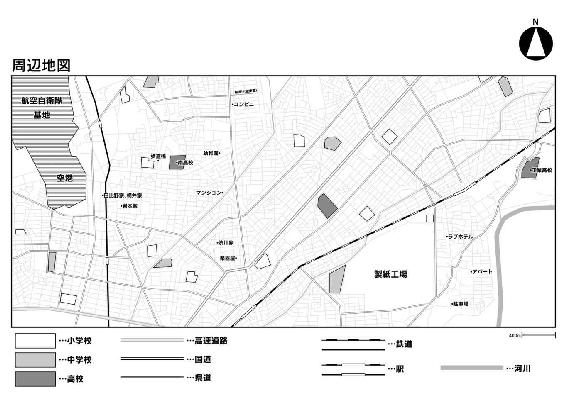
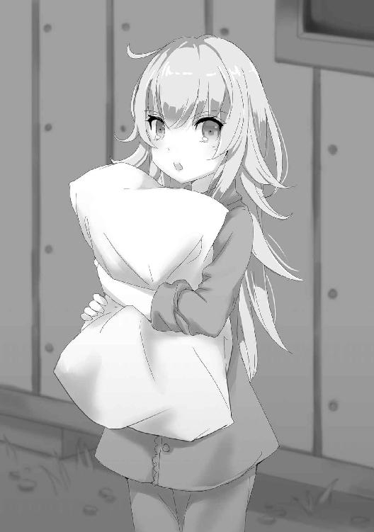
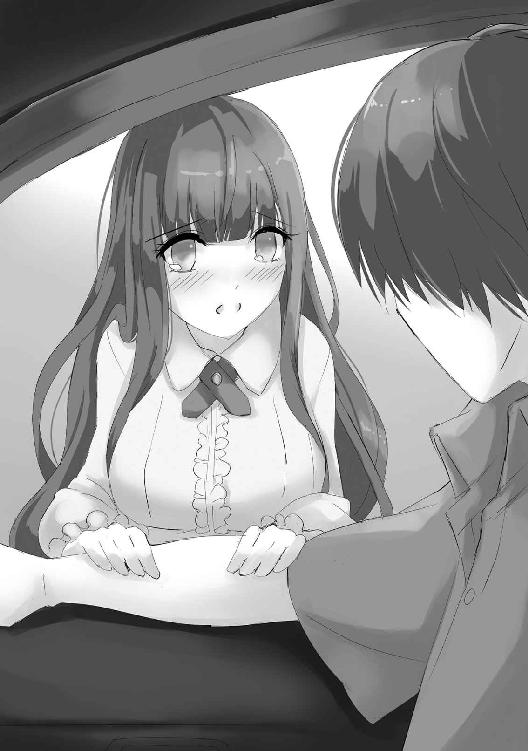

| 成人すると塩になる世界で生き残る話 成人すると塩になる世界で生き残る話シリーズ (ビギニングノベルズ) | |
| 宙乃塵屑 | |
| 株式会社キルタイムコミュニケーション (2017) | |
※本作品の全部あるいは一部を無断で複製・転載・配信・送信したり、ホームページ上に転載することを禁止します。本作品の内容を無断で改変、改ざん等行うことも禁止します。また、有償・無償にかかわらず本作品を第三者に譲渡することはできません。
※本作品は電子書籍配信用に再編集しております。

怪物と闘う者は、闘いながら自分が怪物になってしまわないようにするがよい。
長いあいだ深淵を覗きこんでいると、深淵もまた君を覗きこむのだ。
フリードリヒ・ヴィルヘルム・ニーチェ 『善悪の彼岸』
（中山元・訳 光文社・刊）
ふとリビングに小気味良い音が響いた。
「来たか......っ！」
抑えきれぬ興奮を孕んだ声で、一人の少年が呟いた。
彼は寝そべっていたソファから転げ落ちるようにして立ち上がり、壁際のインターホン端末に駆け寄って通話ボタンを押した。
《あ、どうもー、賀川急便でーす。ジャングルさんから篠宮祐也さん宛てのお荷物をお届けに参りましたー》
「開けるんで上までお願いします」
《はーい》
彼──祐也は通話を終えると、マンション一階エントランスのドアロックを解除するボタンを押した。そして口元に仄かな笑みを浮かべつつ、リビングから玄関へと向かう。
本来ならば玄関前でドアホンが鳴るのを待つところだが、今まさにエレベーターで上がってきているだろう荷物は特別だ。祐也はスリッパを履くと玄関扉を開け、マンション八階の共用廊下に出た。
（なんだこれ......暑すぎだろ......）
冷房全開で快適だった屋内から一転、実に七月下旬らしい高温多湿な外気に触れ、思わず顔をしかめた。八階でこれならば、地上の不快指数は如何ほどなのか......。
辟易としながらも、廊下の手摺壁前で大きく伸びをした。これからしばらく引き籠もる予定なので、最後に外の空気を吸って青空くらいは眺めておきたかった。
「ちょっと」
不意に声を掛けられ、配達員かと思って左に目を向けると、少女がいた。栗色の毛先が肩の辺りで微風に揺れ、猫目を思わせる勝気な双眸がやや下から見上げてくる。
隣家である八〇四号室の住人にして、同じ高校に通う同級生の新崎若菜だ。見た目通りに活発な性格の少女で、確か五月にあった陸上の大会で優勝し、全校集会のときに表彰されていた。
（あー、クソ、タイミング悪......）
新崎とはこうして廊下で会っても挨拶すら交わさず無視し合う間柄だ。にもかかわらず、運悪く今年は彼女と同じクラスになってしまった。
祐也はこのマンションに三年前に引っ越してきたので、新崎とは特に幼馴染みというわけでもない。引っ越してきた当初は何かと話しかけてきたり、義理の姉妹共々、友好的な関係ではあったが......。
とにかく祐也は予期せぬ非日常を前にして、思わず訝しげな眼差しで少女を見てしまった。
「邪魔なんだけど」
新崎から返ってきたのは嫌悪感丸出しの視線と声だった。
しかし祐也はそんな反応に頓着せず、邪魔と言われた意味に気が付いた。玄関扉は開きっぱなしで、更に手摺壁の前に立っているので、通路が塞がれている。通り抜けようと思えば十分可能だが、邪魔なのは確かだろう。
「悪い」
と無愛想に言って祐也がドアを閉めると、今度は見慣れぬ少女が視界に飛び込んできた。
艶やかな長い黒髪を腰元まで伸ばした大人しそうな少女で、年頃は新崎と同程度だろう。新崎の隣に立っているので、ドアの影になっていて見えなかった。
「ふんっ......ごめんね唯、もういいよ」
「うん」
新崎は不機嫌そうに鼻を鳴らしてから、隣の少女に微笑みかけている。
真逆の印象を受ける二人は手を繋いでいて、黒髪の少女は祐也を一瞥すらしないどころか目を閉じており、そのまま歩き出して篠宮家の前を通り過ぎていく。見慣れぬ少女の片手には白い杖が握られていた。
「若菜ちゃん、いま話しかけていた人はお隣さん？」
「そうよ、でも気を付けてね唯。あいつ学校でもボッチで何考えてるか分っかんないしキモいから」
「そ、そうなの......？」
「そうそう、だから廊下ですれ違っても無視よ無視！ あ、でもあいつのお姉さんと妹ちゃんは可愛いしいい人よ」
二人はそんな会話をしつつ、新崎家の玄関扉を開けて姿を消した。
（陰口なら聞こえないように叩けっての......）
とは思うが、真っ直ぐな性格の新崎は陰湿な行為を嫌う。だから陰口にならないように、敢えて本人の前で堂々と悪し様な物言いをしているのだろう。
（......難儀な奴）
軽く溜息を吐いて、入道雲の浮かぶ夏空を見上げた。
別段、キモいと言われるほどキモくないと、祐也本人は思っている。身長は一七四センチで体格もそこそこ良く、太っても痩せてもおらず、顔も人並み程度には整っている。外見的にはキモいと中傷される謂われのない、一見すればどこにでもいそうな高校二年生だが......。
性格が歪んでいることは自覚している。
「こんちはー、あの、篠宮祐也さんですか？」
「あぁ、はい、そうです」
ようやくやって来た中年の宅配員に適当に対応し、伝票にサインした。一抱えほどもあるダンボール箱を受け取ると、宅配員は職務上の礼を口にして低頭し、去って行く。
「......さて、と」
祐也はもう先ほど会った新崎のことなど忘れて、自嘲的な笑みを零しながら部屋へと戻っていった。
■ ■ ■
「............最高だな」
自室の椅子に座り、コントローラーを握りながら驚嘆する。祐也は前代未聞の美麗かつ大迫力な映像に感動を禁じ得なかった。
（さすが最高クラスのグラボだ、待った甲斐があった）
届いたパソコンのパーツを自作マシンに組み込んだのが三時間前のことだ。飲食物を机や床に配置し、予めダウンロードしておいたゲームを起動すると、序盤から引き込まれた。43インチの４Ｋディスプレイには惚れ惚れするほど高解像度なグラフィックが展開され、現実と見紛うほどの世界が圧倒的な没入感を強いてくる。
「今年の夏休みはこいつで終わるな......」
ワイヤレスヘッドホンから流れるＢＧＭや効果音に酔い痴れ、コントローラーを操作しながら、祐也は一人呟いて口角をつり上げた。
半年前からゲーム業界にて最大級に期待されていた大作『キープアウト５』。昨今流行のオープンワールドＲＰＧであり、本日七月三〇日に全世界同時に発売した。
『キープアウト５』のあらすじはこうだ。
二〇年前に北アメリカ大陸がバイオテロによって壊滅したという設定のニューヨーク周辺が舞台で、主人公はイギリスから派遣された調査員という立場だ。感染拡大を防ぐために立入禁止とされる大陸に棲息する、変容したかつての人類や動植物共と戦いながら、二〇年前にいったい何が起きたのかを調べていくが、真実を追う勢力は多数存在し、ときに彼らと協力し敵対しつつも調査任務を果たしていく......というのがメインストーリーとなっている。
（毎日一八時間できたとして......夏休み中に五四〇時間はできるな）
先ほど入手した自動小銃で敵対勢力の調査員を射殺しながら、祐也は完璧な夏休み計画を再認識する。
パソコンのパーツを購入するために、クソ野郎の汚い金を使って良いものかどうか懊悩しはしたが、いざ使ってみればどうということもなく、金は金だと実感できた。
こんなことなら『キープアウト５』の発売日直前まで迷うことなく、早々に購入してさえいれば、日付が変わった瞬間からプレイできていたものを......。
「まあいい、クソったれな現実を後悔するなんざ無意味だ」
傍らに置いていたペットボトルに口を付けて喉を潤し、気分を入れ替えた。
ミネラルウォーターや炭酸飲料などは通販で大量に購入してある。冷凍食品やインスタント食品、シリアル食品からサプリメントの類いまで十二分に買い込んであるので、一ヶ月丸々引き籠もることすら可能である。
現実の煩雑なことなど忘れて、虚構の世界にのめり込むことが、篠宮祐也にとっての幸福だった。
■ ■ ■
全身が振動するほどの音が腹の底から響いた。そこでようやく空腹を自覚し、コントローラーから手を離す。
（あー、腹減った。そういえば今日何日だっけか......？）
部屋に窓はないので、今が昼なのか夜なのかすら不明だ。腹が減ったら食べ、眠くなったら寝て、しかし歯磨きは食後に必ず行い、最後にシャワーを浴びたついでに日付を確認したときは八月五日だった。
椅子から立ち上がって大きく伸びをすると、ベッド脇に置いてあるデジタル式の目覚まし時計に目を向けた。
（八月九日、一〇時か......そろそろシャワー浴びるか）
四日も経っていたのかと思うと、全身が痒くなってきた。
祐也は渇いた瞳に目薬を差してから部屋を出て、まずは冷凍食品を電子レンジに放り込み、加熱し始めておく。それからシャワーを浴び、パンツ一丁で電子レンジから解凍されたチャーハンを取り出して、自室に戻る。
（さてと、さっさと食べ──ん？）
聞き慣れた音が聞こえて、思わず顔をしかめた。スプーンを持ったまま逡巡した後、のっそりと腰を上げてリビングに戻り、壁際のインターホン端末に向かう。
そして通話ボタンを押した。
《あっ、先輩ですか先輩ですよね!? 良かった、やっぱりまだ家にい──》
「帰れ」
ディスプレイに映っていたポニーテールの少女をボタン一つで消し、祐也は部屋に戻った。
（あいつなんで制服着てたんだ？ 補習か？）
更にいえば、なぜか一階エントランスからではなく、既に八階の玄関前まで来ていたが、これは以前にも一度あったことなので気にしない......と思った矢先、再び来訪者を告げる電子音が家中に鳴り響く。
（クソ、あのストーカー女め......あんな奴に俺の優雅な夏休みをぶち壊されてたまるか）
ヘッドホンをして三度目の音をやり過ごし、内心で愚痴りながらチャーハンを食べ進めていく。
あの後輩──森園真名実。
彼女は危険だと直感が告げている。それは三ヶ月前から一向に変わらず、会う度に警戒を強めてきた。これまで通り、あの少女とは極力関わらない方が身のためだろう。
（あんな奴より、今はさっさとゲームの続きだ......）
胸中で呟きつつチャーハンを口内に入れ、咀嚼しながらコントローラーを握る。
せっかくの夏休みなのだ。クソッたれな現実など横目にだろうと見たくはない。それは母も義姉も同じだろうし、だからこそ義妹を連れて旅行しているのだ。
「......俺も行くって言ったら、どんな顔しただろうな」
祐也は微苦笑を浮かべて意味のない想像を打ち切り、ゲームに意識を集中させる。
夏休みの間くらいは現実から目を背けていたかった。
■ ■ ■
森園が訪ねてきた数日後。
「ん......？」
突然、電灯が消えた。祐也は部屋を暗くしてゲームしたりなどせず、自室のシーリングライトは常時点灯状態だった。それが何の前触れもなく消えたので、机の下に置いてある無停電電源装置を見てみると......。
（駆動してやがる......冷房も消えたし、停電か？）
兎にも角にも、祐也は『キープアウト５』の進行状況をセーブして終了させた。敵調査員をあと一人殺せば千人キルの実績が解除されるところだったのだが、致し方ない。最上位の新型グラフィックボードはその高性能に比例して消費電力も半端ないので、予備電力などすぐに食い尽くす。
久々にご対面するデスクトップ画面の右下を確認すると、現在時刻は一五時三七分のようだった。念のため、すぐにパソコン本体の電源も落としておく。
（ったく、こんな真夏に......いや、ブレーカーか？ 冷房はこの部屋しか使ってないんだが......）
暗闇の中、ひとまず手探りでベッドの枕元にあるだろうスマートフォンに手を伸ばした。なんとか掴み取ってボタンを押すも、反応がない。充電切れのようだ。
祐也はワイヤレスヘッドホンを外すと、仕方なく明かりなしで部屋を出る。分電盤は下駄箱上の壁に埋め込まれているが、生憎と暗くて見えないので、ひとまず手探りで玄関扉を開けた。
「うわ......外は地獄だな」
むわっと入り込んできた高湿な空気が一瞬にして全身に纏わり付き、久々の自然光が網膜に突き刺さって、思わず眉根を寄せる。早々にブレーカーを上げてドアを閉めようと、分電盤に目を遣るが......。
（落ちてない......？）
判断に窮し、しばし黙考する。
確かブレーカーが落ちる場合、引いては停電する場合は大抵、過電流か漏電が一般的だと聞く。しかし分電盤に異常はないのだから、今回の停電は周辺一帯の電力使用量が超過したか、送電線や変電所の不具合など、外部に原因がある......のかもしれない。
「やめなさいっ、離しなさいよこのっ！」
思索に耽っていると、不意に廊下から声が聞こえてきた。何やら切羽詰まったような響きだったため、反射的に耳を澄ませてみる。
「は、離してっ、離してください！」
「くっそ、こいつ暴れんじゃねえよ！」
「あーあー、カズ、なに顔殴ってんの。せっかく可愛い子なのにさー」
「唯!? 唯しっかりしてっ!?」
外から届くのは日常で聞く機会はあまりないはずの怒号や悲鳴だ。
男の暴力的な声、女の悲痛な声。
生々しいまでにリアルな情感を秘めた響きはゲームのボイスとは一線を画している。
だからだろうか。同時に耳朶を打ったそれらが否応なく不快な記憶を想起させ、祐也は軽い頭痛に見舞われた。
「でも静かになっただろ」
「ほんっとカズは馬鹿だなぁ、前も言ったじゃん。人ってのは気絶すると重くなって運びにくくなるんだよ。しかもこっちの女、これで余計に暴れまくるよ絶対」
「あんたたち女の子を殴ったりして恥ずかしくないの!?」
「んだとテメェッ!?」
「和輝やめろ、優大の言う通りだ。殴るより脅せばいい、こうやってな」
痛みを振り払うように頭を振りながら、祐也は己に言い聞かせていく。
（あのクソ野郎を突き落としたことに間違いはない）
奴は母も、義理の姉妹も、自分のことも、皆を苦しめていた。死んで当然のクズだ。
「ほらな、静かになった」
「だったらオレにもそれくださいよ間島さんっ」
「間島さんと久瀬さんが、カズみたいな直情馬鹿に持たせるわけないじゃん。直人もそう思うよね？」
「は、はは......そう、かもね」
「杉田、あんた......なんで......あっ、石川っ、石川起きて！」
祐也は大きく深呼吸をした。
まずは停電の原因を突き止めて、早くゲームを再開しよう。もうリアルの声は無視だ。
「あれ、ねえ間島さん」
「無駄話は控えろ優大、早く行くぞ」
「いえいえ、あのドアってさっきは開いてなかったですよね？」
「む......そうだな。お前らはこいつらを押さえていろ。俺が様子を見てくる」
「今さっきの停電といい、なーんか嫌な予感するね......」
「なんだ優大、またテメェはいちいちびびりやがって。見ろよ間島さんの堂々とした背中をよ」
「石川っ、なんで......あんたら、まさか石川殺したのっ!?」
周辺一帯も停電している場合、電力会社の復旧作業次第だ。とりあえず他の家々を見回して判断してみるのがいいだろう。だが共用廊下の方は何やら面倒事が起きていそうなので、ベランダから確かめてみよう。
そう判断して、まずは玄関扉を閉めようとしたところ、
「......ん？」
「......む？」
共用廊下にいる見知らぬ大男と目が合った。
ドアレバーを掴んだまま少々呆けてしまったが、すぐに目を逸らして扉を閉める。
「──っ!?」
だが手が伸びてきてドアの端を掴み、爪先も差し込まれた。祐也は咄嗟に腕を強く引いて、無理矢理にでも閉扉しようと試みる。先ほど目が合った瞬間、相手の剣呑な気配を敏感に察知していたからだ。義父のおかげで──せいで、暴力の臭いは嗅ぎ分けられる。
「お前ここで何をしている!? どこの奴だ!?」
「クソッ、おい離せ！ 指千切れても知らんぞ!? 警察呼ぶぞっ！」
「警察......？ ははっ、警察か、その返事で十分だ！」
十数センチほどのドアの隙間から、手がもう一つ現れた。
その手には黒光りする何かが握られている。
『キープアウト５』にも登場していた、回転式弾倉を有する、アレだ。
「え......？」
呆然としかけたのは数瞬だけだ。
祐也はすぐに理解すると同時に最大の警戒心を抱き、反射的に後ずさりながらドアレバーから手を離した──瞬間、鼓膜をつんざくような炸裂音が響いた。ここ最近、ヘッドホンから幾度となく流れてきていた効果音に酷似しているが、決定的なまでにリアリティな、その音響。
あまりに非現実的な事態に直面し、祐也の脳はこれが現実なのか虚構なのか、判じかねた。
「間島さんっ、どうしたんスか!?」
「大丈夫だ、心配す──ガァッ!?」
鼻腔を突く硝煙の臭気が消えぬ間に、玄関扉が開いて大男が姿を見せた。
これが火事場の馬鹿力というやつだろうか。
無意識的にその好機を待っていた祐也は逞しい首が現れた瞬間、渾身の力で踏み込んで、いつの間にか握っていた細身の婦人用傘を突き出していた。いや、突き上げたという表現の方が近い。
「ぅゴ......ぐ......ぁ......？」
一〇代後半から二〇歳前後ほどに見える。自身より一〇センチは上背のある如何にも筋肉質な体格の青年だ。黒い帽子を被っている彼は鍔の下で愕然と目を見開き、口から赤い液体を零している。
回転式拳銃を持った右手がゆらりと動いたのを視界の端に捉え、祐也は左手で〝敵〟の右手を掴んで押さえながら、右腕に力を込めた。ぐぬっと傘がさらに埋まり、大男の身体がふらりと斜め後ろに倒れる。
「間島さんっ!?」
祐也は〝敵〟の右手を掴んだままだったので、倒れた男に引き摺られるようにして共用廊下に出ていた。片膝を突いたまま首を右に向けると、数メートル先に肥満体の少年がいた。そう認識しながらも自身の左手は勝手に動き、大男が手にしていた代物を確保しようとしている。
「テ、テメェ......よくも間島さんをっ！」
驚愕した態で立ち尽くしていた肥満体の少年が、形相を愕然に歪めて駆け出してきた。
（変異体）
廃墟と化したニューヨークの街並みにもこんな怪物がいたな......と、祐也は暢気なほど冷静に考えていた。変異した元人間のそいつはゾンビのように襲い掛かってきて、幾度となく撃ち殺してきた。
「────」
あと二メートル。
掴みかかろうと両手を伸ばして突進してくる誰かを、祐也は撃ち殺した。
身体が勝手に動いていた。左手で奪い取った凶器を右手に持ち替えて片手で構え、トリガーを引き絞ると、〝敵〟の右目に命中した。ビギナーズラックというやつだろう。
銃を撃つのは初めてだが、初めてではない。ここ最近は何千回とボタンを押してきた。しかし、引き金を引いたのはこれが初めてだ。４Ｋディスプレイに映る最高解像度の『キープアウト５』よりも鮮烈な光景だ。
（すげえ......なんだこれ）
内心で感嘆する祐也には、慣性に従って倒れ込んできた〝敵〟を避ける余裕すらあった。
なぜかは分からない。以前に一度、ここであのクソ野郎を殺していたからかもしれない。
経験値が貯まっていたのだろう。
レベルアップはまだか、次は一四七レベルだったはずだ。
「........................」
「........................」
共用廊下の先、八〇四号室の前には五人の人影があった。
頭部から血を流して倒れている制服姿の少年、ぐったりと床に倒れ込んでいる長い黒髪の少女、肩に制服姿の少女を担いだ金髪の少年、手錠をされて肩に担がれながら呆然とこちらを見遣る隣家の少女、そして唖然とした面持ちで立ち尽くす制服姿の少年。
「ぅ、あ............うわあああぁぁぁぁああぁぁぁ！」
どこか見覚えがあるような顔をした制服少年が、叫びながら背中を向けて走り出した。
「あっ、おい直人！ く......あぁもうっ！」
「え......ちょっと、篠宮、助けて篠宮っ！ 祐也ぁ！」
金髪の少年は制服の彼と祐也を交互に見遣った後、助けを乞う少女を担いだまま、制服姿の背中を追って行く。
祐也は久々に呼ばれた自身の名でふと我に返り、遠ざかっていく二人──いや三人を反射的に追い掛けそうになるが、両足は動いてくれなかった。
「............おい、これ......洒落になんねえぞ」
自身が刺し殺し、撃ち殺した者たちを見下ろして、思わず呟きが零れ出た。廊下の先、階段のある方から少女の声が響いてくるが、祐也は自身の右手が握っている物に意識を奪われ、それどころではなかった。
「なにが......何が、どうなってる......？」
遠く響いてきていた少女の声が突然途切れた。
見つめていた回転式拳銃から目を逸らし、もう一度、足下に転がる二人分の死体を見下ろす。
そこでようやく現実と虚構の区別が明確となり、己がしでかしてしまった事の重大さを認識した。
「........................うそだろ、おい」
祐也は思考が纏まらず、ただ立ち尽くすしかなかった。
祐也は冷静になる方法を知っている。
自身を俯瞰するのだ。
主観で世界を捉えるのではない。客観で、自身をも含めた世界全てを頭上から見下ろすように、認識を広げていく。そうして感情を切り離すことで、他人事めいた、映画でも見ているような気分になれる。
クソ野郎を突き落としたときはこれで乗り切った。
「............よし、問題ない、俺は大丈夫だ」
大きく深呼吸を一つ。血臭はするが、慌てることはない。
「......なぜ、こんなに静かなんだ。二回の銃声は結構響いたはずだ」
敢えて考えを口に出すことで、次々と思考が溢れ出てくる脳内を整理していく。
「最初に撃ってきたのはこいつだ。壁にも弾痕があるはず。だからこれは正当防衛......ではきついか？ いや、とにかくまずは......どうする、逃げるか......いや警察から逃げ切れるとは思えんし、さっきの奴らは......」
目撃者は三人いる。
金髪の少年に見覚えは全くなかったが、残り二人は違う。一人は隣家の少女こと新崎で、もう一人の少年は黒い長ズボンに白い半袖ワイシャツという馴染み深い格好をしていた。新崎が高校の夏用制服を着ていたので、少年の方もおそらく同じ高校の生徒だろう。
（あの二人は新崎を攫っていったように見えたが......停電して、こんな一般人っぽい男が銃持ってて、いきなり発砲してきて......何が起こってる......？）
祐也は右手に拳銃を持ったまま、左手を口元に当てて考えていく。そして何はともあれ、思った。
やはり静かすぎる。
「......車が走ってない」
八階の共用廊下から見える地上の風景は静止していた。
ここは住宅街の只中なので、マンション前の通りならば未だしも、遠くの交通量が多い道路を見遣っても一台たりとて走行している車両がない。それどころか人の姿すら見当たらず、動いているものといえば鳥くらいだ。
普段は聞こえるはずの街の生活音すらなく、不自然極まる静寂が漂っている。
（なんだ......何かが起こっているのは間違いない......あっ、そうだスマホ、ネットを見れば何か......っ！）
急いで薄暗い自室に駆け戻った。玄関から漏れ入ってくる光を頼りに、ベッド脇に投げ出されていたスマートフォンを手に取る。が、幾らボタンを押しても反応がない。
「そうだった......クッソ、落ち着け......停電じゃ充電すらできん......いや待て、あそこに倒れてる二人っ」
裸足のまま玄関を飛び出し、新崎家の前に倒れている少年少女の側に駆け寄った。少年は俯せに倒れており、血溜まりに沈んでいる。やはり制服姿で、ぴくりとも動かない。
祐也は右腕の手首に触れてみた。
（脈は......ない。死んでやがるのか？ じゃあ、こっちの女も......？）
仰向けに倒れている少女に視線を転じた。この真夏に長袖の白いブラウスと膝丈のハイウエストスカート姿で、両手は黒い手錠で拘束され、長い黒髪が床に散乱している。出血は鼻血くらいで他に外傷は見られず、胸部の豊かな膨らみが微かに上下しているので、生きてはいるのだろう。
（こいつ......どっかで見たような......？ いや、とにかく、生きてるなら話を聞けるはずだ）
一一〇番するという思考など祐也の頭にはなかった。先ほどの金髪少年たちが通報するだろうし、そもそもこの静かすぎる街の警察がまともに機能しているのかどうかも定かではない。それに何より、どうせ逮捕されるにしても現状くらいは予め把握しておきたかった。
「おいっ、おい起きろっ、おい！」
「........................」
「おいあんた！ おいっ！」
少女の華奢な肩を揺すってみるが、起き出す気配はない。
「クソ、やっぱ気絶してやがる......仕方ねえな」
祐也は家着であるハーフパンツのポケットに拳銃を突っ込み、少女を抱き上げた。無論、お姫様抱っこと呼ばれる抱え方などしない。意識を失った人間は存外に重たく感じるので、安定して抱えづらいのだ。そこで以前に見た映画を参考に、首の後ろと両肩を使って横向きに背負い上げて、少女の左足と拘束された左手を掴んで保持する。
（......思ったより軽いな）
ひとまず自室に少女を運び、ベッドに寝かせ付ける。
薄闇で判然とはしないが、改めて見下ろすと相当に端正な顔立ちの美少女だ。長い黒髪に艶は少ないものの、精巧な人形の如く整然とした目鼻立ちは一種の犯し難い潔癖さを孕んでいる。長い睫毛は微動だにせず、ただ安定した呼吸で胸元が上下している。
背負った際に感じた柔らかさから、胸部は見た目通り相当な大きさなのが分かった。年頃は祐也と同程度だろうが、どことなく判然としない。この静謐さは年上の女を思わせるし、あどけない寝顔は年下を思わせる。
「鼻血は......まあいいか、まずは現状の把握だ」
祐也は自身に言い聞かせるように呟いた。
こんな状況とはいえ、自身が性欲旺盛な年頃の男であることは自覚している。これほど容姿端麗な少女が目の前で無防備な姿を晒していれば、否応なく劣情も湧き上がってくる。
我ながら余裕が出てきたなと他人事のように思いながら、再び動き出した。
■ ■ ■
とりあえず、自身が殺した二人の男を調べてみた。現場保存などという考えは祐也の頭になく、この得体の知れない状況と嫌な予感に従って、所持品を漁っていく。
まずは傘で突き殺した帽子の大男から。
（身元を確認できるものはない......鍵......車のか？ なんだこのごついナイフ......まさか軍用？ それに無線機......なんだこいつ......）
大男は中サイズのリュックを背負っているが、仰向けに倒れている。傘が突き刺さったまま両目を見開いて絶命している死体を改めて見下ろし、逡巡した後、傘を引き抜いて俯せに転がすと、リュックを奪い取る。
そして早速、中身を確かめてみた。
（手錠......本物か？ いや、あの女のは本物っぽかったし、銃からして本物だ。この箱は、まさか......弾薬......あとは煙草、ライター、懐中電灯にガムテープ、スポーツ飲料）
他にも色々と入っていたが、今は何が入っているかの確認だけに留める。
混乱を抑えながらも、早々にもう一人の男に目を向けた。初めて撃った銃で頭部に当ててしまった肥満体の少年だ。
（こいつも身元が分かるものはない......そして無線機か。他は......スマホに、スタンガン？ それに警棒か、これ？）
とりあえず白いスマートフォンのボタンを押してみた。暗証番号入力画面が表示され、使えそうにない。だが日時は確認できて、どうやら今日は八月一四日らしい。
（もう半月も引き籠もってたのか......とりあえず、バッグの中は......）
脂肪に覆われた肉体からショルダーバッグを剥ぎ取る。尚、少年の死に顔はなるべく見ないようにした。なにせ右の眼球が潰れているのだ、グロテスクにすぎる。
鼻腔を突く血臭と凄惨な死に様に顔をしかめながらも、中身を確認していく。
（飴、ガム......クッキー？ フルーツジュース......包丁、ビニール紐、ハサミ......コンドーム......？）
所持品から推測される素性や状況を思いながらも、祐也は新崎家の前に倒れている制服の少年を見遣り、そちらへと駆け出す。
（血溜まりは頭から広がってる......頭部を殴打されたのか？）
死体の側には血濡れた鉄パイプが転がっている。そして使い古された感のあるバットも見られるが、こちらは血濡れていない。
（このバットがこいつの武器で、鉄パイプに殴殺されたのか。殺ったのは......あの逃げた奴のどっちかだな）
大男にはナイフがあるし、肥満少年には警棒があった。わざわざ鉄パイプで殴り、この場に落としていることを考えれば、妥当な推理だろう。が、犯人のことはどうでもいい。
祐也は俯せの死体を仰向けに転がした。
「ん......この校章、うちのだ......」
襟元まで血で真っ赤に染まった半袖ワイシャツの左胸ポケットには校章が小さく刺繍されている。それに胸ポケットには生徒手帳が入っていたので、取り出してみた。
「......二年一組、石川真ノ介......あっ、こいつ委員長か」
同じクラスの学級委員長だと遅まきながらに気が付き、少なからず衝撃を受けてしまう。
石川はクラスで孤立していた祐也に対しても平然と話しかけてきていた。誰に対しても分け隔てなく接する快活な性格の持ち主で、二年一組では名実共にクラスの代表のような人柄の良い少年だ。成績は芳しくないと評判だったが、その馬鹿さ加減も愛嬌の一つとして受け入れられて、多くの同級生に好かれているようだった。
「........................」
祐也は無言でズボンのポケット漁ってみた。すると案の定というべきか、スマートフォンを発見する。
（こいつなら......やっぱりか、ロック掛けるような性格じゃねえよな......って、圏外じゃねえか）
先ほど白いスマートフォンを確認したときは、ロック画面と時間に意識を持っていかれて気付かなかった。
（クソ、冷静になれ......色々考えるのは後だ、まずはあの女だな）
同級生の生徒手帳とスマートフォンを自身のポケットに入れ、玄関に入る前にもリュックとショルダーバッグを回収しておく。これで殺人罪に加えて窃盗罪も犯したことになるが、現状の不可解さは常軌を逸している。気にしている場合ではないという理性の訴えを受け入れつつ、部屋に戻った。
「......まだ目覚めないか」
祐也はリュックに入っていた黒い懐中電灯を取り出した。形状からして懐中電灯というよりハンディライトと称するのが適当な代物で、点けてみると強力なＬＥＤの光が室内の薄闇を切り裂いた。その光をベッドに横たわる少女に向けて見つめながら、頭を働かせていく。
あの銃声でも未だ、誰もこの階に上がってこないし、やはり人気もない。誰かを探しに行くか、この少女が目覚めるのを待つか、あるいは......。
（無理矢理起こしてみるか）
停電してから──殺してから、既に一五分ほどが経ち、現在は一六時前だ。
祐也は机に置いてあったペットボトルを手に取り、中身の天然水を少女の端正な顔に掛けた。
「............っ、ぅぷっ......かはっ、ごほっ」
鼻腔や口腔から気管に水が入ったのか、少女は咳き込みながら目蓋を開け、上体を起こした。ベッドが少々濡れてしまったが、許容範囲内だ。
「おい、あんた」
「だ、誰ですかっ、ここはどこですか!?」
少女は如何にも怯え惑ったような上擦った声を上げて、両手を動かす。が、手錠による拘束を自覚したのだろう。僅かに眉をひそめてから、彼女は何かを探るような素振りで両手を中空に彷徨わせ始めた。
「何やってんだお前、落ち着け、こっち見ろ」
「若菜ちゃんっ、どこ!? いるなら返事してっ！」
「新崎はいない。ここにいるのは俺とお前だけだ」
「......あ、あなたは、誰......ですか......？」
ようやく祐也に顔を向け、恐る恐るといった口調で訊ねてくる。ベッドの上に座っている少女は強張った全身を微かに震わせていた。
「俺は篠宮祐也、お前は？」
「......もしかして、若菜ちゃんの、お隣さんですか......？」
「そうだ。お前の名前は？」
そう対応しながらも、祐也は思い出していた。
引き籠もることにした初日、久々に新崎と言葉を交わした際、隣にいた少女だ。吹けば飛ぶような儚い雰囲気を持つ、大和撫子のような外見が印象に残っている。
「わ、私は......本条、唯......です。あ、あのっ、ここはどこですか!? 若菜ちゃんはっ!?」
「ここは俺の部屋で、新崎は何者かに攫われた。とりあえず落ち着け、ほら水でも飲むといい」
「攫われた......ぇ、あ......どうしよう......なんで、こんなことに......」
「いいから飲め、そして一息吐け」
祐也は呆然と呟く少女の手にペットボトルを握らせた。すると本条はびくっと身を竦ませ、逡巡する素振りを見せたが、震える手で飲み始める。
そっと息を吐きながら彼女が目蓋を下ろしたのを確認し、祐也は再び口を開いた。
「よし、落ち着いたな。今から俺のする質問に答えろ、いいな？」
「は、はい......でもあの、若菜ちゃんが......っ！」
「待て、焦るな、俺はお前を助けてやった命の恩人だぞ？ まずは俺から色々訊かせろ、いいな？」
「......はい」
小さく頷く少女を確認して一息吐きながら、祐也は座り慣れた椅子に腰掛けた。命の恩人云々は誇張の上に結果論だし、焦っているのはこちらも同様だ。
故に、冷静さを忘れてはならない。
「まず一つ目、お前らを攫おうとしていた奴らは何者だ？」
「わ、分かりません......若菜ちゃんのお家に上がって、忘れ物......探していたら、いきなり来て......あの、篠宮さんは、どうしてここに......？」
「今質問しているのは俺で、お前は後だ。二つ目、お前はどこの誰で、新崎とはどういう関係だ？」
「若菜ちゃんとは......従姉妹で、私は東京の方に住んでて、夏休みだから......遊びに来たんですけど......こんな、世界が、おかしくなっちゃって......」
手錠をされた両手でペットボトルを握り締め、華奢な身体を縮こまらせている。不安の表れか、未だに両目は閉じたままだ。
「世界がおかしくなった......？ どういう意味だ」
「どう、って......大人が、みんな塩になった......んですよね？」
「は？ 塩？」
あまりに想定外かつ意味不明な言葉に、思わず間の抜けた声を上げてしまった。そんな祐也に何を思ったのか、本条は如何にもびくびくと怯えた様子で小さく呟き出す。
「え、えっと、塩だって言ったのは、学校の人たちが調べたから、らしいんですけど......とにかく、大人の人たちが、みんな白い粉になって、いなくなってしまった......んですよね......？」
「いや......ですよねって、俺が知るかよ。知らねえから訊いてんだよ」
「す、すみません......でも、みんなそう言ってますし......」
「みんなって、お前が実際に見たわけじゃないんだな？」
本条は躊躇いがちに頷き、そのまま顔を俯けた。先ほどから目蓋を開けず、対面の祐也を見ようとしない。
「なんだそりゃ......いいか、俺は真剣に訊いてるんだ。塩だの白い粉だのふざけるな、真面目に答えろ」
「あの......私、目が見えないんです」
「......は？」
「だから、あの......すみません......」
申し訳なさそうにか細い声で言い、俯けていた顔を更に下げて、謝罪してくる。
祐也は思わず唖然としてしまったが、すぐに動き出した。
「おい、顔を上げて、目を開けろ」
「......は、はい」
薄暗い部屋の中、祐也はベッドの前で片膝を突き、ハンディライトの光を少女の右目に直射した。長い睫毛に縁取られた双眸は閉じたりせず、本条は平然としている。
強力な明かりに祐也の方が目を細めながら、黒い瞳を凝視してみた。
「これは......瞳孔開きっぱなしだな」
「........................」
「お前、全く見えないのか？ 光すら感じないのか？」
「......はい」
全盲であることを肯定する少女に悲壮感は見られない。ただ祐也という他人を警戒しているような、小動物めいた臆病さしか感じられない。
「なるほど、そうか......分かった。悪かったな、知らずとはいえ理不尽なことを言った。つまりさっきの塩だのなんだのは冗談でも何でもないんだな？」
「はい......あの、篠宮さんは、知らないんですか......？」
「知ってれば訊かん......こいつもらうぞ」
「あ......」
祐也は少女の手からペットボトルを抜き取り、椅子に座り直した。そして生温い水を一気に飲み干し、大きく息を吐き出す。
「大人がいなくなった、だったか......なるほど、だからか......お前は新崎のことが心配だろうが、世界がおかしくなったって話、聞かせろ」
「いいですけど......あの、それを話したら、私も色々訊かせてもらって、いいですか......？」
天井へ向けて照射されるハンディライトの余光で、本条の顔には陰影が色濃く差し、暗澹とした面差しを作り上げている。
「ああ、だから話せ、いったい何がどうなってやがる」
だが祐也は構わず、構う余裕がなく、話を急かした。
「......分かりました」
そうして本条唯という盲目の少女から、世界の異常について聞かされた。
事の始まりは八月一日だという。
曰く、〇時ちょうどの真夜中に、大人たちの身体が白い粉になって崩壊した。どうやら二〇歳以上の成人は例外なく塩に変質し、いなくなってしまったらしい。ネットの情報によれば、世界中でその現象が確認されており、この二週間の間に成人を迎えた者も塩になって死んだそうだ。
異変が起こって間もなく、真夜中のうちに本条は新崎と共に祐也の通っている南高校──通称・南高に向かい、新崎の友人やクラスメイトたちと合流した。高校には生徒たちが次々と集まって来て、昼頃に体育館で集会を開き、話し合った。
結果、その日の夕方には生徒会主導で近隣のコンビニやスーパーなどの商店から飲食物の回収作業を開始した。生徒たちは自宅から生活用品を持ち込んで学校に寝泊まりするようになり、飲食物を含む各種資源を収集しながら、未だ姿を見せない生徒の招集なども行っていったそうだ。
「だいたい......こんな感じです」
「月末過ぎたら終末が始まっちまったと......笑えねえ話だ」
ベッドの縁に腰掛ける本条の表情は硬い。
祐也はポケットに入れっぱなしだった拳銃を思い出して、取り出した。俗にリボルバーと呼ばれる回転式拳銃は銃把こそ茶色い樹脂性で安っぽく見える。回転式弾倉やそれを支えるフレームなどは黒い金属製で重厚感があるとはいえ、銃身がかなり短いので一見するとチャチな玩具にしか見えない。
だが、これは紛れもなく非日常の代表格ともいうべき凶器であり、その威力は体感済みだ。こんな代物を一介の高校生が手にできている現状こそが、本条の話に信憑性を与えている。
「あの......訊いても、いいですか？」
「......待て、ちょっと待て......お前ここに何しに来た？」
大人たちが消え、未成年者も成人すると塩になるらしい世界。その摩訶不思議についての疑問より、祐也はこの非日常的な終末世界の日常について、頭が回っていた。
拳銃のグリップがやけに冷たく感じる。
「さっきお前、忘れ物とか何とか言ってたよな」
「は、はい。大事なオルゴールを、若菜ちゃんのお家に忘れていて......落ち着いたら、ないことに気付いて......すごく大切なものなので、取りに来たんです」
「何人でだ？」
「四人、ですけど......？」
それがどうかしたのか、とでも言いたげな怪訝さを覗かせる本条。
「新崎、石川、お前、あともう一人も南高の生徒か？」
「はい。この状況で、女の子二人だけで出歩くのは危ないからって、若菜ちゃんのクラスメイトの男子が、付いてきてくれたんです」
見るからに人畜無害そうな少女の暢気さに反し、祐也は最悪の可能性を悟り、一気に焦燥感が湧き上がってきた。
「さっき、なぜ襲われたか、分かるか？」
「いいえ......篠宮さんはご存じなんですか？ そもそも、篠宮さんはどうしてここにいるんですか？ 若菜ちゃん、あの日......すぐに篠宮さん家のインターホンを鳴らして、その後も電話したり、何度か呼びに来たりしたそうなんですけど......これまで、どこにいたんですか？」
溜め込んでいた不安の発露なのか、少女は問いに問いを重ねてくる。その表情や声音には疑念が込められているようにも感じて、祐也は思わず嗤った。
「お前、俺が連中の仲間だとか疑ってんのか？」
「い、いえ......そんなことは......」
「俺を疑える頭があるなら、同行してきた奴を疑え。もう一人の奴の名前は？」
「杉田......直人さん、ですけど、それが何か......？」
なぜ未だに気付かないのか、祐也は本条の能天気さに呆れ返る。盲目という障害と整った容姿故に、人から親切にされて育ってきたのだろうか。あるいは同じコミュニティに身を置いている少年なら悪人ではないと思い込んでいるのか。いずれにせよ、頭の回転が悪い事は確かだ。
「これは推測だが、十中八九お前と新崎は杉田に売られた」
「う、売られた......？」
「話を聞く限り、街の未成年者たちは学校か学区単位でかで纏まって動いてるんだろ？ だが、不良共や学校にすら通ってなかった連中......そういう馬鹿共はこの状況でどうすると思う？」
「......え、ぁ......え？」
少女の顔が僅かに引き攣り、戸惑った声が漏れ出る。
理解したのかしていないのか不明だったので、確認の意味も込めて祐也は言ってやった。
「一〇代の男なんざ性欲の塊だ。この状況に便乗して好き勝手やる連中は必ずいる。だからお前と新崎の護衛として男が二人同行した......が、そのうちの一人がどっかの不良共とグルだったら、どうなる？」
「それ、は......もしかして......」
「学校は秩序が保たれてるんだろ？ だから好き勝手はできない。杉田はお仲間の不良共にお前と新崎を売って、一緒にお前らをレイプしようとしたんだろうな。でなけりゃ、なんでこんなマンションの八階で襲われるんだ？」
高校からマンションまでの道中でも襲えただろうが、広所では逃げられる恐れがある。だが、ここは全く人気のない八階であり、一度家に入らせれば袋の鼠だ。あの大男や肥満体、金髪たちは杉田の連絡で九階にでも待ち伏せて、玄関前で待っていた石川を殺し、新崎と本条という獲物を狩ろうとしていたのだろう。
（だがこいつらは連れて行かれようとしていた......？）
南高はそれなりに偏差値が高く、校則が厳しかった。男子生徒は頭髪の長さまで制限されていたほどなので、当然の如く不良らしい不良はおらず、実に平和な学校だった。
祐也が高速で思索を巡らせていると、少女が焦燥感も露わに口を開いた。
「あ、あのっ、石川さんは!? 石川さんはどこですか!?」
「奴なら殺されてたぞ、新崎の家の玄関前でな」
「────」
唖然とする本条を無視して、祐也は思考を進めていく。
強姦するつもりなら、人気のないマンションの八階という立地は最適だろう。にもかかわらず、あのときの新崎も今目の前にいる本条も、着衣は乱れていなかった。つまり連中は全く手を出すことなく、すぐに連れ出そうとしたのだ。長居すれば新崎を心配した高校の連中が様子を見に来るだろうから迅速に撤退したのだろうが、それにしたって行動が理に適いすぎている。
（拳銃に無線機......相手も馬鹿じゃない......不良共なら群れてるだろうし、アジトかどこかに連れ帰って仲間たちと......仲間がいるなら......）
むくむくと膨れ上がる危機感に対し、祐也は冷静を心掛けて、軽く深呼吸した。
「......あ、あのっ、若菜ちゃんは......？」
「まず間違いなく、連中の本拠地でレイプされるだろうな」
微かに震えている本条に構わず率直に告げた。
おそらく新崎は監禁されて、もう二度と解放されないかもしれない。彼女は誰の目から見ても並以上に可愛い美少女だ。もし逃げた金髪と杉田に仲間がいれば輪姦されるだろうが、現状で最重要な問題は別にある。
「すぐに帰って、みんなに報せて、助けないとっ！」
「そうするのは勝手だがな、お前少しは考えたらどうだ？」
「何をですかっ、早く......早く若菜ちゃんを助けないと酷いことになるんですよ!?」
本条は盲目とは思えない動きで立ち上がり、力強く訴えている。だが、祐也は尚も椅子に腰掛けたまま、冷徹とさえ称せる冷めた眼差しで彼女を見上げていた。
「俺は二人殺してお前を助けたが、逃げた残り二人に顔を覚えられた。もちろんお前の顔もな」
「え、殺し......って......」
「そして学校には杉田以外に不良共とグルの奴がいないとは限らないし、そもそもお前、一人でここから南高まで辿り着けるのか？」
「あ......その、篠宮さんも、学校に行きますよね......？」
気弱そうな少女から向けられる表情や声音が変化した。祐也に対して明らかな恐怖や疑念を抱いていながらも、縋るような謙るような素振りが見られる。
普通の男子高生ならば、盲目の美少女への劣情やら庇護欲やらを掻き立てられて、脅迫や色良い返事をする場面だろう。だが現状は尋常の範疇になく、祐也は自身が捻くれていることを自覚している。
「行くわけねえだろ、アホか」
「で、でも......」
「もし逃げた二人が結構な規模の集団の一員だった場合、連中の仲間を二人殺した俺は確実に復讐される。不良共の本体か、あるいはグルの内通者がいるかもしれない場所になんて行けるかよ。しかも、もう杉田たちが逃げて三〇分以上経った。いつここに連中の仲間が駆け付けて来てもおかしくない」
「え......？」
本条は怯えを孕んだ声を漏らし、所在なさげに立ち尽くしている。祐也も立ち上がり、まずは服を脱ぎ始めた。
どうするか方針は決まったので、もうこれ以上の時間は無駄にできない。
「ここから南高まで走って五分、自転車なら三分だ。杉田が被害者面して南高に逃げ帰り、俺が石川を殺して新崎とお前を攫った......とか何とか訴える可能性は低いし、お前の証言と二人分の死体があれば、俺がお前を暴漢から守ったヒーローだと証明されはするだろう」
「そ、そうですよっ、篠宮さんは私を助けてくれた──」
「だが俺はこの二週間、学校に一度も姿を見せなかった。家でひたすらゲームしてて異常に気付かなかったなんて間抜けな話、普通は説明しても誰も信じねえよ」
ジーンズと靴下を穿き、シャツを着ると、なるべく裾の長い半袖の上着も羽織る。他の服や必要な物は学校のスクールバッグに適当に詰め込んでいき、鍵類はポケットに突っ込む。
「俺はろくに友達もいねえし、クラスでもボッチだったからな。俺こそがどっかの不良と繋がりのある奴で、二人の死体は敵対している不良連中と新崎を奪い合った結果のものだとでも誰かに言われれば、説得力のある反論はできん」
それに何より、祐也は一人を銃で殺した。
銃の所持を知られるわけにはいかないし、だからといって現状で最強の武器を手放すなどあり得ない。もはやこの世界に法はなく、力こそが正義となっているはずなのだ。学校に身を寄せれば、秩序維持を果たしているらしい生徒会に銃を没収される可能性は高い。
既に杉田が学校に逃げ帰っていれば、時間的に誰かがこの場に駆け付けて来ているはずだが、未だに誰の姿も見せていない。それでも敵の今後の行動と状況が依然として不透明である以上、銃を失うリスクを冒したくはなかった。
「そんな、ことは......」
「あるんだよ、普段からの印象ってのは大きい。どれだけ理屈が通っていても、俺はまず信用されない」
念のため制服と生徒手帳も突っ込んだところで不意に思い出し、クローゼットから防災ラジオを取り出した。中学生の頃、技術の時間に半田付け作業から制作させられた代物で、非常用手動発電機能が備わっている。ハンドルを回すとキャパシタに電力が貯まり、ＬＥＤライトとサイレン、ラジオが電池なしで使用できるだけなく、ＵＳＢ端子のある機器と単三の充電池を充電できる機能まで備わっている。
祐也はテレビのリモコンや目覚まし時計などから計六本の単三充電池を抜き取り、スマートフォンの充電用ＵＳＢケーブルも引っこ抜いて、鞄に入れた。
「で、お前はどうするんだ？」
「え、ど、どうって......わたし......」
「意地の悪い訊き方だったか、言い直す。お前は俺にどうして欲しい？」
手錠を嵌めたまま、頼りなさげに立ち尽くしてる盲目の少女。
祐也に赤の他人である本条唯を助けてやる義理などないし、彼女は間違いなく役立たずの足手纏いだ。学校という集団に身を寄せられず、端から寄せる気もない祐也にとって、本条引いては新崎を助けるメリットはないだろう。
『え......ちょっと、篠宮、助けて篠宮っ！ 祐也ぁ！』
しかし、一つだけ悔いていることがあった。殺人の衝撃に呆けて、見逃してしまったことだ。
新崎のためだけでなく、自己保身のためにも金髪と杉田を追い掛けて、二人を始末するのが最善だった。にもかかわらず、あのときは突然の状況に混乱して今ほど頭が回っていなかったし、割り切れてもいなかった。
「あの、えっと......若菜ちゃんを、助けてくださいっ、お願いします！」
「......一応訊く。なぜ俺にそれを頼む？」
「学校には内通者がいて、みんなで若菜ちゃんを探そうとすれば、情報が筒抜けになる......と思います。だから、その......私も一緒に連れて行ってください！ お願いします何でもしますからっ！」
深く腰を折る少女の後頭部を静かに見下ろすと、祐也は華奢な肩を乱暴に掴んで顔を上げさせた。と同時に大きく踏み込んで、本条の右頬に手を添えながら左耳に顔を寄せて、低く囁いてやる。
「何でもって意味、分かってて言ってるのか？」
「......っ、分かって、います」
「俺がお前を抱かせろって言えば、素直に従うのか？」
「わ、私の......私のせいで、若菜ちゃん、捕まって......それに、石川さんも、殺されてしまったんですよね......？ だから、私......何もできないし、それで若菜ちゃんを、助けてもらえるなら......っ！」
黒い瞳に光はないが、双眸は強く引き締まり、意志の強さを感じさせる。
祐也にとって本条など有象無象の一人であり、義姉妹や新崎より優先順位は遥かに下だ。もし腑抜けたことを言っていたら、より詳細な情報を引き出してから見捨てて単独行動する気だったが、どうやら最低限の覚悟はあるらしい。
しかし念のため、もう一点だけ確認しておく。
「お前が同行してきても邪魔なんだが？」
「それは、重々承知している......つもりです。でも、戻ったら、私また、狙われる......かもしれませんし......」
どうやら一応、冷静に考えられる頭は持っているらしい。とはいえ、先ほど色々教えてやらなければ危険性に気付きもしなかっただろうが。
祐也は本条から身体を離すと、溜息を吐きながら床に置いていたリュックを漁った。
「......あ、あの？」
「ま、ぎりぎり合格か」
「え......？」
呆けて間抜け面を晒す少女を無視して、リュックの中をハンディライトで照らしながら目的の物を探していく。
（クソ、どこだ......車のキーと一緒には付いてなかったし、あいつは持ってなかったのか？ いや、帽子野郎があの四人の中では一番偉かったはず............あった）
リュックの内ポケットからビニールの小袋を取り出した。チャック付きのそれには黒い鍵が二つ入っている。祐也はうち一つを摘まみ出して、本条の手錠を掴んだ。小さな鍵は鍵穴にぴったり入り、手早く左右の輪っかを外していく。
「あ......ありがとう、ございます」
「お前は荷物持ちだ。足手纏いは女扱いしないからな」
「え、あ......は、はい！ よろしくお願いしますっ！」
本条は不安げな面持ちから一転して、口元をほころばせた。ほんの僅かな笑みとはいえ、花が咲いたような可憐さを感じる。
「とりあえずお前はこれを持って玄関前で待機だ。俺はまだ必要な物を回収するから、人の声とか不審な物音がしたらすぐに呼べ」
「分かりました。あの、私、耳はいいので任せてください」
「そうかい......ほらよ、水とティッシュやるから鼻血の痕でも拭いて待ってろ」
「えっ、鼻血!?」
肥満少年のショルダーバッグと祐也のスクールバッグを両肩に提げた本条に、新品の五〇〇ミリリットルの天然水とティッシュ数枚を手渡し、玄関前まで誘導する。
当の少女はこの窮状にあっても一丁前に恥ずかしがっているようで、暢気なのか肝が据わっているのか甚だ疑問だった。
祐也は大男から奪ったリュックを背負うと、まずは靴を履いて新崎家にひとっ走りし、玄関から女物の靴を回収する。それらしき靴は二足あったので、両方とも本条の足下に差し出した。おそらく片方は新崎のものだろう。
「靴だ、二セットあるから自分のを履け」
「あ、ありがとうございます」
本条の言葉に「ああ」とだけで返して、祐也は土足のまま忙しなく自宅に上がり込む。
これでいつでも逃走する準備はできたので、あとは必需品の回収だ。迅速に済ませる必要がある......のだが、祐也はある一室の前で立ち止まってしまった。
（クソ野郎の部屋......まあいい、有効活用してやる）
思い切って扉を開け、中に入る。祐也の自室同様に窓のない部屋なので真っ暗だが、ハンディライトで照らし出すと、宙に舞う無数の埃が微細な光を反射した。
この部屋に入るのは二度目だ。一度目は引っ越してきて間もない頃、まだ義父が尊敬に値する弁護士だと信じていた頃だ。
（相変らず自分の部屋は整理整頓されて綺麗なこったな）
リビングでは平然と床に料理をぶちまけ、物を投げるような男だったが、自分のことに関しては神経質なまでに几帳面だった。奴の死後、部屋は二年間ずっと放置され続け、誰も片付けようとはしなかった。
「......あった」
クローゼットを開けると、義父だった男の趣味用品が姿を見せた。
クロスボウだ。
内に秘めた暴力性の発露だったのだろう。奴は毎月、最低でも一回は必ず狩りに出掛けていた。弓矢での狩猟は法律で禁止されており、奴は弁護士だったが、気にしている様子は全くなかった。車で何時間も掛けて山間部に繰り出し、法規制されていない武器で違法行為を繰り返して、野生動物を殺傷していた。鹿を射殺した日などは散々自慢話を繰り広げてご機嫌だったので、祐也も母も義姉妹も安堵していたものだが、成果のない日は最悪だった。
（あの野郎、絶対誰にも触らせなかったくせに、散々見せびらかして自慢してきたからな......それが今になって活きるとか......）
クロスボウは二つある。
一つは丁字型の黒いソフトケースに収まっており、大きさは全長一メートル、幅八〇センチほどだ。祐也の記憶が確かならば、フルサイズリカーブと呼ばれるタイプの、形状もメンテナンス作業も単純なものだ。
もう一方は迷彩柄の箱型ハードケースに収まっており、ケースの大きさは全長一メートル、幅と高さは四〇センチほどだ。こちらはフルサイズコンパウンドと呼ばれるタイプの、形状もメンテナンス作業も複雑なものだ。
運搬は前者の方が断然楽そうで、試しにどちらも手に取って持ってみた。
「重た......」
ソフトケースの方は五キロもない程度だが、ハードケースの方は優に一〇キロを越えているだろう。ハードケースは素材からして丈夫なので、その重さが半分ほどを占めているはずだ。
（両方はさすがに持って行けないか）
他にも持って行きたい物はあるし、既に拳銃とナイフと警棒とスタンガンがある。荷物持ち要員がいるとはいえ、非力な盲目少女に活躍は期待できない。
（確かコンパウンドの方が高精度って話だったか？）
道具は単純な方が使いやすいが、クロスボウは拳銃の代用品にする予定だ。
素人の祐也にとって、拳銃は五メートル一〇メートル先に当てるのも難しいだろうし、発砲音はうるさく、弾薬も限られているので無闇に練習もできない。その点、クロスボウは矢を回収すれば使い回せるので練習も可能だし、発射音も静かで、遠隔武器として非常に有用だ。欠点といえば連射性と携帯性に欠けることか。
「こっちは隠せそうにないからな......」
祐也はソフトケースを持つと一旦部屋を出て、自室のベッド下に押し込んだ。が、ふと思い直し、再度ソフトケースを持って義姉妹の部屋に向かうと、そこの二段ベッド下に隠した。
篠宮家前の惨状から、様子を見に来るだろう南高の連中はドアを破ってでも家内を調べるだろうし、杉田と金髪に仲間がいればそちらも同様のはずだ。彼らからして犯人となる祐也の部屋は隅々まで調べられる可能性が高いだろう。
（こいつも持って行くか）
小走りで義父の部屋に戻ると、クローゼットから大型のリュックを取り出した。
狩猟に出掛ける際、奴がいつも持って行っていたものだ。あの男は次回の準備を狩りから帰ってきた翌日にしていたので、中身は準備万端状態だろう。
中身を確かめている時間が惜しいので、背負っていた中型リュックを下ろして、大型のものを背負い直した。チェストベルトとウエストベルトを締めて身体に固定し、右手にクロスボウのハードケース、左手に中型リュックを持つ。
（......これ全部で確実に二〇キロ以上はあるな）
運動不足の身には辛いが、祐也の体格は中の上といったところだ。一応、二年前までは人並み以上に身体を鍛えてもいた。持ち運べないこともない量だった。
「篠宮さんっ、篠宮さん！」
ふと玄関先から声がしたので、廊下に顔を出した。開きっぱなしの玄関扉の向こうには死体の側に少女が立ち、こちらに顔を向けている。
「どうした」
「車の音が聞こえました。たぶんそこそこ大きな車で、このマンションの駐車場か近くに停めたと思います」
「なに」
祐也は急いで共用廊下に飛び出し、手摺壁から慎重に地上を覗き込んでみた。すると本条の言う通り、マンションの駐車場に白いワゴン車が停まっていて、今まさに人影が降りてきている。目視できる限り人数は八人で、うち三人は金髪の目立つ頭が確認できる。
不意に誰かが顔を上に向けたのが見え、祐也は瞬時に頭を引っ込めた。
（クソが......やっぱ集団かよ）
大男から奪い取り、左腕に巻いた黒い腕時計に目を向ける。如何にも高級そうなアナログタイプのそれは一六時二三分を指していた。杉田と金髪に逃げられて、およそ四〇分といったところだろうか。八月中旬の今は日没が一八時過ぎなので、まだまだ外は明るい。
「あ、あの、何か怒っているような声が、聞こえるんですけど......」
「そうだな」
不安を隠そうともしない本条の呟きに適当な相槌を打ちながら、祐也は自身が作り上げた二人の死体から素早く物資を回収していく。先ほど取り忘れていた、ベルトに付いている拳銃のホルスターなどだ。他にも無線用とスタンガン用と警棒用、それに手錠用と思しきものまで全て取り外し、ひとまず中型リュックに纏めて突っ込む。
「篠宮さん、階段を上ってきてます......っ！」
「一応訊いておくが、どっちの階段だ」
「左です、あっちですっ」
本条の細い手が指差すのを横目に、祐也は自宅のドアを閉めて、念のため施錠しておく。
すると次第に、祐也にも話し声が聞こえてきた。
「右の方から音はしないな？」
「はい」
「よし、じゃあ行くぞ。リュックを掴め、先導してやる。それと頭は低くしろ......もっとだ、このくらいだ」
「ひゃっ!?」
背中に背負った大型リュックに本条の手を添えさせ、頭を押さえて共用廊下の手摺壁からはみ出さないよう中腰にさせた。
このマンションは一二階建てで、共用廊下のある正面は北に面している。外部階段は両端近くにあり、西側の階段の方が一階エントランスからは近く、エレベーターの横に併設されている都合上、普通は皆そちらを利用する。
（クソ、遅い......）
中腰姿勢とはいえ、祐也ならば大荷物だろうと素早く移動できるが、本条がいるのでゆっくり急げの精神で東側の外部階段を目指す。
「階段を上がるぞ、気を付けろ」
「えっ、下りるのでは......？」
「いいから、今は俺の言う通りにしろ」
相変らずの姿勢で手摺壁に姿を隠しながら、階段を上がっていく。後ろを付いてくる本条を気遣って想定以上に遅れたが、なんとか一〇階の共用廊下に出た。
ちょうどそこで、階下から声が響いてくる。
「おいおいおいっ、マジかよ!?」
「間島さんとカズ......これもう完全に死んでんぞ......」
「おい優大ッ、テメェ二人がこんなんされて逃げ帰ってきたのかよ!?」
「ちょっ、落ち着いてよ隼斗、だって相手間島さんの銃持ってたんだよ？」
祐也は外部階段から共用廊下を西に一〇歩ほど進んだところで立ち止まった。
「あの、篠宮さん、に、逃げないと......っ！」
「落ち着け、上には来ないはずだ」
怯懦に塗れた囁き声と共にリュックを引っ張ってくる少女に、祐也も小声を返した。
もうアレから四〇分以上が経っているのだ。二人も殺した人間が未だ現場に留まっているとは思うまい。
「あの、間島さんが......こんな......チックショウふざけやがって！」
「あー、荷物とか全部なくなっちゃってるね、やっぱり」
「うっ......うぅ、間島さん......カズ......」
「おい直人っ、殺ったのテメェのクラスの奴なんだろ!?」
「う、うん......下の名前は忘れたけど、篠宮っていう奴で......」
怒りや悲しみの声に紛れて、どこか怯えたような気弱さを感じさせる声が聞こえてきた。直人と呼ばれていたので、あのとき逃げられた二人の片割れ──杉田だろう。
（まさか件の杉田が同じクラスの奴だったとは......）
祐也は意外感を覚えずにはいられなかった。しかし言われてみれば、確かにあんな奴がいたような気もする。
「なんでそんな奴がここにいんだよ!? やっぱテメェ裏切りやがったのかっ!?」
「だ、だから違うって！ そんなことしてないって！ そもそも篠宮は学校にいなかったしっ！」
「おいこれ見ろよ！ 篠宮って書いてあんぞっ！」
「ここに間島さんとカズの仇がいんのか!? おいこらクソ野郎出てこいやっ！」
怒声と共に激しい物音が響いてくる。おそらく鉄パイプに類する鈍器でドアを殴り付けているのだろう。連中の遣り取りを聞いている限り、やはり荒っぽい不良共のようだ。
「お前ら四人で、啓太と和輝の遺体を車に積め。連れ帰ってちゃんと弔ってやる」
「はい久瀬さんっ！」
「隼斗と京平は俺とこの部屋の中を調べるぞ。中にいる可能性はゼロじゃないし、顔写真を探す」
「分かりました！」
久瀬と呼ばれる落ち着いた声の主が指示すると、他の連中は打てば響くような返事をしている。静かな怒気に滾った口調からは成熟した精神性が窺えたことからしても、この場で最も偉いことは間違いない。八人しか来ていないようだが、あるいは久瀬なる人物は規模不明集団のリーダー格なのだろう。
「直人、その篠宮とかいうクソ野郎がどんな奴か話せ。なるべく詳しくだ」
「は、はい......えっと、篠宮は......いつも一人でいるような奴で、たぶん友達もいません。成績は......悪くないと、お、思いますけど、期末テストの成績上位者に、名前はなかった......と、思います......」
「運動神経はどうだ？ 女はいたか？ 兄弟は？」
「体育の授業では......普通よりできてた、と思います。で、でも、四月にやった体力テストの短距離走は、陸上部の奴より速くて......でも帰宅部でした。彼女はいない......はずです、兄弟は分かりません......新崎とは家が隣同士ですし、篠宮のことは新崎が色々知っていると思います......」
おどおどしながら答えている姿が想像できる語り口だった。会話を盗み聞いている間も、玄関扉を破壊しようとしている物音が大きく響いている。
「隼斗、京平、お前等の頭には脳みそ詰まってないのか？」
「え、急になんですか久瀬さん」
「......攫った女の家からベランダ経由で鍵開けてこい。あっちもドアこそ閉まってるが、鍵は掛かってないはずだ」
「あっ、そっか！ さすが久瀬さん頭いいッスね！」
祐也としても、本来ならばベランダ経由で新崎家の鍵は掛けておきたかったが、時間が許してくれなかった。
本条によれば例の異変は真夜中に起きたので、新崎家と反対側の八〇二号室どころかマンションのほとんどの扉は施錠されているはずだ。連中もベランダ経由で侵入する知恵がある程度には馬鹿ではないらしい。
「話が逸れたな。直人、お前は学校に戻れ」
「え......でも、もう篠宮か本条が行って、みんなに報せてるんじゃ......？」
「この二週間、クソ野郎は学校に来ることなく、この異変前から孤立していたんだろ？ だったら周囲に対する奴の信用度は低いはずだ。もし奴がお前のことを言いふらしていたとしても、ずっと学校にいたお前の発言の方がまだ信憑性がある」
「で、でも、本条の方は？」
聞こえてくる声に、祐也は思わず少女に目を向けた。長い黒髪のか弱げな彼女は自身の名が出てきたからか、恐ろしげに目を閉じたまま身を竦ませていた。
「そいつは二人が殺られる前に気絶させたんだろ？ だったら問題はない。そもそも盲目の女の言葉なんざ信憑性に欠ける。十中八九、その本条はクソ野郎と一緒にいるか、学校に避難しているだろうが......どうであろうと、お前は篠宮こそが犯人だと主張しろ。疑われはするだろうが、クソ野郎や女ほどではないはずだ」
「そ、そうかも、しれないですけど......なんで、また学校に？ 今回のことが終わったら、おれはもう学校に戻る必要はないって......」
「状況が変わっただろ、今は篠宮を見付けることが最重要だ。クソ野郎は今回のことで身の危険を感じたはずだ。既に学校に逃げ込んでいるか、今後逃げ込む可能性はある」
芯の通った力強く低い声が、泰然とした口調で言い聞かせている。声からだけでも有無を言わさぬ迫力が感じられた。
祐也は相手のリーダー格が思った以上に厄介な者であることを悟り、思わず舌打ちしそうになる。脳筋の馬鹿ならどれだけ良かったことか......。
「久瀬さんっ、開けました！」
「よし、お前等は中を漁ってクソ野郎の写真を探せ。最低でも中学の卒アルくらいは見付けろ」
「うっす！」
「直人、お前は学校に戻れ。それと今後は一日に三回、お前の方から無線して状況を報告しろ。毎日朝の五時から六時、一二時から一三時、一八時から一九時の間の三回、チャンネルはそのままだ。分かっていると思うが、くれぐれも学校の連中にゲロったりするなよ。そうすれば連中はお前を吊し上げて私刑にするぞ」
「は、はい......分かりました」
祐也は思考をフル回転させていた。
今後どう動くのか。如何にして連中を殲滅し、ついでに新崎を救出するのか。その糸口程度は既に見出せている。
「じゃあ行け、一時間以上戻ってこないとなると、学校の連中が様子を見に来かねない。俺たちと一緒にいるところを見られれば終わりだぞ。連中と一緒に様子を見に来ることになった場合は高校から無線しろ、俺たちがまだここにいれば、おそらく届く。それと可能な限り、連中には自転車で来させるんだ」
「え、自転車......？」
「いいから、今は言う通りしろ。時間がない」
「......はい、あの......おれ、ちゃんとやりますから......だから......っ！」
「お前を見捨てたりはしないし、攫った女ともヤラせてやる。ほらさっさと行けっ、駆け足だ！ 焦った風を装って戻れっ！」
「はっ、はい！」
叱咤する低い声に、男にしては高めの細い声が威勢良く応じた。共用廊下を疾駆する足音が微かに響き、消えていく。それから久瀬の声は鳴りを潜めてしまった。十中八九、篠宮家を捜索しているのだろう。
祐也はすぐ側の少女に改めて目を向け、口を開いた。
「本条、まだ声は聞こえるか？」
「い、一応、微かに......」
「なら重要だと思う会話は後で俺に教えろ」
やや緊張した面持ちながらも、少女は小さく頷いた。役立たずの足手纏いかと思えば、早々に役立っている。
祐也はこの半月、つい小一時間前まで睡眠時以外はほぼ常にヘッドホンを装着し、大音量でゲームをしていた。その当然の帰結として、半月前と比べて聴覚が狂っていることを自覚できるレベルで不調だ。以前までの人並みの聴力に戻る、あるいは現実の音に慣れるまで、まだ幾ばくかの時間を要するだろう。
「........................」
「........................」
沈黙だけが流れる中、階下の方から声が聞こえてきた。
腕時計を確認してみると、一六時三七分を指している。
「久瀬さーんっ、運び終わりましたー！」
「一人はこっち来て手伝え、二人は念のため女の家を探せ。一人はこれ持って、そこで地上の様子を見張ってろ」
「分っかりましたー！」
祐也は本条と共に息を潜めて一〇階の共用廊下で待ち続ける。とはいえ、出会って間もない少女を信用しきるほど暢気ではないつもりだ。念のため右手に拳銃を握り、廊下の左右を警戒しておく。
「........................」
腕時計の分針が九に差し掛かったとき、祐也の耳に低く張りのある声が届いた。
「よし戻るぞ、そろそろ高校の連中がここの様子を見に来てもおかし──ん？」
「久瀬さん、なんか音鳴ってるッス。このトランシーバーぶっ壊れたんスか？」
「直人だな。喋れない状況にいるからマイク叩いて合図を送ってるんだろう。たぶん学校を出た合図だ」
「え？ でもこれって二〇〇メートルくらいしか届かないんじゃなかったんスか？」
「ここから南高まで直線距離で五、六〇〇メートル程度だろ。しかもここは八階で、高校までは遮るものもなく良く見える。見通しが良ければ一、二キロでも一応届く。覚えておけ」
「うぃっす！」
「急ぐぞ、車だろうとチャリだろうと三分で来るはずだ」
複数の慌ただしい足音が遠ざかっていく。
祐也はそれを聞いて無線機の有効範囲を脳内にメモりながら、瞑目している少女を見た。
「おい、あいつら家の中で何か言ってたか？」
「えっと......どうやら、たくさんの食料品とゴミが溜まっているのを見て、篠宮さんはここを住処にしていたはずだ......とか、言っていました。それで、そのうち戻ってくるかもしれないから、高校の人たちが様子を見に来た後、今晩あたりから......マンションに何人か寝泊まらせて、篠宮さんを待ち伏せるつもりみたいです......」
「......だいたい予想通りか」
「あ、あと、制服や学校の鞄、それに学生証が見付からなかったので、高校に行ったかも......とか、姉妹がいるはずだから、そいつらと一緒に行動しているはずだ......とかも、聞こえました」
やや自信なさげな様子で告げた後、本条は眉尻を下げて俯いた。
「あの、若菜ちゃんから聞いたんですけど、篠宮さんのご姉妹は、北海道に旅行へ行って......るんですよね？」
「そうだ」
「だったら、その......安心ですね」
「......お前の頭ん中は花畑なのか？」
「ふぇ!?」
祐也は思わず舌打ちを零して、ボールさながらに少女の頭を二、三度軽く叩いた。
生憎と祐也の頭の中は花が咲けるほど穏やかでも空っぽでもない。
（どうせ新崎から漏れる......クソッ、最悪すぎる！）
義姉妹が旅行先からこの街に戻ってくる可能性は高い。そのくせ未だに戻ってきていないはずだ。
祐也自身、依然として半信半疑ではあるが、どういうわけか世界は成人すると塩になって死ぬという法則に支配されているらしい。死の刻限──二〇歳までのタイムリミットという絶大な不安感から目を逸らし、騙し騙し生きていくには何らかの目的が必要不可欠だろう。
家族仲が良好とは言い難かったが、祐也は死ぬまでに義姉妹と会って色々話しておきたいことがあるし、それは向こうも同様のはずだ。故に、二人はまず間違いなくこの街に戻ってくるが、それがいつになるのかは不明。北海道から本州中部まで、車ならば二週間でも余裕で帰ってこられるはずだが......。
充電切れのスマートフォンに彼女らからのメールが届いているはずなので、後で確認しておく必要がある。
そして、早々に連中を排除する必要も。
「あっ、車の音です、エンジンが掛かりました」
「今のは俺にも微かに聞こえた。お前はちょっとここで待ってろ」
祐也は一旦背中の荷を下ろし、共用廊下の東端に走り寄って、手摺壁から地上を覗き込んでみた。
（......なんだ、何してやがる？）
白いワゴン車はマンション前──マンション東側の南北に伸びる道路に出て、南に頭を向けたまま止まっている。尚もエンジンは掛かっているようだが、なぜ発進しないのか。このままでは南高の連中がやって来てしまうだろう。
「おい......野郎まさか......」
道路の北側から一〇人程度の自転車集団が現れたところで、祐也は思い至った。
両側で二車線の道路には路肩に突っ込んだ車が一、二台見られる程度で、中央線を跨ぐようにして止まっている車など例の白ワゴン以外になく、かなり目立っている。
自転車集団と白ワゴンの距離が二〇メートルを切ろうかというとき、後者が急発進した。白ワゴンを三台の自転車が尚も止まらず追い掛けていくが、土台スピードが段違いで、交差点の左向こうに消えていく。
（クソが......信憑性を演出しやがったな）
祐也からすれば相当にわざとらしいが、自転車集団こと南高の連中からすれば、挑発的な動きに見えただろう。そして、あの白ワゴンに祐也とその仲間が新崎と本条を乗せて運転している......とでも杉田か誰かに言い出されれば、彼らにそれを否定できる材料などない。
「行くぞ、リュックを掴め。また階段を上がる」
本条のもとまで駆け足で戻り、急いで荷物を持つ。
「高校の人たちに見付からないでしょうか......？」
「大丈夫だ、屋上に行く」
何も知らない南高の連中は、念のためにと一階から一二階まで一通り調べる可能性が高い。
祐也はもう腰を屈めたりせず、盲目の少女と共になるべく急いで上階へと足を運んでいく。
「あ、あの......このマンションの屋上って、開放されてるんですか......？」
「施錠されてはいるが、鍵ならある」
祐也はポケットから樹脂性の鍵を取り出し、屋上に繋がる塔屋の扉を開けた。
「え、どうして......？」
「何でもいいだろ、ほら早く出ろ」
一年半ほど前、一階エントランスで『屋上』という管理タグの付いた鍵を拾ったことがある。そのまま返すにはもったいなく、しかし返さなければドアの鍵ごと変えられて無用の長物と化すかもしれない。ネットで見掛けた知識を試したかったこともあり、祐也はホームセンターで材料を買って自分で複製した後、管理会社に鍵を返した。当時は義父の件で一人になりたかったので、真夜中にこっそり屋上に上がって、一人夜空を見上げていたものだ。
「......半年振りくらいか」
独り言は地上約四〇メートルを吹き抜ける夏の風に攫われていった。
閑散とした屋上に落下防止柵などはなく、周辺を広く見回すことができる。最近はすっかりご無沙汰していたが、まさかこんな事態で再訪するとは夢にも思っていなかった。
「こっちだ、下手に動くと落ちるから注意しろ」
「は、はい......」
鍵を閉めてから、本条を連れて端まで歩いて行き、外縁部の段差前で腰を下ろす。位置的に、ちょうど篠宮家のある八〇三号室の上だ。
「下の声が聞こえるなら、どんな話してたか後で教えろ」
「分かりました」
ご丁寧に、本条は両手を耳に添えて首肯した。
聞く気満々で結構なことだと思いつつ、祐也はリュックを下ろして脱力する。心身共に半端なく疲れていた。
「........................」
入道雲の浮かぶ夏空を見上げて、溜息を一つ。
一時間ほど前までは何事もなく日常を過ごしていると思っていた。いや、思ってすらいなかった、当たり前を享受していた。しかし、今や周囲より二週間遅れで意味不明な状況を実感して、挙句に厄介すぎる事態に陥っている。
「......最悪だ」
「......すみません」
目を閉じ、両手を耳に当てて集中している様子の少女から、心底申し訳なさそうな呟きが聞こえてきた。風に揺れる長い黒髪は綺麗だが、艶がない。
（本条唯、か）
盲目の少女にとって、この非日常では日常の頃より、一層の足手纏いであることは自覚しているはずだ。彼女も彼女で色々と辛いだろうが、しかし祐也は勘違いの謝罪を否定したりはしなかった。
「........................」
それからは互いに無言のまま、高校の連中が帰っていくまで、二人は屋上で待ち続けていた。
屋上で待機している間、祐也は大型リュックの中身を検めた。そして死体から回収したホルスター類をベルトに装着することで、警棒、拳銃、スタンガン、ナイフ、手錠を腰元に携帯しておく。裾の長い上着を羽織ってきたので、手錠と拳銃は隠れてくれた。無線機用のホルダーもあったが、これはひとまずリュックに詰め込んだ。
「篠宮さん、帰っていきました。たぶん......もう誰もいません」
「何か重要な会話はあったか？」
少々自信なさげな少女に問いを投げると、彼女は逡巡した素振りを見せた後、おずおずと口を開いた。
「......どうやら、その......学校の方たちは、篠宮さんが犯人だと、思っているみたいです」
「他には？」
「石川さんの......えっと、ご遺体は、運び出されたみたいです」
「......他には？」
二〇分ほど前、学校から黒い大型車がやって来ていた。外観や車高の高さから、まず間違いなく四輪駆動のＳＵＶのようだった。だから死体が運搬されたことは意外どころか当然であり、別段報告に値する情報ではない。
「他は......すみません、分かりません、あまり聞こえなかったので......」
「そうか。じゃあ行くぞ」
腕時計を確認すると、一七時三三分を指している。
祐也は大型リュックを背負い、両手に荷物を持って立ち上がった──瞬間、鼻先に雫が当たった。
「......雨か」
頭上を振り仰げば、分厚い灰色雲が立ちこめている。先ほどから怪しい空模様だったが、案の定だ。しかし、これは願ってもない好機とも言える。
どうやらまだ天に見放されてはいないらしい。
「急ぐぞっ」
「は、はい！」
長い黒髪の少女は焦ったように上擦った声を上げた。
祐也は彼女にリュックを掴ませ、可能な限り急いで屋上をあとにする。念のため、屋上に繋がる塔屋の扉はきちんと施錠しておいた。
「お前はここで待ってろ。何か不審な音がしたらすぐ報せろよ」
八階まで下りてきて、祐也は篠宮家の玄関前で少女と一時別れた。小雨は既に本降りに変わっているため、物音は雨音が掻き消してしまうだろうが、念のためだ。
両手の荷物を共用廊下に置いて、閉じている玄関扉を開け、土足のまま自宅に上がり込む。
（クソ野郎共が......荒らしまくりやがって）
義姉妹の部屋の様相を見回して、祐也は眉間に縦皺を刻んだ。クローゼットや机の引き出しなどは開きっぱなしで、カーペットにも靴跡が見られる。倒れている写真立てを手に取ってみると、空だった。これで祐也だけでなく、義姉妹の容姿まで確実に知られたことになる。
予め自宅に火を放って写真などを全て抹消していたとしても、高校には義妹の写真があるため、内通者が入手するはずだ。義姉の写真にしても、通っている大学を新崎から聞き出して探しに行けば済むだろうし、祐也にとって家族の容姿を知られる事態はどのみち不可避だった。
覚悟していたこととはいえ、思わず舌打ちし、昏い声で呟く。
「......確実に潰す必要があるな」
ハンディライトで室内を照らしながら、祐也は義妹のスクールバッグを拝借して、チェストの衣類を手早く詰め込んでいく。本条と義妹は体型が近いので、クロスボウを回収するついでだ。帰ってきたときに怒られそうだと思うと、微苦笑が零れる。
「よし」
ベッドの下から丁字型のソフトケースを引き出して左肩に提げ、スクールバッグは左手で持つ。
部屋を出てリビングに行くと、やはり無残に荒らされていた。キッチンに置いてあったカップラーメンなどのインスタント食品を入れたダンボール四箱、そして飲料水のダンボール七箱が丸ごと消えており、冷蔵庫は開きっぱなしで、冷凍庫の中身まで綺麗に空っぽだ。不良共か学校の連中か、大方後者だろうが、とにかく持って行かれた。
（サプリメントまで全部持って行きやがって......）
大してかさばらず持って行けると思い、残っていることを期待していたが、さもありなん。
祐也はリビングの壁に掛かっていた車の鍵だけを回収し、玄関まで駆け戻った。
「本条、こいつを持て」
「あ、はい」
既に祐也のスクールバッグとショルダーバッグを持つ少女に、彼女の着替えが入った荷を渡した。そしてソフトケースを床に下ろして、問い掛ける。
「お前のオルゴールとやらはどこにある？」
「え......？」
「だから、お前が取りに来たっていうブツだ。取ってきてやるからどの部屋のどこにあるかくらい教えろ」
不良共はマンションを監視するという話だ。学校には杉田がいて、無線で仲間に学校の連中が帰ったことを報せれば、この場に舞い戻ってくるだろう。今は一分一秒すら惜しいが、ここで本条の目的を果たさず去れば、新崎の拉致と石川の死があまりに無意味なものとなる。
「わ、若菜ちゃんの部屋の、たぶん......床に落ちています。茶色い木箱で、『月の光』で......」
「月の光？」
「あ、いえ、それは曲名で......」
どうでもいい情報は無視して急行しようとしたところ、更に声を掛けられた。
「あと、あの......つ、杖も、持ってきてもらえませんか？」
「杖？」
「白い杖です。できれば、その......お願いします」
遠慮がちだが、存外に力強い声で告げられ、頭を下げられる。
（そういえば、前に見掛けたときは持ってたな）
全盲の彼女にとって、杖のない状況は一層不安を駆り立てられるのだろう。これ以上、気弱で情けない精神状態でいられるのも迷惑だし、足を引っ張られるのだけは御免蒙りたいところだ。
「分かった、それはどこにある」
「玄関、だと思います......あの、ありがとうございます」
「べつにお前のためじゃない」
「はいっ」
たぶん勘違いしている少女は緊張に強張っていた表情を仄かな笑みで和らげている。
祐也はそれを無視して足音も気にせず共用廊下を走り、新崎家の玄関扉を開けた。まず玄関周りをざっと見回してみるが、白い杖は見当たらなかったので、すぐに次の目的地へと向かい、ハンディライトで室内を照らし上げる。
約二年振りに訪れた新崎の部屋は少々荒れていた。靴跡はもちろん、椅子や姿見が倒れており、鏡の破片が床に散らばっている。
「......ない」
床を見回しても、それらしきものは見当たらない。ベッドや机、チェストの上なども同様だ。
早々に見切りを付けて、祐也は本条の待つ篠宮家の前に駆け戻っていった。
「どちらもなかった」
「え？」
「南高の連中が持って行ったんだろうな」
可能性は高い。彼らは新崎が自宅を訪れた理由を知っているはずなので、祐也と同様の思考からオルゴールを回収していったと考えるのが妥当だろう。杖に関しては不確かだが、証拠か何かとしてついでに持って行ったのだろう。
「新崎と学校に戻るまで我慢しておけ」
「......は、はい」
祐也は大型リュックを背負い、身体の前に中型リュックを抱える。そして右手でクロスボウのハードケース、左手にソフトケースを持ち、本条の手をリュックに添えさせる。
彼女の面差しは空模様のように暗く、自責の念が浮かび上がっていた。
「行くぞ」
淡々と告げて、歩き出す。
不意の襲撃にも対処できるよう、神経を張り詰めて階段を下りていく。一人の場合より確実に三倍以上の時間を掛けて一階まで来ると、エントランスへ向かうが......。
（ドアが開きっぱなし......？）
一階の各部屋の玄関扉が全て開いていた。
少々の疑問は覚えたが、それ以上深く考える前にエントランスから外に出る。
（よし、結構降ってやがるな）
視界不良になるほどではないが、雨音は結構うるさい。
頭上から降り注ぐ雨粒に打たれながら、祐也は一台の軽自動車の側で立ち止まった。シルバーのハッチバックタイプであるそれは祐也にとって見慣れた車種で、母親が再婚する前から乗っていたものだ。
ハードケースを地面に下ろして鍵を取り出し、リモコン機能により一斉解錠した。
「荷物を下ろせ、車に乗せてやる」
「あ、はい......ひゃ!?」
本条の頭を押さえて中腰にさせ、強引に助手席に押し込んでドアを閉める。次に後部座席へと荷物を詰め込んでいき、全て載せ終わると祐也は運転席に乗り込んだ。
「あの、篠宮さんって、運転は......？」
「したことないに決まってんだろ。シートベルト締めろよ」
ハンドル横のイグニッションキーを回して、内燃機関に火を入れる。軽自動車特有の、比較的静かな駆動音と振動が全身を微かに震わせた。記憶にある運転中の母を参考に、祐也はシフトレバーをＰからＤに下ろし、サイドブレーキを下げる。
すると、アクセルを踏む前に車体が静かに動き出した。クリープ現象だ。咄嗟にブレーキを踏みかけるも、アクセルに靴底をつけた。
「行くぞっ」
「はひ......っい、ぁ......」
左隣からの返事は出発と同時に上がったが、急発進に舌を噛んだと思われた。祐也はアクセルの踏みを浅くしてハンドルを左に切り、駐車場を抜け出そうとする。
（クソ、視界が悪い、ワイパーはどこだ）
少々焦って無意味にウインカーを点灯させながらも、なんとかフロントガラスのワイパーを起動させた。次々と打ち付ける雫によってぼやけていた視界が幾らか改善されたので、初めての運転に集中すべく両手でハンドルを握る。
「どこへ行くんですか？」
「とりあえずマンションからは離れる」
マンション西側に伸びる中央線のない小道に出て、時速三〇キロ程度で軽自動車を走らせていく。
住宅街の路上には特に障害物もなく、動くものも見当たらず、スムーズに進める。祐也の自宅たるマンションは東西に流れる川沿いの北側に建っている。川沿いは見通しが良すぎるので、一本中に入った道を通っていた。
例の不良連中が乗っていたワゴン車は橋を渡って南下し、交差点を左に折れて行った。つまり東側へ向かったので、連中とは逆の方角へ走らせているわけだが......敵の拠点がマンション以東にあるとは限らない。それでも可能性としては西より東が濃厚だろう。
「雨......降って良かったですね」
不慣れな運転に集中していると、車体に打ち付ける雨粒とエンジンの音に紛れて、小さな呟きが耳に入ってきた。
祐也には少女の言葉が少々意外で、思わず訊ねてしまう。
「なんで良かったんだ？」
「えっ、あ......それは、車の音を、誤魔化してくれますから......」
「......なるほど」
と納得したのは本条の性質についてだ。
盲目の少女にとっては音こそが主な情報源であるのだから、気付けて当然だろう。
（マジで降ってくれて良かった......）
本来ならば、この静かすぎる街中にエンジン音は否応なく響いて際立ってしまう。それは現状において自傷行為と同義だろうが、今は雨音で幾らか誤魔化せている。
祐也は当初、隠密性を重視して徒歩による移動を考えていたが、雨天ならば話は別だ。だからこそ一度部屋に戻って、車の鍵を取るついでに、一度は諦めたもう一つのクロスボウを回収したのだ。迅速に移動したかったため、この夕立はまさに天の恵みといえた。
「本条、学校の連中は既に民家からも物資を回収したか？」
「あ、はい......そう聞いています」
悪天候での運転に神経を磨り減らしながら、ふと思った。
異変から、もう二週間が経過している。周辺の店舗や住宅から物資を回収したとして、まだ食料に余裕はあるのだろうか。祐也の通う高校だけでも、生徒数は四桁近くいた。付近の小中学校や幼稚園保育園の人数も合わせれば、万単位になるだろう。
それを踏まえた上で、思索すべき疑問がある。なぜ篠宮家は物資回収を行う生徒たちに踏み入られなかったのか。
「......ん？」
それらを訊ねようとした矢先、自動販売機を発見した。一軒のアパート前に設置された赤い大箱は雨の中だろうと存在感が際立っており、目に付いたのだ。思わず走行スピードを落として観察してみると、扉状の前面が開いていて、中の構造が丸見えになっている。
「どうかしたんですか......？」
「いや、自販機を見付けただけだ」
自動販売機まで無理矢理にこじ開けられ、飲料水を回収されている事実。それを考慮するまでもなく、もはや周辺の住宅に飲食物が残っている可能性は絶望的だ。
しかし、それはそれで都合が良い。
「......この辺でいいか」
本格的に本条から状況を聞き出したかったが、今は腰を落ち着ける方が先決だ。
祐也は適当な月極駐車場に軽自動車を侵入させて、空いている駐車スペースに車体を頭から突っ込ませた。少々ずれてしまったが、この程度ならば怪しまれまいと判断し、シフトレバーをＰに上げてサイドブレーキを掛け、エンジンを止めた。
「これから適当な隠れ家を見定めてくる。お前はしばらくここで待て」
「え、えっと......ここはどこですか......？」
「あのマンションから西に一キロ程度離れた駐車場だ」
後部座席から中型リュックを取り出しながら答え、本条の様子を窺ってみた。儚げな雰囲気を持つ黒髪の少女は運転席に顔を向けながらも、やや俯きがちだ。
「そうですか......分かりました。ところで、あの......お、置いていったり、しないですよね......？」
「......置いていくつもりなら、端から連れて来てない」
憮然とした口調で言い返しつつ、リュックの中から小型の無線機を二つ取り出した。とりあえずボタンを押して起動させてみると、小さな液晶画面にはチャンネル番号らしき『７』という数字が見られる。この手の玩具に毛が生えた程度の小型無線機には各周波数帯に番号が割り振られ、周波数の細かな指定まではできないはずだ。
祐也は適当にボタンを押して数字を変えてみると、どうやらチャンネルは二〇まであるらしく、両方とも一四に設定しておいた。
「ほらよ」
「えっ、なんですか、これ......？ それに、なんか声が反響して......あ、トランシーバーですか？」
「そうだ。どうやらそれは自動的に声を拾うらしい」
戸惑いを見せる本条を横目に、祐也は片手に収まる小さな無線機に「あいうえお」と語りかけてみた。すると本条の両手に握られた無線機から祐也の声で《あいうえお》と漏れ聞こえてきた。
「これＶＯＸですね。送信ボタンを押さなくても、声を拾って自動送信されるやつです」
「なんだ、詳しいな」
「目が見えなくなってから、母が買ってくれたので......」
母親のことでも思い出していたのか、暗澹とした表情に懐旧の念を滲ませている。だが彼女はすぐに微苦笑を見せた後、ぎこちなく顔を引き締めた。
「これ、ＰＴＴに......ボタンを押して送信する方式の方がいいと思います。その方が電池も持つと思いますし。普通は切り替えられるはずですけど......」
「今は弄くっている時間が惜しい、とりあえずこのままでいく。いいか、何かあったらすぐに報せろ」
「はい......っ！」
見捨てられはしないと思えたのか、無線機を胸に抱く本条の声には安堵感が表れている。
現状、本条の生殺与奪権は祐也が握っていると言っても過言ではない。祐也の胸先三寸で、どうとでもできてしまうのだ。
（大丈夫だとは思うが......）
しかし、祐也の本心では少女の安全より、クロスボウなどの物資の方が気掛かりだった。本条の身に何かあれば良心が痛むだけだが、物資を失えば死活問題に直結する。
ひとまず腰のスタンガンを中型リュックに収めて、無線機をジーンズのポケットにねじ込んだ。
「俺が出て行った後、運転席の方に身体を倒して隠れてろ」
本当は座席を後ろに下げた方がいいのだが、生憎と後部座席の荷物のせいで下げられない。
本条にそれだけ言い残すと、「はい」という返事を聞きながらドアを開けた。未だに降雨は続いており、三分も晒されていれば見事な濡れ鼠となってしまうだろう。
「......行くか」
祐也は打ち付ける雨粒など気にせず、無人の月極駐車場を飛び出して行った。
左腕の時計は一七時五六分を指している。薄暗い雨天とはいえ、曲がりなりにも日が出ている今のうちに行動しておきたかった。
現在位置は南高校の南西に位置している住宅街だ。
中学校の学区で言えば、先ほどまでいた自宅マンションと変わらず、未だ馴染みのある地域といえる。西に一〇〇メートルも進むと大手私鉄の線路が南北に走っており、その向こうには県営空港の広大な敷地が存在する。尚、空港の一部は航空自衛隊の基地となっている。
（そういえば自衛隊いるんだよな......）
基本的にベッドタウンの様相を呈するこの近辺に大学はない。最も近い大学のキャンパスは市東部の山間部に位置しており、直線距離にして五キロ以上は離れていたはずだ。
件の自衛隊基地から最寄りの高校は祐也の通っていた南高となっているが、空港の南西に北高と呼ばれる高校があり、距離的には同程度だと思われる。南高と他校がこの状況でどのような関係を築き、この地域の勢力分布がどうなっているのかも、後で本条から聞き出す必要がある。
いずれにせよ、二週間の出遅れによる情報不足が深刻極まっていた。
（......何はともあれ拠点が必要だ）
祐也は適当に当たりを付けた真新しい一軒家の敷地に侵入してみた。雨に濡れながらも、念のため庭先から家屋側面に回り込み、そのままぐるりと一周してプロパンガスがないことを確認する。
その後、開きっぱなしの玄関扉から小綺麗な屋内に上がり込んでみた。廊下は暗く、ハンディライトで明かりを確保してみると、床が薄汚れていることが見て取れる。人気はないが念のため警戒しつつ台所まで向かい、ガスの元栓を確認してから、コンロのつまみを捻ってみた。
（都市ガスは死んでるか......となると、ひとまずプロパンガスのある家だな）
思わず溜息を零しつつ、シンクの蛇口から水道水が出てきたことを確認し、一応の安堵感を覚えて踵を返す。
（ま、理想はソーラーパネルだが......）
適うなら太陽光発電可能なオール電化の一軒家を拠点にしたい。しかし停電した今、そのような利便性の高い住宅を探す者は必ず出てくるはずで、既に住まわれている可能性もある。その点でいえばプロパンガスを備えた家屋にも危険性は否めないが、今夜一晩だけならば問題はあるまい。
（プロパンガス使ってる家って普通どんなだ......？）
祐也はそそくさと一軒家をあとにして、再び雨天のもとに身を晒した。玄関に置いてあった傘を拝借しようか迷ったが、どうせ本条を誘導する段階で濡れるのだ。
先ほど出た駐車場を中心に、目的の代物がありそうな家を探していく。
（ないな。もう少しボロい感じの家か、借家とかに多そうだが......もういっそアパートを優先的に探すか？）
四軒目が空振りに終わって間もなく、一軒の木造平屋が目に付いた。如何にもな昭和臭を放つその家は灌木で前庭が隠れており、左右も一軒家に挟まれ、周囲の景観に溶け込んでいる。
庭先に侵入してみると窓ガラスが割れていたが、別段おかしなことではない。周囲のどの家も大抵はガラスが割られ、そして例外なく玄関扉が開きっぱなしだったのだ。
「......あった」
隣家との間に、高さ一メートルほどの円柱が二本並んで外壁沿いに立っていた。灰色のそれには『ＬＰガス』と大きく書かれている。
（外に給湯器や風呂釜がない......これは大当たりか？）
玄関前に回り込み、開きっぱなしの引戸から中に入ってみる。ほぼ全身が濡れきっている祐也は先ほどと同様に土足のまま上がり込み、まずは浴室を覗いてみた。
（よし）
幸いにも浴室に目的の装置が置いてあった。きちんと電池点火式であることを確かめた後、全く人気のない平屋内部を一通り見回ってみる。
「これは......」
ある一室に一歩だけ踏み入ったところで、祐也は固まってしまった。
畳の上に敷かれた二組の布団。そこに衣服と白い何かがあった。ハンディライトで照らし上げてみると、白い何かは粒状であることが分かる。シャツの襟口や袖口から伸びているはずの首や腕はなく、その代わりとでも言うように白粉だけが横たわっている。
（......この質感、やはり塩なのか？）
少々の躊躇いはあったが、白い何かを指先で幾らか摘まんで掌に乗せた。ライトアップして顔を近付け凝視してみると、どことなく見慣れたもののように思えてくる。本条から塩という情報を聞いたせいもあるだろう。
舐めてみれば本当に塩かどうか判明しそうだが、さすがにそこまでする気にはなれない。
（もう塩にしか見えんな......いや、それよりこの量だ）
祐也は布団の上に再び視線を転じた。試しにタオルケットをめくってみると、白粉は枕元から布団の下部まで広がっている。半ズボンの先はやはり白い粒状となっており、シャツの裾をまくってみると真っ白だ。衣服に包まれた白粉の山は明らかにキロ単位はあるだろう。
（これ......人体がそのまま全部、塩になったのか......？）
見た感じだと、白粉は肉体の体積分だけ横たわっている印象を受ける......と、そこまで考えたところで、祐也は思考を中断した。再びタオルケットを被せ、気怠い溜息を吐きながら立ち上がる。
（......まあいい、とりあえず戻るか）
この平屋──表札によると岩本家には、子供部屋がなかった。全体的に質素で、布団の数からしても、おそらくは老夫婦の住宅だったはずだ。孫の有無が気になるところだが、自宅ならば未だしも、今更祖父母の家を訪ねてくるとも思えない。
最後に念のため、台所のガスコンロが使えたことを確認して、岩本家から飛び出した。
「まず風呂だ、もう五日も洗ってねえし......ひとまずさっぱりして落ち着きたい」
雨の中を駆けながら、不安を誤魔化すために呟いた。
懸念すべきことは枚挙に暇がないのだ。本当にこの辺りに潜伏して良いのかすら、自信を持てないでいる。線路より西は土地勘に乏しいため、南高と自宅マンションから遠すぎず近すぎない住宅街の只中......という思考のもとで動いたが、あらゆる可能性が自身の決断の可否を問うてくる。
（......いや、ここでいいはずだ）
月極駐車場の砂利を踏みしめると同時に、祐也は表情を引き締めた。
過度の不安は思考を鈍らせ、無為に精神を摩耗させる。何より、本条に弱気を悟られるわけにはいかない。
「本条、俺だ」
助手席の窓をノックしつつ、祐也は余裕ある口調で呼び掛けてから、車のドアを開けた。
■ ■ ■
日が沈み、夜の帳が下り始める頃。
荷物を抱えた祐也は盲目の少女を引き連れて、雨に濡れながら岩本家を再訪した。
「段差があるぞ、気を付けろ」
「はい......あ、ちょっと待ってください。いま靴を......」
「脱ぐな、そのまま上がれ。いざというとき逃げられんだろ」
この状況でも暢気な行動をしかけた本条を注意し、廊下に上がる。ハンディライトの明かりを頼りに、濡れた靴で足跡を残しつつ居間と思しき部屋まで来ると、祐也は荷物を下ろした。
「こっちだ、そこに座布団あるから座っておけ」
畳の上を土足のまま歩かせて、本条を正方形の座卓前に誘導する。
そこで不意に、掴ませていた右手首を軽く引っ張られた。
「あ、あの......」
「なんだ、言いたいことがあるなら手短にはっきり言え」
「......お、お手洗い、は......どこでしょうか......？」
本条はやや内股気味になりながら蚊の鳴くような声を漏らす。祐也は「......こっちだ」と応じて案内した。
ひとまずトイレの扉を開けて中を確認してみると、真新しい洋式の便器が目に入る。岩本家の築年数は祐也の軽く倍以上から三倍ほどを思わせる木造家屋であり、洋室がなかったので、トイレは和式の可能性が高かった。が、便器や内装の小綺麗さ、そして何より壁際の白い手摺を見る限り、トイレだけ改装されたのだと思われる。玄関の靴や家具などから住人が老夫婦であったことはまず間違いなく、年寄りにとって和式トイレは負担が大きかったのだろう。
「ここからレバーは右奥、トイレットペーパーは左、便座は下がっている。あとは手探りでなんとかなるな？」
「はい......ありがとう、ございます」
ほんのりと紅潮した顔を俯ける少女を残して、祐也はトイレの隣に位置する洗面所に向かった。開きっぱなしの引戸から浴室に足を踏み入れると、ステンレスの浴槽がハンディライトの明かりを反射してくる。
（使い方はそう変わらんはずだ）
浴槽の横に鎮座している装置の前に屈み込み、まずは使用法を確認していく。装置はミドルタワーのデスクトップパソコンケースのような大きさの直方体をしているが、蛇口とシャワーのホースが伸びており、幾つかのつまみ類もある。バランス釜と呼ばれる風呂釜の一種だ。
（型は違うが懐かしいな......）
母と二人でアパート暮らしだった頃はプロパンガスにバランス釜だった。通常の風呂釜や給湯器は停電すると点火できなくなるが、バランス釜の多くはガスコンロのような電池点火式だ。つまり、停電時にも湯が沸かせる。
「お、出た」
経験則とつまみ周辺の表示から使用法は察せたので、点火して湯温を調節し、蛇口から浴槽に注がせる。追い焚きも可能で、シャワーも普通に使えそうだった。湯で注ぐと水勢が弱く時間が掛かりそうだったため、とりあえず浴槽には水を入れて、それから沸かすことにする。
勢い良く注水される音が浴室に響く中、祐也は水が貯まっていく様を呆けたように見つめながら思案していく。
（問題は音だな、それに明かりも注意して......まあ、どうせこの辺には誰もいないだろうから、そこまで警戒することもないとは思うが）
付近一帯の住宅はもぬけの殻だった。未成年者たちは学校か学校付近の建物で生活しているはずで、大学生ならばキャンパス内で独自のコミュニティを築いていることだろう。問題は中卒高卒の社会人や不良共、そして単独あるいは少数で行動している連中だ。
ここから南東に二キロほども行けば商店街や国道が通っており、種々様々な店舗が軒を連ねている。特に複合商業施設とモール型ショッピングセンターは物資の宝庫だろうから、占拠しない道理はない。学生以外はおそらくそちらの方を拠点としている......と思いたいが、少人数で行動している者たちは住宅街に紛れている可能性が高い。
依然として厳重な警戒が必要だ。
（それより今はメシをどうするかだな......）
一息吐けそうだと思うと空腹感に見舞われてしまう。
祐也は浴槽に八割ほど水が貯まったところで栓を占め、バランス釜のつまみを捻って沸かすと、嘆息しつつ浴室をあとにする。そうして廊下に出ると、トイレの前に長い黒髪の少女が立ち尽くしていた。
「──うおっ」
思わずギョッとしてしまう。真っ白いブラウスを着て暗闇の只中に佇んでいるので、儚げな雰囲気と相まって、ハンディライトに照らされるその姿は幽霊めいている。
「悪い、居間まで誘導してやる。そのまま壁伝いに一人で歩いてみろ」
「あ、はい......ありがとうございます」
今後、トイレの度に付き合わされるのも御免なので、本条には屋内の構造を覚えてもらう必要がある。
慎重に歩を進める少女に適宜アドバイスを加えながら、祐也は居間に戻った。
「ほら、タオルだ。とりあえず身体拭いとけ」
「あ、ありがとうございます」
先ほど洗面所で入手したバスタオルを手渡すと、本条は髪の水気を拭い始める。祐也も濡れてはいるが、どうせあと一〇分もすれば温かな風呂に入れるので放置だ。
「........................」
無言で身体を拭く本条の濡れたブラウスは身体に張り付いており、淡い水色の下着が浮き出ている。祐也はそのあられもない姿に気付いて、しかし目を逸らすことなく見つめてしまう。
（......これも本能か）
男子高生らしく欲情している己を自覚して、祐也は他人事のようにそう思った。いつの間にか勃起までしており、我がことながら意外感を禁じ得ない。
予期せぬ殺人を犯してしまい、二〇歳までしか生きられない可能性を提示され、不良共に命を狙われている現状、身体が子孫を残そうと欲しているのだろう。
「本条、お前に仕事をくれてやる」
「仕事......？」
一通り身体を拭き終わり、所在なさげに立ち尽くしていた少女が意外そうな声でおうむ返しに呟き、小首を傾げる。祐也は荷物の中から防災ラジオと自身のスマートフォンを取り出すと、両者をＵＳＢケーブルで繋いだ。
「ここに座って、このハンドルを回していろ。俺のスマホを充電する。サボらずちゃんとやったら、あとで適当に杖の代わりを見繕ってやる」
座布団の上に少女を座らせて、華奢な手を防災ラジオのプラスチック製ハンドルに添えさせると、ぐるぐると回させる。祐也が手を離した後も、本条はそのまま手を動かし続けながら、光のない瞳で見上げてきた。
「あの......ありがとう、ございます」
「は？ あ、あぁ......？」
不意打ちのようなその表情に、祐也は心を掻き乱された。座布団の上でちまちまと手動発電を行う少女の顔には依然として不安の色こそ見られるものの、楚々とした面差しに淡い微笑みを浮かべていたのだ。
祐也は逃げ出すように居間から台所へ移動した。
（......クソ）
儚げな雰囲気と不安を湛えた笑みは母親を思い出す。昔から心身共にあまり強い人ではなく、幼い頃の祐也はそんな母を支えて守ろうと必死だった。その結果が義父の死であり、母は二年前から怯えを孕んだぎこちない眼差ししか向けてこなくなって......この異常事態が発生した。
もはや母と分かり合うことも、姿を見ることすら永遠に適わない。
（母さん......）
感傷的な気分になりかけたことを自覚して、気を引き締め直した。今はただすべきことをして、風呂に入ってから幾らでも気を緩めればいい。
祐也は駄目元の食料捜索を開始した。
（冷蔵庫はほぼ空......戸棚も荒らされてるな......）
一度様子を見に来たときも軽く確認したことだが、やはり飲食物が残っているとは思えない有様だ。あるのは冷凍庫の保冷剤や食器類くらいで、幾分か中身の残った醤油差しやソース差し、塩や砂糖の小さな入れ物くらいは残っているが、せいぜいがそれくらいだ。あとは上蓋が開きっぱなしの床下収納に、ビール瓶などの酒類が残っている。
（やっぱまともな食い物はないか）
この分だと周辺の家屋も同様の有様だろう。
既に二週間なのだ。死活問題に直結する食料の確保は急務だったはず。何百何千という小中学生たちもこぞって動き回り、粗方の住宅は捜索済みだろう。
「本条」
居間に戻って少女に声を掛けると、彼女は手を動かし続けたまま祐也に顔を向けた。目蓋は閉じているのに律儀だなと思いつつ、問いを投げてみる。
「学校の連中は周辺の家々から食料は回収済みなんだよな？」
「そうらしい......と、聞いています」
「なぜ俺のマンションは無事だったか知ってるか？」
「あの、私は......若菜ちゃんから、回収したって聞いてますけど......」
遠慮がちに答える本条を見下ろし、祐也はあまりの不可解さに眉根を寄せた。
「どういうことだ」
「えっと、確か、一一日前......八月三日に、あのマンションは全て捜索されたんです」
「......それはつまり、新崎の家経由でか？」
「はい。若菜ちゃんが大変だったって、話してくれたので、よく覚えています」
新崎家のベランダから、避難用の梯子を駆使して階下の家々に侵入し、物資を回収した。九階以上の部屋も、避難用梯子の部分を下から破壊すれば上がれなくはないだろう。
それは理解できるが、なぜ同階の篠宮家が捜索されず、各部屋の玄関扉は閉まっていたのか。
「新崎は他に何か言ってなかったか？ 俺の家に関することとか」
「家のことではありませんけど......その、篠宮さんは一人でどこか行っちゃったみたい......とか、話していました」
「........................」
「あの......篠宮さん......？」
祐也は冷静に、新崎の立場になって思考を進めてみた。
まず前提として、当然ながら新崎は祐也が引き籠もってゲームしていたことを知らない。しかし母と義姉妹が旅行に行っていることは知っていたはずだ。そして母と義姉妹も祐也が引き籠もってゲームしていたことを知らない。
（......なるほど）
異変後、おそらく義姉妹は連絡の付かない祐也を心配して、隣家の新崎に連絡を取ったはずだ。そして新崎が篠宮家を訪ねるも、祐也は気付かなかった。二年前から馴れ合いを避け続けていた祐也の性格を考慮した新崎と義姉妹は、祐也が単独で行動していると思い込んだ。
故に、家宅捜索をしても有用な物資は既に祐也が持ち出して残っていないはずであり、おそらく新崎は義姉妹が帰ってくる旨を知って家を荒らせないとも思い、侵入を控えた。一度マンション全てを捜索したのなら、他の者たちに荒らされる心配もないと踏んだのだろう。しかし外から見れば一室だけ扉が閉まっているのは不自然で目立つため、念には念を入れて捜索済みの部屋の玄関扉は全て閉めておいた......と思われる。
（一階通ったときはドア全部開いてたしな）
二階から七階の様子は確認していないが、おそらくこういうことだろう。
扉が閉まっていれば未捜索だと思い、新崎たち以外の連中が捜索することは確実だ。しかし一階から調べていっても内部は全て捜索済みで、七階以下のどこかで見切りを付けて去って行った。一〇階の各部屋の玄関扉が閉まっていたことも考慮すれば、これが真相と見て間違いないはずだ。
「マンション内の捜索は三日にしたんだな？」
「はい、そうですけど......？」
本条は顔色を──声色を窺うように耳を澄ませている様子だった。だが祐也は頓着せず、腰を落ち着けることもなく熟考していた。
（森園が来たのは確か九日だったはず......あいつは俺が家にいることを知っていた......？）
その場合、なぜ彼女は新崎家経由で篠宮家に乗り込んでこなかったのか。
祐也は森園真名実という後輩について無知に等しいが、あのストーカー少女が積極的すぎる性格の持ち主であることだけは嫌というほど痛感してきた。あのときインターホンに出たので、祐也が自宅にいると確信した彼女ならば強引に侵入してきても何ら不思議ではない。
（クソ......あの女やっぱ意味分からんな......）
とはいえ、現状の祐也にとっては森園真名実こそが頼みの綱だ。他にも候補者は挙げられるものの、あらゆる要素を加味した上で、彼女が最適だと理性が訴えている。故に、どうせ今後接触するつもりなので、そのときに問い質してみればいいだろうが、親交のない森園の思考は読み切れないので注意しなければならない。
「風呂に入ってくる、何かあったら叫べ」
「あ......はい」
祐也は荷物の中から着替えとガムテープを取り出し、先ほど台所で発見したアルミホイルも持って、浴室に向かった。ハンディライトを口に咥えて保持し、小さな窓枠の内側をアルミホイルとガムテープで塞いでいく。手早く作業を終えると洗面所で濡れた服を脱ぎ、念のためごつい大型ナイフと拳銃を持って浴室に戻った。
（疲れた......）
バランス釜の供給する熱いシャワーを頭から被り、身体を洗っていく。全身がやけに気怠い。ぬるま湯に身を浸すと、思わず大きな溜息を吐いてしまった。
「........................」
全く縁もゆかりもない他人の家で勝手に入浴している。
改めて現状を再認識すると非日常をまざまざと意識してしまって、気が重くなってくる。
（今だけは思考を止めよう......止まってくれ......）
と思っても、種々様々な懸念事項とそれらによる不安感が脳を休ませてくれない。
現状に対して、祐也は未だに心が追い付いていなかった。突然の目まぐるしい事態で否応なく思考し行動してきたが、それは状況に置いて行かれて事態が余計に悪化しないよう必死にしがみついていただけで、精神的に余裕があるわけでは決してない。いや、余裕があると思い込もうとして、実際にその効果は幾分かあった。
しかし、この疲労感を自覚すると、所詮は状況に翻弄されながら騙し騙し動いていただけにすぎないのだと、思い知らされてしまう。
（これは筋弛緩みたいなもんだ......極度の緊張が一気に緩んだ反動だ......）
そう自分に言い聞かせることで、自身の精神的な脆弱さと未熟さを誤魔化した。
（......俺も旅行ついていけば良かった）
大人が皆、塩になった。
未成年者だけの世界になった。
成人すると塩になって死ぬらしい。
人を殺してしまい、命を狙われている。
新崎は今この瞬間にも輪姦されているかもしれない。
もう二度と母には会えず、義姉妹が無事かどうかも不明。
ネガティブな要素ばかりで、ポジティブなことが何一つとして見当たらない。
「............夢なら覚めてくれ」
これが紛れもない現実だと理解していながらも、そう呟かずにはいられなかった。
風呂から上がると、祐也はパンツ一丁のまま居間に戻った。無論、靴下と靴はきちんと履いている。
「本条、お前も風呂入ってこい」
「あ、はい............えっ!?」
先ほどと変わらず座卓前で足を崩し、防災ラジオの発電ハンドルを回していた少女が急に肩を強張らせた。手の動きが止まり、わざわざ向けていた顔を正面に戻して俯いている。
「べつに覗きやしねえよ。風呂の構造は教えてやるから、一人で入れるだろ」
「そ、それは......入れると、思いますけど......」
「けどなんだ？」
「い、いえ......何でも、ありません......」
と応じる本条は妙に落ち着きがなく、高速でハンドルを回し始めた。祐也は訳が分からず、顔をしかめながら防災ラジオを取り上げる。
「いいから、さっさと立て。俺にはまだやることが山ほどあるんだ、手間取らせるな」
「はい......はい、すみません......」
座布団から腰を上げる本条の動きはやけにぎこちない。
どうやら彼女は未だに強い緊張状態にあるようだが、無理もないだろう。従姉妹が不良共に連れ去られ、ほぼ初対面の男を頼りにする他ない現状には不安しか感じないはずだ。だからこそ、風呂に入ってリラックスさせ、ついでに冷えた身体を温めてもらう。盲目という障害に加えて風邪でも引かれたら、正真正銘の足手纏いになる。
「こっちだ、片手で壁でも触りながら道のりを覚えろ」
「......は、はい」
祐也が風呂に入る前より、声が硬かった。先ほど一人にしたことで、中途半端に落ち着いて考える余裕ができ、現状をより痛感したのかもしれない。
だが、祐也は慰めの言葉を掛ける気など毛頭なかった。
甘やかして付け上がられれば面倒だ。
「バスタオルはここだ、浴室は引戸で......おい段差あるから気を付けろ。これがシャンプーで、こっちがリンス、ボディソープ......湯船はここで、シャワーはあるが湯温の調節とかはつまみが幾つかあって分からんだろうから、この洗面器を使え」
「........................」
「湯は熱めにして一杯まで張ってあるから、水で薄めて使え。蛇口はここだ。身体洗い終わって湯船に水足して、肩まで浸かれる頃にはちょうどいい湯温になるはず......おい本条、聞いてんのか？」
「........................」
本条は手首をがっしりと掴んできたまま硬直して立ち尽くしている。肩を叩いて「おい聞いてんのか？」と再び声を掛けると、少女はびくっと反応した。
「あ、はいっ、聞いてます！」
「無駄に大声を出すな」
「すみません......」
「まあいい......じゃあ俺は行く。怪我だけはすんなよ、なんかあったら呼べ」
祐也は本条を残して居間に戻り、先ほどまで少女が腰を預けていた座布団にどかっと座り込んだ。
（今からでも学校に戻らせるか......？）
正直、面倒臭すぎる。盲目の少女がいることで行動の自由度が下がることはもちろん、余計なことに気を回す疲労感が蓄積する。しかし、彼女は貴重な情報源であり、現状で唯一の味方でもある。祐也とてこの窮状にあって一人きりではないという事実に、思うところがないわけではない。
「あ？ クソ、蚊か......玄関開きっぱなしだからな」
苛立ち混じりに呟きながら立ち上がり、ハンディライトの光を居間中に巡らせて殺虫剤を探した。
玄関扉は開けたままにしておかないと、もし誰かが家の前を通ったときに怪しまれてしまう。周辺の家々の玄関扉が全て開きっぱなしになっているのは十中八九『捜索済み』を表すためだろうからだ。
（お、これは......）
戸棚の上に蚊取り線香の缶が置いてあった。缶の側面には大型の一二時間用と書かれてあり、祐也はこれ幸いとばかりに緑色の渦巻きを取り出す。
（確かライターあったよな）
中型リュックの中から金属製のライターを探り出し、蚊取り線香に火を着けた。缶の蓋を裏返すことで台座になるので、そこにセットする。煙を上げ始める蓋で缶を閉めると座卓の真ん中に置き、今度は代わりに自身のスマートフォンを手に取った。ＵＳＢケーブルを繋いだまま電源を入れてみると、きちんと起動してくれた。
（一応充電できてたみたいだな）
一〇パーセントもない程度だが、どうせメールを確認するだけなので問題はない。
尚、祐也は昨今流行しているＳＮＳや連絡用アプリの類いは利用しておらず、連絡には電話かメールを使っていた。煩雑なコミュニケーションツールは面倒極まるし、使う相手も義妹くらいしかいなかったのだ。このスマートフォンとて、持ち始めたのが友人も多かった二年以上は前のことなので、なし崩し的に使い続けているだけにすぎない。
（メールが四五通、着信が五二件、最後の履歴は五日か）
つまり五日にスマートフォンの充電が切れたか、電波が死んでしまったのだろう。留守番電話も入っているようだが、基地局に繋がらないのでは聞くことができない。
兎にも角にも、祐也は届いていたメールを手早く確認していくことにした。
（だいたい予想通りか......衛治と倉岡からも連絡来てたのは意外だが）
義姉妹からだけでなく、新崎を含む疎遠となっていた友人たちからも着信とメールが届いていた。後者から連絡を受けたのは一年半振りといったところだろうか。
（とりあえず無事みたいだな）
家族からのメールを読んでひとまず胸を撫で下ろす。
母の白粉化、祐也の安否確認、こちらは無事だという報告、返事の催促など、内容は様々だった。義姉のメールの文面からは理知的で冷静な様子が窺い知れるが、義妹のメールの文面からは不安や戸惑いが感じられる。
（こっちに戻ってくる......か）
八月四日に届いた義姉からのメールには、この街に戻るため現地を出発する旨が記されていた。
異変から四日目にして決断し、行動し始める。それが早いのか遅いのか、祐也には分からない。尚、八月一日から四日まで滞在していたのは北海道西部の小樽市らしい。
（確か津軽海峡には青函トンネルがあったから、海は越えられるはずだが......）
異変前ならば、高速道路を駆使して昼間だけ車を運転した場合でも、三日あれば到着したはずだ。しかし高速道路は事故車でまともに使えないだろうし、一般道ならば戻ってくるのに一〇日以上掛かっても不思議ではない......のかもしれない。そもそも女の二人旅ともなれば、何らかの厄介事に巻き込まれていないとも限らず、そうなると日数は際限なく膨れ上がっていく。
（だが、既に戻ってきていても全くおかしくない）
義姉妹はまず最初に自宅へ向かうか、南高を訪ねるか、そのどちらかだろう。彼女らが新崎と連絡を取った可能性を考慮すれば、ひとまず南高を訪ねるかもしれないが、直帰する可能性も大いにある。そうなれば不良共に襲われ、捕えられてレイプだろう。先に南高へ行った場合でも、杉田などの内通者によって不良共に連絡が行き、遅かれ早かれ襲撃される。
（......やはり一人残らず始末するしかないか）
義姉妹がいつ戻ってくるか不明な現状、復讐を防止するという意味でも、あの不良グループは殲滅する必要がある。
相手の拠点も戦力も分からないだけならば未だしも、タイムリミットすら不確かだ。明日戻ってくるのか、三日後に戻ってくるのか、あるいはもう一生戻ってこないかもしれない。しかし可能性がゼロではない以上、可及的速やかに脅威は排除しなければならない。自身の蒔いた種で義姉妹が傷付くようなことがあれば、死んでも死にきれない。
（まずは森園に接触して、杉田とサシで会えるよう仕組むところからだな......）
直近の問題は、如何にして森園と連絡を取るかだ。
おそらく高校には物資が集積されているため、それなりの警備体制が敷かれているはず。世界が一変したというのに、あのときの新崎や石川や杉田が制服を着用し、馬鹿でお調子者な石川がわざわざ生徒手帳を携帯していたことから、堂々と校門から入り込もうにも生徒手帳の提示が必要になるだろう。既に祐也はブラックリスト入りしているはずなので、正面から乗り込むなど論外であり、であれば秘密裏に侵入する以外に道はないが......。
（いずれにせよ、本条から聞けるだけの情報を聞き出すか。具体的な方策を考えるのはそれからだ）
沈思黙考していた祐也はスマートフォンの電源を落とし、腰を上げた。
計画を立てる前に、できることは今のうちに済ませておくのが賢明だ。差し当たってはクロスボウの組み立てや構造の理解、試し撃ちなどを行い、緊急時に備えておくのが良いだろう。
「............懐かしいな」
蚊取り線香の上げる煙が独特の臭気を振りまき、室内に滞留している。まだ母とアパート暮らしだった頃、夏によく嗅いでいた臭いだ。本来ならば懐旧の念から心が落ち着くはずだが、母はもうこの世におらず、分かり合うことができなかったという後悔が胸中で重苦しく渦巻いている。
「まずはこっちからやるか」
気持ちを入れ替えて、祐也は丁字型のソフトケースに手を伸ばした。
■ ■ ■
クロスボウは存外簡単に使用できた。
既に弦も張られ、道具も揃っていたので、ただ弦を引いて金属製の矢をセットするだけだったのだ。
（二年放置されてたから、弦とかへたってると思ったが）
祐也に詳しい知識はないので不明だが、とにかく使用できることは確かだ。
白粉のあった隣室の押し入れから布団を調達し、適当に丸めて居間の壁際に立てかけ試射してみたところ、見事に貫通して壁に突き刺さった。
件のクロスボウはリカーブタイプと呼ばれる代物で、フルサイズに分類されるそれの全長は一メートル弱、横幅は七〇センチ程度といったところだろうか。金属製の矢は四〇センチほどで、思っていた以上に軽量だった。おそらくアルミ製で、五〇グラムもないだろう。クロスボウ本体はおおよそ二、三キロほどだと思われる。本体には『キープアウト５』でも見掛けたドットサイトという単三電池駆動の光学照準器とショルダーベルトも付いているので、使い勝手は良さそうだ。
（問題は装填だ......重すぎだろこれ）
発射後、次弾を装填する際に弦を引く必要があるわけだが、これが予想以上に難儀だった。本体の先端部にはあぶみが付いているので、足を掛けて両腕で弦を引けるようになっているとはいえ、相当の筋力が要求されるので迅速な次弾装填は難しそうだ。
（そういえば、あの野郎は紐使ってたな）
以前、義父はリビングの壁際に義姉を立たせて、広げた両足の間を狙い撃つという危険極まる非道を行っていたことがあった。祐也は止めようとしたが、義父からはもちろんのこと、奴への恐怖心に囚われていた母や義姉本人からも止められ、傍から見守ることしかできなかった苦味は今でもよく覚えている。
（これか......？）
ソフトケースの外ポケットに入っていた黒い紐を取り出した。紐にはプラスチック製と思しき黒い鉤爪が二つ通されており、紐の両端には丁字型のグリップが付いている。二つの鉤爪に弦を、紐の中点を本体の後部に引っ掛け、梃子の応用で弦を引くという仕組み......だと思われた。
忌々しい記憶を頼りに紐を駆使して弦を引いてみると、素手に比べて半分ほどの力で装填することができた。
（しかし時間が掛かる......）
クロスボウの利点は静音性と練習による命中率向上が望めることだ。反面、拳銃より威力は劣るだろうし、本体が大きいので携帯性に欠け、連射性も低い。
（まあ、ないよりはマシだ。とりあえずこっちの方も使ってみるか）
祐也はリカーブ型クロスボウを壁際に立て掛け、コンパウンド型クロスボウが入っているはずの大きなハードケースを開けようとした。
「あ、あの......」
「──っ!?」
不意に、今にも消え入りそうな小声が聞こえて、勢い良く背後を振り返った。すると、薄明かりの中で如何にも全身を強張らせた少女が突っ立っている。
「......何やってんだ」
それは本条だけでなく、自身にも向けた言葉だった。
この周囲一帯の住宅は無人のはずなので静まり返っており、幾ら雨音が響いているとはいえ、洗面所の扉の開閉音や足音くらいは聞こえてきていたはずだ。
しかし、クロスボウのことに集中していた祐也は全く気付かなかった。昔から何かに集中すると他のことが疎かになりがちで、だからこそ二週間も引き籠もってゲームに没頭し続けることができていたともいえる。
「な、何って......えっと、す、すすすみませんっ、私、こういうとき......どうしていいのか、わ、分からなくて......」
「........................」
あられもない姿を晒す少女を前に、祐也は顔をしかめた。
本条はバスタオルこそ巻いているが、たわわに実った乳房の上半分は丸見えで、股下も数センチあるかないか程度だ。ほぼ全裸といって差し支えのない格好といえる。
「あ、ああ、そうか、そういえば着替え渡してなかったな」
「............え？ 着替え......？」
「待ってろ、いま出してやる。というかお前、幾ら何でもその格好で出てくるな、呼べば済む話だろ」
本条の半裸姿に背を向け、スクールバッグの中を漁りながら、表向き平然と言ってみせる。
さすがの祐也も少々気恥ずかしく、気まずかった。義姉妹と生活を共にしていたとはいえ、中学二年という思春期真っ直中の頃からなので、異性の裸体に慣れているわけではない。加えて、本条は美少女と称せる容姿の持ち主だ。
「あの......篠宮さん......？」
「妹の服を持ってきてある。多少サイズが合わないかもしれないが、その辺は我慢しろ」
適当に白い下着とプリントＴシャツ、ジーンズを取り出すと、祐也はあまり意識しないように心掛けてから、立ち上がって振り返った。なぜか呆然とした様子の本条はバスタオルの上から胸元と股間部を押さえているとはいえ、濡れた長い黒髪と相まって扇情的にすぎる艶姿だ。
（こいつ......襲われても文句言えんぞ）
呼吸は乱さず、あくまでも理性的にゆっくりと歩み寄って、着替えを素足の側に置いた。
「着替えは足下だ。俺は向こう行ってるから──」
「あのっ！」
祐也の言葉を遮るように、突然大きな声が上がった。
そのえも言われぬ懸命さの宿った叫びに気圧されて、身体が硬直してしまう。
「お、お願い......します」
「......何をだ」
「その......あの......わ、私、と......エ、ぅ......ぁ......私を......抱いて、ください......」
「............は？」
思わず本条の顔をまじまじと見つめてしまう。
片手に持つハンディライトの明かりは床を照らしているが、一メートルも離れていない少女の様子くらいは瞭然と視認できる。人形さながらに良く整った顔は子供と大人の過渡期特有の、可愛らしさと美しさの両方を内包しており、その類い希な相貌が真っ赤に染まっていた。
「お前、なに言ってんだ......？」
「........................」
本条の背丈は目測で一六〇センチ程度なので、顔を俯けられると前髪に隠れて表情が読めなくなる。水気を孕んで艶めく黒髪と仄かな桜色に上気した白磁の肌が薄闇の中に浮き上がって見え、沈黙が雨音を大きく響かせている。
（待て、落ち着け......冷静に考えろ）
祐也は冷静になる方法を知っている。感情を切り離し、自身を含めた状況を俯瞰することで、この不可解極まる事態を理解しようと努めてみる。
そうして高速で巡り始めた思考は、ものの数秒で本条の行動原理や自身の迂闊さを悟った。
奇妙な緊張感を伴う静寂の中で、祐也は軽く深呼吸をしてから、ゆっくりと口を開く。
「念のため言っておくが、俺はお前を抱こうと思って、風呂を勧めたわけじゃない」
「......は、はい」
「それと、マンションではああ言ったが、アレは単にお前の覚悟を確かめただけで、本当に抱かせろと強要するつもりもない」
「............はい」
羞恥に耐えるように、本条は小さく身体を震わせながら、か細く囁いて顔を俯けている。祐也はそんな少女を冷めた目で見つめながら、内心では忸怩たる思いも抱いていた。
彼女のためを思うのならば、何も言わず抱いてやるのが最良なのだろうが、それは感情面の意見だ。理性的な己はそれを良しとせず、念のため彼女の真意を確認することを強いていた。
「俺はお前を見捨てないし、新崎も必ず助け出すつもりだ。だからお前が身体を張る必要はない」
「........................」
「それでも俺に抱いて欲しいと言うのなら、正直に理由を話せ。強姦は殺人より罪深いと、俺は思っている。この状況では、俺がお前の弱みに付け込んで無理矢理犯すということになって、俺は非常に心苦しい」
敢えて偉ぶり強気に告げるが、それは自身の理性を保つためだった。気を抜くと問答無用で襲い掛かりかねない。
祐也とて身体的には健全な男子高生であり、この異常事態のせいで生存本能が否応なく刺激され、既に陰茎は完全にいきり立ってしまっている。
「す、すみ......ません......っ、うぅ......ごめん、なさい」
本条の呻くような囁きは泣き濡れており、微かに漏れ出る嗚咽によって縮こまった肩が震えている。
強気な態度は祐也の理性を守ったが、逆に本条の理性を決壊させてしまったようだった。
（......アホか俺は、何やってんだ）
強引に落ち着けていた心が、少女の涙で急速に冷めた。我知らず強張っていた全身から力が抜けて、ハンディライトを畳の上に落としてしまう。だが祐也は気にすることなく、義父の恐怖に涙する義妹にしてやっていたように、半裸の少女を自然な動きでそっと抱きしめてやった。
「悪い、べつに責めたかったわけじゃない。だがいきなり抱いてくれと言われて、こっちは理性を保つのに必死なんだ」
「うっ......ぅぐ......っ、すみ......ません......」
もはや邪な感情など湧き上がる雰囲気ではなく、祐也は労るように少女の背中を軽く撫で叩いた。両腕には力を込めず、いつでも本条の方から振り払えるようにしておくことを忘れない。
「........................」
しばらく無言のまま、嗚咽に震える少女の頭を撫でてやる。本条は離れようとせず、むしろ幼子のように縋り付いて腕の中で泣き続けている。
（......無理もないか）
母はあまり教育熱心な人ではなく、祐也は幼少の頃より伸び伸びと自由に育てられていた。それでも、幼稚園の頃から小学校を卒業するあたりまで、事あるごとに言われ続けてきたことが三つあった。
『自分がされて嫌なことをしてはいけない』
『相手の立場になって考えてあげる』
『誰かを理解する努力を怠ってはいけない』
（俺がこいつの立場なら......同じことしたかもしれんな）
良き隣人だと思っていた者に裏切られ、幾人もの男たちに攫われかけ、強姦されそうになった。
それは絶大な恐怖だろう。彼女はこの世界の異常な状況をまざまざと痛感させられ、今後どうなるのか不安ばかりが募っていたはずだ。
現状、頼れる者は知り合ったばかりの少年一人だけ。
そして様子を見る限り、十中八九、本条は生娘だ。
（複数人に無理矢理初めてを奪われるよりは......ってか？）
これから先、壮絶な初体験を迎えることになる可能性が決して低くないことに、本条は気付いたのだろう。ここで祐也を相手に純潔を散らしておけば、少しは心理的な余裕を保てるようになるはずだ。更に肉体的な繋がりを得ることによって、祐也に見捨てられるリスクを軽減でき、何もできない自分が役に立っているという自己満足感を得られることに加えて、自身の行動が遠因となって新崎が攫われ強姦されることへの罪悪感も誤魔化すことができる。
祐也ならば、そう思考する。
しかしそれは全くの見当外れで、本条には何か別の思惑があり、それ故に良からぬ事態に陥るかもしれない......と、先ほどの祐也は危惧していた。幾ら異常な状況にあるとはいえ、これほどの美少女が抱いてくれとお願いしてくるなど、そんな上手い話があるはずないと思ったのだ。
だからこそ、先ほどは理由を聞き出そうとした。
（ま、この様子だと裏なんざないだろうが......）
殺人を為し、四面楚歌さながらの状況のせいで、疑心暗鬼になりすぎている。警戒心を持つことは必要だが、本条相手にはこれほど気張らずとも良いはずだった。
「落ち着いたか？」
「........................」
腕の中の本条は既に泣き止んでおり、全身を硬く強張らせていた。生憎と右肩に顔を埋めてきているので表情が読めず、今どんな心情なのかが判然としない。
「もうその気がないのなら、俺の手を振り払え」
「............っ！」
不意に本条の肩が小さく跳ねた。腹部に押し付けられている硬いものに、遅まきながら気付いたのだろう。祐也の心はすっかり冷めているとはいえ、身体の方は依然として興奮しているので、陰茎は隆々と勃起したままだ。
「あと一〇秒だけ待つ」
「........................」
赤く染まりきった少女の耳元で囁きかけるが、彼女は動かない。緊張しすぎて動けないという可能性を考慮して、胸の内でたっぷりと三〇秒カウントする。
しかしそれでも、本条は離れようとしなかった。
「そうか......では、抱かせてもらうぞ、本条唯」
そっと両腕に力を込めることで改めて抱擁すると、微かな頷きが返ってきた。それらが全て衝動的な行動で、落ち着いた頃に彼女はこの選択を後悔するかもしれない。
だが、祐也はこれ以上の気遣いを捨てた。これほど華奢な身体で、常に闇に閉ざされた世界に生きる彼女が、おそらく精一杯の勇気を振り絞って、最善と思しき行動を起こしたのだ。
「安心しろ、優しくする」
ならば祐也は祐也で、これほどの美少女を抱けることを素直に喜ぼう。
きっと、それがお互いのためだ。
「少し待ってろ、布団を敷く」
抱擁していた少女から一旦離れて、壁際に丸めて立て掛けてあった布団を畳に敷いた。クロスボウの矢が貫通した穴が空いているが、問題にならない小ささだ。
祐也は靴と靴下、ついでに唯一着ていたパンツも脱いで、本条の側に歩み寄った。
「抱き上げるぞ」
「ぇ......ひゃ!?」
バスタオル一枚というあられもない姿の少女を両腕で持ち上げた。マンションのときと違い、今度はお姫様抱っこと呼ばれる抱え方だ。
「........................」
腕の中の彼女は可哀想なくらい全身を強張らせている。思わず高熱を心配するほど、滑らかな白い素肌が耳から首元まで真っ赤に染まっていた。
「下ろすぞ」
ゆっくりと布団の上に横たわらせると、本条は僅かに身じろぎした。両足をぴたりと合わせて、片手でバスタオルの裾を引っ張り、もう一方の手は胸元を覆い隠している。
「少しは力を抜いてくれ......乱暴にはしない」
「は、はぃ......」
本条は小さな声を薄明るい居間に響かせるも、全く力みが抜けていない。尚、ハンディライトは座卓の上に立てて置いているので、天井を照らし上げる光は部屋全体を柔らかな薄明かりで包んでいる。
「一旦、身体を起こしてくれるか？」
傍らに膝を突いた祐也は柔らかな口調を心掛けて、そう問い掛けた。返事はなかったが、その代わりとでもいうように、本条はおずおずとした挙動でゆっくりと上体を起こした。
「髪に触れてもいいか？」
「え......あ、はい......？」
緊張の中に戸惑いを覗かせる少女の様子を敢えて無視し、濡羽色の長髪に触れてみる。粗方の水気こそ拭われているが、しっとりと冷たい髪の状態は良く、普段からきちんと手入れされていることが窺えた。
「綺麗な髪だな」
「ぁ、ありがとう......ございます......」
応じる声は未だに硬いが、祐也は焦らず、髪先に触れていた手を徐々に上へと移動させていった。そうして側頭部を撫でるように、湿った髪に手櫛を通していく。先ほどから本条の双眸は硬く閉じられ、表情全体には強張りが見られたが、一撫でする度に緩和していっている。
「本条、キスしてもいいか？」
「キ......っ、ぁ......は、はぃ......」
俯きがちな少女の頬に手を添えて、そっと顔を上げさせた。やや控えめな紅唇は艶めき、微かに震えている。
祐也は紅潮した頬に手を添えたまま、一瞬だけ軽く唇を合わせた後、すぐに顔を離した。
「初めてだったか？」
「............はい」
「そうか、俺もだ」
「え......ん......っ!?」
今度はしっかりと唇を重ね合わせて、一〇秒ほどその状態を維持した。
そっと唇を離すと、本条は止めていた息を吐き出し、少し荒く呼吸する。そこに仄かな艶やかさを感じ、祐也はもう一気に押し倒したい衝動に駆られるが......。
（俺は奴のようにはならない）
脳裏にこびり付いて離れない義父の存在が、体内で渦巻いていた獣性を急激に萎えさせた。
以前、あの鬼畜野郎は株取引で大負けしたとかいう腹いせに、リビングで実の娘を犯していた。しかもその様子を母と義妹に見せ付けていたのだ。義姉は再婚する前から奴に犯されていたようだが、それまで妹には知れられていなかったらしく、普段は冷淡なまでに落ち着いている彼女があのときばかりは酷く取り乱していた。
（だが今は俺がリードしてやらねえとな......）
祐也は全力で洞察力を働かせて本条の様子を見極めながら、豊満な胸元に押し当てられている彼女の右手に触れてみた。びくっと肩を強張らせるも、抵抗する素振りはない。そのまま左手で少女のか細い手を取って、ゆっくりと胸元から下ろさせ、指を絡めて優しく握ってやる。すると、恐る恐るといった加減で握り返された。祐也は密かに安堵しつつ、再び艶めかしくも愛らしい唇にキスをする。
「......ぅ、ん......っ!?」
少女の上唇をついばむようにして挟み、それから舌をゆっくりと口内に伸ばしてみる。左手を握られる力がやや強くなるも、本条は頭を引かない。
祐也は探るように舌先を動かしながら、まずは歯列や歯茎を舐めていく。
「んっ......ぅ、ちゅ......っ......」
やけに雨音が大きく響く居間に、唾液の交わる淫らな水音が重なった。
舌先を奥の方へ伸ばしていくと、萎縮したように引っ込んでいた彼女の舌に触れて、祐也は慎重に絡めていく。
「ぁ......んふぅ......ちゅっ......ぅん......っ」
本条はされるがままで、硬く強張った身体を微動だにせず固まっている。
強く握られた左手をそのままに、祐也は右手を本条の背中に添えて、深く口付けたまま彼女の華奢な身体を押し倒していく。背中と布団の間から右手を引き抜くと同時に、絡ませていた舌も彼女の口内から戻し、顔を離した。
（ヤバい......落ち着け......）
自分からしておいてなんだが、口付けの破壊力が想像以上で祐也の理性は崩壊寸前だった。本条と同様に、自由になった口で荒く大きく呼吸し、息を整えていく。
「脱がせるぞ」
「ぁ......」
か細い声を漏らす本条の身体からバスタオルをはだけさせた。隠れていた胸部から陰部までが露わになり、本条は反射的にか足を閉じようとする。が、既に祐也が両足の間に膝を突いている。
「胸に触るぞ」
祐也は自由な右手を豊かな乳房に伸ばし、まずは掌全体で触れてみた。未知の柔らかさと弾力を有するその感触に、否応なく獣性を再起させられ、もはや痛いほど勃起している陰茎の先端からは先走りが漏れ出ている。
「ん......ぅ、っ......」
本条はきゅっと口を噤み、顔を隠すように左手を目元に当てて、僅かに身じろぎした。もう一方の手は祐也の左手を決して離そうとせず、祐也もまた離す気はなかった。それでも念のため、既に左手からはほとんど力を抜いて軽く握るだけに留め、いつでも本条の方から振り払えるようにしてある。
「........................」
「......ぅ、ん......あ......っ！」
無言のままゆっくりと乳房を揉みしだき始めた。
薄明かりに照らし出される少女の裸体は今にも消え入りそうな儚さを帯び、四肢も腹回りも細く華奢だ。しかし、掌から伝わる絶妙に柔らかな重量感と温もりが、彼女の確かな存在をまざまざと実感させてくる。
（にしてもデカすぎだろ......）
掌に収まらない大きさは圧倒的だ。先ほどまでの、ブラウスやバスタオルに隠れていたときも豊かだとは思っていたが、一糸纏わぬ姿で実際に触れてみると見た目以上だった。巨乳ではあるが綺麗なお椀型の乳房に下品さは一切なく、むしろ色鮮やかな桃色の乳首が独特の清楚さを醸し出し、それが異様なまでに劣情を掻き立てる。
「......綺麗だな」
「んっ......うぅ......っ、ぁ、う......」
思わず呟いてしまった言葉に、本条は羞恥に耐えるような押し殺した声を漏らしながら、指を絡めている左手を強く握り締めてくる。
祐也は掌の一点に感じている他とは異なる感触が気になり、ぷっくりと膨らんでいる乳首を指先で摘まんでみた。
「あ......んぅ......ゃ......だめ......」
「気持ち良くはないか？」
「......っ、......っ」
本条は焦ったように無言で首を横に振っているが、やはり左手は離そうとしない。なので祐也は口先だけの抵抗だと判じて、そのまま乳首をこりこりと刺激していった。
「んぅっ......ぁ、ん......ん、ふぅ......っ！」
口元を左手で押さえ、本条は身をよじっている。本人にそのつもりはないのだろうが、黒い長髪が真っ白な布団カバーの上に無造作に広がっている光景も相まって、その姿がやけに扇情的に見えてしまい、祐也は我知らず生唾を飲み込んだ。
「........................」
乳首から手を離すと、本条は大きく息を吸い、吐き出している。隠しきれない熱を孕んだ吐息と火照った肢体に意識を奪われながらも、祐也は再び乳房を軽く揉みしだいた後、胸元の膨らみから腰元へ右手を滑らせていった。しっとりと潤った滑らかな素肌をすっと撫でるようにして、綺麗なへそに触れ、そのまま下腹部へと移動させていく。
「あっ......ゃ、ん......っ」
本条は僅かな抵抗を見せかけたが、結局は自由な左手で祐也の右手を止めようとはせず、うっすらと陰毛の生え揃っている恥丘に触れさせることを許した。
祐也はそのままゆっくりと、茂みをかき分けて割れ目に触れてみた。
「感じてたのか？」
「う......っ、うぅ......」
尚も左手で顔を隠し、膝を立てて開かれている両足を閉じようとする。今度は先ほどと違い、両足を浮かせて膝を胸元にまで近付けているので、祐也の身体に邪魔されることなく、ぴたりと太腿が合わさった。だが両足を上げて爪先を祐也に向けている体勢的に、陰部は変わらず丸見えだ。
（これが俗に言う安産型ってやつか......？）
ふっくらとした形の良い臀部の柔肉とアナルまで見えてしまっており、両側から太腿に圧迫された大陰唇が盛り上がっているので、先ほどよりも卑猥に見える。
卑猥といっても、本条のそこは使い込まれた形跡など全くなく、以前にネットで見た無修正動画のそれより、遥かに楚々とした清廉さを感じる。
「こっちの方が恥ずかしくないか？」
祐也は言いながら小陰唇をなぞるように指先を這わせた後、人差し指を割れ目の奥に進ませ、膣口を探ってみた。くちゅくちゅと淫らな音が鳴り、指先に愛液が絡みつく。
「んぃ......っ、あぁっ......ぅう......」
本条が足を下ろそうとすると、祐也の右腕に当たった。それを悪いと思ったのか、再び両足を上げて自ら卑猥な格好を晒し続ける。
（こいつ......実はビッチなのか、よほど緊張してるのか、ただのアホなのか......）
思いがけず笑いが込み上げてきそうになった。
ようやく探り当てた膣口と思しき熱く柔らかな媚肉から指を離し、祐也は本条に足を下ろさせた。
「え......あ、あの......？」
「さっきみたいにしろ、今のよりかは恥ずかしくないだろ」
「............う、うぅ」
真っ赤な顔を横に向け、左腕全体で表情を隠しながら、本条はそっと両足を開いた。が、ほんの数センチ程度だ。自分から大きく開かせるのも酷だろうと思い、祐也は片手でやや強引に開脚させて、今度は身体を深く割り込ませた。
「本条、そろそろ挿れるぞ」
「い、いれ......っ!?」
薄明かりの中、周辺の陰毛と共に濡れそぼっている割れ目に、祐也は自身の陰茎を近付けた。亀頭が触れると、本条の身体が大きく強張る。
「いいか、いくぞ？」
「........................っ」
少々の沈黙の後、か細い左腕に隠れた横顔が微かな頷きを見せた。
祐也は左手を少女と絡めたまま、右手で陰茎を持ち、秘裂の奥にある膣口に亀頭を添えた。ぬめっとした熱く痺れるような快感が早くも伝わってきて、祐也は密かに深呼吸をした後、ゆっくりと腰を突き出し始める。
「うっ......ぁ......ぐぅ......」
亀頭が入り込んでいくと、本条が小さく苦鳴を漏らした。
なんとか理性を総動員させて一旦動きを止め、少女の様子を窺ってみる。
「だ、大丈夫......ですから、一気に......お願いします......」
まだ破瓜の痛みに襲われているわけではないようだが、僅かな苦しみと絶大な緊張感が伝わってくる。
「分かった」
右手で本条の細い腰を掴み、一呼吸置いてから、ぐっと身体を前に進ませた。熱く濡れた肉壺を自身の肉棒が一直線に貫き、一息の間に根元近くまで埋まってしまう。
「ぐ......ぅ、あ......はぁ......ぅぐ......ふぅ......」
痛々しい呻き声を上げ、苦しげに小さく呼吸する姿を前にして、しかし祐也は余裕がなかった。陰茎を襲う痛いほどの締め付けと、劇的かつ未知の快感が腰元から響いてきて、今にも射精しそうだった。
なにせ最後に射精したのは八月五日にシャワーを浴びたときなのだ。森園が訪ねてきた日もシャワーついでに抜いておこうと思ったが、あのときは冷凍食品を解凍中なことに気付いて、時間を掛けられないと思い諦めた。今日は一四日なので、もう九日間も溜め込んでいることになる。
（いかん......膣内はダメだ......）
祐也は引き抜こうか迷ったが、耐えている本条のためを思えば、挿入状態でいた方がいいだろう。歯を食いしばって、鼻から大きく息を吸い、口からゆっくりと吐き出し、自身を落ち着けていく。
快楽の波をなんとか乗り切ると、少女の様子に意識を向けることで、尚も続く快感を誤魔化すことにした。
「ぁ、が......はぁ......ぅう......はぁ、ぐぅ......」
いつの間にか祐也の右手首は彼女の左手できつく握り締められていた。指を絡めている左手も同様で、前髪は額に張り付き、荒く繰り返される呼吸音が雨音に埋もれず響いている。
（......予想以上に辛そうだな）
快感、引いては性欲に支配されかけていた意識が急速に冷め、祐也は思わず舌打ちしかけた。これほど華奢な少女が痛苦に耐えていた反面、自身が快感に耐えていたという事実に、酷く罪悪感を喚起させられたのだ。
「大丈夫か？」
「ぅ......だ、だいじょうぶ......はぁ、ふぅ......です......」
「しばらく動かずにいるから、ゆっくり深呼吸して落ち着け」
「......んぐ......は、はい......ぅ、ふぅ......」
美しくも可愛らしい少女が目尻に涙を溜めている。胸を大きく上下させる度に豊かな乳房が小さく揺れ、膣壁が微動して陰茎を刺激してくる。
視覚的にも体感的にも素晴らしい快感といえるが、我を忘れて興奮するまでには至らない。苦しむ姿を無視して独り善がりに腰を振ることなど良心が邪魔でできないし、あのクソ野郎と同様の非道を為す気などさらさらない。
（というか、こいつ呼吸法おかしいだろ）
本条は途中から「ひっ、ひっ、ふー」と妊婦が出産時に行うような呼吸をしている。余程に切羽詰まっているのかどうかは定かでないが、どこか滑稽なその様子を見ていると彼女に対する劣情が鳴りを潜めていく。
「あ、あの......もう......大丈夫、ですから......」
どれほどの時間、そうしていたのか。おそらく数分程度だと思うが、少女の呼吸がだいぶ落ち着いた頃、そう告げられた。
「もうここで終わりにしてもいいぞ」
「いえ......ちゃんと、その......最後まで、お願いします」
少女はやや眉根を寄せた苦悶の表情を覗かせ、健気さを感じさせる小声で請うてくる。しかし、その声音には存外に力強い意志が見え隠れしていた。
既に破瓜は成されて処女は喪失したはずだが、彼女にとって初体験だ。中途半端に終わらせたくはないのだろう。
「分かった......じゃあ、動くぞ」
祐也の本心としても、ここで終わらせたくはなかった。なので素直に本条の言葉を受け取ることにして、ゆっくりと腰を動かし始める。
「ぁ......う、ぐぅ......う、はぁ......」
慣れない動きで腰を引き、その快楽に思わず腰が震えそうになりながらも、再び腰を前に突き出す。ゆっくりと陰茎が膣から出入りする度に、本条は苦しげな呻きを漏らし、祐也は快感に歯を食いしばった。
（クソ......長くは持たん）
九日間分の精液を早々に吐き出したがっている肉体を意志力で押さえ付け、一定のリズムを保って穏やかな抽送を続けていく。せっかくここまで気遣ってきたのだから、祐也としては本条に少しでも快感を味わって欲しかった。
「本条、左手離してくれるか」
「え、ぁ......す、すみません......」
「謝るな、そういう意味で言ったんじゃない」
祐也は一旦動きを止めて、手首を掴まれていた右手を細い腰から恥丘に移動させた。そして親指で陰核と思しき小さな膨らみを、包皮の上からこね回してみる。
「あっ......ぇ、あ......な、にを......っ!?」
「ここ、自分で触ったことはないのか？」
「そ、そんな......っ......こと......ぃ、あぁ......っ」
甘い響きの混じった綺麗な声を零しながら、本条はまたぞろ左手で顔を隠そうとする。
咄嗟に陰核から手を離して、祐也はその手を掴んだ。
「顔は隠すな、よく見えないだろ」
「え......？ あ、その......」
「悪い、言い方を変える......隠さないでくれ、頼む」
「............は、はい」
本条は今にも悶死しそうな表情でそっと顎を引いた。
祐也としては表情から状態を読み取りたいので言ったことだが、少々勘違いされそうな言い方だったかもしれない。だが面倒だったので訂正はせず、再び陰核に手を戻した。
「んぅ......ぁ......くぅ......」
「声は我慢しなくていいぞ」
開きかける口を閉じようとしている少女はやり場のない左手を彷徨わせている。やがて敷き布団のカバーを掴んだとき、幸か不幸かクリトリスの皮が剥けた。
「んひぃ......っ、うぅ......ぃあ、だめぇ......」
か細い声で力なく訴える本条には応じず、祐也は露出した陰核を親指で転がしながら腰を動かし始めた。左手を本条の右手に握られているので、両手を使えず動きづらいが、すぐにコツは掴めた。
「ぅぐ......あぁ、ひぅ......っ、うぅ......」
本条は苦痛と快感混じりの声を漏らしている。
腰を前に突き出す度に、亀頭が子宮口と思しき最奥に当たり、その他とは違う生硬い感触に脳が痺れかける。もういっそ滅茶苦茶に腰を振りたい衝動を抑え、陰核を刺激しつつ、強く握られる左手を思わず握り返しながら、肉棒を抽送させていく。
「あっ......はぁ......ぅ、し、篠宮、さん......」
「なんだ」
行為を開始して以来、初めて名を呼ばれたことで、反射的に動きを止めた。すると額に脂汗を滲ませている少女が、光のない濡れた瞳で真っ直ぐに顔を見つめてくる。
「篠宮さんは......本当に、優しい方ですね......」
「は......？」
「ありがとう、ございます......でも、もう......十分ですから、好きに動いてもらって......大丈夫です」
おそらくは未だ痛みに耐えながらも、柔らかな声と淡い微笑みを向けられた。その姿がどうしようもないほどに儚く、故に繊美で清楚で愛らしく、彼女の魅惑的な肢体が醸し出す淫猥さが浮き彫りになった。
「......っ」
「うぁ......ぐっ、あぁ......っ！」
彼女から許可をもらったという免罪符が理性を破壊した。
祐也は左手で少女の右手を握ったまま、右手で腰をがっしりと掴み、大きく腰を引き、勢い良く打ち付けた。蛙のように広がるしなやかな両足と形の良い乳房が揺れ動き、美しく可愛らしい相貌が苦悶に歪む。
しかし、我慢し続けた挙句に決壊した衝動は抑えることなどできず、祐也は本能のままに腰を振っていく。
「ん......ぁ、うぅ......っ、く、はぁ......」
艶めいた唇を貪りたくなり、少女の身体に覆い被さった。手は握ったまま布団に両肘を突いて、腰の抽送を続けながら問答無用で唇を貪る。
「ちゅむっ!? んふぅ......ちゅ、んちゅ......っ、ちゅぶ、んぅ......っ!?」
肉棒に絡みつく愛液と膣の締め付け、胸板で押し潰している柔らかな膨らみ、そして深い口付けによる舌の交わりが射精感を一気に高めていく。だが、この快楽を終わらせたくはないという貪欲さが我慢を強いて、祐也は本条の舌を搦め捕って吸い付いた。
すると、されるがままだった舌がぎこちなく動き出し、祐也のそれに絡まってくる。更に布団カバーを掴んでいた彼女の左手が背中に回され、しかし爪を立てられてしまう。その痛みすら快感に変わり、祐也は幾度となく、極上の快楽をもたらす肉壺を剛直した肉棒で掻き乱していった。
「んむっ......んちゅ、ふぅ......ちゅ......んぅっ!?」
不意に、我慢の限界を超えた。奥深くに突き入れたままの亀頭の先から音がするほどの勢いで吐精し、陰茎どころか腰全体を大きく震わせてしまう。自分でも予期せぬ射精に戸惑う間もなく、祐也は目の前が真っ白になり、本条は喉の奥で驚いた声を上げている。
「んぅ......ん、ふぅ......う......んふぅ......」
長い射精の最中、少女は僅かに身じろぎしただけで、左手を握ったまま抵抗する素振りを見せない。祐也は口付けたまま絶大な快感に翻弄され続け、射精が収まる頃には本条の身体にもたれ掛かるように倒れ込んでいた。
「はぁ、んぁ......あ、えっと......し、篠宮、さん......？」
「くっ......悪い、事故った......」
急速に冷めていく意識が最悪の事態を悟って、背筋が薄ら寒くなった。高湿な室内で一つの布団に収まる二人はいつの間にか汗塗れになっており、互いに火照った身体を密着させていたが、祐也はのっそりと身体を起こす。
「ん、ぁ......っ」
そして未だに硬く隆起した陰茎を少女の身体から引き抜くと、微妙に色っぽい声が上がり、同時に膣口から白濁した粘液が溢れ出てきた。何か赤いものも混じっているが、破瓜の証だろうから問題はない。
問題はもっと別にある。
（やっちまった......）
途中までは冷静だった。だから最後には抜いて外に出す予定だったにもかかわらず、結局は初めて体験する快楽に抗えず、夢中になりすぎてこの様だ。
祐也は荒く大きな呼吸を繰り返す本条の顔に目を向け、恐る恐る問い掛ける。
「本条......お前、今日はどうだったんだ？」
「はぁ、ふぅ......ん、今日は......って......？」
「生理だっ、危ない日だったのか!?」
形振り構わず叫ぶ祐也の逼迫した声から危機を悟ったのかどうかは不明だが、本条は気怠そうに上体を起こした。両足の間に腰を落とした少女特有の姿勢で軽く背を丸め、胸元と陰部を両手で隠しながら、自信なさげに口を開く。
「ん......えっと、たぶん、大丈夫......だと、思います」
「たぶん？ どういうことだたぶんって!? お前生理きたのいつだっ!?」
「え、あ、ぇ......っと、は、二〇日、くらい前......だと、思います......」
「二〇日前に始まったのか!? それとも終わったのか!?」
「は、はじまり、ました......」
気圧されたようにたどたどしく答える全裸の少女から視線を切り、明るく照らし出されている天井を見上げながら思案する。
祐也は女性の生理周期になど詳しくはないが、以前に保健の授業で習った内容によると、一般的には生理が終わった一週間は卵胞期という体調の安定した期間が続くという。それから排卵期に入り、これが数日ほど続く。この排卵期つまりは子宮内に卵子が排出される時期がこの上なく妊娠する可能性が高い。排卵期後の黄体期ならば、まだ幾らかマシだという話だが......。
「二〇日だと......微妙すぎる......」
「あ、あの、私からお願いした、ことですし......篠宮さんは悪くないですから、そんなに気にしないでください」
「気にするなだと!? 気にするに決まってんだろっ、産婦人科医もいねえ状況で妊娠とか命取りすぎるだろっ!?」
祐也は理不尽だと分かっていながらも本条に怒鳴ってしまい、そのことにも自己嫌悪して思わず頭を抱えた。
「く......っ、いや待て、そういえばどっかでアフターピルとかいうのを聞いた覚えあるぞ......薬局に売ってんのか？ いやダメだ既に粗方の物資は回収されてるはず......この辺に産婦人科は......市民病院くらいしか......いや病院の薬品なんかもどうせ......」
「ふふっ、ふふふ」
ふと場違いなまでに無邪気な笑い声が小さく響いた。
両手で前髪を掻き上げるように頭を抱えて俯いていた祐也はのっそりと顔を上げ、笑みを零す全裸の少女に問う。
「お前なに笑ってんだっ、気でも触れたか!? この状況分かってんのかっ!?」
「い、いえ......ふふ、ごめんなさい。でも、なんだかおかしくて」
「どこに笑える要素があるってんだ!? お前自分のことなんだぞ笑ってる場合かっ!?」
理解不能すぎる奇行を前にして、祐也は混乱するあまり彼女の肩を掴んで揺さぶった。
しかし当の本条は気にした風もなく、穏やかな微笑みを見せると、口元を手で押さえながら言った。
「ふふふ、だって、篠宮さん......マンションではあんなに冷静で、ここまですごく頼もしく導いてくれたのに......ふふっ、こんなことで取り乱すなんて」
「こ、こんなことって......お前、頭大丈夫か？ 本気で状況理解してんのか......？」
「はい、しています。でも、もう今更どうしようもありませんし、周期的にたぶん大丈夫なので」
「いや、だからお前、たぶんって......」
祐也が戸惑っていると、華奢な肩を掴みっぱなしだった右手を彼女の両手に握られる。その優しく包み込むような仕草と感触にえも言われぬ安堵感を覚えさせられ、そこに柔和な笑みをも重ねられて、完全に呑まれた。
「あなたは、とても優しい人ですね」
「は、ぁ......？」
「私が見えないと知ってから、マンションにいたあの状況でも、私を気遣ってくれていることが感じ取れました。絶対に私の手を引っ張ったりしませんでしたし、殊更に気遣うような真似もせず、敢えて愚痴を零したりもして、私が過度に気後れしないようにしてくれましたよね」
「........................」
咄嗟の反応に窮してしまった。
確かに彼女の言う通りではあるが、無駄に萎縮されても鬱陶しいだけだという打算もあった。
己が誰かに迷惑を掛けてしまったとき、それを非難されることなく沈黙されてしまうと、ただひたすらに罪悪感だけが募っていく。まだ悪態を吐かれた方が百倍マシだと思えるその心苦しさを、祐也は嫌というほど痛感しているからこそ、家族の旅行に同行せず一人引き籠もっていたのであり、本条に対しても遠慮せず接していた。
少女は沈黙を肯定と受け取ったのか、笑みを深くして続ける。
「スマートフォンの充電も、わざわざ仕事だって言って、それをする代わりに、杖になるものを見繕ってやるって、すごく自然に言われて......申し訳なさより、温かさを感じました」
「........................」
「さ、さっきも......その、最後までずっと、手を繋いでくれてて......とても安心しました」
彼女の温順な微笑みを前にして、祐也がまず思ったのは『これは打算ではないのか』という疑念だった。
「今だって、自分の身が危ないわけでもないのに、自分のことより取り乱して......人の気持ちを大切に考えられる人って、なかなかいないと思います」
こうして自身の庇護者を褒め讃え、優しい人だと言葉にして決め付けることで、向けられる善意を裏切れないように祐也の良心に訴えかけ、今後も気遣わせるように行動を誘導するつもりなのかもしれない。
（違うぞ本条......俺はこういう人間なんだ......）
まず疑う。その癖が祐也の思考に深く根付いている。
再婚後の義父の変貌によって、当時の祐也は盛大に『騙された』『裏切られた』と感じた。その痛烈すぎる苦味が、否応なく他者への疑念を抱かせてくる。誰もが裏の顔を持っているのだと、警戒心を喚起させてくる。本条に打算などないと感情面が訴えかけてくるが、理性面が警戒を強いてくる。
「......お前、乳首丸見えだぞ」
「え......ふぇ!?」
素っ頓狂な声を上げた本条は慌てた様子で祐也の手を離し、胸元を覆い隠した。
祐也は微苦笑を零して立ち上がり、布団の上に落ちているバスタオルを拾うと、無造作に本条の頭に被せた。
「汗掻いただろ、もう一回風呂入ってこい」
と言いながら、今度は畳の上に置きっぱなしの着替え一式を拾い上げ、素っ裸の少女に押し付ける。
どこか呆然とした態で本条はそれを受け取ると、小一時間前では考えられない、リラックスした表情を見せた。
「篠宮さん、顔を触らせてもらえませんか？」
「あ？ とりあえずさっさと行け、風呂出た後で好きなだけ触らせてやる」
「............え、えっと......私より、篠宮さんがお先に、どうぞ......私は後でいいので」
なぜか本条は立ち上がろうとせず、一転して俯きがちに呟く。その姿からは羞恥心が見え隠れしていた。
「いいからお前が先に入れ、俺は後でゆっくり入りたいんだよ」
「そ、その......湯船、汚しちゃうと、思いますから......」
片手で着替えを抱いて胸を隠し、もう一方の手が陰部を押さえている。その指先が秘裂から漏れ出ている粘液を押さえて、布団を汚さないようにしているだろうことに気付き、祐也は彼女の言葉を正しく悟った。先に入浴させた方が良いだろうという気遣いは逆効果だったらしい。
「......悪い、すぐ出てくるから待ってろ。ティッシュとゴミ箱は右隣に置いておく」
「ありがとうございます......」
祐也は逃げるように洗面所へ向かいかけたが、すぐに踵を返して、荷物の中から自身の着替えを取り出す。
そうして今後こそ居間を出る直前、思わず振り返ると、全裸の少女が早速ティッシュで陰部を拭っている姿に意識を奪われかけた。
（クソ......調子狂う）
そそくさと浴室に入って軽く身体を洗い直し、湯船に浸かって一息吐く。
体内から盛大に精液を放出したことで、独特の倦怠感が遅まきながら全身を襲い、祐也は先ほどの入浴時とは違い、口を半開きにして呆けてしまう。
しかし、先ほどの行為や本条の肢体を思い出してしまって、鎮まっていた陰茎が再び勃起してきた。
（予想外の連続すぎてもう意味分からんな......）
衝動に逆らわず、深く考えることもせず、祐也は湯船から出ると自身の肉棒を扱き始めた。華奢ながらも出るところは出ていた本条の艶姿や感触が脳裏に焼き付いており、なかなか興奮が収まらない。
結局、三回も連続して射精したところでようやく落ち着き、最後に頭から湯を被って身体を流すと、溜息を零す。
（これからちゃんとやっていけるんだろうな......？）
自身に対する疑いを抱きながらも、シャツやズボンまできちんと着込んで、気持ちを引き締め直した。
本条が風呂に入っている間にすること、出てきた後に彼女から聞き出すべきことを思案しながら、祐也は居間に戻っていった。
居間には蚊取り線香の臭いが漂っている。
先ほどまで、この独特の臭気は母とのアパート暮らしを想起させたが、今は違う。より鮮烈な思い出──本条との初体験に取って代わってしまった。
（なんか微妙にエロい匂いまでするし......）
思い出を刺激する最も強い五感は嗅覚だという。
せっかく入浴で気を引き締めたというのに、煩悩に支配されかけたため、本条が入浴しているうちに空気を入れ替えることにして、祐也は縁側に続く窓を開けた。
（八時一四分......まだアレから五時間も経ってねえのか）
腕時計を確認して深呼吸を一つ挟んでから、気分を新たに動き出す。
（まずは傘だな）
玄関に向かい、下駄箱に引っ掛けられている傘を見遣る。大中小の三本あって、軽さと長さのバランスを考慮した結果、全長九〇センチほどのビニール傘を選んだ。
（これは、まさか......）
傘よりも、下駄箱の隣に立て掛けてあるものに意識を引かれた。黒く細長いソフトケースは全長一三〇センチはありそうで、その側の床には紺色のハードケースが鎮座している。クロスボウのものほど大きくはなく、サイズはおおよそ半分ほどだ。試しにソフトケースの中身を検めてみると、釣り竿が出てきた。
（これルアー用の竿だよな......ってことはこのケースは釣り道具か）
二分割された竿の下部を取り出してみた。全長一二〇センチほどの長細いそれは傘よりも軽量で、思ったよりしなることもない。
（竿は何かに使えそうだが......まあいいか）
現状において重要なのは竿より釣り糸なので、本条の杖代わりに持って行くことにした。念のためハードケースと共にビニール傘も居間に運び、そこでふと空腹を自覚する。
（そういえば最後に食ったのいつだ？）
少なくとも半日以上は何も食べていないはずだ。いい加減、腹に何か入れた方がいいだろう。
しかし食料といえば、あの肥満少年から頂戴したショルダーバッグの中身くらいしかない。すなわち、飴とガムとクッキーだ。飴とクッキーは大きな徳用袋に入っていて、クッキーは未開封だが飴は幾らか減っていた。ガムは円柱型のボックスタイプのもので、中身はまだ四分の三ほど残っている。
（一応、奴のリュックに非常食が入ってたが......）
義父の部屋から持ち出した大型リュックの中身は野営に困らない用品が詰まっていた。小さなテントや寝袋、ガソリン式の小型バーナーから十徳ナイフまで様々だ。中には幾ばくかの白米とブロック型栄養食が二本入った小箱が四つあったが、後者の賞味期限は一六ヶ月以上も前のものだった。
（冷暗所に保管してたし、まだ食えるだろうから、とっておいた方がいいな）
この先、何があるか分からない。
米は二年以上も放置されていたとはいえ、きちんと袋に密封されていた。虫やカビは見当たらなかったので、古米として十分に食べられるだろう。
ブロック型栄養食の方は一年以上も賞味期限が切れていたが、消費期限というわけではないし、非常食としても作られた製品ならば、あともう半年は大丈夫なはずだ。栄養素が高く長持ちする食料はいざというときのために温存しておくのが賢明だろう。
「......とりあえず飴にしとくか」
と呟きながら、ショルダーバッグを開けたところで、祐也は愕然としてしまった。薄い正方形の袋が五つ連なったそれを発見してしまったからだ。
（そうだった......そういえば、コンドームあったんじゃねえか......）
行為の途中までは冷静だと思っていた。しかし、つい数時間前にその存在を確かに確認した避妊具を失念するほど、端から全く余裕がなかったのだと痛感してしまい、思わず片手で目元を覆った。
「いや、もう後の祭りだ......本条の言う通り、今更気にしても仕方がない」
様々な果物味が入っているらしい大袋から個装された小袋を適当に取り出し、丸い飴玉を口に放り込んだ。安っぽい甘さで後悔の苦味を和らげながら、祐也はクロスボウの大きなハードケースに目を向けるが、そこで動きを止める。
（やり始める前に、一応クッキー用意しておくか）
■ ■ ■
把手と弓の部分──大きく二つに分解されて収まっていたコンパウンド型クロスボウを四苦八苦しながら組み上げた。構造を理解しようと努めながらの作業だったので、存外に時間が掛かってしまったが、おおよそは理解できた。
（これは使い勝手良さそうだな）
リカーブ型の方と同様、既にスコープは取り付けられていたが、こちらは『キープアウト５』や他のゲームでもよく見掛ける可変倍率のライフルスコープだった。倍率は最低三倍から最高九倍までのようだ。
三倍率は近距離から狙う場合では少々倍率が高すぎて照準しづらいだろうが、それを考慮してか、スコープの左横にレーザーサイトが装着されており、緑色の光点で狙いを付けられるようになっていた。
（......で、なんだこのスコープ）
あとは試射するだけという段階で、祐也は少々戸惑っていた。大きなハードケースにはもう一つ別のスコープが入っていたのだ。こちらはライフルスコープよりも大きく、全長は三〇センチほどもある。
（やたらデカいしごついが、見た目の割りには軽いな）
一通り眺め回していると幾つかのつまみが確認でき、それらは倍率変更に必要な部位だと思われた。筒状の長い胴部には細長いライトらしきものまで見られる。更に何やらスイッチらしきものを発見して、眉をひそめた。表示を見てみると、『ＯＦＦ』と『ＯＮ』と『ＩＲ』という白い文字が確認できる。
（オンオフはいいが、アイアールってなんだ）
とりあえずスイッチをオンにして、スコープを覗いてみた。すると薄緑のぼやけた世界が広がっていて、ようやく祐也は理解した。
（暗視スコープかよ）
それから色々と弄くって試した結果、どうやら細長いライトと思っていたものは赤外線を照射するための装置ことＩＲライトだった。つまみ類は十字線の位置や濃淡の調整用で、倍率は二倍ほどと思しき程度で固定らしい。
（お、単三で駆動すんのか）
ペットボトルのキャップめいた小さな留め具を回して蓋を開けると、単三電池が二つ出てきた。充電池が使えるならば、相当に活用できそうだ。
（とりあえずスコープは......付け替えなくてもいいか）
暗視スコープをハードケースに戻して、ようやく試射しようとした頃。今度は没頭しないよう注意していた祐也の耳に、洗面所のドアが開く音が聞こえてきた。
「あの、篠宮さん......？」
義理とはいえ妹の服を着ている少女を見て、祐也は一種奇妙な思いを抱きかけた。
絶対に、命に代えてでも守るべき対象である義妹と違い、自身を犠牲にしてまで本条を守り切るつもりはない。
（そうだ、優先順位を間違えるな......現状で最優先すべきは敵の殲滅だ）
新崎を助け出すことも、本条を守ることも、目的の一つだ。だが、自身と義姉妹に降りかかる火の粉の大元を消し去ることの方が、何倍も重要だ。
それを強く胸に刻んで、本条に抱きかけた名状し難い感情を振り払い、祐也は座布団から腰を上げた。
「これとこれ、どっちがいいか選べ」
居間に一歩踏み入ったところで所在なさげに立ち尽くす少女にビニール傘と釣り竿を手渡す。その際、指先が触れ合うと本条はびくっと肩を強張らせ、紅潮した顔を俯けた。
（アホくせ......）
自身もまた僅かに緊張してしまったことを自覚して、祐也は胸中で毒づいた。この異常な状況で青春を満喫する気など、さらさらないのだ。
「えっと......どちらもいただいていいですか？ 家の中では短い方を使って、長い方は外で使いたいので」
祐也が傘と釣り竿の下半分であることを説明してやると、本条はそう答えた。不良共を片付けるまで彼女を外に出す気など皆無なのだが、何はともあれ要求を承諾し、少女を座卓対面の座布団に腰掛けさせる。
「さて、お前には色々と聞かせてもらうことがある。これから質問していくが、分かることには全て正直に答えろ」
「は、はい」
「そう気張らなくてもいい。テーブルに水とクッキーが置いてあるから、食べながら答えていけ」
事前に、コップに注いだ水道水とティッシュの上にクッキーを何枚か並べておいた。
本条は恐る恐るといった様子で手を伸ばし、飲食物を探し始める。コップを倒されても面倒なので握らせてやると、「あ、ありがとう......ございます......」と先刻にも増してたどたどしい口調で言ってきた。
（こっちは平然と接してやってんのに......こいつ無駄に意識しやがって）
思わず溜息が漏れ出そうになったが、すんでのところで抑えて、祐也は軽く咳払いを挟んだ。
「まずは......そうだな、お前学校では何をして過ごしてた？」
おそらく生徒たちには何らかの仕事が割り振られていたはずで、その役職によって知り得る情報に差異が生じてくることは自明の理だろう。故に、聞き出せそうな情報を聞き出すことから始めようと思っての、この問いだ。
盲目の少女にできることは限られてくるだろうから、大方雑用か何かだったのだろうが......。
「あ、えっと......私、その、実は......学校にはいなかったといいますか......」
「は......？」
「私、幼稚園にいたんです、南高校の近くの」
祐也は様々な疑問が口をついて出掛かったが、ひとまず脳裏に地図を思い浮かべた。
南高近くの幼稚園といえば、一つしかない。高校前の通りを四、五〇〇メートルほど東に直進したところにある私立幼稚園だ。
「どういうことだ」
「なんでも、高校の敷地内には生徒とその兄弟しか、入っちゃいけない決まりになっているみたいで......私も詳しくは知らないんですけど......それに小さい子たちを放ってはおけないですから、近くの幼稚園と小学校に生徒を送り込んで、面倒を見ることになったんです」
「だから生徒でも姉妹でもないお前は幼稚園に送られたと。で、新崎も一緒だったんだよな？」
「はい、他にも先生代わりの女子生徒や警備をする男子生徒が何人も幼稚園に寝泊まりしていて、小さい子たちと一緒に過ごしていました」
本条は両手でコップを持ったまま、淡い笑みを浮かべている。無邪気な子供たちで溢れかえる場所で過ごしていた時間を思い返しているのだろう。
（幼稚園の先生代わりとかお似合いだな......人選も理に適ってるし）
老若男女はもちろん善人悪人を問わず、人は少なからず弱者庇護の精神を持ち合わせている。特に子供は純粋な分、自分たちより頼りない全盲の少女を支えてやろうという気持ちが否応なく湧き上がり、無用な我が侭を言い出す子供は減るはずだ。
実際、祐也自身がそうだった。子供の目から見ても心身共に強そうには見えなかった母という唯一の家族を支え、守ろうという心理が、幼なかった祐也の精神を早熟させた。
本条は十二分に美しく可愛らしい少女で、性格も温厚だ。子供たちには好かれていただろうし、同年代の同性からは未だしも、異性からは何かと世話を焼かれて不自由しなかっただろうことは想像に難くない。
（しかし、参ったな......幼稚園か）
どうにも南高の内情や周辺諸勢力の情勢には詳しくなさそうだ。
「あの......篠宮さん？」
「石川と杉田は幼稚園の警備をしていたのか？」
「あ、いえ、二人は高校から幼稚園に食料を運んできてくれてて、そのとき若菜ちゃんが石川さんにお願いしてくれたんです」
「......今更だが、なぜわざわざお前までマンションに付いていったんだ？ 新崎一人でも目的のオルゴールくらい分かっただろ」
念のためと思って訊ねてみると、少女の美貌に暗い影が落ちた。
（こいつすぐ顔に出るな......）
無言で返答を待つ祐也に、彼女はやや背中を丸めて顔を俯けた。
「若菜ちゃんが......私を気遣って、くれたんです......私が申し訳なく思っているのを察して、たまには子供たちなしで、気分転換に外を歩こうって......そう言ってくれて......」
「なるほど、お節介なあいつらしいな。それでさっきの話に戻るが、つまり石川と杉田は補給係か何かだったのか？」
「補給係とか、そういうことは......よく分からないんですけど......毎日、食料や雑貨品を持ってきてくれるのは石川さんたちで、その中では石川さんがリーダーみたいでした」
罪悪感の表出した様子ながらも、質問にはきちんと答えている。本条の言葉を受けて、祐也は思考を働かせながら「そうか」と相槌を打った。
（あいつは馬鹿だが人望があった......杉田は自分から志願したか、石川に指示されたかで同行することになって、無線で不良共に連絡を取った......？）
と仮定してみると、新崎と本条は前々から狙われていたのかもしれない。
幼稚園の警備といっても、粗暴な余所者から女子生徒と食料雑貨を守るだけならば警備の人員はそれほど必要ないだろうし、そもそも幼稚園が強襲されるとはさすがに本気で思っていなかったはずなので、警備が手薄だったことは訊ねるまでもない。
不良共は機会を窺うために幼稚園の近くに潜んでいたと思われ、無線か何らかの合図によって動き出したのだろう。
「小中学校の方がどうなってるか知ってるか？」
「えっと......近くの小学校にも、南高校の生徒が何人か行っていて、小学生たちを取り纏めているみたいです。中学校も、だいたい同じみたいです」
「つまり周辺の小中学校は南高の指示に従っていると？」
「たぶん......いえ、すみません、よく分かりません......」
相変らずコップを手にしたまま肩を落とし、如何にも申し訳なさそうに謝ってきた。
先ほどから屋外の雨足が弱まっていて、この異常事態に似つかわしくない穏やかな静寂が漂い、少女のか弱げな姿と相まって気を抜きそうになる。
（ま、今回の件に小中学校が重要になってくるとも思えんし、詳細は森園から聞き出せばいい）
目下最大の問題は、如何にして森園真名実という後輩と接触するかだ。本条がろくな情報を持っておらず、敵である杉田たちに感付かれないよう行動しなければならない以上、難航することが予想される。
「念のため確認しておくが、森園真名実という名前に聞き覚えは？」
「いえ......森園、真名実............ありません」
「じゃあ日下部衛治と倉岡静理はどうだ？」
「あ、その名前は......知っています、若菜ちゃんのお友達ですよね？」
既知の名前が出てきたからか、少女の声色がやや明るくなり、表情も和らいだ。
「そうだ、二人がどうしているか知ってるか？」
「日下部さんは私たちと一緒に幼稚園にいて、警備をしてくれていました。倉岡さんは高校の方で人や物を管理しているとかで......幼稚園できちんと子供たちの面倒を見ることができているのは、彼女のおかげだって、若菜ちゃんが言っていました。私も直接倉岡さんと話しましたけど、すごく真面目で優しそうな人でした」
「お前らがマンションへ行くとき、日下部衛治から一緒に行くと言われなかったか？」
「え？ いえ、そのとき日下部さんは高校の方に行っているとかで、いなかったようなので......」
「......なるほど」
そこそこ流暢に語る本条に軽く相槌を打ち、祐也は腕を組んで目を伏せた。
（あいつらも予想通りといえば予想通りだが......やはり森園しかないか）
杉田への橋渡し役として森園が第一候補だとすると、衛治が第二候補、倉岡が第三候補となる。
衛治も倉岡も、中学二年から三年までの一年間ほどは親しくしていたが、既に縁は半ば切れている。もとい、祐也の方から切った。とはいえこの非常事態ならば、過去のいざこざなど関係なく手を貸してくれるはずだが......。
（まず無理だろうな）
色恋沙汰の絡んだしち面倒臭い人間関係というものは複雑に入り組みすぎて、今更簡単に信用を取り戻して協力を得られるとは思えない。
（クソ、こんなことなら......いや、こうなっている以上、仕方がない）
祐也は嘆息しそうになる衝動を抑え込み、代わりに言葉を吐き出した。
「ところで、自衛隊がどうしているか知ってるか？」
「......自衛隊」
そう呟く本条の様子からは心当たりがあるように見えた。駄目元で訊ねた身としては棚からぼた餅の気分で、思わず座卓に両肘を乗せてやや前のめりになってしまう。
「あの、一昨日のお昼頃なんですけど、自衛隊の人が来て、少し騒ぎになりました」
「なに？ 幼稚園に自衛隊の連中が来たのか？」
「はい。私は傍から話を聞いていただけなんですけど、何か困っていることはありませんか、とか......何かあれば基地まで来てください、とか......そういう話ばかりで......」
「......それで、連中は何もせず帰っていったのか？」
「はい。あと、高校や小中学校の方にも訪ねていたみたいだって、若菜ちゃんが人伝に聞いた話を教えてくれました」
「............そうか」
祐也は意外感を抱かずにはいられなかった。
一〇代の自衛隊員といえば高等教育修了後に入隊した者たちしかあり得ず、祐也の中にはそうした連中に対する良いイメージがあまりない。馬鹿高校の不良崩れなどが入隊する印象が強く、もちろん知的かつ温厚な者もいるのだろうが、大半は素行の悪さを規則で縛られている活きの良い若者......と思ってしまう。
上官が消え失せ、規則から解放された連中には拳銃どころか自動小銃や各種兵装まで揃っていて、普段は男ばかりの集団生活によって女に飢えていたはずだ。
（てっきり高校に押し掛けて、女子生徒を基地に拉致ったりしてんのかと思ったが......）
そんな自衛隊員共と高校の連中が対立していると聞かされても驚かない自信があったが、まさかその逆だとは意外だった。
「あ、でも、そういえば......」
軽くコップを傾けて、ようやくクッキーに手を伸ばしかけていた本条が、ふとその動きを止めた。
祐也が「なんだ？」と促すと、彼女は柳眉を曇らせて不安を覗かせる。
「仲間が基地を出て行ったから、気を付けてくださいって、話していました」
「それはつまり、自衛隊の連中が内部分裂して、好き勝手やってる連中もいるってことか？」
「そう......みたいです。その警告のために、周辺の学校や幼稚園なんかを回っているようでした」
「お前それ滅茶苦茶重要な情報じゃねえか、先にそれを話せよ」
「す、すみません......」
本条は今まさにクッキーを掴んだが、パッと手放して腕を引っ込めた。祐也は溜息を吐きそうになる衝動を堪えて「べつに怒ってないから、好きに食べろ」と告げると、彼女はそっと一枚手に取って、おずおずと口に運んでいく。
（高校内部が一枚岩じゃないのと同じで、自衛隊は善と悪に分かれたか......厄介だな）
とはいえ、善の側が基地を拠点にしている以上、悪の側は妨害を警戒し、なるべく基地から離れた場所で好き勝手やるだろうから、この街にいる限り実害を被ることはないはずだ。ただし、実は幼稚園や各校を訪ねたという連中も悪で、計画的に暴れさせている仲間から守るという自作自演による、人的あるいは物的見返りを得ることが目的という可能性はある。
だが、そんな面倒なことをするより武力で脅した方が手っ取り早く確実なので、その線は極めて薄い。
（連中、弱者を保護することで目を背けるつもりか？）
人は目的があれば強くなれる。
自衛隊員として基地に残った連中は、非武装の子供たちを守るという目的を掲げることで、二〇歳というタイムリミットから目を背けようとしているのかもしれない。
無論、まだ二〇歳で死ぬと確定したわけではないし、職業倫理だの良心だのも影響してはいるだろうが、この逃避心理の存在は重要だ。なにせ祐也とて、今まさにこの心理によって、己が精神を支えていることを自覚している。
（もし引き籠もってなかったら......いや、無意味な仮定だ）
義姉妹と己の安全のため、引いてはあのとき動けなかった後悔を晴らし、新崎を助け出すため、今回の件に関わりのある不良共を駆逐する。非常に困難な目的だが、達成できないほどではないはずだ。
この絶妙な目的意識こそが、世界の異常や母の死、そして数年後に訪れるだろう自身の死から、意識を逸らしてくれている。更に本条唯という自身より遥かに脆弱な保護対象の存在が、冷静に思考できる状態を保つ一助となっていることも否めない。
端から学校に属する気のなかった祐也にとって、義姉妹の帰りを待ちながら一人淡々と物資収集をしていた場合、これほど精神は安定していなかっただろう。
「本条、異変が起きてからマンションに行くまで、覚えている限りのことを全て話せ」
「あ、はい、それはいいですけど......あの、篠宮さんは食べないんですか......？」
「俺はお前が風呂入ってる間に食った。今はクッキーしかまともな食料ないから我慢しろよ」
「それは......もちろん、食べられるだけ有り難いですから......ありがとうございます」
嘘を吐かれているとも知らないで、本条は微かな笑みを添えて素直に礼を述べている。
（こいつの場合ないとは思うが......念のためだ）
食料があることを知られると、身体を重ねたことも相まって、図々しく要求してくる可能性がある。
とはいえ、疑り深い祐也から見ても、謝意の伴った様子で低頭してからクッキーを口に運ぶ少女の姿に、そんな厚かましさは感じられない。
「えっと、世界がおかしくなってから、ですよね......」
「そうだ」
「では、まずは......もう話したと思いますけど、まず私と若菜ちゃんは南高校に行ったんです」
彼女は水を一口飲んだ後、この二週間の出来事や知り得たことを話していった。
一通り話を聞き終える頃には、二三時を回ろうかという時刻になっていた。祐也が適宜疑問を挟んで、説明不足になりがちな本条から詳細を聞き出していたので、長引いてしまったのだ。
（これで一応は状況を把握できたが......やはりまだ情報が少ない）
本条のもたらした情報はないよりマシ程度のものだった。
もし彼女と出会えなければ一人で情報を収集していかなければならなかったが、その場合はこんな厄介な事態になど陥っていなかったはずだ。聞き出せた話の大半が少し考えれば推測できる内容だったこともあり、二週間遅れて単独行動することになっていた場合よりも、やはり現状は劣悪にすぎる。
「本条、今日はもう寝ろ」
「ね、寝るって......一緒に、ですか......？」
祐也は腰を上げながらあからさまな溜息を吐いてみせた。居間に敷いてある布団を裏返すついでに、少女の額を小突いておく。
「──ひゃぅっ」
「アホか、交代に決まってんだろ。三時間経ったらお前を起こして、次は俺が寝る」
「あ......で、ですよね......」
気まずそうに紅潮した顔を俯けた本条を、座卓近くの布団に誘導しようとする。が、彼女はビニール傘片手に自分から動き出し、膝立ちのまま移動して、布団の上に腰を落ち着けた。
「どうせ眠れんだろうが、横になるだけなってろ」
「は、はい......」
じっと横たわる本条を一瞥した後、祐也は隣接する寝室の襖を開けた。塩と思しき白粉の山を無視して、押し入れから適当な掛け布団を拝借する。薄手のそれを持って寝室を出ると、きちんと襖を閉めて、本条の身体に被せた。
「暑かったら蹴ってろ」
「いえ......ありがとうございます」
祐也は新しい蚊取り線香を取り出して着火し、ハンディライトを消して縁側に繋がる窓を開ける。
（やはり止んだか......よし、濡れてないな）
カーテンは閉め切るが窓は二〇センチほど空けておいて、縁側の細長い板敷きに寝転がった。蚊取り線香は枕元にそのまま置いておく。真上はこぢんまりとした屋根に覆われているが、少し視線をずらせば、曇天と思しき真っ暗闇の夜空が広がっていた。
（予想以上に何も見えんな......）
この岩本家を発見した当初、裏庭の木々や盆栽があることは確認できていたが、今では数メートル先にあるだろうそれらすら視認できない。街への電力供給が止まり、闇に沈む住宅街にはコオロギたちの雅な合唱だけが響いており、どこか空虚でうら寂しい雰囲気を感じさせる。
（さて......どうするか）
横になっても全く眠気を覚えないのは、警戒心や不安感を解消しきれていない証だ。三時間後に安眠するには今後の詳細な予定を立てておいて、少しでも心的余裕を確保しておく必要がある。
（森園の居場所が分からない以上、接触するなら衛治か倉岡の方が簡単そうだが......）
日下部衛治は真面目で正義感の強い少年だ。普段は少々おちゃらけてこそいるが、そこらの馬鹿共と違い調子に乗ることはないし、他者を気遣うこともできるし、それなりに頭も良く、運動神経は抜群だ。本来ならば、この窮状にあって最も頼りになる類いの男なのだが......。
（あいつが幼稚園にいるってことは、まだ新崎のこと好きなはずだ）
衛治は祐也のことを人でなしのクズに成り下がったと思っている。それは強ち間違っていないし、当時はそう思わせることで、友人思いがすぎる彼を遠ざけた。
『新崎が俺を好きだってこと、分かってんだろ衛治？ これ以上俺に付き纏うなら、お前よりお節介なあいつを寝取ってやってもいいんだぞ』
かつて自分が口にした言葉が脳裏を過ぎり、親友だった少年から殴られたときの痛みを思い出した。
当時、周囲の人々は義父の死で祐也が精神的に不安定になっていると思い込んでいて、学友たちからは色々と気遣われていた。実際は殺人を犯したことに対する罪悪感、そしていつ警察に真相が暴かれるか不明な状況に切羽詰まっていたのだが、それだけならば耐えられた自信がある。
耐え難かった問題は、母と義姉は気付いていたはずなのに、祐也にも警察にも義妹にも、何も言わなかったこと。そして見当違いの気遣いをしてくる学友たちの優しさ、引いては決定的な価値観の差異から生じる孤独感に心を苛まれたことだ。
殺人という経験を共有し、この辛苦を分かち合える理解者がいない。己は決して誰とも理解し合えないという甚だ自分勝手な寂寥感は集団の中にいると一層際立ち、母と義姉の件もあって、焦燥感に似た苛立ちだけが募っていく日々だった。もう自首してしまいたかったが、そうすれば母が世間から白い目で見られ、信頼してくれている義妹を絶望させてしまうとも思うと、どうしてもできなかった。
（寝取ってやるは我ながら馬鹿だった......）
南高では現在、祐也が新崎と本条の二人を攫ったことになっているはずなので、過去の発言もあって衛治は信じているはず。
あの正義感の強い純情少年のことだ。本条に直接会わせて説得しようにも、祐也が盲目の少女を巧みに騙くらかして無罪を主張しているとしか思わないだろう。そもそも色恋が目を曇らせる以前の問題として、空白の二週間の存在が絶大な不信感を与えてしまう。
（倉岡は......衛治より酷いからな。あいつまだ根に持ってるし......）
生徒会の副会長である倉岡静理は新崎若菜の親友だ。衛治にああ言った際、彼女もその場にいたので、当然の如く見切りを付けられ、軽蔑されるに至っている。ただ、衛治と違い、先月になっても学校の廊下ですれ違ったりすると、射殺すような眼差しで睨み付けてきていたものだ。
（あいつクソ真面目だからな、あれ牽制のつもりだったはずだ......新崎の家とは変わらず隣同士だったし......）
もはや溜息しか出てこない。
高校に入学してからはろくに友人も作らずにいたし、他に何人かいる中学の同級生や先輩後輩たちとは面識がある程度の仲でしかない。その希薄な関係性は森園真名実という後輩についても同様だが......。
（奴は他の連中とは違う......はずだ）
あの少女とは価値観を共有できる。今年の四月、一目見たときにそう直感した。彼女も悟ったはずで、だからこそ向こうから声を掛けてきて、執拗に付き纏ってきていたはずなのだ。
森園ならば話くらいは聞いてくれるはずで、交渉次第では協力を取り付けることもできるかもしれない。少なくとも、衛治や倉岡よりは希望が持てる。
（とはいえ、あいつは......）
森園真名実は危険だと直感が告げている。
では、なぜ危険なのか。祐也自身も判然とはしないが、どことなく自分や義姉と同じ臭いがするのだ。無論、性格は似ても似つかないが、彼女の纏う雰囲気や眼差しがそう感じさせていた。彼女を避けていたのは同族嫌悪の一種だろうと、祐也は己を分析している。
（いずれにしろ、既に単独行動してないといいが）
少なくとも、五日前にインターホンの端末画面に映っていた彼女は制服を着ていた。つまり南高の一員として行動していたはずなので、尚もその状況にある可能性は高い。
（どうやって接触するべきか......居場所すら分からない以上、手段は限られる）
高校に属していると一口に言っても、昼間は物資収集に動き回っているだろうし、夜間はどこかで友人たちと共に寝泊まりしているはずだ。当人の居所を特定し、その上で秘密裏に接触するなど、現状では無理難題といえるだろう。
祐也は暗闇を睨むように双眸を鋭く細め、思考を回していく。蚊取り線香の臭いから先の情事を想起させられ、集中力を乱されそうになりつつ、まずは考え得る限りの方策を列挙してみるが......。
（いや、もういっそマンションの待ち伏せ連中を攻めちまうか......？）
例の不良共のうち何人かはマンションに潜伏し、祐也が戻るのを待ち伏せるという話だ。敵を一人だけ捕縛し、尋問して洗いざらい吐かせるという案は悪くないだろう。
（だがこれは現実だ）
映画やゲームのように、華麗に敵を倒した上で、一人だけ生かしたまま捕えるなど、一介の学生にすぎない身にはまず実現不可能だ。
マンションに潜んでいる敵の人数は不明だが、最低でも二人、おそらく三人か四人はいるはず。こちらが銃を奪い取ったことは知られているのだから、向こうも相応の武装をして警戒していることは想像に難くない。そもそも尋問して敵拠点の場所を吐かせても、マンションに潜む連中はその拠点と定期的に連絡を取り合っているはずなので、すぐに敵本体が警戒して拠点を移す可能性は十分にあり得る。
（連絡要員なり食料補給に来た奴を尾行するか？）
しかし、無線で連絡しているかもしれない。食料は予め一週間分ほど持ち込んでいるかもしれない。相手が徒歩か自転車なら未だしも、車だった場合の尾行は困難を極める。
仮に敵拠点が分かったところで、人数などの組織構成が分からなければ攻められない。なぜなら、よしんば敵の大半を始末できたとしても、取り逃がしがあれば復讐に怯えることになり、事態がより面倒になるからだ。
（時間さえ掛けられれば、選択肢も広がるんだが......）
義姉妹がいつ帰ってくるのか分からないので、一日でも早く問題を片付けなければならない。状況は相当に厳しく、どんな方策でいくにしても少なからずリスクは存在する。確実性と安全性を秤に掛けて、迅速に敵を殲滅できる方法を選び取れなければ、望む結果は得られないだろう。
（やはり杉田を攻めるのが無難か......？）
そうしてどれほど沈思黙考していたのか、ふと祐也は身体を起こした。
「............幼稚園、か」
確認する必要はあるが、本条はまず間違いなく子供たちに好かれていたはずだ。そして、自分たちが保護している幼稚園児を警戒する奴などまずいない。
（どうせ衛治は新崎の捜索に出ていないだろうし......いや自衛隊の連中が......）
今回の件を受けて、南高が自衛隊に助けを求め、高校や幼稚園の警備を強化する可能性はある。しかし高校が自衛隊をそこまで信頼するとは考え難いため、せいぜい男子生徒による警備強化が為されているくらいだろう。
（あそこの幼稚園なら潜入は容易いはず......ガキなら説得も......警備が強化されると仮定するなら、見付かっても補充員ってことで言い逃れできるか......？）
祐也はアレコレと思案してから、ひとまず居間に戻った。
「本条、起きてるか？」
「あ......はい」
「少し確認するが、お前子供たちからは好かれてたか？」
ハンディライトに照らし出されている少女は上体を起こし、目は閉じたまま祐也に顔を向けた。
「えっと、たぶん......少なくとも、嫌われてはいなかったと、思います」
「お前に特に懐いてる奴はいたか？」
「いつも側にいてくれる女の子はいました......男の子からは、少し悪戯されたりしましたけど」
微苦笑を浮かべながらも、少女の様子は穏やかだ。
ハンディライトの明かりを腕時計に向けて時間を確認してみると、〇時七分だった。
（......いけそうだな）
どうせ今夜は眠れそうにないので、徹夜は今更だ。
最後に睡眠をとったのはおそらく丸一日近く前のはずなので、眠気は全くないくせに少々の頭痛がするし、全身がやや気怠い。万全を期すならば明日の深夜に動いた方がいいだろうが、義姉妹と新崎のことを考えると、あまり時間は掛けられない。
「あの、どうして急にそんなことを......？」
「ん、あぁ......幼稚園児を一人、拉致ろうかと思ってな」
「え............えぇっ!?」
素っ頓狂な声を上げる本条を無視して、祐也は座卓の上に置いてあるスマートフォンを手に取った。石川の遺体から回収したそれのバッテリーはまだ六〇パーセント以上残っている。
「よし、持ちそうだな」
「よ、よしって、何がよしなんですか......？ それより拉致って......あの、拉致ですか......？」
「勘違いするな、これは必要なことだ。まずは作戦を説明するが、最初にこれだけは言っておく。新崎を助けられるか......その第一歩が踏み出せるかどうかはお前次第だ」
「え、ぁ......わ、私、ですか......？」
布団の上で戸惑う本条を見据えて、祐也は自らの考えを話していった。
■ ■ ■
本条への説明と説得、そして幼稚園児の情報を聞き出して、動画を撮影し、出発の準備を整える。
それらが全て終わる頃には、あと五分で一時になろうかという時刻になっていた。
「四時間以内には戻る。お前は息を潜めて大人しくしていろ。トイレに行っても水は流すな、音が響くからな」
「わ、分かりました......でも、あの、本当に連れて来るんですか？」
座卓前の座布団に腰掛けている少女の眉尻は下がり、声にも不安げな響きが表れている。
祐也は立ち上がって必要物資を詰め込んだショルダーバッグを肩に提げると、さも自信満々といった口振りで断言してやった。
「新崎を助けるためだ。それにどうせすぐ幼稚園に帰す、心配するな」
「はい......あの、あまり怖がらせないようにしてくださいね......？」
「分かっている、だからわざわざ動画を撮ったんだ。それより、お前はちゃんと俺のスマホを充電してろよ」
「......はい」
本条が防災ラジオのハンドルに手を掛けたのを確認したところで、祐也は歩き出した。
「じゃあ行ってくる」
「い、いってらっしゃい......？」
控えめな挨拶を背中で聞き流し、祐也は土足のまま廊下を歩いて玄関へと向かう。そしてそのまま外に出ようかというところで、しかし一旦足を止めた。
（高さはこのくらいでいいか）
全開にされた引戸の玄関にガムテープで釣り糸を張り、固定しておく。一度自分で引っ掛かってみて、ほとんど抵抗を感じないことを確認すると、張り直す。闇が色濃いのでライトで照らしても視認しづらく、余程注意深い者でなければ気付かないだろう。
（これでいいか。さて、こいつの電池がどれだけ持つか）
右手に持っていた大きな暗視スコープのスイッチを入れ、左手のハンディライトの光を消す。そしてスコープの接眼レンズを右目に近付けて覗き込んでみた。
（......見えん）
ほぼ薄緑一色の世界は何が何だか判別が付かない。しかしＩＲライトを点灯させてみると、右目の光景に陰影が生まれ、何が何だか分かるようになった。尚、十字線の濃淡は調節できるため、最も薄くすることで十字線そのものは消してあり、視界状況はそれなりに良好だ。
（行くか）
幸いにもスコープの接眼レンズには目当てゴムが付いているので、右目に押し付けるように固定しても、痛みや負担は少ない。左目は閉じずに、右目で電子変換された映像を、左目はありのままの暗闇を見るようにしておく。
祐也は玄関脇に置かれていたママチャリのスタンドを起こして跨がり、左手だけでハンドルを握って、ペダルに足を掛けた。
（マジで真っ暗だな......）
右目でしか周囲の様子を確認できないので、あまり速度は出さず、慎重に自転車を走らせていく。
夜闇に沈む住宅街には絶望的なまでに人気がなく、薄気味悪い静けさだけが沈滞するように横たわっていた。曇り空からは月も星も覗いておらず、生温い夜風が肌を撫でる感触に少々の不気味さを覚え、それでも右目と両耳に神経を集中させ続ける。
（本条はこれより酷いのか）
目を開けていても、何も見えない。真っ暗闇だ。
こんな世界で生きていかねばならない少女の身の上を再認識し、しかし祐也はすぐに頭を振った。
「........................」
気を紛らわせるために独り言の一つでも呟きたいところだが、我慢して十字路を左折した。
幼稚園はここから東北東の方角に位置するので、最短ルートを行くならば、東へ直進後に北上するのが良い。だが、今回は偵察も兼ねているので、大きく北に迂回するルートで行く予定だ。
「......っ!?」
角を曲がった直後、左の肉眼と右の映像が光を捉えた。
思わずブレーキを掛けて、一旦自転車から降りると、そそくさと後退する。
（距離は五〇メートルくらいか？ なんであの家だけ明かり点いてんだ）
現在位置は臨時拠点としている岩本家から一〇〇メートルも離れていない。遠目に見る限り、暗闇の中で存在を主張しているのは一軒家と思しき建物の庭先だけだ。住宅そのものは何らの明かりも発しておらず、家屋の前だけが仄かな光を放っている。
（こういうときの双眼鏡だ）
義父の大型リュックに入っていた小型の双眼鏡をショルダーバッグから取り出し、十字路の影から光源の方を覗き込む。五倍率ほどの双眼鏡を通して見える光景は相当に薄暗いが、暗視スコープよりは幾らか鮮明に映っている。
（あれは......ガーデンライトってやつか？）
草木の間から覗き見えるのは地面に突き立つポール型のライトで、単純に庭のライトアップや防犯などを目的として、たまに一軒家で見掛ける代物だ。停電しても尚、ああして人口光を振りまくことができているのは、おそらくソーラーパネルが付いているからで、昼間に太陽光で充電された電力によって賄っているのだろう。
（行ってみるか）
ママチャリはその場に止めて、最大限に周囲を警戒しながら歩み寄っていく。本来ならば無視するところだが、ここは岩本家に近いので、念のため確認しておきたかった。
（いや待て、罠ってことはないよな......誘蛾灯的な）
際限なく湧き上がってくる疑心が歩みを鈍くした。
しかし、停電したのは今日──正確には昨日の夕方前で、まだ半日も経っていない。昨日までは街灯でそれなりに明るかったはずなので、これだけ早く罠を考えて仕掛ける奴がいるとは思えないし、思いたくない。
（............罠じゃなかった......か？）
何事もなく目標の庭先に到着し、ひとまず安堵の吐息を零した。
まだ真新しい外観の二階建て住宅の庭はそれなりに広く、色とりどりの花々が咲き乱れている。ポールライトが合計で八本、庭の隅や玄関脇などに設置され、白色光が闇を退けており、そのどれもがソーラーパネルを備えていた。
（......ランタン？）
庭には小洒落た丸テーブルと椅子が二つ設置されていて、テーブルの上にはやや安っぽい色調で塗装されたＬＥＤランタンが置いてあった。高さ三〇センチもない円柱形のそれは暖色の柔らかな人工光で周囲を淡く照らし出しており、上部にはソーラーパネルが見られる。
「これは......」
なかなか良さそうな品だった。ソーラーパネルが付いているならば、夜間の光源として活用できるだろう。手に取ってみると、重量も五〇〇グラム程度と軽く、なんと底面には手動充電ができるようにハンドルが収納されていた。
義父の大型リュックの中にも持ち運び可能な小型ＬＥＤランタンは入っていて、現に今も祐也はベルトにカラビナで吊り下げている。煙草の箱を一回り大きくした程度の形状だが、ランタンさながらに全周を照らすことができ、何より小型軽量故に取り回しも良い代物だ。
しかし、だからこそ常に携帯していたいため、常設できる光源があれば手に入れておきたかった。
（帰りに持って行くか）
祐也はランタンの電源をオフにして、他のポールライトの明かりも消していった。これで目立つことがなくなり、余人に目を付けられることもないだろう。
（とりあえず先を急ごう）
おそらく今後も庭先だけ明るい家々を散見するだろうが、謎は解明できたので無視できる。あるいは一軒家の前では人感センサーが反応し、不意打ちのようにライトアップされることも起こりそうだが、事前に想定できていれば焦らず冷静に対処できるはずだ。
小走りでママチャリのもとまで戻り、再びペダルを漕いで夜の街を徐行していく。
（......少し調子に乗ってるか？）
周囲を警戒しつつ歩道を走らせていく最中、祐也は胸中で自問していた。
この世紀末的な状況に直面して、約一〇時間。やはり無理矢理にでも休息をとることで、一度心身を落ち着けた方がいいのかもしれない。
先ほど、罠の可能性を考慮しながらも、結局は無策のまま近付いていった。普段の己ならば、最低でも何らかの対応策を講じてからでなければ近付かなかったはずだ。一〇時間前と比べて明らかに思考は鈍化しているし、何よりここまで順調だったことが慢心を生み、その楽観に流されているのかもしれない。
（自省できるうちはまだ大丈夫だ......と思いたいが......）
再び庭先から明かりを放っている家を発見し、祐也は逡巡した。しかしブレーキは掛けず、ペダルを漕ぐ足も休めず、ただ警戒するだけで素通りしていく。
（慎重になりすぎると動けなくなる）
まだ停電して半日も経っていない。
本条の話によれば、幼稚園には毎日きちんと食料が届けられていたと聞く。衣食住が満たされているうちは、女は未だしも、男が無闇やたらと襲われる危険性は低いはずだ。疑心暗鬼に陥り、警戒心に囚われすぎれば、決断力あるいは思い切りの良さを失ってしまう。
（大丈夫だ......が、頭いてえな）
先ほどよりも頭痛が本格化し、思考すること自体が億劫になってきている。加えて二週間振りに動くせいか妙に手足が重たく、本条との慣れない運動によって背筋が少々痛い。およそ一キロ程度の暗視スコープを常時右目に押し付けるように固定している右手も辛くなってきた。
（ま、余計なことを考えないで済みそうだしな......）
ただ目的のために思考するだけで精一杯で、現状の食料問題や、義姉妹の安否や、その他諸々の心配事を気に掛ける余裕がなくなっている。
だが、今はそれで良かった。
「まずは偵察だ」
自分に言い聞かせるように溜息混じりに呟いて、祐也は一人、夜の街を進んでいく。
重苦しく感じるはずの暗雲に覆われた夜空すら闇に溶け込み、その夜陰に紛れて自転車を走らせていった。
彩香ちゃん、こんばんは。
この動画を見てくれているってことは、近くにこの人がいるよね？ このお兄ちゃんは篠宮祐也くんっていって、私や若菜ちゃんのお友達だから、安心して。
彩香ちゃんは色々不思議に思っているよね？ これからきちんと説明するけど、その前に謝らせてほしいの。
突然いなくなって、ごめんね。
私は今、悪い人たちに追われていて、隠れなくちゃいけなくなっちゃったの。だから悪い人たちをやっつけるまで幼稚園には帰れなくて、こうしてスマートフォンでビデオを撮って、彩香ちゃんに伝えることにしました。
このお兄ちゃん──祐也くんは、とても優しい人でね。悪い人たちに攫われそうになっていた私を助けてくれたの。
でも、私を助けるのに精一杯で、若菜ちゃんは悪い人たちに攫われてしまいました。私もまだ狙われていて、今とても困っています。頼れる人も全然いなくて、本当はとても申し訳ないんだけど、もう彩香ちゃんにお願いするしかなくてね......。
彩香ちゃん、お願い。
私と若菜ちゃんを助けてくれないかな？
べつにね、彩香ちゃんに悪い人たちをやっつけて欲しいわけじゃないの。悪い人たちをやっつけるために、お友達に連絡を取りたいんだけど、今その人のスマートフォンは私が持っているの。この前会ったときに、忘れていってしまってね。
もちろん、もうスマートフォンは電波が繋がらないから、電話とかはできないんだけど、こうしてビデオでお願いすることはできるよね？ だから彩香ちゃんには私たちの代わりに、私と祐也くんのお友達の人に、スマートフォンを届けて欲しいの。
その人も南高校のお姉さんなんだけど、学校にも悪い人たちがいて、私と祐也くんを捕まえようと狙っているから、どうしても私たちは学校に行けないの。
もし助けてくれるのなら、いま彩香ちゃんのすぐ側にいる祐也くんに、私のところまで連れて来てもらってください。それとね、このことはみんなに内緒にして欲しいから、もし嫌だっていう場合でも、このことは誰にも言わないでいて欲しいの。
彩香ちゃんが助けてくれれば、きっと私は若菜ちゃんと一緒に、幼稚園に戻れるはずです。でも、彩香ちゃんが助けてくれなかったら、きっと私も若菜ちゃんも、もう幼稚園には戻れないと思います。
彩香ちゃん、幼稚園ではいつも助けてくれて、ありがとう。今回も助けてくれると、とても嬉しいです。
祐也の通う南高校は住宅街の只中に位置している。空港あるいは自衛隊基地から直線距離で一キロ半ほどしか離れていないとはいえ、この街はベッドタウンの様相を呈している。高校から二キロも南下すればＪＲの駅があり、電車で数駅ほども行けば、高層ビルの乱立する大都市が広がっているのだ。
居並ぶ一軒家やアパート、マンションに紛れて、コンビニやスーパーはもちろんのこと、書店や飲食店、パチンコ店から町工場まで雑然と点在し、徒歩圏内でほぼ何でも手に入る利便性は祐也もここ二年で実感できている。
（さて、とりあえず小学校だが......）
祐也は適当なアパートの自転車置き場にママチャリを止めて、灌木の影に身を潜めていた。そして脳内で詳細な周辺地図を描き、偵察に適した地点を思索していく。
（小学校周辺は詳しくないからな）
幼稚園まで大きく北に迂回するルートの進路上には小学校がある。このベッドタウンにおいて小中学校はそれなりに多く点在し、おそらく半径二キロ以内には小中高合わせて一〇以上の学校が存在する。そして南高から最寄りの小学校までの直線距離はおよそ二〇〇メートル程度であり、幼稚園よりもだいぶ近い。
南高の西側には歩行者専用の小道を挟んで大きな公園が広がっており、その敷地面積は高校の約半分ほど。ちょうど南北の長さが同じで、東西の幅が半分程度だ。以前、体育のときに聞いた話では高校の周りを二周して、ちょうど一五〇〇メートルらしい。
（歩道橋から見るか？）
公園の更に西にはそこそこ交通量の多い道路が南北に伸び、その向こう側に畑を挟んで小学校がある。つまり歩道橋の上からならば、小学校は東門付近を、南高は公園越しに西門付近を見渡すことができるはずだ。
（だがそこらの家々には生徒が住んでいるはず）
本条の話によれば、南高の生徒たちは学校周辺の住宅と校舎を住処にしているようだった。公園と歩道橋の間にも家々は南北に軒を連ねており、歩道橋の東端は住宅に挟まれている。
（......どうすべきか）
岩本家を出発するまでは幼稚園児を拉致する準備と対応の想定に余念がなく、偵察の件は後回しにしていた。あくまでも今回は幼稚園児を連れ去り、協力させることが重要であって、偵察が主目的ではなかったからだ。故に、無理そうなら諦めるという前提で動き始めていた。
（どのみち歩道橋以外にないよな......？）
南高の周囲にマンションはない。あるにはあるが少し離れているので、家々が邪魔で偵察には使えないだろうし、そもそも生徒たちが住んでいる可能性が高いので侵入は躊躇われる。
高校の周りをぐるりと歩いて様子見などは論外であり、生徒たちが拠点にしていると思しき範囲内に踏み入る危険も、可能な限り冒したくはなかった。
（ま、歩道橋がベストだし行くか）
生徒たちの生活圏内には少々踏み入ってしまうだろうが、少しでも学校の様子は見ておきたいので、その思考で妥協することにした。
祐也は立ち上がると、自転車には乗らず徒歩での移動を開始する。現在位置は小学校の北西二〇〇メートルほどだ。
（この辺も静まり返ってるな）
今日が停電して初めての夜だ。
世界がおかしくなった当初は、夜だろうと子供たちが街中を闊歩していたのかもしれないが、大人たちが消えて既に二週間が経っている。当初は面白半分で徘徊していた者も既に飽きて夜は休眠しているだろうし、今は街灯が消えているので、昨日まで夜間も物資収集に励んでいた連中がいたとしても、今日くらいは休んでいてもおかしくない。
（もう一時過ぎだ......中学生以上はともかく、小学生は寝入ってるか）
と思いながらも、警戒を緩めないまま歩を進めていく。
服装は上から下まで暗色系で統一してあるが、上着のせいで少々暑い。ベルト回りの武器を隠すために半袖の上着は欠かせなかった。
そろそろ暗視スコープによる薄緑色の世界にも慣れてきて、祐也はそそくさと移動していった。
■ ■ ■
一〇分ほどで、歩道橋に到着した。
（意外とあっさり来れたな......）
祐也は中腰で歩道橋東側の階段を上がっていき、上りきったところで身体を反転させ、その場で腹ばいになった。
この歩道橋はかなりの年代物らしいと以前に聞いたが、近年塗装を一新されたようで、見た目だけは新造されたものと大差ないように見える。左右の手摺柵には落下物防止や裾隠しなどのために側板が取り付けられてはおらず、昼間ならば周囲から丸見えだろうが、今は闇に沈んでいる。
（ちょっと木が邪魔だが、まあ問題ないか）
歩道橋を上る前にも少しは見えていたが、高校の西門付近には明かりが灯っている。彼我距離は一〇〇メートルほどだ。とりあえず双眼鏡を覗き込んでみると、公園に植生する木々の間から、西門の向こう側に人影が見えた。
（制服......夜番か、暢気に駄弁ってやがる）
教室から運び込んだのか、校門の内側には机と椅子が置かれ、二人の男子生徒が何やら雑談に興じている様子が確認できる。門の付近を照らす光量は多く、生憎と器材までは窺い知れないが、大方ガーデンライトか何かで適当に賄っているのだろう。少なくとも学校設備である常夜灯は光っていないので、やはり電力は通っていないはずだ。
（いや、だがガソリン式の発電機なんかはあるはずだ）
南高の北東五〇〇メートルほどのところに、大きなホームセンターがある。更にこの歩道橋から五〇メートルも南下したところにはガソリンスタンドがあるので、ある程度の電力は確保できているはずだ。とはいえ、ガソリンは貴重な燃料だろうから、無闇やたらと使わないだろう。
（そうだ、ガソリン......）
考えてみれば、既にそこらの自動車からガソリンが抜き取られていても、全くおかしくはない。しかし母の軽自動車が普通に動いていたことを思えば、今はまだせいぜいガソリンスタンドに蓄えられていた燃料を確保した程度なのだろう。
ガソリンは気化すると非常に危険なので、学校のプールなんかに保管しているはずはないだろうから、それら大量のガソリンを保管する容器と場所も必要になってくる。
（あのガソリン式バーナーのために、俺も早いとこ確保しておくか）
この二週間で食料や生活必需品の収集は落ち着きを見せ始めているだろうし、昨日の停電もあって、次の標的はまず間違いなく自動車の残存ガソリンだ。停電した今、おそらく早くて明日から、少なくとも一週間以内にはガソリンの収集活動が本格的に始まるだろう。
（だが今はそれより学校だ）
南高の体育館は西門のすぐ横に建っており、その向かい側にはテニスコートが広がっている。非常に珍しいことに、体育館は三階の高さに位置している。一階は武道場やトレーニングルームが、二階は運動部の部室があり、三階から四階までの高さが体育館となっているため、歩道橋から体育館の様子はよく見えており、窓から仄かな明かりが漏れていることも瞭然と確認できる。
（やはり体育館に物資が集積されてんのか......？）
西門にきちんと見張りが配置されていることからしても、間違いないだろう。保管場所への出入りにいちいち階段を上がる必要があるのは面倒だが、警備面から見れば抜群に良好のはずだ。今後、他校との物資争奪戦が発生すると仮定した際、保管場所が高所ならば守りも固めやすく、持ち出しもされにくい。
（校舎の方に明かりは点いてないな......グラウンドも真っ暗だ）
できれば正門たる北門の様子も確認したいが、警備は厳重だろうし、あちら側は家々が多い。高校の南半分は高さ三メートルほどの小高いフェンスと生い茂る草木によって、内部の様子はほぼ一切見えず、侵入も容易ではない。北半分はせいぜい一メートル半ほどの柵で囲われているので、様子見も侵入も容易だが、今夜はそこまでの危険を冒すつもりなど毛頭なかった。
（とりあえず高校はいいか......）
高校の偵察はあくまでも予備プランのためだ。森園との接触に失敗した場合、衛治か倉岡に頼るしかないので、念のため今のうちに二人の活動拠点を様子見しておきたかっただけにすぎない。
（さっさと次に行こう）
腕時計を確認してみると、そろそろ一時三五分だった。これから一旦、ママチャリのところまで戻るつもりなので、あまり悠長にしている時間はない。
祐也は立ち上がって中腰になり、背後を振り返った。
（小学校は......まあ、さっき見えたしな）
歩道橋を上る前に、小学校の様子は粗方確認できてしまっている。
小学校の東門前には小道を挟んで実習用の畑が広がっているので、見通しが非常に良い。南高と違って夜番の姿はなく、小学校は東門の脇に体育館があるので校舎の様子はさほど見えないが、確認できる限り校舎からも明かりは漏れてきていなかった。
「............ん？」
ふと音が聞こえた。唸るような低音の響きは独特で、まず間違いなくエンジン音だ。
音源と思しき北に目を向けると、五〇メートルほど先に見える交差点が仄かな光に照らされていた。
「......っ!?」
咄嗟にその場に伏せて腹ばいになりながらも、交差点からは目を離さない。
音は徐々に大きくなってきて、祐也から見て右──高校の北門前の通りから、一台の自動車が現れた。それは交差点を左折し、祐也のいる歩道橋へと南下してきて、ヘッドライトの明かりに思わず目を細めてしまう。
（こんな時間に車......しかもなんで徐行してやがる......）
ゆっくりとこちらに近付いてくる自動車は、普段はまず見掛けない特徴的な外観を有している。逆光で判然とはしないが、大きなタイヤに高い車高、角張った車体と濃緑のボディカラーはどこからどう見ても自衛隊の車両だ。
車体上部の屋根からは人の上半身が生えており、迷彩服を着たそいつは周囲をゆっくりと見回している。
（......夜回りでもしてんのか？）
だとすれば相当に仕事熱心だと言わざるを得ない。今夜は停電して初めての夜なので、わざわざ夜の巡回をしていても不思議ではないだろう。なにせこの状況でも自衛隊らしく活動しているらしい連中なのだ。
（ま、離反していった側という可能性もあるが......）
予期せぬ事態に全身が強張る中、おそらくは装甲車の類いと思しき大型車は何事もなく歩道橋の下を通過していく。
そこでようやく、祐也は胸を撫で下ろした。ほんの僅かにだけ、こちらの存在に感付かれたかもしれないと、ひやひやしていたのだ。
（......そうだ、たぶん連中には高性能な暗視ゴーグルや熱探知機だってあるはず）
自衛隊とは極力関わらない方がいい。どうせ面倒なことになるのは目に見えているのだ。
（状況次第では利用できそうだが......）
不良共の居場所を突き止めた後、情報を自衛隊にリークしてやれば、代わりに拠点を襲撃して敵を殲滅し、新崎を助けてくれるかもしれない。が、彼らは不良共を殺さないかもしれない。それどころか不良共の言い分を聞けば、連中の仲間を殺した祐也まで自衛隊の標的にされかねない。
（あるいは助けた新崎をレイプして殺すかもしれない）
自衛隊の連中が、不良共の仕業に見せかけて新崎を輪姦した後で殺すような、極悪非道な連中ではない確証などないのだ。
（そもそもこの状況で善人ぶってる集団なんぞ怪しすぎるんだよな）
祐也はエンジン音が遠く離れていったのを確認して身を起こした。ひとまずここでの用は済んだので、早々に移動した方がいいだろう。
「......気を引き締めていこう」
自戒するために声に出して呟き、軽く深呼吸をする。
自衛隊が夜回りしている可能性など、完全に想定の埒外だった。人気のない街だからといって、誰もいないわけではない。ただ寝静まっているだけで、何百何千という人間がそこら中に潜んでいるのだ。
今や追われる身のはずなので、正しい認識を持って慎重に行動しなければならない。
■ ■ ■
二時六分。
第二の目的地であるコンビニに到着した。
（この辺にまで住んでないとは思うが......）
現在位置はホームセンターの北東だ。南高からは直線距離にして七、八〇〇メートルほど離れているだろう。現在位置から一番近い学校は南高なので、他校の生徒がこの近辺を居住区としている可能性は低い。
（周囲に明かりはない......誰もいないはずだ）
祐也は物陰から歩み出て、車道を挟んで向かい側に建つコンビニへと近付いていく。
今更の話、ガードレールや街路樹に自動車が突っ込んでいるといった光景は珍しくなく、実際に今ここで見回すだけでも二台の乗用車と一台の中型トラックが路肩や建物に衝突した状態で放置されている。
そして、コンビニにも突っ込まれた形跡があった。
（それでも意外と綺麗だな......）
暗視スコープ越しに見えるコンビニ店内はそこまで酷い有様でもなかった。雑誌コーナーの窓ガラスは半分ほど割れて、破片が床に散らばってこそいるが、棚などは倒れておらず不格好に並んでいる。
（大方、色々回収するときに突っ込んでいた車をどかして、下に埋まっていた商品を取るために棚を立て直したんだろうな）
フロントバンパーの傷付いているセダンが駐車場の片隅に駐まっている。車内を覗き込んでみると、運転席の黒いシートや床に、粒状のものが僅かに散見される。コンビニ前に止めようと車体を前進させたときに異変が発生して、そのまま店内に突っ込んでしまったのだろう。
（ま、この荒廃具合なら、万が一にもここを住処にする奴なんていないだろうし、好都合だ）
まずは重要な確認事項として、コンビニの外周をぐるりと回ってみた。案の定、裏口の類いはない。
（よし）
念のため警戒し、尚もライトは点けないまま、祐也はコンビニの店内に足を踏み入れた。周辺と変わらず店内にも一切の明かりがなく、真っ暗だ。
（そりゃ非常用電源も切れてるよな、当然）
通常、店舗の類いは停電時に備えて無停電電源装置か発電機が設置されているものだ。最近調べたことなので間違いない。大枚をはたいて自作した高性能のデスクトップパソコンが予期せぬ停電で故障しないようにと、家庭用の無停電電源装置を購入する際に下調べの段階で知り得ていた。
この手の類いの非常用電源はパソコンなどの電子機器を安全にシャットダウンして機器やデータを保護するために、あるいは誘導灯などに電力を供給して屋内から安全に避難することを目的に設置される。故に、家庭用のものは数分ほど、業務用だろうと一、二時間がせいぜいのはずだ。発電機の場合は蓄えてある燃料によりけりだが、真夏である現在は冷房による電力消費量を考慮しても、大抵のものは持って丸一日だろう。
周辺が闇に沈んでいることを考慮すれば、自家発電機を備えていた店舗は既に燃料切れか、生徒たちが物資を回収した際に電灯の類いを消しておいたか、持ち出し可能な発電機ならば収集されたものと思われる。いずれ電力が切れることは分かっていたはずなので、節電しようとしても不思議ではないし、そもそも異変が起きたのは真夜中という話だ。粗方の建物は消灯していたことだろう。
（まともなもんは何も残ってねえな）
店内の飲食物や生活用品は綺麗になくなっているが、雑誌や文房具の類いはまだ残っている。
（本は暇潰し、文房具は色々と使い道ありそうだが......今はまだ需要ないか）
だが好都合だったので、ひとまず祐也は封筒と便箋を探すことにした。幼稚園児を連れ帰った後、岩本家の中を捜索するつもりだったが、ここで入手できるのならばしておきたい。ざっと見回したところ、床に安っぽいレターセットが落ちていたので、それを拾い上げた。
（幼稚園児の渡す手紙が茶封筒じゃ味気ねえしな......）
あとは適当にボールペンやカラーペンを数本、ノリとハサミ、手帳を数冊回収して、ショルダーバッグに詰め込んだ。その際、セロハンテープを発見したことで良案を思い付き、小巻カッター付きタイプのものをポケットに入れる。
（あ......やべ）
物資を回収する前に、まずはレジ裏の事務所とドリンクコーナー裏の在庫スペースへ行って、人の有無を確認するのが先決だった。どうせいないだろうと決め付けて、目に付いた物に意識を奪われてしまっていた。
（いかん......本格的に注意力が散漫になってきた......）
頭痛と全身の倦怠感は酷くなる一方で、集中力が切れかけている。
祐也は目頭を揉むと、とりあえずレジの裏に回り込んで、その奥にある事務所を覗いてみた。暗視スコープで見る限り、雑然とした細長い室内に人影は当然ない。だが、白粉の山はあった。レジの両側にも、床に衣服と白粉が混じり合ったものは見られたので、特に驚きはせず見回していく。
事務机が二つ横に並び、パソコンのディスプレイが三つとプリンターが一台置かれ、棚にはファイルや紙束が無造作に突っ込まれている。簡素な回転椅子の上に衣服と白粉が乗っかっており、奥に並ぶ縦長のロッカー前にはコンビニの制服が何着もハンガーに掛けて吊され、事務所入口のすぐ脇にはＵ字型のさすまたが壁に立て掛けてある。
（窓はあるが......出入りできる大きさじゃねえな）
高さ二メートルほどの位置に、小窓が一つだけ確認できる。幼稚園児ほどの矮躯ならば通り抜けられるだろうが、一〇歳以上は無理だろう。
（向こうにも扉あったな）
レジカウンターの内側に戻って、今度は隅の方にある両開きの扉を開けてみた。三畳ほどのそこは調理スペースのようで、シンクや業務用フライヤーに小振りのドラム缶、そして冷蔵庫が鎮座している。
業務用らしき無骨な冷蔵庫の扉を開けてみると、少々の冷気が漏れ出てきたが、中は空だった。いや、唐揚げが一つだけ落ちている。
（少し凍ってるな......冷凍庫だったのか）
祐也は摘まんでいた半解凍状態の唐揚げを戻して、冷凍庫を閉める。次にドラム缶という調理場に似つかわしくない代物が気になった。なんとはなしに上蓋に触れてみると、妙にベタついている。
（この感触は......油？ 廃棄した油を入れてんのか？）
そこでドラム缶の脇に積まれている小めのダンボール箱が目に付いた。三〇センチ四方もないだろう箱の側面には聞き覚えのある調理油の名前と『15㎏』という文字が書かれている。試しに持ってみると、そこそこ重かった。
（これは使いかけだが、こっちは全部新品みたいだな。持って行かなかったのか）
おそらく食料品ばかりに気を取られ、ドラム缶の脇に積まれていたこともあって、気付かなかったのだろう。だが別段どうでも良いことなので、祐也は調理室を出た。
（一応トイレも調べておくか）
と思って足を運んだが、個室はもちろんのこと、掃除用具や洗濯機の置いてあった小部屋にも、当然のように人影はなかった。
早々にトイレをあとにして、今度は店内の最奥──出入り口の対角線上へ向かい、スタッフオンリーと書かれた扉を開けてみる。いわゆるスイングドアと呼ばれるタイプの片開き戸で、下部に黒いゴムの緩衝材が付いている。
（何もねえな......）
事務所と同じく細長い空間のバックヤードに食料品の類いは見当たらない。残っているものは、しばしばコンビニ前に立てられているのぼり旗や店内装飾のプレート各種、大小二つの脚立など、他に残っているものも備品ばかりだ。しかし、幾つかの金属ラックがうら寂しく鎮座している奥に、文房具の類いと書籍が散らばっていた。
（在庫か返品予定の品だろうな......たぶんダンボールか何かに入ってたはずだ）
これまでに買い物籠は一つも見掛けなかった。箱の類いは全て飲食物の持ち出しに利用されたのだろう。
それだけ確認すると、祐也は次に大きく分厚い扉に注目した。ウォークイン冷蔵庫の扉だ。
（......涼しくはねえな）
開けてみてまず思ったことがそれだった。
停電したのは半日前だ。ドリンクコーナーのガラス扉はきちんと閉められていたので、幾らか冷気が残っているかと思ったが、そうでもなかった。普段はまず入れないショーケース内部は別段どうということもなく、本来は在庫のペットボトルを置いておくだろう金属ラックが並び、天井に太いパイプと巨大な冷蔵装置が見られる程度だ。
（飲み物も一切ない、と）
予想していたので落胆はない。しかし、自分が如何に出遅れているのかをまざまざと実感して、複雑な気分になってしまう。
祐也は巨大な冷蔵庫を出て、バックヤードに戻った。
（窓も裏口もないし、ここなら大丈夫そうだな）
もう一度、軽くバックヤード内を見回してから一人頷き、販売エリアに出た。そしてポケットからセロハンテープを取り出し、梱包のゴミはショルダーバッグに入れて、代わりにハサミを手にする。
バックヤードに繋がるスイングドアの前に屈み込むと、扉下部の端と壁をセロハンテープで止め、ハサミで小さく切れ込みを入れた。試しに数秒ほどハンディライトで照らして確認してみても、透明なので全く目立たず、開けてみても抵抗は感じられない。
（用心するに越したことはないからな）
セロハンテープを張り直し、きちんとハサミで切れ込みを入れてから、祐也は腰を上げて歩き出す。深閑とした店内をそそくさと横切って、出入り口から屋外に出た。
まさにそのとき、不意に鳴き声が耳に届いた。
（............犬？）
おそらくは北東方面から遠く響いてくる。反射的に身構えてしまうほど大きくは聞こえないので、少なくとも一〇〇メートル以上は離れているはずだ。
（そうだった......犬がいたな）
完全に失念していた。臨時拠点を岩本家に定める際も、ここへ来るまでにも、犬の姿はおろか鳴き声さえ聞かなかった。しかし、これは無視できない要素だ。
（犬......犬ってどうしてんだ？ 保護したのか、殺したのか、放置してんのか）
本条は犬のことを話さなかった。
仮に飼い犬が野生化して問題になっているとすれば、幼稚園の方に警告がいくだろうから、知っていたはずだ。加えて、園児が家で飼っていた犬を幼稚園で飼育しているとしても、侵入に差し支えるため本条は話しただろう。
（だがあいつ、内通者のことに気付かない程度には馬鹿だからな......）
あの少女の場合、うっかり伝え忘れたという線もあり得る。一旦帰って確認すべきかどうか逡巡するも、ここまで来て引き返すのは億劫にすぎた。
（幼稚園に犬がいて、もし吠えられたらすぐ退散するか）
そう判断し、思わず立ち止まっていたコンビニ前から移動を開始した。
これまでは人間ばかりに気を取られていたが、今後は野犬にも注意する必要がある。もし飢えているとすれば、人を襲ってもおかしくはない。犬だろうと侮れない脅威だ。
（そういえば、全盲ともなれば普通は盲導犬使うもんじゃねえのか......？）
ふと疑問を覚えたが、どうでもいいことだと思い直した。
それから祐也はコンビニを監視できる地点を入念に選んで見定めた後、本命の目的地である幼稚園へと夜闇の中を進んでいった。
二時三〇分。
コンビニ前の南北に伸びる通りを三〇〇メートルほど南下し、小道に一本入る。その道端に自転車を止めると、ひとまず物陰に身を潜めた。
（まずは様子見したいところだが......どうすべきかな）
祐也は記憶を掘り起こし、幼稚園周辺の立地を思い出す。
幼稚園の門は北側に面しており、普通に出入りするにはその正面以外にルートはないはずだ。つまり警備要員は北側にいると思われる。
（本条の話では男子生徒が夜も見張ってるらしいが......）
一昨日──正確には三日前に自衛隊が訪れ、彼らから離反した仲間についての警告を受けて、幼稚園は男子生徒が交代で昼夜問わず見張りを立てることになったらしい。それ以前は夜になれば全員が床に就いていたそうなので、自衛隊のせいで侵入が難しくなったはずだ。
（目標は一階西側のきりん組って話だったな）
連れ出す幼稚園児は本条に選定してもらっている。
年長クラスの成瀬彩香という六歳の女児だ。本来は年長クラスのすみれ組に籍を置いているらしいが、幼稚園で生活するようになってからは年少クラスのきりん組で、年下に混じって過ごしているという。
幼稚園は三階建てで、年少と年中の組が一階、年長の組が二階にあり、三階は物置という話だ。いちいち階段を上り下りする手間を省くため、盲目の本条は年少組の面倒を見ることになったらしい。
彩香は今年の四月に転園してきて、日英ハーフという生まれ故に金髪碧眼の容姿から、未だに年長クラスでは馴染めていなかったそうだ。彼女は本条が盲目だと知ると自ら進んでサポートをし始め、そのために本条が面倒を見ているきりん組に混じり、付きっきりの生活をしていたという。
（本条がいなくなっても、一階のきりん組で寝起きしているはずだ）
年少クラスの子とは馴染めていたというし、聞いた限りの性格を考慮すれば、本条の代わりに年下連中の面倒を見ようとするだろう。金髪ならば一目見てそれと分かるので特定しやすく、一階なので侵入も比較的容易なはず。
（問題はどこから攻めるか）
幼稚園の園舎はＬ字型に建っている。Ｌ字の長辺が北側、短辺が西側を向いていて、それぞれは北棟と西棟と呼称されているらしい。この二つの園舎は敷地内の北西に建ち、その南側に運動場が広がっている。
侵入するのなら西側のフェンスを乗り越え、西棟裏から表に回り込んで教室に侵入するのが手っ取り早いだろう。尚、夜間は窓を閉めているらしいが、教室の廊下側は扉も含めて全開になっているという話なので、すんなりと入れるはずだ。
（これで周りに誰も住んでなければな......）
幼稚園周辺の家々は南高の生徒が住処にしているらしい。だからこそ現在、祐也は幼稚園から二〇〇メートルほど北上した地点で、一旦立ち止まって考えているのだ。迂闊に居住区画に踏み入って、万が一にでも見付かれば面倒だ。
（敢えて東側から行くか？）
幼稚園の南側は何軒ものアパートが密集し、北側と西側には家々が建ち並んでいる。だが、東側には六月頃に経営難で潰れた飲食店が隣接しているのみで、更にその東は比較的交通量の多い通りとなっている。各種店舗が軒を連ねているだけで、住宅はないため人気もないはずだ。
東側からならば、幼稚園のＬ字型建築の内角側を様子見しながら進める。ただ、飲食店との間には幼稚園敷地の半分を占める芝生広場が広がっているので、身を潜められる遮蔽物がない。
（様子を見てみて、行けそうなら東から......難しそうなら西からに賭けるか）
対象の園児は可能な限り起こさず、迅速に幼稚園から離脱するつもりだが、起きられた場合は騒がれることが予想される。故に、生徒たちの居住区画を通っていく逃走ルートを選択するつもりはなく、幼稚園を脱出するならば人気のない東側からが望ましい。加えて、逃走ルートは侵入ルートと同じ方が下見もできて安全性が高いはずだ。
「......よし、行くか」
祐也は早くも緊張を自覚しつつ、行動を開始した。
■ ■ ■
幼稚園の様子を可能な限り窺った結果、東側から侵入することにした。
（やはり立地が悪すぎる......）
北側の正面入口の様子も観察してみたが、二つの人影と仄かな人口光くらいしか確認できなかった。偵察に適したポイントが幼稚園の東側にしかないので、北側正面はあまりよく見えなかったのだ。
（芝生広場は真っ暗だな）
随所に街灯めいた照明装置が幾つか立っているが、現在はその機能を果たしていない。
祐也は覚悟を決めると、飲食店の駐車場から一二〇センチ程度の小さなフェンスを乗り越え、まずは幼稚園のバス駐車場に侵入した。下は砕石敷きなので足音に注意し、身を屈めつつ素早く移動して、先ほどと同様の小さなフェンスを乗り越える。
（人影はない）
侵入した芝生広場をそそくさと駆け抜け、更なるフェンスを乗り越える。やはり一二〇センチ程度と低かったので、物音も立てずに余裕で越えられた。
「........................」
無言のまま運動場に降り立つと同時に、移動を開始する。
幼稚園のグラウンドはせいぜい五〇メートルほどの幅しかなく、祐也ならば足音に注意しても一〇秒ほどで端まで行ける。東端から西棟の建つ西端まで、遊具と夜闇を味方に付けて一息の間に駆け抜け、西棟の南側に到着した。
（あいつら全く気付いてねえな）
西棟と北棟の境目が幼稚園の入口となっており、現在祐也のいる西棟南の物陰からは遮るものもなく、よく見えている。僅か三〇メートルほど先には、どこぞの庭先から拝借してきたと思しき丸テーブルと椅子が二つ置かれ、男子生徒二人がオセロをしていた。
（高校の見張りといい、マジで暢気だな）
本条の拉致は知られているはずだが、この有様だ。わざわざ侵入してまで拉致しようとする輩などいないと思っているのかもしれない。実際、新崎も本条も幼稚園の外で攫われそうになった。
（どうせ見張るなら東側と南側も見張っとけよ......）
今まさに覗き見ている入口は網目状の簡素な伸縮門扉だけで守られており、こちらは幼稚園児用らしい。職員用の出入り口は北棟にあり、先ほど様子見したときに見えた人影はそちらのものだった。
幼稚園児用入口の見張り二人は門扉の内側にいたので見えなかったが、つまり夜間警備は四人いることになる。園舎内にも見張りがいる可能性は否めないが、この様子ではそこまで警戒しているとは考え難い。しかし、絶対にいないとは言い切れないので、こうして一度立ち止まって周囲の状況を見聞きしているのだ。
（園舎内から物音は聞こえない......犬猫もいないのか？）
西棟の出入り口は二つあり、一つはオセロをしている連中がいる門の付近、もう一つは今まさに祐也が身を潜めている西棟の南側だ。扉は開け放たれていたので、祐也は中腰姿勢で易々と園舎内に侵入した。入ってすぐ脇に下駄箱があり、小さな靴が幾つも収まっている。
（この靴か......？）
下駄箱の横に、明らかに一〇代の少女のものと思しきスニーカーと小さな運動靴が並んでいる。きりん組の下駄箱は一杯なので、本来は年長クラスの成瀬彩香は床にそのまま靴を置いていると本条から聞いている。
祐也はピンク色の運動靴を掴み取り、岩本家から持ってきた巾着袋に入れ、ショルダーバッグに詰め込んだ。
（......蚊取り線香の臭い）
教室はもとより、運動場に面した廊下の窓まで全開になっている。真夏なので通気を良くせねば熱中症になるが、代わりに蚊が侵入してくるので、その対策なのだろう。
廊下から教室内を覗き込んでみると、室内は肉眼の左目でも一通り見回せる程度の仄かな薄明かりに包まれていた。
（なんの明かりだ......？）
光源を探してみると、教室の隅に白い布の被せられた何かがあった。おそらく電池式のスタンドライトか何かで、布で光量を調節しているのだろう。夜中にトイレで起きた園児のためのものと思われる。
本条によれば、停電前の幼稚園は夜になると運動場の照明を点けていたので、その光が教室にまで漏れ入ってきて、ちょうど良い明るさの常夜灯となっていたらしい。
（金髪分かりやすいな）
祐也は一目で目的の女児を発見できていた。
三〇人以上の子供たちが、整然と並べられた布団の上で横になり、寝息を立てている。タオルケットを蹴っている者や隣の布団に侵入している者、なぜか一人だけ頭の向きが逆の者など、見るからに五歳以下の子供たちがあどけない寝顔を晒している。
そんな中で、二人だけ浮いている者がいた。一人はおそらく南高の女子生徒で、その見知らぬ少女は教室の中心部で子供たちに囲まれ、ぐっすりと寝入っている様子だ。もう一人は隅の方にいる金髪の女児こと成瀬彩香で、周りの子供たちより幾分か大きな身体で枕を抱きしめ、胎児のように背を丸めて眠っている。
（さっさと運び出すか）
祐也は暗視スコープをショルダーバッグに仕舞い、抜き足差し足で接近すると、金髪女児の傍らに膝を突いた。そしてまずは抱きしめている枕から小さな手を慎重に引き剥がそうとする。
「んぅ......ぅ......」
だが彩香は嫌がるように身じろぎして、微かに声を漏らしながら一層強く枕を抱きしめ直した。
女児の格好は半ズボンにぶかぶかのワイシャツ姿で、袖は肘の辺りまで捲り上げられている。本条曰く、寝間着はいつもワイシャツで、それは父親のものらしい。
（クソ......めんどくせえ）
苛立ちかけるが、しかし金髪女児の愛らしい寝顔を見ると、一瞬で心が凪いだ。さながら天使の如き愛らしい姿なのだ。緊張感と焦燥感に囚われていた精神が否応なく解され、絶大な保護欲を掻き立てられてしまう。こんな幼く無垢な女の子を無理矢理に連れ出して協力させることが本当に正しいことなのか否か、良心の呵責に苛まれた。
（い、いや、べつに危険なことをさせるわけじゃない......ただスマホを届けさせるだけだ）
祐也は小さく頭を振って気を引き締め直した。
とはいえ、これ以上無理に枕から手を放させると、目を覚まされるかもしれない。予定では女児の手足をビニール紐で縛り、口をガムテープで塞いでから、左肩に担いで運び出す算段でいた。落ち着ける場所まで移動するのに、この夜闇の中を暗視スコープなしで移動することはまず不可能であり、腰元に吊してある小型のＬＥＤランタンを使えばこの上なく目立ってしまう。
（......悩んでいる暇はない）
この場に留まっているだけでも危険極まるのだ。臨機応変に対応することも大事だと自身に言い聞かせ、祐也は女児を枕ごとお姫様抱っこした。両手を拘束できないので口にガムテープを張っても無駄であり、この状態で目を覚まされれば間違いなく叫ばれる。
（頼むから起きるなよ）
せいぜい二〇キロ程度と思しき矮躯を抱えて腰を上げ、祐也は教室を出ようとした。
まさにそのとき、不意に叫び声が耳朶を打つ。
「──っ!?」
思わず中腰姿勢のまま立ち止まって全身を硬直させるが、聞こえてくる声は小さく、遠い。
（そういえば職員室には赤ん坊もいるって話だったな）
職員室は北棟にあり、今まさに響いてくる声は赤子の夜泣きなのだろう。本条によれば、発見され保護された赤子を一人、幼稚園で面倒を見ているらしい。本当は何人もの乳児を保護しているらしいのだが、夜泣きの連鎖を防止するため一ヶ所に一人と決めてあるようで、高校や小中学校、そこらの住宅を住処にしている者たちなど、なるべく分散して世話しているそうだ。
（クソッ、タイミング悪すぎだろ！）
微かに聞こえる程度の音量なので、このくらいで熟睡している子供たちが起きるとは思えないが、可能性は十二分にある。
祐也は可及的速やかに教室を離脱すると、入ってきた扉から園舎の外に抜け出し、角から顔を覗かせた。
（まだオセロしてやがる）
夜泣きは日常茶飯事らしく、見張りの少年二人は何事もないかのようにテーブルの上に夢中だ。
北棟は一階の一部に明かりが灯っており、窓から漏れ出る光が運動場の一部を淡く照らし上げている。
（あの光は有り難いが......）
職員室の窓からは運動場を一望できそうなので、今まさに赤子をあやしているだろう誰かに発見される恐れがある。
「........................」
逡巡した後、祐也は動き出した。
このまま運動場を突っ切ったところで、両腕が使えない状態では一メートル以上のフェンスを乗り越えられない。片腕さえ使えればどうとでもなったが、この金髪女児のせいでリスクを冒さなくてはいけなくなった。
（ここなら死角になるはずだ）
幼稚園の南には四軒のアパートが軒を連ねているが、三メートル近い目隠しフェンスが立っている。更に西棟の南側にはプレハブの物置と兎の飼育小屋があるので、身を隠すには持ってこいだ。
祐也は彩香を地面に下ろし、物置の壁面に背中を預けさせて、横に倒れそうになる身体を片手で支えながらショルダーバッグの中を探る。
（こいつ爆睡してんじゃねえか......）
祐也愛用の高級イヤホンを巻き付けてある石川のスマートフォンを取り出し、ボタンを押して動画の再生準備を整える。そして意を決すると、枕を抱きしめる金髪女児の肩を小さく揺すった。
「おい、おい起きろ、おい」
「ぅ......ん......ぱぱぁ......」
小声で呼び掛けてみても、寝言を呟く女児に起きる気配はまるでない。ならばと思い、枕を無理矢理に取り上げようとしてみた。
「んぅん......ぅにゅ......うぁ......？」
あと少しで枕を引き剥がせそうというとき、小さな顔の目元がぴくりと震え、ゆっくりと目蓋が上がった。スマートフォンの明かりに照らされる青い瞳は宝石のようだ。
寝ぼけ眼は幾度か瞬きをした後、対面で片膝を突く祐也をゆっくりと見上げた。
「え、あ......だれ......？」
「これを見てくれ」
スマートフォンの画面を眼前に突き出すと、彩香は眩しそうに両目を細めた。それでも画面に映る少女が誰であるかを認識したのか、微睡みに緩んでいた表情が一気に引き締まった。
「あっ、ユイちゃん！」
「シーッ、静かにしてくれないかな？」
スマートフォンを引き戻し、口元に人差し指を立てて見せると、女児は澄んだ青い瞳に祐也を映し直した。
「だれ？ ここどこ？」
「俺は篠宮祐也、ここは兎小屋の近くだ」
「シノミヤユーヤ......そんなのしらない......あっ、もしかしてフシンシャ!?」
強気な性格が窺い知れる幼い声は存外に大きく響いた。祐也は肝を冷やしながらもスマートフォンの画面を再度突き付けて、小声で優しく告げる。
「不審者じゃなくて、唯ちゃんの友達なんだ。お願いだから、大きな声は出さないでくれるかな？」
「ユイちゃんのトモダチ......ユイちゃんどこにいるの!? なんでかえってこないのっ!?」
「シーッ、小さな声で話してくれるなら、教えてあげるから、ね？」
「わかったわ、だからどこかおしえて」
金髪碧眼の六歳女児は地面に腰を下ろし枕を抱きしめたまま、祐也ではなくスマートフォンの画面を見つめている。
本条によると、成瀬彩香は少し気の強いしっかり者で、しかし本当はとても繊細な心の持ち主らしい。表情や声音からは我の強い小生意気な子供としか思えないが、西洋人形と見紛うほど端正な顔立ちは祐也から見ても狂おしいほどに愛らしい。
「これを見てもらえれば分かるから、イヤホンを付けてくれるかな？」
「......わかったわ」
少々の訝しさを覗かせながらも、彩香はイヤホンを受け取って、両耳に装着した。祐也はスマートフォンの画面をタップして動画の一時停止を解除し、小さな手に差し出す。
端末を受け取る彩香は既に画面に見入っているようで、もはや祐也の顔など一瞥もしない。
（これですんなりいってくれるといいんだが......）
ひとまず腰を上げて物置の角から周囲を見回してみた。
先ほどの彩香の声はそれなりに響いてしまったが、どうやら誰かが近寄ってくる気配はなさそうだ。
それを確認すると彩香の隣に腰を下ろし、スマートフォンの画面を覗き込んだ。自分と本条の姿が映る動画が画面いっぱいに再生されており、今まさにイヤホンから流れているであろう音声が六歳児を説得している。
（これでいいはず、上手くいく......はずだ）
彩香は身じろぎ一つせず、じっと動画を見つめている。
画面の中の少女は正面を向いて口を動かしつつ、片手で縋るように少年の腕を掴んでいる。というより、掴ませていた。篠宮祐也という少年を、本条唯が如何に頼りにしていて、如何に切羽詰まった状況にいるのかを、言葉だけでなく視覚的にも瞭然とさせるためだ。
本来ならば幼稚園から離れた地点に置いてあるママチャリのところまで戻ってから、この動画を見せて説得し、荷台に乗せるつもりだった。
「............」
動画の再生が終わると、彩香は両耳からイヤホンを外し、隣の祐也に目を向けた。
「ユーヤ、ユイちゃんのカレシなの？」
「......いや、違うよ、友達だ」
かなり予想外な第一声に戸惑いつつ、微笑みながら応じる。すると女児は値踏みするように両の目を細めて祐也を見つめた後、スマートフォンを突き出してきた。
「ま、いーわ。じゃーはやくユイちゃんにあわせてっ」
「それは......えっと、彩香ちゃんはお兄ちゃんたちに協力してくれるってことで、いいのかな？」
「ユーヤじゃないわ。ユイちゃんがこまってて、おねがいされたから、たすけてあげるの！」
「............そっか、ありがとう」
本当はきちんと意味を理解しているのか問い質したかったが、この協力的な流れを止めたくはなかった。
「それで、ユイちゃんどこにいるの？」
「これから連れて行ってあげるから、付いて来てもらえるかな？」
「ユーヤ......ほんとーにユイちゃんのトモダチなのよね？ アタシをユーカイしないわよね......？」
「動画を見てくれたなら、分かるだろう？ お兄ちゃんは唯ちゃんに頼まれて、彩香ちゃんを連れて行くだけだよ」
先ほど見せたメッセージビデオにおいて、今回の件は本条一人のお願いだと説明させていた。六歳ともなれば少なからず余計な知識が身に付いているはずで、昨今の子供は不審者やら誘拐やらに敏感だと聞く。あくまでも祐也は本条にお願いされている立場であり、本条主導で彼女のために動いている善良な少年という設定にして、信用を得やすくしている。
「いーわ、わかった。でもユーヤ、アタシそーゆーはなしかた、きらいだわ。こどもあつかいしないでよね」
「......分かった、じゃあ普通にする。これでいいな？」
「ええ、それじゃーはやくくつをもってきて」
彩香に臆した様子はなく、当然のことのように宣っている。侮られているのか、親しみを持たれているのか、あるいは虚勢の強がりか。いずれにせよ怯えられるよりは幾分もマシだが、祐也はなんだか釈然としなかった。
「靴ならある、ほら」
「なによ、じゅんびいーのね。じゃーくつしたとふくもある？」
「いや、ない」
彩香は足の裏を軽く手で払って土を落とすと、小さな靴に両足を収めた。それから枕を抱きしめ直して立ち上がり、片手を突き出してくる。
「スマホかして、きょーしついってきがえてくるわ」
「いや、動画で本条も言っていただろうが、今回のことはみんなに秘密でやる必要がある。悪いが着替えている余裕はない、このままで行くぞ」
「でもこれパジャマなのよ。そとにいくなら、きがえなきゃいけないんだから」

「今回は着替えなくてもいい。彩香も早く本条に会いたいだろう？ 教室に戻って誰かに見付かれば、本条とは会えなくなるが、それでもいいのか？」
「むぅ......わかったわよ」
唇を尖らせて不満そうに首肯する姿すら可愛かった。
だが義妹ほどではないので思わず頭を撫でてやるということもなく、祐也は腰を上げて片膝を突き、彩香の青い瞳と目線を合わせた。
「いいか、これから誰にも見付からずに、幼稚園からこっそり抜け出さないといけない。幼稚園を出た後も、本条のところに行くまで誰にも見付からないようにしないと、俺もお前も本条に怒られる。だから俺の言うことをよく聞いて、勝手なことはしないと約束してくれ」
「ア、アタシを、ほかのこどもといっしょに、しないでよね......ちゃんとゆーこときくわよ」
先ほどの威勢はどこへやら、怯えを孕んだ小さな顔を俯けて、妙に落ち着きなく視線を泳がせ始める金髪女児。
「なんだ、どうかしたか」
「べ、べつに、どーもしないわよ......ユーヤこそしっかりしなさいよねっ。ユーヤのせーでだれかにみつかったら、アタシはわるくないって、ちゃんとユイちゃんにいーなさいよっ」
「ああ、分かったから、もっと静かにしろ。見付かるぞ」
「......わかってるわよ」
抱きかかえる枕に口元を埋めて、彩香は小さく頷いた。
（初対面の男より、怒られることの方が怖いのか......？）
先ほど本条に怒られると言ってから、様子が変わった。
あの温厚かつ気弱そうな少女が怒ったところで、大して怖くなどないはずだが......子供からすれば、年上に叱られること自体が恐怖なのだろう。相手が母親か先生代わりと慕っている少女ならば尚更だ。
「じゃあ出発だ......と言いたいところだが、その枕は置いていけ」
「ダメよ、いや。これユイちゃんのまくらなんだから、ユイちゃんにもっていってあげるの」
「............そうか、まあいいだろう」
祐也は溜息を押し込めて立ち上がった。
本当は枕などという不用品は置いていかせたいが、両腕できつく抱きしめる彩香を説得する時間が惜しいし、無理に取り上げれば機嫌を損ねられて面倒なことになる挙句、祐也に対する心象も悪くなってしまうだろう。
（面倒すぎるな......）
よくもまあ、本条は彩香の他に何十人もの子供たちと生活を共にできたものだ。祐也なら気疲れして一日と持たないだろう。
「ちょっとここで待ってろ」
スマーフォンを渡しながら告げると、祐也は物置の影から出て、園舎西棟の南端から北棟の様子を窺ってみた。もう赤子の泣き声は聞こえてこないが、まだ明かりが灯っている。
（というか、あの明るさからして天井の蛍光灯だよな......自前の電力でも蓄えてあんのか？）
何らの音も響いてこない以上、発電機を使っている様子はない。あるいは幼稚園屋上にソーラーパネルでもあって、非常時に備えて常にある程度の電力は蓄えられているのかもしれないが、本条からは何も聞いていない。だが幼稚園という子供ばかりの施設ならば安全性は重視されるだろうし、十分にあり得る。
（いや、それより......ここはもういっそ西側から出るか）
幼稚園敷地の西側を囲う目隠しフェンスの高さは三メートルほどだ。しかし、先ほど軽く確認した限りでは、園舎裏に回れば一五〇センチほどのフェンスに変わっていた。園舎側面から裏側へは子供が回り込めないように、やはり一五〇センチほどのフェンスで塞がれているので、外へ出るには二度フェンスを越える必要がある。
当初の予定通り、眠る彩香を抱えていれば片腕を使えたとしても難しかっただろうが、彩香があの様子ならば問題ないだろう。ただ、西側から出ると、居住区の真っ直中を通っていかねばならないので、多少の不安は残る。
「ちょ、ちょっと、かってにいかないでよ......」
幼い声に振り返ってみると、スマートフォンの画面が放つ明かりで足下を照らしながら、金髪碧眼の女児が近付いてきた。この夜闇だ、一人でいるのは不安だったのだろう。強気な性格のようだったので明かりがあれば大丈夫だろうと思ったが、やはりまだ子供らしい。
「悪いな」
「わるいことしたときは、ごめんなさいって、ちゃんとあやまるのよ」
「......すまん」
「ま、いーわ。それで、どこからでるの？ みつからないよーにするなら、セーモンからはでられないんでしょ？」
彩香はそう言って、枕とスマートフォンを持ったまま、園舎の角から顔を覗かせる。
祐也はすぐに華奢すぎる肩を掴んで引き戻した。
「大丈夫だ、あっちから出る。ほら行くぞ」
「あ、まちなさいよ。かってにいかないでっていってるでしょっ」
後ろを付いて来ていることを確認しつつ、僅か一〇メートルほど歩いてフェンス前で立ち止まる。暗視スコープがなければ真っ暗だが、今は彩香の持つスマートフォンで最低限のものは見えている。
「彩香、手伝ってやるから、このフェンスを乗り越えるぞ」
「わかったわ。でも、ちゃんとてつだってよね。とちゅーでてをはなしたりしないでよね」
彩香から枕とスマートフォンを受け取り、枕は邪魔だったのでひとまず地面に置こうとした。が、「ユイちゃんのまくら、じめんにおいちゃダメよっ」と小うるさく言われたので、仕方なく上着の内側に枕を入れてボタンを留めると、裾をズボンに突っ込むことで保持した。
「デブみたいね」
「いいからさっさと乗り越えろ」
「きゃっ、いきなりつかまないでよ！」
矮躯の両脇に後ろから両手を入れて持ち上げ、フェンスの上部に近付けた。
彩香はなかなかに運動神経がいいようで、すいすいとフェンスを乗り越え、少々危なげな動きで地面に着地する。それから祐也も後に続き、二人でそそくさと次のフェンスも越えて、幼稚園の敷地から道路に飛び降りた。
「まくらかえして」
「ほらよ......ここからは静かにしろ、本条に怒られたくなかったら無駄口は禁止だ」
「わ、わかってるわよ」
強く枕を抱きしめる彩香の片手を左手で握り、右手は暗視スコープを持って、足を踏み出した。かと思えば左手を引かれ、歩き出そうとしない女児を振り返る。
「なんだ、どうした」
「くらくて、なにもみえない......スマホかして」
「明かりはダメだ、さっさと行くぞ」
「む、むりよ......だって、なにもみえないし......」
無音の夜闇にか細い声を小さく響かせ、彩香は枕越しに密着し、祐也の脇腹に顔を埋めてくる。
（......無理もないか）
手を繋いで先導されていようと、大の大人でもこの暗闇の中を一切の明かりなしに歩いて行くのは恐ろしいことだろう。急いで移動したいところだが、そのために祐也は六歳児の前で屈み込み、ひとまずスマートフォンの画面を点灯させた。
「抱っこしてやる、俺の首に手を回せ」
「べつに、いーわよ......こ、こどもあつかい、しないでよね......」
「俺が抱っこしたいんだ。頼む、させてくれないか？」
「............しょ、しょーがないわね」
片手で枕を抱えながら、彩香はもう片方の手を祐也の首に回し、しっかりと抱き付いてきた。
祐也は明かりを消すと、左手で彩香の尻を支えて持ち上げ、右手に暗視スコープを持ち直して立ち上がる。
「なかなかちからもちね」
「これくらい普通だ。今度こそ無駄口は禁止だからな、分かったか？」
「わかってるわよ......」
顔のすぐ横で頷いたのを身じろぎで感じ取った。
祐也は今度こそ歩き出し、まずは自転車のもとを目指して、大荷物を抱えながら暗い街中を進んでいった。
途中、一軒家の庭先にいた中型犬に吠えられた。幼稚園を出て間もなくのことだったので、おそらく住処にしている生徒が面倒を見ているのだろう。逃げるようにそそくさと離れたので幸いにも何事もなく、その後も特に何の問題も生じず、自転車のもとまで戻ってこられた。
「ここからは自転車だ」
「そ、そう......なら、はやくいくわよ」
と応じる彩香の声に幼稚園で見られた覇気はない。夜闇が恐ろしいのか、どうにも萎縮している様子だ。
既に居住区画と思しき一帯からは離れ、物陰にもいるので、ひとまずスマートフォンの画面を光らせた。ついでに時間を確認してみると、三時五分と表示されている。
「荷台に乗せるぞ。ほら、スマホ貸してやるから枕を渡せ」
腕に抱えていた彩香をママチャリの荷台に下ろし、スマートフォンと枕を交換する。どうやら明かりの誘惑には勝てなかったらしく、すんなりと渡してくれたので、祐也は枕を前籠に放り込んだ。
「ここから一五分くらいで、本条のいるところに到着する。それまでは大人しく俺の腰にしがみついてろ、いいな？」
「......ほんとーに、ユイちゃんにあえるんでしょーね？」
「ああ、会わせてやるから大人しくしてろ」
とはいえ、既に借りてきた仔猫さながらの様子だったので、頭を撫でてやる。腰元まで伸びた金髪は癖もなくさらさらのふわふわで、驚くほど触り心地が良かった。
「うわっ、あ、あたまなでないでよねっ」
「悪い悪い」
「だ、だから、わるいことをしたときはごめんなさいよっ」
あまり小生意気な調子に戻られても厄介なので、祐也は彩香の手からスマートフォンを回収し、サドルに跨がった。すると腰元に両手が回され、背中に顔を埋められたのが分かる。何も見えない暗闇に視線を投げ出しているより、目を閉じて我慢している方がマシなのだろう。
「出発するぞ」
「なるべくはやく、ユイちゃんのところまでいってよね」
言葉こそ強気だが、声音や口調からは心細さが滲み出ている。
祐也は右手で暗視スコープを持ち、左手でハンドルを握ると、ペダルを漕ぎ始めた。
■ ■ ■
突然泣き出すということもなく、彩香は終始大人しくしていた。あまりに大人しすぎて眠っているのかと思ったが、たまに身じろぎしたり、岩本家近くの一軒家でランタンを回収するときにはきちんと手を離してくれたりもした。
（この暗闇だ......六歳のガキなら、泣き出してもおかしくないが......）
どうにも子供扱いされるのを嫌っているようなので、虚勢だけは一人前なのだろう。
背中と腰元に子供特有の妙な温かさを感じながら、深海めいた暗さと静けさを漂わせる街中を慎重に進むこと、約二〇分。出発して約二時間半後の三時二八分に、臨時拠点たる岩本家に無事到着した。
「ほら、着いたぞ」
「......ユイちゃん、どこ？」
そう問い掛けてくる声は若干震えており、なんとか不安を抑え込んでいる必死さが窺えた。岩本家前に人影がないことは確認済みなので、祐也は小さな手にスマートフォンを持たせてやり、荷台の上から矮躯を下ろしてやる。
「家の中だ、ほら枕」
「うん......」
「じゃあ行くぞ」
素直に応じる金髪女児の背中を撫でるように押しながら、二人で開きっぱなしの引戸から屋内に入る。足下に仕掛けておいた釣り糸は張られたままだったので侵入者はいないはずだが、念のため警戒しておく。
「靴は脱がなくていい」
「でも......」
「本条も脱いでないぞ」
良く躾けられていたらしく、彩香は上がり框の前で躊躇いを見せている。しかし祐也が土足で上がり込んでみせると、後に続いてきた。
（ハンドル回してる音が聞こえないな）
防災ラジオの発電ハンドルを回す音は存外に響く。屋外にまで漏れるほどではないが、出発する際に廊下を歩いていたときは微かに聞こえてきていた。あの少女の性格的に怠けていたとは考えにくいので、祐也と彩香の声を聞いて手を止めたのだろう。
「あ......ユイちゃん......」
居間に足を踏み入れると、彩香がぽつりと呟きを零した。
祐也の持つハンディライトの光に照らし出され、長い黒髪の少女は出発前と変わらず、座卓前の座布団の上に足を崩して座っている。
「彩香ちゃん？」
「............っ」
堪らずといったように小さな身体が駆け出した。綺麗に背筋を伸ばして座る少女の身体に、突進するような勢いで横から抱き付いて、彩香はか細い両肩を震わせ始める。
「うぅ......ユイちゃぁん......」
「彩香ちゃん、来てくれてありがとう。大丈夫？ 怖くなかった？」
「ユイちゃん......ぅぐ......う......パパと、ママみたいに......うぅ......」
「そっか......ごめんね。私と若菜ちゃんまで、いなくなっちゃったと思わせちゃったんだね」
彩香は本条の膝の上に座り、豊かな胸元に顔を埋めて、精一杯に小さな両手を少女に回している。
そんな幼児の頭と背を少女の両手が優しく撫でていた。
「........................」
一人蚊帳の外の祐也は彩香が落とした枕とスマートフォンを拾い上げ、無言のまま居間の奥へと移動する。ショルダーバッグを床に下ろすと、座布団の上に腰を落ち着けて、ようやく一息吐いた。
（次の拠点どうすっかな......）
泣きじゃくる金髪女児と、それをあやす黒髪少女を横目に、祐也は疲れた頭でそんなことを思っていた。
計画した当初、彩香をここに連れて来るかどうかは悩んだ。幼稚園から連れ出した後は日の出頃まで適当な家屋に二人で潜んで待ち、彩香を高校近くまで連れて行って送り出す案もあった。しかしその場合、待機する間に幼い心が不安がり、疑いの芽も出てきて、きちんと役目を果たしてくれなくなる危険性が高まる。役目の後は幼稚園に帰らせて今回の件は内密にしてもらう予定であり、不良共がいつ片付くか不明なので、『ちゃんとできたら本条に会わせてやる』という手も使えない。
だから致し方なく、こうして本条に会わせてやることで安心感を持たせて、彼女のために動くという気持ちを強くさせてやった方が良いと判断した。無論、彩香が口を滑らせないとも限らないので、拠点は移さねばならないが、端から明け方に本拠を定めて移動する予定だったので、特に問題はない。
（あー、クソ......頭いてえ）
寝不足と疲労による鈍痛に頭を抱えて耐えながら、彩香が泣き止むのを待つ。女児は本条の胸に顔を押し付けているので特に声は響いておらず、小さな嗚咽がたまに漏れる程度だ。それも次第に聞こえなくなり、祐也は閉じていた目蓋を上げて、座卓の向こうに座す本条に声を掛けようとした。その矢先、少女の方から呼び掛けられた。
「篠宮さん」
「一応訊いておくが、待ってる間は何もなかったな？」
「はい。篠宮さんの方も、大丈夫でしたか？」
「大丈夫だ」
「そうですか......」
安堵の吐息を零す彼女の両手は、尚も穏やかに小さな身体を撫で続けている。
そこで祐也は彩香が寝息を立てていることに気が付いた。
「おい、もしかしてそいつ寝てんのか？」
「みたいです。色々不安だったでしょうし、まだ夜中ですから......」
「そうか......まあ仕方ないな」
どことなく申し訳なさそうに言われて、祐也は溜息混じりにそう応じた。そのせいか、本条が遠慮がちに口を開く。
「あの、起こしましょうか......？」
「そうだな......いや、どうせだから寝かせておく」
腕時計を確認して、祐也は考え直した。
現在は三時四六分。今の時期、日の出時刻はおそらく五時から五時半の間だろうから、出発まであと優に一時間以上ある。彩香に果たしてもらう役目の詳細な説明と準備は一〇分もあれば済むだろうし、睡眠不足できちんと言う通りにできなくなっても困る。それに祐也はまだ森園へのメッセージビデオを撮っていないので、ついでに本拠地も探しに出れば、ちょうどいい時間になるはずだ。
「本条、ビデオを撮りに少し出てくる」
「あ......はい」
座卓の上に置かれていたスマートフォンからＵＳＢケーブルを抜き、電源を入れてみた。起動画面後に表示されたパスワード入力画面の上部を確認してみると、バッテリー残量は五六パーセントとなっている。
「ちゃんと充電されてるな。助かった本条、ありがとう」
「え......？」
なぜか少女は呆然とした声を漏らし、口を半開きにして硬直している。
「なんだ、どうした」
「い、いえ、あの......私のせいで、こうなっているのに、お礼を言ってもらえたので......」
「それはそれ、これはこれだろ。俺だって礼くらい言うわ」
「そ、そうですよねっ、すみません、ありがとうございます！」
彩香を抱いたまま低頭する本条を前にして、祐也は渋面にならざるを得なかった。本条の後ろめたい気持ちは理解できるが、さすがに少し馬鹿にされているような気がしないでもない。
「まあいい......今は三時四七分だ、彩香は四時五〇分に起こす。それまでは寝かせてやるが、どうする？ 布団で寝かせるか？」
「あ、はい、そうですね。お願いできますか？」
彩香は本条の膝の上に座り、尚も両腕で抱き付いたまま眠っている。
自身のスマートフォンをポケットに入れて腰を上げ、祐也は彩香を抱きかかえようとした。が、予想以上に強く抱き付いているようで、無理に引き離そうとすれば目を覚ましかねない様子だ。
「すみません、やっぱりこのままで......」
「そうだな」
本条の傍らに突いていた膝を上げ、祐也は大きく伸びをしながら深く息を吐き出した。気怠さから察するに身体は休みたがっているようだが、不安感と焦燥感に駆り立てられている精神が、眠気を感じさせてくれない。
「あの、大丈夫ですか？ だいぶ疲れているみたいですけど......」
「大丈夫だ、それじゃあ行ってくる」
祐也は再びショルダーバッグを持ち、リカーブ型クロスボウと共に肩から提げて、居間を出て行こうとした。
すると、背中に気遣わしげな声を掛けられる。
「あ、えっと......お気を付けて」
「お前も、おねしょ掛けられないように気を付けろ」
「ふふ、彩香ちゃんはおねしょしませんよ」
軽く振り返って本条の様子を見てみると、端正な面差しには微笑みが浮かんでいるが、暗い影も見られる。不安感か、罪悪感か、あるいは単に寝不足のせいか。
今の祐也には深く考えることすら億劫だった。
（次はアパートにしてみるか......？）
先ほど彩香が外してしまった玄関口の釣り糸を張り直しながら、祐也は早々に新拠点の候補を考えていた。改めて思えば、一軒家よりもアパートの一室の方が見付かりにくいだろう。だが集合住宅の類いは学校の生徒や他勢力が住処にしやすいだろうから、結局は同じかもしれない。
（ソーラーパネルもプロパンガスもない目立たない一軒家となると......いや、できれば車もか）
今度はママチャリに乗らず、暗い街中に歩み出た。
ふと空を見上げてみると、少しは暗雲も晴れてきているのか、雲間から幾ばくかの星々が覗き見えている。
祐也は暗視スコープを駆使して、相変らず静かすぎる夜闇の中を単身進んでいった。
■ ■ ■
途中で暗視スコープが映し出す薄緑の世界が暗転したが、電池を交換すれば復活した。
人影や動体を発見するということもなく、新たな拠点は出発して二〇分ほどで定まった。
（この辺なら大丈夫なはずだ）
場所は岩本家から直線距離にして、おそらく二、三〇〇メートルほど西に位置する住宅街だ。線路を越えたところにあり、もう一〇〇メートルほど西進すれば空港の敷地といった地点だった。
空港は南北に三、四キロほど大きく広がっていて、自衛隊基地は空港敷地の北側にある。本拠地となる二階建て一軒家は空港の南端近くにあるので、基地の入口からは二キロほど離れているはずだ。
（適度にボロいな）
岩本家よりは浅い築年数を思わせる木造家屋の表札には日比野と書かれていた。日比野家は二階建てではあるが横幅が狭めで、縦に長い造りだ。気持ち程度の狭い前庭には不揃いな灌木が生い茂っている。
両隣の家も似たようなもので、よく周囲に溶け込んでいる上、この辺りはどの学校からも離れている。ソーラーパネルとプロパンガスはもちろん、子供部屋がないことは確認済みであり、既に玄関扉は開きっぱなしだったので、余人が訪れる可能性は岩本家よりも低いだろう。
「........................」
屋内には三つ、白粉の塊があった。一階の一室に二つ並んだ布団の上に二つ、二階の一室に置かれたベッドの上に一つだ。家具や部屋の内装を見る限り、老夫婦とその息子の三人暮らしだったと思われる。
（マジで食料どうすっかな......）
やや手狭な台所は荒らされており、食料品は当然の如く全滅だった。岩本家と変わらず、醤油差しや塩こしょうの入れ物などは幾らかの中身と共に残っているが、米も缶詰もインスタント食品もない。冷蔵庫には使いかけの目薬やラップに包まれたバターの欠片など、残りカスのようなものがあるだけだ。
（とりあえず撮るか）
祐也は一階の奥に位置する和室に腰を落ち着けた。仏壇があるので少々不気味だが、気にせずスマートフォンを取り出す。そして動画撮影モードを起動し、腕を伸ばして本体を掲げ、まずは試し撮りをする。
「あー、やべ......どういうふうに言うべきだ......？」
いざ撮影する段階になって困窮してしまった。
伝えるべき内容は既に思い付いているが、実際にいざ話す段階になると、どう言葉にすればいいのか分からなくなる。祐也は作文が苦手というわけでも得意というわけでもなく、同様に口が達者なわけでもない。
（本条の奴、よくすらすら喋れてたな）
彩香に見せるメッセージビデオを撮影する際、本条とは『こういう内容にしろ』と入念に打ち合わせこそしたが、一発で祐也の納得できる内容の口上を述べることができていた。
「四時一九分......まだ少し時間あるか」
予定ではすぐに撮り終えて、暗いうちに荷物を運び終えたかったが、致し方ない。ひとまず冷静になって考えるためにも、部屋の片隅に鎮座している年季の入った文机の前に座り、ショルダーバッグからメモ帳とペンを取り出した。
「えーっと、まずはそうだな......『久しぶりだな、森園。お前がこの動画を見ているということは──』」
実際に声に出してみながら、台本とも呼べないお粗末な草稿を書いていく。そうして鈍痛と疲労で回らない頭を酷使し、なんとか一五分ほどで話すべき内容を纏めることができた。
（......なんか小っ恥ずかしいな、クソ）
彩香のときは本条がいたが、今回は自分一人だけだ。
改めていざ自撮りするとなると、妙な気恥ずかしさが湧き上がって緊張してくる。が、すぐに気を引き締め直すと、祐也は至極真面目な様子でカメラへと語りかけていった。
■ ■ ■
「よし彩香、確認だ」
一通りのことを教え込んだ後、祐也は座卓の向こうにいる金髪女児を改めて見つめた。
「校門前まで歩いて行ったお前は、俺や本条と同じ年頃の相手に出くわす。たぶん制服を着ている男だが、着ていないかもしれないし、女かもしれん。それは分からん。とにかく彩香はその相手から声を掛けられるわけだが......さて、お前はどうする？」
「これをわたして、『ミナミコーコーいちねんせーの、モリゾノマナミさんにとどけてください』っていえばいーんでしょ？」
本条の膝の上に収まっている彩香は小さな両手で白い洋封筒を差し出しながら、教えた通りの台詞を口にした。
「それだけか？」
「『おてがみがはいっているので、ぜったいにかってにあけないでください』」
対面の祐也は軽く頷き、やや分厚いそれを受け取る。宛名のところには拙いひらがなで、『みなみこうこう いちねんせい もりぞのまなみさんへ』と書かれている。
「じゃあ、君はどこの誰だと訊かれたら？」
「『すぐそこのよーちえんにかよっている、すみれぐみのナルセアヤカです』」
「これ、何か硬いもの入ってるけど、何？」
「『スマートフォンです。このまえ、マナミちゃんがよーちえんにきてくれたとき、わすれていったものです』」
「こんな朝早くから、一人で来たの？」
「『おトイレにおきたら、ねむれなくなっちゃって、たいくつだったから』」
「お兄さんかお姉さんが付いて来てくれなかったの？」
「『ひとりできたかったから、こっそりぬけだしてきました』」
淀みなく答える幼稚園児の様子を前に、祐也は「上出来だ」と満足げに頷いた。実際、彩香は大したもので、一〇分前に起こして教え始めた内容を完璧に記憶できている。
（こいつが物覚えいいのか、単に子供の記憶力がいいだけなのか......）
彩香は本条に頭を撫でられて得意気な笑みを零している。
「よし、そろそろ出発するが、その前に......彩香、幼稚園に戻っても、俺たちのことは内緒にすると約束してくれ」
「......アタシ、よーちえんにはもどらないもん」
「彩香ちゃん」
言い聞かせる祐也からプイッと顔を背ける女児に、少女が優しく声を掛けた。
「戻らないと、みんな心配するから......ね？」
「ユイちゃんといっしょじゃなきゃ、もどらない。ユイちゃんだって、アタシがいないといろいろこまるでしょ」
「篠宮さんもいるし、私は大丈夫だよ。そのうち戻るから、幼稚園でみんなと待ってて？」
「いや、ユイちゃんといっしょにいるもん」
本条の膝の上に座っていた小さな身体が祐也に背を向け、彩香は豊満な胸元に顔を押し付けている。
（懐かれすぎなのも問題だな......）
ここであまり厳しいことを言えば、きちんと手紙を渡してくれなくなるかもしれない。しかし、ただでさえ本条の世話が面倒な現状に、幼稚園児が加わるなど論外なので、多少強く言い聞かせた方がいいだろう。
と判断した祐也が口を開きかけるも、その直前に少女が先手を打った。
「ねえ、彩香ちゃん」
「......なあに？」
「彩香ちゃんが協力してくれることはとても助かるんだけど、私たちと一緒にいるのはとても危ないの。もし悪い人たちに襲われたら、彩香ちゃんも酷いことされちゃうかもしれないの」
本条は単なる言葉通りの脅し文句として『酷いこと』と言ったはずで、おそらく深い意味はない。しかし、猜疑心と警戒心に囚われている祐也は否応なく、常に最悪の可能性を想定してしまう。
（もしロリコン野郎に出くわせば冗談抜きで酷いことになるぞ）
彩香の容姿は類い希なほどに整いすぎて、誰がどう見ても気が狂うほどの可愛らしさだ。まだ六歳児とはいえ、金髪碧眼という希少な混血児は小児性愛者からすれば最高の獲物たり得るだろう。
「わるいひとはユーヤがやっつけてくれるわ......たぶん」
「そうかもしれないけど、本当に危ないの。私は心配で心配で、夜も眠れなくなっちゃうくらい。お願いだから幼稚園に戻って、私と若菜ちゃんが戻ってくるのを待っててくれないかな？」
「............」
哀切を秘めた声で懇願する本条の顔を、彩香はちらりと見上げた。困ったように悲しげな微笑みを湛える姿は痛々しく、祐也は思わず目を逸らす。
自分のせいで、新崎と石川に続いて、保護していた幼児まで危険な目に遭わせてしまうかもしれない......とでも思っているのだろう。
（......こいつ最初は反対してたからな）
祐也が連絡要員として幼稚園児を使う案を説明した際、本条は賛成しなかった。絶対に危険な目には遭わせないと約束し、幼稚園児に協力させなければ新崎を助けられないと半ば脅迫して、ようやく渋々ながら頷いたのだ。
「彩香ちゃん？」
「............わかった、もどる」
少々の沈黙の後、幼い声がぽつりと零れ出た。如何にも不満そうな口振りで、寂しさを内包した声音だったが、彼女は確かに小さく頷いた。
「ごめんね、ありがとう。彩香ちゃんの優しさはとても立派で私も嬉しいけど、気持ちだけで十分だから」
「............」
頭と背中を撫でながら、優しく言葉を掛ける本条に、彩香は無言で強く抱き付いている。六歳といえば十分に甘えたい盛りだろうし、両親を失ってまだ二週間だ。本条の温厚な性格と女らしい身体付きは母性を感じさせるのだろう。
「........................」
祐也は無言のまま、抱き合う少女と女児をしばらく見守っていたが、カーテンの隙間から微かな光が漏れてきたことで、腰を上げた。
腕時計を確認すると、五時一六分だった。
「もう出ないと不味い、行くぞ」
久しぶりだな、森園。
お前がこの動画を見ているということは、無事に俺のスマホが届いたということだろう。色々と思うところはあるだろうが、まずは俺の話を聞いて欲しい。
先に結論から言わせてもらうと、俺を助けて欲しいんだ。力を貸して欲しい。
もう学校中に広まっているかどうか、お前が知っているかどうかは分からないが、俺は今非常に厄介な事態に巻き込まれている。一言で言えば、命を狙われている。
なら逃げればいいと思うだろうが、生憎とそういうわけにはいかない事情がある。この夏休みに、俺の家族──二人の姉妹は母親と三人で北海道に旅行へ行っていて、八月一日には北海道西部の小樽市にいた。その姉妹二人がこの街に戻ってくるらしいんだが、マンションには俺の命を狙う敵がいて、そいつらは姉妹二人も狙っている。更に南高には生徒の中に敵の内通者までいて、そいつが俺を悪者に仕立て上げているんだ。
俺は姉妹二人を守るために、そして敵に攫われていったクラスメイトの女子を助けるために、敵を倒すつもりでいる。だから、森園......お前にはそのための力を貸して欲しいんだ。とりあえず姉妹については、このスマホの着信履歴やメールを読んで確認してくれて構わない。
森園、お前には申し訳ないことをしたな。
我ながら馬鹿な話だとは思うが、俺は七月三〇日から八月一四日まで、ずっと自宅に引き籠もっていた。ゲームをしていたんだ。七月三〇日に発売した『キープアウト５』というゲームだ。
食料を買い込んで、一歩も外に出ず、テレビも一切見ず、ネットも断って、スマホの着信にも気付かないほど、ヘッドホンをしてひたすらゲームをしていたから、世界の異常に気付かなかった。だから学校にも行かず、そのせいで二週間も空白の期間を作ってしまった。
森園はわざわざ俺の家を訪ねてくれたというのに、俺はお前を無下にしてしまったな。本当に申し訳ないことをした。心から後悔している。すまなかった。
ところで......以前、お前は言っていたな、森園。俺と仲良くしたいと。もし俺に協力してくれるのなら、お前の望みを何でも一つだけ聞き入れることを約束する。もちろん、俺にできる範囲でだが......。
それと、協力してくれれば、こいつをやる。クロスボウだ。こんな世界になったんだから、お前も護身できる武器くらいは持っておきたいだろう？
さて......ここまで聞いて、お前はどう思った？ もう俺に関する噂でも耳にしていて、白々しいと思ったか？ 俺がお前を嵌める気なのではないかと疑っているか？ それとも、散々お前をあしらってきた俺を、今更都合のいい奴だと軽蔑するか？
いずれにせよ、俺には頼むことしかできない。お前がどう思おうと、学校の連中がどう噂していようと、俺は間違ったことをしたつもりはないし、今後するつもりもない。俺はただ、家族と新崎を......敵に攫われていった同級生を、助けたいだけだ。
頼む、森園真名実。俺に力を貸して欲しい。
もし協力してくれるというなら、一度俺と直接会って欲しい。場所は、南高の北にあるホームセンターとレンタルビデオ店の面した通りにある、コンビニだ。すぐ近くに予備校のある、あのナインイレブンだ。
八月一六日か一七日、この二日間のどちらでも構わない。午前一時......夜中の一時に、コンビニのバックヤードまで、一人で来て欲しい。もちろん、俺と会うことも、このビデオのことも、誰にも明かさず内緒にしていてくれ。
最後に、もう一度だけ言わせて欲しい。
本当にすまなかった、森園。今はお前だけが頼りなんだ、お前しか頼れる奴がいない。もしまだ俺に興味を持ってくれているのなら、どうか俺を助けてくれ。
それでは......森園真名実。お前が来てくれるのを待っている。じゃあな、また会えると嬉しい。
ママチャリの荷台に女児を乗せて、祐也はペダルを漕ぎ始めた。
あれだけ真っ暗だった世界は柔らかな光に包まれているかのように、うっすらと明るい。東の空から伸びる光芒が、未だ幾らか頭上に残る雲を照らし上げる様はなかなかに綺麗なもので、祐也は少し感慨深くなった。
（あと何回、朝日を拝めるのか......）
成人すれば死ぬと、確定したわけではない。本条によれば、異変後の二週間で二〇歳を迎えた者も塩になったという話は、あくまでも噂ということだった。
しかしそれでも、死ぬ可能性は大いにあるのだ。
（しかも下手打てば殺されるときた）
このまま雲隠れし続けていれば、不良共の報復を受けることも、高校の連中に捕まることもないだろう。しかし、外道のクズ共を殲滅しないという選択は義姉妹を見捨てることと同義だ。そんなことは絶対にあり得ないし、あってはならない。
つまり、いずれ必ず修羅場は訪れる。殺るか殺られるかの、さながらゲームや映画の如き、非日常的な戦いだ。
「フ、フフ......ハハハハ」
徹夜明けで妙なテンションになっているのか、思いがけず笑いが込み上げてきた。早朝の静けさと澄んだ空気を切り裂くように自転車を走らせながら、祐也は声を抑えるのに精一杯で笑い自体を堪えることはできなかった。
「ユーヤ、なにわらってるのよ？」
「ク、ハハ......いや、何でもない、気にするな」
背後からの声に応じながら、気を引き締め直す。
こうして移動している今とて、余人に発見される危険はあるのだ。朝一の街中を走る金髪女児を乗せたママチャリ少年など、妙な噂になりかねない。本当は日の出前──五時に岩本家を出発する予定だったが、彩香がぐずったことで出遅れた。
（まあ、さすがにこんな早くに起き出す連中は多くないと思うが......）
念のため、高校近くへと向かう道は数時間前にも通ったルートを選んでいる。小学校の西側から北に大きく迂回し、ひとまずホームセンターから北東に二〇〇メートルほどの地点──例のコンビニ近くに自転車を止める。
彩香は幼稚園のある高校東側から、南高へと向かわせないと怪しまれるので、わざわざここまで移動してきた。
「ここから歩くぞ。俺も学校の近くまでは付き合うが、途中からは一人で行ってもらうからな」
「わかってるわよ。ていうか、ここからでもアタシひとりでだっていけるわ」
「そうかい、だが念のためだ」
強気かつ小生意気な調子が戻ってきた彩香を見て、祐也は内心安堵していた。
（この様子なら大丈夫そうだな）
ここから高校まで、徒歩で一五分といったところだ。
現在時刻は五時三八分。
幼稚園は二一時には消灯して、朝は七時に一斉起床らしいが、中には早起きな子供もいるという。五時や六時に目を覚ます園児が彩香の不在に気付き、騒ぎ始めたとしても、時間的な矛盾は生じないはずだ。
（あの後すぐに気付かれていれば、面倒だが......）
その場合を考えても仕方がないので、祐也は思考を打ち切った。彩香には、朝日が昇ってから幼稚園を出たと言い張れ......と言い聞かせてあるし、この程度の矛盾は不審に思われないはずだ。
「ねえ、ユーヤ」
ふと声を掛けられ、傍らの女児を見下ろした。彩香は早朝の涼やかな微風に金糸の如き長髪を揺らしながら、しっかりとした足取りで歩いている。
「どうした」
「しんぱいでよるもねむれないときって、どーすればねむれるよーになるか、しってる？」
「さあな......何も考えないようにすればいいんじゃねえの」
と適当に答えたところで気が付いた。
（あ......枕忘れた）
彩香が幼稚園に戻っても、本条の枕が消えた謎は残ってしまうだろう。だがあの枕は彩香が抱いて眠っていたので、この金髪女児が自己申告しない限りは問題ないはずだ。
岩本家に戻って拠点移動を済ませたら、早々に眠って頭を休ませないと、そのうち取り返しの付かないミスをしかねない。
「なによ、しらないの？ まったく、きたいしたアタシがバカだったわ」
「............そりゃ悪かったな」
すっかり本調子になっているようで、彩香は一丁前にわざとらしい溜息を吐いている。その背伸びしたような仕草すらも可愛らしくて、祐也は微苦笑するしかなかった。
「もー、まえもいったでしょ。わるいことしたときは、ごめんなさいって、ちゃんとあやまるのよ」
「ハイハイ、ゴメンナサイ」
「ハイはいっかいでいーのよ、にかいゆーのはダメなんだからっ」
そんなこんなで、誰とも遭遇することもないまま歩いて、一〇分ほど。おそらくは生徒たちの居住区の只中で、祐也は彩香を物陰に引っ張って、屈み込んだ。
「彩香、ここからは一人で行けるな？」
「いけるにきまってるでしょ、こどもあつかいしないでよねっ」
「じゃあ、最後の確認だ。これを渡すとき、なんて言うんだ？」
ショルダーバッグからスマートフォン入りの洋封筒を取り出し、女児に渡す。そして念には念を入れて最終確認を行うが、彩香はきちんと応じることができていて、祐也は胸を撫で下ろした。
「よし、上出来だ。彩香、色々ありがとな。頼んだぞ」
「まかせなさいっ、ユイちゃんはアタシがたすけてあげるんだから！」
幼くも頼もしさを感じさせる力強い声で言い切り、幼児は物陰から飛び出していく。一二〇センチにも満たないだろう小さな身体が駆けていく様を見送りながら、祐也はふと疑問を覚えた。
（助けてあげる、か......あの性格的に、もっとごねるかと思ったが......）
かなり本条に懐いているようだったので、幼稚園に戻ると約束させはしたものの、もう少し不満を引き摺るだろうと思っていた。しかし実際はあっさりしたもので、なかなかに元気良く走っていった。
（ま、子供なんてあんなもんか）
祐也は安直にそう考えて、早々にママチャリのもとへと引き返していく。
そうして結局、鈍痛に苛まれる頭では思い至らなかった。
幼い頃、母が風邪を引いたとき、祐也は母自身の制止も聞かず、一生懸命に看病していた。
母のためという想いを胸に抱いた子供は、ときとして母の言葉すら無視できるほどの愚直さを発揮するものなのだ。
■ ■ ■
（......結局反応はなかったか）
五時五七分。
岩本家に到着した祐也は腰元のホルダーに収めていた無線機の電源をオフにした。
マンションで盗み聞いた話によれば、毎日五時から六時、一二時から一三時、一八時から一九時の間に、杉田が仲間と無線で連絡を取り合うはずだった。祐也は出発時から電源をオンにして通信を拾えないかと期待していたが、無駄に終わっていた。
（ま、駄目元だったからいいけど）
この無線機を奪い取った当初のチャンネルは七だった。
例の久瀬というリーダー格の男は『チャンネルはそのままだ』と言っていたので、周波数が合っている可能性は高い。しかし、もし使っている機種が違えば各チャンネルに割り当てられている周波数が同じとは限らないだろうし、祐也が殺した二人は久瀬率いる連中と端から別チャンネルに設定していたかもしれない。
（どうせ杉田は尋問する予定だが......）
できることなら通信を傍受して、少しでも敵の情報を得たい。
今日は夕方頃に再び高校近くまで行ってみようかと思案しつつ、祐也は張られたままの釣り糸を回収し、屋内に上がり込んでいった。
「あ、おかえりなさい」
相変らず律儀にこちらへ顔を向け、声を掛ける前に少女が挨拶を繰り出してきた。祐也は出鼻を挫かれ、開きかけていた口を閉じて一呼吸置き、改めて開く。
「お前、相手が俺じゃなかったらとか考えてねえのか？」
「あ、いえ......足音で、篠宮さんだと分かったので」
「......それはすごいな」
予想外の切り返しに驚きつつ、祐也は一直線に荷物の山へ向かった。そして座卓の上に置かれていた防災ラジオをリュックに詰め込みながら、念のため報告しておく。
「彩香はちゃんと行ったぞ」
「そうですか......よかったです」
本条は頬を緩ませ、胸を撫で下ろしている。
だが祐也はまだ安心できる余裕がなく、とりあえず中型リュックを手に取って立ち上がった。
「のんびりしている暇はない、行くぞ」
「え？ 行くって、どこにですか？」
「新しい拠点に決まってんだろ......って、お前には言ってなかったか？」
「はい......あの、どうしてその、新しいところに行くんですか？」
本気で訊いているのか、少女は危機感のない儚げな面差しを向けてくる。
「彩香がここのことを誰にも言わないとは限らねえだろ」
「それは......彩香ちゃんなら、大丈夫だと思いますけど」
「可能性がある以上危険だろうが。いいから移動するぞ、もう六時で外は明るい。誰にも見られたくはないからな」
本当はプロパンガス目当ての捜索から逃れるためでもあるが、説明が面倒だったので省略する。
「は、はい。あの、荷物いただけますか？」
慌てたように傍らの傘と釣り竿を手にして腰を上げる本条。祐也は彼女に中型リュックを手渡して「背負え」と短く言い、枕を拾い上げた。
「あの、新しいところは、ここからどれくらいのところにあるんでしょうか......？」
「自転車で乗せてってやるから安心しろ」
「え、それは............えっと......その......ありがとう、ございます......」
まだ短い付き合いとはいえ、どこか切羽詰まった様子で躊躇いがちに首肯した本条に、祐也は微かな違和感を覚えた。中型リュックを背に低頭する少女の整いすぎた顔はなぜか少々強張っている。
（リュックが意外と重かったのか......？）
どうせ自転車で移動するので問題ないだろうと判断し、祐也は本条の手から傘と釣り竿を回収して、肩から提げているショルダーバッグを掴ませて歩き出す。
が、遅い。昨日は常人よりやや遅鈍程度の、盲目ならば致し方のない歩調だったが、今の本条の歩みはさながら亀だ。加えて歩き方もどこかおかしく、妙にぎこちない。
「......お前、それとわざとやってんのか？」
「え......？」
「そんな如何にもな非力アピールするくらいなら素直に重いって言え。もういいからリュック下ろせ、後で他の荷物と一緒に運ぶ」
廊下で立ち止まって告げるも、本条はリュックを下ろそうとしない。むしろ片手で掴んでいた祐也のショルダーバッグに、もう一方の手も付け加えて強く握り締め、紅潮した顔を俯けている。
「す、すみません......べつに、重たくないので、大丈夫ですから......」
「なに顔赤くしてんだ、恥ずかしがることじゃねえだろ」
もう祐也は焦れったくて無理矢理リュックを下ろさせようとした。しかし肩のハーネスに触れたところで、不意に少女が「あのっ」と焦ったような声を上げる。
「私、本当に......大丈夫ですから......これくらい、背負えますから」
「嘘吐くな、こんなことでいちいち遠慮して意地張られる方が迷惑だ。さっさと下ろせ、時間ねえんだよ」
ただでさえ足手纏いな自分がリュックすら運べない。
そのことに羞恥心と罪悪感を覚えて、本条は意固地になっている。祐也はそう判じていたのだが、次の一言で思考が混乱した。
「ぃ......痛くて......歩きづらい、だけなので......」
「痛い？ どこがだ、怪我したのか？」
「........................」
本条は猫背になって、耳まで真っ赤な顔を深く俯けている。更に身じろぎするようにもじもじと身体を微動させており、特に下半身の落ち着きがない。
鈍った頭は彼女の言動の意味を理解するのに一〇秒ほどを要した。
（あー、クソ......最悪だ）
一転して沈黙が気まずいものに変質し、祐也は手を掛けていたショルダーハーネスを離した。
「......悪い」
「......いえ、こちらこそ......すみません」
消え入りそうな本条の囁きに背を向けて、祐也はゆっくりと歩き出す。上がり框の段差では平然と注意を促したつもりだったが、自覚できるほど声が硬くなっていて、思わず舌打ちしかけた。
ママチャリ前で立ち止まり、枕を前籠に放り込みつつ深呼吸をして、気分を入れ替える。
「ちょっと待ってろ」
「え、ぁ......はい......？」
祐也は急いで居間に駆け戻り、座布団を回収して自転車のもとまで戻った。使い古されて半ば潰れている敷物を荷台に置いてから、本条をそこに横向きに座らせる。
「あ、これ......ありがとう、ございます」
「これでさっきの件はチャラだ、いいな？」
「え............ふふ、はい」
しばし呆然とした後、何がおかしいのか本条は微笑みを零して小さく頷いてみせた。その花が咲いたような可憐さから目を逸らし、祐也はスタンドを起こしてサドルに跨がると、ベルトを掴むよう背後に声を掛けようとする。
が、またしても先手を打たれた。今度は控えめな手付きで、しかし存外に力強く腰元に手を回されて密着されたことで、出掛かっていた言葉を咄嗟に変更する。
「......行くぞ、落ちるなよ」
「は、はい......お願いします」
両腕の力に反して、応じる声に力はなく、心なしか震えてもいた。
祐也は服越しに感じる微かな温もりを強引に意識から締め出し、発進する。
（クソ......マジで調子狂う）
頭痛と疲労で余裕がないはずの頭で余計なことを気にしてしまいながら、新たな拠点へと自転車を走らせていく。
日比野家に到着するまで、祐也も本条も無言だった。
■ ■ ■
少女を運び終えた後、三往復することになった。
二つのスクールバッグは未だしも、大型リュックと二つのクロスボウはそれぞれ同時に持って行けなかったのだ。加えて、クロスボウの大きなハードケースのせいで最後は徒歩での移動を余儀なくされることとなった。
（ついでだ......ガソリンも回収しておくか）
あとはクロスボウとハードケースを運ぶだけなので、片手が空く。もう六時二〇分だが、まだ街は静かなものだ。
「......あった」
岩本家の裏庭片隅に鎮座していた物置を開けると、探していた物が一発で見付かった。ポリタンクだ。
ストーブと一緒に手前の方に置かれていて、キャップが二つ付いている赤いそれの側面には『18』と『火気厳禁』と書かれている。二股に分かれた管が特徴的なポンプが専用ホルダーに収まって、キャップ部分に固定されていた。
「三分の一くらいか」
持ってみて残存量を確かめた後、そのままポリタンク片手に台所へと向かう。透明なゴミ袋にラベルの剥がされた二リットルの空ペットボトルが幾つも入っていたので、ポンプを駆使して灯油を移していく。ペットボトルのキャップには『烏龍茶』と書かれていた。
（これ全部お茶のペットボトルか......最近のジジババ共は作らず買ってんのか？）
灯油は二リットルのペットボトル三つに全て収まり、総量はおおよそ五リットルといったところだろうか。ペットボトルを大きなハードケースに収めると、祐也はポリタンクだけを持って岩本家を飛び出した。
（確か母さんの車はまだ半分以上残ってたはずだ）
すっかり明るい街中を駆けて月極駐車場に入り、母の愛車だった軽自動車からガソリンを抜き取ることにする。
運転席のレバーから燃料タンクの蓋を開けさせると、キャップを外しポンプを突っ込む。何度かポンプ上部の赤い部分をシュコシュコと押した後、腕時計に目を落とした。
「もう六時半じゃねえか......」
地面に置いたポリタンクへとサイフォンの原理で勝手にガソリンが流れ込んでいく間、祐也は焦れったい思いで待った。しばらくするとポリタンクが八割ほど満たされて流れが止まったので、ポンプを引き抜いてキャップを閉め、燃料タンクの蓋も念のため元通りにしておいた。
（この車だけガソリン抜かれた形跡残すと不味いからな）
一台だけ目立たせてしまうと、車内にあるだろう車検証などから名前を特定される可能性はある。この辺りに潜伏していることを感付かれるわけにはいかないので、念には念を入れておくに限る。
「ぐ......重てえな」
ポリタンクを持って岩本家まで駆け戻り、組み立てたコンパウンド型クロスボウはショルダーベルトで肩に、ハードケースは右手に、ポリタンクは左手に引っ提げて岩本家をあとにする。人に見付からないかと警戒しながら急ぎ足で線路を越えて、本拠地と定めた二階建て木造建築の日比野家に到着した。
岩本家からは徒歩にして五分ほどの距離だ。仮に彩香が口を滑らせて、岩本家に生徒たちが押し掛けてきたとしても、まさか目と鼻の先に新拠点を置いているとは思うまい。
（あー、手がいてえ......）
廊下を進み、数時間前に動画を撮影した六畳間に入る。仏壇が置いてあって少々不気味ではあるものの、玄関から一番遠いので、主にこの部屋を使うことに決めていた。
「あの、お疲れ様です」
「マジで疲れたわ......眠いし腹減るし散々だな、クソ」
敢えて溜息混じりの愚痴を零しつつ荷物を下ろし、本条の様子を窺ってみる。座布団の上に腰を下ろしている少女は気まずそうに身じろぎして、面を伏せていた。
（やっぱこの程度すら気にすんのかよ）
と思った祐也は罪悪感など覚えていない。むしろ確認ついでとはいえ、本条の前で本心からの愚痴を吐き出せて幾分かすっきりした。
祐也は大型リュックの中を漁り、手にした小さな紙箱から中身のアルミ包装パックを取り出すと、本条に「ほらよ」と言って投げ渡す。
「ひゃっ......え、ぁ、なんですか、これ......？」
「さっきそこらの家で見付けた栄養食だ、食っておけ」
適当な嘘を告げながら自分の分をリュックから取り出し、箱を開けてアルミパックを破った。二本入っているブロック型のそれを一本手に取り、齧り付く。
「む、やっぱパサパサだなこれ......水持ってくる」
一本全部を口に放り込んで咀嚼しながら台所に向かう。すぐには呑み込まず、味気なく乾いた栄養食を可能な限り味わっていく。
（不良共も重要だが、食料も死活問題だからな......）
本来、これほど早くに虎の子の非常食を消費するつもりはなかった。しかし、おそらく祐也はもう丸一日ほどは何も食べていないはずで、同時に寝てもいない。睡眠不足と栄養不足のダブルパンチを受けると考えた結果、風邪を警戒して仕方なく食べることにしたのだ。古米を使っておかゆでも作ろうか迷ったが、今回は手軽さと栄養を重視した。
（そういえば水も確保しとかねえとな）
コップに水道水を注ぎ、念のためハンディライトで照らして水質をチェックしてみる。相変らず異物などの汚れは混じっておらず、特に異臭もせず、変色もしていない。だが、電気もガスも止まっている以上、水道もそう長くは持たないだろう。
（とりあえず戻るか）
開きっぱなしのドアから部屋に入り、少女の手元を見遣る。案の定、まだ封を切ってすらいない。
「おい本条、お前のチョコ味と一本交換してくれ。こっちはメープルで味気なくてな。ほら水だ」
「あ、どうも......ありがとうございます。あの、私、あまりお腹空いていないので......篠宮さん、どうぞ」
本条はコップを受け取ると、その代わりとでも言うように、アルミ包装されたパックを差し出してきた。
「そうか」
「......はい」
祐也は遠慮なく受け取って、仏壇前に敷かれている座布団に腰を下ろし、封を開けた。水を一口飲んでから、チョコ味の茶色いブロックを半分囓り、もそもそと咀嚼していく。やや離れたところに座る本条は両手で持ったコップを小さく傾け、ちびちびと水を飲んでいた。
（マジでめんどくせえ奴だな......）
食べかけの半分も口内に放り込んでコップの水を飲み干すと、祐也はアルミパックから残りのブロックを取り出した。そして腰を上げ、茶色いブロックを二等分に折りつつ少女に歩み寄る。
「おい本条」
「は──ふぐ!?」
返事をしようと開いた口に、無理矢理ねじ込んだ。閉じていた目を大きく見開いて硬直する少女の口元から指を離し、さも傲然とした口振りで言い放つ。
「食え、噛め、遠慮すんなボケ」
「────」
本条は何か言いたげに口を開きかけるも、口内にものが入っているからか、口を閉ざした。だが噛み始めようとはせず、両の目蓋も下ろさないで、目を白黒させている。
「お前が遠慮すれば、俺が後ろめたい気持ちにさせられる。こっちはいい迷惑なんだよ、いちいち遠慮して俺を苦しませるな」
「......ん、むぅ......ん」
「言いたいことがあるなら食ってから言え」
祐也は彼女の前で片膝を突いたまま、苛立ちも露わに告げた。すると本条は両目を閉じて顎を動かし始め、しかし急ぎ嚥下すると、おずおずと口を開く。
「あ、あの......」
「なんだ、はっきり言え」
「ど、どうして......篠宮さんが、後ろめたい気持ちに、なるんですか......？」
不安より戸惑いを色濃く表出させて訊ねられ、祐也は密かに深呼吸を挟む。そうして内心に残る躊躇いを吹っ切ると、無駄に偉ぶった口調で答えてやった。
「いいか、一度しか言わないからよく聞け。半分はお前のせいで面倒な事態に巻き込まれて、眠いし腹減るし疲れてんのも事実だ。だが俺は、もうお前から必要以上の代価を受け取っている。その上でお前に遠慮されると俺は立つ瀬がないんだよ、分かるな？」
「え......えっと、代価って......？」
「お前の処女に決まってんだろ」
「しょ──っ、ぁ、えっ!?」
全身を強張らせて赤面する本条の口に、残るもう半分のブロックをねじ込むと、祐也は畳み掛けるように有無を言わさぬ語調で断言する。
「そっちは抱いてもらったって認識なのかもしれんが、あのときも言った通り、俺が本条唯を抱かせてもらったんだ。お前レベルの美少女とセックスできて、しかも処女がもらえるなら、本気で死んでもいいと思う奴なんてごまんといるぞ。お前自身が自分の価値をどう思っていようが、抱かせてもらった俺が、今回の迷惑料以上の代価をもらったと認識している」
「────────」
「新崎や石川に対する後ろめたさや罪悪感は好きにしろ。だが俺に対してそれらを感じる必要は全くない。俺とお前の立場は対等なんだ。だから遠慮するな、言いたいことがあれば言え。分かったな？」
数時間前までは、本条に罪悪感を抱かせて遠慮させた方が何かと好都合だと考えていたし、今でも理性的な部分はそれが無難だと訴えている。しかし、やけに心がざわつくのだ。否応なく焦慮や不安を感じてしまう。
（......俺は奴とは違う）
その原因は分かっている。義父に対する母を思い出すからだ。遠慮がちな素振り、相手の機嫌を窺うような態度、怒らせないようにと気遣う声。ただでさえ母と似た雰囲気の本条からそうした様子を見せられると、まるで自分が義父の如く非道な人間になったようで、酷く落ち着かない。
「分かったかと訊いている、分かったなら頷け」
「............」
本条は口内のものを咀嚼しようともせず、ただ気圧されたようにこくりと頷いた。そこで祐也は立ち上がると、残るメープル味のブロックをアルミパックごと少女の手に握らせる。
「俺は台所でやることがある。何かあれば呼べ」
とだけ言い残して、祐也は廊下に出た。本条も自分も、少し一人で落ち着いた方がいいだろうと思ったからだ。
（ちょっと一方的すぎたか......？）
遅まきながら懸念を抱くも、後の祭りなので考えても致し方ない。祐也は台所に入って軽く見回し、ペットボトルを探していくが......。
（小せえのしかねえな。もうゴミ袋でいいか）
五〇〇ミリリットルの空ペットボトルが二本しか見付からなかったので、ついでに発見した新品のゴミ袋で代用することにする。
まず腰元のナイフを抜いて、四五リットルサイズの大袋に一枚だけ小さく切り込みを入れる。そして冷蔵庫の扉に磁石で止められていた輪ゴムを使い、流し台の蛇口に袋の口を縛り止めた。あとは二枚重ねにしたゴミ袋を床に置いて栓を捻れば、水が袋へと流れ落ちていくという寸法だ。
（あと七枚か）
二枚重ねにするので、全部で四つの水袋を作っておける。約一五〇リットルもあれば、もし断水してしまっても、しばらくは大丈夫だろう。
「............ふ、あぁ」
ふと欠伸が漏れ出た。いい具合に気が抜けてきた証だ。
現時点では可能な限りの最善を尽くせているはずで、あとは森園と会う予定の深夜まで待機するだけだ。無論、やっておきたいことは枚挙に暇がないが、それらは睡眠より優先されることではないと理性が判じてくれている。
（......ようやく寝れそうだな）
機械的にゴミ袋へと水を貯めて、口を縛っていく。
大きな水袋が四つ出来上がると、最後に五〇〇ミリリットルのペットボトルに水を詰める。それからペットボトル二本とアルミホイルを持って部屋に戻った。
少女は変わらず座布団の上に腰を落ち着けているが、床に置かれているアルミパックもコップも空になっている。
「本条、水だ、ペットボトル」
「あ......ありがとう、ございます」
やや反応がぎこちないものの、本条は礼を口にしながら素直に受け取った。
祐也は気怠い身体を動かして、部屋の窓にアルミホイルをガムテープで張り付けていく。日比野家に裏庭はないので、窓は人ひとりが通れるかどうかといった大きさしかない。ガラス部分だけ手早く塞ぎ終えると、窓は全開にして網戸だけにしておき、大きく伸びをした。
「ん......本条、これから寝るぞ。結局、俺もお前も徹夜しちまったからな」
「あ、はい......では、篠宮さんから先にどうぞ。私はまだ眠れそうにないですから」
「いや、もういい、どうせ見付からんだろ。昨日は警戒しすぎていた。冷静に考えれば発見される可能性はほぼない」
「......そう、なんですか......？」
疑問系の相槌を打つ少女の様子には迷いが見て取れた。どう振る舞っていいのか分からないといった素振りだ。
「そうだ、だからもう二人同時に寝る」
祐也はそう言って再び部屋を出て行き、布団の敷かれていた寝室と思しき部屋に足を踏み入れた。塩らしき白粉の山は無視して押し入れを開けると、予備の布団を発見し、それを仏壇の部屋に運び込んでいく。
まずは一人分を用意し終えてから、部屋の隅でポツンと座している少女に目を向けた。
「俺は今、自分の分の布団を敷いた。本条、俺に何か言いたいことはあるか？」
「............わ、私の分も、用意してくれますか......？」
「分かった」
即答して部屋を出て行く直前、ちらりと振り返ると、少女が淡い微笑みを浮かべて一息吐いていた。見る限り先ほどよりも肩の力が抜けており、幾らかの安堵感が見え隠れしている。
（こいつが図々しく要求してくるようになるとか......あり得んな）
当初は、甘やかせば付け上がられると懸念していたが、杞憂だったと確信した。そもそも本条が厚かましい性格の少女でないことくらい、端から見抜けていたつもりだ。
しかし、疑心がその直感を否定し続けていた。
人は様々な顔を持っているものだと義父の件で学んだとはいえ、無差別に全てを疑い続けるのが良いことだとは、さすがの祐也も思っていない。
少なくとも、もう本条を警戒し、疑う必要はない。
「敷けたぞ、枕は彩香が持ってきたのを使え」
「ありがとうございます............あの、本当に......ありがとう」
不意打ちのように、敬語ではない礼を柔らかな微笑と共に向けられた。横になろうと腰を屈めた体勢で、祐也はしばし見とれて硬直してしまう。
「......どういたしまして」
腹の底から脱力するように吐息して、布団の上に倒れ込んだ。緊張が緩んだ反動か、もう指先一本さえも動かすのが億劫に感じられる。
「篠宮さん」
「......なんだ？」
「あ......その、おやすみ、なさい......？」
たどたどしい口調や心地良い響きの声が、急襲していた睡魔を勢いづかせた。祐也は本条に目を向ける余力もなく、微睡みに沈みながら、無意識的な呟きを零す。
「あぁ............おやす、み......」
これ以上ない好機だった。
『よぉ～、なんだ祐也ぁ～、出迎えに来たのかぁ～？』
珍しく奴が泥酔していた。手摺壁に片手を付いて、千鳥足で共用廊下を歩いて来る。緩みきった表情と間延びした声からは、かつてなく上機嫌であることが窺えた。
『ったくぅ、感っ心な息子だなぁ～、おい～』
ふらふらと歩み寄ってくる男に背を向けて、さっさと部屋に戻ろうかと思った。しかし、ここで奴の機嫌を損ねるような真似をすれば、もう寝入っている母や義姉妹にとばっちりが向くかもしれない。
『よぉ～し、そんなお前にゃぁ、今度何でも好きなもん買ってやるぞぉ～』
株で大当たりしたらしい。夕方頃、奴が歓声を上げて自室から飛び出し、自慢してきたのだ。このクズはそれから一人で飲みに出掛け、こうして真夜中に帰ってきた。
てっきり今夜は帰って来ないと思っていたのだが......。
『なぁ～んだお前、嬉しくないのかぁ～？』
気安く肩を組んできて、酒臭い息を吐かれる。
正直、意外感を隠せなかった。
『あっ、そ～えばお前、陸上全国いくんだろぉ～？』
奴は家庭内で好き勝手やらかすくせに、普段から非常に世間体を気に掛けている。だからこそ、優れた防音が売りのこのマンションに引っ越してきたのだ。
今が真夜中とはいえ、この男がこれほど泥酔した姿を世間に晒すことなど、普段ならまずあり得ない。つまり今のこいつは我を忘れるほど上機嫌だということだろう。
『息子が優秀だとよぉ～、おれも鼻が高くてなぁ～』
もう七月に入って一〇日だ。生温い夜気だけならば未だしも、むさ苦しく憎らしい中年親父の体温は不快にすぎた。
『お前もいい歳だしよぉ～、こりゃ褒美に女でも抱かせてやるかぁ～？』
振り払いたかった。
だがそんなことすれば機嫌を損ねてしまう。
先ほどふと目が覚めて、なかなか寝付けなかったので軽く川沿いをランニングでもしようと玄関を出たところに、このクズだ。こんなことなら読書にすれば良かった。
『そうだお前っ、愛依をくれてやらぁ！』
義理の姉がクズに犯されるところを見たのは数日前だ。ちょうど期末テストが終わった日の夜だった。テスト明けで遅くまで部活動に励み、帰ってみると、義姉がリビングで義妹と母の前で犯されていた。
『んでよぉ～、おれと志保と美沙紀の五人でぇ～、家族仲良く乱交ってかぁ～？』
あのときは殺意が湧いた。本気で殺したかったが、理性が歯止めを掛けた。
だが......今このクズはなんて言った？
『あ～、でも祐也お前よぉ、ほれ隣の......若菜ちゃ～ん？』
左右を見回しても、共用廊下には誰もいない。
既に深夜の三時頃だ。下の階にも上の階にも、外に出ている者は誰もいないだろう。実際、八階から見える地上にすら人影は見当たらない。
『アレ絶対お前に気ぃあるからよぉ、うまくすりゃヤレるぞぉ～？』
母に公的機関へ訴え出ようと持ちかけたことがあった。
しかし、そのとき母は『絶対にやめて』と懇願してきた。義姉に相談しても同じ回答で、義妹に至っては泣きながら止められた。
母も義姉妹も、義父が粗暴な振る舞いをするのは全て自分たちのせいだと思い込まされているようだった。
もし制止を振り切って義父を告発すれば、彼女らに恨まれるだろう。それだけなら何ら問題はなく、躊躇などしなかったが、しかし奴は弁護士であり、社会的な地位も信用もある男だ。証拠を集めて訴え出ても揉み消されるか自己弁護で回避されるか、いずれにしろ一筋縄ではいかないはずで、更に己は再婚相手の息子という立場だ。
世間では再婚による義理の親子関係が上手くいかないことなど珍しくない。義父と折り合いの悪い少年が、気に入らない相手を陥れて離婚させるために仕組んだ罠だ......とでも指摘されれば厄介で、何より母と義姉妹は義父の味方をするはずなので、勝ち目が薄い。
そんな博打めいた勝負に出て、もし勝てなければ、母と義姉妹がより一層酷い目に遭うことなど考えるまでもなく明白だった。
『義父さん』
だが、元凶が消えれば全て丸く収まる。更に犯人が不明ともなれば、母からも義姉妹からも恨まれない。
これ以上ない好機だった。
『あれ何か分かる？』
『あ～？ あれってなんだぁ～？』
手摺壁のすぐ手前から地上を指差すと、奴がそちらに目を向けた。
『ほら、あの駐車場のところ、何か青く光ってる』
『んだよぉ～、何も見えねえぞぉ～、どれだぁ～？』
『あそこだよ、少し右の方』
奴が片手を手摺壁に付いて、地上を見下ろし始めた。
その隙を突いて、さりげなく肩に回されていた腕を外し、背後に回り込む。
『あ～？ 青く光ってるもんなんてねえぞぉ～？』
『もう少し手前の方』
『手前ぇ～？』
両手を手摺壁の上に置いて、覗き込むように駐車場を見下ろしている。
無防備な背中だった。
屈み込んで奴の両足首を掴み、一気に引き上げた。普段から鍛えていた足腰の力もあってか、存外にあっさりと奴の身体を浮かせることができた。
『んぁ......？』
奴は間の抜けた声を漏らし、重心を前方に傾けていた身体は呆気なく頭から落ちていった。
生死は確認しなかった。地上まで行けば誰かに見付かるかもしれない。すぐ部屋に戻って眠ろうとしたが、奇妙な興奮状態のせいで一睡もできなかった。
それから数時間後、奴が遺体で発見された。
『これで良かったんだ、奴は死ぬべきだった』
そう自分に言い聞かせることで、殺人という禁忌を犯した己を正当化しようとした。
『ぅ......うぅっ......お、おとぉ......さぁん......』
しかし、義妹が泣いていた。
あの最低最悪の男の死を哀しんでいた。
母も涕泣し、義姉ですら頬を濡らしていた。
『........................』
祐也は泣かなかった。泣けなかった。
自分にとっては母の再婚相手である他人でも、母と義姉妹は違う。仮にも母はあの男を愛したからこそ、再婚した。義姉妹にとって、奴は血の繋がりがある正真正銘の家族であり父親だった。
『祐也、お願い......出席して』
母から頼まれたが、奴の葬儀には出なかった。
部屋に引き籠もっていた。
奴の世間体は良く、故に友人知人も多く、誰もが奴を人格者だと思っていたのだ。あのクズのために哀悼の意を捧げる参列者たちなど見たくはなかった。
『......母さんも愛依も義姉さんも、みんな騙されてんだよ』
奴は普段から家庭内暴力そのものの言動で家族を苦しめていたが、常にそうだったわけではない。癇癪を起こさず、不機嫌でないときは、普通に笑っていた。妻と娘だけでなく、義理息子の誕生日には普通に祝福していた。
ただ単に、極端な二面性を持つ男だったのだ。だからこそ、母も義姉妹も何だかんだで奴を憎みきれず、むしろ少なからぬ好意すら抱いていたはずだ。
優しさという飴は、恐怖という鞭があってこそ、際立つのだ。それが世に多く潜む家庭内暴力の陥穽なのだと、以前にインターネットで調べて知り得ていた。母も義姉妹も心理的に上手く嵌められ、知り合い連中は世間体に欺かれていた。あのクソ野郎が、性根から腐りきった自分勝手なだけのクズだと、誰も認識していなかった。
その周囲との認識の齟齬が孤独感を増大させた。
『調査しましたが、やはり事件性はありませんね』
結局、警察は奴自身の過失による転落死と断定した。
バーの店員も、タクシーの運転手も、奴が泥酔していたと証言している。そして何より、あのときのことは誰にも目撃されず、奴との会話を聞かれもしなかった。その結果が事件性のない事故という結論を導いたが、しかし覆る可能性はある。
ただでさえ余裕のなかった心は、際限のない不安により追い詰められていった。
『ねえ、祐也、大会どうするの？ ショックなのは分かるけどさ、せっかくなんだし出た方がいいよ』
『そうだぜ祐也、亡くなったお父さんだって出場しないと悲しむだろ』
『篠宮君、あんなに頑張っていたじゃない、辛くても出た方が後悔しないと思うわ』
新崎も衛治も倉岡も、他の部活仲間や学友たちも、誰も彼もの優しさが苦しかった。見当違いの気遣いが煩わしくて仕方がなかった。
結局、陸上の大会は棄権したが、それが決め手となったのだろう。祐也が義父を嫌っていたことは母も義姉も承知しており、血の滲むような努力が奴のせいで無駄になることを決して許容しないはずだと、二人は思っていたはずだ。葬儀を欠席し、夏休みも引き籠もり続けていた不自然も手伝ってか、母と義姉が感付いた。向けられる眼差しと態度に明らかな変化が生じたのだ、間違いない。
もういっそ自首してしまいたかったが、母が世間から向けられることになる視線を考えると、できなかった。
『お兄ちゃん......一緒に寝てもいい？』
奴を殺した翌月の下旬。夏休みもそろそろ終わりかという頃、義妹が夜遅くに部屋を訪ねてきた。
『は？ なに言ってんだ』
思わず苛立ち混じりに応じながらも、驚愕と困惑を持てあました。
母が再婚して生活を共にし始めたのは去年の四月からで、もう義妹は中学二年生だ。これまでだって一度も一緒に寝たことなどなかった。
『......ダメ......なの？』
『当たり前だろ。誰かと一緒に寝たけりゃ義姉さんと寝ればいいだろ』
幼少期から義父の恐怖に怯えながら育ったからだろう。義妹は気が弱く、やや依存癖のある性格をしていた。
依然として義父の死に対する悲哀と喪失感に囚われている最近の彼女は義姉と共に眠っていたはずで、そもそも二人の寝床は同じ部屋の二段ベッドだ。
『でも、お姉ちゃんは......お兄ちゃんのところ、行ってきなさいって......』
『なに......？』
自分が奴を殺したことに、義姉は気付いているはずだ。それ以前に、兄妹とはいえ血縁関係はなく、互いに中学生である以上、同じベッドで眠ることなど論外だった。
義姉の意図が皆目見当も付かず、しかしこれは義姉なりの復讐なのではないかという疑念が鎌首をもたげる。何も知らないであろう義妹によって罪の意識を喚起させ、苦しませるつもりなのではないか。
『クソッ、訳分かんねえ......お前も素直に言うこと聞いてんじゃねえよ、いいから戻れ』
義妹を前にすると罪悪感に苛まれる。
もし本当にこれが義姉の復讐なのだとすれば大したものだ、効果は抜群だった。まだアレから二ヶ月も経っていないせいか、あらゆることに疑心暗鬼になってしまい、心が荒む一方だった。
『......お兄ちゃん......本当は、ずっと......わたしたちのこと、嫌いだったの......？』
『え、あ......急に、なに言ってんだ』
扉を閉めようとしたが、涙ぐむ華奢な少女を前にして動きが止まり、猜疑に渦巻く思考も停止した。
『ぅ、く......だって......お兄ちゃん、お父さんが......うぅ......死んじゃって、から......なんか......急に、余所余所しくなって......』
『そ、それは......』
『......ずっと、我慢してたの......？ 本当は、わたしたちの......ことなんて、家族だと......思ってなかったの......？』
おそらく義妹はこう不安がっているのだ。
これまでは義父の手前、仕方なく義姉妹と仲の良い振りをしていた。だが奴が死んだことで、嫌々の家族ごっこに付き合う必要がなくなった。だから急に余所余所しい態度に変わり、今もまた一緒に寝ることを拒絶したのではないか、と。
『だから......わたし......んくっ......お姉ちゃんに、相談して......お姉ちゃんは......うぅ......そんなことないって......言うけど......』
義妹は悄然と廊下に立ち尽くし、静かに嗚咽を零している。
『ぅ、うぅ......でも、もう分かんなくて......そしたら、お姉ちゃんが、確かめてきなさいって......』
抱きしめていた枕を右手で一層強く抱き直しながら、左手で涙に濡れた目元を拭っている。
『────』
後頭部をぶん殴られたかのような錯覚に見舞われた。
そもそも自分はいったい何のために、誰のために、あのクズを突き落としたのか。
『......ごめんな、愛依』
壊れ物でも扱うかのように、不安に涙する少女を優しく抱きしめると、伝わる温もりが義姉妹への疑念を溶かしていった。
『違うんだ。俺はお前のことも、義姉さんのことも、嫌ってなんてない。本当の家族だと思っている』
『でも......それじゃあ、どうして......？』
『最近は、少し......義父さんが死んで、びっくりして......義父さんは母さんを幸せにするんじゃなかったのかって、勝手に死んでいった義父さんに、自分勝手に腹が立ってて、それで......心配させたみたいで、悪かった......本当に、ごめんな』
我ながら苦しい言い訳だった。
だが義妹は信じたようで、『お兄ちゃんお兄ちゃん』と言いながら抱き付いてくる。相変らず罪の意識がじくじくと心を苛むが、しかし義妹への情愛には及ばなかった。
『今日はもう遅い。ほら、一緒に寝てやるから』
『......うん』
そうして義妹と共にベッドに入って、間もなく。
彼女が穏やかな寝息を立て始めた頃、ふと脳裏に奴の言葉が過ぎった。
──そうだお前っ、愛依をくれてやらぁ！
情欲が湧き上がってくる隙など一分もなかった。涙の痕が残る寝顔を見ていると、決意せざるを得なかった。
今後、何があっても、彼女にとって良い兄でいなければならない。
義妹はともかく、義姉への疑念が完全に払拭できたわけではない。だが、あの義姉は最愛の妹に対して、殺人者とベッドを共にすることを推奨した。つまり、義姉は義父の死因に感付いているにもかかわらず、尚も義理の弟に一定の信頼を置いていると考えることができる。
『......自業自得か』
あの日、奴を殺してから、見える世界が一変した。
本当は誰もが自分を犯人だと疑っているのではないか。明日にも警察が再訪して自分を逮捕するのではないか。マンションの廊下を歩いていると後ろから突き落とされはしないだろうか。種々様々な疑念と不安が常に意識を揺るがして落ち着かず、焦燥と苛立ちだけが募っていく。
これらは意識して歯止めを掛けられるものではないが、しかし義姉妹に対してはもう身構えることはないだろう。
無意識的に義妹に対する恐怖心を押し込め、このときはそう思った。
『あ、祐也、今日みんなで勉強しようって話してたんだけど、一緒にどう？』
『......俺はいい』
『そんなつれないこと言うなよ祐也ー、おれら馬鹿だから勉強教えてくれよー』
一〇月に入ると、新崎や衛治などの親しい友人以外は話しかけてこなくなった。皆、気を遣うのにも疲れたのだろう。何より受験が迫っているので、いつまでも素っ気ない同級生に構っている暇も余裕もなかったはずだ。
『はい祐也、誕生日おめでとう。これ......ほら、プレゼントあげるっ』
『............』
家族に対しては何とか平然と振る舞えるようになったが、家族以外はまだ無理だった。友人たちの善意が悪意のように感じられ、新崎の向けてくる好意が煩わしく、受験勉強に集中できない日々へのストレスが余裕を奪っていった。
『ちょっと篠宮君っ、あなた若菜の誕生日プレゼント受け取ってあげなかったんですって!?』
『......だったらなんだよ』
『なあ祐也、幾ら何でもあんまりだろ。お前いつまでそんなでいるつもりだよ？ もう三ヶ月だぜ。みんなも心配してんだ、いい加減そろそろシャキッとしたらどうだ？』
何も知らない少女と少年が酷く気に障った。誰とも価値観を共有できない寂寥感を抱きながら、以前までのように人の輪の中で過ごせるはずがない。
自分勝手な思考だけが空回りする日々だった。
『いい加減にするのはそっちだ』
『な、なんだって？』
『新崎が俺を好きだってこと、分かってんだろ衛治？ これ以上俺に付き纏うなら、お前よりお節介なあいつを寝取ってやってもいいんだぞ』
親友との決裂は血の味がした。無言で拳だけを見舞って去って行く少年とは対照的に、倉岡は酷く冷めた目で倒れた愚か者を見下ろしていた。
『さすがに失望したわ篠宮君、あなた最低ね』
内心では同意していた。だからこんな最低な人間になど、これ以上関わって欲しくなかった。
『ざまあないな......』
翌年の受験は失敗した。
県内では有数の、市内では最も偏差値の高い県立高校を第一志望としていて、去年の四月に受けた模試では合格確実との判定が下っていた。そもそも辞退した陸上の大会に出場さえしていれば、三年一学期までの学業成績もあって、まず間違いなく志望校への推薦をもらえたはずだった。
しかし義父の件があった結果、推薦入学の可能性は消失し、勉強にはなかなか身が入らず、結局は第二志望としていた南高校に入学することになった。滑り止めの第三志望校にならなかっただけマシだが、新崎と衛治と倉岡の三人と同じ高校だと思うと気まずかった。
『おかえり、お兄ちゃん』
『愛依......？』
沈鬱とした気持ちで合否発表のあった南高から戻ってくると、玄関前の共用廊下に義妹が立っていた。
そのことに違和感を覚える。
あの日、ここで義妹に出迎えられたことなんてなかったはずだ。
『残念だったね、お兄ちゃん。第一志望落ちちゃって』
にこやかな微笑みを浮かべ、可憐さを振りまきながら、嬉し楽しそうに義妹が声を弾ませている。
『でも仕方ないよね。だってお父さん殺しちゃったんだから』
『え......？』
それは常に目を逸らし続けてきた、最も恐るべき事態だった。
恐怖のあまり思わず一歩後ずさる。
しかし背中が何かにぶつかり、咄嗟に振り返ってみた。
『........................』
帽子を被った大柄な青年が突っ立っていた。顎の下から婦人用の傘を生やし、滴る鮮血が柄を伝って床に零れ落ちて、ぽつぽつと音を立てている。その隣には右目が潰れた肥満体の少年が立っていて、虚な右の眼窩から赤い涙を流していた。
『お兄ちゃん、すごいね』
『──っ!?』
正面の義妹に目を向け直すと、いつの間にか一歩手前にまで迫られていた。
『前にここでお父さんを殺したのに、今度は一度に二人も殺しちゃうんだもん』
これは夢だと分かっていた。
『全く反省してないんだね。これまでよく笑顔でわたしの頭を撫でられたね』
義妹と同じベッドで夜を明かしたあの日から、可能な限り彼女のことを第一に考えてきた。それが罪悪感の裏返しだと自覚していながらも、愛依が健やかに笑って過ごせる日常にしなければ、奴を殺した意味が半減する。
だから、義妹相手には自分を騙し続けて、彼女の前ではいつも笑みを浮かべ、『良き兄』として振る舞ってきた。
『お父さんを殺して、わたしを騙して、よくお兄ちゃん面できたね』
いつか義妹に、義父の殺害を伝えるべきかどうか、悩んでいた。
今更真実を明かしたところで、義妹を苦しませるだけだ。
しかし、世界がこうなった以上、話すべきかもしれないと思いかけていた。
『良いお兄ちゃん？ 良いお兄ちゃんは妹のお父さんを殺すの？』
「あの、篠宮さん......？」
『お父さんを殺して、妹を騙し続けるお兄ちゃんが、良いお兄ちゃんなの？』
歩み寄られて後ずさりかけるが、背後の二人が許してくれず、横に逃れた。
義妹は尚も笑顔のまま迫ってくる。
更に両足を後方へと向かわせるが、またしても背中がぶつかった。手摺壁だ。ちょうど奴を落とした位置だった。
『お兄ちゃんはすごいね。わたしの気持ちを無視して、自分を慰めるために、わたしに優しくして』
「どうしたんですか？ 大丈夫ですか？」
『お兄ちゃん、すごく自分勝手だね。お父さんなんか目じゃないよ』
義妹の華奢な両手が胸板に触れてきて、目と鼻の先から顔を覗き込まれる。
『だから......』
大きな黒い瞳に奴が映り込んでいた。
『お兄ちゃんみたいな最低な人は、殺さなくっちゃね？』
非力なはずの義妹から胸板を押されると、冗談みたいに呆気なく、落ちた。
暗い夜闇の中を頭から落下していく。
八階から見下ろしてくる義妹はやはり笑っていた。
「あ......す、すごい汗......なにか、悪い夢でも見てるのかな......？」
すぐ地面に叩き付けられるはずなのに、どこまでもどこまでも落ちていく。
義妹が遠ざかって胸を撫で下ろしかけた。
『義理とはいえ父親を殺すとは、お前なんてことしてくれたんだ祐也ぁ？』
右隣に奴がいた。一緒に落ちながら、四肢や首の折れ曲がった無残な姿で、恨みがましい顔を向けてくる。
『どうして、祐也......どうして、あの人を殺してしまったの？』
左隣に母がいた。一緒に落ちながら、身体が白い粒状に崩壊しながら、涙を流している。
「篠宮さんっ、起きてください篠宮さん！」
奴の手が伸びてきた。
母の手が伸びてきた。
『このまま一緒に死のうや、祐也』
『人にしたことは自分に返ってくるのよ......祐也』
無明の闇の中に自分と奴と母だけがいて、両脇から身体を拘束される。
ただただ恐ろしかった。
いっそのこと早く死んでしまいたかった。
「えっと、あの......すみません！」
「......ぅ......ぐ、ごはっ、ごほ!?」
不意に胸が苦しくなって咳き込んだ。目を開けると薄明かりの中に誰かがいて、あの暗闇も奴も母も見当たらない。
しばし咳き込んでいると苦しみが収まり、そこでようやく顔が濡れていることに気が付いた。
「あの......大丈夫ですか......？」
「ここは............お前............」
枕元に少女がいた。可憐さと美麗さを併せ持つ姿には、今にも消えてしまいそうな儚さがある。片手にペットボトルを持つ彼女はなぜか眉尻を下げ、申し訳なさそうな表情を見せていた。
「本条、お前......何してくれんだ」
「あ、す、すみませんっ。普通に起こそうとしたんですけど、全然起きてくれなくて、それで......」
「............悪い」
のっそりと上体を起こすと、顔だけでなく全身が濡れていた。
夢の内容は鮮明に覚えている。真夏で今も蒸し暑さを感じるとはいえ、うなされていなければ、これほど汗塗れにならないことは経験則から分かる。嫌な汗だ、気持ち悪い。
「い、いえいえいえっ、私こそ水を掛けてしまって......すみません」
「......俺......なんか言ってたか？」
「えっと、それは......」
正座している少女が気まずげに顔を俯け、身じろぎしている。
「おい」
「そ、そんなことよりっ、えっと......あの......あっ、お手洗い！ お手洗いはどこですか!?」
「は......？」
「まだ場所教えてもらってなくてっ、もう我慢できそうになくてっ、でも篠宮さんが全然起きてくださりませんでしたので起こさせていただきまちぁっ!?」
焦燥感も露わに早口で言い切る直前、噛んだ。本条は痛そうに柳眉を歪めて口元を押さえている。
（何やってんだこいつ......）
祐也は思わず微苦笑を零しながら立ち上がった。寝起きだからか身体は少々気怠いが、意外にも頭はすっきりと冴えている。
「ほら早く立て、漏らしそうなんだろ？」
「そんなことは......っ、あ、ぅ......はい......」
淡く頬を染めた面を伏せたまま、本条はしずしずと腰を上げた。手首を掴ませてゆっくりと歩き始めるが、特に尿意を堪えているようには見えない。
（不器用な奴......）
とはいえ、あのまま聞き出していれば、おそらく気まずくなっていた。本条に何を聞かれたのかは気になるものの、寝起き早々にこんなことでアレコレ案ずるのも馬鹿らしい。
祐也はトイレの構造を手早く教えてから、平然と告げた。
「俺は少しシャワー浴びてくるが、もう部屋までは一人で戻れるな？」
「はい......あの、篠宮さん」
そっと顔を上げた本条は紅唇を開いた。が、躊躇ったように口元を微動させた後、結局は何の言葉も発しないまま閉口してしまう。
「なんだ、何か言いたいことがあるなら言え」
「い、いえ、やっぱりいいです......すみません......」
少女は低頭した頭を下げたまま、そそくさとトイレに入って扉を閉めた。
残された祐也は顔をしかめ、しかしすぐに歩き出す。
（言いかけてやめるなよな）
乱雑に頭を掻いて気を紛らわし、腕時計に目を落とす。開きっぱなしの玄関扉からは光が漏れ入ってくるので、特に明かりも必要なく確認できた。
一四時二〇分。
確か寝始めたのが七時頃だったので、七時間ほど寝ていたことになる。昨日起き続けていた時間や被った疲労感を思えば、やや物足りない睡眠時間だ。
（ま、夜までまだ時間あるし、二度寝すればいいか）
鏡のない洗面所で適当に服を脱ぎ捨て、浴室に入った。
日比野家にはシャワーこそあるが、プロパンガスもバランス釜もないので、風呂も沸かせず湯も出ない。岩本家が特別だっただけで、祐也は特に不満を覚えることなく冷たいシャワーを浴びていく。
（一ヶ月振りか......）
俯けた頭から冷水を被りながら立ち尽くし、大きく深呼吸をした。嫌な汗と共に悪夢の残滓まで流されていくようで、胸を撫で下ろす。
最後に悪夢を見たのは先月──奴の命日だ。
（俺......殺したんだよな......）
昨日は色々あって深く考える余裕がなかったが、今は心身共に落ち着けている。
同年代の未成年者を二人も殺害してしまった事実を再認識して、遅まきながら心がざわつき始めた。
（......連中は何人いるんだ）
敵は殲滅しなければならない。
仮に、もう手出しさせないと約束させて逃がしても、あの手の類いの輩は必ず復讐してくるはずだ。目的もなく死を待つより、どうせ二〇歳で死ぬのならばと開き直って、不安から目を背けるためにも、絶対に諦めようとはしないだろう。
だから、殺す。自分と家族を守るために、一人残らず殺し尽くす。既に連中の仲間を二人殺してしまった以上、後戻りはできないし、義姉妹の安全のためにも禍根は断たなければならない。
（人にしたことは自分に返ってくる、か......確かに返ってきた）
むせた苦しみを思い出して苦笑いを浮かべかけるが、表情は強張っていて動かなかった。
（覚悟はしていた......つもりだった）
しかし、あの夢は恐ろしかった。
誰に殺されるにせよ、死にたくはないという恐怖心が否応なく湧き上がってきた。そしてそれ以上に、義妹からの反応に心底から恐怖した。
「............腹減ったなぁ」
意識して暢気に呟き、思考を振り払う。
実際、かなりの空腹感を覚えていた。まだクッキーは袋半分ほど残っていて、ブロック型栄養食と古米もある。だがどう見積もってもせいぜい三日分、普通に食べれば一日分の量だ。
（そこらの家でも漁ってみるか）
既に周囲の家々の玄関扉も開きっぱなしになっていたが、何か残っている可能性はある。缶詰一つでもいいのだ。二度寝も結構だが、今はとにかく食料の確保を優先すべきだろう。
「......マジで腹減ってきたな」
浴室に腹の音が大きく反響し、祐也は深く溜息を吐いた。
シャワーを浴びた後、着替えて食料の捜索に出た。
ガムを噛んで空腹を誤魔化しながら、人気に注意して周辺の家々を巡っていく。尚、日比野家を本拠と定める際、付近にソーラーパネルやプロパンガスを備えた住宅がないことだけは確認済みだ。
（あー、クソ......暑い、痒い......）
本日の天気は快晴で、抜けるような青空には点々と白雲が浮かび、どこからか蝉の鳴き声が聞こえてくる。
せっかくシャワーを浴びたというのに、汗が滲み出てきていた。加えて、睡眠中に両腕を蚊に刺されたようで、痒みと蒸し暑さが相まって神経を逆撫でる。
（狙い目は防災リュックだ......あとは蚊取り線香と歯ブラシも欲しいな）
おそらく食料回収をした連中は速度効率を重視して台所付近しか漁っていないはずだ。実際、これまで見てきた家々の多くは玄関から台所までの床にしか靴の跡が残っていなかった。
「......炭酸飲みてえ」
肩に提げたショルダーバッグから水道水入りのペットボトルを取り出し、小まめに水分を補給していく。熱中症にでもなったら最悪だ。本条には日比野家内で発見した団扇を渡してあるので、適当に涼をとっているだろう。
「お、あった」
湿っていた髪が完全に乾いて間もなく、思わず表情が緩んだ。まだ築数年と思しき一軒家の二階寝室で、ベッド脇に置かれた真っ白いリュックを発見した。素材やファスナー部からして防水仕様らしく、『ＥＭＥＲＧＥＮＣＹ』というロゴマークが見られる。
（そういえば、普通こういうのって玄関にも置くよな）
端から寝室にあるものと思い込んでいたが、改めて考えてみると、防災グッズの類いは持ち出しやすい場所に置いておくものだ。玄関か、庭の物置か、あるいは庭の地中に埋めておくのもありだろうし、車内に備えておくの良い。
（とりあえず中身は......）
その場で軽く中身を検めてみると、手回し充電可能な防災ラジオから飲料水や乾パンはもちろん、スリッパにブルーシート、救急ポーチまで様々なものが入っていた。乾パンの賞味期限は約三年後となっており、一一〇グラムの小さな缶が三つあった。
リュックを背負ってみると思ったより軽量で、おそらく五キロ程度だろう。ただ、義父の大型リュックに入っていた応急セットの方が中身は本格的だったし、携帯型浄水器と思しき一式も入っていたので、こちらの食料以外の用品は予備といったところになりそうだ。
（歯ブラシはねえな......まあいい、戻って出直すか）
腕時計を確認してみると、一五時三一分だった。優に三〇度を越える酷暑の中で探り出した戦利品を持って、強烈な日差しの下を日比野家へと小走りに駆けていく。
その途中、不意に微かなエンジン音が響いてきた。
（これは......バイクの音か？ かなり遠いな）
唸るような複数の響きは低音というより高音に近く、無駄にエンジンを吹かしている様が聞き取れる。暴走族を彷彿とさせる如何にもな騒音は南の方から聞こえてくるが、おそらく一キロは離れているだろうから、特に問題はないだろう。
（だがこれは明らかに不良共だな）
異変前から素行が悪く反社会的であった少年少女たちにとって、この大人のいない世界はパラダイスだろう。社会もとい司法という枷が外れたことで、若者たちはあらゆる衝動を抑える必要がなくなった。
壊したければ壊せばいい、殺したければ殺せばいい、犯したければ犯せばいい。強者こそが正義となり得る世界において、最も重要なのは躊躇わないことだ。いち早く古い常識を捨て去らねば、適応した強者に翻弄されて食い物にされる。
（......あいつは迷いがなかった）
刺殺した帽子の大男は当たり前のように銃弾をぶっ放してきた。加えて、石川は殴殺されていた。頭部を殴打して死に至らしめるには結構な力を込める必要があったはずだ。
祐也が敵と定めている不良共は既にこの世界に適応している。それを失念して油断していると、足元をすくわれるだろう。
（杉田の奴はどうなんだろうな......）
あの状況で悲鳴を上げながら逃走するという常識的な反応を見せたクラスメイト。彼のことを思い出したところで、日比野家に到着した。
現在は日が出ているので、まだ玄関に釣り糸は仕掛けていない。なので一切気は抜かずに廊下を歩いていると、不意に何かを叩く小気味良い音が聞こえてきた。
思わず左手が腰元のナイフに伸び、足音を消して本条のいる奥の和室へと向かっていく。
「........................」
開きっぱなしの扉から室内を覗き込んでみた。隅の方で長髪の少女が正座しており、なぜか胸先に両手を掲げて硬直している。かと思えば、端正な顔の右斜め前の虚空で、両の掌を打ち合わせた。
「何やってんだお前」
「あ、篠宮さん、おかえりなさい。すみませんけど、殺虫剤か蚊取り線香はありませんか？」
「......蚊かよ......びびらせやがって」
「びびらせ......？」
本条は不思議そうな顔で小首を傾げるが、次の瞬間には左耳の近くをまた叩いた。一応、音には気を付けているのか、そこまで大きくは響いていない。
日比野家に裏庭はなく、この部屋は玄関から最も遠いので、網戸の向こうには別の家屋が建っているが、もちろん誰も住んでいないことは確認済みだ。
「待ってろ、持ってきてやる」
居間で殺虫剤を見掛けたのを思い出し、リュックを下ろして取りに行った。本条に渡す前に軽く室内を見回してみるが、蚊の存在は確認できない。
「クソ、見付からねえな......ほらよ」
「ありがとうございます」
礼儀正しく謝意を表する声色や表情からは無駄な力みがない。先ほど起きたときは色々あったので気付かなかったが、寝る前と比べておどおどとした気弱さが抜けているように見える。
（少しは慣れたか......あるいはそう見せているだけか）
いずれにせよ、表面的にでも遠慮されなくなるのは良いことだ。いちいち気遣うのも面倒なので、これで余計なことに神経を磨り減らさなくて済む。
「やはり蚊取り線香は必要だな」
「そうですね、あればとても助かります......もう二ヶ所刺されてしまいました」
玄関扉はもちろんのこと、部屋の扉を閉めてしまえば通気が効かなくなり、たちまち熱中症に陥るだろう。故に、蚊の侵入はどうしても避けられない。
（そういえば、脱いだ服......）
昨日、岩本家で風呂に入った際、祐也も本条も着替えた。思い返せば、洗面所の服を回収していなかった。
「また少し出てくる、何かあれば無線しろ」
「あ、はい、お気を付けて......」
祐也はショルダーバッグを提げたまま日比野家を出て、再び炎天の下に身を晒した。
まだ明るいうちから外を出歩くのは危険であり、岩本家を再訪するのも決して良い行動とはいえない。しかし、祐也とて本当に彩香が南高の連中にあの場所を教えたとは思っていないし、そもそもあの六歳児が岩本家の場所を覚えているとも思えない。
犯人は現場に戻ってくるの理屈で、岩本家が監視されている可能性など、あってないようなものだろう。ガソリンやプロパンガス、その他物資を捜索する連中と出くわす危険性は否めないが、注意していれば音で事前に察知できる。
（蚊取り線香使ってる家って少ねえのか......？）
結局、先ほどの捜索では蚊取り線香を発見できなかった。
忘れてきた着替えだけならば、予定している森園との接触後の帰路で回収すれば済む話だが、蚊は問題だ。この後はクロスボウの練習をしてから、また軽く眠る予定なので、蚊がいると思うと安心して休めなくなる。
「............っ！」
徒歩五分ほどで岩本家に到着し、警戒しつつ玄関に足を踏み入れた。が、そこで人の声を知覚し、反射的に左手がナイフの柄へと伸びて、音も立てずに鞘から引き抜く。
喧しい蝉の鳴き声に混じって、微かに高い声音が尚も響いてくる。
（いや待て......この声......）
ふと嫌な予感が脳裏を過ぎった。
祐也は逡巡した後、足音に注意しながら廊下を進んでいき、居間を覗き込んだ。
「......うっ、うぅ......ふぇぇ......ゆいちゃぁん......」
聞き覚えのある、しかし泣き濡れた幼い声が聞こえるが、姿は見えない。座卓の上には蚊取り線香の缶に加えて、大きな白いリボンの付いた麦わら帽子とピンク色の水筒が置かれている。耳目に神経を集中して他に人気がないか探ってみるが、不穏な気配は感じられない。
祐也はナイフを鞘に納めると、脱力するように溜息を吐き、居間に入った。
「う、ぅええぇ......っ、やだぁ......ぱぱぁ......ままぁ......」
居間の隣室に繋がる襖が開けられており、その隙間から金髪が見えた。矮躯にはやや不相応な大きさのピンク色のリュックを背負ったまま、白粉の横たわる布団の傍らでへたり込み、嗚咽を漏らして肩を震わせている。
祐也は思わず頭を抱えたくなった。
「彩香」
「ふぇぇ......ぅ、んぅ............ゆーや......？」
ゆっくりと振り向いてきた泣き顔は涙と鼻水でぐしゃぐしゃだ。彩香は数瞬、呆けたように見つめてきた後、ふらつきながらも立ち上がって駆け出した。
「うっ、ううぅ......ゆーやぁ......」
「お前......」
腰元に抱き付いてきた水色ワンピース姿の六歳女児を見下ろし、様々な言葉が出かかった。しかし、ひとまずは落ち着かせることにして、その場に片膝を突き、青い瞳を覗き込みながら言ってやる。
「大丈夫だ、大丈夫」
「ゆーやぁ......うぅ、ゆいちゃんは......ゆいちゃぁん......」
「本条も生きてる、大丈夫だ」
おそらく、勘違いしたのだ。
彩香をこの家に連れて来てから出発するまで、襖は閉めていた。だから彼女は隣室に死体代わりの白粉があることを知らなかったし、奇しくも布団は二人分並んでいる。
「ぅく......っ、ぅ......ふぇぇぇ......」
首元に両腕を回されて、祐也は背中を撫でてやろうとしたが、リュックが邪魔だった。試しにリュックの下に手を入れて持ち上げてみると、重さといい大きさといい、例の防災リュックより幾らか軽い程度だ。しかし、この年頃の女児には結構な大荷物だろう。
「よしよし、とりあえずリュック下ろせ、な？」
「んぅ......ゆいちゃぁん......ゆーやぁ......」
泣き止む気配のない彩香をやんわりと引き剥がし、荷物を下ろさせてから、小さな身体を抱き上げてやった。両手足で強く抱き付いてくる女児の臀部を片手で支えつつ、とりあえず襖を閉めておく。
（ガキにはトラウマだろうな......）
朝起きたら両親が白い粒状の山──塩になっていた。多くの子供がそんな光景を目の当たりにしているはずだ。
なまじ本条に懐いていた分、ショックも大きかっただろうし、両親のことも思い出してしまって、泣き出すのも無理はない。彩香がもう少し大きければ、塩死体の服装と合わせて考え、この家の住人だと気付けたかもしれない。
「大丈夫だ。大丈夫だから、もう泣かなくていい」
しかし、まだ六歳なのだ。祐也は同じ年で同じ状況に直面すれば、絶対に泣く自信がある。だから怒るに怒れず、可能な限り優しくあやしてやる他ない。
「ほら、顔をこっち向けろ、拭いてやる」
「んぐ......っ、ぅう......」
片手で抱き上げたまま、座卓に置かれたボックスティッシュから数枚抜き取って、小さな顔に残る涙と鼻水を拭い取っていく。先ほどは腹部に、今し方は肩に顔を押し付けられていたせいでシャツと上着はべとべとだが、やはり怒る気になどなれない。
彩香は素直に顔を向けたまま、大人しく拭われている。
「ゆーやぁ......ゆいちゃん、ゆいちゃんどこぉ......？」
「別の家にいる」
「あいたいぃ......ゆいちゃぁん......んぅ......ふぇぇ......」
せっかく泣き止みかけていた彩香だが、再び綺麗な青目から雫が溢れそうになった。
「あー、待て待て、会わせてやるから泣くな、ほら飴食うか？」
祐也は慌てて言いながら、片手でショルダーバッグの中を漁り、個装された小さな袋を取り出す。苺の絵柄が描かれたそれを眼前に差し出してやると、彩香は手にとって袋を開け、飴玉を口に入れた。
（クソ......最悪だ......）
苦々しい思いで胸中が満たされた。
こうなれば彩香を本条に会わせてやることは致し方ないので、それはいい。だが、仕方がなかったとはいえ、彩香を利用したことに罪悪感を覚えずにはいられない。そしてそれ以上に、今回の計画が失敗に終わる可能性が濃厚になってきたので、そのことに対する不安が思考を圧迫した。
「彩香、本条のところに行く前に訊かせてくれ。ここに来るのに、何時頃、幼稚園を出発したんだ？」
「ぅ............んぅ......」
「べつに怒ろうと思って訊いてるんじゃないから、教えてくれないか？」
祐也は矮躯を抱えたまま、飴の空袋を握る片手に優しく触れ、笑みを見せてやる。すると彩香は泣き腫らした顔を俯け、囁くような小声で言った。
「......わからない......でも、おひるねのじかん」
「それは何時くらいからなんだ？ 二時くらいからか？」
「......いちじはん、から」
居間の壁掛け時計を見遣ると、一五時四九分だった。
岩本家に到着したのが一五時半頃、幼稚園を出発したのが一三時四五分頃と仮定すれば、ここまで来るのに一時間半以上は掛かったことになる。
（あのルートで来たはずだから......子供の足で歩けば優に一時間以上は掛かるか）
今朝方、彩香をママチャリの荷台に乗せて走った道は北から大回りするルートだ。距離にすれば、おそらく三キロほどになるだろう。大人の足でも三〇分は掛かるはずなので、道に迷いながら来たとすれば、たとえ二時間近く掛かったとしても不思議ではない。
「幼稚園を出るとき、誰にも見付からなかったか？」
「......ないしょで、きた」
「ここまで来る途中で、誰かに見られなかったか？」
「......だれにも、みつからないよーに......きをつけて、きた」
俯いたままの彩香はたどたどしく答え、恐る恐るといった様子でちらちらと顔色を窺ってくる。
「そうか、それはまあ......よくやった」
励ますためにも褒めておいた。微笑みを見せたまま金髪を撫でてやると、やや強張っていた身体から力が抜けて、両手を首に回され密着してくる。
（いなくなったことに気付いたのが三時頃だとしても......微妙だな）
彩香の消失が発覚する前までに、森園へと手紙が届いていれば、まだいい。しかし届いていないとなれば例の手紙を勝手に開封される恐れが生じる。仮に森園の手に渡っていたとしても、森園は何か知らないかと訊ねられるだろう。
「一応確認しておくが、手紙はきちんと校門の人に渡したんだよな？」
「うん......わたした」
「幼稚園に戻ったとき、夜中からいないことに気付かれてたか？」
「......ううん」
「そうか......あー、うん、偉いぞ」
祐也は軽く背中を撫でてやってから、床のリュックを拾い上げ、右肩に提げた。
何はともあれ、日比野家へと移動することにする。
（できれば本条をここに連れて来たいが......）
もはやこの六歳児がこの場に一人で待つことを許容するはずがない。
今後の彩香をどうするか決めかねている現状、本拠地たる日比野家の場所まで知られるのは得策ではないが、こうなった以上は致し方ないだろう。いざとなれば、拠点はまた移せばいいだけの話だ。
「一人で歩けるか？」
抱き付かれているので彩香の顔はよく見えないが、首を横に振られたことは分かった。
祐也は溜息を吐きそうになるのを堪えつつ、卓上の水筒を取って首に提げさせ、麦わら帽子を金髪に被せる。蚊取り線香の缶には取っ手が付いているので、こちらは右手に提げ持った。洗面所の着替えはまた後で回収しに来ればいいだろう。
「......さんぐらす」
「あ？」
玄関から外に出ようとした矢先、不意に彩香が呟きを零した。歩みを止めて反応を待つと、小生意気さの欠片もない心細い声が再び言った。
「サングラス......」
「そのサングラスはどこにあるんだ？」
「たぶん、ふとんのところ......うぅ......っ、んく......」
塩死体を思い出したのか、また泣き出すかと思われたが、どうやら堪えたらしい。
祐也は急いで居間に戻り、襖を開けて布団脇を確認すると、目的の物を発見した。ピンク色のフレームに黒いレンズの付いたそれは見るからに子供用で、拾い上げて彩香に渡そうとするも、抱き付いたまま小さく震えている。
そそくさと寝室をあとにして玄関まで戻ってから、サングラスを差し出した。
「......ありがとう」
「......どういたしまして」
若干溜息混じりになってしまったが、そう応じてから青空の下に進み出る。祐也は蒸し暑さと強い日差しに眉をひそめ、胸の内で呟いた。
（こいつどうすっかな......）
未だに決めかねている問題を思案しながら、予定外の荷物を抱えて日比野家へと戻っていった。
■ ■ ■
日比野家の玄関に入ると、彩香が身じろぎした。
「......おりる」
暑苦しく密着してきていた両腕を離して、涙の痕の残る顔は伏せている。サングラスと麦わら帽子の鍔のせいで表情は読めないが、声と頬の色味からすると恥ずかしがっている様子だ。が、いまいち判然としないので、確認ついでに発破を掛けてみることにした。
「もう抱っこはよろしいんですか、お姫様？」
「......うん」
てっきり『子供扱いするな』とでも小生意気に言い返してくるかと思いきや、素直に頷かれた。からかわれたことに気付けないほど、まだ余裕がないのかもしれない。
「ユイちゃん、ここにいるのよね......？」
「そうだ」
いい加減、腕が疲れてきたこともあり、小さな身体を床に下ろしてやる。
「......ユイちゃんには、ないしょよ」
しっかりと自分の足で立つ彩香は、水色のワンピースの裾を両手で直しながら呟いた。
「ん？ 何をだ」
「ア、アタシが......ちょっと、ないたりしたこととかっ」
サングラスを外し、麦わら帽子を脱いで首に提げると、青い瞳が睨み上げてきた。色白なので紅潮していることが一目瞭然であり、強気な声で眉をつり上げてこそいるが迫力は皆無で、むしろ愛らしいだけだ。
「べつにいいけど、お前普通に本条の前でも泣いてたし、今更だろ」
「な、ないてないわよっ」
「そうかい。分かりましたよ、お姫様」
「わ、わかればいーのよ......あ」
祐也のからかい混じりの返答に、彩香は羞恥を誤魔化すように偉ぶった素振りで頷く。その拍子に口から飴玉が零れ落ちて、小さな頭が悄然と項垂れ、未練がましく床に片手を伸ばして固まった。
（ま、どうせこの会話は本条に丸聞こえだろうが）
と思いながらも素知らぬ顔で歩き出す。彩香は「あ、まちなさいっ」と慌てたように後を追い掛けてきて、手にしていたサングラスのつるを襟元に引っ掛けていた。
そうして二人で数メートルほど廊下を進み、本条のいる和室に足を踏み入れる。
「彩香ちゃん」
「ユイちゃ......ん......？」
彩香に続き、祐也も思わず足を止めてしまった。
本条は座布団の上に正座しており、身体ごと部屋の入口に顔を向けている。
それだけならば、別段どうということもない。
「私と約束したよね」
穏やかな口調に反し、声音は厳然と揺るがぬ響きを有していた。柔和な微笑みの似合う繊細な面差しは凛と引き締まり、二重の双眸は見開かれて、常に無防備な彼女らしからず、およそ付け入る隙というものが見当たらない。
「どうして約束を破ったのかな？」
「ユ、ユイちゃん......アタシ......だって、しんぱいで......」
怖じ気づいたようにたどたどしく応じながら、彩香が上着の裾を掴んできたことで、祐也は我に返った。
「おい、本条」
「篠宮さん、少し黙っていてもらえますか」
「........................」
言葉遣いこそ丁寧だが、有無を言わせぬ力強さがあった。
（何なんだいったい......）
既に室内は妙な緊張感に支配されており、口を開こうにもえも言われぬ躊躇いを覚えてしまう。
そうして祐也が立ち尽くしているうちに、本条が光のない瞳を正確に彩香へ向けながら告げた。
「彩香ちゃん、心配してくれるのはすごく嬉しいけど、私言ったよね？ 私たちと一緒にいるのはとても危ないから、幼稚園に戻って、私と若菜ちゃんが戻ってくるのを待っててって」
「......で、でも」
「彩香ちゃんは頷いて、戻るって言ってくれたよね？ 私はその言葉を信じて、安心していたのだけど......彩香ちゃんは約束を破る子だったのかな？」
表情にも声音にも遊びがなかった。屋外から届く蝉の合唱だけが虚しく響く中、霜が降りたような清冽とした静けさを湛えた正座姿からは一種の犯し難い気品が感じられる。
六歳の女児はその雰囲気にすっかり呑まれているようで、何も映していないはずの黒い瞳を見つめたまま、小さく震えていた。
「や、やくそく......やぶって、ない......」
「じゃあどうして今ここにいるのかな？」
「アタシ......も、もどるって、いっただけ、だから......ま、まってるって、いわなかった......」
今にも泣き出しそうなか細い声は如何にも弱々しく心許ない。そんな傍らの幼児を見て、祐也は思わずフォローを入れかけたが、本条の声が先行した。
「そっか。そういう言い訳を用意していたってことは、彩香ちゃんは最初からそのつもりだったんだね」
「だ、だって......だって......」
「彩香ちゃん、それは屁理屈っていうんだよ。屁理屈は嘘を吐くのと同じことで、嘘は吐いちゃいけないよね？」
本条は凜然とした表情を和らげたりはせず、目を開けたまま尚も粛々と座して動かない。甘えを許す隙がなかった。
「う......っ、だって......だって、あたし、ゆいちゃん......うぅっ......たすけて、あげるんだもん......」
「............」
泣き腫れていた目元に再び涙を溢れさせながら、彩香は嗚咽混じりに健気な声を漏らしている。
しかし本条は言葉を返そうとせず、口を閉ざしていた。
（あいつも分かってるはずだ）
祐也は口を挟みそうになったが、すんでのところで思い直した。
この金髪女児は『ユイちゃんをたすけてあげる』と事あるごとに言っているが、実際は本条の側にいるための口実にすぎない。無論、援助の心は間違いなく本物だろうが、それと同等かそれ以上の寂しさを秘めていることは考えるまでもなく明らかだ。
「うぅ......んぐ、ふえぇぇぇ......ご、ごめ......っ、ごめんなさいぃぃぃ......」
沈黙に耐えきれなかったのか、とうとう本格的に泣き始めた。右手で祐也の上着の裾を掴んだまま、左手でごしごしと目元を拭いながら、痛々しいほどの哀切に塗れた声で続ける。
「うぅぇぇ......うそついて、ごめんなさいぃぃ......」
「............」
「いやだよぉ......やだぁ......ゆいちゃぁん......きらいに、ならないでぇ......」
「......嫌いになんて、ならないよ」
少女の端正な相貌からふっと力が抜け、凜と引き締まっていた目元が緩んで目蓋が落ち、一転して申し訳なさそうな微苦笑を覗かせた。そして本来の、顔立ちに似合った優しげな声を幼児に向ける。
「彩香ちゃん、もう嘘は吐かないって、約束できる？」
「うん......んぐ......ふぇぇ......やくそく、するからぁ、ゆいちゃぁん......」
「そっか......うん、じゃあほら、おいで」
そっと両腕を広げて柔和な微笑みを見せる本条に、彩香はふらふらと駆け寄っていった。少女は何も言わず、胸元に顔を埋めて泣きじゃくる女児の身体を穏やかな手付きで撫でている。
ようやく祐也も我知らず強張っていた身体から力を抜いて、自分の座布団の上に腰を落とし、一息吐いた。
（さて、マジでどうすべきか......）
嗚咽混じりの泣き声を余所に、祐也は冷静に現状を分析し、どうするのが最善なのか思案していった。
一六時二三分。
彩香は安らかな寝息を立てている。昨夜は普段より睡眠時間が少なかったはずで、今日は日課の昼寝もしていない上に、この炎天下を優に一時間以上も歩いたと思われる。疲労も重なり、安堵して寝入ってしまったのだろう。
「......篠宮さん」
抱き付く彩香を正座したまま両手で支えながら、本条が困惑も露わに呼び掛けてきたので、祐也は早々に本題を切り出すことにした。
「お前の意見を聞きたい。彩香を幼稚園に帰したとして、またここに来ると思うか？」
「それは......強く言い聞かせても、半々だと思います。彩香ちゃん、普段は強がっていますけど、本当はとても繊細で、寂しがり屋な子なんです」
「......そうらしいな」
座っているのも億劫で、しかし畳んでいる布団を敷き直すのも面倒だ。祐也は座布団を丸めて枕にし、床に寝転がった。そうして片腕で目元を覆いながら深く溜息を吐くと、未だ判断に窮している問題について思考をこね回す。
（帰すにしても......だが一緒にいさせるのも......）
どちらも良いとはいえない。
幼稚園に帰せば、彩香の安全は保証されるだろうが、再度抜け出してくる危険と情報漏洩のリスクがある。本条と一緒にいさせれば、彩香の捜索を始める連中が森園への手紙を不審がり、苦労が水泡に帰す可能性が高くなる。
「本条は彩香を帰すべきだと思うか？」
「そうですね......幼稚園にいた方が安全ですし、きちんと食事もできます。今回のことでみんな警戒するはずですから、もう幼稚園からは抜け出せなくなるでしょうし、帰すべきだと思います......けど......」
「けど、なんだ」
「篠宮さんは、帰さない方がいいと思っていますよね？」
「........................」
半ば断定的に問うてくる本条に、祐也は答えあぐねた。
彩香の問題は判断に窮してこそいるが、実際はどちらの選択がベターなのか分かってはいるのだ。
ただ決断を躊躇っているにすぎない。
（こいつを帰させるのは不味い......が......）
彩香の安全を第一に考えれば、帰した方がいい。
本条の言う通り、無断外出された幼稚園側は今後警戒するようになるはずで、再度抜け出してくる危険性はそう高くない。しかし、目的達成を第一に考えれば、帰さない方がいい。仮に、幼稚園に戻った彩香が情報を漏らせば、杉田もとい敵側にこちらの行動を読まれる恐れがある。
すなわち、第三者を連絡役として杉田を釣り上げ、尋問する気なのではないか......と。
森園とて生徒たちから疑惑の眼差しを向けられれば、篠宮祐也という凶悪犯と繋がっていないことを証明するため、協力の見返りより自己保身を選ぶかもしれない。彼女が祐也の思った通りの性格ならば、その可能性は五分五分だと思っている。
（感付かれるのだけは絶対に避けたい）
敵は新崎から篠宮祐也に関する情報を引き出して、義姉妹たる篠宮愛依と篠宮志保が帰ってくる旨を知るだろう。連中は篠宮家を捜索したので、多くの飲食物と生活痕から、祐也がこの二週間マンションを拠点にしていたと思っている。つまり敵側は『篠宮祐也は姉妹の帰還を待っていた』と捉えるものと考えられる。
故に、あの不良共は絶対に、マンションを最も警戒する。高校には最低でも杉田という内通者が一人は潜んでいるので、連中自らが見張る必要はなく、見張ろうにもできないはずだ。
（敵の目がマンションに向いている隙に、杉田を攻めて拠点を奇襲する）
それが祐也の計画だ。
マンションが南高から徒歩一〇分という立地上、敵の全員がマンションに潜むことはまずあり得ない。敵とて、食料その他の物資をどこかに貯め込んでおり、それを守るための本拠地を持っているはずだからだ。
まずはそこにいる連中を潰す予定でいるが、この作戦は奇襲するという点が肝要といえる。マンションに潜んでいる連中は未だしも、連中は祐也がアジトを襲撃してくるなど夢にも思っていないだろう。ただでさえ殲滅は困難を極めるというのに、警戒されていては僅かな可能性さえも潰えてしまう。
（彩香を帰さなければ、森園は行方を知らないか程度の尋問で済むはず）
つまり敵側にこちらの行動を感付かれる危険性は極めて低い。
（だが、このお姫様は......）
幼気な六歳女児を危険に晒してしまう可能性が高くなる。
問題の肝はそこなのだ。本来は無関係である子供を巻き込んでしまうかもしれない。いや、既に半ば巻き込んではいるが、今ならばまだ取り返しが付く。
「本条、彩香を起こしてくれ」
「それは......幼稚園に帰すということですか......？」
「いや、念のため彩香の意思を確認しておきたい」
「......分かりました」
本条は物問いたげな素振りを見せたが、首肯した。すぐに抱き支えている彩香を優しく揺すりながら「彩香ちゃん、起きて」と声を掛け始める。
「ん......ぅ......ゆいちゃん？」
まだ眠りが浅かったのか、彩香は簡単に目覚めた。
祐也は身体を起こすと、本条の両足に跨がる矮躯を背中から問答無用で抱き上げる。
「うわっ......え、なによ!?」
一気に微睡みが抜けたようで、すぐ床に下ろしても両足でしっかりと立っている。振り返ってきた女児の前で祐也は片膝を突き、目線を合わせた。
「彩香、今からお前に質問をするから、正直に答えろ」
「ユーヤ？ きゅーになによ......？」
「一人で幼稚園に帰るか、ここで本条と一緒に過ごすか、どっちがいい？」
「そんなの、ユイちゃんといっしょにいるにきまってるでしょ」
何言ってんだこいつ？ といった不思議そうな顔で彩香は当然のことのように断言している。
「言っておくが、ろくに食べ物がないから、お腹すくぞ？」
「だいじょーぶよっ、ちゃんとおかしもってきたから！」
「お菓子がなくなったら、どうするつもりだ？」
「そのへんのいえからもってくればいーじゃない」
スーパーやコンビニへ行くと言わないだけマシだろう。
祐也は無理矢理そう自分に言い聞かせた。
「その辺の家には何もない。だからきっと......いや必ず、腹は減るぞ。それでも本条と一緒にいたいのか？ 幼稚園に帰ればたくさん食べられるんだぞ？」
「アタシはごはんなんかよりユイちゃんのほーがだいじなの。あ......もしかして、ユーヤ......アタシをおいだすきなのね......っ!?」
何を思ったのか、後ずさろうとした彩香の両肩を祐也は両手で掴んだ。
「彩香が約束するのなら、追い出さない」
「や、やくそく......？」
「そうだ、約束は三つある」
女児は気圧されたように幼い顔を強張らせている。だが祐也は尚も両肩を掴んだまま、青い瞳を覗き込むように見つめ、厳しい口調で告げた。
「一つ目、腹が減ったりしても文句を言わないこと。二つ目、いつどんなときでも俺の言うことは絶対に聞くこと。そして三つ目は、もう嘘を吐かないと、俺とも約束することだ」
「............わ、わかったわ。おなかすいたりしても、もんくはいわないし、ユーヤのゆーこともきくし、もーうそもつかないって......やくそくする。こ、これでいーでしょっ、ユーヤだってうそつかないでよね、もーはなしなさいよ！」
羞恥心の滲んだ声で小生意気に言うと、彩香は軽く身体を暴れさせ、両肩の手を振り払おうとしている。
祐也は右手だけ離すと、そのまま握り拳にして、真上から金髪に振り下ろした。といっても、力など全く入れていないので、実際は『頭に拳を乗せてすぐに離した』という表現の方が近い。
「え......？」
しかし、矮躯の動きは止まり、硬直した。何をされたのか分からないといった顔で碧眼が呆然と見つめてくる。
祐也は表情を引き締めて、真っ直ぐに見つめ返した。
「嘘を吐いて幼稚園を抜け出してきた、俺からの罰だ」
甘える隙を排して、しかし特別厳しくもない様子を装い、そう告げた。それでも六歳の女児にとって、年上の男から叱られたという事実は恐怖と直結するのだろう。たちまちのうちに瞳を潤ませ、呆けていた顔が歪み始める。
「泣くな、泣いたら追い出すぞ」
「......っ、う......な、なかない、わよ」
目尻に涙を溜めながらも歯を食いしばっており、両手はワンピースの生地を握り締めている。
一〇秒ほど待って、彩香が本当に我慢していることを確認すると、祐也は表情を和らげた。意識して微笑みを浮かべながら、叩いた頭頂部を優しく撫でてやる。
「よし、偉いぞ」
「こ、こどもあつかい......しないでよね......」
「約束を破ったらまた罰だからな、お姫様」
「う......も、もー、うそつかないもん......」
彩香は唇を尖らせ、なぜかほんのりと頬を赤らめると、気まずげに顔を俯けた。撫でるのを止めて頭と肩から手を離すと、小さな身体はすぐに背を向けて、本条の胸元に飛び込んでいく。
その後ろ姿を見ながら、祐也は密かに溜息を吐いて腰を上げた。
（ま、これで舐められることもないだろ）
どうにも少々侮られていたようだが、釘は刺せた。ただし、これで今後はもう友好的に接してこなくなるだろう。だがその方が彩香を制しやすいので、何ら問題ない。
本条が飴役で、祐也が鞭役だ。
（先は思いやられるがな......）
今後のことを考えると頭が痛くなってくる。
彩香が危険に晒される可能性は変わらず残るし、もう彼女が絶対に勝手なことをしないとも限らない。本条ならば未だしも、もし何らかの事態で彩香を人質にでも取られれば、少なくない躊躇いが生まれるだろう。
名前すら知りもしない幼児ならば頓着しないかもしれないが、既に名前も性格も知ってしまい、そもそも本来は無関係な幼児を巻き込んだ原因は己という負い目がある。そんな女児の犠牲を良しとできるほど、吹っ切れてはいない。
「ユイちゃんは、アタシがたすけてあげるからね」
「うん......ありがとう、彩香ちゃん」
本条は少々複雑そうな様子こそ覗かせているが、しっかりと彩香を抱き留めている。先ほど反対の意を示さなかったところを見るに、思うところはあるのだろうが、現状を受け入れているのだろう。
彼女が何と言おうと、もはや彩香を幼稚園に帰すリスクは冒せないので、渋々だろうが何だろうが労せずして納得してもらえたのは良かった。
（一応メリットもある......俺も妥協しよう）
彩香がいることで本条の面倒を見る手間が省ける。あの様子だと進んでお節介を焼くだろうから、それだけが唯一の救いだ。
（これで森園と接触すらできなかったら最悪だがな......）
成瀬彩香という負債を抱え込んだ以上、成果が出なければ丸損となる。
祐也は来たる今夜を想定し、彩香の件は潔く割り切って、今後の様々な懸念事項に思考を割いていった。
■ ■ ■
日が暮れるまで、コンパウンド型クロスボウの練習に励むことにした。
リカーブ型と異なり、コンパウンド型は本体の全長も重量もやや大きく重く、構造も少々複雑だ。しかし、装填が非常に楽だった。
（これ彩香でも撃てんじゃねえか？）
把手の後方には本体を安定して保持するために、ストックと呼ばれる肩当て部分がある。このストックに弦の牽引装置が付いているのだ。ストック上部に馬の蹄鉄めいた形状のフックが収まっており、これの両端はストック両側面の小箱とワイヤーで繋がっている。スコープを跨いで弦にフックを引っ掛け、片側の小箱にハンドルを付けて回すことでワイヤーを巻き取り、機械的に弦を牽引することが可能となっている。
リカーブ型の紐を駆使した張り方より幾分も楽だが、手間暇はそう変わらない。装填スピードだけならば紐の方が速く、そもそも何も使わず弦を引くのが最速だが、素手は相応の筋力と体力を要求される。
（森園はこっちを欲しがりそうだが......）
動画を撮影したときはコンパウンド型の試し撃ちをまだしていなかった。女性が扱うには明らかにコンパウンド型の方がいいだろうが、祐也とてこちらの方が気に入った。
いざとなれば素手で弦を張れば良いだけなので装填速度は問題なく、非常に扱いやすい。体感する限り、コンパウンド型はリカーブ型より幾分か威力が落ちるようだが、それだけ弦を引くのも比較的楽なのだ。
（二つ持ってることは黙ってればいいだけだ）
祐也は数発の試し撃ちをした後、大きなハードケースから一〇センチにも満たない部品を取り出した。三枚の刃が付いた鏃だ。
矢の先端部は付け替えることが可能で、接続部にはネジの螺旋が刻まれている。クロスボウの矢において、通常の鏃は菱形でも何でもなく、矢柄部分と見分けが付かない直線状の鏃だ。これを一二〇度の間隔でぐるりと刃の付いた凶悪な鏃に付け替えれば、通常より貫通力は落ちるだろう。
（だが威力はヤバいことになるぞ......）
ただでさえ丸めた布団を貫通して壁に突き刺さる威力だ。三枚刃の鏃にすれば、人体に対しては拳銃の銃弾よりも効果的な破壊を成すだろう。この威力ならば頭蓋骨など容易く貫くはずなので、三枚刃仕様にすれば人体のどこに命中しようと盛大に肉を切り裂き、骨すら砕いて失血死させることができるはずだ。
（一応、試し撃ちしておくか）
三枚刃の鏃パーツは六つある。とりあえず矢を一本だけ三枚刃仕様にして、牽引装置により楽々と弦を張り、矢をセットした。右手でグリップを握り、人差し指はトリガーに掛ける。左手は銃身部の下に添えて支え、ストックを右肩に当てて保持する。
レーザーサイトの電源は切っているため、右目でライフルスコープの接眼レンズを覗き込み、左目は裸眼のまま目標を捉え、息を止めて狙いを付ける。練習は日比野家二階の六畳間でやっているので、立て掛けた布団は僅か三メートルほどしか離れていない。
「──っ！」
引き絞るようにトリガーを引くと、ストッパーが外れ、強く張り詰めていた弦が解放された。少々の小気味良い音と共に矢が射出されて、目標物に命中する。
すぐに様子を見てみると、矢は貫通しておらず、丸めた布団の中ほどで止まっていた。
（これはヤバいな......冗談抜きで）
貫通しないということはすなわち、矢の運動エネルギーを無駄なく全て破壊に費やせるということだ。実際、布団の生地は綺麗に切り裂かれている。
たとえ胸骨や肋骨に守られた胸部に命中しようと、一撃で即死させられるだろう。連射性と携帯性を度外視すれば、威力と静音性において拳銃すら凌ぐ凶器となり得る。命中精度は不確かだが、どちらも二〇メートル以上離れた場所から狙う予定はないので問題はない。
「......移動するか」
日比野家は練習に向いていない。
この時間に外を出歩くのはまだ少々危険だが、クロスボウの射撃練習は急務だった。
「本条」
一階に下りて仏壇の和室に顔を出すと、本条と彩香が布団の上に横たわっていた。しかし声を掛けると黒髪の少女の方は上体を起こした。
「二時間ほど出てくる。お前らは絶対にこの家から出ずに、またこのハンドルを回して充電しながら静かに待ってろ。何かあれば無線してくれ」
「分かりました。彩香ちゃんは寝ていますから、このまま静かに待っています」
「頼むぞ。今は五時前だ、行ってくる」
「い、いってらっしゃい......お気を付けて」
やや不安げな面も見られるが、本条は特に何も聞かず送り出してくれた。物分かりが良いのは結構なことだと思う一方で、祐也はやや苦々しい思いを抱かざるを得ない。
（何しにどこへ行くのかとか、色々訊いてこいよ......）
遠慮して訊ねてこないにしても、信頼されているにしても、多少は疑われていた方が気が楽だった。しかしそれは心情的な問題で、実際的には彼女の従順さは有り難い。
（ま、今は練習だ）
理性と感情の軋轢に顔をしかめたものの、祐也はすぐに気分を入れ替えて、ショルダーバッグとコンパウンド型クロスボウと数本の矢を持って、日比野家を出て行った。
■ ■ ■
防災リュックを発見した周辺の捜索時に、広い裏庭を持つ一軒家があったことを思い出し、そこで練習に励んだ。
裏庭から二階ベランダの的を、ベランダから裏庭の的を、屋外から屋内の的を、屋内から屋外の的を撃ち、なるべく多くの状況を想定していく。距離は最高でも二〇メートルほどしか確保できなかったが、その距離ならば概ね問題なく当てられるようにはなった。
（このレーザー強すぎだろ......）
現在時刻は一八時四五分。
数分前に日が沈み切り、早々に世界が夜闇に包まれる中、祐也は依然としてクロスボウを構えていた。
レーザーサイトから照射されるグリーンレーザーの光は標的としている煉瓦へと、その軌跡までもがくっきりと暗闇に浮かび上がっている。日が暮れる前は屋内ならば光条まで視認でき、屋外ならばできなかったが、やはり夜間では屋外だろうと丸見えだ。
（夜の奇襲には使えねえな）
それが確認できたところで、祐也は日比野家に戻ることにした。ショルダーバッグに入れていた暗視スコープを頼りに、夜道を進んでいく。
（月も星もかなり見えてんのに......いや、だからこそか）
今日は雲がほとんどないので、夜空は星々で埋め尽くされている。砂利を敷き詰めたかのような微細かつ精緻な星空はこの辺りではまず見られない類いの光景だが、天体の放つ小さな光は暗闇を全く照らしてくれない。視界状況は曇天の昨夜とほぼ変わらなかった。
（だがＩＲライトは必要なくなった）
昨晩と異なり、雲に遮られることなく、天体の光が地上に降り注いでいる。そのおかげか、暗視スコープは赤外線ライトによる照射をせずとも、天然の微光を増幅して映像化してくれていた。
（この星空すら見れないのは哀れだな......）
ふと本条の姿が脳裏に浮かび、そんなことを思った。
これまで見てきた星空が偽物に思えるほど、この空は壮麗なのだ。帰路に就いていることも忘れて思わず立ち止まり、見とれてしまう。普段どれだけ街の明かりが星々を圧していたのか、嫌と言うほど実感できる絶景だ。
「......メシはクッキーだな」
夜天へと溜息を吐き付け、歩みを再開した。
間もなく日比野家に到着し、警戒心を保ったまま開扉状態の玄関に足を踏み入れる。しかし、廊下の向こうから漏れ入ってくる眩い明かりを見て、祐也は怒りを通り越して呆れ果てた。
「あっ、ユーヤ」
「おかえりなさい」
少女の言葉に「ああ」と短く返すと、ＬＥＤランタンに照らし出された端正な面持ちに深い陰りが差した。十中八九、声音と口調から祐也の機微に触れたのだろう。
「彩香」
荷物を置き、上着を脱ぎながら声を掛けると、女児が見上げてくる。その幼気な顔に怯懦の類いは表出しておらず、むしろ相も変わらぬ強気な小生意気さが窺えた。
「なによユーヤ、おかえりなさいっていわれたら、ちゃんとただいまっていわなくちゃいけないのよ」
「今度から勝手にランタンは点けるな。光が漏れて玄関からでも明かりが確認できる。俺たちはここに隠れてるんだから、見付かるようなことは禁止だ」
祐也はランタンを部屋の隅に置き、上着を被せた。生地が夏用で薄手なこともあり、ちょうど良い具合に光が透けて、和室が薄明かりに包まれる。
「じゃーどーすればいーのよ。まっくらでなにもみえないし、おトイレにだっていけないわ」
「スマホ貸してやるから、それを明かり代わりにしろ。本条、ちゃんと充電してたよな？」
「あ、はい」
座布団の上に腰を落とす彼女に近付き、ＵＳＢケーブルで防災ラジオと繋がった端末を手にした。
「あっ、スマホね！」
一方の彩香は何やら自分のリュックの中に手を突っ込んでおり、祐也が声を掛けようとした矢先、リュックから手を引き抜く。小さな手にはスマートフォンが握られていた。
「スマホならパパのがあるわっ」
「......そうか、充電はされてるのか？」
「ちゃんとしてたから、まだじゅーでんのこってるわよ」
彩香が端末のボタンを押すと、画面が眩く光った。その仕草はとても自然で、特に悲しみに囚われているようには見えない。
「ならいいが、音は鳴らすな。喋るときも大声は禁止だ」
「わかったわ。ちゃんとおとださないよーにつかえるから、だいじょーぶよ」
「............」
平然と父親の遺品を弄くり始めた彩香を前に、祐也は中腰姿勢のまま固まった。だがそれも数瞬のことで、畳んである布団の上に腰掛けて一息吐く。
その直後、ふと彩香が明るい画面から顔を上げて、蒼穹の如く澄んだ瞳を真っ直ぐに向けてきた。
「あっ、ユーヤ、おかしあるわよ。もうしちじだし、そろそろばんごはんのじかんよね。ごはんなにもないなら、みんなでたべましょ」
「............」
祐也の座布団に座っていた彩香は立ち上がると、ピンク色のリュックの側に屈み込み、再び中身を漁り始めた。
その小さな背中を見つめながら、祐也は不可解さのあまり無意識的に首を捻ってしまう。
（......分からん）
食料がないことは本条から聞いたのだろう。それはいい。
だが、なぜこうも何事もなかったかのように接してくるのか、理解しかねた。
（大して気にしてねえのか？ まあ本条にも普通だしな）
とはいえ、祐也と本条では過ごした時間の長さも密度も段違いのはずだ。加えて、本条は温厚な性格で外見からも優しさが窺い知れ、柔和な雰囲気を纏っている。
祐也は自分が子供に好かれるような性格だとは思っていないし、外見は特別恐ろしげではないが、優しげでもない。六歳児からすれば高校生など大人同然であり、曲がりなりにも数時間前に頭を叩いてきた年上の男と相対すれば、少しは怯えを覗かせるはずだ。
（なにが繊細だよ......図太いじゃねえか）
てっきり少し距離を置かれるのかと思えば、そんな素振りは皆無だ。叱る前と同様にフレンドリーで、下手をすれば距離感が近くなっているとさえ感じる。
「どれでもすきなのたべていーわよ。ユイちゃんはなにがたべたい？」
彩香は畳の上に菓子を並べて、本条に一つ一つ商品名を教えている。といっても、量は多くない。
箱入りのスナック菓子が一つ、個装された煎餅が二袋、小さなおもちゃ付きの玩具菓子が一つ、あとは数十円の駄菓子類が数個だ。六歳児ならば十分な量の菓子だろうが、高校生ならば一度で一気に食べてしまえる程度だった。
「クッキーならあるぞ......ちょっと水持ってくる」
祐也は中型リュックから食べかけのクッキーの袋を取り出し、菓子の横に置いて立ち上がった。
「あ、オレンジジュースあるわよっ、ほらこれ！」
「ん？ 見せてみろ」
彩香が持ってきたらしいジュースは五〇〇ミリリットルのペットボトルに入っていた。果汁は一〇〇パーセントではないようだが、それだけ糖類も多く入っているはずで、実際にカロリーは高い。賞味期限がだいぶ先だったので、いざというときの糖分補給に役立つだろう。
「これはまだとっておけ、今は冷えてもいないしな」
ペットボトルを返すと、祐也は部屋を出て行く。
「あっ、アタシもてつだってあげる。ユイちゃん、どれがいーかえらんでおいてね」
「うん、ありがとう」
一人そそくさと台所に入ると、女児が「もー、かってにいかないでよね」と零しながらスマートフォン片手に追い付いてきた。
（......ま、反抗されるよりはいいか）
飴と鞭の考えは捨てて、これまで通り普通に接することにした。彩香の内面性はよく分からなくなってしまったが、いつまでも子供のことに思考を割いているのも馬鹿らしい。
「ねえユーヤ、これってピストル？」
「おいこら、触るな、危ないだろ」
「なんでピストルもってるのよ？ こっちはなに？」
「拾ったんだよ。それはナイフだ、いいから触るなよ危ないから」
腰元をうろちょろする彩香を適当にあしらいつつ、蛇口からコップに水を注ぎ、念のため水質を確認しておく。相変らず綺麗な透明で、異臭もしない。
「彩香、一応手洗っておけ」
「さっきおきてからあらったし、うがいもしたわ。あ、でも、そーえばユーヤ、シャワーみずしかでなかったわよ」
「は？ そりゃそうだろ、もうガスも電気も止まってんだ」
答えながら大きめの平皿を食器棚から取り出し、その上にラップを敷く。カラビナでベルトに吊り下げた小箱型のＬＥＤランタンを点けると、彩香にコップを二つ持たせて、祐也はコップと皿を手にして歩き出した。
本来は全て盆に載せて運ぶ予定だったが、六歳女児の細腕では重くて上手く持てないだろう。彩香が付いてきた以上、仕事は与えてやらねば舐められる。
「でも、ユイちゃん、きのーはおふろはいったっていってたわよ。だからおゆでるよーになったのかとおもって、たしかめてみたのに......なんでよ？」
「湯は出る家と出ない家があるんだよ。ここは出ない家だ」
「じゃー、きのーいたところがでるいえなのね」
「そうだ」
部屋に戻ると、彩香は本条にコップを手渡し、座布団の上に収まった。祐也はそのまま床に腰を下ろして皿を置き、クッキーをラップの上に全て出して、早速食べ始める。
「あっ、まだいただきますしてないのに！」
「いいだろべつに」
「よくないわよっ、ちゃんとみんなでいただきますするのよ！」
「......さすがお姫様はお行儀がよろしいことで」
溜息混じりに軽口を叩くも、彩香は一人勝手に「てをあわせてー」と言いながら実際にそうしている。
本条は微笑ましい表情を見せて隣の女児同様に手を合わせ、面倒だったが祐也もそれに倣った。
「いたーだきますっ」
「いただきます」
「......いただきます」
祐也が再度クッキーを摘まみ始める一方、本条と彩香はどの菓子を食べるだの何だの、和気藹々と話し合いながら包装された袋を開けている。
（何やってんだか......）
和やかな空気には緊張感の欠片もない。
別段、祐也とて常に気を張り続けるつもりはないし、息抜きの必要性も承知している。しかし、これはあまりに暢気すぎる気がしてならなかった。
（子供一人でここまで変わるのか）
彩香が来る前、本条と二人きりだったときの何とも言えない独特の緊張感を孕んだ空気など、もはや名残程度しかない。気を付けていないと、切羽詰まっている現状を忘れそうになるほどの穏やかさだ。唯一、蚊取り線香の臭気だけが岩本家での雰囲気を感じさせるが、生憎と余計なことまで思い出すので、結局は更に気が緩む。
「ユーヤもたべていーわよ」
「ああ」
見慣れた細いスティック状の菓子が皿の上に追加され、手にとって食べてみた。
「ねえユーヤ、なんでおゆがでるいえから、でないいえにいどーしたのよ？ おゆがでるほーがぜったいいーじゃない」
「あ......えっと、彩香ちゃん？ クッキーを一つ取ってもらえるかな？」
ふと本条が焦慮の見え隠れする様子を見せた。しかし女児はそれに気付いた様子もなく、喜々としてクッキーを取り、「はいっ」と少女に手渡している。
祐也は逡巡したが、本条にも伝えるついでに話すことにした。
「プロパンガスは狙われるだろうから、念のためだ」
「プロパンガス？」
菓子を片手に小首を傾げる六歳児に、なるべく分かりやすく説明してやった。尚、バランス釜のことは面倒だったので省いた。
「ふーん、なるほどね。だからだれかにみつからないよーに、いどーしたのね」
「そ、そうだったんですか」
彩香はともかく、本条が驚いたような顔を見せて感嘆混じりの呟きを零している。普通に考えれば気付きそうなものだが、やはり頭の回転は悪いらしい。
（そのくせ人の機微には敏感だからな......）
理性より感性で生きているのか、女性特有の鋭さなのか。いずれにせよ、祐也からすれば面倒な少女であることに変わりはない。気付くべき問題点には鈍感なくせに、気付いて欲しくない情念は察しそうで、母や義妹を想起させる在り方も含めれば、本条唯という少女は祐也の苦手なタイプといえる。
だがそんなことはおくびにも出さず、夕食を続けていく。
「それじゃー、よるならおふろはいれるのねっ」
「あ？」
「くらくなったら、おゆのでるいえにおふろだけはいりにいって、またもどってくればいーんでしょ？」
「......まあな」
彩香の言葉に少々驚きながらも首肯を返した。言われるまでもなく祐也は端からそのつもりでいたが、まさか六歳児から指摘されるとは思わなかったのだ。
（こいつ本条より頭いいんじゃねえか？）
冗談半分にそう感心したところで、祐也は食事の手を止めた。コップの水を一気飲みして、立ち上がる。
「どーしたのユーヤ？」
「俺は少し寝る、お前らは気にせずそのまま食ってろ」
「ユーヤ、ぜんぜんたべてないじゃない。それにたべてすぐねるのはダメなんだから。ウシになるのよ」
「そうかい」
適当に聞き流して、畳んでいた布団を敷き、横たわった。空腹はあまり満たされていないが、後々になって幼い腹の虫が鳴く音を聞かされるよりはマシだ。
「ちょっとユーヤ、まだねちゃダメよ、おふろまだじゃない」
「風呂は入らん。お前らも今日は我慢しろ」
「なんでよ、アタシきょーはいっぱいあせかいちゃったんだから、おふろはいりたいわ。ユイちゃんだってはいりたいでしょ？」
「私は......一日くらい、大丈夫だから」
薄明かりは目蓋越しにでも感じ取れて、祐也は片腕で目元を覆った。その仕草がいけなかったのか、弱々しい力で腕を引っ張られたので、いつの間にか傍らに屈み込んでいる女児に仕方なく目を向ける。
「アタシもユイちゃんもおんなのこなのよ。ユーヤもおとこならカイショーをみせなさい」
「彩香、俺と約束したよな？ 破ればまた罰だ、そして追い出す」
「う......なによ、べ、べつに、ちょっといってみただけなんだからっ」
如何にも強がった口振りで言いながら、バッと勢い良く立ち上がって、本条の隣に駆け戻っていった。
やはりあの罰はそれなりの効果があったようだが、しかし彩香は何ら臆せず接してきていた。
（マジで分からん......何なんだこいつは）
本条の片腕に抱き付くように密着しながら、青い瞳がちらちらと様子を窺ってくる。その視線が妙に気になって鬱陶しかったので、祐也は渋々といった素振りも隠さずに告げた。
「......綺麗好きなお姫様に免じて、明日の夜は湯が出る家に連れてってやる」
「......ほんとーに？」
「本当だ」
「じゃーやくそくだからねっ」
面倒だったので「はいはい」と応じてやると、小生意気な声で「ハイはいっかいよ」と返ってきた。
それから祐也は無言になり、目を閉じて身体を休めていくことに集中していく。本条と彩香は気を遣っているのか、先ほどよりも小声で他愛もない会話をしていた。
できれば別室で休みたいが、何かあったときのことを考えると不安が募って休めないので、二人と同室する他ない。
（どうせ今日も徹夜だからな......）
二一時には出発する予定なので、それまでに少しでも英気を養っておきたかった。森園と接触できないだけならば未だしも、彼女が高校側にリークして生徒たちに待ち伏せされている可能性は否めない。集中力と警戒心を欠いて事に臨めば、最悪の場合、殺される。
「きょーはこれでおしまいね、のこりはあしたたべましょ」
「彩香ちゃん、大丈夫？ まだお腹空かない？」
「だいじょーぶよ、ちょっとおトイレいってくるわ」
しかし、眠れない。本気で寝入るつもりはなく、あくまでも仮眠程度に抑えるつもりだが、気掛かりが多すぎて落ち着かないのだ。そのうちの一つが六歳児のことともなれば、馬鹿らしくてやっていられなかった。
「本条」
「あ、はい、どうかしましたか......？」
彩香が部屋を出て行ったのを見計らい、祐也は上体を起こした。
「彩香のことだが、あいつはいったい何なんだ？ 繊細な奴なんじゃなかったのか？」
「それは......篠宮さんに対する、彩香ちゃんの態度のことですか？」
案の定、こういうことに関しては頭が回るらしい。あるいは本条からしても、彩香の様子は気になっていたのかもしれない。
「そうだ。子供だからって、どうにも行動に一貫性がない」
幼稚園を抜け出し、一人で岩本家までやって来た行動力は強い寂しさの裏返し。それは理解できる。だから結構な泣き虫であることも道理だ。
しかし、彩香は人見知りせず、叱ってきた年上の男にも臆さず接してくる剛胆さを見せている。
（嘘泣きが上手いガキってのは少なくない）
何か嘘を吐かれて、欺かれているのではないかと、疑心がざわめていた。男を手玉に取る女がいるように、大人の保護欲を誘導して望む行動をとらせる子供など、さして珍しくもないだろう。
もし彩香に謀られているとすれば、早急に対応の仕方を変えないと、また何か厄介な事態に陥りかねない。
「一貫性は......あると思いますけど」
「同年代の園児に馴染めないガキが、会って間もない男子高生にああいう態度をとれるってのか？ それに俺は一度頭を叩いて叱ったんだぞ」
「あ、それはですね、きっと彩香ちゃんを『お姫様』って呼んでいるからだと思います」
「は......？」
間の抜けた声を上げてしまった祐也に、盲目の少女は平然と説明し始めた。
「私が幼稚園で過ごすことになったとき、彩香ちゃんは他の子よりとても悲しんでいたんです。お友達がいませんでしたから、他の子たちのように友達同士で寂しさを紛らわせることすらできなかったんだと思います」
「......それが、なんだってんだ？」
「えっと、それでですね......私、最初の数日は彩香ちゃんに付きっきりで、色々なお話をしたんです。そのときに彩香ちゃんからご両親のお話も聞かせてもらったんですけど、どうやら彩香ちゃんはお父さんにとても可愛がられていたようでして......」
祐也はそこで納得しかけたが、しかしまずこう思った。
（前置きなげえよ）
結論から先に言えばいいものを、余計なことから話し始めていた本条に少し呆れた。
しかし当の少女は祐也の内心になど気付かぬまま、同情の面差しを見せながら言葉を続けていく。
「パパはよくお姫様って呼んで抱っこしてくれたって、泣きながら話していました。だからきっと、篠宮さんにお父さんを重ねてるんだと思います」
「......なるほど」
「もしかしたら、背格好や雰囲気も似ているのかもしれませんね」
本条は口元に仄かな笑みを浮かべている。
彼女が彩香に感情移入する分には結構だが、祐也はあまり入れ込みすぎないよう留意しようと強く思った。
（しっかし......我ながら不味いな......）
状況が状況とはいえ、つい先ほどは本気で子供のことまで疑っていた。
祐也は自らの強い猜疑心を自覚できているが、一昨日まではこれほど酷くなかった。なんだかんだで余裕を保てていない証だ。何事にも疑いを持つことは必要だが、疑心暗鬼なだけでは身を滅ぼす。
「あれ、ユーヤおきたの？」
「......いや、九時まで寝る。俺はそれから用事で出掛けるから、本条のことは頼んだぞ、彩香」
「わかってるわよ。ユイちゃんはアタシがたすけてあげるんだからっ」
彩香は頼もしさより愛らしさを強く感じさせる姿で勇ましく頷いている。そんな金髪碧眼の六歳女児を前にして、祐也は胸の内から深く大きく息を吐き出した。
良くも悪くも、成瀬彩香は純粋なだけの、ただの子供だ。
二一時三分。出発準備が整うと、祐也は最後に少女と女児に目を向けた。
「では行ってくるが......帰るのは夜中か明け方になる。お前らはさっさと寝ていろ、くれぐれも静かにな」
「わかったわ。でもどこにいくのよ？ よーじってなに？」
「内緒だ」
「あの、お気を付けて......いってらっしゃい」
適当に彩香の追及を躱し、本条には「ああ」とだけ返して部屋を出た。本条には彩香を幼稚園から連れ出す説明をした際に粗方の作戦は説明してあるので、これからコンビニに行くことは言っていないが、森園に会いに行くこと自体は分かっているはずだ。
（さて、とりあえず......）
気を引き締め直して、玄関口に釣り糸を仕掛けてから、外に出た。まずは徒歩にて別所に止めてあるママチャリのもとまで移動する必要がある。
ガムを噛みながら、暗視スコープが映し出す光景を頼りに暗闇の中を淡々と進んでいく。
（まだ寝てないはずだ......より慎重に行かねえと）
二一時といえば、中学生以上ならば間違いなく起きている時間帯だ。もはや電力供給が止まったので、屋内も屋外も闇に沈み、夜更かしする楽しさは激減することだろう。
しかし、今日は停電して二回目の夜なので、まだ以前の生活スタイルのまま起きている者が多いはずだ。更に、昨夜は二三時頃まで雨天だったから偶然見掛けなかっただけで、この夜闇を珍しがって夜中に街を散策するような輩も少なからずいると思われる。
（まあ昨日も静かだったから、大丈夫だとは思うが）
ママチャリに乗って、ペダルを漕ぎ始める。閑静な街並みから物音や人声は聞こえてこないが、大抵の音は一〇〇メートルも離れればほとんど聞こえなくなるものだ。油断はせずに、やはり北から大きく迂回するルートを選んで、目的地へとゆっくり急いでいく。
（......暑い）
雨上がりだった昨夜と比べずとも、十分な熱気だった。体感で二五度を超えていると思う程度には暑く、昼間の気温からしても、今夜は熱帯夜なのだろう。
（静かなもんだな）
特に何事もなく、コンビニから二〇〇メートルほど離れた場所まで来られた。
祐也は自転車を下りて徒歩での移動に切り替え、注意深く周囲の様子を窺いながら進んで、一軒の住宅の前で立ち止まる。丁字路に面したその木造住宅は周辺の家々と同様に明かりは灯っていない。網目状の簡素な伸縮門扉の向こうには乗用車が一台止まっており、表札には霜田と書かれている。
昨夜に無人であることは確かめていたが、尚も警戒しながら開きっぱなしの引戸から屋内に上がり込んだ。土足のまま廊下を歩き、階段を上がって二階の一室に入ったところで、しかし立ち止まる。
（一応調べておくか）
家中を軽く見て回り、誰もいないことを確信すると、二階の部屋に戻った。寝室らしいその部屋にはベッドが二つ鎮座しており、どちらのシーツの上にも白粉──塩が横たわっている。
「......仕方ない」
呟きながら一方のベッドのシーツを掴み、引っ張って床に落とした。生憎とベッドは窓際にあるので、きちんと監視するにはその上に乗る必要があるのだ。
祐也はマットレスに胡座を掻いて座り込み、ひとまず時計を確認してみた。
二一時三三分。
（三時間半か......）
思わず嘆息しながらも、レースのカーテンと窓を少しだけ開けた。その隙間から暗視スコープの先を覗かせると、コンビニの様子を見遣る。
（見通しはいいが、やっぱ問題は立地が良すぎることか）
現在潜んでいる霜田家は、コンビニ前の通行量が多い通りから一本だけ中に入った区画に位置している。コンビニまでの直線距離はおよそ七、八〇メートルといったところで、コンビニと霜田家の間の区画には当然建物が並んでいる。霜田家の向かい側にはアパートが、コンビニの向かい側には昭和臭漂う大衆食堂が建っていた。
しかし、コンビニと霜田家を結ぶ一直線上にはアパートと大衆食堂のこぢんまりとした駐車場が続けて広がっているため、二階から見れば十二分に視線が通るのだ。
（......頼むから来てくれよ）
祐也は森園へのメッセージビデオで、八月一六日の午前一時に、今まさに監視しているコンビニのバックヤードで待っているので来て欲しいという旨を伝えた。
普通の女子高生ならば、殺人誘拐犯と目されている少年の誘いに乗って、真夜中に人気のない場所を訪れるような真似はしないだろう。
だが、森園はまず間違いなく普通の少女ではないし、以前は幾度となく彼女の方から積極的に接触を図られていた。南高から徒歩一五分程度の場所ということもあり、今回の誘いに乗ってくる可能性は低くないと祐也は踏んでいる。
（のこのこ現れるようなら、それはそれで問題だが......）
森園とてコンビニを監視できる場所に潜み、祐也が現れるのを待っているかもしれない。故に、一時一五分になっても森園が現れなければ、こちらからコンビニに入ってみようと思っている。
（最悪なのは嵌められた場合だ）
森園が高校側に報告して、生徒たちが祐也を待ち伏せる危険性は少なからずある。更に杉田かそれ以外の内通者によって不良共にも伝わり、連中も待ち伏せているかもしれない。だからこそ、三時間以上も前から張り込んでいるのだ。祐也が来る前から既に潜んでいる可能性は否めないが、念のためだ。
もし待ち伏せされていた場合、祐也は拳銃で人質を取ってでも逃亡すると決めている。相手が南高の生徒の場合、大人しく捕まって弁明すれば、信じてもらえて事態が好転する......などと思えるなら、端から学校に駆け込んでいる。
「........................」
つらつらと思索に耽っているうちに、二時間が経過した。
もう祐也は暗視スコープを覗いておらず、肉眼で暗闇を見据えている。森園や生徒たちも暗視装置や熱探知機の類いを駆使しているとはさすがに考え難く、さりとて肉眼では何も見えないので、必ず明かりを灯してやって来るはずだ。視界に光が現れないかと、ただ見ていれば良いだけなので、楽といえば楽だが......。
（暑い......腹減った......眠い......）
ガムを噛み続けながら、しっとりと汗で濡れた額を持参したタオルで拭う。ただ待っているだけの時間は酷く退屈で、やけに時の流れが遅く感じ、真っ暗闇の視界が睡魔を増長させてくる。
ペットボトルの水を飲んで、たまに暗視スコープによる薄緑の世界に切り替えて気分転換しながら、約束の時間を待つ。
（団扇か扇子でも持ってくれば良かったな）
ときおり欠伸を零しながら待ち続ける。コンビニ前の通りを車が横切るということもなく、ただ静止した暗闇だけを見ていると、頭がおかしくなりそうだった。目蓋を閉じようが開こうが、変わらず真っ暗だ。
（今あいつのことはどうでもいいんだよ......）
否応なく脳裏を過ぎった少女の姿を振り払い、祐也は溜息を吐いた。
ベッド脇のデジタル式目覚まし時計で時刻を確かめてみると、〇時一二分だった。日付が変わり、二〇歳というタイムリミットに少しだけ、しかし着実に近付いた。
本当に死ぬのか、なぜ塩になるのか、回避する方法はないのか、世界はこれからどうなっていくのか、纏まりのない思考が脳内でぐるぐると回っていく。
（ま、敵に殺されれば無意味か）
先の見えない未来を水に不安の芽が出てきた矢先、意識して自嘲的な笑みを浮かべた。数年後のことより、まずは直面している現在だ。義姉妹を見捨ててのうのうと生きていけるほど、祐也は器用ではない。
（森園がダメだったら、次は衛治だ）
そうして予備プランを考えながら待つこと、約一時間。深夜一時を回り、目覚まし時計の表示が一時一四分を示していることを確認して、祐也は目頭を揉んだ。
（......現れないか）
想定される事態は四つ。
一、森園のもとにスマートフォンが届かなかった可能性。今日中──昨日中には届けられなかったのなら未だしも、そもそも彼女は南高に属さず行動しているのかもしれない。
二、監視前から店内で待ち伏せされている可能性。森園がリークしたか、彼女のもとに渡る前に封筒を開けられて余人にスマートフォンの動画を見られていれば、森園以外の誰かが待ち構えていることもあり得る。
三、祐也と同様に森園もどこからか監視している可能性。協力を頼む側としては最低限の警戒心があってくれた方が頼もしいので、これが最も望ましい事態だ。
四、単に遅刻している可能性。高校や周辺住宅では共同生活だろうから、夜中に一人で抜け出せず手間取っているのかもしれない。
（希望がある以上、行ってみるしかない）
祐也はベッドから降り立つと、軽く身体を解し、部屋を出て階段を下りた。玄関へ向かう前に、まずはトイレで膀胱を空にしておく。そしてペットボトルの水を全て飲みきると、警戒しながらも外に出る。
（クソ......落ち着け）
待ち伏せの危険がある以上、否応なく緊張してしまう。
闇に沈む街を音もなく歩いて、コンビニの面している十字路に出た。車道を渡る前に、暗視スコープをショルダーバッグにしまい込み、腰元に吊り下げてある小型ランタンの電源を入れる。拳銃や手錠と同様に上着に隠れているので、煌々と眩い明かりを発するということはないが、衣服を透過した光だろうとこの闇の中では最高に目立つだろう。
「............」
急がず焦らず、冷静を心掛けながら車道を越えて、コンビニの駐車場に入った。駐まっている数台の自動車の影から人影が飛び出してこないか気が気ではなかったが、何事もないまま入店する。
薄明かりに照らされるコンビニ内部の様子は昨夜と変わりないように見えた。
（......静かなもんだ）
念のためナイフだけは抜いておき、一直線に出入り口から対角にあるバックヤードの扉へと足を向けた。片開きのスイングドア前で屈み込み、仕掛けておいたセロハンテープを確認してみる。
「──っ」
切れていた。
緊張感が全身を強張らせ、双眸を鋭く引き締めさせる。
（九時半より前から潜んでいたか、あるいは......）
祐也は軽く深呼吸を挟んでから、思い切って勢い良く扉を蹴り開けた。
「........................」
襲い掛かられたり、人影があったりはしない。
バックヤードはＬ字型になっているので、念のため扉の影を確認した後、やはり素早く角から躍り出てみる。
が、金属ラックがあるだけだ。昨夜、ウォークイン冷蔵庫の扉は閉めずに出て行ったので、内部を覗き込んでみるも、やはり無人だった。冷蔵庫の大きな扉は壁に張り付くように全開となっているため、影に潜む余地もない。
（いない......一応レジ裏やトイレも見ておくか）
祐也がバックヤードに入ると、レジ裏の事務所やトイレ、調理場に潜んでいた連中が出てきて襲ってくる......などといった事態も無論のこと想定してはいたが、バックヤードより先に調べるようなことはしなかった。
意味がなかったからだ。
いつだったか、テレビで知り得た話によれば、コンビニは防犯上の理由から店内への出入り口を一ヶ所だけに絞っているところが多いらしい。実際、このコンビニにも裏口の類いはなく、事務所の窓すら非常に小さなもので、ガラス張りの正面入口を通って入店する以外に方法はなかった。
だからこそ、祐也は森園と会う場所をわざわざコンビニにしたのだ。コンビニ以外に最適な場所が他に思い浮かばなかったともいえるが。
野外では全周を警戒する必要があり、さりとてそこらの住宅や店舗では窓や裏口から容易に侵入できるので、事前に見張っておくこともできない。だが、コンビニならば出入り口が一つだけなので見張りやすく、襲撃された際も対応が比較的容易となる。端から待ち伏せされていれば、事前にレジ裏の事務所などを調べたところで、どのみち挟み撃ちにされるはずだった。
（やはりいない......となると......）
全て見回ったところでスイングドアの前に戻り、思案してみる。
昨夜から先ほどまで、この二四時間のうちに誰かがバックヤードに入った。それは間違いないはずだ。しかし、見るからにもぬけの殻となったコンビニを今更再訪する者がいるとは思えない。残っていた書籍や文房具も特に回収された形跡はなく、昨夜のままだった。
（明るいうちに下見に来たのか......？）
祐也が森園の立場ならば、下見は必ずしておく。加えて、メッセージビデオには今日と明日の二日間だけ待つと伝えてある。やはり祐也が森園の立場ならば、一日目を観察に使い、本当に相手が現れるのかどうか、周辺に仲間が潜んでいないかどうか、入念に見極めておく。そうして大丈夫そうだと思えたなら、二日目で接触を図る。
祐也としては一日で手紙が届かない可能性を考慮し、可及的速やかな敵殲滅という問題と秤に掛けて、二日間としていた。
（予想通りなら、今もどっかから見ているはずだ）
このコンビニを監視できる場所など幾らでもある。女子高生が暗視装置を持っているとは思えないし、この辺りには販売している店もないはずだ。
祐也は逡巡した末、左手に持っていたままのナイフを鞘に納めた。
（......一時三五分まで待つか）
現在時刻は一時二〇分だ。
スイングドア横の壁際に背中を預け、小型ランタンの明かりは消しておく。深閑とした静寂だけが漂う店内で一人、あまり期待はしないで待ち続けた。
（............来ない）
案の定というべきか、店内から見える屋外には人影どころか明かり一つすら確認できない。
だが祐也はさほど落胆せず、暗視スコープを取り出すと、暗闇の中でセロハンテープを扉と壁の間に張り、ハサミで切れ込みを入れておく。
然る後、暗視スコープを含む全てをショルダーバッグに戻してから、腰元の小型ランタンを点灯させ、潔くコンビニを出た。そのまま駐車場に止まっているセダンの側に向かい、ボンネットに足を掛けると、車体に上がり込む。
ベルトからカラビナを外して、小型ランタンを胸の前で掲げ持った。
（ま、念のためだ）
ルーフに立ち、コンビニ周辺を見回していく。小型ランタンの明かりで照らし出されているだろう自身の顔を、光源ごと右から左にゆっくりと巡らせてから、地面に飛び降りた。
（これで背格好くらいは十分確認できただろ）
森園が双眼鏡の類いで様子見してくれていたことを期待しつつ、祐也は小型ランタンをベルトに提げ直し、明かりを消した。そして暗視スコープを取り出して視界を確保すると、すぐに駆け出す。
車道を横切って住宅の並ぶ区画に入り、適当に何度も角を曲がりつつ、可能な限り全速力でコンビニから離れていく。かなり迂回して自転車を止めた場所まで戻ると、荒い呼吸も整えないまま、すぐに発進した。
（あー、クソ......きつい......）
運動不足の身には酷なことだった。しかし、尾行されることだけは絶対に許されないので致し方ない。
仮に森園が高校に情報をリークして生徒たちが監視していた場合、先ほど襲撃してこなかったなら、まず間違いなく尾行される。森園だけが監視していた場合だろうと、祐也が森園の立場ならば、語るべくもない。
「く......っ、はぁ......はぁ......」
肩で息をしながら、適当に右折し左折し、何度も背後を確認しつつ、途中でママチャリを乗り捨てて走り始め、民家の庭先に駐まっていた年季もののママチャリに乗り換えて、再びペダルを漕ぐ。
そうして三〇分以上を掛けて、ひとまず岩本家の庭先に自転車を停めた。
（これで誰もコンビニ監視してなかったらアホだな......）
全身汗だくの祐也は呼吸を乱したまま岩本家に上がり込み、台所へと直行する。コップに水道水を注ぎ、渇きを堪えながらもきちんと水質を確かめると、一気に飲み干した。
（だが予想通りなら、俺も最大限に警戒する必要がある）
相手が一定以上の賢明さを有した者ならば、ある程度は行動が読める。厄介なのは思考が数段ぶっ飛んだ馬鹿、そして単なるアホだけだ。森園は賢明な少女だと思うが、念には念を入れて、明日は想定し得る限りの状況に対応できるよう準備しておかねばならない。
（さて、とりあえずシャワー......って、そうだった）
洗面所で服を脱ごうとした矢先、彩香との約束を思い出した。明日もとい本日は、日没後すぐにこの岩本家を再訪し、風呂に入る予定でいるのだ。
どうせ十数時間後に入るのであれば、今は身体を拭く程度でもいいだろう......と思いかけたが、
（どうせ拭くなら軽く浴びるか）
祐也は脱いだ服をハンガーに掛けることで、少しでも汗を乾かしておくことにして、浴室の扉を開けた。
軽くシャワーを浴びてすっきりした後、服を着る前に洗濯することにした。昨日は結局回収できなかった着替えを浴室に持ち込み、洗面器に湯を張って液体洗剤を少量注ぐ。
（ブラジャーの洗い方なんて知らんぞ......）
生憎と祐也には女性の下着を手洗いした経験など皆無だ。念のために洗濯表示マークを確認することにして、タグを見ていく。中学の頃に家庭科の授業で習ったとはいえ、こんなときに役立つとは思わなかった。
（これは、確か......三〇度の手洗いで中性洗剤使用......絞ってはいけない......影干し？）
もう面倒になって気にせず洗おうかと思い始めた矢先、タグの『Ｇ70』という表示が目に入った。その意味を理解して、手にしていたブラジャーをまじまじと見つめてしまう。否応なく本条の裸体──豊かな胸元とその感触が想起され、股間に血液が集まってくる。
（......適当に洗おう）
深くは考えないことにして、手を動かし始めた。
自身の服は手早く、本条の着ていた白いブラウスや淡い水色の下着類は可能な限り丁寧に揉み洗いしていく。その間、日没後に備えて浴槽には水を注ぎ、あとは沸かすだけの状態にしておく。これで今日中に断水したとしても、湯船には浸かることができる。
（こんなもんか）
念のため柔軟剤まで使用して、よくシャワーで洗い流し、適当に水を切った。洗面所にあった洗濯籠に纏めて放り込み、ハンガーに掛けてあった服を着直す。汗が冷えて気持ち悪い着心地だが、問題にはならない程度だ。
（戻って洗濯物干したら食料でも探しに出るか）
腕時計を確認してみると、二時四一分だった。
祐也は右手に暗視スコープ、左手に洗濯籠を持ち、徒歩にて日比野家を目指していく。起きたのが約半日前だからか、眠気はほとんどなく、意識も鮮明だ。今後、行動は夜間が主体となるはずなので、夜型の生活に身体を慣らすためにも、まだ眠らない方がいいだろう。
「────」
暗闇と静寂に包まれた街並みの中を歩き、日比野家の玄関に足を踏み入れかける。が、釣り糸がないことに気が付いて、息を呑んだ。
足下に洗濯籠を慎重に下ろし、ナイフを抜いて、暗視スコープをショルダーバッグにしまい込む。屋内から明かりは漏れておらず、物音や人の声もしない。
（だが、誰かが中に入った）
釣り糸は引戸から内側に落ちているのだ。彩香が勝手に外に出た際、出るときは引っ掛からなかったが、戻るときに引っ掛かった可能性は否めない。しかし、そんな楽観を祐也はできない。
「........................」
もし何者かが侵入し、未だ留まっていれば、音も光もないことは不自然だ。
腰元の小型ランタンを点けると、念のため足音を忍ばせて最大限に警戒しつつ、廊下に上がり込む。息を潜めて歩を進め、不意の奇襲を警戒しつつも、まずは奥の和室へ向かった。
「............クソが」
思わず呆れ半分の悪態を吐いてしまった。
なにせ、犬なのだ。柴犬か雑種らしき茶色の毛並みをした中程度の体躯の犬が一匹、布団の上に寝そべって菓子を食べていたようだった。祐也が犬を認識したときには、既につぶらな黒い瞳がこちらに向いており、しかし布団の上からは動かず前足で菓子の袋を押さえたままだ。
（あいつらどこいった......）
立ち尽くして溜息を吐く祐也をどう思ったのか、犬が低い唸り声を発し始めた。伏せの姿勢で牙を剥き出しにし、敵意を見せ付ける姿はなかなかに恐ろしげだ。
本条と彩香はどこかに避難したのだろう。犬とはいえ、向こうがその気ならば盲目の少女と六歳の女児くらいは噛み殺せるはずだ。
「失せろ」
ナイフの切っ先を向け、犬の目を直視しながら短く告げた。しかし祐也が部屋の出入り口に立ち塞がっている現状、おそらく動こうとはしないだろう。
案の定、犬は変わらぬ姿勢のまま唸り声だけを上げ、威嚇してくる。首輪が着いており、見るからに痩せ細ってこそいないが少々細身で、野性味溢れる敵意がひしひしと感じられる。
（去るのを待ってれば非常食まで荒らされかねんな......）
見たところピンク色のリュック以外はチャックが開いておらず、漁られてもいない。ただ布団の側に転がる菓子類だけが無残に食い荒らされていた。すぐに追い出さないと被害が拡大する恐れは濃厚だろう。
「............」
祐也が部屋に一歩踏み入ると、跳ねるように犬が立ち上がり、今にも襲い掛かってきかねない体勢で身構えている。噛まれれば相当に痛いだろうし、傷口が化膿するだけならば未だしも、妙な病気をもらう危険もある。
（......クソ、下手に動くと反応される）
部屋の奥に行って犬をせっつき追い出そうにも、向こうは既に臨戦態勢だ。
祐也は僅かに思い悩んだ後、覚悟を決めた。
（誘いに乗ってきたら......殺す気でいくか）
互いに睨み合ったまま、祐也は若干腰を低くして構え、左足から勢い良く踏み込んだ。すると犬が驚異的なスピードで一直線に飛び込んでくる。
「──っぉら！」
だが祐也にとっては想定の内だったので、ボールを蹴る要領で思い切り右足を振り抜いた。仮にも二年前までは毎日鍛え上げていた足であり、今でこそ体力は落ちたが、運動神経には自信がある。
爪先は犬の前足の付け根辺りに命中し、甲高く短い悲鳴を上げながら左斜め前方へと吹っ飛んでいった。犬は壁に当たって床に倒れるも、瞬く間に立ち上がり、身構え直している。しかし、左前足が震えていた。
（クソ......手負いにさせちまった）
本来は頭部か頸部を蹴り抜くつもりだった。
（ここで逃がせば復讐しに来るかもしれん）
既に匂いは覚えられているはずだ。寝ているときに喉笛を噛み切られれば一巻の終わりだろう。人間のみならず、犬の襲撃をも警戒するのは御免蒙る。
「........................」
薄明かりの中、身構えて睨み合ったまま、祐也は慎重に動き始めた。距離は一定に保ったまま横に移動し、畳の上に投げ出されていたタオルケットを拾い上げる。ナイフを右手に持ち替えると、タオルケットを何重にも巻いて左肘から先を覆った。
「どうした、来いよ」
左腕を見せ付けるように突き出し、中腰になってじりじりと距離を詰めていく。
喉元に飛び掛かられないように警戒していると、犬が動き出した。先ほどよりは若干勢いが落ちた様子だが、それでも十分に機敏な挙動で左腕に噛み付いてくる。
「──っ！」
ナイフを首に突き入れた。
犬の全身が小さく痙攣するように跳ね、顎の力が弱まる。ややもしないうちに毛深い四肢から力が抜けていき、頭部は尚も左腕に噛み付いていたが、崩れ落ちた胴体に引っ張られて畳の上に倒れ込んだ。
「........................」
祐也は根元近くまで刺したナイフを一息に引き抜いた。
罪悪感はあまりない。侵入したのは犬の方で、おそらく向こうも殺す気で噛み付いてきたのだ。相手が犬とはいえ、祐也も一応命を賭けて相対したので、罪の意識より安堵感の方が遥かに大きい。
（いいナイフだ）
深く息を吐き出しながら左腕からタオルケットを外し、小さく穴の空いたそれで真っ黒な刀身の血を拭っていく。戦うのに適度なサイズと重量感、そして抜群の切れ味は実際に使ってみたことで、初めて有用性を実感できた。そのうち切れ味が落ちそうなことは悔やまれるが、どこかの店か住宅で包丁用の研石でも見付ければいいだろう。
（あ......そういえば窓から入れば良かったな）
遅まきながらに気が付いて、少々後悔しかけた。
一度玄関から外に出て裏手に回り込み、窓から入っていれば、犬は逃げていったかもしれない。しかし噛み付いてきた凶暴性を鑑みるに、その可能性は五分五分といったところだっただろう。
「さて......どうすっかな」
後ほど熱湯に晒して消毒しようと思いつつナイフを鞘に納め、一考する。無論、考えていることは本条と彩香の行方、それと新たな拠点だ。犬肉を食べようかどうか一瞬だけ悩みこそしたが、このまま放置しておくのが無難だろう。
「篠宮さん......？」
どこからか声が聞こえてきた。
祐也は一度廊下に出て「本条、どこだ」と少し大きな声を出してみる。
「トイレです、彩香ちゃんも一緒です。あの、犬は......？」
「ユーヤっ、ワンちゃんおいだして！ ユイちゃんアレルギーでキケンなのよっ！」
「......なるほど」
返事も忘れて独り言を漏らしてしまった。
全盲に加えて犬アレルギー、そして今回の一連の出来事を思えば、もはや天に見放されているとしか思えない境遇だろう。さすがの祐也も同情を禁じ得なかった。
「犬はもう大丈夫だが、お前らはそこで待ってろ。俺がいいと言うまで絶対に出てくるな」
一旦部屋に戻って、敷いてある布団で犬の死骸を覆い隠した。それから軽く荷物の類いを見回して、菓子以外に損害がないこと、そして犬の毛が付着していないことも確認しておく。
部屋と玄関前を四往復して荷物を全て運び出してから、最後に和室の扉を閉めておいた。念のため、彩香が幼稚園から持ってきた本条の枕は置いていく。
「もういいぞ、出てこい」
「......もー、ワンちゃんいない......？」
ゆっくりとトイレの扉が開き、金髪の女児が恐る恐るといった挙措で顔を覗かせた。そうして青い瞳が祐也を捉えると、ほっと一息吐いてから、廊下に出てくる。
「ワンちゃんは？」
「追い払った、もう大丈夫だ」
「あの、篠宮さん......ありがとうございます」
彩香に続いて本条も姿を現し、折り目正しく腰を折ってきた。一方の女児はなぜか不満げな表情を見せている。
「ユーヤたすけにくるのおそいわよっ、いちじかんくらいトイレにいたんだからね！」
「そりゃ悪かったな、お姫様。怖くてちびらなかったか？」
「ち、ちびってないわよっ！」
「冗談だ、そう大声で喚くな......本条を助けてあげたんだろ？ よくやった、偉いぞ」
右手は先ほど少々血が付いてしまったので、左手で小さな頭を乱雑に撫でてやった。
本条が一人でトイレに行くことも可能だったかもしれないが、彩香は菓子を自分のリュックの中に仕舞っていたはずだ。おそらくこの六歳児は菓子で犬の気を引き、その隙に本条をトイレまで誘導したのだろう。
「や、やめて、かみがボサボサになるでしょ」
と言いながらも、本気で嫌がる素振りは見せず、満更でもない様子だった。
「さて、とりあえず隣の家に移動するぞ」
「え、どーして？ もーワンちゃんおいだしたんでしょ？」
「本条が犬アレルギーなら、一度犬が出入りした場所に留まり続けるのは危険だ。ほら、いいから移動するぞ、玄関行って荷物持て」
女児と少女を急かすようにして、廊下を歩かせる。
本条の不安げな、何か言いたげな顔を見る限り、彼女は祐也が犬を殺したことに感付いているのかもしれない。犬は悲鳴を上げていたし、物音もしたはずだ。
しかし祐也は平然と、何事もなかったかのように振る舞い続ける。
「ユーヤ、おかしは？ ぜんぶたべられちゃった......？」
「ああ、残念だが諦めろ。ほら、飴全部やるから」
「......うん、ありがとう」
ピンク色のリュックの前で落胆しているようだったので、飴を大袋ごと渡しておいた。本条は「ごめんね、ありがとう」と彩香に言いながら、祐也の手渡した防災リュックを背負っている。
（ま、隣で大丈夫だろ）
ひとまず持てるだけの荷物を持って、三人で右隣の住宅に移動する。表札には桐井と書いてあった。日比野家と同様に縦に長い木造二階建てだが、日比野家よりは少々小綺麗だ。前庭と駐車場こそあるが、車は駐車されておらず、もぬけの殻だった。
（今から別拠点探すのも面倒だし、条件はいい）
岩本家や日比野家のように、一台分の駐車スペースすらない住宅は稀だ。しかし、桐井家のように駐車場が空の住宅はこれまでにもちらほら見掛けてきた。異変は八月一日の午前〇時に起きたという話なので、この桐井家然り、まだ帰宅していなかったのだろう。無論、日比野家の選定時に、隣家に子供部屋がないことは確認済みなので、家の子供が乗っていったという線はないはずだ。異変後に、縁もゆかりもない第三者が駐車されていた車を利用し始めたとしても、今更戻ってくる道理もない。
いずれにせよ、プロパンガスもそうだが、車両の残存ガソリンを回収する連中の存在は無視できない。
「お前らは寝ていろ、俺はまだ少しやることが残っている」
玄関から最も遠い書斎らしき六畳間を使うことにした。壁際には大きな本棚が鎮座しており、ハードカバーの小難しそうな書籍から文庫本まで幅広く整然と並んでいる。
祐也は二階の寝室にあった押し入れから布団を二組運び込んで、畳の上に並べた。
「もーワンちゃんこない？」
「来ねえよ、大丈夫だ」
窓は縦一メートル、横二メートルほどあったので、新聞紙とガムテープでガラス部分を塞いでいく。
「......ほんとーに？ ユーヤみはっててくれる？」
「............ああ、だから寝ろ」
本条と同じ布団で横になる女児に頷いて見せ、祐也は手早く作業を終わらせると、窓を開けて網戸だけにした。
和室と廊下を隔てる襖の敷居に座布団を敷いて、柱に背中を預け、一息吐く。常夜灯代わりに、ＬＥＤランタンに適当な服を被せてあるので室内は薄暗い。
彩香はまだ興奮が収まらないのか、たまに祐也をちらちらと見遣っていたが、数分もすると規則正しい寝息を立て始めた。
「本条」
「あ、はい」
まだ起きているか不確かだったが、声が返ってきた。
祐也は立ち上がり、大きく伸びをしてから、念のため報告しておく。
「森園のことだが、今日は来なかった」
「そう......ですか」
「俺はまだ少しやることが残ってるから、お前も寝ていろ」
「......はい、分かりました」
表情や声の調子からは何らかのネガティブな感情が窺える。だが斟酌せず、祐也は洗濯籠を手に取ると、部屋を出て行こうと歩き出した。
「そういえば......」
なぜか、ふと足が止まった。
そして本条に背を向けたまま、告げる。
「犬は殺した」
「え......？」
呆然とした声を振り切るように、祐也は足早で部屋をあとにする。まずは洗面所でハンガーと洗濯ばさみを入手し、二階に上がった。
「........................」
ちょうど先ほどの和室直上の部屋に入ると、窓を全開にして、カーテンレールにハンガーを掛けていく。窓からは桐井家の裏に建つ一軒家が見えるのみであり、道路から人目に付く恐れはない。
（......何やってんだ、俺）
本条に犬のことを殊更報告する必要はなかった。
しかし、自分でも理由は不明だが、言っておかねばならないという危機感めいた衝動に駆られたのだ。故に、胸の内を占める感情は決して心地良いものではなく、黒く粘性を帯びた何かが渦巻いている。
「マジで食料見付けねえとな」
気分を入れ替えるためにも声に出して呟いた。
食料を回収していった連中は速度効率を重視し、大雑把にしか漁らなかったはずだ。防災リュックが見付かったのだから、入念に探せば缶詰の一つくらいは出てきてもおかしくない。もはやこの際、冷蔵庫に残っているだろう残りカスのような野菜やバター片だろうと、とにかく少しでも食べられそうなものは何でも持ち出した方がいい。
既に停電して一日半だ。夏真っ盛りな現在、冷蔵庫内のものとて、どんどん腐っていくだろう。
（とはいえ、もう二週間だからな......）
暑気で腐敗せずとも、冷蔵庫内の残りカスはほとんどが既に食べられないゴミクズと化しているはずだ。岩本家で見付けたバター片はまだ大丈夫そうだったが......。
「ま、火を通せば食えるだろ」
祐也は洗濯物を全て干し終えると、まずはこの桐井家の台所から漁ることにした。
■ ■ ■
六時一五分。
すっかり夜空が白んで青みが増してきた頃、祐也は桐井家に戻った。釣り糸の具合を確かめて侵入された形跡がないことを確認すると、仕掛けを外しておく。無論、糸に気付いて窓から侵入された可能性はあるため警戒は怠らず、まずは本条と彩香の寝ている奥の和室へ向かった。
「あ、おかえりなさい」
「......お前、まだ起きてたのか」
彩香と並んで横たわっている本条が僅かに上体を起こして、顔を向けてきた。その表情は昨日と──祐也がコンビニへ行く前と、変わらないように見える。
「なんだか......少し眠れなくて」
「そうか。俺はあと少ししたら寝るから、お前もできるだけ寝ておけ」
「はい」
祐也はショルダーバッグを荷物の山に置いて、右手のエコバッグは手にしたまま台所へ向かった。そして冷蔵庫を開けると、戦利品を適当に放り込んでいく。
（なまものは微妙なもんばっかだな......）
たくあんが五切れ、スライスチーズが半切れ、微量のバター、豚肉が一枚（腐りかけ）、わさびの小袋二個、みじん切りにされた微量の万能ネギ、ほぼ空のマヨネーズなど、ラップに包まれていたものばかりで、いずれも食べられないことはなさそうだった。他にも幾つか発見はしたが、どれも食用には堪えられなさそうだったので置いてきた。
（調味料はまだマシだな）
祐也は冷蔵庫を閉めると、残りのものを食卓テーブルの上に並べていく。
ほぼ空のオリーブオイル、ほぼ空のみりん、未開封の日本酒、各家庭の小瓶などに残っていた塩と砂糖を掻き集めて纏めた袋が二つ、同様にして集めた醤油とソースを入れたペットボトルが各一本ずつ、未開封のブラックペッパーが一つ、鰹節の小袋が一つ。
（缶詰は......上々だ）
賞味期限が五年以上前のパスタ用ミートソース缶が一個（二九五グラム）、賞味期限が二年以上前の鶏飯缶と牛飯缶が各一個ずつ（各三七五グラム）、賞味期限が切れていない焼き鳥缶が一個（八五グラム）、賞味期限が一年以上前の桃缶が一個（四二五グラム）。
（入念に探せば見付かるもんだな）
昨日の昼に探したときは防災リュックも狙っていたので、台所は軽く見回しただけで諦めていた。今回はとにかく台所を隅々まで漁ったので、埃や蜘蛛の巣を被ったり、ゴキブリの出現に驚いたりしたが、その甲斐はあった。
帰り際には軽く洗面所を覗いていき、合計して新品の歯ブラシを四本と歯磨き粉を二つ、加えて歯間ブラシまで入手できた。
（まずはなまものとミートソースから片付けるか......）
パスタが発見できれば最高だったのだが、さすがにそこまで恵まれはしなかった。缶詰は蓋が膨らんでいたり、缶が錆びていたりしない限り、たとえ賞味期限が一〇年以上過ぎていても食べられると聞いた覚えがある。
（飯の缶詰が見付かった以上、古米は食うか）
祐也は食卓テーブルの椅子に腰掛け、並ぶ缶詰類を前にしばし沈思黙考した。そして本日の夕食をどうするか決めると、缶詰類だけをエコバッグに詰め込み、台所を出る。なるべく静かに部屋まで戻って、大型リュックに飯缶二個と焼き鳥缶を詰め込み、中型リュックにミートソース缶を入れておく。
次にショルダーバッグからコンビニで回収したメモ帳とボールペンを取り出し、ひらがなで注意事項を分かりやすく列記していった。熟睡というより爆睡している彩香の枕元に、千切ったメモ用紙と缶詰、回収してポケットに入れていた缶切りを置く。
それからＬＥＤランタンを持って二階に上がった。桐井家は道路に面した玄関側が北を向いているので、洗濯物の近くにソーラーパネルが陰らないよう置いておく。次に台所へ向かうと、空の二リットルのペットボトルを二本、洗剤を使って入念に洗ってから、水道水を注いだ。
部屋に戻って二本のペットボトルを桃缶の横に置くと、洗面所へ向かう。
（ようやく歯を磨ける）
別段、祐也は綺麗好きというわけではない。しかし現状で虫歯になれば厄介なので、しっかり予防しておきたかった。たとえ数年後に死ぬとしても。
「......さっさと寝よ」
腕時計は六時四一分を指していた。
歯を磨き終えた祐也は欠伸を漏らしながら部屋に戻り、残り少なくなっていた蚊取り線香を新品に変えてから、布団の上に横になる。
「........................」
本条と彩香が一緒に寝ている布団とは五〇センチも離れていない。微かな寝息から生じる確かな人の気配が感じられ、気のせいか少女特有の仄かに甘い匂いまでする。しかし、それら自体は睡眠を妨害するに足らず、祐也は目を閉じてリラックスしていく。
（......雀の声か）
どこからか耳慣れたさえずりが遠く聞こえてくる。
案の定というべきか、祐也はなかなか寝付けなかった。思考が止まらないのだ。森園と接触できなかったことによる焦燥感と不安感が意識を苛んでくる。加えて、結局今日も無線を傍受できなかった徒労感が身体に重くのし掛かっていた。
（ま、周波数が合っていないことだけは確定的になった）
祐也は食料捜索を五時前で切り上げ、南高から五〇メートルほど南の地点で待機していた。高校のすぐ南には重機のレンタル店があり、事務所のある場所とは別に、やや離れたところに重機置き場がある。当然の如く人気のないそこに侵入し、整然かつ所狭しと並ぶショベルカーの影に身を潜めて、受信状態の無線機片手に傍受を試みていたのだ。
（そうそう上手くはいかないってか......？）
とはいえ、杉田の無線連絡はそこまで重要ではない。おそらくは『何事もない』といった短い遣り取り程度しか交わされないだろうからだ。
杉田が高校に残っている理由は、祐也か義姉妹が南高を訪れた際、仲間に連絡するためだと思われる。故に、不良共の本拠地の場所や仲間の数といった重要情報が交信される可能性は極めて低い。
無線の傍受は可能ならばしたいといった程度だ。
（とりあえず森園だが......明日もダメなら予備プランでいくしかない）
そう割り切って、いい加減頭を空っぽにしようとした。
しかし、僅か一メートルほど左隣にいる少女の気配。それが喚起させるえも言われぬ情感が、止まらない思考以上に入眠を妨げていた。
（......なんだ、何が気に食わない？）
どうにも先ほどから、無意識的に本条の何かを不審がっていた。否、これは恐怖だ。認め難いことだが、猜疑に染まった心が本条の何かを少なからず恐れている。
だが、その何かが何であるのかが分からず、奇妙な苛立ちが募って、深い溜息を吐いてしまう。
「眠れないんですか？」
「──っ!?」
不意打ちのような声に驚き、鋭く息を呑んで目を見開いてしまった。
それを察したのだろう。姿勢良く仰向けになって、顔だけこちらに向けてくる少女の柳眉が曇った。
「すみません、驚かせてしまいましたか......？」
「いや......お前はもう起きたのか？」
「いえ、ずっと寝ようとはしてるんですけど、色々と考えてしまって......」
声音は少々沈んでいるが、口調は落ち着いている。表情からも緊張や後ろめたさは見て取れない......などと、本条の様子を子細に読み取ろうとしている己を自覚し、祐也はようやく気が付いた。
（そうか......そうだ、こいつ......）
自分が何を恐れていたのか、理解できた。
彼女が恐れを見せずに接してくることが、恐ろしいのだ。
「本条」
「どうかしましたか......？」
祐也が上半身を起こした気配を察知したのか、あるいは改まったように名を呼ばれたからか、いずれにせよ少女はどこか身構えた様子だ。だがそれは恐怖心から生じる警戒ではなく、単に少し驚いただけといった不思議そうな面持ちをしている。
祐也は特に変わらぬ口振りで、しかし断固たる声で、盲目な彼女へと告げた。
「俺は、新崎を攫っていった奴らを、仲間ごと皆殺しにするつもりでいる」
「え......？」
何を言われたのか分からない。
そんな唖然とした顔をしていた。
「前にも言った通り、もう俺はマンションで二人殺している。世界もおかしくなったことだし、今更躊躇いはない」
「........................」
「必要があれば殺す。刃向かってくる奴は殺す。実際、犬も襲い掛かってきたから、ナイフを首に突き刺した」
敢えて日常会話でもする気軽な語り口で、しかし声音には確たる意志を込めた。
「........................」
少女は沈黙している。恐怖か、不安か、猜疑か、後悔か。とにかく何らかの負の感情を表出させて、人形さながらに端正な顔を凍り付かせている。
「それだけだ......悪いな、無駄話をした。俺は寝るから、用がなければもう話しかけてくるな」
「............はい」
応えを返す声はやや掠れていた。
そのことに安堵感を覚え、祐也は密かに一息吐く。
（......勘違いされるのも、するのも御免だ）
本条はあまり遠慮した様子を見せなくなった。
それ自体はいいことだ。
しかし、間違っても好意を持たれることだけは許容できない。現状は吊り橋であり、それを共に渡っていれば、生存本能が働く。祐也とて、疑う余地のない絶対的な味方に対しては一定の安心感をもって接してしまい、無自覚のうちに好意を抱きかねない。
（......こいつは危険だ）
思い返せば、おかしかった。
本条を抱いた際、彼女は祐也が二人殺害していたことを知っていたはずだ。幾ら追い立てられていようと、少しでも正気ならば、殺人を犯した赤の他人に抱いてくれと頼むものだろうか。まだ世界がおかしくなって二週間であり、彼女はそこまで割り切れていないはずだ。
本条唯は既に吊り橋の心理に囚われている。
（好意など......邪魔なだけだ）
ただの心理現象だろうと、そんなものを向けられては余計な疑心に囚われる。結果、無為に精神が疲弊する。
本条が媚びへつらうような態度を見せていれば、祐也とて安堵していた。しかし、彼女の接し方は自然体に近く、幾分もリラックスした様子が窺え、おもねるような卑しさがないのだ。
（クソ......面倒な奴だな）
それは自身と本条の両者に向けた悪態だった。
つい昨日、本条を警戒し疑う必要はないと、そう思ったが、認識を改める必要がある。
あのときは己自身も、この困窮した状況に酔っていた。
（さっさとクソ共を殺して終わらせよう......）
今回の件が片付けば、どうせ本条とは別れるのだ。距離感は近すぎず遠すぎず、適度に離れていることが望ましい。必要以上に時間と感情を共有しすぎると、互いに無駄な傷を負って苦しむだけだ。
『誰かを理解する努力を怠ってはいけない』
無論、母の教えの真意は理解していた。
他者を信用することは比較的容易だが、信頼することは困難だ。だからこそ、相手を理解するのだ。信じて用いるのではなく、信じて頼りにできるほど、誰かを好きになれるように、理解する努力を怠るべきではない。誰も頼れず好きになれず、他者の信頼と好意に疑いを抱き、恐れるようになってしまえば、待っているのは孤独だけだ。
奴を殺した後、痛感した。
（理解はするさ、母さん......）
だが、その先は必要なかった。
祐也は連休が嫌いだ。
もちろん好き好んで登校しているわけではないが、家族のいる自宅よりも、友人のいない学校の方が気楽に過ごせる。だから土日程度の休日はともかく、春休みや夏休みなど、何日も休日が連続すると気が滅入ってくるのだ。
外出して時間を潰すことすら億劫なので、休日の過ごし方といえば、ひたすら自室でゲームをする以外にない。
『ねえ、お兄ちゃん』
南高校に入学して、約一ヶ月。
それはゴールデンウィークの二日目、朝食を終えた後のことだった。
『わたしも一緒にゲームしていい？』
そそくさと自室に引っ込もうとしたところ、愛依からの言葉に祐也は足を止めざるを得なかった。台所に立っている母は軽く目を見開き、義理の娘を見つめている。
『なんだ、急にどうしたんだ？』
『最近、お兄ちゃんいつもゲームしてるみたいだから、そんなに面白いのかなと思って』
『そうか。でも、今やってるのは一人用でな......』
『じゃあ二人でもできるゲーム、一緒にしよ？』
愛依はテレビゲームの類いを嗜む少女ではない。プレイするとしてもスマートフォンの無料アプリ程度で、ゲーム機器は一台も持っていない。義父も義姉もゲームは興味の埒外だったし、これまで義妹と一緒にゲームをプレイした経験など数えるほどしかなかった。
『まあ、愛依がやりたいなら、俺はいいけど』
義妹が望むのであれば否応はない。
早速二人で祐也の自室に向かい、プレイすることにした。幸い、一年ほど前までは衛治や新崎などの友人たちが遊びに来ていたため、ゲームのコントローラーは二つあるし、マルチプレイ用のゲームソフトも幾つかある。
初心者でも難儀しない簡単なパーティゲームで遊ぶこととなり、テレビの前に愛依と並んで座る。
『あれ？ これどこ押せばいいの？』
最初の一五分ほどは操作方法やルールなどを質問され、祐也がそれに答えていくことで会話は途切れなかったが、愛依もやがて慣れてきたのか口数が減っていく。
『........................』
祐也も愛依も、お喋りな性格では決してない。特に義妹は何事においても積極性に欠け、能動的に何かをし始めることが少なかった。義父の顔色を窺って生きてきたせいだろう。自分の言動が原因で義父の機嫌を損ねてしまうことを恐れ、消極的な生き方をするようになり、物事に対して受動的な姿勢を取るようになったのだと思われる。
（なんで急にゲームなんて言い出した？）
愛依が自分から一緒に何かをしようと言い出すのは珍しい。だから祐也はそれとなく理由を聞き出すべく、先ほどまでは素知らぬ顔でゲームプレイに関する話をしていた。
だが、そろそろ雰囲気も落ち着いてきたので、まずは雑談を交えつつ探りを入れてみるべきだろう。
『ねえ、お兄ちゃん』
テレビの画面に目を向けたまま、愛依が呼び掛けてきた。出鼻を挫かれた形となるも、祐也は『なんだ？』と冷静に対応する。
『お兄ちゃん、日下部さんや若菜さんと仲直りできた？』
『............いや、まだかな』
衛治と新崎、それに倉岡とは依然として言葉すら交わしていない。同じ高校に入学することにはなったが、不幸中の幸いというべきか、三人と同じクラスにはならなかった。
もはや祐也に交友関係を修復するつもりなど皆無なのだが、愛依はそれを知らない。
『そっかぁ......わたしにできること、何かある？』
『心配してくれるのは嬉しいけど、こういうことは自分の力でやらないと意味がないからな。気持ちだけで十分だ、ありがとう愛依』
義父を殺害した挙句に、友人たちとは疎遠になった。そのことを義妹に心配されるという状況は非常に心苦しく、罪悪感がじくじくと胸中を蝕んでいるが、祐也は平然とした顔で画面を見続け、コントローラーを操作していく。
『それじゃあ、お姉ちゃんとお母さんとは、どう？』
『......まあ、アレだ。俺も思春期だからさ、色々と思うところはあるんだよ』
愛依は義姉ほど洞察力に優れてはいないが、決して鈍感というわけでもない。義父の顔色を窺い続けてきたことで、どちらかといえば人の機微に敏い方だ。
忘れもしない去年の八月。愛依と夜を共にしたことで、祐也は母や義姉に対して普通に振る舞おうとはしている。だが、以前までのような自然体で接することはどうしても不可能で、それは相手側も同様らしく、遣り取りには少なからずぎこちなさが表出してしまっている。
『でも、わたしとは普通に話せてるよね？ お兄ちゃん、前から優しかったけど、最近はもっと優しいっていうか、その......過保護なくらい？』
『あ......悪い、鬱陶しかったか......？』
出会った頃から気弱で、素直で、優しい少女だったが、今は愛依も気難しい年頃のはずだ。とはいえ性根まで一変するとも思えないため、彼女は義兄に対して『あまり干渉してくるな』とさりげなく釘を刺すべく、こうして興味もないゲームに嫌々付き合っているのかもしれない。
『そ、そんなことないよっ、絶対ない！』
思いがけず語気強く否定され、祐也は隣に目を向けた。
愛依は上半身ごと顔を寄せて見つめてきていたが、ふと長い睫毛を伏せて申し訳なさそうに呟く。
『ごめんね、誤解させるようなこと言って。わたしは、その......お兄ちゃんが、死んじゃったお父さんの代わりに、わたしを大切にしようとしてくれてるのは、分かってるつもりだよ』
『........................』
『でも、わたしのことより、自分のことを大切にして欲しいと思って......まだ、友達とも仲直り、できてないみたいだし......お姉ちゃんとお母さんとも、その......少し壁があるっていうか......』
祐也は忸怩たる思いを禁じ得なかった。
この心優しい少女が、相手に釘を刺すべく嫌々付き合うなど、そんな策を弄するはずがなかったのだ。
これは他ならぬ己自身こそがそうした利己的な理念から思考するために生じた猜疑心で、愛依の行動は純粋に相手を思いやる利他的なもので、そこに裏は一切ない。
篠宮愛依とはそういう少女なのだ。
それを改めて思い知らされて、祐也は覚悟を決めた。
『あー、実はな......俺、義父さんの葬儀出なかっただろ？』
『え？ う、うん......？』
『それで、その......しばらく経ってから、後ろめたく思えてきたというかさ......母さんも義姉さんも、たぶん俺のこと怒ってる......というか、わだかまりがあると思うんだよな。実際、お前の言う通り、二人とも俺に対して少し壁があるだろ？』
嘘は言っていない。
母も義姉も、祐也が葬儀を欠席した件には少なからず思うところがあったはずだ。だからこそ、義父の死の真相に感付かれた。
『それは......うーん......そうなのかな？』
『義理とはいえ父親の葬式をすっぽかしたんだ、無理もないさ。俺も......なかなか、謝れなくてな。でも、愛依は普通に話してくれるから、お前の優しさに甘えてたんだ』
罪悪感に苛まれるなど、今は自慰行為と同義でしかない。
これまでと変わらず、今もまた義妹のことを第一に考えることで本心を押し隠し、嘘を塗り固めていく。
『ごめんな、義父さんの葬式に出なくて』
『ううん、謝らなくていいよ。お兄ちゃんも、辛かったんだよね......陸上の大会、出られなかったくらいだし』
『........................』
左手に優しく触れられ、我が事のように同情されると、上手く言葉を返せなかった。
『でも、わたしに申し訳ないと思ってるなら、お姉ちゃんとお母さんにも謝ってくれる？ そうすればきっと、お姉ちゃんともお母さんとも、また前みたいに仲良く話せるようになるよ』
『......そうだな。でも、いざ改めて謝るとなると、緊張するからさ......愛依が場を整えてくれないか？』
今更、母と義姉に『葬儀を欠席してごめんなさい』と謝ったところで、二人には白々しく聞こえるだけだろう。かといって、祐也は義父を殺害したことを明言するつもりはない。もしそんなことをすれば、この危ういバランスで成り立っている篠宮家が確実に崩壊する。それを恐れているからこそ、母も義姉も義父の件を訊ねてはこないのだ。
『それは、もちろんいいけど......場を整えるって？』
不安そうに、でもどこか嬉しそうに訊ねてくる義妹を前に、祐也は卑怯な策を弄していった。
■ ■ ■
翌日、ゴールデンウィーク三日目。
篠宮家の四人を乗せた軽自動車が曇天の下を走っていく。
『みんなで出掛けるの、久しぶりだね』
鈴を転がすような声を普段より幾らか弾ませて、少女が微笑む。しかし、車内には内燃機関の駆動音とラジオ番組の音声が空虚に響いており、車外の暗雲より重苦しい空気が漂っている。
そんな雰囲気を否定するかのように、義妹と並んで後部座席に座る義姉が口を開いた。
『そうね。愛依が言ってくれなかったら、今日もずっと家にいたと思うわ』
『幾ら受験生だからって、お姉ちゃんは勉強頑張りすぎだよ。少しは息抜きしなくちゃ。お兄ちゃんもそう思うよね？』
助手席から後部座席の会話を聞いて様子を窺っていた祐也は、ちらりと振り向いて微笑みを浮かべてみせる。
『そうだな。俺も昨日一昨日は缶詰だったし、少しは気分転換になるよ』
『そんなこと言って、お兄ちゃんはゲームばっかりだったでしょ？』
冗談めかして笑うのは愛依だけで、義姉は無言のまま妹を見つめ、運転する母も特に反応はしない。
（やっぱ......これはきつい）
義父の死後、こうして四人で車に乗ったこと自体は何度かある。祐也は義父の葬儀こそ欠席したが、その後に義妹との一件があったため、四十九日の法要などは出席していた。吐き気と頭痛に苛まれた行事には良い思い出などあるはずもなく、二ヶ月後の一周忌と来年の三回忌を思うと今から鬱屈とした気分になってくる。
今もまた、精神的に良好とは言い難い状態だ。他愛ない目的で家族揃って出掛けるという行為は、義父の死後初めてのことで、自分が仕組んだこととはいえ、この息苦しさは耐え難いものがある。
『........................』
愛依が口を噤むと、沈黙が車内を満たした。ラジオの楽しげな声が気まずさを浮き彫りにさせるようで、義姉が助けを求めるかのように妹へ声を掛ける。
『ところで、今日はみんなで買い物に行きたいって言っていたけれど、愛依は何か欲しい物でもあるの？』
『............』
『......愛依、どうしたの？』
義姉が妹を溺愛しているとはいえ、彼女がさも心配そうに訊ねるのは仕方のないことだった。なにせ先ほどまで可憐な笑みを咲かせていた少女が、一転して陰りを帯びた表情で俯いているのだ。
『もしかして酔っちゃった？ 義母さん、ちょっと車を止めて──』
『違うよ、お姉ちゃん』
ぽつりと呟くと、愛依は隣に座る姉をそっと見つめ、次いで運転席に座す義母にも目を向けた。
『やっぱり......わたし、こんなの嫌だよ。お母さんも、お姉ちゃんも、もうお兄ちゃんのこと許してあげて？』
『──っ、え、な、何を、言っているの、愛依？』
珍しく、義姉が動揺も露わに声を震わせ、愕然と大きく目を見張って妹の姿を瞳に映している。
祐也としても少々驚いていた。
計画ではまず、愛依にそれとなく話を誘導してもらい、祐也が自然な流れで謝罪するはずだった。にもかかわらず、義妹は事前の打ち合わせを無視して切り込んでいったのだ。やはり素直な愛依に小器用な真似はできないらしい。
『お兄ちゃんだって、辛かったんだよ。言い出せなくて、悩んでた。仕方ないことだったんだよ。そろそろ一年だし、もう許してあげようよ』
『........................』
ちらりと母の様子を窺ってみると、顔面から血の気が引き、ハンドルを握る手が震えていた。
このままだと交通事故に発展しかねず、それ以前に義姉と母は間違いなく誤解しているので、この流れは非常に不味い。当初の予定では、家族関係の偽装をより強固にするつもりだったが、これでは逆に家庭が崩壊しかねない。
『母さん、義姉さん。義父さんの葬儀に出席しなかったこと、悪いと思ってる。ごめん』
『え......？』
義姉が唖然とした声を漏らすのも構わず、祐也は敢えて矢継ぎ早に告げていく。
『反省してるよ。許して欲しい。だから、もう普通に接してくれないかな？』
『........................』
幸か不幸か、赤信号で停車したため、母からまじまじと見つめられた。こうまで顔を直視されるのは随分と久しぶりのことだが、母は不可解そうに眉根を寄せて、眼差しからは戸惑いが感じられる。
『愛依も、ごめんな。なんとか俺たちの仲を取り持とうと、今日はみんなで買い物に行きたいって言ってくれたんだよな？ 今まで俺たちの様子がおかしいことを心配してくれてたんだよな？』
『え......あ、う、うん』
『母さん、義姉さん。この通り謝るから、もう許して欲しい。普通に接して欲しいんだ、愛依のためにも』
これまで女三人で出掛けることはあったが、祐也は愛依から誘われても断っていた。だが今回、愛依のお願いで、義父の死後初めて、家族全員で買い物に行くことになり、祐也もそれを受け入れた。
そんな状況で祐也がわざとらしく謝罪してみせれば、察しの良い母と義姉は、それが義妹のために行ったことだと気付いてくれるはずだ。表向きは謝罪を受け入れて、以前より自然に振る舞おうとしてくれることだろう。
そう思って、わざわざ愛依にこの場を用意させた。当初の計画とは展開こそ少々異なるが、大筋は変わっていない。
『............そうね、分かったわ』
まず口を開いたのは義姉だった。
『祐也、私の方こそごめんなさい。私も祐也の気持ちを考えれば、仕方ないことだと頭では分かっていたのだけれど、どうしても感情面では割り切れていなくて』
『こっちこそごめん、義姉さん』
『きちんと謝ってくれたし、もう今このときからは、以前みたいに仲良くするわ。ねえ、義母さん？』
義父の死後、篠宮家を支えているのは誰なのか。
母も義姉も祐也が殺人を犯したことに感付いているはずで、にもかかわらず家庭が崩壊していない。
それはなぜか？
『ええ......そうよね、祐也も苦しかったのよね。私ももう許していたつもりだったのに、許しきれていなかったみたい......母親として恥ずかしいわ』
『ありがとう、母さん』
『そ、それじゃあ......これでもう、仲直りだよね？ みんな、前みたいに仲良く話せるんだよね？』
喜色を滲ませた声で、実姉と義兄と義母を順繰りに見回す少女。
彼女こそが、今の篠宮家の要だ。
『そうね。今後はもう互いに気兼ねなく接するわ。ね、祐也？』
何も知らず気付いていない愛依がいるからこそ、この危うい家族関係は成り立っている。
祐也が家族のためを想って義父を殺したことを、母と義姉は理解し、更には少なからず共感までしてくれているはずだ。でなければ、精神的に強くない母は、実の息子が義理の娘二人の実父を殺害した罪悪感に耐えかねて自殺しかねないし、義姉の方は警察に事実を訴え出ているはずだ。
『義姉さんが良ければ、これからは遠慮せず普通に振る舞わせてもらうよ』
母も義姉も、家族のために──愛依のためだけに、この家族関係を維持しているのだ。血縁にない義兄と義母を本当の家族のように愛している少女を、絶望のどん底に叩き落としたくはない。彼女には何も知らず健やかに笑っていて欲しいと、母は罪悪感から、義姉は依存心から、強くそう思っている。
だからこそ、表面上だけとはいえ祐也は二人と一応のコミュニケーションを取り合えているのであり、今日とて祐也を含めた四人で出掛けることを二人は許容している。
『そもそも遠慮なんてすることなかったのよ、家族なんだもの。喧嘩してしまっても、今回みたいに仲直りすればいいわ』
『そっか、そうだよねお母さんっ。家族なら何でも言い合わないと、逆に今回みたいに気まずくなっちゃうだけだよね！』
車内に和やかな笑みが溢れ、そこで信号が切り替わった。母は運転を再開し、四人を乗せた車が軽やかに走り出していく。
（これでいい）
義妹以外の微笑みは偽物だ。
それでも愛依の笑顔が本物であれば、それでいい。
無論、祐也とて心苦しくはある。恥知らずにも策を弄したのだ。母と義姉が抱く愛依への愛情を利用し、表向きの家族関係を更に修復──偽装した。たとえ二人の態度が演技であったとしても、祐也が家庭内でこれまでより少なからず過ごしやすくなったことは事実だ。
母と義姉の複雑極まる心中は察するが、二人が笑って見せているというのに、自分が心情を表に出すわけにはいかない。だからきちんと笑う必要がある。
『祐也、あまりゲームばかりしていないで、ちゃんと勉強しなさいよ』
『義姉さん......いきなりそういうこと言うかな？』
真面目くさった様子の義姉を振り返り、祐也は戯けたように苦笑してみせた。
すると愛依が肩を揺らして、白い歯を見せて笑い、嬉しげに目を細めている。こんな無防備な笑顔は義父が生きていた頃には滅多に見せなかった。
（これでいいんだ......これしかない）
何事も形からだという。
母も義姉も今は偽りの笑みだろうが、そのうち本心からの笑顔に変わってくるはずだ。実際、祐也は愛依が笑っていれば、それだけで幸せな気持ちになれるし、義父の暴威に怯える必要がないと思うと清々する。
『あら、雨降ってきちゃったわね......』
泣き出した空からの雫がフロントガラスを叩き、母が溜息混じりに呟いた。
車内には相変らずラジオ番組の声が響いてこそいるが、そこに虚しさを見出すことはなくなった。しかし代わりに、泣き出した曇天の空が重苦しく、雨音がやけに耳障りで、祐也も思わず溜息を吐いてしまった。
「うーん、ユーヤはね、まーまーかっこいーわよ」
沈んでいた意識は人の気配によって浮上した。
すぐ側で何者かが動き、話している。
「でもね、ぜんぜんわらわないし、いつもムッてしてるのよ。いまならユーヤねてるし、さわったほーがいーわよ」
「でも、起こしちゃったら、悪いから......」
「じゃーアタシがほっぺつついて、たしかめてあげる」
「あっ、彩香ちゃん、ダメだよ」
本来、祐也の寝起きはいい方だが、疲労のせいだろう。微睡みからなかなか抜け出せず、半覚醒状態の気怠さに浸っていた。人の気配こそあったが、無意識的に少女と女児の声だと聞き分けて、危険はないと判じていた。
しかし、頬から伝わる感触が一瞬にして我に返らせた。
「ほらおきない、ユーヤねて──きゃぁ!?」
目を開けると、青い瞳と視線がぶつかった。かと思えば、枕元で屈み込んでいた矮躯が大きく仰け反って、尻餅をついている。
「........................」
祐也は僅かに眉根を寄せながらも、上半身を起こして腕時計を確認した。
一三時七分。
（確か七時頃に寝たからな、六時間程度か......）
普段ならば十分だが、心身共に疲弊している状況では物足りない時間だろう。実際、寝起きなのもあるだろうが、あまり身体も思考もすっきりしていない。
「彩香」
「ぅ......な、なに......？」
背後を振り返ると、金髪の女児が慌てたように腰を上げて、黒髪の少女の側に駆け寄っている。本条は気まずげな面持ちで、布団の上に足を崩して座っていた。
「今度俺の睡眠を邪魔してみろ、怒るからな」
「わ、わかったわよ......で、でもユーヤもわるいのよっ、ユイちゃんとのやくそくまもってないから！」
「あ？ 約束？」
と応じながら立ち上がって本条の顔を見るが、彼女の背後に隠れている彩香が我が事のように答えた。
「ユイちゃん、まだユーヤのかおしらないのよ。このまえ、かおをさわらせてあげるってユーヤいったんでしょ」
「あー、そうだっけか......？」
「そーよねっ、ユイちゃん！」
「え、えっと......そう、かな......？」
意気込む彩香に反して、本条はどこか尻込みした様子だ。表情も声音も硬い。
「そうか。でもだからって、寝ている奴の顔に勝手に触るな。あと、話すときはもう少し声を落とせ」
祐也は内心を悟られないよう平然と、やや苛立ち混じりに言ってから歩き出した。
「あっ、どこいくのよ」
「トイレだ」
軽く首を回して身体を解しながらトイレに入った。
膀胱を空にしていく最中、思わず溜息を吐く。
（アホくせえ......）
顔がどうこうなど、実にどうでも良かった。
トイレをあとにすると、台所へ向かい、手を洗うついでに水質を確認し、水を一杯飲む。それから部屋に戻って、未だぎこちない表情で俯きがちな少女をちらりとだけ見遣り、再び寝床に入った。
「ユーヤ、またねるの？」
「そうだ、もう変なことして起こすなよ」
「わかってるわよ......それより、モモあるわよ、ユーヤのぶん。れーぞーこにいれておいたの」
少女と女児が寝ていた枕元を横目に見遣ると、缶詰がなくなっている。
「俺の分は残さなくてもいいって書いておいただろ」
「でも、おなかすくでしょ」
「そうだな。でも生憎と俺は桃が嫌いなんだ。だからいらん、お前が食っとけ」
祐也は横向きになって、二人に背中を向けた。
「なによ、すききらいはダメなんだからね」
「そうかよ。とにかく俺はいらないから、お前が食え。もう寝るから話しかけるな、気が散る」
「むぅ......せっかくのこしておいてあげたのに......」
不満げな声こそ聞こえたが、祐也は無視しつつ内心で安堵していた。
女児はともかく、少女の様子だ。尚も変わらぬ態度で接してきたらどうすべきかと少々不安だったが、杞憂だった。
（彩香がいる以上、もうあいつと友好的な関係を築く意味はない）
本条の世話は彩香がしてくれる。加えて、もはや彼女から聞き出すべき情報はないはずだ。これまで十分に気遣ってやったのだから、今後は必要最低限に留めた方がいいだろう。
（本来はこの距離感が正常だった）
元々は赤の他人なのだ。窮地を共にし、身体を重ねたことで急速に心的距離が縮まりかけていたが、所詮は幻想にすぎない。
全てが終わった後、我に返って痛い目を見るだけだ。
（これでいい......このまま最後までいこう）
祐也はそっと安堵の吐息を零した。憂い事が一つ減り、今後は余計な気遣いをする必要がないと思うと、幾分か心が楽になる。実際、早くも再び微睡んできていた。
「ユイちゃん、モモはんぶんこしよ」
「ありがとう。でも彩香ちゃんが全部食べていいんだよ？」
意識が落ちる直前、少女の優しげな声が聞こえた。
祐也の胸の内は確かに軽くなっているが、同時に奇妙な息苦しさも覚えていた。しかし、幸か不幸かそれに気付かず、そもそも気付けるはずがなかった。
その飢え渇くような苦しさこそが、ここ二年の常態と化していたからだ。
■ ■ ■
一五時三〇分頃に起きた。
心身共に気分は良好で、身体は軽く思考はクリアだ。
（やっぱ桃食っとけば良かったか......？）
空腹感に苛まれていること以外、普段通りの調子といえる。
「ユーヤ、そとにでたいわ」
ガソリンバーナーがきちんと使えるかどうか確かめていると、退屈そうな声が聞こえてきた。彩香は持参してきたらしい自身の櫛で、先ほどから本条の長い黒髪を何度も梳いている。
「我慢しろ」
「でも、おひさまあびないと、ケンコーによくないのよ。ユイちゃんだって、ずっといえにいるのいやでしょ？」
「私は......大丈夫だよ」
視界の隅に少女と女児の姿が映っているが、祐也は無視してガソリンバーナーの仕組みと使用法を理解していく。といっても、台座兼燃料タンクの側面に注意書きや点火方法が記載されているので、読み込んで実際に使ってみるだけだ。点火には自前で火を用意しないといけないので、ライターを取り出して、ガソリンバーナーに近付ける。
（なるほど）
火力は結構なもので、使い勝手も良さそうだった。燃料タンクは五〇〇ミリリットル程度のようで、本体の重量は一キロ程度だ。大型リュックには一人用の小型テントや寝袋まで入っていたため、今からでも野宿ができる。
「ねえ、ユーヤ」
「いいか彩香、面倒だから二度は言わんぞ。俺と本条は悪い奴らに追われてて、見付かるわけにはいかないんだ。お前は幼稚園の連中が探してるだろうし、見た目が目立つから、もし誰かに見られればお前は連れ戻されて、本条とはお別れだぞ」
「......うぅ」
「日光はそこの窓からでも入ってくるだろ。日向ぼっこはそこでしてろ、外には日が沈んだら出してやる」
彩香は本条のヘアブラッシングを止めると、座布団の上で足を崩している少女の正面に回り込み、太腿に頭を預けて腰に抱き付き始めた。よほど本条とは別れたくないのだろう。
「俺は少し出てくる。大人しくしてろよ。本条は防災ラジオのハンドル回してろ、充電池入ってるから充電される。なんかあったら無線しろ」
「あ......はい」
祐也はショルダーバッグとコンパウンド型クロスボウを持って部屋を出た。
今日も日暮れまで練習して、少しでも慣熟しておく必要がある。遅かれ早かれ敵と戦うことになるのだから、準備は怠れない。
（......新崎さえいなければ、燃やしてやるんだが）
本日も快晴の空の下、祐也は昨日と同じ練習場所へ急ぎながら、ふとそう思った。
敵の拠点が判明すれば、建物の出入り口を工具や自動車で塞いでから火事にすれば、一網打尽にできる。そこらの車からガソリンを抜き取り、コンビニにあった大量の油も投入すれば、実現させること自体は容易なはずだ。
（ま、人数確認と尋問ができなくなるから、リスクは高いが......）
一人でも敵を逃がせば復讐される。
義姉妹と合流した後はこの街を離れるのが最良とはいえ、義姉はともかく義妹は離れたがらないかもしれない。なにせ奴の死後、引っ越しの話が浮上した際には珍しく強く反対していたのだ。
自宅前から転落したという死因から、現場を見る度に父親のことを思い出すはずなので、いつまで経っても奴の死に囚われ続ける。そこで義姉が引っ越しを提案したことがあったが、義妹が反対すると話は即刻立ち消えになった。
祐也は今後、可能な限り義妹の希望に沿って生きていく予定なので、以前と変わらず自宅マンションで暮らす可能性も考慮に入れて動いていかねばならない。
（学校側の誤解は......新崎と本条の証言、杉田を自白させれば問題ないだろう）
自宅マンションで暮らそうと思えば、南高など近隣のコミュニティとの交流は必要不可欠だ。不良共の件に巻き込まれていなくとも、二週間も出遅れた挙句に友人のいない祐也には高校に属することが困難だった。加えて、集団に属すれば回収した物資の共有化は避けらないだろうし、隠し持とうにも生徒たちは互いを見張り合っているはずで、間違いなく様々なトラブルが多発する。
本来ならば、祐也は単独で物資収集に勤しみ、義姉妹が帰ってきたら義妹には高校を、義姉には大学を訪ねてもらい、情報を収集してもらえば良かった。
最終的に南高に属することになろうとも、義妹の友人たちは北海道へ旅行に行っていたことを知っているはずで、無事に新崎を助けることができれば祐也自身も認められ、義姉妹共々受け入れてもらえるだろう。
（一応、説得はするが......どうかな）
学校に属することも、今後もこの街で生活していくことも、祐也個人としては反対だ。その理由を義妹に説いて、尚も彼女が望むのであれば、その希望を叶えてやる方向でいく。いずれにせよ義妹次第なので、多くを選択できる状況に整えておくことが望ましい。
「矢も銃弾も足りるとは思うが......」
練習場所たる広い裏庭のある一軒家に到着し、溜息混じりに呟いた。
リカーブ型とコンパウンド型、二つのクロスボウに使用される矢の長さは同じだ。そして、矢は全部で三〇本ある。リカーブ型を森園に渡す際に矢は五本付けるつもりなので、残りは二五本。
銃弾は弾倉に入っていた三発と中型リュックの箱に四四発あったので、残りは四七発。矢は使い回せるとはいえ、クロスボウは奇襲以外にはあまり使えないだろうから、主武装は拳銃とナイフになる。
（敵が五〇人以上いたらヤバいな）
祐也の予想としては一〇から二〇人程度だと踏んでいる。あまりに大所帯だと統率も大変だろうし、連中が暴走族の類いや馬鹿高校の者共でない限り、三〇人以上の集団ではないはずだ。
「もう帰ってきてねえよな......？」
いざ練習を始める段階になって、考えないようにしていた不安事が脳裏を過ぎった。既に義姉妹がマンションか南高かを訪れ、敵に拉致され強姦されているかもしれない。可能性はゼロではないのだ。
そもそも無事に帰ってくるのかも分からず、こうしている今も生死すら不明。憂慮せざるを得ないことは数多いが、何より彼女らの安否こそが最も気掛かりだった。
「いや......生きているし、まだ帰ってきてはいないはずだ」
そう自分に言い聞かせることで、不安に揺れる心を落ち着かせる他なかった。
マンションか南高を監視することは可能で、祐也とて心では監視したいと思っているが、それは愚劣極まる策だと理性が強く訴えてくる。候補地が二ヶ所ある以上、確率は二分の一であり、監視している間は他に何もできなくなる。受動的に行動するよりも、能動的に行動した方が状況をより制することが可能だろう。
（とにかくまずは杉田だ）
あの卑劣極まる敵の一員を尋問すれば、少なくとも義姉妹が捕まっているかいないか程度は判明する。そして敵を殲滅する計画をも進められる。
しかし、それもこれも全ては森園との接触に懸かっているのだ。
「クソ、もどかしいな......」
他人に期待するしかない状況は酷く歯痒かった。それでも今は自分にできることを冷静かつ着実にこなしていくことが最善だ。
祐也は感情を抑え、理性的な己を保って、武器の扱いを練習していった。
■ ■ ■
一八時三一分。
あと一〇分程度で日が暮れると思しき頃、祐也は桐井家に戻った。部屋に顔を出すと、彩香は本条と共に布団に寝そべり、スマートフォンを弄くっていた。
「おかえりユーヤっ、おふろは!?」
「あ......おかえり、なさい......」
窓から漏れ入る斜陽の紅に金髪を鮮やかに煌めかせながら、女児が如何にも期待した眼差しで見上げてきた。本条は変わらず目を閉じたまま曇りがちな顔を向けてくるが、やや俯きがちでもある。
「これから入りに行くぞ、着替えを出せ」
「わかったわ！」
彩香のピンク色のリュックには、実家から幼稚園に持ち込んだ着替えなどの私物が詰まっているらしかった。
喜々とした様子で衣類を取り出す彩香を傍目に、祐也は自身と義妹のスクールバッグから着替えを取り出し、岩本家から持ってきた洗濯籠に入れていく。その際、義妹のブラジャーのタグをちらりと確認してみると、『Ｆ65』と表記されていた。
（結構きついんじゃねえか......？）
女物の着替えをスクールバッグに戻し、中型リュックを持って二階に上がった。本条が元から着ていた衣類が乾いていることを確認しつつ回収すると、台所へ向かい、食材を入れたエコバッグをリュックに詰めた。
部屋に戻る前にバスタオルを調達し、彩香の着替えと蚊取り線香と共に洗濯籠に追加して、三人で桐井家を出る。
「もうかなり暗いな......」
釣り糸を仕掛けながら、思わず呟きを零してしまった。
空は暗色が濃く、まだ若干の朱色こそ残っているが、既に幾つも星々が瞬いている。あと数分で完全な夜闇が世界を覆ってしまうだろう。
「そう？ まだみえるじゃない」
「......お前は何本先の電柱まで見える？」
桐井家の前に立ち、祐也は試しに訊ねてみた。
彩香の小さな右手は本条の左手と繋がれ、本条の右手は釣り竿の下半分を持っている。
「んー、えっと......にほん。それがどーしたの？」
「いや、俺は一本も見えんからな」
「え？」
「まあいい、行くぞ。完全に見えなくなっても明かりは点けるな。俺の服を掴んで歩いてろ」
と注意してから、二人を引き連れて歩き始めた。右手には暗視スコープ、左手には洗濯籠を持っている。
（やっぱ違うもんなんだな）
女児に合わせた速度で岩本家への道を行きながら、祐也は興味深く思っていた。
瞳は色素が濃ければ濃いほど、光に対して耐性がある。青い瞳の彩香は強い光に弱いため、子供ながらに日中はサングラスをしていたほどだ。しかし、それは光に敏感であることをも意味し、黒い瞳の日本人より暗視が利く。さすがに月と星の自然光だけでは祐也同様に何も見えなくなるはずなので、黒い瞳より幾分かマシという程度だろうが。
「......まっくらになっちゃったわ」
「あと少しだ、我慢しろ」
「ユイちゃん、いつもこんなまっくらなんでしょ？ かわいそー......」
不安と哀切が混じり合った心細い声が背中に届いた。加えて、声と同程度の大きさの、どこか間の抜けた音も響いてきた。
「あぅ......おなかすいた......」
「............」
「あっ、べ、べつにこれはもんくじゃないわよっ！」
「......彩香、静かにしろ」
そんなこんなで、一〇分ほど歩いたところで岩本家に到着する。当初は自転車で行こうかとも思ったが、彩香も本条も少しは歩かせた方が良いと思ったのだ。道中は耳目に集中して周囲に気を配っていたので、余人に見られてはいないだろう。
「彩香、ここの風呂は少し変わってるから、説明してやる。ちゃんと覚えろよ」
とりあえず荷物を置くと、彩香にバランス釜の使用法を教えておく。尚、先ほど桐井家に戻る前に、岩本家に立ち寄って湯は沸かしておいたので、すぐに入れる。
「じゃーおふろはいるけど、ユーヤのぞかないでよねっ」
「覗くかよ。それより静かに入れよ、話は小声でしろ」
「......あ、あの、篠宮さん......すみません、お先にいただきます」
説明を終えて洗面所の前から立ち去ろうとしたとき、背中に遠慮がちな声が掛けられた。祐也は数瞬迷ったが、適当に「ああ」とだけ素っ気なく返しておく。
（さて......メシ作るか）
台所で軽く伸びをし、大きく息を吐き出してから、動き出す。まずは調理台の引戸を開けて土鍋を取り出し、軽く洗って水気は拭わないままガスコンロで弱火に掛けておく。この段階でハンディライトは消した。鍋を熱する炎の明かりが、ガスコンロ周辺の壁に貼られたアルミホイルに反射して、程良く明るくなったからだ。
（水の量はどうっすかな......）
古米を料理用の計量カップで量ると、ちょうど一八〇ミリリットル分あった。
祐也は幼稚園の頃から母が再婚するまで、家事は諸々手伝っていたため料理に関する知識も常識程度ならば持ち合わせている。料理用の計量カップで一八〇ミリリットル分ならば、ちょうど一合分になるはずだ。二人分と考えれば米の量が心許ないので、普通に炊き上げるならば二〇〇ミリリットルのところを、今回はその五倍の水を入れる。
「水で誤魔化す。それしかない」
計量カップで量った水道水を一リットル分、火に掛けている鍋に入れると、軽く研いだ古米を続けて投入する。
（とりあえず待機だな）
最大火力にしていたため、ものの五分ほどで湯が沸騰してきた。ここからは噴きこぼれないように、鍋蓋を少しずらして隙間を作り、弱火にする。
「........................」
蚊取り線香の臭いが漂う台所で、祐也は椅子に腰を預けて適当に待ち続ける。換気扇こそ使えないものの、窓は開けているので換気は十分だろうし、台所は裏庭に面しているので、明かりが漏れ出ても問題はない。微かに人の声とシャワーの音が聞こえてくるが、許容範囲内だ。
音はともかく、浴室の窓にはアルミホイルを張ってあるので、明かりが漏れる心配はない。加えて、浴室に置いたＬＥＤランタンは庭先で発見したものだ。当然防水仕様のはずなので、壊れることもないだろう。
（ちょっと水入れすぎたか？）
弱火にして一五分ほど経った頃、鍋の中を覗き込んでみると、湯の中で白米が元気に舞っていた。一見すると水の量に対して米があまりに少なく、おかゆには全く見えない。
試しに箸で数粒ほど摘んで食べてみた。
「もうだいぶ柔らかいな」
あと一〇分もすれば十分食べられるようになるだろう。
（いい感じになってきたが......にしても遅えな）
本条と彩香はまだ風呂に入っている。二人とも髪が長いので、身体を洗うのに時間が掛かっているのかもしれない。湯船に浸かって一息吐くことも考えれば、下手をすると一時間は出てこないこともあり得るだろう。
（七時九分......半になったら呼びに行くか）
祐也はミートソースの缶詰を手に取ると、開封して中身を全て鍋の中に投入した。木へらを使い、おかゆ全体に赤色を行き渡らせるが、やはり水分量が多い。
（リゾットというよりスープだな）
ミートソースによって更に水気が増したものの、どうせ米がどんどん水分を吸っていくはずだ。
（とりあえず用意しておくか）
土鍋に蓋をして弱火に掛け続けたまま、調理台からフライパンを取り出し、洗っておく。ガス量るコンロのバーナーは二つあるので、空いている左側に置くと、食器乾燥機に収まっていた包丁を手に取った。ラップを敷いたまな板に腐りかけの豚肉を広げ、その二〇センチほどの一枚を四等分し、軽くブラックペッパーを振りかける。
火に掛ける段階は本条と彩香が出てきてから行うので、鍋が噴きこぼれないか監視する単調な作業に戻った。
（今日は俺もゆっくり入ってやる）
昨夜と同様、今夜も二一時に出発する予定だ。二〇時に食事を終え、本条と彩香を送り届ける手間を考慮しても、三〇分は風呂で休める。
「............あ」
たまに鍋の中を軽く掻き混ぜつつ待ち続け、数分。不意にあることに気が付き、祐也は思わず声を漏らした。
（なんで一緒に食う前提で考えてんだ......）
既に鍋の中身は出来上がっているように見える。依然として水分が多めとはいえ、ミートソースの良い香りが漂い、実に食欲をそそる。
腕時計を見てみると、一九時二三分だ。試しにスプーンですくって食べてみたところ、米は十分柔らかい上に美味しいと評せる味にもなっている。今すぐにでも食べ始めることができる状態だ。
「なにを律儀に......馬鹿か」
嘆息混じりに呟いて頭を振り、ガスコンロの左バーナーを点火した。フライパンに残り僅かなオリーブオイルを全て入れ、強火で一気に加熱していく。
数十秒ほど待って十分に温度が上がったのを見計らい、五切れのたくわんと四切れの豚肉をそのまま投入した。どちらも腐っている可能性が高いので、素揚げにしてよく熱を通して食べる必要がある。オリーブオイルの量が少ないため、揚げるというより焼くという表現の方が近いが、熱さえ通ればどちらでも構わない。
「こんなもんか」
豚肉が焦げ始めたところで火を止めた。たくわんはキッチンペーパーを敷いた皿に、豚肉は小皿にそのまま移す。
「いやああぁぁぁあぁぁぁっ!?」
「──っ」
リゾットを再び軽く掻き混ぜ始めたとき、甲高い悲鳴が聞こえた。尋常ならざる声音は彩香のものだ。
祐也は火を消してハンディライトを引っ掴むと、駆け足で洗面所に向かった。
「やだやだやだやだやだぁぁぁぁっ！」
洗面所から全裸の女児が飛び出して来た。その後ろには彩香に腕を引っ張られている少女も続き、同様に一糸纏わぬ姿を晒している。
ぶつかりそうになったので、祐也は急ブレーキをかけて矮躯を受け止めた。
「おいどうしたっ」
「ユーヤ!?」
「え、篠宮さん......っ!?」
驚いた顔で息を呑む本条を無視して、祐也は彩香に再度問い掛けた。
「落ち着け、何があった」
「はやくっ、はやくおいだしてゴキブリ！」
「............は？」
「からだふいてたらでてきたのよっ、おっきーやつっ！」
眩い頭髪にも白い素肌にも水滴を纏わせたまま、彩香は背中に回り込んで腰にしがみついてきた。必然的に腕を引かれた本条にも近付かれ、肩がぶつかる。
「ひゃっ、え、あ......す、すみません......」
本条は首元から耳まで、柔肌を赤くして萎縮していた。自由な片腕で胸元を隠してこそいるが、豊満な乳房は半分も隠れておらず、腕に圧迫されて柔軟に形を変えている。
思わず見とれそうになり、祐也は強引に目を逸らした。
「ねえユーヤはやくっ」
「アホくせ......」
盛大に溜息を吐きながら洗面所を覗いてみると、いた。床に落ちているバスタオルから三〇センチほど離れたところで、黒茶色の気色悪い生物が立ち止まっている。
祐也は洗面所前の廊下に転がっていた本条の靴を拾い上げると、手早くゴキブリを叩き潰した。
「ユーヤそれユイちゃんのくつよっ、なにしてるのよ!?」
「そうか、ほらよ」
「いやあぁぁぁちかづけないでよバカっ！」
彩香は全裸のまま本条の手を引いて離れていった。
それを鼻で笑いつつ、祐也はトイレからトイレットペーパーを調達し、ゴキブリを掴んで便器に捨てた。念のため、目に付いた雑巾で洗面所の床と本条の靴裏を拭いておく。
「いいぞ、ほら戻って身体拭け。もう大声は出すなよ」
「う、うん......ありがとう」
「........................」
彩香は恐る恐るといった足取りで、きょろきょろと床を見回しながら洗面所に戻っていく。尚も手を引かれている本条は背中を丸めて真っ赤な顔を俯け、無言で内股気味に後に続いていった。
（クソ......濡れた）
上着とズボンの濡れ具合を確認しながら台所に戻ると、祐也はリゾットの加熱を再開した。木へらで軽く掻き混ぜてから、フライパンを持って流し台の上で傾け、余計なオリーブオイルを捨てる。適度にオリーブオイルが敷かれたフライパンを再び火を掛けて、チーズ半切れを投入し、熱を通していく。
（今から食い始めても遅いか......）
二人はあと三分もしないうちに洗面所から出てくるだろう。食べ終わった後ならば未だしも、先に食べている場面を目撃されれば、彩香から『ごはんはみんなでいっしょにたべるのよ！』などと小うるさく言われるはずだ。
別段、三人一緒に食べることが嫌というわけでもないので、祐也は食器を用意し始めた。カレーやパスタに最適な楕円形の皿を三枚出して、ガスコンロの右バーナーの火を止め、リゾットをおたまで皿に盛っていく。
（やっぱチーズ少ねえよな......）
三等分すれば無意味になりかねない量だ。
祐也は三枚の皿にリゾットを入れたところで、いい具合に溶けたチーズをスプーンですくい、全て一つの皿にトッピングした。他の皿にはフライパンに残ったオリーブオイルをスプーンですくい集め、微量垂らして味付けする。
（一人分くらい残ったな）
ミートソース缶の内容量は約三〇〇グラムだった。米は一合で一五〇グラム程度なので、そこに一リットルの水も加えると、合計で一四五〇グラム。幾らか水分が飛んだとしてもリゾットは全部で一三〇〇グラムはあるだろう。
（これでだいたい......三〇〇グラムくらいか？）
一人分のリゾットはおかゆ一杯分と同程度と思われる。
祐也は居間の座卓を布巾で拭いてから、作ったものを盆に載せて運んでいく。最後に三人分の食器を運ぼうとしたとき、洗面所の扉が開く音が聞こえた。
「なんかいーにおいするわね......あっ、ごはんあるの!?」
「見りゃ分かるだろ」
少女も女児も頭にタオルを巻いて、髪を纏めていた。
一昨日の本条はタオルで何度も何度も水気を拭っていたが、彩香にさせられたのだろう。ドライヤーを使えない現状、濡れたまま放っておけば髪を傷めるだけなので、賢明な処置といえる。
（もうばっさり切ればいいものを......）
尚、本条は自前のブラウスとスカート姿、彩香はぶかぶかの白いワイシャツに半ズボンという寝間着姿だ。
「すごいっ、これユーヤがつくったの!?」
「俺以外にいないだろ、彩香はこれを配れ」
「わかったわ！」
何もさせずに飯を食わせるのも癪なので、祐也は座卓に盆を置いて、箸とスプーンとコップを配らせることにした。
彩香は本条を座卓前に誘導してから、喜々とした所作で指示通り動いていく。ものの十数秒で最後の準備を終わらせると、既に胡座をかいていた祐也の対面──座布団代わりに敷いていた布団の上に、本条と並んで腰を下ろした。
「彩香、お前の皿はそっちだ」
「あっ、これだけチーズのってるわね！ でもこれ、なんてりょーり？ なんかピンクっぽいし、もしかしてトマトはいってる......？」
「リゾットだ」
嬉しそうな様子から一転、怪訝そうに皿を見つめる彩香に短く答えてやった。すると彼女はリゾットを映していた青い瞳を祐也に向けて、小首を傾げる。
「リゾットってなに？」
「ん、あー......おかゆの外国版だ。ミートソースのスパゲティのご飯版でもいいが」
「そんなのあるのね!? アタシ、ミートソースはすきよっ、はやくたべましょ！」
例によって例の如く、彩香は律儀に「てをあわせてー」と言いながら祐也と本条の様子を確かめ、意気揚々と「いたーだきますっ」と口にした。
祐也は適当に呟いてからスプーンを手に取り、早速食べ始める。だが彩香は食べようとせず、本条に食器の場所を教えていた。
「ありがとう彩香ちゃん。もう大丈夫だから、食べ始めて」
本条が穏やかに告げると、彩香は一も二もなくスプーンを手にし、口に運ぶ。
咀嚼しながらその様子を見ていた祐也は本条から顔を向けられていることに気が付いた。
「あの、篠宮さん......ありがとうございます、いただきます」
「ブラックペッパーあるから、味は自分で調節しろ」
祐也は言いながら自分のリゾットに振りかけていく。一口食べて好みの加減になったことを確かめると、今度はわさびの小袋を開ける。素揚げにしたたくわんに少量付けて、食べようとした。
「ユーヤっ、これおいしーわね！」
「────」
喜色に溢れた笑みを満面に弾けさせる彩香を見て、箸で掴んでいたたくわんをリゾットの上に落としてしまった。
『お兄ちゃん、美味しいねっ』
可愛らしい笑顔が義妹を想起させたのだ。
「そうか......それは良かったな」
祐也は我知らず微笑み、義妹に対するときのような心境で応じた。
「そーえばユーヤ、そのおとしたのなに？ こっちがおにくなのはわかるけど」
五切れのたくわんは祐也が一切れ、彩香と本条が二切れだ。四等分した豚肉は祐也と本条が一切れ、彩香が二切れだ。それらを三枚の小皿に纏めて、各人の前に置いてある。
「──ぁ」
祐也が彩香に答えようとした直前、不意に本条がか細い声を漏らした。小さく息を呑んで、リゾットをすくったスプーンを手にしたまま呆然、あるいは愕然と固まっている。
「ユイちゃん、どーしたの？」
「あ......う、ううん、なんでも、ないの......ごめんね」
明らかにぎこちない口調で、どこか驚愕と困惑が見え隠れする表情を見せている。彩香は「そう？」とさほど気にした風もなく小首を傾げていた。
（なんだこいつ......）
祐也は少々気になったが、すぐに些事だと思い直し、口を開いた。
「彩香、これは素揚げというか、焼いたたくわんだ。そのままか塩でも付けて食べろ」
「でもユーヤは、それ......わさびでしょ？ わさびつけてるじゃない」
「そうだな。だがお前はやめておけ」
「む......なによ、アタシがわさびたべられないとおもってるの？」
厳めしさの欠片もないしかめ面を見せると、彩香は腰を上げてわさびの小袋を掴んだ。そして残りの中身をたくわんの上に乗せるや否や、やや拙い箸使いで口に運ぶ。
祐也はそれを特に制止したりはせず、たくわんを咀嚼しながら見守っていた。
「んむぅぅぅぅぅ!?」
「何やってんだ」
涙目で悶えている金髪女児を見て、祐也は思わず笑みを零してしまった。
座卓中央に立て置いたハンディライトが天井を照らし上げて居間は薄明るく、同時に和やかな空気に満ちている。祐也はその雰囲気に浸っていることを自覚していたが、自制しようとはしなかった。
（......愛依）
絶対に再び、このような時間を義妹と過ごす。そう強く思わせてくれる今このときは、今後もモチベーションを維持し、より確かな覚悟を──敵を皆殺しにするという決意を、確固たるものとするために必要だ。
という尤もらしい理由を付けることで、己自身に気を抜くことを許し続けた。
「彩香ちゃん、大丈夫？」
「だ、だいじょーぶよ......べつに、なんとも......ないんだからっ」
「そう？ それじゃあ悪いけど、私のにもわさび付けてくれるかな？」
「えっ、ユイちゃんダメよっ、つけないほうがいーわよ！」
少々賑やかな食卓で、祐也は自分で作ったものを胃に収めていく。リゾットの出来は上々、たくわんと豚肉はそこそこだ。しっかりと何度も噛むことで満腹感を得ようとしながら、味わって食べる。
そのせいか、彩香の方が先に皿を空にして、両手を合わせ始めた。
「ごちそーさまでした」
「彩香ちゃん、足りた？ まだお腹すくなら、私の分も食べていいよ？」
「だいじょーぶよ。アタシ、おさらかたづけてくるわ」
リゾットの皿に他の食器を載せて纏めると、彩香は両手で持って立ち上がった。居間の明かりは台所まで漏れているし、比較的夜目の利く瞳なら問題はないだろう。
（......やっぱ、躾けはちゃんとされてたみたいだな）
素直に感心しながら、祐也は残りのリゾットを食べ進めていく。その矢先、彩香がスプーンを入れた皿だけを両手に戻ってきた。
「ユーヤ、まだリゾット、ナベにのこってるじゃない」
「食べたいのか？」
「......あ、あるなら、たべたいわ」
彩香はどことなく恥ずかしげに、手元の空っぽになった皿に目を落として、もぞもぞと答えた。
「食べてもいいが、明日の朝食がなくなるぞ？ アレは全部お前の分だから、今食うか明日の朝食うか、お前が選べ」
「え、うーん........................あしたに、しておく」
「そうか」
祐也は口元を緩ませつつ腰を上げると、肩を落として踵を返しかけていた彩香の手から皿を取り上げた。代わりに三分の一ほど残っている自分の皿を渡し、スプーンだけ交換する。
「ユーヤ......？」
「賢明な判断ができたご褒美だ、お姫様。俺の食いかけが嫌なら本条のと代えてもらえ」
「でも、ユーヤのぶんがなくなるわ」
「俺は作ってるときに味見で結構食ってたからな、もう腹八分目なんだよ」
空の皿に他の食器類を載せながら応じ、最後にコップを傾けて水を飲み干した。
「はらはちぶんめ？」
「腹一杯ってことだ、いいからお前は食っておけ」
青い瞳が見上げてきたので、祐也はタオルに包まれた頭を軽く撫で叩き、台所に向かう。背後から「あ、ありがとう......」という呟き声が聞こえてきた。
（......クソ）
穏やかに弛緩する心中で悪態を吐くことで、少し気を引き締めようとした。
彩香に入れ込みすぎるのは良くない。それは分かっているが、自制する前に身体が勝手に動いてしまった。
（いや......これくらい、当たり前のことだ）
首尾良く森園の協力が得られれば、彼女に高校から食料を調達させることもできるようになるはずだ。加えて、本条も彩香も鶏飯缶などの非常食の存在を知らない。
それに何より、一回り以上も年下の幼児に融通してやること自体、別段おかしなことではなく、年長者として至極真っ当な振る舞いだろう。
「........................」
祐也は流し台に食器を置き、水道水を二杯飲んで腹を誤魔化してから、土鍋の様子を見た。指先でリゾットに軽く触れてみると、まだ少し温かい。
ひとまずタッパーか何か、保存容器を探すことにした。
（密封して水中で冷やしておけば一晩くらい大丈夫だろ）
戸棚を漁っていると半透明のタッパーを発見する。軽く水洗いしながら逡巡した結果、土鍋のリゾットをタッパーに移し、蓋はせず一旦冷ましておくことにした。
今のうちに風呂に入ろうかと思ったが、腰元のナイフを思い出す。腕時計を確認してみると、一九時四四分だ。
（面倒なことから先に片付けるか）
ヤカンに水を入れると、ガスコンロに置いて火に掛けた。そして鞘に納まっている大型のナイフを引き抜くと、青々とした強力な火勢に黒い刀身を晒し、軽く炙っていく。
（刃は消毒しない方が良さそうだが......まあいい）
犬の血や泥を纏わせたナイフを敵に突き立てれば、何らかの感染症にさせられそうではある。だが端からその場で殺す気なので、そんな小細工は無意味に等しい。
数分で沸騰したので火を止めると、祐也は刀身を水で洗い流してから、刃を持った。柄はプラスチックのようなゴムのような、よく分からない防滑仕様の素材なので、直火は避けて熱湯で消毒しておく。
（......こいつを使わずに済むといいが）
森園相手にせよ、高校の生徒相手にせよ、今夜こそは望み通りの展開になって欲しい。
そう願いながら武器を洗い終え、居間に顔を出した。
「風呂入ってくる。何かあったら呼べ」
適当に一声掛けてから、祐也は洗面所に向かった。
頭から爪先まで手早く洗い終え、湯船に浸かった。
バランス釜の上に置いた腕時計を見てみると、ちょうど二〇時を指している。
（これ防水だよな......そのはずだ）
ＬＥＤランタンの光を黒々と反射する腕時計は如何にも高価な代物だ。腕時計は安物だろうと雨程度では問題にならない防水機能を備えていると、以前どこかで聞いた。この奪い取った腕時計には有名ブランドのロゴが刻まれているため、偽物でない限りは風呂の底に沈めても問題ないはずだが、万が一を考えると試すことは躊躇われた。
「あぁ～......」
脱力した声が漏れ出てしまった。
暢気に風呂に入っている状況ではないが、精神的な余裕は必要だ。あまり根を詰めすぎると視野が狭くなり、致命的な失態を演じかねない。
（........................）
濡れた髪をオールバックにして天井を見上げ、何も考えることなく、ただ呆けたようにぬるま湯を堪能する。思考を止めることができているということは、リラックスできている証だ。
二〇時三〇分には風呂を上がり、本条と彩香を桐井家に送らないといけないが、しばし時間を忘れることにした。
「......ん？」
心身共に英気を養うこと、幾ばくか。
ふと洗面所の扉が開く音がして、祐也は閉じていた目蓋を開けた。浴室の引戸は磨りガラスになっているとはいえ、洗面所は真っ暗なので、人影すら確認できない。
（誰だ......？）
彩香ならばスマートフォンでも手にしているはずだが、一切の明かりが漏れてこない。仮に本条が洗面所に何か忘れ物をしたとしても、彩香が取りに来るはずだ。
緩んでいた精神が急激に引き締まり、祐也は右手に拳銃、左手にナイフを握り、口を開いた。
「誰だ」
「あ、あの......篠宮さん」
「......何か用か？」
バランス釜の上に両手の武器を置き直し、一息吐きながら問うた。しかし、五秒ほど待っても反応がない。
「おい、本条？」
呼び掛けてみるが、やはり声が返ってこない。祐也は眉をひそめつつ立ち上がり、片足を浴槽から洗い場のラバーマットに出した。そこで引戸が開き、少女の格好に驚いて動きを止めてしまう。
「......あ、その......お、お背中、流します......？」
ようやく届いた返事は蚊の鳴くような小声で、しかし静止した浴室にはよく響いた。
本条はバスタオル一枚だけに包まれた肢体を晒し、顔を真っ赤に染めながら、羞恥に耐えるように身じろぎしている。真っ直ぐに伸びた長い黒髪が小さく揺れていた。
「............もう自分で洗った」
「で、ではっ、あの......えっと......うぅ......」
困窮したように小さく呻きながらも、何か言おうと必死に考えている様子だ。
祐也も必死に思考を巡らせていた。
（......分からん）
だが、全く以て意味が分からなかった。
本条には対等な関係である旨を告げ、遠慮はするなと言い、十分な代価は受け取っていると確かに伝えた。更に今朝方には脅しを掛けて、実際にその効果は表れ、明確に心的距離が開いたと実感できていた。
にもかかわらず、なぜ半裸で全裸の男の前に現れるのか。
（いや待て、不安にさせすぎたのか......？）
どうにも本条は感情面の機微に敏感だ。祐也の態度から故意に怖がらせたことに感付き、その目的が突き放すことにあって、今夜にも見捨てられるのではないか......と思わせてしまった可能性はある。
故に、見え透いた媚を売ることで、自身の庇護者を繋ぎ止めようとしているのではあるまいか。
「本条」
「え......あ、はい......？」
緊張しているのか、如何にも全身が強張っている。
祐也は片足だけ浴槽から出した立ち姿のまま、最大限真摯な声を心掛けて、一言一句はっきりと言った。
「俺は絶対にお前を見捨てたりはしないし、どんなことをしてでも新崎は助け出してやる」
「あ......」
「分かったらさっさと戻れ」
湯船に浸かり直し、少女から顔ごと目を背けた。調子の良い肉体は勘違いしたのか、陰茎が剛直してしまったのだ。もはや祐也に本条を抱く気はないが、一度いきり立ってしまっては、この後一人で処理するしかない。
「......あの、違います」
密かに深呼吸をして気を紛らわせていると、予想していなかった否定の言葉が返ってきた。
「そうじゃないんです......私、篠宮さんのことは、信頼しています」
どこか後ろめたそうな、苦しげな声をしていた。本条はバスタオルの上から両手で胸を押さえているが、不安を抑え込むように右手を左手で握り締めている。
「あなたは......やっぱり、とても優しい人です」
「............」
「だから、私......何か、篠宮さんの、役に立ちたくて......」
「もういい、それ以上言うな」
嘆息混じりの酷く冷め切った声を受けて、華奢な肩が小さく跳ねた。良く整った相貌は相変らず赤く染まりきっているが、内心では真っ青だろう。
「お前がその気なら、正直に言ってやる」
いい加減、面倒臭かった。
そしてそれ以上に苛ついて、恐れた。
「俺はお前と必要以上に馴れ合うつもりは毛頭ない」
本条が媚を売ってくれば、自分は安心できると思っていた。しかし、実際には言い難い苛立ちと恐怖に見舞われた。
なぜなのか。
「俺とお前は、ただ同じ状況に居合わせただけの他人だ」
何だかんだ頭では考えていながらも、心では信じていたのだ。信じて頼るほどではないが、信じて用いても良いと思える程度には、心を許してしまっていた。
「だがお前から代価を受け取った以上、俺はお前を守ってやるし、お前の従姉妹だっていう新崎も助けてやる」
楚々とした優順な性格の彼女ならば、もはや無様に媚を売ってはこないと思っていた。あれだけ脅せば、これ以上は距離を縮めてこないと思っていた。
（自分勝手だ）
勝手な幻想を相手に押し付け、勝手に失望している。だから彼女に苛立ちをぶつけるのは理不尽だと自覚しているが、恐怖心を抑えられなかった。
「なぜ俺が今朝、わざわざお前に犬を殺しただの躊躇わないだの言ったと思っている」
「そ、それは──」
「あの言葉は事実だし、俺は必ず連中を皆殺しにしてやるつもりだが......鬱陶しいんだよ、お前」
本条は何かを言いかけていたようだが、祐也の言葉に息を詰まらせた。
その隙に、まくし立てるように続けて言い放ってやる。
「もし仮に、お前が俺に対して何らかの好意的な感情を抱いているとすれば、それは錯覚だ。吊り橋効果くらいお前も知ってるだろ、お前の生存本能が心を騙してるんだよ」
「ち、違いますっ、あなたは本当に優──」
「黙れ、お前の意見は訊いていない。とにかく今後は必要以上に馴れ馴れしくするな、いい加減うざい。そんな見え透いた媚を売らずとも、やるべきことはやってやるから安心しろ」
「────」
少女は愕然と、あるいは悄然と立ち尽くしている。
祐也はそれを横目にちらりと窺い、しかしすぐに正面のタイル壁へ視線を戻すと、「出て行け」と冷淡に告げる。
（......これでいい）
おそらく、本条のご機嫌取りを素直に受けていれば、再び抱くこともできただろう。これほどの美少女とセックスできるなど、祐也としても願ったり叶ったりだが、今は状況が状況だ。
性欲の処理に利用しようにも、奴と同種のクズに成り下がると思うと、やる気など出てこない。前回の如く、本条を安心させるという名目の下で行為に及ぼうにも、これ以上は危険だった。
（二度も抱けば......抑えきれなくなる）
肌を重ねれば重ねるだけ、否応なく情が募る。それは振り払えないほどのしがらみとなって、判断を狂わせる。
そして何より、もし本条に惚れてしまうようなことがあれば、別れに際して無駄な辛苦を味わうことになるのだ。あるいは本条が冷静になったとき、彼女の方から見限られでもしたら......。
（信頼も好意も必要ない）
祐也は己をよく理解しているつもりだ。この二年、自分とは散々向き合ってきた。
現状に際して強い自分でいられるのは、端から義姉妹以外を求めていなかったからだ。もはやこの世界で大切なものは、篠宮愛依と篠宮志保、そして己自身だけだ。大切なものが少ないからこそ、躊躇なくそこに全力を傾けられる。
認め難いことだが、既に本条には恋情めいた好意を抱きかけている自覚があった。故に、これ以上は不味い。
「いつまで突っ立ってんだ、出て行け」
「............違います」
冷たく突き放すような態度を前にして、しかし少女は退かなかった。
「私、媚を売っているつもりは、ありません。吊り橋効果とか、生存本能とかで、あなたと向き合っているつもりも、ありません」
予想外に力強い語調だった。思わず本条の顔を見遣ると、声に反して哀切が浮かんでいた。
「私、さっきようやく、気付きました」
「......何をだ」
「あなたは、とても優しい人だということをです」
「────」
少しでも媚びへつらった様子を覗かせていれば、祐也も唖然とはしなかった。
これほどの優美さと清廉さを兼ね備える少女が、この状況で、これほど馬鹿な台詞を至極当然の真理のように断言できる精神性が、全く理解できなかった。
「篠宮さん、一昨日、私に言いましたよね。私の頭の中は花畑なのかって......本当に、その通りでした」
「........................」
「世界がこうなったんですから、旅行に行っている篠宮さんのご姉妹が、いずれこの街に帰ってくることなんて......よく考えなくても、分かることなのに......私、自分と若菜ちゃんのことばかりで、全然気付けませんでした」
少女の俯きがちな顔が忸怩たる情念に小さく歪み、胸元に押し当てられている両手が強く握り締められた。
「今朝方、篠宮さんに......皆殺しにするって、言われて、私......怖いと思ってしまったんです。この人は、どこかおかしいんじゃないか、本当はとても悪い人で、私は騙されてるんじゃないかって......でも、そう思っていることを気取られたら、見捨てられるかもしれない......なんて、卑しく思ってもいました」
理解、できなかった。
なぜそんなことを打ち明けてくるのか。メリットなどないはずだ、自分が傷付くリスクしかない。
「でも、さっき......彩香ちゃんに向けた声を聞いて、気付けました。あんな穏やかな雰囲気で、優しい声の人が......何の意味もなく、皆殺しにするって言うなんて、おかしいと思えました」
「........................」
「篠宮さんは、いつか帰ってくる家族を守ろうと、必死なんだって......私にそのことを黙っていたのも、私を気遣ってのことだって......やっと気付きました」
確かに祐也は本条に対して、故意に黙っていた。義姉妹に危険が及ぶ可能性に気付いている様子がなかったので、気付かれれば更に後ろめたい様子で遠慮されるのが目に見えていたのだ。本条に義姉妹の危険を認知させたところで、何のメリットもないどころかデメリットしかない。
だから気取られないようにしてきた。
「だから......本当はとても優しい篠宮さんが、私を突き放そうとする理由も、分かっているつもりです」
「な、にを......？」
己が理解されている。
そう思うと否応なく心が揺れ、すぐにでも逃げ出したくなり、しかし同時に抱きしめて欲しくなった。
「人は、痛みを知っているから、人に優しくできるんです」
「────」
「私は、あなたを傷付けません。裏切りません。ただ、優しさに、優しさをもって応えたいんです。あなたに何かしてあげたいんです」
この後に及んでも尚、疑心が訴えかけてきていた。
信じれば痛い目を見る。所詮は窮状に翻弄された心が暴走した結果だ。彼女の善意は罪悪感の裏返しであり、自己保身の表れにすぎない。
「私は、役立たずですから......せめて、少しでもあなたを楽にできるなら、何でもしますから......」
しかし、仮にそうであろうとも。
その場限りの上っ面だけでは、これほど誠実に、真摯に、ひたむきに、向き合ってくることはできないはずだ。本条唯という少女の性根に真心がなければ、これほどの至誠はあり得ない。
「篠宮さん、私のこと......び、美少女だって、言ってくれましたよね......？ ですから、その......篠宮さんさえ、良ければ......好きにしてくれても、いいですから......」
耳まで赤くしながらも、逃げ出すような気配は微塵もない。ただ前だけを向いて立ち、不可視の距離を縮めようと迫ってくる。
「........................」
ここで、ここまで言わせて尚も突き放せば、本条は少なからず傷付くだろう。だが、彼女には端からそんな憂慮などないはずだ。あれば恐怖心が足を引く。普段あれだけ気弱そうな少女が、真正面からこれほど深く踏み込んでくることなど、できるはずがない。
つまり、自分のことなど度外視しているのだ。
相手のことしか考えていない。
（何やってんだ、俺......）
自分が酷く矮小で、滑稽なまでに無様な存在だと思えてしまった。
あまりに、情けない。
祐也は肉体面でいえば彼女とは比べるまでもなく精強だ。
だが、精神面でいえば、もはや比べるまでもなく脆弱だ。
「............悪かった」
「え......？」
本条の顔をまともに見ることができなかった。しかし気合いを入れて立ち上がり、全裸のまま身体ごと向き合った。もし彼女が盲目でなければ、依然として顔向けすらできず、湯面を見つめていただろうが。
「さっきは......酷いことを言った、すまない......ごめん」
「あ、いえいえっ、私の方こそ、突然、こんな......すみません......」
腰を折った祐也の頭上に焦った声が届き、顔を上げてみると、彼女の方も深く頭を下げていた。
祐也は心身共に力が抜けて、自身に対する嘲りと呆れから苦笑を零す。その気配が伝わったのか、本条はそっと身体を起こした。
「あ......ひゃ!?」
だがその拍子に、身体に巻いていたバスタオルがはらりと床に落ちた。少女はすぐに拾い上げて裸体の前面を隠そうとしている。
逡巡したが、躊躇いを振り切って、祐也は浴槽から足を踏み出した。
「本条、彩香はどうした？」
「え、ぁ、眠っています......今日はお昼寝していないはずですし、きっとお腹が一杯になって......」
「そうか」
一歩二歩と近付き、彼女の前に立つと、右手で華奢な左肩にそっと触れてみた。本条はびくりと僅かに震えたが、振り払おうとせず、緊張に身を強張らせている。かと思いきや、左手でバスタオルを押さえながら、ゆっくりと右手を前に伸ばしてきた。
（......細い）
胸板に触れてきた手も、触れている肩も、あまりに弱々しい。今にも消えてしまいそうなほど儚く、しかし確かな熱を秘めていた。心では渇望し、頭では拒絶している、心地良くも恐ろしい温もりだ。
「......何でもすると言ったな」
「......は、はい」
ここで求めれば、彼女に対して情が深まる。
理性が警鐘を鳴らしていた。
しかし、ここまでして求められなければ、本条は少なからず傷付くだろう。
（いや、違う......クソッ）
本条のためという口実はその場凌ぎにしかならない。
後々になって現実を直視させられたとき、一気に代償が返ってくることになる。
だからこそ、認めなければならない。
「なら、その......一緒に風呂に入れ......いや、抱かせて欲しい......頼む」
これほど踏み入られて掻き乱された上で、尚も拒絶し続ければ、心が持たない。
今後も強くいられない確信があった。
揺るがしてきたのは彼女で、ひびを入れてきたのも彼女だが、その責任を取らせるという口実は使えない。ここで己が弱さを認めて、持ち直すために、今は求めるしかない。
「............はい」
少女は消え入りそうな声で、俯くように首肯する。その拍子に半乾きの艶めいた黒髪が小さく揺れ、肩に触れる手から冷めた感触が伝わってきた。
（これで最後だ）
本条唯を求める心を吹っ切るために、本条唯を抱く。
前回は彼女のために抱いたが、今回は他ならぬ自分自身のためだ。
「........................」
「........................」
互いに無言のまま、祐也は胸板に触れてきている彼女の右手を握ると、温もりを抱き寄せるように手を引いた。
「あ、あの......？」
本条は戸惑っているようだった。
「そう力まなくてもいい、楽にしろ」
羞恥か、困惑か、あるいは不快感からか。
祐也はぎこちなく身じろぎする少女の両肩に手を置くと、そっと優しく引き寄せた。胸板に彼女の背が触れ、勃起した陰茎が彼女の腰元に押し当てられて、本条は小さく息を呑んでいる。
（......まあ、俺も少しは恥ずかしいが）
しかし言い出した手前、本心はおくびにも出さない。
とりあえず、祐也は本条と共に湯船に浸かっていた。生憎と足を伸ばせるほど浴槽は大きくないので、軽く膝を立てた祐也の両足の間に、線の細い少女の身体がすっぽりと収まっている。本条の表情は確認できないが、眼下の首筋は赤く染まっていた。
（顔は見ない方がいいからな......）
彼女の可愛らしくも美しい相貌が目に入ると、思わず唇を貪りたくなる。吹っ切るためとはいえ、逆に情が湧きすぎては元も子もないので、まずはこの体勢を選んだ。
「触るぞ？」
「は、はい......」
未だに本条の身体から強張りは抜けず、むしろ先ほどよりも酷くなっているくらいで、返事は囁き程度で声も硬い。
祐也はそんな彼女の身体に手を回し、半ば湯に浸かっている乳房に触れてみた。
「ん......っ、ぅ」
一昨日にも味わったとはいえ、これ以上なく触り心地の良い感触だった。指が肌に吸い付くようにどこまでも沈み込み、そのくせ絶妙な弾力を有する塊は手の力を抜くと柔軟に元の形に戻っていく。両の乳房は少々湯に浮いているようだが、下から持ち上げてみると圧倒的な質量を実感できた。
（確かＧカップだったか）
先ほどから勃起し続けている陰茎がより硬度を増して膨張し、ぴくりと動いた。
「ひゃ......!?」
それを感じ取ったのか、本条は思わずといったように腰を浮かせる。そこで祐也は左腕をほっそりとした腹部に回して、強く抱き寄せた。
「なんだ、逃げるなよ」
「ぁ......そ、そんな、つもりは......んぁっ、あ......っ！」
右の乳首を摘まんでやると、微かに艶のある声が漏れ出てきた。祐也は左手で本条の身体を自身に密着させ続け、右手で綺麗な桃色の突端を転がしていく。
「ぅ......ん、ぁっ......んぅ......」
どこかくすぐったそうに、しかし甘い吐息を零している。
湯船に浸からせる前、本条の長い髪は後頭部で一つに纏めさせていたので、扇情的なうなじも形の良い耳も露わになっている。祐也は逡巡したが、彼女の真っ赤な左耳に口を近付けた。
「え、ぁ......んく......っ......んひぃっ!?」
乳首を責めながら耳を甘噛みすると、一際大きな声が浴室に響いた。続けて舌で耳の内側を舐め、乳首を摘まんで引っ張ってみる。
「んっ......ふぅ、あぁ......っ、あ、ぅん......」
「そうだ、声は抑えてくれ」
「ひぁっ!?」
祐也が耳元で囁くと、抱き寄せている身体が小さく震えた。達したわけではないようだが、明らかに感じている。
「お前、耳で感じたのか？」
「ん、はぁ......そ、そんな、こと......あっ、うぅっ!?」
「だが耳を弄り始めてから乳首が硬くなったぞ」
無駄に音を立てないために、低く抑えた声で囁きながら、乳首を責め続ける。乳房の先端部は充血したように小さく膨らみ、硬くなってこりこりしている。
祐也は試しに、敢えて音を立てながら本条の左耳を舐め回してみた。
「ぁ......ん、やぁ......っ、んぅぅっ、あぁ......っ！」
「どうだ、気持ち良いか？」
「うぅ......ん、ぁっ......はぁ、ふぅ......」
本条は恥ずかしげに身じろぎしながら深く顔を俯け、僅かに乱れた息を整えようとしている。
唾液で濡れた左耳に軽く息を吹きかけてやった。
「ぁひっ!?」
「どうした、気持ち良いのか良くないのか、答えてくれ」
「ん、あっ......ぃ、ぃい......です............ぁんっ」
耳の穴の回りを舌先で舐めながら、一旦乳首から手を離して、たわわに実る乳房全体を揉みほぐすように、五指全てで至上の柔らかさを堪能していく。いつの間にか本条は祐也の太腿に両手を突いて、軽く掴んでいる。
「あ、あぁっ......んひぃ......くぅっ......んあぁっ!?」
息を吹きかけ、甘噛みし、舐め回す度に、少女は切なげな声を漏らして身をよじらせる。その度に湯面が小さく波打ち、左の乳房がたぷたぷとたゆたっている。
「こっちも触るぞ」
「んっ......ふぅ、ぅ......え......っ!?」
細いくびれに回していた左腕を動かし、指先で肌を撫でながら下腹部へ近付けていく。しかし、存外に肉付きの良い太腿はぴたりと閉じられ、膝を立てていることもあり、陰部に触れることは適わない。
水中であることに加えて白磁の肌は滑らかなので、強引に手を滑り込ませることは容易いだろうが、祐也は敢えてしなかった。
「力を抜いて、足を開いてくれ」
「ぅ、うぅ......ん、はぁ......ふぅ......」
「どうした、軽くでいいから開いてくれ、頼む」
右の乳房を優しく揉み、低く囁きながら、恥丘に繁る陰毛を軽く引っ張った。すると、両の腿を擦り合わせるように身じろいでいた少女は熱っぽい吐息を零し、おずおずと数センチほどの隙間を空ける。
祐也は右の内股を軽く撫でながら、ゆっくりと股関部へと指先を近付けていき、柔らかな大陰唇に触れる。
「ん......っ、ぁう......」
無意識的にか、本条は陰部の手から逃れようと腰を引いた。だが代わりに後ろの剛直した肉棒を押し付けたことに気が付いたようで、切羽詰まったように羞恥混じりの呻きを漏らしている。
その隙に祐也は人差し指で秘裂をなぞってみた。
「なんだ、ぬるぬるしてるぞ？」
「う、うぅ......ぃや......言わないで、ください......」
小さく首を横に振りながら、再び足を閉じようとしている。その動きで両の膝頭は接したが、祐也の左手が邪魔をして付け根までは微かな隙間が空いている。両側から柔らかく圧迫してくる太腿に挟まれながら、祐也は指先で陰核に触れてみた。
「んぅっ!?」
再び右手で乳首を摘み、こりこりと転がし始める。左耳には舌を這わせ、ときに甘噛みして、息を吹きかけながら、皮を被った小さな肉の芽を指の腹で優しく擦っていく。
「あっ......んぁ、くぅぅ......っ、ひぅっ、あぁっ！」
「もう少し声を抑えろ」
「......ん......く、あぅぅっ、あっ、んぅぅんっ!?」
ややくぐもった声が浴室の壁に大きく反響した。本条もなんとか抑えようとはしているようで、祐也の太腿を掴む両手に力が籠もっている。少し爪が立っていて痛いはずだが、その痛みを心地良く感じてしまえる程度には祐也も既に昂っていた。
「ひぅっ、あぁ......あっ、んぅっ、あぁぁっ！」
少女は依然として声を抑えきれておらず、陰部は水中でも分かるほど潤沢に愛液が分泌されている。
足下方向にあるバランス釜の腕時計を見遣ると、二〇時三一分を指していた。
（早く挿れて終わらせた方がいい）
とは思うが、祐也は愛撫の動きを止めたりしない。
前回、本条は絶頂しなかったはずだ。一人だけ一方的に気持ち良くなるのも心苦しいので、とりあえず挿入前に絶頂させてやりたかった。
「本条、お前オナニーしたことあるか？」
「ん、ぇ............ふぇ!?」
手の動きを止めて問い掛けてみると、素っ頓狂な声が上がった。祐也は耳元に口を寄せたまま、低く落とした声音で再度囁く。
「自慰だ、したことくらいあるだろ？」
「う、うぅ......」
「答えろ、大事な質問だ」
本条は黙りこくってしまったが、微かに顎が引かれた。
それを肯定の意だと受け取り、祐也は火照った身体の温もりを感じながら、更に訊ねる。
「イッたことはあるか？」
「............」
「どうなんだ？」
「ん、ぅ......わ、わかり......ません......」
返答は消え入りそうな声でぼそぼそと紡がれた。覗き見える少女の頬はりんご病さながらに真っ赤で、今にも悶死しかねない羞恥心が伝わってくる。
「普段どうやってオナニーしてるんだ？」
「ぅ、あ......そ、そんな、こと......いえません......」
「さっき何でもするって言ったよな？」
「............っ」
しかし本条は答えず、何度も首を左右に振っている。
（方法が分かればイカせやすいんだが、さすがに酷か）
とは思うものの、一層の羞恥に悶える少女をもっと見てみたい。
その欲求を押し込めて、祐也は愛撫を再開した。ぷっくりとした陰核を包む皮の上から、引っ掻くように左手の人差し指を小刻みに軽く微動させていく。
「んぁっ......く、う......あぁあっ、あひっ......んむぅ!?」
熱っぽい嬌声を漏らす口に、祐也は右手の指をねじ込んだ。人差し指と中指の二本で生温かくぬめった口内を掻き乱し、舌に絡める。
「ちゅっ、んちゅぶ......んぅ......ちゅぅ......っ!?」
比較的静かになった浴室に、水気を孕んだ淫猥な音が少女の唇から漏れ出て、艶やかに響き始める。
祐也は耳と陰核を責めながら、指先で舌を挟み、口蓋や歯茎を撫でていく。
「んちゅ......っ、ぁ......ちゅぅ、ちゅっ......んぅっ」
「本条、指をしゃぶってくれ」
口内に入れている指はなかなかに気持ち良かった。四肢の先端部は身体の中でも敏感だと聞いた覚えがある。
そんなことを思い出しつつ、祐也は陰核への愛撫を一時中断し、人差し指と薬指を包皮の左右に添えた。
「ちゅぶっ、ちゅ......んぅ!?」
二本の指を僅かに広げてから上に引き上げ、剥き出しになったであろう陰核を中指で軽く擦った。どうやら上手くいったらしく、包皮の上から触れるのとでは感触が違い、小指の爪よりも小さな肉の芽はおそらく勃起している。
「むぅぅっ!?」
「気持ち良いか？」
「んちゅ、ちゅっ......んぅっ、んちゅぶ......ん......ちゅっ、ちゅぶ......んぅぅぅぅっ！」
ふと本条の身体が大きく跳ね、強張った。祐也の太腿を掴む両手に力が入り、肌に爪の先が食い込む。
口から指を引き抜くと、熱く艶のある吐息が漏れ出て、少女が肩で息をし始めた。
「イッたのか？」
「はぁ、ふぅ......ん、ぁ......ふぅ......」
腕時計を確認してみると、二〇時四四分だ。
そろそろ挿入して終わらせた方がいい。が、祐也は再び本条の口内に指を入れると、陰核への刺激を与え始めた。
「ちゅむっ!? んぅ......ちゅぅ、ん......ちゅ、ちゅぶっ」
本条は一昨日に処女を喪失したばかりだ。おそらく挿入しても、ほとんど快感は覚えないだろう。しかし入念に前戯をしておけば、少しは膣内の刺激が気持ち良く思えるようになるはずだ。
「ぅ......んっ、ちゅむぅ......、ちゅ......んむぅぅぅっ!?」
それから祐也はひたすらに陰核を弄り、左耳を甘噛みして舐め回していく。指の腹で突起を擦り、爪の先で弾き、皮を二本の指で引っ張らずとも完全に剥けたことに気付いてからは、指先で摘まんだりもした。
少女は幾度となく痙攣するように全身を震わせ、ときに強張らせ、しかしすぐに脱力して、抵抗することなく愛撫を受け続けた。
「ちゅぶ......ふぅ、はぁ......んちゅっ......んぅ......ちゅ、ちゅぅ......ふぅ......ちゅむ......」
腕時計の長針が一二を回り、五に差し掛かるまで、祐也は陰核と耳だけを延々と責め続けた。もはや本条は熱く火照った身体を完全に祐也に預け、もたれ掛かっている。四肢からは力が抜け切り、胸元を大きく上下させながら、自ら進んで口内の指をしゃぶっていた。
「本条」
「......ん......はぁ......ぅ、あ......ふぅ」
陰部から手を離し、口から指を抜いて呼び掛けてみる。
が、本条の唇から漏れ出るのは熱っぽい吐息と涎だけだ。
「本条」
「う......ふぅ......しのみや、さん......はぁ......わたし......」
「立てるか？ いや、とりあえず呼吸を落ち着けろ」
力の抜けきった全身で息をするように、本条は拙い深呼吸を始めた。
祐也はそれをただ待っているつもりだったが、両腕が勝手に動き、少女の身体を抱きしめてしまう。
「はぁ、ふぅ......あの、篠宮、さん......？」
「........................」
返事をする余裕がなかった。
密着する本条の身体はか細く、そのくせ柔らかく、温かい。胸の奥が締め付けられるような心地良さはこの上なく恐ろしく、甘く切なく、いつまでも浸っていたくなる。
幼い頃、母に抱きしめられたときに似た、しかし決定的に異なる安心感と息苦しさは初めての感覚だ。戸惑う暇もないほど一心に、柔らかな温もりを堪能してしまう。
「あの......大丈夫、ですか......？」
強く抱きしめる腕に、少女の指先がそっと触れてきた。
怯懦な情意が思わず抱擁を解かせかけたが、彼女の気遣わしげな接触から逃げることもままならないほど、もはや完全に彼女の体温に意識を奪われていた。
「........................」
しばらく互いに無言のまま、穏和な時間が流れる。
祐也は性的な欲求も忘れて、ただ心的な欲求に突き動かされるがまま少女を抱きしめ続けた。彼女の方は抵抗することもなく、両手で祐也の両腕に優しく触れたまま、静かに呼吸を整えている。
「......悪い......立てるか？」
「は、はい......たぶん......」
ふと我に返り、祐也は断腸の思いで抱擁を解くと、本条の肩を支えながら一緒に立ち上がった。
（もう限界だ）
際限なく湧き上がる情感のせいで色々と混乱してこそいるが、先ほどから陰茎の剛直は最高潮に達し、これ以上は性的欲求を抑えきれそうにない。
二人で洗い場に出ると、少々ふらつく少女の両手を浴槽の縁に突かせて、軽く両足を開かせつつ腰を後ろに突き出させる。もはや抵抗する余力もないのか、彼女はされるがまま大人しく従っていく。
「十分濡れてるな」
「あっ......う、うぅ......」
さらけ出された陰部に触れてみると、洪水のように溢れ出ている愛液が淫らな音を立てた。それだけを確認してから、祐也はすぐに自身の性器を片手で持つ。
「挿れるぞ、本条」
一時間前から勃ち続けている陰茎は痛いほどに怒張している。先走りに濡れた亀頭で秘裂を割り開き、膣口に添えて、辛抱堪らず一気に腰を突き出そうとした。
が、直前で理性が働き、咄嗟に動きを止める。
（......コンドーム）
前回は未知の快感に圧倒されて、堪えきれず膣内で射精してしまった。今回はさすがに大丈夫だと思うが、最後は外に出したとしても、生で挿入するだけでも妊娠の危険は十分ある。
（いや、だが......不味い......どうする）
祐也の脳内でプライドと倫理観が激しく鬩ぎ合った。
コンドームは中型リュックに入っているので、居間へ取りに行くことは可能だ。しかし、本条にはなんと説明すべきだろうか。
正直に『前回はコンドームを着け忘れていた』という説。一昨日はあれだけ最低かつ無様な失態を演じたくせに、これでは自分が単なるアホだと宣言することと同義だ。
ならば『食料捜索の際に発見したので回収しておいた』という説。先ほどはあれだけ酷薄な態度で本条を突き放そうとしたくせに、これでは再びその身を抱く気満々だったと誤解されかねない。
（ふざけるな）
無駄なプライドに後押しされて、祐也は躊躇いを吹っ切るように、一息に根元まで挿入した。
「ぁう......っ、あ、かは────っ!?」
一際大きく息を呑む気配がした。
前回よりも熱くぬめった膣壁が突然痛いほど押し寄せ、その快感に祐也は腰が震えかけた。脈打つように、あるいは痙攣するように断続的に膣が陰茎を締め上げ、微細な襞が蠢くように絡みつき、秘裂から何かが少量勢い良く吹き出てくる。
「あ......ぃ......っ、ぅ......はぁ......ぁ、ふぅ......」
「お前、もしかしてイッたのか？」
浴槽の縁に突く両腕とラバーマットに立つ両足が小刻みに震えている。
先ほど執拗に陰核を責め続けていた際、程度の差こそあれ本条は何度か絶頂していたようだが、まさか挿入した瞬間に達するとは祐也も予想外だった。
「......ぅ......あっ......ぇう......んひっ......ま、まって......まだ......っ!?」
「悪い、もう我慢の限界だ」
祐也は彼女の腰を両手で掴み、抽送を開始した。
狭く、きつく、そのくせ愛液でどろどろの穴はただ挿れているだけでも十二分に気持ち良かったが、動き始めると別格だった。ぎこちなさを伴った強烈な締め付けは無上の快感をもたらし、陰茎を出し入れする度に膣壁が小さくうねって、射精を促してくる。
（あれだけ盛大に中出ししたんだ......もう遅い）
脳が蕩けそうな快楽を味わいながら、祐也はそう自分に言い聞かせていた。さすがに今回も膣内で射精する気は微塵もないが、生挿入程度を躊躇うなど今更の話だろう。
「ん、く......っ、あっ、あぁぁ......だ、め......んひぃっ、あぁっ！」
「何がダメなんだ？ 随分気持ち良さそうだが」
「あっ、んぅ......ぁ、あたま......へんに......んぅっ!?」
本条は身体を支えるのがやっとの様子だが、淫らな動きで上半身がうねり、軽く頭を振っている。その動きで纏め上げていた髪が解け、長い黒髪が滝のようにはらりと流れ落ちた。
「いい尻だ、柔らかいな」
「ぃ、やぁっ......い、いわなぃ......でぇ......っ、んぁっ、あぁぁっ！」
一旦腰の動きを緩めると、両手で肉付きの良い尻の両側を鷲掴み、歪みのない綺麗な形を揉んで崩す。
清廉な少女を蹂躙している征服感がぞわりと全身を震わせた。乳房とはまた違った張りと柔らかさは癖になりそうな感触で、陰茎と十指から伝わる悦楽に脳が痺れ、理性を擲ちそうになる。
己を保つために両手を離し、細くくびれた腰に添え直すと、祐也は強く大きなストロークを始めた。
「ああぁっ、んぅっ、あっ......ん、ふ......っ、ひあぁっ！」
肉と肉がぶつかり合う音は小気味良くも卑猥で、接合部から上がる淫靡な水音と甘い嬌声とが混ざり合い、浴室に大きく響いている。本来は音を気にするべきだが、もはや些事だと祐也は開き直っていた。
「綺麗な背中だ」
「──ひゃぅっ、ああぁぁぁっ!?」
腰を振りながら指先で背筋をなぞると、本条は一層甲高い声を上げた。
しっとりと汗ばんだ肌は尚も滑らかで触り心地は良いが、肩甲骨の辺りに微かな傷痕が見られる。だが陰茎から伝わる絶大な快感によって気になるほどの余裕がなく、祐也は尚も激しい抽送を続けていく。
「んぁっ、あ......ゃ、あっ......ま、まって......だめ、あっ、いや、ぁ......だめぇっ！」
「ん、どうした」
不意に本気で嫌がる素振りを見せられて、祐也は思わず動きを止めた。
既に本条の両腕は曲がって肘を突いており、淫らに息を乱しながら、前腕に額を預けて深く俯いている。祐也は挿入したまま上体を屈め、両肩からしな垂れる長髪を左側だけに寄せて、本条の顔を少しでも覗き込もうとした。
「なんだ、もしかして痛かったか？」
「はぁ......ん、ふぅ......いえ、その......ちょっと、やめてもらえませんか......？」
「ど、どうしてだ？」
急激に湧き上がる罪悪感と恐怖心に肝が冷えた。
彼女も気持ち良さそうに喘いでいたので問題ないだろうと思っていたが、少々強引すぎたのかもしれない......という悔悟の念は、しかし次の一言で霧散した。
「......あ、あの......お、お手洗い、に......」
「......は？」
「す、すみません......さっきから、その、ずっと......うぅ......もう、がまん、できなくて......」
露出した右耳は真っ赤で、微かに覗き見える頬も同色に染まり切っている。
祐也は我知らず安堵の吐息を零したが、解消された不安は瞬く間に怒りに変じた。
（クソ、びびらせやがって......っ！）
射精できず終わるのではないか。
本条から嫌われたのではないか。
相手を気遣えなかった自分は義父と同じなのではないか。
種々様々な恐れを抱き、少々陰茎が萎えかけるほど本気で身が竦んだというのに、これほど心を掻き乱した当の少女は小便ときた。
「......そうか、トイレか」
「は、はい......ですから、その......ひゃっ!?」
祐也は本条の右足を抱え上げ、腰の動きを再開した。膝の下に手を回しているので、股関節が大きく開く格好になっている。傍から見れば、オス犬が小便をするときのような体勢と言えよう。
「んぁっ......あっ、え、ぁ......篠宮、さん......ぁあっ!?」
「我慢しなくてもいいぞ、ここで出せ」
「そっ、そんな......んぃっ、あぁ......ほ、ほんとに......だめ、です......っ！」
切羽詰まった可愛らしい喘ぎ声を漏らし、少女は前腕に額を押し付けて俯いたまま、いやいやと首を振っている。
祐也はそんな彼女の胸元に左手を回すと、ぐっと上体を抱き起こした。腰の動きは止めて、右足を抱えたまま、右の乳房を揉みしだきながら、右耳に優しく囁きかける。
「何でもするって言ったよな？」
「ん、ふぅ......そ、それは......っ、ぁ......んぅ......」
「頼む、ここでして見せてくれ」
「あ、んひぃ......っ!?」
耳たぶを甘噛みしつつ、反応を窺ってみる。これでも本気で嫌がるようなら、トイレに行かせる他ないだろう。
祐也自身は放尿姿を見て興奮するような特殊性癖はないと思っているので、べつに漏らして欲しいわけではない。だが、一度トイレに行ってから再開するのも雰囲気的になんだし、本条が尿意を我慢して苦しむ姿も見たくはない。こちらから放尿しろと頼み込めば、もし漏らしてしまってもそれが免罪符となって、羞恥心などが幾分か和らぐだろうと思ったのだ。
同時に、この胸中でくすぶる屈辱の怒りを晴らせるとも。
「ぅ、うぅ......ん、はぁ......ぁ......ふぅ......」
「無言は肯定と受け取るぞ？」
「ん、あ......はぁ、ふぅ......」
本条は荒く熱い吐息を零すだけで、否定の言葉はなく首を振ったりもしない。
それを確認すると、祐也は乳首を摘まみ、耳を舐めながら、抽送を再開した。今度はゆっくりと、しかし大きく強いストロークで、リズム良く奥を突いていく。
「ああぁっ、んく......っ、うぅ......ひぅっ、あぁぁっ!?」
「大丈夫だ、もう我慢するな」
「ぃやぁ、だめ......んぃっ、あぁ......っ、ほ、ほんとに、でちゃぅ......っ！」
先ほどと違い、その声には倒錯的な色艶があった。
本気で嫌がってはいない。
祐也はそれを確信すると、腰を動かしながら、本条の右膝を抱えていた右手も動かした。腕で膝を抱き寄せるように支えて、右手を下腹部に伸ばし、指先で陰核を弾く。
「あぁっ......う、あぁぁぁああぁぁっ!?」
びくりと本条の身体が大きく跳ね、膣がきつく締め上げてきた。かと思えば、正面の湯船へ向かって勢い良く黄金の液体が放出される。
「あ......あぁ、ぅ......ぃやぁ......み、みないで......ぁ、くださぃ......」
「........................」
微かな弧を描き、音を立てて尿が湯面に注がれていく。少女は羞恥と快楽に震えており、祐也は手と腰の動きを止めて、それをじっと眺める。背徳的な行為を晒して悶え苦しむ様は愛らしくも尚、美しい。
不意に、胸の奥底が苦しくなった。衝動的に口付けしそうになるが、体勢的に難しく、祐也は本能のままに艶めかしい首筋へと唇を押し付けた。
「んぁ......あ......っ、ふぅ......んぅ......」
恥ずかしげに、しかしどこか恍惚とした声を零しながら、本条は放尿し続けている。湯船に注がれる音が浴室に響く中、ほんのりと上気した肌に祐也は何度か口付けをして、強く吸い付いた。もはや自分でも判別不能な感情が胸中に渦巻き、本能が身体を支配しかけている。
「......全部出したな」
「う、ぅ......ぃや......いわないで......くださぃ......」
「恥ずかしがることじゃない、俺が頼んだことだ。ありがとな」
身悶えながら今にも泣き出しそうな声を漏らす彼女の耳を甘噛みする。それから祐也は抱えていた右足を下ろすと、本条には再び浴槽の縁に両手を突かせた。
「動くぞ」
「んぁっ......あ、ぅう......あぁっ！」
がっしりと両手で綺麗なラインを描く腰を掴み、速く大きく抽送し、腰を打ち付けていく。肌と肌がぶつかり合う度に臀部の柔肉が波打つように震え、濁りのない綺麗な嬌声は鼓膜をくすぐるように響き、視覚や聴覚からも得られる性的快感が未だかつてないほどに射精感を高めていく。
本条は陶酔した喘ぎ声を上げ、たまにもどかしげに身をよじらせるだけで、やはり痛がっている様子は見られない。
（まだだ......まだいける）
本条が放尿する前から、祐也は射精感を堪え続けていた。未だかつてない忍耐に、もはや一周回って感覚がおかしくなっている。少しでも気を抜けば爆発しそうなほど込み上げており、その気になればいつでも射精できる状態だ。
「本条っ、イキそうになったら言え！」
「えっ、あ......ふぁっ、んっ、ぁん......んぅぅっ」
「いいなっ、絶対に言えっ、頼む！」
最後に彼女を絶頂させてやりたくて、祐也は奥歯が砕けそうなほど歯を食いしばって腰を振り続ける。
（クソ......絶対外に出す......っ！）
膣の締め付けは絶妙に強烈で、精液を絞り出そうと肉襞が蠱惑的に絡みつき、その甘美な誘惑に屈しそうになる。
「あぁっ、ぃ、ひぅ......っ、あんっ、あぁ......あふぅっ、あぁ......っ！」
「......く、ぅ」
「んぃ......あ、ぃ......し、のみや......さん......んあっ、ィ、く......っ!?」
微かに聞こえた苦しげで切なげな甘い囁きに、祐也はラストスパートを掛けた。浴室に肉のぶつかり合う小気味良い音と、膣と陰茎の摩擦で愛液が掻き乱される淫猥な音が混じり合って、そこに本条の愛らしい嬌声が重なる。
「んぅぅっ、あっ、んぅっ......ぁ、や......ぃく......ぅうっ」
「ぐ......本条、唯っ」
「ぅあぁっ、イク......しのみ、ゆう......っ、ぁ......ああぁあぁぁぁああぁぁっ!?」
突然強く膣壁が収縮した直後、祐也は腰が大きく震えた。精液が尿道を駆け上がってくるのを感じて、半ば無意識的に腰を引いた──瞬間、剛直していた陰茎が盛大に跳ねて白濁した粘液を射出し、本条の白く丸い尻を穢していく。秘裂からは愛液が僅かに噴き出し、少女の両足はピンと伸びきっているくせに、小刻みに震えている。
「あ......っ、ぅ、ふぁ......ぁ......ひぅ......あぁ......っ」
呼吸困難に陥ったのかと思うほど息を乱す本条に、祐也は尚も精液を掛け続ける。異常なほど大量の白濁液が鈴口から飛び出し続けており、肉好きの良い臀部から艶めかしい線を描く背面の中程まで、白く濁った粘液が淫猥な化粧を施していく。
腰ごと陰茎が痙攣するように十数回跳ねた後、ようやく吐精が収まる。だが、祐也は今自分が立っているのか座っているのかすら分からないほど、脳が快楽で焼けて視界が霞んでいた。
「ぁ、はぁ......ぅ、ん......しのみや、さん......」
名を呼ばれて我に返り、祐也は一度強く目を瞑ってから、目蓋を開けた。
いつの間にか、本条は両足の間に腰を落としてへたり込んでいる。上半身は浴槽の縁にもたれ掛かり、肩で息をしながらも、ふらふらと片腕を背後に伸ばしていた。反射的にその手を握ってやると、弱々しい力で握り返される。
「ふ、ぅ......あの......よかった、ですか......？」
「......ああ、良かった」
「はぁ......ん、ぅ......そっか......」
少女が安堵した響きの呟きを吐息と共に零した。
異常なまでの射精で陰茎はやや萎えているが、早くも復活してきている。しかし、もはや祐也の脳はこれ以上ないほど冷静になっていた。
「ぁ、う......すみ、ません......」
「何がだ、いやそれより大丈夫か？」
「わ、わたし......きょうも、ねてなくて......ん、はぁ......あ......ふぅ......だめです、もぅ......ん、うぅ......」
ふと本条の手から力が抜けて、全身もぐったりと脱力する。熱っぽく荒い呼吸は次第に規則正しい寝息に変わり、そこで祐也は一息吐いた。
（......クソ、アホか）
遅まきながら、やりすぎたことに気が付いた。
だが、まさに精魂尽き果てたような気怠さに見舞われて動く気になれず、ひとまず本条の隣に腰を落とす。
「おい、本条？」
「........................」
奇妙なバランスで横に倒れることもなく、少女の身体は浴槽で支えられている。体勢と乱れた頭髪のせいで表情は判然としないが、完全に意識が途切れていることは確かだろう。
（........................）
疲労感に身を任せて、しばし何も考えることなく、天井を見上げた。それからなんとはなしに腕時計を確認してみると、二二時一二分だった。
（もうここまできたら一緒だ）
三時間前からコンビニの監視はできなくなったが、潔く諦めた。今から多少急いだところで、状況はそう変わらないはずだ。待ち合わせは一時なので、こうなった以上、のんびり行けばいい。
「......洗うか」
祐也はシャワーで自分と少女の身体を流し始めた。互いに汗と体液でどろどろだ。特に本条は臀部と背中に精液が、内股には大量の愛液が伝っている。
（こいつ......今日もとか言ってたな）
思えば、祐也は彼女が眠っている姿を見たことがない。普段は目蓋を閉ざしており、布団に横になっている姿も何度か目にしてはきたが、声を掛ければいつも反応を返してきていた。
「無理もないか......」
本条は自身のせいで、従姉妹たる新崎が攫われ、良き隣人であった石川が殺されて、無関係の祐也を巻き込んだと思っている。更に今日、祐也が夜中の三時頃に日比野家に帰ったとき、犬がいた。天敵の襲来は彼女にとって更なる不安材料だったことだろう。
その後、食料捜索から戻った六時過ぎにも起きていて、あのとき彼女は寝付けないと言っていたように思う。そして祐也が脅しを掛けたせいで、より一層不安が強まって眠れず、精神的にかなり摩耗していたはずだ。
しかし本心を打ち明け、祐也が彼女を求めて激しく運動したことで体力の限界を迎え、安堵感も相まって意識が落ちたのだろう。
「......やはりダメだな」
本条といると調子が狂う。先ほどは首筋に思い切りキスまでしてしまって、確認してみると完全に痕が残っていた。
祐也は軽く頭を振ってから、少女の裸体を抱き上げて、洗面所の床に横たえる。
（隈できてんじゃねえか）
今の今まで全く気が付かなかった。今日はろくに彼女の顔を見ようとしていなかったこともあるが、一昨日から活動が夜ばかりで、昼も常に屋内にいて薄暗かったのだ。表情の陰りは単に環境のせいだと思い込んでいた。
（まあいい......とりあえず服だ、目に毒すぎる）
軽く自分の身体を拭いた後、本条の肌から水気を拭っていく。途中で豊満な乳房を鷲掴みにしたい衝動に駆られたが、ぐっと堪えた。
もはや終わったのだ。本条唯のことは吹っ切った。
そうでなければならない。
「クソ、面倒だな」
かなり手間取ったものの、なんとか衣服を着用させた。尚、寝ているときにブラジャーは息苦しいだろうと思い、背中のホックは外したままにしておく。
長い髪はほとんど乾いているので、祐也は本条を抱えて洗面所を出た。
（やっぱ普通に抱えてもいけるな......）
本条は気絶したように眠っているので、両腕に体重がもろに掛かる。しかし、マンションでは少々特殊な抱え方をしたものの、俗に言うお姫様抱っこでもさほど苦せずして抱えられる程度だ。胸と尻の肉付きが良いだけで、筋肉の少ない四肢も余計な脂肪のない腹回りも細いため、おそらく五〇キロ前後といったところだろう。
（......こいつは爆睡してやがる）
居間ではハンディライトが点けっぱなしのまま、彩香が布団の上で横になっていた。父親のスマートフォンを握り締め、あどけない寝顔を晒して、深く大きな寝息を立てている。
祐也は女児の隣に少女の身体を横たえると、とりあえず台所に向かった。リゾットは完全に冷め切っており、虫が付いていないことを確認してから、蓋を閉める。そして大きな鍋に水を貯めると、その中にタッパーを入れ、重し代わりの食器を載せて水中に沈めておく。
（ここに残していくか）
幸い、個人行動用の装備は既にあるので、日比野家に取りに戻る必要はない。二人とも眠っているため、このまま岩本家で夜を明けさせて、明日の早朝に戻れば問題ないだろう。
祐也はメモ帳にひらがなで書き置きを残すと、ペットボトルに水を入れて置いておき、手早く出発準備を整えた。
腕時計の針は二二時三四分を指している。
（二時間前からの監視になるが......仕方ない）
先ほどまでは射精後特有の気怠さに見舞われていたが、今では逆に気分爽快で思考も澄み渡っている。
本条との情交に意味はあった。
大いにあったのだ。
「............」
無言のまま少女の枕元に立って、穏やかな寝顔を見下ろした。すると胸の奥底から形容し難い感情が込み上げてきたので、大きく深呼吸をすることで誤魔化し、呼気と共にそれを吐き出して、呟いた。
「......じゃあな、本条唯」
思わず頬に触れたくなる衝動を振り切って、祐也は決然と歩き出す。
本条とは今回の一件が終わるまでの付き合いだ。身体を重ねたことで、我ながら女々しい未練を断ち切った。
後悔がないといえば嘘になるが、これが最善の判断だと理性が告げており、心の主導権を握る猜疑と恐怖もその判断を支持している。
（信頼も好意も必要ない）
義姉妹さえいれば、それでいい。
他を求めれば弱くなり、彼女らを守れなくなる。
それは己を保てなくなることと同義だ。
「さて、行くか」
玄関に釣り糸を仕掛けてから、祐也は昨夜庭先に止めた自転車に跨がった。暗視スコープを手に持ち、ペダルに足を掛けて、踏み出すように漕ぎ始める。
そうして祐也は本来の予定より一時間半以上も遅れて、コンビニへ向けて出発した。
決して忘れられない温もりから、目を背けて。
監視場所は変えようか迷った。
例の霜田家は当然コンビニからも見えるので、少し目敏い者なら監視場所に最適なポイントだと気付くはずだ。昨日は誰かが待ち伏せしているようなことはなかったが、今日もそうだとは限らない。二階にあった塩死体がベッドからシーツごと床に落ちているところを見れば、何者かが居座っていたと察することは容易だろう。
（ま、結局は同じことか）
もし仮に、南高の連中か不良共に森園との接触を監視されている場合、遅かれ早かれ襲撃されることになる。
相手が複数人だと想定する以上、主だった監視場所は見張られているだろうから、昨日とは別所に変更したところで状況はさほど変わらないはずだ。ならば内部構造を把握できている霜田家の方が、万が一の場合には対応もしやすい。
「........................」
祐也は夜闇と同化するように、息を潜めつつ徒歩にて霜田家に到着した。玄関の敷居を跨ぎ、土足のまま屋内に上がり込む。最大限に警戒しながら階段を上がって例の部屋まで来るが、相変らず人気はない。
（警戒しすぎか？ いや、油断大敵だ）
僅かな気の緩みで足をすくわれては悔やむに悔やみきれなくなる。祐也は猜疑心を遺憾なく発揮し続けて一通り屋内を見て回り、異常の有無を確認した。
（よし）
一応の安心感を得てから、窓際に陣取って監視行動に移る。現在時刻は二二時五七分だった。
（頼むから来い......来てくれ）
ベッドの上で胡座を掻き、退屈な監視を続ける最中、祐也は前途を憂慮していた。森園と接触できず、協力を得られなかった場合、二日間の行動が水泡に帰す。そして彩香という負債だけが残ってしまうのだ。
（いや、あいつが思った通りの奴なら来る......はずだ）
森園真名実。
彼女と初めて出会ったのは約四ヶ月前──四月中旬の放課後、高校前の歩道だった。徒歩通学の祐也は校門を出て、他の帰宅部連中が後ろから自転車で追い越していく中、いつも通り音楽を聞こうとイヤホンを取り出したときだ。
数メートル前方に同じく徒歩の女子生徒がいて、スクールバッグから何かを取り出そうと、歩きながら中身を漁っているようだった。目測で身長が一五〇センチあるかないか程度の小柄さからして、新入生だと思われた。
『........................』
ふとモノトーンの四角い何かが落ちたが、本人は気付いた様子もなく歩き続けている。祐也は見なかったことにしようかと逡巡したものの、後味の悪さを考慮して拾い上げ、小さく揺れるポニーテールを足早に追い掛けた。
落し物を手にしてから、それが布製のカバーに包まれたポケットティッシュであることに気付き、あのときすぐに捨てていれば良かったと何度後悔したかしれない。
『おい、落としたぞ』
『え？ あ、どうもありがとうございます』
相手がただの少女なら、それだけで終わるはずだった。
しかし、祐也は立ち去れなかった。ろくに見るつもりのなかった相手の顔から、目が離せなかったからだ。
一見すると、人懐っこそうな快活さを思わせる微笑み。
それはいい。だが、目だけが笑っておらず、どこかで見たような眼差しをしていた。
『────』
『あの、どうかしまし......た、か......？』
小首を傾げかけた少女も僅かに目を見開き、見つめてきた。通り慣れた歩道の端で、一種奇妙な停滞感に見舞われ、祐也は呆けたように少女と視線を重ねてしまう。
このときは判然としなかったが、後々になって、なぜ呆然としてしまったのか気が付けた。彼女の表情が、以前までの義姉を彷彿とさせるものだったのだ。
父親のご機嫌を取るため、そして奴が世間体を気にするクズだった影響だろう。義姉はいつも微笑みを湛えていたが、目だけは決して笑っておらず、本当の笑みは義妹の前でしか見せていなかった。
『その学年章、先輩ですよね？ わたしは一年の森園真名実です。良ければお名前を教えてもらえませんか？』
張りぼてめいた微笑み、新入生らしいフレッシュな快活さは限りなく真に迫っている。それだけならば、祐也とて流し見できる要素だった。
しかし、義姉同様に決して笑っていなかった、あの目。義姉には見られなかったある種の不気味さを内包し、否応のない嫌悪感を喚起させられる眼差しを向けられると、それだけで背筋が薄ら寒くなった。
『あ、待ってくださいよ先輩、せめて名前だけも......って、ちょっと待っ......足速!?』
我に返って間もなく、逃げ出した。今年の体力テストはまだだったので、久々の全力疾走だった。
なぜ逃げてしまったのか、やはりこのときは判然としなかった。だが後々になって、鏡を見たときに悟った。
『おはようございます、先輩。良ければ連絡先を交換しませんか？』
初めて会った翌日、下駄箱で待ち伏せされた。昨日、学年章を見たときクラス章も確認していたのだろう。
『あ、連絡先は急すぎましたね、まずはお名前から教えてもらえませんか？』
無視して上履きに履き替えて歩き出すと、当然のように少女があとを付いてきた。が、三階の廊下に出ると追って来なくなった。
南高は三年生のクラスが二階、二年生のクラスが三階、一年生のクラスが四階に収まっている。下級生──それも新入生の少女が上級生ばかりの階に足を踏み入れるのは、少なからず勇気のいることだ。
このときの祐也はそう納得して安堵していた。
『先輩、今から帰りですよね？ もし良ければ一緒に帰りませんか？』
放課後、校門を出ようとしたとき、再び接触された。
やはり無視して歩き続け、高校前の通りを右折して人目がなくなったところで、全力疾走して逃げた。
当初は口を利くことさえも躊躇われたのだ。
『おはようございます、篠宮祐也先輩。先輩が教えてくれないので、勝手に調べさせてもらいました』
翌日も下駄箱のところで接触されたが、やはり三階廊下にまでは踏み入ってこなかった。
『先輩、どうして無視するんですか？ 落し物を拾ってくれたお礼くらいさせてくださいよ』
帰り道でも当然の如く待ち伏せされたが、無視して走り去ってやった。
しかし、翌朝。
『妹さん、可愛いですね。友達になって先輩の家に遊びに行ってもいいですか？』
『......お前、何が目的だ』
決して看過できないことを言われたので、声を返さざるを得なかった。
『わたし、先輩と仲良くしたいんです。まずは友達からお願いします』
『俺は仲良くしたくない、もう関わってくるな』
こいつは危険だと本能が告げていた。
容姿は整っているので大抵の人間は騙されるのだろうが、あの常に浮かべている微笑みには形容し難い危うさが見え隠れしている。そして何より、依然として変わらぬ、あの目だ。目は口ほどにものを言うという諺を祐也はあのとき初めて実感した。
関わらない方が身のためだと思った。
『わたし、手芸部に入ろうと思うんです。先輩はどう思いますか？』
その日の放課後、またしても校門付近で、待ち伏せていた少女に絡まれた。
祐也は無視したかったが、手芸部と聞いて反応しないわけにはいかなかった。最近は部活見学の期間で、昨夜義妹が手芸部に入部届を出したと言っていたのだ。
『愛依に近付いてみろ、学校に通えなくしてやる』
『うーん、普通なら陳腐な脅し文句ですけど、先輩が言うとなぜか真実味あって怖いですねー』
嬉し楽しそうに笑うと、セミロングヘアのポニーテールが愛らしく揺れ動いている。髪色は黒というより焦げ茶だが、脱色しているような不自然さはないので、おそらく地毛だろう。如何にも少女然とした表情と髪型は祐也の目から見ても年相応だった。上目遣いに見つめてくる双眸に怪しい光が宿っていなければだが。
『では先輩と同じ囲碁将棋部にしておきます。いいですよね、先輩？』
『......勝手にしろ』
南高校の新入生は必ずどこかの部活に入らなければいけない決まりだ。囲碁将棋部はそこそこ人数も多く、普通に活動もしている部だが、部員のほとんどが帰宅部連中として有名だった。この時期にもなれば、新入生とて既に知っているはずだ。
『あ、先輩、今日一緒に部活行きませんか？』
それから森園真名実は部活の後輩という立場を口実に、幾度となく接触を図ってきた。
祐也は二年生なので、もう退部も規則的に認められてはいたが、無所属になると、本来は半期のみ参加義務のある何らかの委員会活動に通年で強制参加させられる。
少女を避けるために更なる面倒事を被るのも癪だった。
『そういえば、先輩の家ってお父さんいないんですね』
『........................』
『友達になった子がちょうど先輩と同じ中学の後輩でして、色々教えてもらったんですけど、どうして先輩は陸上の大会を棄権しちゃったんですか？』
『黙れ』
わざわざ大会のことまで覚えているのならば、その友人とやらは元陸上部だったはずだ。森園は偶然を装ってこそいるが、意図して情報源に近付いただろうことは見え透いていた。
『義理のお父さんが亡くなったことが、そんなにショックだったんですか？ まあ、自宅前から転落死したんですし、普通に辛いとは思いますけど』
『......なぜそんなことを訊いてくる、お前には関係のないことだ』
『わたし、先輩に興味があるんです』
あれは半ば確信している微笑みだった。
『ちなみに、わたしも父親はいませんよ。母親もですけど』
声を掛けてくるのは登下校のときばかりで、祐也の在籍する二年一組にまで訪ねてくるようなことは一度もなく、体育や移動教室の際に廊下ですれ違っても目礼程度しかしてこなかった。
傍から彼女を見掛けた限りでは同級生の女子生徒たちと仲良く談笑している姿が目立ち、六月にあった球技大会では他の生徒たち同様にバレーボールを楽しんでいる様子を確認している。
（あいつは普通じゃない）
普段の振る舞い通りの女子高生然とした少女ならば、たかがポケットティッシュを拾い届けただけの先輩に、何度も絡んではこないはずだ。祐也は一目惚れなど信じていないし、自分にそこまでの魅力があると自惚れてもいない。
加えて、どうにも彼女は目立つことを避けていたように思う。実際、森園に話しかけられるのは人目の少ないときばかりだった。並以上に可愛らしい後輩女子に話しかけられる姿を、もし同級生に目撃されていれば、幾ら祐也がボッチだろうと、石川あたりのお調子者なクラスメイトたちから追及されていたはずだ。
しかし、そのようなことは一度もなかった。森園の友人と思しき女子生徒たちから無駄に注目されるようなこともなく、義妹も森園のことは知らないようだった。
『先輩、今日わたしの家に来ませんか？ あ、大丈夫ですよ、わたし一人暮らしですから』
などと言われたこともあったが、無視することで拒絶した。男子高生らしい性欲が働く隙さえないほどに、行けば絶対に何か良くないことが起こると、本能が警鐘を鳴らしていたのだ。
あの目に渦巻く昏い情念は直視するのが躊躇われる何かが秘められている。そんな妄想めいた思い込みをしている自身の異常性をも自覚させられて、妙な焦燥感に駆られたものだった。
『えー？ 先輩来ないんですか？ 女子高生が一人暮らししてる家ですよ？』
『俺に話しかけてくるな』
『......やっぱり、先輩っていいですね。思った通りの人でとても嬉しいです』
無視しようが突き放そうが、森園は諦めないどころか、常に浮かべている微笑みを深くする始末だった。
気味が悪くて仕方がなかった。
（......読めない相手は危険だ）
祐也は常に相手を理解しようと努めている。母の教えの影響は否めないが、実際は相手のためではなく、恐怖心を抑え込むための無意識的な自己防衛反応の一種だと、きちんと自覚できている。
大抵の人間からは思惑や心情などを少なからず読み取れるものだが、森園はどこか掴み所がなく、ほとんど内面の窺い知れない少女だった。嘘臭い快活さに隠れて真意が見えず、あの目を見ていると否応なく危機感や不安感に見舞われるのだ。
（友達の一人でも作っとけば良かった......）
霜田家二階の窓際からコンビニ前を見遣りながら、思わず溜息を吐いてしまう。
奴を殺してから、二年。実はここが平行世界なのではないかという荒唐無稽な妄想すら思い浮かべるほど、世界を認識する己自身が大きく変化した自覚がある。
二年前の夏までは年相応に活発で友人も多く、学業成績も学年では片手の指に収まるほど上位で、部活動も順調すぎるほど上手くいっていた。今更どう足掻いたところで、あの頃のような自分に戻れないことは重々承知しているし、もはや戻りたいとも思えない。
しかし、現在の最低最悪な状況に陥ることが分かっていれば、こんな自分になることはなかったはずだ。
「......アホくせ」
下らない思考をこね回す己に気が付き、自嘲的な笑みを零した。ベッド脇のデジタル式目覚まし時計に視線を転じると、既に〇時四五分であることが分かる。
（そろそろか......来いよ森園、俺を失望させてくれるな）
などと自分勝手な期待と不安を抱きながら、待つこと約三〇分。依然として明かりの一つすら現れない。
「二時間以上前から中で待っているか、あるいは俺が現れるのをどこかから監視して待っている可能性はある」
祐也は自分に言い聞かせるように呟き、一縷の望みを胸に動き出す。
しかし、既に覚悟はできていた。
故に、念のため確認しないと後悔するという、もはや義務感同然の期待しか持っていない。
（今更あいつをあてにするとか、やっぱ都合良すぎたか）
■ ■ ■
期待はしていないが、警戒はしている。南高の生徒たちか不良共に襲撃される危険性は依然として残っているのだ。
昨夜と同様に最大限、周囲に気を張り巡らせながら、コンビニへと近付いていく。道路を横切るところで、暗視スコープをショルダーバッグに収め、腰元のＬＥＤランタンを点灯させた。
（......静かだな）
今夜も街は闇夜の静寂に沈んでいる。
人気はなく、明かりもない。
軽く深呼吸をしながら駐車場を歩き、自動車や商品棚の陰を警戒しながら店内に足を踏み入れる。
「........................」
無音だ。
念のためナイフを抜いて左手に保持しておき、一直線にバックヤードへと向かう。
（......今日も一度は誰かが来ている）
スイングドアの下部に仕掛けておいたセロハンテープは切れていた。一日だけならば未だしも、二日連続ともなれば確定的だ。昨日は下見で、今日は待ち伏せで既に訪れている可能性が一気に高まった。
「──っ！」
覚悟を決めるとスイングドアを蹴り開けた。
しかし、人影は見られない。
警戒心はそのままに、ひとまずバックヤードに一歩だけ足を踏み入れ、すぐに立ち止まる。
スイングドアの陰になるところには、のぼり旗や店内装飾のプレート各種、大小二つの脚立などが置かれている。複数本ののぼり旗に身を隠すことはできるので、念のため確認してみたが、予想通り誰もいない。
（これだけ物音を立てても、何の気配もない......やはりいないのか......？）
バックヤードはＬ字型になっているため、ナイフを構えながら数歩ほど進んで、角から勢い良く飛び出してみた。
が、大きな金属ラックが壁際に設置され、奥の突き当たりに雑誌の類いが床に散らばっているだけだ。
昨夜と一切の変化がないと、そう思いかけたが......。
（アレは、まさか......）
雑誌類の散らばる手前辺りの床に、光が落ちていた。
スマートフォンだ。
祐也がバックヤードに入った時点で、ディスプレイの発する薄明かりは闇を退けていたはずだが、腰元のＬＥＤランタンの光が強力すぎて、今の今まで全く気付かなかった。
（落ち着け、焦るな）
すぐに近寄ろうとする身体を抑え、まずは手前のウォークイン冷蔵庫の中を覗いておく。そうして当然の如く人気すらないことを確認してから、うっすらとディスプレイの光る端末に近付く。
ＵＳＢケーブルで繋がる白いモバイルバッテリーごと拾い上げ、画面を見てみた。
（森園......？）
見覚えのありすぎる少女の姿が映っている。画面には一時停止のマークやシークバーが表示されてもいるので、動画再生用のアプリが既に起動しているのだろう。
（俺のスマホだな）
端末の機種や本体の保護ケースが同種であることからしても、このスマートフォンが森園に届けさせたものであることは間違いないだろう。
（なるほど、今日はこいつを置いて退散したのか）
バッテリー残量は七〇パーセントを切っていた。本体の設定で自動スリープを無効にしても、画面輝度を最低にしてモバイルバッテリーに繋いでおけば、余裕で半日以上は持つだろう。おそらくスイングドアのセロハンテープは昼の間にスマートフォンを置きに来たとき、切れたのだ。
しかし所詮は推測にすぎないので、尚も気は緩めずに、スマートフォンの画面をタップした。
《久しぶりですね、先輩》
動画が再生され始め、本体スピーカーから声が聞こえてきた。少々うるさかったので音量を調節しつつ、画面に映る少女に注目する。
《先輩がこの動画を見ているということは、無事にコンビニでスマホを手に入れたということでしょう......なんて、先輩の真似をして言ってみました》
相変らずの茶髪ポニーテール姿ではにかむ表情はやはり嘘臭い。だが、これまで見てきた中で最も自然体な素振りのようにも感じる。
《さて、とりあえず先輩の事情は概ね察せました。随分と大変そうですねー》
なぜか嬉し楽しげに声を弾ませている。動画内の背景を見る限り、撮影場所は室内のようで、テレビや本棚などが映っていた。
《そんなにわたしに協力して欲しいんですかー？ もー、先輩はしょうがないですねぇ》
そこはかとなく馬鹿にされているようで苛立ちかけたが、冷静を心掛けて、一旦画面から顔を上げた。念のため身体を反転させて、出入り口方向であるＬ字型バックヤードの曲がり角を向いておき、背後から奇襲されないように備えておく。だが、さすがにもうナイフは鞘に納めた。
《でもダメですよ先輩。幾ら何でも夜中の一時に一人でコンビニに来いだなんて、女の子に無茶振りしすぎです》
その言には一理あったが、しかし森園は普通の少女ではないと思っていた。
《なので、待ち合わせの時間と場所を変更しましょう。時間は今日の夜明け頃です》
だが常識的な認識を持ち、判断を下している。
普通でこそないが馬鹿でもなく、慎重でまともだ。
《場所はこのコンビニのすぐ北に、桜通りって呼ばれてる遊歩道がありますよね？ そこの中程に立つモニュメントにしましょう》
桜通りは東西に三〇〇メートルほど伸びている一直線状の歩行者専用道路だ。どこぞの姉妹都市から移植された桜の木がずらりと並ぶ通りで、東進した先には高校敷地より遥かに広大な県営公園が広がっている。
《もちろんわたし一人で行きますから、安心してください。せっかく先輩と仲良くできるチャンスなんですから、先輩が心配してるよ──》
「──っ!?」
不意に、背後で物音がした。
反射的に振り返るが、特に異常はない。
いや、足下で何かが蠢いている。
「ガ──ァ、ッ!?」
視線を下に向けた瞬間、右の太腿から激痛が走った。経験したことのない類いの強烈極まる痛みは一瞬で全身に拡散し、意思に関係なく四肢が強張る。
「────────」
声すら出せない痛烈な衝撃は一瞬では終わらず、尚続く。我知らず強く握り締める右手のスマートフォン、そして腰元のＬＥＤランタンが発する明かりが、焦げ茶色の頭部を照らし出している。
ポニーテールが揺れていた。
「──ッ、──」
三秒ほどで全身を走る凶悪な激痛が途切れた。
しかし、祐也はそれを認識できていなかった。そんな余裕すらなく、いつの間にか金属ラックを片手で掴んでいた身体は脱力しきって、もはや立っていることすら覚束ない。
「おっと、頭ぶつけると危ないですからね......って重い!?」
誰かに身体を抱き支えられて、床に伏せられた。目は見えるし、声も聞こえ、意識もあるが、思考は回らず、身体も動かず、声すら出せない。
「ふぅ......やっぱり男の人って重たいですね」
小柄な少女は一息吐きながら、ショルダーバッグを剥ぎ取ろうとしてくる。数秒ほどであっさりと肩から荷物を奪われてしまい、少女はそれを自身の背後に置くと、今度は胸元に手をやって細長い何かを取り出した。
その何かで祐也は両腕を背面で縛られ、その際にスマートフォンを取られて、尚も再生中だった音声が途切れる。更に下半身も足首のところで拘束されてしまい、身動きが取れなくなった。とはいえ、微かに痙攣する四肢は端から全く動かなかったが。
「すみません先輩、ちょっと身体をまさぐらせてもらいますね」
「──ぁ、ぐ」
靄がかった意識は風呂でのぼせたときに似ている。あるいはグロッキー状態と表しても良い。意識こそあるが、まともに考えることができず、身体にも力が入らない。
「えーっと......あ、先輩もスタンガン持ってたんですね。それにこれは......拳銃じゃないですかっ、しかも手錠！ ナイフに警棒まで......」
呼吸すら上手くできない状態で、しかし祐也は無意識的に、散り散りとなった理性を必死に掻き集めていた。
相変らず身体はほとんど動かず、激痛の余韻も抜けきらず相当に苦しいが、生存本能が未だかつてないほどの警鐘を鳴らしているのだ。
「手錠持ってるってことは鍵も持ってますよね？ 結束バンドじゃ締め付けが痛いでしょうし、手錠に付け替えてあげますね」
少女は祐也のナイフを鞘から抜いて、後ろ手に縛っていた何かを切断した。そして脇の下に両手を差し入れてくると、ゆっくりと引き摺られて金属ラックの支柱に背中を預けさせられる。
「腕時計は傷付いちゃいそうですね......なんか高そうですし、外しておきますね」
それから祐也は指先すらまともに動かせない両腕に触れられ、頭上に掲げさせられると、外された腕時計の代わりとばかりに両手首に手錠を嵌められた。鎖部分が金属ラックの支柱と板の接合部に引っ掛かっているのか、腕は脱力しているが垂れてこない。
「ぉ......まえ......はぁ、く......も......り、ぞの......っ」
「あ、先輩回復早いですね。これ三秒くらい当て続けると、失神はしないまでも数十分は意識が混濁して、まともに話すことすらできなくなるはずなんですけど......んー、誇大広告だったのかな？」
森園は床に置いていた黒い何か──スタンガンを再び手に取って、怪訝そうに首を傾げている。
右の太腿は未だに激痛の余韻を強く残しており、祐也は無意識的にスタンガンへの恐怖を感じていた。
（クソ......ヤバい......チクショウ......クソが......ッ！）
未だに思考が纏まりきらず、内心で悪態を吐きまくることによって意識の収束を図る。
そんな努力を知る由もない少女は、屈み込んだまま正面から顔を覗き込んできた。
「あ、先輩その目、わたしのこと責めてるんですか？」
「......ぐ、ぅ......ふぅ......っ」
「でも先輩がいけないんですよ？ 動画でも言いましたけど、女の子に一人でこんなところに来いだなんて言うんですもん」
微笑みを絶やさぬ顔で、怪しい光を秘めた瞳から見つめられる。小振りな唇と綺麗な鼻梁、大きな双眸に細い眉。どれも良質なパーツは小顔に絶妙な位置取りで配されており、しかし美しいというには未だ幼さが散見される。一見すれば、まさに可愛らしいという形容の似合う少女だ。
「ですから、先輩がシロだって確証がない以上、こうして無力化させてもらいました」
しかしその顔立ちや言動に反して、表情から滲み出る雰囲気は酷く落ち着いていた。それはあの盲目の少女の穏やかさに似ているようで、決定的に異なっている。
本条が深閑とした温和な森だとすれば、森園のそれは無明無音の静止した深海の如き沈着振りだ。
「大丈夫ですよ先輩。先輩が動画で言ってた通りの状況に陥ってて、学校で流れてる噂が嘘だって分かれば、無傷で解放しますから」
森園の言葉はあまり頭に入ってこなかった。まだ会話ができるほど意識が回復していない。
とはいえ、そんな状態でも訝しさは湧き上がり、少女を見る目は首から上ではなく、下に向いていた。
「ん？ もしかして先輩、わたしの水着姿を見てるんですか？ わたしなんてそんなに見る価値ありますかねぇ？」
森園は微苦笑を零しながら、力の入らない身体を尚もまさぐってくる。
（クソったれ......意味分からん......どうなってやがる!?）
なぜか、スクール水着を着ていた。
まともに働かない思考が少女の格好によって更に混濁し始める中、胴体をまさぐられる。半袖上着の裾回りや首回り、ズボンのポケットや股間部まで、恥ずかしがる素振りもなく一通り調べてきた後、森園は身体を離した。
「カッターとボールペンを靴下に差してズボンの裾で隠すなんて、緊急用の武器ですか？ 用心深いですねぇ」
右足首の刃物と左足首の刺突武器まで取り上げられ、全ての武装を解除された。それから森園はショルダーバッグの中を漁り始め、「うわ、なにこれ......スコープ？」などと殊更に反応してみせながら物色していき、もう一つの手錠と鍵を取り出した。
「こっちは預かっておきますね」
と言って、森園は小さな黒い鍵を床に置くと、再び祐也から奪い取った黒いナイフを手にする。両足首を拘束していた結束バンドを切断し、手錠に付け替えたところで、少女はおもむろに小首を傾げた。
「警察の手錠の鍵は地域ごとに共通だって、前に小説か何かで見ました。手錠は二つあるのに、鍵は一つだけ......？」
「ぅ......はぁ......ふぅ......」
「んー？ 先輩、ちょっとまた失礼しますねー」
再び身体をまさぐられ始め、意識が混濁していながらも祐也は肝を冷やしていた。
発見されれば、正真正銘、後がなくなる。
「ないですねぇ......あとは下着の中くらいですけど......まあ先輩が隠し持っているとしても、この状態ではどのみち使えませんよね」
実に論理的な判断で割り切った少女は祐也の服から手を離し、すくっと立ち上がった。そしてなぜか金属ラックに手足を掛けてよじ登り始め、天井近くまで行くと、虚空に身を躍らせる。
「──っ!?」
意志力を振り絞って懸命に回復に努めていた祐也だが、思わず息を呑んだ。
なにせ、隙間があったのだ。
「よっと」
スクール水着姿の少女が中サイズのリュックを背負って飛び降りてきた。本条と比べれば幾分も見劣りする胸部然り、肉付きの少ない臀部然り、少女らしく細めの手足然り、しなやかな着地は猫を彷彿とさせる。
彼女はリュックを下ろすと、中から衣類を取り出した。
（ふざけんな......クソ......クソッ......クソ！）
祐也は依然としてろくに身動きできない状態で、額に滲む脂汗で前髪を張り付かせることしかできない。深夜とはいえ真夏かつ通気の悪いバックヤードの不快指数は高く、先ほどのスタンガン攻撃による痛みと危機意識が身体に負担を強いていた。
だがそれらよりも、現状は己自身の不注意がもたらした結果という事実に悔悟の念を抑えきれず、耐え難い屈辱が心身を圧迫していた。
「......ぐ......ぅ、はぁ......く、そ......っ！」
「ん？ なんですか先輩、少し待ってくださいね」
森園は水着の上から股下数センチのホットパンツを穿き、Ｔシャツを着ている。取り上げられた小型ＬＥＤランタンは床に置かれているので、バックヤード内は薄明るい。
金属ラックの支柱に後頭部を預けている祐也の視線は少女の着替え姿ではなく、対面の壁の上部に向いていた。その壁はウォークイン冷蔵庫の外装で、しかし天井まで残り五〇センチほどのところで途切れている。
「これでよしと......うーん、防虫スプレーしてたのに、蚊に刺されちゃいましたよ」
早々に服を着終えた森園はむっと顔をしかめて、右の二の腕辺りを軽く掻き、祐也の左斜め対面に腰を下ろした。
（アホすぎる......っ！）
それは少女に対する悪態では当然なく、他ならぬ己を侮蔑する言葉だった。
「さて、何はともあれ、先輩がまともに話せるようになるまで暇ですね」
「........................」
「それにしても、先輩」
ふと改まったように呼び掛けられたかと思えば、森園は微苦笑しながら告げた。
「きちんと頭上も警戒しないとダメですよ。さっきの先輩、すっかり無防備でしたし」
「......ぅ、ぐ......っ」
今回を含めて、この場所を訪れたのは三回だ。その全てが夜間で、そもそもバックヤードに窓はないため、自前の明かりによって周辺を見回すしかない。
とはいえ、よく注意していなくとも気付けたはずだった。
「ん？ もしかして、先輩......ここの上に隙間があるの、気付いてなかったんですか？」
まさに痛烈すぎた見落としだった。
販売スペース側からは、ウォークイン冷蔵庫と天井との間に隙間がなかったことは確実だ。なにせガラス扉上部の壁に、丸い壁掛け時計があったのだ。
「まあ、馬鹿と煙は高いところーって言いますし、いずれにしろ、わたしが先輩の予想を上回る馬鹿だったってことですかねー」
森園は特に小馬鹿にした様子もなく、相変らずの微笑みを浮かべたまま、慰めらしき──慰めそのものな言葉を口にしている。
忸怩たる思いを禁じ得ない祐也だった。
（クソが......冷蔵庫......そうだ、冷蔵庫なんだ......っ！）
少しずつ思考が回り始めてきた。
ガラス扉の付いたショーケース型で、内部を歩けるとはいえ、ウォークイン冷蔵庫は冷蔵庫のはずだった。
スーパーなどの大型店舗では冷蔵室などがあるのだろうが、コンビニのような小型店舗に冷蔵用の一室を作るとは思えない。つまり、コンビニは一般家庭と同様に、建物内に専用の冷蔵庫を搬入して設置しただけのはずなので、天井との間に隙間があっても何ら不思議ではないだろう。
ただ、隙間があっては見栄えが悪いので、販売スペース側にだけ壁代わりの板でも取り付けたのだと思われる。
（頭上とか......全然気にしてこなかった......）
思い返せば、毎度足下ばかりに気を払っていた。この注意力の偏向が性格的なものなのか、状況的なものなのか、単に間抜けなだけなのか、自分では判然としない。今回の件はよくよく反省して是非とも今後に活かしたいところだが、生憎と現在はお先真っ暗な状況だ。
「うーん、とりあえず話を進めやすくするために、わたしの方から色々話しておきますね」
森園はそう言うと、リュックを漁り始めて扇子を取り出した。そして祐也の横に座り直し、半人分ほど空けた左隣から、脂汗塗れの顔に風を送り始めながら口を開く。
「そーですねー、まずはやっぱり、今の先輩が学校でどう噂されてるのか、お話ししておきましょうか」
こうして祐也は、森園真名実という後輩の少女に拘束され、扇子で涼を与えられながら、彼女の話を聞いていった。
聞く他なかった。
森園の話はおおよそ想定内に収まる内容だった。
祐也の命運を分けた三日前──八月一四日の夕方。マンションを訪れた南高の連中は高校に戻って間もなく、篠宮祐也の為した非道とその危険性を生徒たちに報せたそうだ。
どうやら篠宮祐也という少年は、クラスメイトの石川真ノ介を殺害した挙句、新崎若菜と本条唯という少女二人を誘拐した、極悪非道な超危険人物と見做されているらしい。翌日には顔写真付きの手配書が配られ、皆に警戒を呼び掛けていたという。
「ちなみに、その手配書がこれです」
森園がリュックから紙を取り出し、折り畳まれていたそれを広げて見せた。Ａ４用紙には大きく祐也の顔写真が印刷され、『危険！ 要注意人物！』と大きな赤字も書かれている。更には身長体重や容疑の内容なども小さく列記されていた。
（これは......生徒手帳の写真か......？）
大方、職員室か事務室かに保管されていた情報を発掘し、パソコンで編集したのだろう。今年の四月に撮影された写真なので、八月現在の祐也とほぼ同じ顔立ちだ。
「く......っ、一躍、有名人か......クソったれ......」
「あ、だいぶ回復してきましたね。ていうかホント早いですね、個人差とかあるのかな？」
などと感心混じりに首を捻る森園を横目に見て、祐也も内心では訝っていた。スタンガンを食らわされた上に拘束されてこそいるが、森園からは敵意も疑念も感じず、以前と変わらぬ態度で接されているのだ。
「ふぅ......お前、は......あまり、疑っては......はぁ......いないようだな......」
「まあ、先輩がそんなことするような人だとは思えませんしねー。でも万が一ということもあるので、こうして拘束させてもらいました......あの、怒ってます？」
「......べつに......怒ってねえ」
祐也は何度も深呼吸をしながら、素っ気なく応じた。
無論、森園からの攻撃と捕縛は腹立たしい。とはいえ祐也が彼女の立場ならば同じことをしただろうし、協力を申し出る立場上、文句は言えなかった。
「だったらいいですけど......いえね、一応わたしも手加減はしたんですよ？ 先輩の頭上に直接飛び降りることもできたんですけど、そんなダイナミックな方法だと、下手すれば首を骨折とかの大怪我になっちゃいますし」
「はぁ......ふぅ......そうか、そいつは......どうも、ありがとうよ......」
「あ、それとですね、本当は催涙スプレーを掛けてからスタンガンを使おうと思ってたんですよ。でもアレ食らうとすっごく痛くて苦しいですし、数時間はまともに話せなくなるので自重したんです。あ、催涙スプレーはわたし前に自分で使ってみたのでホントですよ、アレはもう水とタオル用意して万全の状態で試しても三時間は苦しみましたね」
「........................」
相変らずの微笑みを浮かべる少女は、抑揚の効いた声で歌うように滑らかな口調で話している。しかし例の眼差し然り、独特の雰囲気然り、芯のところでは冷徹なまでに落ち着いているのが感じ取れた。
「ところで先輩、あの動画の話ってホントですかぁ？ 引き籠もってゲームしてたから異常に気付かなかっただなんて、あまりに予想外すぎて今でも冗談なのか本気なのか判断しかねてるんですけど？」
「俺が......あんな、クソくだらねえ......冗談を......わざわざ動画で......お前に......伝えると、思うか......？」
「まー、そうなんですけどねー」
と相槌を打つ森園の双眸に隙はなかった。表情や声色こそ変わっていないが、相手を見透かさんとする鋭い眼光だ。
「さて、少しずつ話せるようになってきたようですし、そろそろ先輩のお話を聞かせてもらえませんか？」
「......話、なら......動画で、言った思うが......？」
「やだなぁ、先輩。きちんと一から一〇まで正直に話してくださいってことです。動画では本条唯って人のこと、触れられてなかったですし」
「........................」
メッセージビデオを撮った際、祐也は故意に本条の話をしなかった。当初は動画を撮る際に側にいてもらって、彼女の姿を映して話もさせようかとは思った。しかし祐也の立場上、本条を脅して指示通りに振る舞わせることなど容易い。殊更に本条の件を言及したところで、どのみち森園には疑いを持たれると思ったので、メッセージビデオでは敢えて触れなかったのだ。
「あ、それと先輩、予め言っておきますけど、わたし嘘を吐く人って大嫌いなんです。たとえ相手が先輩だろうと、嘘を吐かれたことが分かれば、すぐに学校の人たちを呼びますから、注意してくださいね」
「......分かった」
扇子の手を止めてにこやかに告げてくる森園の目は、やはり笑っていなかった。
メッセージビデオで虚言を弄さなくて良かったと祐也は密かに安堵しつつ、もはや何度目とも知れない深呼吸をする。既に身体を動かすことができる程度には回復しているが、ただ動かせるというだけで、まだまともに立てるかどうかすら怪しい状態だ。
（正直にいくか......）
程度の差こそあれ、祐也はいつなんどきだろうと猜疑の心を持ち続けている。現に今も、森園が南高か不良共の回し者として動いている可能性を完全に捨てきれてはいない。
しかし理性は冷静に現状を分析できているし、ときには嘘偽りのない真摯な振る舞いこそが必要となる場面もあることくらい、祐也とて弁えている。
「まずは......そうだな、お前も知っていると思うが、始まりは三日前の停電だった......」
そうして祐也は一切の虚言を弄さず、これまでの出来事を伝えていった。不良共を二人殺したこと、成瀬彩香に協力させたこと、彼女が本条の側を離れたがらないことなど、とりあえず順番に一通りだ。本条を二度も抱いたことは言わなかったが、嘘は吐いていないのだから問題はない。
「......こんなところだ」
一〇分以上は掛けて話を終えると、一息吐きながら森園の様子を窺う。話している間、少女は相槌の声もなく祐也の顔をじっと見つめたまま、終始黙って聞いていた。
森園は数秒ほど瞑目してから、ゆっくりと口を開く。
「......先輩、わたしは先輩を信じたいんですが......さすがに『はい分かりました協力します』って即答できるほど馬鹿じゃないと、自分では思っています」
「........................」
「つまり何が言いたいかというとですね、その本条唯さんからも話を聞いて、先輩が本当に嘘を吐いていないかどうかの確証を得られないと、これ以上話を進められません」
微笑みのない彼女の顔を目にするのは初めてだった。
こうして改めて見ると、少女らしい可憐さの中に理知的な雰囲気を感じる。一方で、瞳の中には狂おしいほどの何かが渦巻いており、どこか不気味でもあった。
危険を冒してまで凶悪犯認定されている少年と接触し、実際この状況にあっても冷静に思考できていることからして、やはり森園真名実は凡百の女子高生とは一線を画していると言わざるを得ないだろう。良い意味でも、悪い意味でも。
「だから、本条が今どこにいるのか教えろと？」
「はい。わたし一人だけで会いに行って、直接話を聞かせてもらいます」
実に状況に即した論理的な思考だ。
祐也としても、森園が本条から話を聞きたいと言い出すことは想定の範囲内だった。本来ならば祐也も同行するところだが、生憎とそれは適いそうにない。
「......お前、嘘は嫌いなんだよな？」
「はい。わたしは先輩に対して絶対に嘘は吐きませんけど、嘘を吐く相手に情けをかけるつもりはありません」
「なら、約束しろ」
薄明かりに包まれたバックヤードには少年と少女しかいない。なるべく声量を抑えた祐也の声は静寂によく響くが、それ故に真剣味も一段と伝わることだろう。
「本条と会って話を聞き、俺が嘘を吐いていないと分かれば、俺に協力すると」
「はい、嫌です」
「............ん？」
数瞬、何を言われたのかよく分からなかった。
祐也は思わず眉をひそめて、左隣にある可愛らしくも不気味な笑顔を見つめてしまうが、すぐ我に返った。
「な、なに......おいちょっと待て、どういうことだ......？」
「どういうことも何も、先輩には協力したくないって言ってるんです」
「........................」
協力したくなければ、なぜ会いに来たのか。
（おい、まさか......クソ......っ！）
落ち着きを見せていた危機意識が急激に活動を再開し始めた。祐也は双眸を険しく引き締め、睨み付けるように森園を瞳に映す。
「お前......どういうつもりだ」
「どういうつもりも何も、だって先輩はわたしの助けなんて必要ないんですよね？」
「......なに？」
緩く弧を描いていた少女の唇が一転して小さく尖った。更に両手で膝を抱えて、あからさまにそっぽを向かれてしまう。
（なんだ......どういうことだ......意味が分からん）
目が曇っていない限り、森園は拗ねている様子だ。だが拍子抜けしたせいもあり、その理由が皆目検討も付かず、祐也は混乱した。
「『帰れ』」
「な、なんだって......？」
「『帰れ』......先輩から素っ気なくそれだけ言われて、その後もめげずに何度もチャイム鳴らしたのに、全部無視されました」
「............いやお前、だからそれは動画で謝っただろ？」
八月九日の件だと理解はしたものの、存外に今更な話が意外で、少々呆気にとられてしまった。
森園はそれを敏感に感じ取ったのだろう。どこか芝居がかった声で恨めしげにぶつぶつと呟き出した。
「わたし、八月一日から毎日先輩の家に通って、先輩のこと探してたのに......わたし人よりすっごく生理重いのに、九日なんてもう死にそうなほど辛かったのに、頑張って諦めずに先輩の家まで行ったのに......」
「........................」
「やっと見付けたと思ったら、『帰れ』って......あんまりですよ。わたし、ホントにショックでしたよ。無視され続けて、もう先輩なんていいやって思いましたよ」
「それは......悪かった、本当に、すまない」
としか言えなかった。
森園は背けていた顔を少しだけ戻し、ちらりと視線を向けてくる。声色だけでなく目元からも悲哀の情が窺えたが、それでも尚、眼差しからは相変らず直視するのが躊躇われるほどの何かが感じられた。
「......本当に、悪いと思ってます？」
「本当だ。なにせあのとき、お前を無下にしていなければ、こんな事態にはなってなかったはずだからな」
「............一〇回です」
「は？」
咄嗟に何のことか判じかねる祐也に、少女は依然として拗ねた素振りで言った。
「何でもわたしの望みを聞く回数、一〇回で許してあげます」
「い、いや待て、さすがにそれは多すぎるだろ」
「そんな......酷い、先輩......わたし、九日間も先輩のこと探してたのに......九日間もっ、九日間も！」
「........................」
つまり、本来の一回足す九日間分で、一〇回ということなのだろう。
（こいつの望みを一〇回もだと......リスクが高すぎる）
理に適っているといえば適っているが、やはり許容できる回数ではない。嘘は絶対に許されないそうなので、下手をすればこのまま拳銃を奪われる。もちろん当初からその危険はあったが、森園には拳銃の所持を黙っているつもりでいた。
「無理だ、多すぎる。だが三回ならいい」
「うっ、うぅ......もう先輩なんて、知りません......」
森園はおもむろに腰を上げると、床に置かれていた祐也の装備品をショルダーバッグに詰め込み始めた。そして自身のリュックと共に肩から提げ、そのまま無言で立ち去ろうとする。
（どうせ見せかけだ）
と思いたい祐也だったが、拳銃を持ち逃げされるリスクは僅かでも見逃せなかった。
「待てっ、待て森園！ 分かったっ！」
「............」
「一〇回でもいい。いいが、幾つか条件がある、これだけは譲れんから言わせてくれ」
「............」
森園はちらりと振り向き、角を曲がる手前のところで立ち止まったまま、無言で先を促してきた。
「まず、拳銃と弾薬は渡せん。これは絶対だ。それに、俺と俺の姉妹の命が危機に陥るような望みも、当然聞けない」
「それだけですか......？」
「い、いや、あとは......そうだな......」
他に何か、絶対に許容できないことを思索してみるが、
（クソ、なんだ、落ち着けっ、他に何がある!?）
咄嗟のことで思考が回りきらず、祐也はしばし沈思黙考してしまう。
「........................」
「......そうですか、さようなら先輩」
「待て待てっ、分かった、もういい、この条件でいいからお前も協力すると約束しろ！ してくれ頼むっ！」
バックヤード内の角を曲がりかけた森園だったが、足を止めた。そして未だに微笑みの消えた、如何にも悲しげでいじけた顔を祐也に向ける。
「約束する前に、わたしも条件があります」
「お、お前............いや......なんだ、言ってみろ」
この後に及んでまだ吹っ掛けてくる森園を非難しそうになったが、ぐっと堪えた。
現状は祐也が圧倒的に不利だ。下手な手を打てば、またぞろ去ろうとされかねない。森園にとって今回の協力云々の件は、見返りがなければ、ただ危険な橋を渡るだけの丸損になるのだ。
「先輩に協力することになったら、死ぬまでずっと、わたしと一緒にいてください」
「............なに？」
「べつに彼女にして欲しいって話ではありません。先輩が誰かを好きになったりして、誰かと一緒に行動するようになったとしても、わたしを嫌わず側に居続けることを認めてください」
「........................」
反応に窮してしまった。
なにせ、かつてないほどに切羽詰まった目をしているのだ。ここで無下に一蹴すれば自殺されかねない......などと荒唐無稽な未来すら脳裏を過ぎる深刻さが、少女の立ち姿から滲み出ている。これが同情を引くための単なる見せかけだったなら、もはや祐也は己の目すら信じられなくなる。
「言っておくが、俺は学校に属する気はないぞ。まだどうなるかは分からんが、たとえ無実が証明されて誤解が解けたとしても、学校どころかどこにも属すつもりはない」
「奇遇ですね、わたしもです」
「......待て、お前は今、南高の連中に混じって行動してるんだよな？」
「そうですよ」
絶対に嘘は吐かない。
彼女のその言を信じずとも、彩香経由でスマートフォンが届いたのだから、その首肯は真実のはずだ。
「意味が分からないんだが」
「では訊きますけど、どうして先輩は、学校にもどこにも身を寄せる気はないんですか？」
「............」
「わたしの思い違いでなければ、きっと先輩と同じ理由ですよ」
再び嘘臭い微笑みを覗かせるも、しかし声音には哀愁めいた苦味が含まれている。その様子こそが、知ったか振りやはったりの類いでないことを裏付けていた。
（こいつ......）
仮に理由が同じだとすれば、やはり彼女は頭が良い。そして間違いなく、人間の善性を信じていない。行動力があり、運動神経も悪くなさそうで、底が知れない少女だった。
「俺と同じ理由だと言うなら、その理由ってのが具体的に何か、言ってみろ」
「そうですね......まず一言で答えると......人間なんて、所詮は自分勝手な生き物ですから」
「........................」
「先輩も、二〇歳になると死ぬって話はもう知ってますよね？ まだ噂程度の説ですが、信憑性は高いと思います。だって現に二〇歳以上の人たちはみんな塩になっちゃいましたし、ネットが繋がってた数日前までも『異変後に二〇歳を迎えた友達が死んだ』とかって話もＳＮＳなんかにちらほら出てました」
森園は相変わらずの表情に揺るがぬ冷静さを纏っている。本当に義妹と同い年なのか疑いたくなるような佇まいだ。
「わたしの方も確認したいので、続きは先輩がお願いします」
「......あと数年で死ぬことが分かっている奴らの集団なんぞ、爆弾の塊だ。今はまだ異変から半月程度で、確実に死ぬと決まったわけでもなく、衣食住も満たされているから、秩序を保てているようだが......そのうち必ず崩壊する」
「学校ではみんなが色々な資源を集めてきてますけど、基本的に食料だけは全て共有しないといけないことになっています」
「資源は有限だ。いずれ分裂するなら、いち早く動いて食料その他の物資を確保しておく必要がある」
「学校にいると、少量は大丈夫でも大量には隠し持てないですからね。だいたいいつも集団行動なので、互いが互いを見張ってるような状態ですし、グループ内で結束しても今度はグループ同士の監視になるだけです」
「トラブルの発生頻度は集団の規模に比例する。いつ野郎共が女子生徒を集団レイプするかも分からんし、寝床が周知されて出入りも容易なら、誰からでも暗殺されかねん」
「もう殺人を科学的に立証することは難しいですし、法律も何もありませんから、人を殺すリスクも小さいですね。女の子を犯しても、犯し終わったらその子を殺してどこかに埋めれば、行方不明で片が付いちゃいます」
「つまり殺人犯や強姦魔が学校という集団内に潜んでいても、それに気付けない可能性は高い。いつ裏切ってくるかも分からん奴らと協力し合うとか、自殺行為も同然だ」
「まあ、信頼できる人たちでグループ作って固まっていれば、それが一応の自衛にはなりますけど......先輩は友達いないみたいですし、まだ入学して四ヶ月程度のわたしには、そこまで信じられる友達もいないんですよね」
そんな場所に、誰もが美少女と認めるだろう義妹をいさせたくはなかった。
秩序の崩壊が一週間後なのか、一ヶ月後なのか、一年後なのかは不明だ。しかし、老い先短い飢えた野獣共に囲まれて、か弱い兎が安全に暮らしていくことなど、まず間違いなく不可能だ。祐也が守ってやるにしても限界はあり、必ず少なくない隙は生じてしまう。
「それを分かっていて、なぜお前はまだ学校にいるんだ？」
「今の段階では比較的安全ですし、先輩を探すには情報収集できる環境の方がいいかなと思ったので」
「だが、俺に『帰れ』と言われて、もういいやって思ったんじゃないのか？」
森園は九日に祐也を見限ったという話だった。にもかかわらず、アレから一週間ほど経つ今も尚、高校に残っている。加えて、比較的安全とはいっても祐也が犯人とされる誘拐事件を知れば、危機感を煽られて高校という集団からは離脱するはずだ。この少女の行動力と思考力を見せ付けられた以上、彼女がそれをしなかった意味が分からない。
「そこはほら、ショックでショックで心が痛くて、もう世界全てに絶望するほど鬱になっちゃって、全然動く気になれなかったんですよ」
森園は大げさなまでの悲壮さを覗かせて苦笑し、芝居がかった素振りで肩を竦めている。
真偽のほどはともかく、少なくとも彼女は祐也と同じくまだ高校生だ。感情に縛られず、理性のみで行動することは不可能だと思えば、納得できなくもない言い分だった。
「まあともかく、どうやらわたしたちの相性はいいみたいですね、先輩」
一転して、美形の少女から眩しいほどの笑顔で見つめられるが、祐也はいい気などしなかった。自身と同様の思考を展開できる者など、危険人物以外の何者でもない。
（......やっぱ鏡でも見てる気分だ）
嘘臭くも可憐な笑みの中にあって、やはり双眸だけが異様だった。実に嫌な目だ、息苦しくなる。
「それで、どうなんですか先輩？ 先輩に協力することになったら、死ぬまでずっと、わたしと一緒にいてくれますか？」
「......曲がりなりにも、俺は二人殺したんだぞ」
「わたしも人を殺したことがあるので、べつに怖がりませんよ」
「........................」
さらりと告げられたが、祐也は特に驚かなかった。
森園の有する雰囲気や眼差しは独特で、明らかに周囲から浮いている。微笑みの仮面を被る彼女のそれは通常嗅ぎ分けられないほど微少な差異のはずだが、祐也からすれば一目瞭然だ。しかし、それは森園の方からしても同様なのだろう。
「それで、お返事は？」
「......分かった、その条件でいい」
祐也が首肯すると、森園は紛れもない喜色を露わにした。双眸まで笑みに細めた笑顔らしい笑顔をみせて、一区切り付けるように掌を打ち合わせる。
「はい、では決まりですね。わたしが先輩に協力することになったら、先輩はわたしが一生側に居続けることを認めて、わたしのお願いを何でも一〇回叶える。約束ですよ？」
「そっちもな。嘘は吐かないってんなら、絶対に裏切らないと誓え」
「もちろんですよ。その代わり先輩もですからね？ わたしは裏切りには死をもって贖うべきだと思っているので、先輩がわたしを裏切ったら、先輩を殺してわたしも死にますので、よろしくお願いしますね」
「......こっちこそ、よろしく頼む」
なんとか平静を装うことはできたが、祐也は内心で早くも後悔し始めていた。
（早まったか？ いや、逆にこれくらいの方が信用できるか......？）
いずれにせよ、まだ仮とはいえ契約は為されてしまった。後戻りはできそうにない。森園とは長い付き合いになるようだが、あまり気は許さず常に一線を引いて連んだ方がいいだろう。その方がお互いのためだ。
「では先輩、本条唯さんが今どこにいるのか、教えてもらえますか？」
森園は祐也の近くまで戻ってくると、リュックを下ろして再び隣に座った。だが先ほどと違い、今度は肌が触れ合いそうなほどの至近距離だ。
「正確な住所は分からん......俺のスマホの地図アプリを起動しろ」
「了解でーすっ」
何が楽しいのか知らないが、森園は無駄に声を弾ませて、祐也のスマートフォンを操作していく。
既に電波こそ届かず通信不能状態ではあるが、この近辺のマップデータは端末に保存されているので使用できるはずだった。
「南高の南西方向、線路の近くだ......あー、もう少し南だ、そうだ、その辺に岩本って名字の木造平屋がある。本条はそこだ」
森園に騙されているという可能性自体は依然として存在する。だが、本条に会わせる程度ならば問題はなかった。
幸いにして荷物の大半は桐井家にあり、彩香は夜闇で道を覚えていないはずだ。泣きじゃくる女児を岩本家で発見し、日比野家へと連れて行った昨日は昼間だったが、泣いた直後の精神状態で道のりを記憶できていたとは思えない。
つまり、物資を奪われる心配はなく、本条が傷付けられる危険も極々僅かとなれば、森園と協力関係を構築する件を優先すべきだった。
「行くのは構わないが、俺の荷物は置いていけ」
「うーん、先輩は心配性ですねぇ。わたし嘘は吐きませんよ？」
「だったら荷物を置いていっても問題はないだろう。代わりに暗視スコープは使ってもいい」
彼女が何者かに尾行されて、岩本家のことが露見するリスクはある。本条のことは守ってやると約束した手前、この夜闇の中で明かりを点けて移動されるのは非常に困る。かといって夜が明けてから岩本家に向かってもらおうにも、それはそれで発見されるリスクが高くなり、結局は同じことだ。
「暗視スコープ？」
おうむ返しに疑問を呈する森園と軽く話し合った結果、祐也の荷物はこの場に置いていかれることになった。ただし、拳銃と手錠の鍵と暗視スコープ、それにスマートフォン以外だ。
「予備の弾は置いていくんですから、これで納得してください」
森園の立場を考慮すれば、それが最大限の譲歩であることは察せられた。祐也としても、彼女が道中で何者かに襲われた場合、自衛できる手段があると思えば納得できなくもない。
「では先輩、行ってきますね。たぶん......二時間くらいで戻ってくると思います」
「いいか、外では絶対に明かりを点けるなよ。ここに誰か来られたら、完全に無防備な俺にはどうすることもできん」
「分かってますって」
出発準備万端の態で、少女は気軽な素振りで頷きを二、三度繰り返した。後頭部で結われたセミロングの髪が跳ねる様や例の張りぼてめいた微笑みはもとより、素足の大きく露出したホットパンツに運動靴といった出で立ちからは明朗快活な内面性を想起させられることだろう。
だが祐也の目にはやはり胡散臭く映ってしまう。
「次に会うときは、先輩を解放してあげられる状況であることを祈っています」
「......俺もだよ」
そうして、森園真名実は身軽い動きで歩き出し、バックヤードから姿を消した。
祐也の傍らにはタオルの巻かれた小型ＬＥＤランタンと腕時計が置いてあり、うっすらとした僅かな明かりで時刻は読み取れる。現在時刻は二時三分だった。
「............さて、どうするかな」
静寂が支配する薄闇の中、祐也は微苦笑を浮かべて思案げに呟いた。
逡巡した結果、動き出すことにした。
（やはりこのままは不味い）
森園が南高や不良共の手先ではないとしても、この場に第三者が現れないという保証はどこにもない。加えて、本条と話こそしたものの、森園が誤解してこの場に高校の連中を送り込んでくる危険もある。
そして何より、やられっぱなしは絶対に許容できない。
（死ぬまで一緒なら......このままだと、舐められる）
祐也は両足を動かし始めた。足首に手錠が嵌められているので、二つの輪を繋ぐ鎖の分だけしか動かせないが、それだけでも十分だ。
「頭上はともかく......俺は足下には気を付けてんだよ」
舌打ち混じりに呟きながら、両足を擦り合わせるようにして、まずはなんとか靴を脱ぎ、次いで靴下に取り掛かる。さほど手間取ることなく、右足側の靴下だけ半ばまで脱げたところで、目的の物が床に落ちた。微かな金属音を発したそれをひとまず無視して、片足から靴下を完全に取り去ると、右足の指先で床の物を掴む。
（まさかマジで使うことになるとはな......）
手錠で拘束されたときは相当に肝が冷えたが、予備の鍵が無事だったからこそ、祐也は尚も冷静でいられた。
現状において、拳銃や手錠を所持している少年少女が一定数存在することは、祐也自身が証明している。そのため、森園が高校にリークしていた場合を想定して、二個あった鍵のうち一個は隠し持っておいたのだ。
高校の連中は内通者以外、新崎を救出するために犯人の殺害よりも、捕縛して尋問することを優先するはずなので、万が一無力化された際に手錠で拘束される可能性は十分にあった。
靴下に差しておいた緊急用の武器は実用を想定してこそいたが、同時にあれ以上調べられないための囮でもあった。足下にも何か仕込んでいるだろうという懸念に対して、一定の成果を与えてやれば人はそこで安心してしまうものだ。
（さて......問題はここからだ）
祐也は拘束されている足首を支点に両足を交差させ、左足首に右足首を乗せた。軽く座禅を組むような格好だ。
「......く、ぅ......この......っ！」
限界まで背中を曲げて顔を下げ、両足を持ち上げるが、届かない。二年前までは毎日柔軟体操をしていたが、ここ最近は運動すらろくにしていなかったため、当然の如く身体が硬い。
「くそっ......ざけんな......っ、ふぐぅ......っ！」
未だに力が入りきらない身体を酷使し、右足の指先に口を近付けようとするが......どうしても届かない。
一旦、元の体勢に戻って、大きく深呼吸をした。
（不味い、予想以上に身体が鈍ってやがる......）
ふと祐也はＬＥＤランタンを覆い隠すタオルが目に付いた。爪先の届く範囲内に置いてあるので、両足で挟み込んで引き寄せると、タオルを外す。減光されていたＬＥＤランタンの眩い明かりがバックヤードの闇を鮮烈に切り裂くようになった。
森園によってウォークイン冷蔵庫の扉は先ほど閉められたが、角向こうのスイングドアは上下に少々の隙間がある。この光量ともなれば、コンビニ外からでも微光の漏れは確認できてしまうだろう。だが、今ばかりは仕方がない。
（タオルを使えばなんとかなるはずだ）
本当は靴下でも良かったが、自分のものとはいえ汚そうで御免だった。祐也は爪先を駆使してタオルを床に広げると、鍵を載せて包んだ。歪な球状になったそれを爪先で挟み、両足を上方に振って投げる。
「......っ、クソ」
放物線を描いたタオルを口でキャッチしようとするも、失敗してしまう。もう一度チャレンジすると、今度は成功し、やや形の崩れたタオルを口に咥えたまま、腰を上げた。
両手は金属ラックの三段目から四段目の間の支柱に、手錠の鎖を通されている。地震対策なのか、金属ラックの足は床に固定されているので動かしようがないが問題はない。
まず金属ラックの支柱に背中を預けながら中腰になり、顔を限界まで右に向けて、両腕を動かす。支柱に左腕の関節部を密着させ、右腕の前腕部と二の腕にタオルを挟み込み、腕を戻す。
「ふぅ......きついな、クソ......」
金属ラック三段目の板にタオルを載せると、後ろ手でタオルの包みを解き、鍵を取り出す。まずは右手で左手側の鍵穴を手探りで見付け、解錠した。それからは無駄に手間取るようなこともなく、自由になった左手を活用して右手首から手錠を外し、足首のものも取り払った。
（借りは返すぞ）
先ほどは後れを取り、無様に拘束された末、半ば脅されるようにして協力の見返り──報酬をつり上げさせられた。既に森園の望みを一〇回叶えてやる約束はしてしまったので、今更動いても遅いだろう。
しかし、もはやそういう問題ではないのだ。
（そう思い通りにいくと思うなよ、森園......）
今後も連んでいく以上、実力を示しておく必要がある。
実際のところは不明だが、森園が内心では祐也を侮り、自身の方が格上だと思っている可能性は否めない。いざという場面で今回の件を持ち出されれば、祐也の言動の説得力が低下し、主導権を握られる恐れがあった。
「まずは油だ」
祐也は昏い笑みを浮かべると、来たる状況に向けて準備を進めていった。
■ ■ ■
準備を整えて身を潜め、どれほどの時間が経ったのか。
ふとバックヤード出入り口のスイングドアが開いた。
（......っ、来たか）
何の前触れもなく開いたので、少々驚いてしまった。きちんと足音を消して歩いているところからして、やはり森園は弁えている。
「せんぱーい、いま戻りましたよー」
と言いながら、ポニーテールの後ろ姿がＬ字型となっているバックヤードの角を曲がった。タオルを巻いたＬＥＤランタンは床に置きっぱなしにしてあるので、薄暗いが見えないこともない。
祐也はまだ動かず、好機の到来を待ち続ける。
「......え、あれ......？」
どこか呆然とした、驚きを隠せない声が聞こえてきた。
それから十数秒ほど経った頃、今度は別の音が小さく響いてくる。
《よお、森園。ちゃんと本条から話は聞いてきたか？》
祐也は静かに動き出した。身体の前面に立つのぼり旗を慎重にずらしていき、スイングドアの前に出る。
《お前は俺が消えていて驚いているだろうな。だが安心しろ、会う場所を変更するだけだ》
あのとき、なぜ森園はスクール水着姿だったのか。彼女を待ち構えている間に、祐也は遅まきながら気が付いた。奇襲に際し、僅かな物音すら立てないようにするためだ。
《どうやって手錠を外したのかは、次会ったときに教えてやる。楽しみにしていろ》
自分の声が角の向こうから聞こえてくる。
祐也はゆっくりと角の手前まで歩を進め、そこで一度立ち止まって、さすまたとライターを握り直した。
《時間は今日の五時、お前の言っていた桜通りのモニュメントまで──》
「動くな森園」
「──っ!?」
角から飛び出し、さすまたとライターを構えながら祐也が告げると、少女が勢い良く顔を向けてきた。薄明かりに照らし出される面差しに例の微笑みはなく、愕然と両目を見開いている。
「拳銃を床に置け。構えようとすればその瞬間に攻撃するぞ」
「先輩......？ どういうつもりですか......？」
大きな目を白黒させる森園は見るからに困惑しており、未だ動画が再生され続けているスマートフォンを右手に、拳銃を左手に持っている。彼女は祐也が片手で構えるさすまたと、右手のオイルライターに視線を向けた後、眉をひそめた。
「拳銃を床に置けと言っている」
「......構えようとすれば攻撃するって......さすまたとライターでですか？」
色のない声は酷く冷淡で、能面めいた相貌と鋭い眼差しは異様だ。少なくとも、高校一年生の小柄な少女には不釣り合いな姿だった。
「先輩......どういうつもりですか？ 本条さんと彩香ちゃんから話を聞いて、わたし先輩のこと信じて、是非とも協力しようと思ってたんですけど......？」
不意に、刃の如き無機質な雰囲気に揺らぎが生じた。彼女の足下にあるＬＥＤランタンによって、陰影が色濃く刻まれた無表情に変化はない。だが、双眸からは明確なまでの絶望が見て取れた。
祐也は意外な反応に内心戸惑い、咄嗟に応じることができなかった。
「先輩は本条さんを騙してたんですか？ 首筋にキスマーク見付けました。本条さんとセックスするために彼女を騙して、新崎さんを別の場所に監禁してるんですか？」
冷め切っていた声に悲哀の色が滲み始め、二本の足で立つ姿はどこか頼りなく弱々しい。混迷の末に力尽きたような、迷子の子供を彷彿とさせる様相を呈している。
祐也は更に困惑しかけたが、今度はなんとか口を開くことができた。
「俺は本条を騙してないし、新崎の居場所も知らん。そしてお前には約束通り協力してもらうつもりだ」
「では、これはなんですか......？」
「俺の実力を示している」
「............よく、意味が分かりません」
森園は表情のなかった顔に怪訝そうな色を表出させた。
対する祐也は、表向きは堂々と力強くさすまたを構えた格好で、冷静を心掛けながら言い放つ。
「お前、自分より頼りにならない奴に協力しろと言われて、したいと思うか？」
「それは......まあ、べつに、相手が先輩ならどうでも......」
「俺はしたくない。あっさりスタンガン食らった挙句、自前の手錠で拘束されるような間抜け野郎なんざ全く頼りにならんし、不安しかない」
その点、やはり森園は些か以上に変わっている。
平均して男は女より身体能力が高いにもかかわらず、祐也は二〇センチほども短躯な年下の少女によって簡単に無力化された。そんな少年に協力しても良いなどと、一〇回の望み云々を差し引いたとしても、よく森園は約束できたものだと思う。
加えて、論理的な思考で判断が下せるくせに、この弱肉強食の世界で弱い男の側に死ぬまでいさせろと要求してくるのだから、彼女の価値基準が分からない。
「だからこそ、こうしてお前に、俺の実力を示している」
「......さすまたと、ライターで、ですか？」
理解が追い付いていないのか、呆気にとられたように見つめ返してくる。そんな少女に対し、祐也は敢えて小馬鹿にするように鼻を鳴らし、足先で右隣の床を叩いてみせた。
「この辺りの床が少しテカってるのが分かるか？」
「え？ えっと......まあ、そうですね。そう言われると、少しツルツルしてそうな......」
「ここには油を塗ってある」
薄明かりのせいで判別しづらいが、それは計算のうちだ。森園は警戒心が強そうなので、床が濡れていることに気付かれれば不審がられると思い、薄く塗る程度に留めておいた。尚、新品の油を使っているので、ほぼ無色透明の上に全くの無臭だ。
「俺がこのライターを床に落とせば、金属ラックの下に引いた油の導火線を伝い、お前の背後にある雑誌の山に引火する。もちろん、雑誌の下にはたっぷりと油を仕込んであるから、一瞬で盛大に炎上するだろう」
「────」
「お前が不審な動きをすれば、俺はさすまたを両手で握って、お前を後方に押し遣る。仮にお前が発砲しようが、一発で確実に俺の脳天をぶち抜かない限り、お前は火達磨になって終わりだ」
彼我距離は三メートルほどで、さすまたの長さは祐也の身長と同程度だ。近距離とはいえ素人に拳銃での精確な照準は難しく、仮に催涙スプレーを噴射されたとしても、目を閉じて呼吸を止めれば数秒は問題ない。距離を詰めて後方に押し遣るのに掛かる時間は二秒以下で済むので、現状は祐也の方が優位だと、森園ならば理解できるはずだ。
「な、なるほど......そうですか、実力を示すために......」
尚も唖然とした様子こそ見られるが、森園は拍子抜けしたように呟きを零している。祐也としては想定していた反応と少々違うので釈然としないが、さしたる問題ではない。
「森園、お前このバックヤードの出入り口にテープが仕掛けられてたこと、気付いてたか？」
「テープ？ いえ......そんなのあったんですか？」
「あった、下の方にな。今日も昨日もテープが切れてたから、お前が昨日──いや一昨日に、ここを下見に来ていたことは分かっていた」
「......確かに、スマホが届いてすぐ......お昼過ぎに、一度下見に来ました」
森園は驚きの抜けきらない双眸でぱちくりと瞬きして、ぎこちなく頷いている。既に彼女が手に持つスマートフォンは沈黙しており、この場に余計な声は響いていない。
念のため少女の動向を注視しながら、祐也は尚も点火状態のオイルライターとさすまたを構えたまま、告げた。
「さっき動画で言った通り、教えてやる。お前の予想通り手錠の鍵は二つあってな、一つは靴下の中に隠しておいた」
「靴下......あぁ、なるほど。あの体勢なら、頑張れば外せなくもなさそうですね」
普段の調子が徐々に戻ってきた様子の少女は納得したように頷いている。
「それにしても、森園」
そこで、祐也は改まったように呼び掛けた。
「ん、なんですか先輩、もう先輩の実力は十分──」
「きちんと足下も警戒しないとダメだぞ。さっきのお前、すっかり無防備だったし」
「え、はい、それは............ん？」
わざとらしく微苦笑を浮かべてみせる祐也を、少女はまじまじと見つめる。
相対する二人の間に数秒ほど沈黙が漂った。
「......え、えっと......もしかして、先輩って......見掛けによらず、結構負けず嫌いだったりします......？」
「見掛けによらずも何も、嫌いだ」
「────」
「それ以上に、俺は敗北主義者が大嫌いだ。戦う以上、勝つ想定以外は必要ない」
傲然とさえ表せるほど堂々と宣ってやると、森園は口を半開にして立ち尽くしている。
だが祐也としては当然のことを言ったまでだった。
敗北を是としていれば、勝利できる戦いも勝利できない。敗れることを僅かでも許容できるような軟弱者は、殺し合いだろうと勉学だろうと陸上競技だろうと、絶対に勝ち抜けないと思っている。
「フッ、フフフフフ......」
「なに笑ってやがる」
突然、笑みを零して肩を揺らし始めた少女に、祐也は眉根を寄せざるを得なかった。
「フフフフ......いえ、先輩って、普段はクールぶってる割に......フフッ、何だかんだで男の子なんだなぁと」
「............ライター落とすぞテメェ」
「あぁっ、待ってください、冗談ですよ冗談......フフフッ......もー、やっぱり先輩はいいですねぇー」
実に嬉しげに、楽しげに、おかしげに、目尻に涙まで溜めて、満面の笑みを浮かべている。そこに偽りの雰囲気は感じられず、むしろそれが年相応の姿だと察せられて、祐也は思わず見とれそうになりながらも微妙に苛ついていた。
「銃を床に置いて両手を上げろ」
「はい、分かりました降参です。わたしの負けですね」
「......こっちに蹴って寄越せ」
仏頂面で命令する祐也に対し、森園は両手を上げたままにこやかに応じて、床に置いた拳銃を軽く蹴った。拳銃は回転しながら床を滑り、正確に靴の先に当たって止まる。
祐也は腰を屈め、さすまたの代わりに凶器を拾い上げるも、やはり釈然としなかった。予定では悔しがられるか、落ち込まれるか、焦って無様を晒すか、いずれにせよそういった類いの反応をされると思っていたのだが......。
実際の彼女は何がそんなに嬉しく楽しくおかしいのか、上機嫌に笑っている。
「先輩は頭上が疎かで、わたしは足下が疎か......わたしたちって、互いの欠点を補い合える良い関係を築けそうですね、先輩」
「......そうかもな」
「これはもう相性抜群ですね、わたしたち」
祐也は溜息を吐きながらオイルライターの蓋を閉じ、拳銃をホルスターに収めた。すると森園は床に置きっぱなしのＬＥＤランタンと祐也のショルダーバッグを拾い上げ、歩み寄ってくる。
「はい、どうぞ。こちらもお返しします」
「ああ」
暗視スコープと手錠の鍵もついでに受け取って、ショルダーバッグ内のナイフやスタンガンを腰元に装備し直す。
祐也はようやく人心地が付いて、そっと一息吐いた。
「さて、先輩」
正面に立つ少女が嘘臭さのない微笑みを見せ、ふと拳を胸の前に掲げた。彼女のその右手は小指だけが伸びている。
「本条さんに話を聞いて、先輩が嘘を吐いていないことは分かったので、改めて約束です」
「......それはいいが、これはなんだ」
「指切りです」
祐也はさも嫌そうに渋面を作って見せた。しかし森園の左手に手首を掴まれて誘導されたので、仕方なく小指を絡めてやる。
（アホくせえ......どこの幼稚園児だ）
などと呆れ半分に思っていたところ、正面の彼女から告げられた言葉に全身が強張った。
「ところで先輩、本条さんとセックスしたこと、黙ってましたよね？」
「......ああ。だが嘘は吐いてねえ」
「そうですね、今後はわたしも言いたくないことは黙っているつもりですし、それはいいですけど......本当に、本条さんの方から誘われて、したんですよね？」
前方五〇センチ、下方二〇センチほどの至近距離から、二つの瞳がじっと見上げてくる。その眼差しには追い詰められた小動物を思わせる余裕のなさが窺えるだけで、疑念や非難の色はないように見えた。
「当たり前だ。お前は俺が、窮地にかこつけて本条に迫ったとか疑ってんだろうが、そんな事実はない」
「はい、本条さんにも入念に確かめました」
「本人からの証言を得てんなら、それで十分だろ」
そう素っ気なく言い返したところで、祐也は話を逸らす意味でも、軽く咳払いを挟んだ。
「森園、いい機会だから、ついでに言っておく」
指を結んだまま、正面に立つ少女の顔を真っ直ぐに見つめて、迷い無く断言してやる。
「俺は杉田を含めて、新崎を攫った連中は皆殺しにするつもりだ。復讐を防止するためでもあるが、強姦は殺人より罪深いと、俺は思っている。奴らを追い詰めたとき、殺さない道理はない」
「もちろんです。もとよりわたしもそのつもりですから、大丈夫ですよ」
「......なに？」
さすがに少しは気後れを見せるかと思いきや、森園から即座に首肯を返されて、祐也は逆に戸惑ってしまった。
「強姦は殺人より罪深い......まさにその通りだと思います。先輩がわたしと同じ考えを持っててくれて、本当に良かったです」
「......そうか」
あの目をしていた。鏡を覗き込んだときに映る、見覚えのありすぎる目付きだ。
だからこそ、祐也は森園の言葉をすんなりと受け入れてしまった。受け入れざるを得なかった。
「では先輩、約束です。わたしはクズ共を皆殺しにするところまできちんと手伝いますから、先輩はわたしのお願いを可能な範囲内で一〇回叶えて、死ぬまでわたしが側に居続けることを認めると、誓ってください」
「ああ、誓う」
「嘘も吐いちゃダメですよ？」
「吐かねえよ、黙ってるだけだ」
「そうですね。お互い、訊かれたことには正直に答えないといけませんけど、言いたくなくて訊かれないことには、黙っててもらって構いません」
そこに一応のリスクがある。しかし、それは良い緊張感として作用してくれるはずだ。森園真名実を信用はしても、信頼してはいけないという枷になってくれる。心を許しそうになったとき、理性が働いてくれることだろう。
「というわけで......ゆーびきーりげーんまーんっ、どっちかーが約束破ったーら、二人とーも死ーぬっ、ゆーびきった！」
「............は？」
少女は手を小さく上下に振りながら口ずさみ、指を振り切ると、一人満足げに頷いている。が、祐也は依然として胸の前で手を掲げたまま、顔をしかめていた。
「おい、ちょっと待て森園、なんだ今のは」
「え？ なにがですか？」
「......俺が約束を破ったら、お前が俺を殺すって件は、まだいい。だが、お前が約束を破ったら、俺まで死ぬってのはどういうことだ？」
ないとは思うが、森園がわざと約束を破る可能性は存在する。この少女はどこか破滅的な香りがしているのだ。端的に言ってしまえば、いつでも自殺しかねない危うさを秘めているように感じる。約束を破ったことを口実に、自殺の道連れにされかねない。
「だって、先輩が約束を破ったら、わたしは先輩を殺してわたしも死ぬんですから、その逆も同じにしないと不公平じゃないですか」
「んなことはどうでもいい。とにかく、俺はお前が約束を破った場合、お前のことは殺してやるが俺は死なねえぞ」
「えー、ダメですよー、もう指切りしちゃいましたしぃ」
森園はこれ見よがしに小指を掲げて、笑顔の前で小さく振っている。思わずその手を掴んで無理矢理に指切りさせ直そうとしかけたが、すんでのところで我に返った。
（アホか、なにマジになってんだ......）
約束は守る。だが祐也に死ぬ気は毛頭なく、森園を殺す気も当然ない。無論、彼女が致命的な裏切りを行った場合は別だが、些細な嘘で殺していてはお互いあっという間に人生終了だ。
「............」
「あれ、先輩どうしたんですか？ もしかして怒っちゃいました......？」
「いや......とりあえず、さっさと今後の話をするぞ」
「あ、そうですね、了解でーすっ」
祐也がこれ見よがしに溜息を吐きながら告げても、森園は微笑みを崩すどころか気にする素振りも見せず、相変わらず上機嫌なテンションで敬礼している。
（やっぱ読めん......何考えてんだこいつ）
これは間違った選択だったのではないかと、理性が頭の片隅で懸念を示している。
だが、もはや引き返すことはできないし、その気もない。
森園は間違いなく非凡な少女で、不安な面は多々あるが安心できる面も多い。彼女の殺人を恐れない姿勢は頼もしいといえば頼もしく、頭は回るし行動力もあり、生憎と相性も良いことは認めざるを得ない。何より、人並み以上に容姿が整っている点は今回の件で大いに役立つはずだ。
「ところで、話をする前にどこか別のところに移動しません？」
「そうだな......」
先ほど左手首に着け直した腕時計を確認してみた。
三時三九分。
（日の出まで一時間半ってとこか）
移動時間と打ち合わせ時間を考慮すれば、ぎりぎり足りる時間といえる。本来の予定でも、三時までには森園からの協力を確約させるつもりだった。
「これから楽器屋に行く」
「楽器屋さん......ですか？ どうしてです？」
「説明している時間が惜しい。詳細は向こうで話す」
小首を傾げる少女に、祐也は敢えてそう答えてみた。
ここで森園が不審がるようなら、それはまだ信用されていない証だ。追及せず快諾すれば、信用されているということになるのだが......。
「分かりました。でも、この辺に楽器屋さんなんてありましたっけ？ わたし、今年この街に引っ越してきたばかりですから、まだよく知らないんですよねー」
「駅の方に向かう道の途中にある。とりあえず行くぞ」
疑り深いことを自覚している祐也から見ても、森園に疑念の類いは確認できない。
（反動がヤバそうだな......）
この調子だと、約束を違えれば本当に殺されかねない。
いや、確実に殺しに掛かってくるだろう。
「あ、もちろん自転車ですよね？ 暗視スコープ使うなら二人乗りしないとですし......先輩、前と後ろどっちがいいですか？」
「俺が前に決まってんだろ」
「なるほど、決まってるんですかー。やっぱり先輩ってレディーファーストな人ですねー」
「何をこの程度で......」
年下の少女に自転車を漕がせておいて、自分は悠々と荷台で揺られていることなど我慢できない。という心情的な問題以前に、この夜闇の中を自身より小柄な少女に運転させる危険性を看過できなかっただけだった。
未だ少々の嘘臭さが残る微笑みを浮かべる森園に、祐也は思わず鼻で笑いながら歩き出した。
「あっ、待ってくださいよせんぱーい」
少女と共にバックヤードをあとにし、暗視スコープを駆使して暗闇の中を移動していく。森園は上着の裾を掴んで後ろから付いてきている。
（ようやく、これで杉田を釣り出せる）
一切の後悔がないといえば嘘になるが、順調に前には進めている。それは確かな事実のはずだ。
祐也は焦燥感を抑え込み、星空の下を一歩一歩、協力者と共に歩いて行った。
目的地はコンビニ前の通りから、ほぼ一直線で行ける。
この道はＪＲの駅に続くルートの一つなので、直進すれば最終的には駅前通りに出る。とはいえ、車道は両側合わせて二車線だけのありふれた道路であり、特に栄えた通りというわけではない。
「先輩......着きました？」
自転車を止めると、背後から少女の囁き声が聞こえてきた。同様の小声で祐也が「ああ」と応じると、腰元に回されていた手が離れ、森園が荷台から地面に降り立つ。
祐也もサドルから降りると、すぐ側に建つ一軒家の庭先に自転車を駐め、歩き始めた。
「こっちだ」
相変らず周囲は闇が色濃く、しかし地上に反して夜天は壮麗な光輝で溢れ返っている。以前まで天地の明暗が真逆だったので、やはり未だに凄まじい違和感を覚えずにはいられない。
（明かりはない......この辺は無人か......？）
現在地は目的の楽器屋から五〇メートルほど離れており、ここから徒歩で移動しつつ周囲の様子を探っていく。
周辺の住宅は無明だが、前方──駅のある南方は違う。楽器屋から駅までは直線距離にして五〇〇メートル程度なので、駅周辺に乱立する高層マンションの上層階は視界に入っているはずだ。実際、星々とは明らかに異なる、大きくうっすらとした明かりの灯っている点が幾つか、星空の中に確認できた。この夜闇のせいで相当に際立っており、嫌でも目に付くのだ。
「........................」
マンションの明かり以外は特に何らの異常を発見することもないまま、楽器屋に到着した。店舗は一軒家ではなく、五階建てマンションの一階部に収まっている。同じ地上階には喫茶店とそば屋があり、楽器屋は一番右端だ。
道路を挟んだ向かい側には昭和臭漂うペットショップと小さな書店が建ち並び、南に五〇メートルほども行くと国道が通ってこそいるが、この辺りは住宅街の様相が色濃い。
「森園、少し待て」
「はい」
少女の素直な返事を耳にしつつ、祐也は暗視スコープで正面の壁を精査し始めた。歩道に面した楽器屋の正面入口はシャッターで閉ざされている。鋼板には店のロゴマークと電話番号が描かれているが、シャッター下部の一部が破損しているのが目に留まった。
（金槌か何かで破壊したのか？）
おそらくは鍵穴があったと思しき場所周辺が無残に凹み、小さな丸い穴が空いている。祐也は試しにシャッターの最下部に片手を入れて、持ち上げてみた。
「あ、先輩、開きました？」
「ああ」
小さな物音を立てながら、あっさりとシャッターが上に開いた。
一応、予想していなかったわけではない。既に異変から二週間以上が経つ現在、生活必需品だけでなく娯楽品の回収とて進んでいるはずで、あらゆる物資は有限なのだ。
どこの地域にも音楽を嗜む少年少女は一定数いるもので、しかし楽器は値段がピンキリだ。この状況に便乗して、念願の高価な楽器を手に入れんとする者はいるだろうし、楽器だけに限らず早々に高品質の物資を確保しておきたいと思うのはごく自然な思考といえる。
だからこそ、裏口を調べるより先に、まず正面から入ろうとしたのだ。
「森園、先に入って明かりを点けてくれ。俺がシャッターを二度小さく叩いたら、消してくれ」
「了解でーす」
先に森園だけをシャッターの向こう側に入れ、片手で支えていたものを静かに下ろして閉め切った。すると間もなく、破壊された鍵穴から微光が漏れ出てくる。
その一ヶ所以外から光が漏れてこないことを確認すると、祐也はシャッターを軽く二回叩いた。
（さて、何で塞くか......）
そそくさとシャッターの内側に入り込み、祐也は腰元のＬＥＤランタンを点けると、照らし出されるポニーテールの少女に指示しようとした。その矢先、シャッターの穴の部分が華奢な手で覆われた。
「先輩、何か塞ぐもの持ってます？」
「ん......ああ、ガムテープで塞ぐ」
「ここ以外に漏れってありました？」
「いや、ない」
まだ何も説明していないというのに、森園はまず何をすべきなのか理解している。頭の回転が良いのは心強いが、それだけ敵に回られれば厄介だ。
祐也はショルダーバッグから取り出した道具で応急処置的に穴を塞ぎながら、裏切られた場合を想定して少し気が滅入った。
「あ、先輩、どうしてわざわざ楽器屋さんに来たのか、わたし分かっちゃいましたよ」
楽器屋はガラス張りの店構えをしており、既に店内の様子は粗方確認できる。森園はそれで全てを察したのだろう。尚、ショーウィンドウはヒビすら見当たらず綺麗なもので、ガラス製の引戸は開きっぱなしだ。
「そうか......まずは店内のチェックだ、行くぞ」
「もしかしなくてもやっぱり、ここの下見してなかったんですか？」
本来ならば昨日の今頃、コンビニから戻る際に立ち寄って下調べをすべきだった。しかし、それはどうしても不可能だった。
「生憎と、防音室を利用することに気付いたのは半日くらい前のことだったんだよ」
「そですか。まあ、さすがの先輩もそうそう何でも完璧にはできませんか」
「さすがのってなんだよ......」
つい三〇分ほど前は森園から一本取ったが、更にその前には無様極まる醜態を晒してしまっている。
祐也は少々顔をしかめながら、警戒心を保ち続けて店内に足を踏み入れ、用心深く見回していく。
「だって先輩、事が起こってからたった一日で、誰にも気付かれることなく、わたしに連絡してきたじゃないですか。しかもその方法が幼稚園から園児を連れ出して協力させるとか、仮に閃いたとしても普通はすぐに実行できませんよ」
「そうかい」
「まあ、先輩は普通じゃないですからねー......っていう意味での、さすがです」
「......お前にだけは普通じゃねえとか言われたくねえよ、スク水女」
店内の販売スペースは個人経営の店舗らしいこぢんまりとした狭さで、おおよそ一〇畳分程度だろう。壁際や中央部の棚に商品が陳列されていたと思われるが、ほとんどが持ち去られたような有様だ。古びたエレキギターらしきものが三本、スピーカーことアンプが大小二個、その他細々とした商品がうら寂しく残っている程度だ。
「えー、スク水って動きやすくて結構いいんですよー。適度な締め付けで気も引き締まりますし」
「その割に、今は無駄話するほど緩んでるみたいだが？」
「いえいえ、しっかり警戒はしてますよー。そういえば、先輩は異変前にこのお店来たことってあります？」
「......いや、ない」
店の前を何度か通って、ガラス越しに店内をちらりと見たことがある程度だった。だからこそ、防音室の存在に気付くのが遅れたのだ。
この店は楽器販売だけでなく、ギターやベースのレッスンも行っていたようで、以前にギターケースを背負った青少年たちが出入りしていた光景も記憶に残っている。
（ま、思い付けただけでも、我ながらでかしたもんだ）
祐也の小型ＬＥＤランタンと森園が手にしている自前のハンディライトによって、店内は薄明るい。ざっと販売スペースを確認したところで、二人は更に歩を進めた。
店内奥にはレジと防音室があり、防音室もガラス張りになっているため、六畳間ほどの内部がよく見通せる。
「ところで先輩、ここって位置的にどの辺なんでしょう？ わたし暗くて全然分からなかったんですけど」
頭上から足下まで幅広くハンディライトで照らしながら、森園が小声で訊ねてくる。祐也は簡単に周辺の店舗やコンビニからのルートを交えて説明し、最後に「あとでスマホの地図で教えてやる」と締めくくった。
その間、口を動かしながらも屋内の探索は続行して、レジ奥の事務所やトイレ、倉庫などを一通り見回った後、最後に裏口の扉前で立ち止まる。
「あー、先輩、場所はなんとなく分かりましたけど、でもマンションの一階って大丈夫ですかね？」
「問題はそこなんだよな......」
祐也はぼやくように応じながら、ひとまず扉を少しだけ開けようとしてみた。
「うーん、施錠されてるってことは、ここは頻繁に出入りされてないってことですよね？」
「そうだな......森園、明かりを消せ」
二人の持つ光源を消灯し、祐也は暗視スコープを構えた。そして裏口の扉を解錠し、外に出る。
マンションの構造上、裏口は一階の共用廊下に繋がっているようで、すぐ正面には駐車場が広がっている。車両の数はそう多くなく、適当に駐車された車は見当たらない。
「森園、お前は店の中で待ってろ。俺は少し上の様子を見てくる」
「それは了解ですけど、先に楽器屋さんの確認をしたってことは、人が住んでても利用するってことですか？」
「そのつもりだ。住んでたら追い出すからな」
「分かりました、では店内をもう少し詳しく見ておきますねー」
暗闇の中、森園は特に変わらぬ口調の囁き声を残し、静かに裏口の扉を閉めた。普通ならば不満や不安を表しそうなものだが、祐也の判断を信頼しているのか、自分で冷静に思考できているのか、あるいはその両方か。
（どうであれ、いちいち説明せずに済むのは助かる）
祐也は暗視スコープ片手に歩き出した。まずは駐車場入口付近のゴミ置き場を確認してみるが、綺麗なものだ。
（やっぱ誰も住んでないのか......？）
尚も警戒心は緩めず、マンションの外部階段を上って二階へ向かう。そうして手早く五階までの全部屋を見回っていった結果、無人であることが判明した。どの部屋も扉は全て閉まっていたが、鍵は掛かっておらず、室内には荒らされた形跡が残っていた。
（ま、わざわざこんなボロいマンションには住まんよな）
このマンションは外観からして明らかに築年数が三〇年を越えており、下手をすれば四〇年どころか五〇年以上の年季が入った物件だ。加えて、一階に飲食店が収まっている都合上、おそらく害虫の類いは多いはず。
住処を自由に選べる状況下において、好き好んでゴキブリの多そうな住宅を選ぶ馬鹿はそういないだろう。何より、立地上の理由からも、端からこの近辺が居住区となっていない可能性は高かった。
（近くには小学校が二つあるが......やっぱ学校近辺か駅の方で共同生活してんのか......？）
この楽器屋から西に五〇〇メートルのところに一つ、東に三〇〇メートルのところに一つ、小学校がある。西方は未だしも、東方の小学校は距離こそ近いが、両側で六車線の広々とした国道を挟んだ向こう側に位置している。
更に、件の小学校から五〇メートル程度の地点に、今回利用する予定の楽器屋より大きく綺麗な店舗が国道沿いに建っている。現状で楽器屋を訪ねるにしても、わざわざ小さく古びた店舗を選ぶ者がいる可能性は低い。
（住処にするなら駅前のマンションが理に適ってるしな）
子供たちは小学校に直接寝泊まりしているか、小学校付近の家々で共同生活を送っているはずだ。生活を共にする以上、集合住宅の方が安心感もあって好都合なのだろうが、このマンションはどちらの小学校からも中途半端に離れており、尚且つ古い建物だ。
南高の周辺にはまともなマンションが少なく、代わりに市営団地があったが、駅周辺には立派な高層マンションやホテルの類いが多い。学校からやや離れた場所の集合住宅を選ぶのであれば、駅周辺の立派で綺麗な建物に住み着くのが自然だ。
（問題は中学以上の学校だな）
祐也は階段を下りて楽器屋の裏口に戻りながら、思索に耽っていく。
（さすがにまだ、他校の連中にまで俺のことが知られているとは思えんが......）
現在位置から北東に一キロ程度の地点に高校がある。春高の通称で知られる、かつて祐也が第一志望として受験した、市内で最も偏差値の高い高校だ。
二〇歳で死ぬかどうかは不確かだが、現状において成人に近い者ほど厄介な敵であることに変わりはない。他校の生徒はもとより、大学生や社会人であった者など、他人と遭遇する機会は極力避けたいところだ。
「あ、先輩、どうでした？」
静かに裏口を開けて楽器屋に戻ると、奥からハンディライトの明かりと共にポニーテールの少女が姿を見せた。
祐也は扉を施錠して自前の明かりを点けながら応じる。
「無人だ」
「そですか、それは何よりです」
「とりあえず防音室の調子を確かめるぞ」
販売スペースの方へと戻り、レジ横の防音室の扉を開けてみた。少々大きなドアレバーで分厚く重たい扉を引いて、更に数十センチ先に立ち塞がるもう一枚の扉を押し開き、中に入る。森園も入室して防音扉を閉め切ると、屋外でも十分な静夜だと思っていた状況がより深みを増し、耳が痛いほどの静寂に包まれた。
「床や壁の日焼け後からして、機器とか持ち出されたみたいですね」
「そのようだな」
防音室の内部には幾つかのアンプが設置されているが、配置が不揃いだ。他には電子ピアノかシンセサイザーらしきもの、マイクスタンドやコード類などが散見され、雑多な印象を受ける。しかし森園の言う通り、めぼしいものは粗方運び出されてしまっているように見えた。
もはや世界がこのようになっている以上、防音など気にする必要はないので、好きな場所で好きなように楽器を弾けば良い状況だ。停電までした現状、この真夏に密閉された防音室を利用したいと思う物好きはいないだろう。
「......換気扇がないな」
「あ、そうですね。ここって密閉されてるはずですから、長時間いれば酸欠とかになっちゃいますよね」
「エアコンはあるようだが......たぶんこれが換気装置を兼ねてたんだろうな」
二、三人が室内に留まったところで、一時間程度は大丈夫だろうが、それ以上は定期的に換気しないと不味いだろう。電力供給が途絶えている以上、使用時には扉を開けて空気を入れ替える必要がありそうだった。
「先輩、ここに例の杉田とかいうクズを誘い出すんですよね？」
「そうだ、奴をここで尋問する。それでだ、杉田を誘い出す方法なんだが──」
「ねえ、先輩」
不意打ちのように向けられた弱々しい声に、祐也は口上を止めてしまった。なぜか森園は濡れた瞳でじっと見つめてきながら、胸元でいじらしく両手を組み、今にも消え入りそうなか細い声で続ける。
「実はわたし......前から、先輩のこと......その、とても気になっていて......」
「........................」
「世界がこんなことになって......わたし......すごく不安で、夜も全然、眠れなくて......ねえ、先輩......今夜、一緒に寝てくれませんか......？」
一歩二歩と控えめな所作で歩み寄り、至近距離から上目遣いに見つめられる。十分に美形といえる小顔には儚げな様相が表出し、その妙に嗜虐心をそそられる可愛らしさを前にして、祐也は思わず呑まれかけてしまう。
「わたし......いい場所を、知ってるんです......誰も来なくて、どれだけ......その、声を出しても、響かない場所......」
「........................」
「先輩以外に、そんな......声なんて、聞かれたくないですし......あの、だから......少し遠いですけど、今夜はそこに行きませんか......？」
「もうやめろ、キモいわ」
胸板に両手を突かれてしな垂れ掛かられたところで、祐也は少女の額を小突いた。すると彼女は「ひどい!?」とわざとらしい悲鳴を上げ、さっと一歩だけ後ずさってから、嘘臭い微笑みを浮かべてみせる。
「まあともかく、こんな感じですよね？ 誘い出す方法」
「そうだが......お前随分と真に迫ってたな」
「あっ、あーっ、先輩その目っ、わたしのこと男慣れしたビッチだとか思ってます!? 違いますよもーっ、わたしは小さい頃から演技派だったのでそこそこ上手いだけなんですよー？」
「そうかい」
鬱陶しいテンションの高さで言い募ってくる森園に適当な相槌を返すと、少女は自称演技派に相応しい素振りで頬を膨らませた。それがまた無駄に可愛らしくて困る。
「むー、先輩信じてないなー。そりゃまあ処女ではないですけど、ビッチではないですよー」
「そんなことより、一応この防音室の防音効果を確認しておきたい」
「......わたし、処女喪失が九歳だったんですけど、それでもそんなことですか......？」
「そんなことだ。いいから試すぞ、お前は中で適当に叫んでくれ」
極力平静な素振りで応じ、祐也は森園に背を向けて防音扉を開けようとした。その際、視界の隅から消える直前に映った少女の顔には、確かな安堵感の見え隠れする微苦笑が浮かんでいて、その姿が妙に目に焼き付いてしまった。
（......義姉さん）
外見も性格も全く似ていないが、雰囲気だけはあまりにも酷似していた。森園の言動が全て計算された上での同情を誘う罠でない限り、やはり彼女は相当に危うい。それは祐也の身の危険という意味においても、彼女の精神的な在り方においてもだ。
（こいつに深入りするのは不味い）
ある意味、本条を優に上回る危険性を感じていた。
あの盲目の少女は庇護欲を刺激してくる一方で、同時に寄り掛かりたくなるような包容力に溢れており、思わず身も心も預けて温かな安堵感に浸ってしまいそうになる。
森園はその真逆であり、寄り掛かられてその温もりに纏わり付かれたが最後、どこまでも取り込まれて溶け入り、やがては引き剥がせなくなりそうだが、むしろそれが心地良い......などという倒錯した欲求に駆られそうになる。
「......もう約束しちまったからな」
防音室の外に出て、二重の防音扉を閉め切ると、祐也は嘆息混じりに呟いた。後悔しそうになったが、すぐに意識を切り替えて、心身を引き締める。
今はただ未来のためにできることをするだけだ。
「なに言ってるか全く分からんな」
ガラス越しに見える小柄な少女は大口を開けて精一杯に何かを叫んでいるようだった。高い音程の声音が微かに鼓膜を震わせてこそいるが、店外に出れば完全に聞こえなくなるだろうし、今でさえ言葉までは聞き取れない。
祐也は軽く手を上げて頷いて見せてから、防音扉を開けて中に戻った。
「先輩、どうでした？」
「声自体は微妙に漏れ聞こえたが、それだけだ。防音効果は十分だな」
「ありゃ、せっかく先輩への愛を叫んでたのに」
「さっき言ってたこの店の位置を確認するぞ......ここだ、迷わず来いよ」
スマートフォンの地図アプリにマーカーを付けて、森園に端末を手渡す。彼女は戯けたように肩を竦めて微苦笑を浮かべながら受け取り、画面を見て「ふむふむ」と芝居がかった仕草の首肯をしている。
「それと誘いを掛けるのも連れ出すのも、必ず午後七時以降で、なるべく早くに頼む。奴は毎日、五時から六時、一二時から一三時、一八時から一九時の間、学校外の仲間と三回の無線連絡をしているようだから、連絡させないと怪しまれる」
「それは了解ですけど......一応確認させてください。先輩はクズをこの防音室で尋問して、新崎さんと敵の居場所を吐かせて、そこに奇襲を掛けて皆殺しにして、新崎さんを救出するんですよね？」
「そうだ」
「それらを翌朝までに全部やるんですか？」
森園の様子に驚愕や失望の類いは見当たらず、ただ素朴な疑問とでも言うような素振りだ。
「まだ分からん......奴の吐く情報次第だな。聞き出してから敵拠点の下見はしておきたいし、本来なら尋問後は一日だけ偵察や準備に費やしたいところだが......」
「その無線で定時連絡してるってのがネックですよねぇ」
目下最大の問題はまさにそこだった。
当初は無線の通信範囲内と思しき南高近くの空家を適当に見繕って、そこに監禁する予定だった。定時連絡の際には拳銃で脅して、普段通りに応答させようかと考えていたのだ。しかし、形振り構わず仲間に助けを呼ばれれば終わりだし、尋問時以外は猿ぐつわを噛ませて大人しくさせておこうにも、肝心の尋問時に大声で叫ばれれば、余人に聞き届けられて様子を見に来られるリスクがある。
最も安全確実に尋問するため、この楽器屋の防音室を選んだわけだが、南高から軽く一キロ以上は離れているので無線は当然届かないはずだ。
「こっちも一応確認しておくが、南高の東にあるラブホは使われてるか？」
「あー、あのスーパーの前のですか？ あそこはうちの生徒が占拠しちゃってますね。そろそろ余裕が出てきたのか、数日くらい前から結構みんな盛ってるんですよね......うちのクラスの子も一昨日、三年生の先輩と行ったとか言ってましたし」
森園は完全に他人事の態で応じている。
祐也は当初、南高から東に一キロ程度の場所にあるラブホテルも尋問場所の候補に挙げていた。ラブホテルならば防音効果が期待できそうだったからだ。しかし案の定、性欲盛んな学生たちの交遊場所として利用されているらしい。
「そうなると、やっぱカラオケ屋も危ないか......」
「かもですね。この辺だとラブホテルはあそこだけですけど、うちの高校が占拠しちゃってますから、他校の集団とかがホテル代わりに使ってても不思議じゃなさそうです」
カラオケ店もそれなりの防音効果は有している。だからそれを期待して、ホテルに代わるいわゆるヤリ場として利用されている可能性は低くない。
本当は例のコンビニから、北に五〇〇メートルも直進したところに大きなカラオケ店が建っており、そこも候補地の一つではあった。しかし楽器屋の防音室と異なり、カラオケ店の各個室はベッド代わりにできるソファがあるため、防音効果以外の点において楽器屋より充実している。
「なら、やっぱここにしておくか......とりあえず、情報の共有を密にしておくぞ。俺はより詳細に現状を説明するから、お前も学校の状況を詳しく話せ。特に彩香の件がどうなっているのか気になる」
「そですね、何はともあれ先輩とわたしの認識を擦り合わせておかないと、後々になって不和の原因になりかねないですし......じゃ、まずはわたしから話しますね」
早速、流暢な口振りで森園が話し出したので、祐也は防音室内の中型アンプの上に腰掛けた。
まず彼女が南高を訪れた八月一日の話を聞きながら、腕時計をちらりと確認してみると、四時二一分を示している。
（無線......無線か......）
祐也は自身も在籍していた高校の在りようを耳にしていく最中、忙しなく思考を回していた。
（ならまずはマンションから攻めるか......？）
杉田の無線連絡は、マンションで待ち伏せている連中に対して行っているものと思われる。あの日に盗み聞いた会話内容からしても、この点はまず間違いない。
故に、杉田を尋問して情報を吐かせた後、夜が明ける前までにマンションを急襲して殲滅すればいい。敵の配置や人数構成が分かれば、夜陰に紛れての暗殺は決して不可能なことではないはずだ。
（いや、ダメだ......杉田に一日三回も連絡を取らせている相手だぞ......）
マンションの連中は拠点とも一日に最低一回は連絡を取り合っているはずだ。連絡が途絶えれば不審がられ、人を遣って確認され、警戒して拠点を移される危険がある。同様に、もしマンションの敵を一人でも取り逃がせば、必ず拠点に戻って仲間たちに事を報告される。
つまり襲撃する際は敵がより多くいるであろう拠点から行い、油断しているところを一気に叩いて殲滅した後、マンションの見張り連中を始末するのがベターだ。
どのみち杉田を尋問してから夜が明ける前までに、敵拠点とマンションどちらの連中も殲滅できなければ、敵を複数人取り逃がす危険性が高くなる。
（内通者が複数人いる可能性は捨てきれてないからな）
杉田が南高に留まっている最大の理由。それは生徒たちに篠宮祐也を敵認定させて捜索させ、彼らが捕縛したところを不良共に横取りさせる作戦があるからだろう。
ただ単に祐也が南高に訪れるのを見張るだけならば、他の内通者にやらせればいいだけの話だ。既に祐也は敵認定されてこそいるが、肝心の証人たる杉田が今になって行方を眩ませば、南高の連中は怪訝に思って祐也の捜索を打ち切る恐れがある。だから杉田は尚も学校に残っているはずであり、一日に三回も無線で連絡を取り合っているのだ。
しかし、実は他に内通者はおらず、杉田は見張りのついでに卑劣な作戦を遂行しているだけなのかもしれない。作戦云々の話からして全て憶測だが、どう考えた場合だろうと、内通者が杉田一人だけという確信は得られない。
「──とまあ、こんなところですね。何か質問あります？」
右隣の床にそのまま腰を下ろしている少女が、小首を傾げながら見上げてきた。
一通り彼女の話を聞いて祐也がまず疑問に思った点は、生活形態から生じる問題についてだ。
「お前、一緒に生活してるグループの奴にはなんて言って抜けてきたんだ？」
「今日は先輩と夜を過ごすから戻らないって言っておきました。あ、もちろん名前は出してませんよ」
「......なるほどな」
ラブホテルの件然り、この状況ならば十分に説得力のある虚言だろう。
「なら杉田が戻らずとも、そこまで怪しまれないか......？」
「あ、その手がありましたね。事前に周囲に、わたしとクズが二人で夜を明かすって言いふらしておけば、クズ以外に内通者がいる場合には有効そうですよね」
朝方になって学校に戻らずとも、少年少女が仲睦まじく盛っていると勘違いしてくれることだろう。他に内通者がいれば、その内通者を通じて定時連絡がない件も納得されるだろうが......。
（可能性としては杉田一人だけの方が高い）
定時連絡を杉田が行うよう命じられていた件を鑑みるに、他に内通者がいる可能性は低い。しかし、森園の案は予防線として非常に有用であり、張っておくに越したことはなかった。
「よし、なら明日はその手で頼む。だが尾行には注意しろ」
「その辺の注意点は弁えてますよ。他には何かあります？」
「そうだな......いや、ひとまず俺の方も詳細を話しておく」
コンビニでも拘束中に粗方は話したが、祐也は改めて最初から説明し始めた。
やはり森園は途中で疑問を挟むようなことはせず、最後まで相槌を打つ程度にしか口を開かなかった。
「うーん......一応訊いておきますけど、適当な理由を付けてマンションに南高の生徒たちを送り込んで、見張りのクズ共を退散させたりとかはしないんですか？」
「その場合、奴らはマンション周辺のどこかから、改めて監視し始める可能性が高い。敵を殲滅する以上、追い詰めやすいマンション内から移動させる愚は冒せん」
「そですよねー、すみません下らない質問して」
どうにかして南高の連中をマンションに住み着かせ、義姉妹を保護させようにも、内通者の存在がネックとなる。であれば、下手に敵を刺激して予測不能な行動をとられない方がいい。そもそも普通は、同じ学校の生徒が殺されたマンションに住みたいとは思わないはずで、だからこそ例の久瀬なるリーダー格も、不良共を見張りとしてマンション内に配置しているはずなのだ。
（とはいえ、そもそも監視に専念すればいいだけの話なんだが......）
森園という協力者を得た以上、マンションと南高の両方を監視できるようになった。つまり無理して敵を殲滅せずとも、大人しく監視に専念して義姉妹の帰還を待ち構えておけば良く、その方が祐也自身の被る危険も少ない。
しかし、敵より先に義姉妹を確実に確保できる保証はないし、それ以前の問題として、彼女らを狙う敵がいるという事実そのものを祐也は断じて認められない。
敵を野放しにしておけば不測の事態を招く。たとえそれが可能性の問題であろうとも危険の芽は摘ねばならず、そこに己が命を賭すことに躊躇いなどない。新崎を救出することは所詮、義姉妹の安全確保のついでにすぎないのだ。
「下らなくはない、少しでも気になる点や確認しておきたい点は訊いてくれ」
「それは先輩もですよ？」
そうして二人は互いの情報を共有し合うことで、認識の齟齬を潰していった。祐也としては、一から一〇まで徹底して状況を把握しておきたいところではあったのだが......。
「時間だ、そろそろ夜が明ける」
腕時計が五時を指し示したところで、切り上げざるを得なかった。
「うーん、もうですかぁ」
「俺はなるべく暗いうちに戻りたい。それに、お互い今日明日もたぶん徹夜になる。これ以上は今夜に響くだろ」
「まあ、そーですねー。お互いだいたいは知り合えましたし、今日のところはこの辺で解散にしますか」
祐也がアンプの上から腰を上げると、森園もそれに倣うようにすくっと一息に立ち上がった。その身軽い動きと小柄な体躯、微笑みの張り付いた顔や揺れるポニーテールからして、一見すると意気盛んな中学生に見える。だが、その内面が中学生どころか高校生らしくもないことは既に十分把握できている。
（やはりこいつは頭が良い）
受け答えの早さや言い回しからも、それは明らかだ。森園の学業成績は知らないが、彼女は常人よりも疑うことを知っている。でなければ、祐也の思考を事前に察したりはできず、無駄な質問を乱発していたはずだ。
「念のため、最後に軽く杉田を連れ出す件についてだけ、確認しておくぞ」
「了解でーすっ」
明るい口調で敬礼混じりに応じる森園と最終確認を手早く行う。それを済ませると、祐也は防音扉のドアレバーに手を伸ばした。
「はーいっ、突然ですがここで一つ目のお願いでーす！」
ふと無駄に威勢の良い声が上がり、平均より短躯な少女が扉の前にするりと割り込んできた。
「........................」
「あー、そんな面倒臭そうな顔しないでくださいよぉ、簡単なお願いですからー」
「......言ってみろ」
本当は今すぐにでも帰りたかったが、森園には最低でも杉田を誘い出す役目をこなしてもらわねばならない。ここで機嫌を損ねるような真似は避けるべきだった。
「これからはお互い、下の名前で呼び合いましょう」
「......それだけか？」
祐也は拍子抜けしてしまった。わざわざ限りある命令権を行使するのだから、どんな無理難題を言い渡されるのか気が気ではなかったのだ。
「今後一生、先輩とわたしは死ぬまで一緒に居続けますよね？」
「お前が俺をストーキングし続けるの間違いだろ」
「なのでここは早々に、お互いのことは名前で呼び合った方がいいですよね」
と言い切ると、相変わらずの表情でじっと見上げてきた。
しばし室内に沈黙が漂う。
祐也はこれ見よがしに軽く嘆息して、どこか不安定に揺れる瞳を見つめ返した。
「そこをどけ......真名実」
「はい、祐也先輩」
微笑みを深くして、森園──真名実は跳ねるように軽快な動きで祐也の前から隣に移動した。
（結局こいつは先輩呼びじゃねえか）
どうでも良い感想を抱きながら防音扉を開けて、販売スペースに出た。密室内より幾分か空気が美味しく感じるのは気のせいだろうか。
祐也はガラス張りの店頭に足を向け、しかしそこで失念を自覚し、思わず愚痴を零した。
「クソ、しまった......裏口の鍵くらいは見付けておくべきだったか......」
「あ、わたし見付けておきましたよ、先輩が上の様子見てる間に」
「............そうか」
反射的に少女の顔を見つめてしまうが、祐也はすぐに視線を切って踵を返した。
「負けず嫌いな祐也先輩は、自分が忘れてたことにわたしが気付いててご不満みたいですね？」
「黙れ」
「あー、いえいえ、からかうつもりとかないんですよ」
隣を歩く真名実は下から顔を覗き込むように見つめつつ、控えめな挙措で片手と首を横に振った。そして冗談の雰囲気が皆無な、至極当然の如き口振りで続ける。
「先輩はわたしのこと、都合の良い女くらいに思っててください」
「......都合の良い女なら、今後望みは口にしないよな？」
「それはそれ、これはこれということで」
殊更に嘘臭い微笑みを浮かべる少女を横目にちらりとだけ窺い、祐也は密かに溜息を吐いた。
（......マジで分からん奴だ）
今し方の真名実は明らかに本気だった。
彼女は本気で、自らを都合の良い女だと位置付けているか、あるいは位置付けようとしている。そうだと読み取れる程度には切羽詰まっていた微笑みだった。
（まあいい......使える奴なのは確かだ）
深入りはせず、本人の言葉通り、都合の良い女として利用する。それがお互いにとって最善だ。
祐也はそう自分に言い聞かせることで、森園真名実という少女の内面性に興味を引かれかけている心を抑え込んだ。
楽器屋から五分ほど自転車を走らせた住宅街の只中で、真名実と別れることになった。既に空は白んでおり、十分に視界は利く。彼女は荷台から身軽く飛び降りると「では今夜っ」という言葉を残して駆け去っていく。
（なんであいつはあんな元気なんだ......）
協力者の小柄な背中を見送ってから、祐也は改めて出発した。真名実の動きとは対照的に、ペダルを漕ぐ自身の足は重い。ここ半日は心身共に負担となることが色々あったので、肉体的にも精神的にも疲労感が大きかった。
（......腹減った）
清涼感を孕んだ早朝の澄んだ空気を大きく吸い、ゆっくりと吐き出す。どこからか聞こえる雀の鳴き声がやけに大きく響いていた。
真名実と別れた地点から更に五分ほど、静閑な街中をママチャリで突っ切ると、古びた木造の平屋──岩本家に何事もなく到着した。
（切れてる）
玄関口の釣り糸を確認して、祐也は念のため警戒心を最大に引き上げ、土足のまま屋内に上がり込む。大方、足下に不注意な真名実によって切られたのだろうが、余人が侵入していない保証はどこにもない。だからこそ足音を殺して廊下を歩き、慎重に居間を覗き込んでみる。
だが、出発前とほとんど変わらぬ平穏な光景が広がっているのみで、異常は見当たらなかった。
（よく寝てやがるな......）
女児の方は未だしも、少女の方まで寝入っている様子だ。姿勢良く仰向けに横たわり、豊満な胸元を微かに上下させ、呼吸は規則正しく、寝顔は穏やかだった。
時刻は五時一七分。起こすのは少々忍びないが、今のうちに桐井家に移動しておきたかった。
（こいつ......目やにすげえな）
まず本条を起こそうと傍らに屈み込んだものの、祐也は肩に伸ばしかけた手を止めてしまった。
人形さながらの精巧さで整った面差しの目元──特に左側の目頭と目尻には汚れが目立っている。少々の意外感に見舞われたが、人間なのだから生理現象くらい当然だろう。
「おい、本条、起きろ」
「......ん、ぅ」
か細い肩を揺すりながら呼び掛けると、吐息混じりの声が紅唇の間から漏れ出て、目元が震えるように微動した。
「起きろ、本条」
「ん......ぁ、篠宮、さん......？」
「そうだ。今はちょうど夜明け頃で、これから移動するから準備しろ」
本条は目を閉じたまま、ゆっくりと上体を起こした。その挙動からして、まだ幾らか微睡みに囚われていることが分かる。
「とりあえず目やにでも拭け」
「目やに............あっ」
片手に数枚のティッシュを握らせると、本条はふと我に返ったような声を上げた。次いで手早く目元を拭い始めたので、祐也は彩香を起こすべく布団の反対側に回り込もうと腰を上げた。
「ぃ......っ、うぅ」
「ん、おいどうした」
苦鳴を漏らし、少女が目元を押さえて俯いている。痛みに耐えるようなその仕草が気に掛かり、祐也は再び畳に片膝を突いた。
「どうかしたのか」
「い、いえ......たぶん、目にゴミが......」
「........................」
安堵感よりも呆れを強く覚えて、今度こそ金髪女児を起こそうと立ち上がろうとした。
「あ......」
その直前、しきりに左目を弄っていた本条の手元から白い何かが落ち、足下に跳ね転がってきた。祐也は中腰姿勢のまま反射的に拾い上げてみるが、そこで思いがけず硬直してしまう。
（なんだこれ）
厚さ一センチもない程度の、緩やかな曲面をした板状の白く硬い何か。その表面に瞳があった。本物と見分けの付かない黒茶色の虹彩と漆黒の瞳孔は色味こそありふれているが、眼球ではあり得ない板状からして明らかに人工物だ。
「お前......義眼だったのか」
「え......あ、はい」
本条は左目を押さえたまま、落としたものを拾おうと忙しなく片手を動かしていたが、祐也の言葉で動きを止めた。
「あの......拾ってもらえたと思うんですけど、その......汚れているので......」
「ん、ああ、そうか。拾ったついでだ、洗ってきてやる。そのまま水で流せばいいのか？」
「え？ いえあの、そういう意味じゃなくて、汚いから自分で......っ、う......」
どうやら未だに目のゴミは取れていないらしく、本条は柳眉を歪めて微かな呻きを零している。
祐也はその姿と手元のものを見て僅かに逡巡したが、後味の悪さは御免だった。
「ほら立て、洗面所行くぞ」
「あ......す、すみません......」
気後れした素振りを覗かせつつも、少女は立ち上がった。尚も左目を押さえて痛みに眉根を寄せた彼女を引き連れ、洗面所に入る。本条には先に目元ごと顔を洗わせ、祐也は棚に入っていたタオルを取り出した。
「義眼はタオルの上に置いておく、取るときは気を付けろ」
「あ、ありがとうございます」
「俺は彩香を起こしてくる」
先ほどは洗ってやると言ったが、思い直した。本条とてこれまでは自分でやっていただろうし、目に入れるものを他人が気安く触るのもどうかと思ったのだ。
（全く気付かんかった......）
洗面所をあとにして居間に戻りながら、祐也は未だに驚きを持てあましていた。
基本的に本条は目を閉じていることに加え、確かマンションの自室で彼女の瞳孔反応を確認したのは右目だったはずだ。あのときの本条の反応からしても右目は本物だと思うが、あの精巧極まる義眼を見た後だと確証は持てない。
（そもそもあいつ、なんで失明したんだ......？）
三日前に聞いた彼女の言葉を忘れてはいない。
自宅マンションから車で移動し、月極駐車場に駐めたとき、祐也はやけにトランシーバーに詳しい少女に意外感を覚えた。その際、本条は『目が見えなくなってから、母が買ってくれたので......』と確かに呟いていた。
（いや......どうでもいいか）
もはや本条のことは吹っ切っている。彼女が視力どころか眼球を失った理由を知ったところで、一切の意味がない。
「おい彩香、起きろ、朝だ」
「う、んぅ......」
「起きろっつってんだろ」
肩を揺すっても起きなかったので、柔らかすぎる頬を軽くつねってやる。すると目蓋が開き、青い寝ぼけ眼と視線が重なった。
「んぁ......ゆーや......？」
「起きろ、移動するぞ」
「ぅん......おきる......ユイちゃんは......？」
未だ半覚醒状態なのか、やけに素直に身体を起こしながら、ぼんやりと周囲を見回している。
祐也は女児の両脇に手を入れて軽々と立ち上がらせると、小さな背中を押して洗面所へ向かった。
「ユイちゃん......おはよう」
「あ、うん、おはよう、彩香ちゃん」
ちょうど義眼を装着し終えたところなのか、前髪が少々濡れていること以外、普段通りの様子だ。祐也はそそくさと踵を返し、台所のリゾット入りタッパーや調味料を回収すると、居間に置いておいた中型リュックに詰め込む。
（本条の朝飯は......乾パンでいいか）
リュックを背負い上げ、座卓の上に置かれていた本条のトランシーバーと蚊取り線香の缶を持って、玄関に向かう。釣り糸を拾い上げたところで、彩香が本条と共に洗面所から出てくるも、今度は本条だけトイレに入っていった。
祐也は玄関横の壁に背中を預けて腕を組み、欠伸を漏らしながら二人を待つ。
（......眠い）
今のところは事を順調に運べているおかげか、ある程度の余裕を保てている。
桐井家で眠りに就くまでにすべきことを脳内で検めていると、手を繋いだ少女と女児が玄関までやって来た。
「むせんきはユーヤがもってる？」
「ああ、ほらよ本条、釣り竿は渡せ」
「あ、はい......ありがとうございます」
祐也は杖代わりの竿を受け取る代わりにトランシーバーを手渡すと、黒髪な彼女から金髪の方に目を向けた。
「昨日いた家まで自転車で行くから、まずは彩香だけだ。本条は少し待ってろ」
「え......あの、自転車、ですか......？」
「ちょっとおさんぽしたいし、きのーみたいにさんにんであるいていきましょ」
「ダメだ、自転車でさっさと移動する。ほら行くぞ彩香」
歩行速度の遅い本条を連れて、既に十分明るい街中をのんびり行くなど、発見されるリスクを高めるだけだ。
彩香は何やら不満げに「なんかごーいんね......」と呟きながらも、無駄に駄々をこねることなく後に付いてくる。
「じゃあ行くぞ」
荷物を前籠に入れ、女児を荷台に乗せると、祐也は自転車を発進させた。
■ ■ ■
ひとまずは何事もなく、彩香を桐井家に送り、再び岩本家に戻ってこられた。本条は先ほどと変わらず、玄関の上がり框に突っ立って待っていた。
「もう少し待ってろ」
「え、あ、篠宮さん......」
何か言いたげな素振りの少女を無視して屋内に上がり込み、居間の座布団を拾い上げた。次いで洗面所で洗濯物の入った洗濯籠を回収すると、玄関に戻る。
「無線機渡せ......よし、行くぞ」
「は、はい......よろしく、お願いします」
本条はどこかぎこちない口振りで応じ、掴ませたショルダーバッグを躊躇いがちに握ってくる。
もはや祐也は本条のことに思考を割き、心を砕くつもりはなかった。尚も彼女の心情を斟酌していれば、それだけ情が入り込んでしまう。
（あとは必要最低限の遣り取りだけで十分だ）
事が上手く運べば、明日か明後日の朝までには全て片が付く。これまで十分に配慮してきた以上、そろそろ余計な気遣いをなくして、別れに備えておくのが賢明だろう。
「自転車の荷台だ、座れ」
「はい......あ、これ、また......ありがとう、ございます」
「............」
祐也は無言のまま、少女が荷台に腰掛けたことを確認すると、ママチャリのスタンドを起こした。荷物を前籠に入れ、サドルに跨がってペダルに足を掛け、「掴まってろ」と素っ気ない口調で言っておく。が、祐也が告げるのと同時に、本条の方から腰元に両腕を回してきた。
「す、すみません......何か、怒ってますか......？」
縋り付くような力強さで掴まってくるくせに、口調は遠慮がちだ。
「べつに何も怒ってない」
発進前に腕時計を確認してみると、既に五時半を回っている。頭上には疎らに白雲こそ浮かんでいるが淡い水色に澄み渡り、陽光が柔らかく世界を照らしていた。
衣服越しでも尚、背中からは独特の柔らかさが瞭然と伝わってきて、記憶が刺激される。昨夜着せてやった下着もちょうどこの空と同様の色合いだった。
（クソ、アホか）
煩悩を振り切るように、祐也はペダルを踏み込んで出発しようとした。しかし、背中で呟かれた言葉に思わず動きを止めてしまう。
「あの、昨日は......ありがとうございました」
「は......？」
狙い澄ましたかのような不意打ちに、祐也は否応なく昨夜の情景を思い出してしまう。
二人で湯船に浸かり、後ろから彼女を激しく突いて放尿させ、最後には綺麗な臀部と背中を白濁液で淫らに穢した。
なぜ礼を言われるのか意味が分からず、こいつは被虐嗜好でもある変態なのかという混乱しかけた思考すら浮上してしまう。
「わざわざ......布団にまで、運んでもらって......きちんと服まで、着せてもらって......」
「あ、ああ、いやべつに......」
自分が馬鹿な勘違いをしかけていたことに気が付き、祐也は忸怩たる思いを禁じ得なかった。
（落ち着け......こいつに振り回されるな）
無駄に早鐘を打ち始める心臓を鎮めるべく、大きく静かに深呼吸をする。だが背中の温もりは如何ともし難く、不必要な雑念が胸中を掻き乱してくる。
「先ほども、ありがとうございました」
「......礼を言われるようなことを、した覚えはないぞ」
「えっと......義眼、拾ってもらって、洗おうとまでしてくれて......汚れてましたし、気持ち悪かったでしょうに......」
本条は蚊の鳴くような声で、恥ずかしげな囁きを背中に零してくる。その言葉通り、あの精巧すぎる義眼にはある種の気色悪さはあるだろうし、目やにで汚れていたはずだ。しかし、あのとき祐也は別段なにも思わなかった。ただ驚いただけだ。
「........................」
背後の少女が口にした、ある種の自虐的な言葉を否定してやることは容易かったが、しなかった。
「行くぞ」
「え......ひゃっ!?」
祐也は玄関前で停まっていた自転車を発進させ、庭先から道路に出た。急発進だったせいか、本条は大げさに悲鳴めいた上擦った声を上げ、腰にしがみついてくる。先ほどまでも十分に力強く両腕を回されていたが、今では胸元どころか額まで押し付けてきていた。まるで命綱にしがみついてでもいるかのような必死さだ。
（なんだ、わざとか？ いや......べつにどうでもいいか）
あざといまでに密着される感触を無視して、静かな住宅街の道端を走行していく。
思い返せば、ちょうど二日前のこの時間にも岩本家から二人乗りで日比野家へと向かった際、本条は強くしがみついてきていた。盲目の少女にとって、自転車の二人乗りは少なからず不安を覚える行為だろうから無理もないだろう。
（......だから、べつにどうでもいいんだっての）
自分に言い聞かせるように内心で呟き、軽く目を伏せて深呼吸を挟んだ。
そうして運転に集中することにした矢先。
「──っ!?」
ちょうど線路沿いの道に出た瞬間、死角となっていた右の角から自転車が飛び出してきた。
かなりの速度で走る三台は既に前方二メートルのところにいて、いずれも少年が駆る自転車は祐也の正面を右方から左方へと横切ろうとしている。
相対速度からして、このままだと衝突すること必至だ。
（クソッ）
咄嗟にハンドルを左に切りながらブレーキを掛けた。その段階で少年の方も気付いたのか、三人のうち二人が驚きに目を見張っている。
「──ぐっ」
「──きゃ!?」
間一髪のところで衝突は回避できたが、しかし急ブレーキによる慣性には逆らえなかった。車体が前方に──右側に倒れる最中、祐也は反射的に右腕を背後に伸ばす。
結果、自分の受け身には半ば失敗して膝をアスファルトに打ち付け、ハンドルで胸板を強打したが、本条の身体が地面に落下する衝撃は緩和させられた。
「え、あ、あの......大丈夫ですか!?」
三人の少年が数メートルほど走ったところで停車し、うち一人が駆け寄ってくる。残り二人は自転車に乗ったまま、一人は未だ驚愕に囚われ、もう一人はおろおろと狼狽している様子だ。一目見た感じでは中学生ほどと思しき背格好で、三人とも私服を着ている。
「おい、大丈夫か」
祐也は早々に自転車の下から抜け出て、まず少女の安否を確認した。
幸いにも本条は車体の右側に身体の前面を向けて座っていたため、背後から落下せずに済み、更に祐也の右腕が幾らか身代わりになった。だが、盲目の少女にとっては突然のことで受け身を全く取れなかったらしく、路上に倒れ込みながらも両肘で上体を支えている。
「ぁ......あ、ぅく......っ、あ......」
「おい、本条......？」
余人の前で思わず名を呼んでしまうほど、少女の様子はおかしかった。痛がる素振りを見せてこそいるが、全身が強張り、呼吸が安定していない。
「あの、すみません......大丈夫ですか？」
「俺たちは大丈夫だ、悪かったな、気にするな」
特に目立った外傷がないことが分かると、祐也の意識は少年たちの方に向いてしまった。
現状において、他人との接触は最も避けるべき事態だ。
「でも......な、なんかそっちの人、息が......」
「気にするな、大丈夫だ。横からぶつかりそうになった俺たちの方が悪い。だからもう行け」
「いえ、でも......」
「いいから行けっ、こっちは大丈夫だ！」
祐也は片膝を突いて顔を伏せたまま、煩わしげに片手を振ってみせた。
真名実の話によれば、近隣の小中学校にまで手配書が出回っていると聞く。顔を見られて万が一にでも感付かれれば、不味い。
「お、おい彰平、もう行こうぜ」
「そうだって、大丈夫って言ってるんだしさ」
自転車に乗ったままの二人は早々にこの場を去りたいらしく、焦燥感の見え隠れした口振りで友人に告げている。
彰平と呼ばれた少年は僅かに躊躇う素振りを見せるも、最後に「すみませんでした」と言い残し、三人で何やらぶつぶつと話しながら走り去って行く。
「はぁっ、はっ......ふ、ぅ......はっ、はっ」
少年たちの後ろ姿を見送ることなく、祐也は本条に意識を向け直した。依然として身体を起こそうとせず、地面に両肘を突いて倒れた体勢のまま深く顔を俯け、明らかに過剰な呼吸で大きく肩を上下させている。
（過呼吸か......？）
長い黒髪に隠れて表情が窺えず、祐也はか細い両肩を掴んで身体を抱き起こした。本条は左手で胸元を押さえながら、右手で助けを乞うように祐也の上着を握り締める。
「はぁっ......はっ、あ......はぁっ、は、はっ、はっ......」
「落ち着け、大丈夫だ、ゆっくり深呼吸しろ」
異常な呼吸のせいか、少女の全身は震えていた。苦悶の色を見せる端正な面差しには涙が流れており、額には脂汗まで滲んでいる。
（おい......おいおいおい、なんだこれ）
本当にただの過呼吸なのか分からず、混乱しかけた。まさか犬アレルギー以外にも何らかの持病を患っており、今し方の衝撃が引き金となった可能性は否めない。なにせ見るからに弱々しい少女なのだ。
（クソ......いや、大丈夫だ、大丈夫）
祐也は冷静を心掛けると、上着を掴んできている彼女の右手を握り、背中を優しく撫でさすりながら、ゆっくりと言い聞かせていく。
「大丈夫だから、落ち着いて深呼吸をしろ。そうすれば呼吸は落ち着く」
「はっ、はっ、はぁっ、く、はっ、はぁ......はっ、はっ」
荒れる呼吸に変化はなく、少女は明らかな恐怖心に彩られた表情を強張らせ、苦しげに柳眉を歪めている。
袋の類いがあれば良かったのだが、生憎と今は持ち合わせていない。
（......今更か）
逡巡も僅かに、祐也は片手を少女の濡れた頬に添えると、唇を奪った。そして肺から空気を絞り出すように大きく吐息して、本条の口内に送り込む。
線路沿いを南北に走る道路は静かなものだ。
「......っ、ふ......ぅ......は......っ」
道路の中央付近で口付けたまま、祐也は数度ほど思い切り息を吹き込んでから、唇を離す。すると少女の呼吸は幾分か安定したものに変わっていた。だが未だに身体の震えは止まっておらず、力なく路面に腰を落とし、両手は祐也の胸元に縋り付くように懸命な仕草で上着を握っている。
「本条、大丈夫か」
「はぁ......ふぅ......はぁ......ふぅ......」
如何にもな過呼吸こそ収まったが、まだ呼吸は荒く大きく、落ち着いてはいない。尚も固く閉ざされた目蓋からは雫が漏れ出ている。
（さすがにこのままは不味いな......）
早々に桐井家へ向かいたいところだが、本条の様子がそれを許さない。
祐也はせめて洗濯物だけでも拾い集めて、すぐにでも移動できる準備を整えようとした。しかし上着を掴む少女の手が離れず、むしろ胸元に顔を埋めてきた。
「立てるか？」
「はぁ......ふぅ......はぁ......ふぅ......」
返事はなく、首を縦にも横にも振らず、ただ怯えた幼子さながらに震えている。
（さっきの連中に気付かれた様子はなかった）
この場に戻ってくる可能性は低いだろうし、別の誰かがこの場を通り掛かる可能性も高くはないはずだ。
祐也は溜息を押し込めてショルダーバッグを開けると、トランシーバーを取り出した。
「おい、彩香、聞こえていたら、俺の教えた通りに返事をしろ。オーバー」
先ほど六歳児を残して桐井家を出る際、念には念を入れて、祐也は自身のトランシーバーを彩香に渡しておいてある。線路沿いならば、十分に通信範囲内のはずだ。
《......ユーヤ？ なに、どーしたのよ？》
「........................」
合図がない。無線は電話のように双方向の同時通話が不可能なため、送信状態と受信状態をいちいち切り替える必要がある。ボタンを押している間だけ送信状態となるので、その間に祐也が送信しても彩香の方は聞き取れない。
とりあえず祐也は送信ボタンを押した。
「少し到着が遅れるから、昨日あげた飴でも舐めて、大人しく待ってろ。いいな？ あと教えた通りに合図を送れ、オーバー」
《いーけど......どーしたのよ？ ちゃんともどってくるのよね......？ お、おーばー？》
ややノイズ混じりの幼い声には少々の不安が滲んでいた。
「もちろんだ。戻ったら朝飯にするから、ちゃんと待ってろよ。オーバー」
《うん......わかったわ》
祐也はトランシーバーを腰の専用ホルダーに収めると、本条の身体を抱きかかえて立ち上がった。いわゆるお姫様抱っこだ。自転車と洗濯物はそのままに、すぐ側の交差点沿いに建つ一軒家に足を向ける。
「はぁ......うっ、うぅ......ふぅ、はぁ......」
「........................」
祐也は無言のまま、開きっぱなしの玄関から土足で侵入した。右足と右腕が少々痛むが、行動に支障はない程度だ。
小綺麗なリビングに鎮座する三人掛けのソファに、本条を抱えた状態で腰を下ろし、ひとまず一息吐く。
「うぅっ......はぁ......ふぅ......んく、ぅ......っ、はぁ......」
太腿の上に横向きに座らせた状態の少女は祐也の胸元に顔を埋め、尚も上着を掴んだままだ。嗚咽混じりの呼吸は依然として少々の荒さが目立ち、安定しきっていない。
やはり祐也としては意味不明だったが、本条が本気で何かに怯え、怖がっていることだけは十分に理解できている。
「大丈夫だ、落ち着け、大丈夫だ」
義妹に対するように、背中と頭を撫でながら声を掛け、なんとか落ち着かせようとしていく。その甲斐あってか、しばらくすると次第に息が整ってきた。強張っていた身体から力が抜けて、少女は小さく鼻をすすりながら、目元を拭い始める。
「落ち着いたか？」
「は、はい............すみません......ごめん、なさい......」
気後れした調子で呟きを零しながらも、離れようとはしない。祐也も無理に引き剥がそうとせず、もう少しだけこのままでいさせてやることにした。
（またパニクられても面倒だからな）
完全に落ち着いたと確信できるまでは優しくした方がいい。そう自分に言い聞かせることで、この温もりを味わう時間を己に許した。
「........................」
「........................」
無言の時間が流れるが、決して気まずいものではない。
ちらりと腕時計を確認すると、六時四分を指していた。
本条は額を胸板に預けて、深くゆっくりとした呼吸を繰り返している。
「わ、私......以前、事故に遭って......それで、思い出してしまって......」
「そうか」
殊更に素っ気なくせず、かといって同情を露わにもせず、日常会話に相槌を打つように、短く応じた。すると腕の中の少女は微かに身震いした後、訥々と話し始めた。
「あのとき、いつも通りに......自転車で、塾に行こうと、してて......でも、急に......車がぶつかってきて......」
「............」
「......跳ねられて、宙を舞ってるとき......すごく、ゆっくりしてて......今でも、たまに夢に見ます」
自転車で事故にあったのならば、自転車で移動することに対して心理的な抵抗があったはずだ。今ならば、二日前も先ほども、少なからず気乗りしない様子を見せていたことに気付ける。
「それで......起きたら、何も見えなくて......左目は眼球から突き刺さって、右は......こめかみのあたりから、突き刺さって......」
「............」
「お医者さんは......視神経が、ダメになっちゃってるって、言って......だから、もう......見えなくて......わけわからなくて......」
理不尽への憎悪を秘めた呟きは、しかし圧倒的に悲哀が勝っていた。先ほどの一件で心的外傷を刺激され、感情が溢れ返り、吐き出さなければ心を保てないのだろう。
「身体は......そんなに、怪我しなかったのに......顔だけ、すごく......重症らしくて......何度も......手術して......」
「............」
「とても、本当に......すごく......運が悪かったって......お医者さんも、色んな人も、言ってて......だから、これからは......いいことしか、ないって......うっ、ぅく......いいことしか......っ、ないよって......いってたのにぃ......」
声に嗚咽が混ざり、か細い肩が再び震え始めた。
さすがに同情せざるを得ず、慰め労るように、本条の身体をゆっくりと撫でさすっていく。
無論、これが情を引くための演技だという憂慮は頭の片隅に浮上したが、この少女がそんな性格でないことは既に嫌と言うほど確信できている。
「ぅ、く......っ、ぅう......ごめんなさい......わたしの、せいで......んくっ......ぅ、わたしが、ふこうだから......ふこうに......みんな、まきこんで......」
「お前のせいじゃない、悪いのは杉田たちクソ共だ」
「ごめん、なさい......んぅ......っ、わかなちゃん......いしかわさん......うぅ......しのみやさん......ごめんなさい......」
胸元に縋り付きながら、少女が泣いている。自らの不幸を嘆いているのか、罪悪感に押し潰されそうになっているのか、その両方か、それ以外の何かか。
いずれにせよ、祐也には彼女を抱き留め、慰撫し続ける以外にできることはなかった。
（......昨日の今日でこれか）
本条唯のことは吹っ切った。
そのはずだったが、こうして温もりを感じ、胸元に泣き付かれてしまうと、否応なく情が湧き上がってくる。
この少女のために何かしてやりたいと思ってしまう。
（いや、泣かれれば誰でもそう思う）
祐也は華奢な身体を腿の上に乗せて抱擁したまま、彼女が落ち着くまで待ち続けた。
■ ■ ■
六時二一分。
ようやく本条が胸元から面を上げた。
「あ、あの......篠宮、さん......」
泣き腫らした顔を赤く染めて、俯きがちに呟いた。上着から離れたか細い両手が立派な双丘の前で所在なさげに彷徨い、もじもじと両の指を合わせている。
「ちょっと待ってろ」
「え......ひゃ!?」
祐也は本条の身体を抱き上げ、ソファに一人で座らせた。そして自らは先ほど目を付けておいたティッシュを箱ごと手に取り、台所に入って蛇口を捻る。軽く水質を確認してから、数枚のティッシュを水で濡らし、ソファまで戻った。
「膝を拭く、じっとしてろ」
「あ、ありがとう、ございます......」
腰掛ける少女の前に屈み込み、祐也は膝頭をティッシュで拭っていく。
本条のスカートは丈が短くないので、普段はちょうど膝が隠れる程度だが、先ほどは落下の際に裾がめくれたのだろう。両膝とも軽く血が滲んでおり、既に赤く凝固しかけている。しかし念のため、傷口とその周辺の汚れは落としておいた方がいいだろう。
（背中には少し痕が残ってたが......確かに身体は綺麗なもんだな）
先ほど聞いた話を思い出し、目の前の素足をまじまじと見つめてしまう。失明するほどの交通事故に遭ったとは思えない素肌は白く滑らかで、膝頭以外に傷はない。そう確認したところで、裾から覗く白い太腿に扇情的な様を見出してしまい、祐也は軽く頭を振ってから作業に集中した。
「よし、これでいい」
《ねえ......ユーヤぁ、まだ......？》
ふと腰元のトランシーバーが幼い呼び掛けを伝えてきた。
祐也は端末を手に取ると、送信ボタンを押しながら応答する。
「今から戻る、あと五分だ。オーバー」
《ほんとーね？ ぜったいだからね？ おーばー......？》
「ああ、絶対だ」
それで通信を終えると、祐也はトランシーバーを腰のホルダーに収めながら立ち上がった。
「そういうわけだ。行くぞ、歩けるか？」
「あ、はい、たぶん......あの、膝......ありがとうございます」
少女は依然として赤面したまま、しずしずとソファから腰を上げた。が、少々ふらつき、祐也は思わずその肩を支える。
「......やっぱいい、この方が速い」
「え、あっ......え!?」
手早く本条を抱き上げると、リビングを出て玄関へ向かう。念のため先ほどから耳を澄ませていたが、人の声は一切聞こえなかった。それでも警戒は緩めず、慎重に玄関から庭先に出て、道路の様子を窺ってみる。
「あの、篠宮さん......わ、私、歩けますから」
「そうか、だが抱えてってやる」
「え、あの、そんな、悪いです......さっきから、迷惑ばかり、掛けて......」
祐也は道路に歩み出ると、倒れたままの自転車と散らばる洗濯物に近付き、一旦本条を下ろした。そして手早く衣類を洗濯籠に入れて、ママチャリを今し方出てきた一軒家の庭先に駐めておく。
「抱えるぞ」
「そ、そんな、だから......ひゃっ!?」
洗濯籠は右腕に提げ、少女の身体を再び抱き上げると、早々に歩き出す。
六時半近い現在、そろそろ街の少年少女たちが起き出して、活動し始める頃だろう。実際、六時前でも少年の三人組と遭遇してしまった。
「篠宮さん、私......これ以上、ご迷惑は......」
「これでチャラにしてくれ」
「え......？」
腕の中で縮こまる少女の顔は見ないまま、祐也は線路を渡りながら呟くように告げた。
「さっきは悪かった、俺の不注意でチャリを転倒させた」
あのときは気を抜いていた。
自衛隊の車両を除き、これまで移動中は誰にも遭遇してこなかったのだ。用心しつつも、心のどこかでは今回も大丈夫だろうという油断がなかったといえば嘘になる。
「い、いえそんな、私こそ、取り乱してしまって......」
「それは俺が転倒させてしまったせいだ」
「ですけど──」
「すまなかった」
彼女の口上を遮って謝罪し、祐也は更に続けた。
「守ってやるとか偉そうに言っておきながら、怪我させた挙句、嫌なことまで思い出させたようだし......これはその詫びだから、遠慮はするな」
「......篠宮さん」
「だが、お前もチャリが怖いなら怖いってちゃんと言え」
「きゃっ!?」
抱え直すように、少女の身体をぐっと持ち上げて、一瞬だけ身体を宙に浮かせた。その際、胸元の膨らみが無駄に揺れ動き、思いがけず煩悩が刺激されて自滅しかけたが、本条も少々驚いたようなので痛み分けだ。
「........................」
「........................」
ふと会話が途切れた。だが気まずさはなく、どこか安穏とした空気が流れている。祐也は密かに気を引き締め直し、桐井家へと足早に進んでいく。
（あいつら......）
先ほど遭遇した三人の少年が気に掛かった。
あのときは接触事故を起こしかけたこと自体に気を取られていたようで、祐也を見ても特に感付いた様子は見せていなかったが、冷静になってから思い至る可能性はある。
（この辺りは危険か？）
しかし、この窮状は今日明日で打破できる予定だ。
既に夜は明けきっており、今更移動しようにも、再度余人に遭遇する恐れがある。もう岩本家には行かず、本条と彩香はこの一件が終わるまで、桐井家で大人しくさせ続けておくのが賢明だろう。
「......あの、篠宮さん」
「なんだ」
思案しながら周囲を警戒し、そろそろ到着というところで呼び掛けられた。
本条の身体には相変らず少々の力みが見られる。抱えられるのは落ち着かないのか、両手をいじらしく胸元で弄りながら、頬を淡く染めて小さく呟きを零した。
「さっき......その、たぶん、私......顔を手術したとか......言ったと、思うんですけど......」
「それがどうした」
平然と先を促す裏で、祐也は遅まきながら思い至って納得していた。
（そりゃ整形してればな......）
出会った当初から、やけに精巧な人形めいた面構えだと思っていたが、さもありなん。眼球がやられるほどの損傷を負ったならば、外科手術によって多少の人工美を感じる顔付きになるのも道理だろう。
「あ、あの、私......顔は......そのままですから」
「......ん？」
意味がよく分からず、祐也は訝しげな声を出してしまう。すると、本条は言いづらそうに口ごもりかけながら、蚊の鳴くような声で呟いた。
「か、顔は......なるべく、事故の前と変えずに......えっと、自然な感じに......してもらったので......その......」
「つまり自分は生まれつきの美少女だと言いたいのか？」
「そ、そんなっ、ことは......うぅ......」
からかい混じりに問い掛けると、少女は羞恥の呻きを漏らしながら両手で顔を覆い隠した。黒髪の間から覗き見える耳は真っ赤だ。
どうにも本人は否定しようとしていたようだが、わざわざ告げた意味とこの反応を鑑みれば、間違いないだろう。
（......やめろ、考えるな）
と自制したところで、祐也は既に気付いていた。
どうでも良いと思っている相手ならば、自らの容姿が人工の偽物だと思われたところで、別段どうということはない。篠宮祐也は本条唯にとって、少なくとも誤解されたくないと思われる程度には好意を持たれている。
（馬鹿馬鹿しい......全て状況のせいだ）
冷めた思考で下らない妄想を一蹴した。
本条はすっかり黙り込んでしまい、祐也も特に何も話さぬまま、ようやく桐井家に到着する。現在時刻は不明だが、当初の予定より約一時間ほど遅れてしまったことは間違いないだろう。
「ユーヤっ、ユイちゃん！」
彩香は玄関で待っていた。青い瞳が少々潤んでいるところを見るに、それなりに心細い思いをしていたのだろう。
「どーしたのよっ、なんでこんなおそかったの!?」
廊下に上がり込み、奥の部屋に向かう途中で、ご機嫌斜めな言葉を投げ掛けられる。ただ、幼いその声音には確かな安堵の念が込められていた。
「途中で転んでな。本条がぴーぴー泣きじゃくってたから、落ち着かせるのに時間が掛かった」
「えっ、ちょっと、篠宮さん!?」
今回の一件は冗談で流してしまった方がいい。
そうしなければ、お互い余計な想いに囚われて、妙に引き摺りそうになる。
「ユイちゃんころんじゃったの!? だいじょーぶっ!?」
「だ、大丈夫だから、心配しないで」
「ひざからちょっとちーでてるじゃないっ！」
部屋の布団に少女を下ろすと、本気で案じている様子の女児が大げさに慌てている。
ひとまず祐也は洗濯籠とショルダーバッグも下ろして床に座り込み、ゆっくりと息を吐き出した。真名実との一件だけでも相当に疲弊したというのに、この一時間で更に気疲れしてしまった。
（ま、自業自得だけどな......）
女児があまりに少女の様子を心配し続けているため、祐也は重たい腰を上げて、防災リュックに入っていた簡素な応急セットを差し出した。
「ほら彩香、こいつで手当てしてやれ」
「わかったわっ、まかせなさい！」
無駄に張り切る彩香と治療される本条の遣り取りを聞き流しながら軽く目頭を揉む。
それから祐也は大型リュックからガソリンバーナーを、中型リュックからタッパーをそれぞれ取り出した。
（......さっさとメシ食わせて寝よ）
欠伸を零しつつ、まずは食器類を取りに台所へ向かった。
祐也は勉強が嫌いではない。
しかし好きかと問われれば頷きかね、昨今の学業成績は全国模試で中の上といったところだ。
以前は学年でも指折りの好成績を収めていたが、そこまで頑張れたのは母の情愛あってこそだった。成績が良いと母が喜んでくれるし、褒めてもくれる。だから苦もなく勉学にも運動にも励めていたが、もはや母は息子に対して親愛の情を見せなくなった。ある種の恐れを滲ませた眼差しを向け、偽りの笑みを浮かべて、上辺だけの親子関係を取り繕おうとしている。
そんな自業自得の日常となって以降は、自尊心を保つために余人から馬鹿だと侮られない程度の、そして家族が恥を掻かないようにする程度の成績となる努力しかせず、それ以上の結果を残す価値を見出せていない。
己の将来を見据えたところで意気など湧き上がらず、ただ気怠くなるだけなので、必要以上に勉強はせず現実逃避に精を出している。
『........................』
一二月初旬。
二学期末のテスト一日目が終わり、教室内がざわつき始めた。ひとまずの解放感と翌日への緊張感が混交した雰囲気は非日常的で、クラスメイトの多くが本日の出来を話し合い、喜怒哀楽を見せている。
祐也は誰とも言葉を交わすことなく、一年五組の教室からそそくさと退出し、早々に高校をあとにした。普段の通学では使用しない自転車に乗って、直帰はせずにスーパーへ向かい、買い物をしてから帰宅する。
『......ただいま』
玄関に愛依の靴があったので挨拶の声を上げるが、『おかえり』と返ってはこなかった。
少々の違和感を覚えながらリビングに入ると、やはり少女の姿はない。現在時刻は一一時五六分だ。
（部屋か？）
本日は愛依の中学も期末テストで、しかし最終日のようだった。毎回、テスト期間はだいたい重なるため、その際は一緒に昼食を摂ることが多い。普段は適当にコンビニか弁当屋で買ってくるか、近くの喫茶店やファミレスに繰り出して済ませているが、今日は祐也が作ると予め言ってある。愛依からは一緒に作りたいと言われ、承諾したが......。
『まあ、いいか』
義妹はあと二、三ヶ月で高校受験だ。
テスト明けだからと気は抜かず、義兄が帰ってくるまでの時間を無駄にしないため、部屋で自己採点でもしているのだろう。祐也としては勉強の邪魔をしたくないので、一人で作り始めることにした。
（レシピには二時間掛かるって書いてあるな）
スマートフォンで調理手順を改めて確認し、動き出した。
メニューはビーフシチューだ。
義妹は肉類と豆類を好む。彼女は小動物を思わせる小柄な体躯をしているため、しばしば小食だと思われがちだが、その実かなりの健啖家である。ここ一、二年の身体的な成長は目を見張る勢いで、背丈こそあまり伸びていないが胸元は順調すぎるほどに実っていっている。
『........................』
牛肉や野菜を一口大に切り分け、鍋にバターを入れて溶かし、下味を付けた肉を強火で焼いていく。食欲をそそる香ばしい匂いが漂い始め、一通り焼き色が付いたところで、たまねぎとニンジンを投入する。
『......お兄ちゃん？』
匂いに釣られてきた訳ではないだろうが、少女がリビングに顔を出した。
『ごめんな、勉強してると思ったから勝手に作り始めてるぞ』
『あ、ううん......わたしの方こそ、ごめんね。帰ってきたことに気付かなくて......おかえりなさい』
祐也は野菜類を炒めながら『ああ、ただいま』と応じ、義妹の顔を改めて見遣る。
愛依は心配性なところがあるので、可憐な面差しに陰りが差すことは珍しくない。が、今日の彼女は一見して何かに懊悩していることが瞭然なほど、表情が芳しくなかった。
『どうした、テスト上手くできなかったのか？』
『テストは......そこそこだったんだけど、えっと......』
言いづらそうに口ごもる少女と鍋の中身、両方に気を配りながら、待つこと十数秒。
愛依はおずおずと台所に入ってきて、すぐ隣にまで身を寄せてくると、指先で義兄のシャツの裾を掴んだ。
『あの......お兄ちゃんに、少し......相談したいことが......あって......』
『ああ、なんだ？』
先ほどと一転して、気恥ずかしげに俯く様子に疑問は覚えたが、焦らず優しく先を促した。すると、少女は蚊の鳴くような声でぼそぼそと呟き出す。
『今日、その......帰り道で、去年同じ美化委員だった......人が......途中まで一緒に、帰ろうって言ってきてね......』
『........................』
『その人、とても親切な人で......去年はすごく......色々、助けてもらったし......明るくて、優しい人で......』
祐也は微笑みを浮かべておき、平然と調理を続けながら、既に半ば予想できている話に耳を傾けていく。
『それで......えっと、その人がね......わたしのこと、好きだって......言って......』
『つまり、告白されたってことか？』
『............うん』
ほんのりと頬を紅潮させ、愛依は小さく、でもはっきりと首肯する。
いい感じにたまねぎがしんなりしてきたので、ひとまず火を止めて義妹に集中することにした。
『それで、愛依はなんて答えたんだ？』
『わたし......びっくりして、どうすればいいのか、分からなくて......そしたら、吉野くんが......あ、その人、吉野くんっていうんだけど......「今すぐ答えなくていいよ」って言って......それで......連絡先、書いた紙を渡してきて......走っていっちゃった......』
愛依の中学には祐也も去年まで通っていたため、携帯電話の持ち込みが校則で固く禁じられていることは知っている。委員会で交流があった相手ならば、てっきり既に連絡先くらいは交換していたと思っていたが、違ったようだ。
無論、愛依は自分から男と積極的に関われる性格ではないが、彼女が優しい人と認識しているほどの相手から連絡先を訊かれれば、素直に教えていただろう。
（いや......それより、なぜ俺に相談する？）
と思ったものの、すぐに気が付いた。
この手の色恋沙汰ならば義兄より実姉に相談するのが妥当とはいえ、姉の方は受験生だ。特にセンター試験を来月に控えた最近の彼女は常より更に勉強三昧の様子なので、妹としてはこの大事な時期に余計なことで集中を乱したくないのだろう。
『お兄ちゃん......わたし、どうすればいいと思う......？』
祐也も今はテスト期間中で、しかもまだ初日だ。
普段ならば愛依も遠慮するはずだが、今まさにテストなど余裕綽々とばかりに料理を作る姿を見せている。実際はさほど余裕などないが、平均点以上を取れる程度には勉強してあるし、今更足掻いても焼け石に水だ。
今日は義妹のテストが終わった日なので、労を労うために彼女の好きな肉料理を作ってやろうと思った。当然、愛依は義兄に自分のことより勉強を優先して欲しいと思うだろうが、良くも悪くも彼女は愛情を何よりも欲している。
『それはつまり、付き合うか付き合わないかってことか？』
『う、うん......なんか、吉野くん......すごく真剣で......いつも優しいし、いっぱい親切にしてもらったし......なんていうか、本当にわたしのことを......その......好き......なんだなって、すごく伝わってきて......』
激しい二面性を有する義父のせいで、愛依は時に虐げられ時に慈しまれて育った。しかし、姉という無条件の愛情のみを注いでくれる存在がいたため、自分が愛されていると思える言動を受ければ、義姉とは異なり、それを心から喜べる感受性を持てている。
おそらく愛依は、いつ鞭がきても耐えられるように、飴はもらえるときにもらって十分にそれを堪能するという反応が無意識下に擦り込まれているのだ。
だからこそ、相手が多少無理をしてでも己に愛情を示してくれた場合だろうと、申し訳なさより、それほどまでに自分を想ってくれているという事実に心を動かされ、結果として喜びが勝るのだと思われる。
（その吉野って奴、愛依を揺るがすほどなのか？）
おそらく祐也が帰宅したことにも気付かないほど、自室で思い悩んでいたはずだ。
幾ら兄妹仲が良好といっても、さすがの愛依も義兄に恋愛相談をしようなどとは普段なら思うまい。しかし今は姉に相談できない状況だ。もちろん愛依にも友人はいるが、もし相談内容を余人に漏らされて噂が広まれば面倒だろう。人の口に戸は立てられず、それが色恋沙汰を耳にした年頃の少女であれば尚更だ。
そこで、義姉に次いで信頼できる義母と義兄どちらに相談するかと考えた結果、すぐにでも話を聞いてもらえる義兄に打ち明けてきたのだと思われる。つまり、それほどに今の愛依は気持ちが揺れているのだろう。
『愛依、こういうことは自分の気持ちが大事だ。お前はどうしたいんだ？』
『わたしは............分からない。吉野くんは、いい人だけど......付き合うとか、よく分からないし......でも、気持ちは嬉しいし......吉野くんも、すごく一生懸命で......』
やはり相当真剣に今回の告白を受け止めているようだ。
愛依は引っ込み思案な性格もあり、一見すると地味や素朴といった印象を受ける容姿だが、よく見ると相当な美形であることが分かる。
これまで義妹に恋人がいなかったことは間違いないので、何度か告白されたことはあったはずだが、臆病な彼女を頷かせるほどの魅力ある異性はいなかったのだろう。
『まあ、とりあえず落ち着け。今はまだ戸惑って、自分の気持ちもよく分からないだろうから、気分転換に料理でもすればいいさ。あとは煮込むだけだから、愛依がやってくれるか？』
『う、うん......分かった』
素直に頷いた少女はまず長い髪をポニーテールに纏め上げると、母の手伝いをする際に使っている愛用のエプロンを身に着けた。それからスマートフォンでレシピを確認してもらい、続きを任せる。
とにかく今は何かをさせて落ち着かせた方がいいだろう。
（......さて、どうするかな）
結局、愛依は自分で考えを纏めたとしても、義兄の意見を求めてくるはずだ。どう答えるのが最適なのか、よく考えておかねばならない。
■ ■ ■
煮込んでいる間は適当な雑談で時間を潰すことで、一旦愛依の頭から告白の件を忘れさせた。
最低でも一時間半は煮込む必要があったため、大豆の甘辛揚げを作り、二人で摘まんで空腹を誤魔化していく。
本日の昼食が一四時頃になってしまうことは、昨日の段階で彼女に話して了承を得てあるため、のんびりと駄弁りながら待つ。
『わたしね、いつも思うんだけど、女の子は給食のとき不利だよね？』
『不利......不利ときたか』
『だって、おかわりとか恥ずかしくて、ほとんどみんなできないんだよ。男の子はさ、よく余ったプリンとかジャンケンで取り合ってるけど、女の子も本当は欲しいんだよ？ せめてプリンとかゼリーは全員強制参加のジャンケンにすべきなんだよ』
『それはそれで面倒だろ。メシの時間にクラス総出のジャンケン大会ってのもな......』
思わず苦笑すると、少女はむっと口を尖らせて大豆を摘まんだ。
愛依はデザート類はもとより、好物である大豆の甘辛揚げが給食に出ると、いつもおかわりしたくて仕方がないという。しかし、恥ずかしがり屋な彼女はおかわりをするという行為に激しく羞恥心を掻き立てられ、「女子はおかわりすべきではない」というある種の同調圧力もあって、いつも我慢しているようだ。
『というか、ほんとに女子ってみんな、おかわりしたいと思ってるのか？ 食い意地張ってるのは愛依だけじゃないのか？』
『そんなことないもん。みんなおかわりしたいと思ってるもん』
『でも愛依ほど食べる女子を俺は知らないもん』
わざとらしく語尾を真似てやると、猫のようなパンチを二の腕に繰り出された。
その後もからかい混じりに笑ったり、愛依の話に相槌を打ったり、テストの出来や受験の不安を聞いているうちに、予定していた時間はあっという間に過ぎていった。
（もうすっかり落ち着いたな）
本当は圧力鍋を使って煮込み時間を短縮しても良かったが、普通の鍋で煮込む場合より味が落ちるため、使用は控えた。今回は時間を掛けて正解だったらしく、愛依は良い具合にリラックスできている様子だ。
それからは雑談中に作っておいたデミグラスソースを他の材料と共に鍋に入れ、たまに掻き混ぜながら更に二〇分ほど待つ。
『美味しそうな匂いだね』
『そうだな。牛肉たっぷり入れたから、肉だけおかわりしてもいいぞ？』
『そういえば、さっきゴミ箱のパック見たけど......今日のお肉ちょっと高すぎない？ もしかしてお兄ちゃん、お母さんからもらってた材料費に、自分のお小遣いも足して買った？』
『あー......まあ、母さんには内緒だぞ』
胃液の分泌を促すような、芳潤な香りが台所中に広がり、思いがけず腹が鳴ってしまった。そのこともあってか、愛依は小さく笑みを零しながら鍋の中を掻き混ぜていく。
『ふふっ、うん......ありがとう。でも、テスト終わったくらいで大げさだよ』
『まあでも、もしかしたらお前に恋人ができるかもしれないからな。そのお祝いとも考えれば、妥当だろう？』
『......あ』
それとなく本題を思い出させてやると、間の抜けた声が小さく上がった。先ほどまで浮かべていた少女の微笑みは鳴りを潜め、代わりに憂色が相貌を彩って悩ましげに目を伏せる。
『今なら冷静に、改めて考えられるか？』
『うーん......』
既に完成している状態のビーフシチューをぐるぐると掻き混ぜながら、義妹は可愛らしく呻き、しばし黙り込む。
やがて俯きがちだった面を上げると、隣に立つ義兄を見上げ、一言。
『お兄ちゃんは、どう思う？』
逡巡する素振りや縋るような眼差しから察するに、愛依は背中を押してもらいたがっている。
祐也にはそう感じられた。
（俺は......愛依が笑顔になるなら、何でもいい）
別段、どこぞの安っぽいフィクションの如く、義妹に恋情を抱いているわけでもないので、愛依に彼氏ができたとしても祐也としては一向に構わない。
問題は、その彼氏が愛依に幸福を与えられるのか否かであり、件の吉野という少年を直接的には知らない祐也に、義妹の選択を左右することになるだろう回答は行えない。それはあまりに無責任だ。
と、頭ではそう考えているが、心は違った。
『そうだな......率直に言わせてもらえば、その吉野とかいう男はろくな奴じゃないと思うぞ』
『え......？』
予想と反した答えだったのか、愛依は呆然とした顔で硬直した。だが祐也は構わず、胸の奥底から湧き上がる奇妙な焦燥感に従って、表向きは平然と口を動かしていく。
『愛依、よく考えてみろ。今は一二月で、受験は間近だ。にもかかわらず、その吉野はお前に告白した。この大事な時期に、受験への集中力を乱すような話を、好きだというお前に打ち明けたんだ』
『で、でも、それは......わたしのことが本当に好きで、気持ちを抑えられないほど......だったり......？』
『そうだ。そいつはお前のことより、自分の想いを優先したんだ。結果がどうなるにしろ、このままだと受験に集中できないと思ったのかもしれない。だから、愛依が受験への集中力を欠くことになろうと、自分が楽になるために、そいつは告白したんじゃないのか？』
少女は繰り出される弁舌に圧倒されたのか口を噤み、調理の手も完全に動きが止まってしまっている。
祐也はコンロの火を止めると、不安そうにじっと見つめてくる瞳と視線を合わせた。
『俺なら、好きな人に迷惑を掛けるような真似はしない。告白するなら受験が終わってからする。だが、受験が終わるのは卒業後だ。しかも同じ進学先になるとも限らない。だから今告白しようが受験後に告白しようが、仮に付き合うことになったとしても、どのみち関係が長続きしないことは自明の理だろう』
『........................』
『つまりそいつは、長続きしなくてもいいと思っていたんじゃないか？ 愛依、お前は平均以上に可愛い女の子だ』
『............ぅえ!?』
素っ頓狂な声を上げて瞠目する義妹に、しかし祐也は恥じも臆しもせず、可能な限り真摯に語りかけていく。
『お前くらいの年頃の男はみんな性欲が強い。卒業する前に、愛依みたいな美少女とキスだったりセックスだったりしておきたいと思っても何らおかしくないし、むしろ当然の心理だろう』
『え、ぁ......え？ お、お兄ちゃん？』
『愛依、その吉野って奴が、なぜ今この時期に告白してきたのか、よく考えた方がいい。そいつは本当に優しい奴なのか？ 男と付き合えば、遅かれ早かれ肉体関係に発展するが、お前はそれを受け入れられるのか？』
『肉体......関係......』
そこで不意に、愛依の顔が沈鬱とした陰りを帯びた。今にも泣き出しそうに目元を歪め、右手を口元に当てて、身体を微かに震わせ始める。
おそらく、思い出したのだ。
父親が姉を犯していた、あのおぞましい光景を。
（やっぱりな......）
愛依はそこまで深く考えていなかったのだろう。
異性の同級生が──義妹をして優しいと評する少年が、真剣に向けてくれた好意。純粋にその感情を重視しすぎるあまり、それを受け入れるという未知への不安、そして更なる愛情──心理的な充足を得られる可能性にしか、考えが及んでいなかったのだと思われる。
『男と付き合えば、いずれ身体を求められる。お前はそれを受け入れられるほど、吉野って奴のことが好きなのか？ これから好きになれそうなのか？』
『........................』
『......まあ、まだ時間はある。じっくり考えて、答えを出せばいいさ』
少々威圧的になってしまったことを危惧し、祐也は一転して優しく微笑みながら締めくくった。
しかし、愛依は依然として無言のまま、むしろ顔を青くして立ち尽くしている。彼女にとっては心的外傷も同然の記憶を想起させてしまったことへの罪悪感に耐えかね、祐也は逡巡も僅かに少女を軽く抱き留めた。
『ごめんな、嫌なことを思い出させた』
『......ううん、大丈夫』
腕の中でそう応じる声はか細く、実に心許ない。
『一応、これだけは言っておく。愛依がどんな選択をしようと、俺が兄としてお前を大切に思う気持ちは変わらない。それは義姉さんも母さんも同じだ。だから心配で、さっきは思わず色々言ったが、あまり真に受けることもない。お前が優しいと思う奴なら、本当にそうなのかもしれないしな』
『......わたしが、優しいと......思う......？』
ふと小柄な身体が軽く身じろぎしたので、そっと抱擁を解くと、少女はどこか呆然と見上げてきた。僅か一歩分ほどしか離れていない間近から、改まったようにまじまじと顔を凝視され、祐也は意味が分からず眉根を寄せてしまう。
『なんだ、どうした愛依？』
『........................電話してくる』
『え......？』
ぽつりと呟かれた声に戸惑っていると、愛依は憑き物が落ちたかのような晴れ晴れとした笑みを浮かべ、踵を返して駆けていく。
『お兄ちゃんっ、ビーフシチューお皿に盛っておいてくれる？ もうお腹ぺこぺこだし、電話もすぐに済むから！』
『............あ、ああ』
祐也がぎこちなく頷く頃には、既に義妹の姿は廊下の向こうに消えていた。
あまりに唐突すぎる変化を理解できず、祐也は数秒ほど立ち尽くしてしまうが、間もなく回復する。
『とりあえず......用意するか』
疑問は押し込めて動き出し、まずはフランスパンでも切ることにした。
今はとにかく手を動かしていないと、自分でも正体不明の不安と焦燥に呑み込まれそうで、落ち着かなかったのだ。
■ ■ ■
『いただきます』
リビングに戻ってきた義妹と共にダイニングテーブルの椅子に腰掛け、遅めの昼食を始めた。
にこやかな少女に続いて祐也も『いただきます』と呟き、何はともあれ一口食べてみる。味わっている精神的余裕などなかったが、努めて平静を装い、対面に座す愛依に微笑みを向けた。
『旨いな、ちゃんとできてる』
『......お兄ちゃん、何も聞かないの？』
告白に悩んでいたのは嘘でした。
そう言われれば納得できてしまえるほど、すっかり普段通りの愛依はスプーンを片手に小首を傾げている。
『愛依が聞いて欲しいなら聞くよ』
『それは、もちろん話すけど......もしかしてお兄ちゃん、さっきわたしが相談したこと、実は結構どうでもいいって思ってる？』
『さて、それはどうかな。でもまあ、妹の恋愛に興味津々な兄貴もキモいだろ？』
半ば本心からの苦笑を浮かべると、愛依は『キモくないよ、家族なんだし』といつも通りの和やかな様子で返してきた。祐也は『そうか』としか言えず、食事の手を進めることで冷静さを保つ。
『それでね、吉野くんだけど、告白は断ったよ』
『......そうか』
上手く安堵の念を隠すことができたかどうか、自信がなかった。だが愛依は義兄の内心に気付いた素振りもなく、やや申し訳なさそうな口振りで話を続ける。
『気持ちは嬉しかったんだけどね、やっぱり付き合うとかは無理だったよ』
『......そうか』
なぜ自分はこうも胸を撫で下ろしているのか。
祐也は密かに自問自答し、勇気を振り絞ることで、己の内にある女々しい情念の存在を認めた。
『お兄ちゃん、さっきから「そうか」ばっかりだよ。全然キモくないから、普通に話して？』
『......じゃあ、訊くけど、急にどうしたんだ？ あんなに悩んでたのに』
この義妹を自分以外の誰かが幸せにすると思うと、嫉妬心が芽生える。余人が彼女を笑顔にすることに、形容し難い危機感を覚える。
『それはね、考え方を変えてみたんだ』
『というと？』
愛依を笑顔にするのは己が担うべき役目であり、それは決して他人には委ねられないし、委ねたくない。
なぜ、そう思うのか。
それは『良き兄』として振る舞わねばならないという決意故だ。たとえこれが自己欺瞞だと分かってはいても、抑えることのできない不安が、昔日の決意を正当化している。
『わたし、吉野くんのこと、好きになれないと思ったの。好きになれないのに、告白を受け入れちゃ、相手に失礼だよね？ だから、丁重にお断りさせてもらったんだ』
『好きになれないって......どうして、そう断言できる？』
迷いなく言い切る義妹の思考に論理性を見出せず、祐也は困惑も隠さず率直に訊ねてみた。
すると愛依はどこか照れくさそうに笑って、対面の義兄を真っ直ぐに見つめながら、言ってのけた。
『だって、お兄ちゃんよりは優しくないし、一緒にいても安心できないと思ったから』
『............は？』
『今のわたしにとって、一番優しくて安心できる男の人は、お兄ちゃんだから。もし男の人と付き合うことになっても、わたし絶対その人とお兄ちゃんのこと比べちゃうよ。お兄ちゃんより優しくない人と、その......色々、することなんて、絶対できないよ......』
最後の方こそ羞恥心の滲んだ暗澹とした様子を覗かせていたが、愛依は義兄に対しては恥ずかしがっていない。
今し方の彼女の台詞は、見方次第では告白とも受け取れる内容だった。
（いや、それだけは絶対にない）
祐也は特に落胆も喜悦もなく、冷静にそう思った。
篠宮愛依という少女は、家族に対して絶対の信頼を置いている。男女間の恋愛感情とは比較にすらならない親愛の情を、家族に向けている。だからこそ、あれほど最低の父親の死にも心底から悲嘆したのだ。
彼女にとって、親愛の情を相手に向けることは何ら恥ずべき行為ではなく、むしろ家族として当然のコミュニケーションだと認識しているはずだ。自分が愛情表現を行うことで、自分にも遠慮なく愛情を向けて欲しいと、相手に対して無意識的に催促しているのだろう。
『なるほどな、事情は分かった』
どこぞの安っぽいフィクションの如く、愛依は義兄に恋情を抱いてはいない。ただ純粋に家族として、兄として親しみ、愛しているだけだ。
それは祐也にとっても同様で、だから勘違いなどしないし、端からする気も起きない。
『でもな、愛依。他人と家族と比べるって、お前それは相手が可哀想だぞ』
『え？ そうかな？』
フランスパンをビーフシチューに浸して食べようとしていた愛依だったが、ふと動きを止めて、未だポニーテールに結われた長髪を小さく揺らし、不思議そうに瞬きをする。
祐也は本心からの苦笑を浮かべると、さも呆れたように肩を竦めて見せた。
『だってお前、俺よりお前に優しくできる男なんて、まずいないぞ？』
『ふふっ、そっかぁ。じゃあ、彼氏とかはいらないかなぁ』
冗談混じりの言葉に対し、義妹も戯けたように仕方なさげな笑みを浮かべている......つもりなのだろう。実際は溢れ出る喜色で満面を彩り、羞恥した様子もなく、ただ嬉しそうに顔をほころばせている。
祐也はその笑顔を見ながらビーフシチューを口に運び、今度はきちんと味わいながら食べていく。
『お兄ちゃん、美味しいねっ』
『そうだな』
昼下がりの穏やかな食卓で、義妹は何かに怯えも憂いもせず、ただ楽しそうに笑っている。
ビーフシチューの出来よりも、この時間と雰囲気にこそ満足感を覚えて、祐也は思わず笑みを零した。
一四時二七分に目が覚めた。
結局、今朝方は七時前まで寝床に入れず、眠ろうにも少年三人のことが気掛かりとなり、なかなか寝付けなかった。
「あ、ユーヤおきた」
「おはよう、ございます......篠宮さん」
「ああ......」
本条は防災ラジオのハンドルを回して充電池の充電に努めており、彩香は布団に寝そべって何やらスマートフォンを弄っている。
そんな二人をぼんやりと見遣ってから、祐也は顔を洗いに部屋を出た。
（体調はそこそこ良好だな）
特に頭痛や筋肉痛があるわけでもなく、自転車の転倒時に痛めた右腕と右足も快調だ。良くも悪くも今夜が分岐点のはずなので、万全の状態で臨みたかった。
（とりあえず......練習して、日暮れ頃にメシ食って、車探して......楽器屋か）
今後の予定を脳内でざっと検めながら顔を洗い、意識を切り替える。水道水は依然として綺麗だったので、台所でコップ一杯分の水を飲んでから、部屋に戻った。
「日暮れ前まで少し出てくる。くれぐれも勝手に外に出るなよ」
「ねえ、ユーヤ......わるいひとやっつければ、よーちえんかえれるってゆーけど、いつかえれるのよ？」
「三日以内だ、たぶんな」
少々の不安を伴った退屈そうな声に応じつつ、荷物の中からコンパウンド型クロスボウを手に取った。
そこで祐也はふと思い出し、座布団の上で足を崩して座る少女に声を掛ける。
「本条、昨夜のことだが」
「あ、はい......えっ、昨夜!?」
「真名──森園と会って分かってるとは思うが、あいつから協力は取り付けられた。今のところは順調だ」
本来は就寝前に報告しておくべきだったが、すっかり失念していた。彩香然り、本条とて状況の進行具合が不明だと不安を募らせてしまい、またぞろ祐也の予期せぬ事態に陥って心を掻き乱されかねない。
「あ......そっち、ですか......」
「........................」
「い、いえあのっ、はい！ 森園さんから色々聞かせてもらって一応分かっていますっ、ありがとうございます！」
如何にも取り繕った様子で口早に言い、手元のハンドルを高速回転させている。
祐也は「そうか」とだけ返して、ショルダーバッグとクロスボウを肩に掛けた。
「何かあったら無線しろ。彩香、本条のこと頼むぞ」
「まかせなさいっ！ で、でも、あの、ユーヤ......」
「どうした」
らしくなく言い淀む金髪女児が気に掛かり、思わず眉根を寄せてしまう。
彩香は祐也から目を逸らし、本条の背中に半ば隠れて、もじもじした素振りで呟いた。
「きょ、きょーも、よるごはん、ある......？」
「お前が大人しく待ってればな」
「そ、そう、ならあるのねっ」
安心したように笑みを咲かせる女児を見て、気が緩みかける。祐也は早々に「いってくる」と告げて背中を向け、本条と彩香の「いってらっしゃい」という言葉を聞き流して廊下を行く。
（......今のうちから切り替えておかないとな）
今夜、敵の拠点を襲撃するかどうかは未定だ。しかし杉田を尋問することだけは確かな未来のはずなので、良心は抑えておかねばならない。杉田直人というクラスメイトには最悪拷問してでも情報を吐かせ......然る後、始末する。
（そのときはこいつの威力を試させてもらう）
ショルダーベルトで肩に提げた武器の重みを実感しながら、祐也は練習場所に向かっていった。
■ ■ ■
三時間以上、ひたすらクロスボウの射撃練習に勤しんだ。
そうして、一八時。日が大きく傾き、蒸し暑さが幾分も緩和された頃、帰路に就いた。
（腹減った......）
寝る前に乾パンを摘まんだとはいえ、実質的には丸一日近く食事をしていない。
何事もなく桐井家に帰り着くと、夕食の準備を始めた。
「きょーのごはんはなに？」
「鶏飯の缶詰だ」
「とりめし......？」
金魚の糞よろしく台所まで付いてきた彩香は小首を傾げている。祐也は大きめの鍋を見繕うと、水道水を半分ほど入れたそれを持って部屋に戻り、ガソリンバーナーを点火して鍋を加熱し始める。
「これがとりめし？ おっきーかんづめね」
「できるまで二〇分くらい掛かる、それまでは飴でも舐めて待ってろ」
「ごはんのまえにおかしはたべちゃダメなのよ」
相変らず躾けの良さが窺い知れる発言だ。
全開にしている窓からはまだ幾らかの陽光が差し込んでこそくるが、室内はもうだいぶ薄暗い。それでもガソリンバーナーの放つ炎のおかげで暖色の明かりに照らし出され、視界に不自由はなかった。
（顔色は......悪くないな）
彩香と他愛ない会話をする本条の顔に疲労の影はそう多くない。微笑みを覗かせる端正な面差しからはリラックスした様子が見て取れた。昨夜は真夜中に真名実が訪ねたせいで起きたはずだが、祐也が帰ったときにはよく眠っていたことだし、この分ならもう大丈夫だろう。
（倒れられても面倒だからな......）
誰に対するでもなく内心で言い訳しつつ、祐也は沸騰した湯の中に楕円形の大きな缶詰を入れた。あとは弱火で二〇分、加熱し続ければ食べられる。
「ユーヤ、きょーはおふろいついくの？」
「今日も明日も、もう風呂はなしだ」
「えー、なんでよ、きのーははいったのに」
鍋の前で胡座を掻いていると肩を掴まれ、六歳児らしい力で揺さぶられる。昨日も一昨日も身体的接触はしてこなかったはずなので、どうにも本格的に懐かれ始めているように思う。
逡巡したが、祐也は肩の手をやんわりと振り払った。
「ここの風呂には入っていい、湯は出ないがな」
「むー......ユイちゃん、みずのおふろはいやでしょ？」
「今日はあまり汗を掻いていないから、濡らしたタオルで身体を拭くくらいでいいと思うよ」
そう穏やかな口調で応じる本条は、さりげなく彩香の問いに答えていない。だが六歳児は気付かぬまま、またぞろ少女の側に駆け戻った。
「じゃーアタシがふいてあげるっ」
「うん、ありがとう、彩香ちゃん」
クロスボウの練習によって引き締まっていた気持ちが一気に緩んでしまいそうな、和やかな雰囲気だった。僅か一、二時間後にはクズ野郎を尋問しなければならないというのに、緊張感も何もあったものではない。
（まだかよ......おせえな）
時間の経過がやけに遅く感じられ、奇妙な焦燥感に見舞われ始める。そうして幼稚園児の作り出す雰囲気の中、待つことしばし。
一八時二五分になると火を止めて鍋を持ち、勝手に付いてきた彩香と共に台所に向かった。湯を捨てて缶を冷水に晒してから、缶切りで開封する。
「なかなかおいしそーねっ」
よく味のしみ込んでいそうな薄茶色の米は色付きも良好で、一見すると炊き込みご飯同然だ。ただ、具である鶏肉はかなり少なく、疎らにしか確認できない。
彩香に水道水入りのコップと箸を運ばせながら、祐也は三つの茶碗に鶏飯をよそった。
「おみずはこんだわよ」
「よし。これはお前と本条の分だ、転んで落とすなよ」
「わかってるわよ」
祐也は自分の茶碗を持って、ひとまず二階に上がり、太陽光で充電していたＬＥＤランタンを回収した。部屋に戻ると既に彩香も本条も準備万端の態で座っている。
「てをあわせてー......いたーだきますっ」
「いただきます」
「......いただきます」
面倒だったが付き合ってやり、三人で食事を始めた。鶏飯は思っていた以上に美味しく、味わうように一口一口よく噛んで嚥下していくことにする。
「ユイちゃん、おいしーねこれ」
「そうだね」
二人とも味に文句はないらしく、本条は綺麗な所作で、彩香は不格好な箸使いで食べ進めている。
祐也はなるべく時間を掛けたつもりだったが、あっという間に食べ終えてしまった。
「ユーヤ、もーたべたの？」
「ああ......俺はこれから出掛けてくる。今夜中に戻るかどうかは分からんから、今日はもう余計なことはせず大人しく寝ておけよ」
「どこいくのよ？ マナミちゃんにあうの？」
真名実は昨夜、彩香とも話して確認したと言っていた。そもそもスマートフォンを届けさせた際にも名前だけは教えていたので、この女児の口から協力者の名が出てくることは別段おかしなことではない。
「そうだ、ちょっと悪い奴を倒してくるんだよ」
「そっか......ユーヤががんばれば、アタシもユイちゃんもよーちえんもどれるのよね？」
「そうだ」
「じゃー、がんばってきなさいよっ、はいこれあげる！」
彩香は茶碗と箸を置き、個装された飴を二つ取り出すと、差し出してきた。もとは祐也があげたものだが、ここは有り難く受け取っておく。
「いっこはマナミちゃんのぶんだから、にこともユーヤがたべちゃダメよ」
「はいはい、ありがとうございます、お姫様」
「もー、ユーヤはいつもハイをにかいゆーわね......」
誰の真似なのか、彩香はわざとらしく呆れた素振りを見せているが、実際はただ微笑ましいだけだ。
祐也はそれから女児と少女に色々と言い聞かせて、ショルダーバッグを肩から提げた。
「では行ってくる」
「いってらっしゃい、がんばってくるのよっ」
「いってらっしゃい......あの、よろしくお願いします」
二人の声を聞き終える前に背を向け、祐也は桐井家を出た。そこでタイミング良く腹が鳴り、依然として全く満たされていない空腹感に苛まれる。
（あと二時間程度の我慢だ）
真名実には杉田を連れて来るついでに、食料を持参するよう頼んである。だからこそ、先ほどの食事ではほとんど食べなかった。鶏飯缶は一缶で三七五グラムだったので、三等分すれば一人分が一二五グラムとなる。これは茶碗一杯分に相当するかしないか程度の量だ。
本当は中途半端に食べず、真名実の食料で一気に腹を満たしたかったが、全く食べないと本条が無駄な遠慮をする。先ほどは五〇グラムも食べなかったが、彩香には気付かれないように茶碗の中身は隠していた。
（さて、まずは車だな......できれば途中で見付けておきたいところだが......）
腕時計を確認すると、一八時三六分だ。
頭上は既に紺色に近く、星々も無数に確認でき、あと数分もすれば完全に日が暮れてしまうだろう。早くもほとんど視界が効かないほど暗いので、暗視スコープ片手にまずはママチャリのもとに急ぐ。
（狙い目は高級そうな乗用車だが......残ってるかどうか）
自転車に乗って周囲を見回しつつ、誰も居住区としていなさそうなエリアを選んで楽器屋へと向かっていく。
道中では人気やエンジン音などを警戒する傍ら、通り過ぎる住宅に駐まる車両や月極駐車場などを確認していた。
（お、なかなか良さそうだな）
築年数の浅そうな、周囲より一回り大きく小綺麗な一軒家。そこの駐車場には一台のバイクと二台の自動車が駐められており、祐也はそのうちの一台──黒いセダン型の車両に目を留めた。
周囲は闇に沈み、人気はなく、既に桐井家や岩本家からも十分に離れている。
（だがこの門......電動か？）
駐車場には高さ一二〇センチほどの門扉が付いている。白い横格子状となっており、それらの形状から察するに跳ね上げタイプのようだ。門扉の横幅は優に三メートルはありそうなので、手動式とは思えない。
（ソーラーパネルはなさそうだな）
この手の電動跳ね上げ式の門扉は停電時に備えて、駐車場の屋根をソーラーパネル化しているところもある。実際、衛治の家がそうだった。だが目の前の駐車場を覆う屋根はおそらく透明で、ありふれたポリカーボネート製か何かだと思われる。停電している現状、おそらく門扉は動かない。
「だがこれ......間違いなく静かなやつだろ」
目を付けた黒いセダンは、車に興味のない祐也でも名前を知っている国産高級車だ。見た目こそスポーツカーのような派手さはなく、一般的な乗用車より少々立派な外観という程度だが、この手の高級車ならば静音性は優れているものと思われる。
現状において、地味な高級車より派手なスポーツカーや外国産高級車、そしてワゴン車やオフロード車、あるいはバイクの方が遥かに需要が高いはずで、現にこうして派手さに欠ける高級車は残っている。
（給油口は開いてない）
それを見て取ると、祐也は住宅の敷地に侵入し、開いたままの玄関扉から一歩中に入った。すぐ横の下駄箱のところに幾つかの鍵がぶら下がり、下駄箱の天板には黒いヘルメットも置かれている。
（いいグローブだ、もらってくか）
バイク用のグローブと思しき黒い革製の手袋も発見した。厚すぎず薄すぎず、サイズもちょうど良い。人を殴ったり凶器を扱う際、無駄に手を痛めないように着けておくのが賢明だろう。
（スマートキーか）
目的の高級車の鍵と思しきものを手に、祐也は玄関を出て駐車場に向かった。義父の愛車がスマートキー仕様で、母の再婚前、奴と二人でドライブに行った際に触ったことはある。
（今なら大丈夫だろ）
周囲に耳を澄ませ、相変らず人気がないことを確かめると、運転席の扉を開けた。そのまま閉めずに座席に座り、何やらボタンの多いハンドルに気圧されながらも、始動スイッチを探す。ハンドルの左横に『ＥＮＧＩＮＥ ＳＴＡＲＴ ＳＴＯＰ』と書かれた丸いボタンがあったので、押してみた。
「........................おい」
起動しない。
もう一度押すが変わらず、長押ししてみても沈黙したままだ。祐也は座り心地の良いシートにゆったりと背中を預けてリラックスし、冷静に思考を巡らせてみた。
「............ブレーキか」
三日前に経験したクリープ現象を思い出した。安全面を考慮すれば、ブレーキを踏みながらのエンジン始動は理に適っている。案の定、ブレーキを踏みながらボタンを押すと、内燃機関に火が入って車体が小さく振動し始めた。
（母さんの軽とは大違いだな）
洗練された意匠の内装はもとより、タコメーター類が全て液晶表示だ。ひとまずガソリン残量を確認してみると、まだ七割ほど残っていることが分かる。
祐也はブレーキを左足で踏み直し、試しに右足でアクセルを踏んでみた。
（いい感じだ）
空吹かしによるエンジン音は思った以上に静かで響かない。それを確認すると、早々にボタンを押してエンジンを切り、運転席から出てドアを閉めた。
（問題は門だが......まあ、ぶち破ればいいか）
走行に問題なければ、幾ら外装が傷付こうが構わない。
あまり時間を消費できないので、今のところは強硬案で納得しておき、腕時計を確認してみる。
一八時五四分。
（結構ギリギリだな）
真名実には一九時過ぎに学校を出発するよう言ってある。
現在位置から楽器屋まで、急げば五分と掛からず到着できるだろう。
祐也は道路に出ると、自転車に跨がった。
（いい車が見付かったのはラッキーだった）
本来ならば先ほどの夕食前までに見繕っておきたかったが、状況が状況だ。事前に探して狙いを付けておいても、使用時までにガソリンを抜かれていたり、何者かに先に使用されてしまう可能性はある。無論、鍵を回収しておけば予防できただろうが、ガソリンは絶対ではない。給油口などバールで簡単にこじ開けることが可能なのだ。
「......行くか」
黒いグローブ越しにハンドルと暗視スコープを握り、祐也は楽器屋へ向けてペダルを漕ぎ始めた。
■ ■ ■
途中で一度だけ、道路を走行する自動車を見掛けた。幸いにも交差点を横切っていっただけなので、発見されることはなかった。
祐也は楽器屋から離れた場所に自転車を駐め、徒歩に切り替えて目的地に急ぐ。
（やっぱこのマンションも周囲も無人か......）
遠方から自動車だかバイクだかのエンジン音は響いてくるが、この辺りは無音だ。すっかり夜闇に包まれた街中にあって、昨夜同様に目的地のマンションは無明で、人気もない。
祐也は鍵を使って裏口の扉を開け、楽器屋に足を踏み入れた。
（レジ裏に隠れておくか）
と思いつつハンディライトを点け、暗視スコープをショルダーバッグに収めた。そうして販売スペースに出たところで、しかし防音室の前に人影を発見する。
「あ、先輩、こんばんは」
「......こんばんは」
意外すぎて思わず普通に挨拶を返してしまった。だが瞬時に気を引き締め直し、ポニーテールの少女と二メートルほどの距離を保ったまま、問いを投げる。
「杉田はどうした」
「いやー、すみません、今日は無理でした」
Ｔシャツにミニスカート姿という出で立ちの少女は微苦笑を浮かべ、ぺこりと低頭している。大胆に素肌の露出した足下には彼女の荷物である中型のリュックが置かれ、見るからに華奢な両手は何も持っていない。
「......説明しろ」
実は今この状況は罠で、屋内には既に何人かの生徒が潜み、隙を窺っているのかもしれない......という可能性を考慮し、全神経を張り巡らせて警戒する。真名実が裏切ったとは思えないが、祐也の疑心は反射的にそう反応していた。
「あの杉田ってクズ、もう兎みたいにびくびく怯えてるんですよ。誘いを掛けようにも、さすがに会ったばかりの後輩相手だと怪しんで乗ってこなさそうだったので、今日は伏線を張る程度に留めておきました」
「明日には確実に釣れるのか？」
「おそらくは」
微笑みの引っ込んだ真剣な表情で応じられる。
祐也はレジ裏に置いてある丸椅子に腰を預け、思わず溜息を吐いた。それをどう受け取ったのか、真名実は芝居がかった挙措で肩を竦めて見せる。
「如何にも挙動不審に怯えてるんですけど、周りの人たちは、目の前でクラスメイトを殺されて誘拐されたショックのせいだ......とか思ってるみたいですね」
「だから引き籠もって、俺と会う前は奴に会えなかったんだろ......昨日聞いた」
真名実はビデオメッセージを受け取った段階で、関係者の杉田に話を聞こうとしていたらしい。だが杉田はクラスメイトと共同生活している一軒家にほとんど引き籠もってしまっており、昨夜までは接触できなかったという。
「今日はなんとかクズのクラスメイトを通じて接触できた状態でして、引き籠もってる部屋でセックスしようという話なら未だしも、ここまで連れて来るのは難しそうでした」
「......そうか」
祐也は落胆している己を自覚していた。
この楽器屋にまで誘い出すことが困難であることは承知していたつもりだが、この少女ならば何とかしてみせると思っていたのだ。なにせ四月から執拗に付き纏い、コンビニでは非常に合理的な判断のもと、適切な行動によって年上の男を無力化してのけた。彼女は間違いなく凡百の女子高生より賢く、行動力があり、演技も上手い。
信用はしても信頼までするつもりはなかったが、この失望感は思っていた以上に森園真名実に期待していた証だ。
「まあでも、あの様子からすれば、石川って人を殺ったのはあのクズですね、間違いなく」
「確かに、引き籠もってる状態からして可能性は高いな」
内通者として動いている以上、引き籠もるという杉田の行動は上策と言い難い。しかし、他に内通者がいれば問題はなく、実は杉田こそが真犯人だと疑っている者の目から逃れる効果を期待できる。
内通者が他におらず、石川を殺したことや現状に怯えて引き籠もっているとしても、凶悪犯やその義姉妹が南高に訪れれば、情報はすぐに広まり杉田の耳にも入るだろうから、さほど問題にはならないと思われる。
「だが、なぜ杉田が殺ったと言い切れる？」
「目は嘘を吐けませんから......わたしも、先輩も」
どこかやるせなさそうな弱々しい微笑みを浮かべ、しかし眼差しからは内面の確かな異常性が感じ取れる。それは真名実の方からしても同様なのだろう。
（やはりこいつは危険だ）
自身と似通ったものの見方だけならば未だしも、女性の常として洞察力が異様に鋭い。祐也は際限のない猜疑心によって、普段から意識的にも無意識的にも他者をよく観察しており、それは真名実も変わらないはずだが、おそらく彼女の方がより深く見透かせているだろう。でなければ付き纏われてはいなかったはずだ。
「そんな顔しないでくださいよ、先輩。約束したじゃないですか、裏切らないって」
「そうだな......だが俺はお前が恐ろしいよ、真名実」
「おぉー、先輩が正直に言ってくれたー。どうやらわたしたちの信頼関係は順調に深まってるようですね、祐也先輩」
「アホか、むしろ決裂寸前だ」
シニカルに口元を歪めながらも、冗談混じりに応じてやる。この少女に対して取り繕うような言動は逆効果のはずで、多少辛辣であろうとも率直に応じた方が心象は良くなり、結果的に裏切られる危険を抑えられる。
祐也はそう判断して、彼女への接し方を修正した。
「ま、お前の話は分かった......とりあえず、頼んでいた食料と電池をくれ」
丸椅子に腰掛けたまま、祐也は腰元の小型ＬＥＤランタンを点灯させ、ハンディライトを消した。
「えー、欲しいんですかー？ 先輩欲しいんですかぁ？」
「......うぜぇ」
わざとらしくにやける少女にぞんざいな対応をしつつも、薄暗い店内を軽く見回す。昨日と特に変わりはなく、やはり人気はない。
そこで祐也は警戒心を和らげて一息吐いた──その矢先。
「フフッ、冗談ですよ、でも渡す前に一つだけ」
「なんだ」
「ちゃらららーんっ、何でもお願いを聞いてくれる権ー！」
「........................」
滑稽なまでに無駄なハイテンションで宣った少女を、祐也は半眼で見据えた。それは呆れ故の反応ではなく、危険を察知したが故の鋭く冷めた眼差しだ。
（なんかヤバい）
過度に戯けた言動に反し、表情には隠しきれない不安が滲み出ている。今にも崩壊しそうな切羽詰まった情念が瞳に渦巻き、少女はその目で祐也を一心に見つめ、言った。
「先輩、わたしを抱いてください」
「........................」
「あ、ただ抱きしめるって意味じゃないですよ？ セックスしてくださいって意味です」
予想の斜め上をいった要求に対し、祐也は反応に窮してしまった。
「何でもお願い聞いてくれるんですよね？」
目元はもちろん、口元も声音も笑っていなかった。
陰影の色濃い店内の様相が不意におどろおどろしいものに変質したように感じ、祐也は思わず生唾を飲み、冷静を心掛けた。
「......一応訊いておく......なぜだ？」
「あのクズと接触したとき、ちょっと煽るためにさりげなくパンツ見せちゃったりとかしたんですよねー。もーなんかお尻に視線が突き刺さってるみたいで気持ち悪くて、先輩で上書きして欲しいんです」
少女は片手で股下の短いスカートの裾を押さえ、芝居がかった渋面で流暢に応じている。
少なくとも彼女が理由を話したがらないことだけは察せられるが、しかし看過できない疑問故に、祐也は己の恐怖心に従い続けた。
「訊かれたことには正直に答える約束だったはずだが？」
「はい、嘘は吐きませんし、今も嘘は吐いてません」
「なら言い方を変える......他の理由はなんだ」
真名実は昨日、こう言った。
『そうですね。お互い、訊かれたことには正直に答えないといけませんけど、言いたくなくて訊かれないことには、黙っててもらって構いません』
お互い、この言葉通りに振る舞わねばならない以上、もはや彼女に黙秘は許されない。
「言いたくありません」
しかし、少女は僅かに面を伏せて、小さく頭を振った。ポニーテールの毛先が揺れ動く様には空虚感が漂い、同時にどこか切なげにも見えてしまう。
「お前、どういうつもりだ」
「わたしが約束を破ったら、先輩はわたしを殺して死んでくれるんですよね？」
「────」
思わず口を半開きにして、愕然と協力者の後輩を見つめてしまう。
（昨日のアレは......クソ、嵌められた）
防音室の前で所在なさげに突っ立つ姿からは本条に通ずる儚さが感じられる。しかし、あの盲目の少女が吹けば飛ぶようなか弱さだとすれば、この後輩の少女は吹けば崩れ落ちるような脆さで、似ているようだが全く異なる。
「選んでください、先輩。わたしを殺すか、わたしを抱くか」
「......どちらも嫌だと言ったら？」
「わたしを殺す約束を破ることになるんですから、先輩を殺してわたしも死にます」
ふと彼女の頬に一筋の雫が流れた。しかし、本来は可愛らしい面差しには喜怒哀楽の如何なる感情も表出していない。空虚な表情は今にも死に絶えんとする病人を思わせるが、病に苦しみ抜いた末に終わりを迎えるかの如き穏やかさも感じられる。
「........................」
森園真名実という少女が危うい精神の持ち主であることは承知していたつもりだ。だから遅かれ早かれ、何か致命的な問題が発生するだろうことは覚悟していた。
しかし、まさか昨日の今日で起こり得るとはさすがに想定外だ。
「......抱く代わりに、一つ条件がある」
「なんですか」
祐也は丸椅子から腰を上げ、崩れ落ちる寸前といった風体で佇立する真名実に歩み寄る。
（今しかない）
おそらく今ならば、残り八回の願いを叶える約束を取り消させることができる。目の前の少女がそれだけ追い詰められた精神状態にあることくらい、彩香でも察せられるほど瞭然としていた。
気乗りはしないが、これは間違いなく好機だ。
「あとでお前が泣いた理由を教えてくれ。今度は隠さず、正直に」
「────」
グローブを外して濡れた頬に右手を添え、今にも目尻から零れ落ちようとしていた雫を親指で拭った。
頭一つ分ほど小柄な彼女は呆然と見上げてくる。かと思えば瞬く間に表情が悲哀に歪み、両目から止めどなく涙を流し始めた。
「ぅ......っ、ん、うぅ......ゆーや、せんぱい......」
間違いなく好機だった。
しかし、身体が勝手に動いていた。
（べつに......今後のためだ）
まだ肝心の杉田すら釣り出せていない状況なのだ。協力者が何に苦しんでいるのか理解しておかねば、またぞろ同じことが起きかねない。だから決して、彼女のためではない。この少女の痛みを理解することで、自らを慰めようとしているわけでも、断じてない。
「顔を上げろ」
と言いながら更に一歩近付いて、俯きかけていた少女の泣き顔を、頬に添えていた手で上げさせた。
相変らず今この瞬間にも死に絶えそうな顔だが、尚も溢れ出る雫からは確かな安堵感が見え隠れしてもいる。
これらが全て男を籠絡しようとする迫真の演技である可能性は否定しきれない。
（......アホか）
しかし、そんなことはあり得ないと、祐也は確信できていた。初めて会ったときから、この脆さを感じ取れていたからだ。
「森園真名実、お前を抱かせてもらうぞ」
「ん、ぅ......ゆーや、せんぱい......っ、うぅ......」
消え入りそうな嗚咽を漏らし、義妹と同い年の少女が縋るように見上げてくる。
祐也は左手で華奢な身体を抱き寄せると、震えている小振りな唇に自らのを重ね合わせた。
「ん......っ」
軽く口付けていた唇から顔を離し、祐也は泣き濡れた双眸を覗き込んだ。
「続きは中でするぞ」
「............」
無言の頷きを返す少女と共に、防音室に入った。
二枚目の分厚い扉を閉め切る前に、祐也はか細い腰を左手で抱き寄せ、目と鼻の先から見つめる。
「本当にいいのか？」
「はい......ぅ、くっ......先輩の、好きにしてください......」
真名実は目元をほんのりと赤く腫らして、少々の嗚咽混じりに小さく呟いている。両の頬も淡い紅に彩られているが、強張った身体は小刻みに震えていた。
どうすべきか逡巡したのもつかの間、祐也は右手で華奢な左手を握った。
「目を閉じろ」
「......んっ、ぅ」
目蓋を下ろした少女に再度の口付けを行う。依然として全身はもちろん左手からも震えが伝わってくる。
祐也は数秒ほどで唇を離し、すぐに再び重ね合わせ、ついばむようなキスをする。
「ん......ふぅ......先輩、そんな......べつにいいですよ、すぐに挿れても......」
「なんだ、早く挿れて欲しいのか」
「い、いえ......そういうわけでは、ないですけど......」
力なく目を伏せて、息苦しそうに声を返してくる。つい数分前までの空元気は名残すら見られず、小顔には一転して陰鬱とした影が落ちていた。
「なら俺のやり方でしてもいいか？」
「先輩が、それでいいなら......んむっ」
どこか恐る恐るといった素振りで首肯した彼女の口を再び塞いだ。今度は唇で少女の下唇を優しく甘噛みするように、ゆっくりと触れ合っていく。
「むぅ......ん、ちゅっ、ちゅぁ......んちゅ......」
口内に舌を入れ、真名実のと絡める。すると右手の指を絡めていた彼女の左手に力が入り始め、強く握ってきた。
祐也は十数秒ほど舌で歯列や口蓋をまさぐってから、一旦口を離した。
「ぷはっ......はぁ、ふぅ......ん、ふぅ......」
「なんだ、息止めてたのか？」
「え、は、はぃ......んぅ!? ちゅぶ、ぅ......ちゅ、んちゅ」
抱いている少女の腰を一層強く引き寄せながら、再び深く口付ける。真名実の舌は全く動かず、されるがままだが、祐也は構わず自身の舌で彼女の歯茎を舐め、頬の裏を突き、舌を絡めていく。
「ちゅ......ん、ふぅ......んちゅっ、ちゅ......んぅ!?」
真名実は堪えきれないように鼻で息継ぎをしている。次第に肩肘から力が抜けていき、祐也は数分ほどひたすら唇を合わせつつ、ゆっくりと舌を動かし続けた。
「ん......ぅ、はぁ......ゆうや、せんぱい......はぁ......」
すっかり全身の強張りが和らぎ、潤んだ瞳が怖々と見上げてくる。祐也は腕の力を抜いて、身体を離した。ショルダーバッグを下ろし、手早く上着を脱いで、床に敷く。
「ここに横になれ」
「そんなに、気を遣ってくれなくてもい──ひゃ!?」
少女の身体を半ば強引に抱き上げ、腕の中でやや目を見張っている彼女を見下ろした。
「べつにお前のためじゃない、俺がしたいからしただけだ」
「......そう、ですか」
真名実は未だ幼さの色濃く残る小さな顔に淡い微笑みを浮かべた。それはこれまで見てきた表情とは似ても似つかず、深い陰りを湛えた弱々しいものだ。
同年代の中でも小柄な身体をゆっくりと上着の上に横たえて、祐也は彼女に覆い被さった。
「触るぞ」
「わたし......本条さんみたいに、大きくないですけど......」
自虐的な言葉を無視して、シャツの上から胸元に触れてみた。なだらかな双丘は薄手のシャツと下着越しに、確かな柔らかさを掌に伝えてくる。
「べつに、無理して......触らなくても、いいですよ......？」
「脱がせるぞ」
祐也はシャツの裾を引き上げて、白い下着を露出させた。小さなフリルの付いたそれは年相応に可愛らしい意匠のブラジャーだ。背中に手を回すのも面倒で、シャツと同様にそれもたくし上げた。
「........................」
両腕を頭上に投げ出している真名実は一切の抵抗を見せず、しかし濡れた瞳は不安げに揺れて、視線が定まっていない。
右手で小振りな乳房に触れてみると、先ほどよりも一層心地良い感触を返してきて、その少女特有の柔らかさに祐也は否応なく興奮が高まっていく。
「ん......ふ、ぅ......」
掌に収まる大きさの膨らみとはいえ、きちんと独特の弾力を有していた。容易く指先が沈み、柔軟に形を変えるくせに、瑞々しく張りのある肌が優しく五指を押し返す。先端の突起を転がすように幾らか弄っていると、徐々に硬くなってきた。
「ぁ、うぅ......ん、ぃ......あぁ......」
首筋に口付けをすると、真名実がくすぐったそうに身じろぎした。少々のぎこちなさは見られるが、甘い吐息を零している。
祐也は素肌に幾度となくキスをして、軽く舌先で舐め、首元から鎖骨を辿り、胸元に近付けていった。
「せ、んぱ......そんな、やさしく、しなく......っ、あ!?」
右手で左の乳房をゆっくりと揉みながら、右の乳首を口に含んだ。唇で乳首を挟んで舌先で突いてから乳輪を舐め回し、硬くなっている突端を舌先で転がしていく。
「んっ、ぅ......っ、ん、ふぅ......あっ、ぃ、う......」
右手を乳房から下に滑らせ始めた。本条よりも細い腹回りの輪郭をなぞるように指先を這わせ、スカートのベルトのところで一旦手を離した。そして大きく露出した右の太腿に触れてみると、小柄な身体がびくりと跳ねる。
「はぅ......んぅっ......せんぱぃ......」
頭上にあった彼女の両腕が動き、細い指先が祐也の肩に恐る恐る近付いていく。しかし、寸前で怖じ気づいたかのように動きが止まって、少女の両手が所在なさげに宙を彷徨う。
それを横目に見て取り、祐也は乳首から口を離すと指先を咥えた。
「えっ、ぁ......せんぱ......ぃ、んぁ!?」
左手の中指と薬指をしゃぶってやると、思わずといった調子の甲高い声が上がった。そのまま手指に舌を絡めて刺激しつつ、自身の右手でしなやかな太腿を擦るように撫で、徐々に陰部へ近付けていく。
「......うっ、うぐ......ぅ、うぅ......っ」
ふと泣き出した少女を見て、祐也は動きを止めた。
真名実は右腕で目元を覆い隠しながら、下唇を噛んで嗚咽を抑えようとしている。
「どうした......？」
「ん、ぐ......ぃ、いえ、すみません......ちょっと......なんか、わかんなぃ......うっ、ぅ......」
「嫌ならやめるが」
無言のまま即座に首を横に振られた。
彼女が落ち着くまで待とうかと思った矢先、今し方まで咥えていた左手がそっと肩に触れてきた。
「お、おねがい、します......つづけて、くださぃ......」
「......分かった」
止めていた右手を足の付け根にまで滑らせ、陰部に指先を当ててみた。湿った下着越しに淫らな音が微かに上がって、祐也はそこをゆっくりと擦っていく。
「んっ......うぅ、ぁ......あぁ......ぐ、ぅ......っ」
嗚咽混じりの甘い声が唇から漏れ出て、真名実は両足をぴたりと合わせた。右手を両側から軽く圧迫されながら、尚も上下に指先を動かし続ける。その度に少女がもどかしげに身をよじり、湿り気が増してきたところで、祐也は手を止めた。
「脱がせるぞ」
「........................」
少女は返事の代わりとでもいうように、僅かに腰を浮かせた。もうほとんど泣き止んでいる様子だが、未だに右腕で目元を覆い隠している。
祐也は下着を膝元まで引き下げると、まず靴を脱がせて、ブラジャーと同色のショーツを両足から取り払った。
（......生えてねえ）
膝を立てて両足を開かせ、陰部と向かい合う。一切の陰毛が見当たらないそこは小柄な体躯や可愛らしい相貌に反して、倒錯的な淫猥さを醸し出していた。剃毛した形跡は見て取れず、一切の不毛とはいえ女児ではあり得ない陰唇の発達具合、そして濡れそぼった秘裂が醸し出す淫らな有様に意識を奪われかける。
「あっ、んぁ......っ、あぁっ」
人差し指を秘裂の奥に入れ、膣口を探る。すぐに見付かり、指先を小さな穴に押し進めると、あっさりと咥え込まれた。そのくせ心地良くも強烈な締め付けに見舞われ、しかし愛液の潤滑によって、やはり容易く奥へ奥へと進めることができる。
祐也はもう十分に準備が整っていることを悟って指を抜き、まず腰元のカラビナから小型ＬＥＤランタンを外して床に置いた。そして自身のベルトを緩め、チャックを下げようとしたところで、不意に思い至る。
「............あ」
「ん、ふぅ......せんぱい......？」
目元を覆う右腕を僅かにずらし、真名実が不安げな瞳で見つめてくる。
「お前、ゴム持ってるか？」
「いえ......でも、大丈夫ですから......そのまま、してください」
「い、いやお前、さすがにそれは不味いだろ」
本条のときは避妊具の存在に気付けぬまま挿入し、膣内射精までしてしまった。だから二回目のときも生で挿入することを許容はしたが、相手が違うとなれば話は別だ。真名実にまで妊娠の危険を冒させるわけにはいかない。
「ここまでしておいて悪いが、生ではできん。また機会を改めて──」
「わたし、ピル持ってきてますから」
「なに？」
思わず眉をひそめて半裸状態の少女を凝視した。彼女は気恥ずかしげに、あるいは気まずげに、両腕を交差させるようにして顔を覆い隠している。
「それは......いわゆるアフターピルってやつか？」
「......そうです」
「本当に持ってるのか？ あとで嘘だと分かれば、例の願いを叶える権利無効にするぞ」
「わたし、嘘は吐きません......絶対に」
通常、ピルの類いは病院で処方されるものと思われる。なので自身と一歳差の少女が所持しているとは考え難いが、この状況になって病院から持ち出したという可能性は十分にある。学校では性交渉が盛んに行われるようになってきているという話なので、友人知人から入手したとでも言われれば、納得せざるを得ない。
「........................」
しかし、信用できるか否か不確かだ。先ほど真名実はやや姑息な手段を用いて、セックスするよう強要してきた。
「あ、もしかして......病気の、心配ですか......？」
逡巡している間の沈黙をどう受け取ったのか、少女が妙に自虐的なことを言い出した。
「わたし......何も持ってませんよ......前に、ちゃんと病院で......検査しましたし......」
「べつに性病を心配しているわけじゃねえよ」
真名実は処女ではないらしいので、実際は多少心配ではあったが、それを気取られれば彼女は少なからず傷付くだろう。ただでさえ様子がおかしいというのに、これ以上悪化されても面倒だ。
「まあいい......分かった。だがあとで飲むところ見せろよ」
「先輩って、ほんと......わたしなんかに、そんな優しくしないでくださいよ......」
泣き濡れた囁きは自虐的というより自罰的だ。
祐也は彼女の様子こそ気になってはいたが、身体は正直なもので、少女の痴態に本能が激しく刺激されている。本来ならば防音室前にある真名実のリュックを検め、本当にピルを持っているのかどうか確認する必要がある。
しかし、もはや我慢できなかった。手早くズボンと下着を脱ぎ捨てると、完全にいきり立っている陰茎の先端を少女の濡れた秘裂に近付ける。
「いくぞ」
「お、おねがい......します」
愛液に塗れた小振りな小陰唇を亀頭で上下に軽くなぞってから、腰を前に進ませる。ぬめった粘膜同士が接触し、小さな膣口を押し広げるように亀頭が挿入されていく。
「......んっ、ぅ......あぁ」
真名実の口から漏れ出る声は甘い響きを有していたが、同時に確かな辛苦も含まれていた。彼女の膣は本条のそれよりも狭く、しかしぎこちなさはあまりない。誘われるように奥へ奥へと進んでいき、瞬く間に陰茎の半分以上が真名実の体内に収まった。
「大丈夫か？」
「ぁ......ん、ぅ......わたし、初めてじゃないですし......大丈夫ですよ......？」
「念のため痛くないか確認してるんだよ」
両腕で顔を隠されているので、表情を読めない。
今すぐにでも腰を振って快楽を貪りたい衝動に駆られるが、もし彼女が苦しんでいるのであれば問題だ。この状態でも十分に気持ち良いので、堪えきれず挿入した先ほどと違い、今度は冷静さを保っていく。
「顔を隠すな」
「そんな、ことより......好きに、動いてください......先輩」
「そうして欲しかったら、お前が痛がってないって俺に確信させろ」
表情を読めずとも、真名実が痛がっていないことくらいは気付けている。しかし、身体的には大丈夫でも、精神的には苦しんでいるように見えた。全身は強張り、手足は微かに震え、呼吸は安定していない。
（俺は奴とは違う）
本人が良いと言ったところで、苦しんでいる相手に腰を振って快楽を貪ることには多大な躊躇いを覚える。本条との初体験の際は快楽に呑まれたが、三回目ともなれば嫌でも理性が強く働く。
「痛くは、ないですから......あっ、ぅう......動いてください、先輩......」
「なら腕をどけろ」
「ん、はぁ......もしかして......やっぱり......わたしなんかが、相手じゃ......気乗りしませんか......？」
尚も変わらず両腕で口元以外を隠したまま、苦しげに呻くような声を漏らしている。
祐也は挿入したまま前屈みになると、小さく震える少女の右手を優しく握った。
「真名実、顔を見せろ」
「............っ、ぅう」
か弱く抵抗されはしたが、まずは右手を下腹部にまで引き寄せて、左手も同様に顔から取り払う。
そうして露わになった顔を前にして、祐也は陰茎が萎えかけた。
「......何が大丈夫だ」
食い殺されんとする兎を彷彿とさせた。今にも泣き叫びそうな怯え竦んだ表情には、明確なまでの恐怖心が浮き彫りになっている。
「わたし......ん、ぐぅ......本当に、大丈夫ですよ......？」
「俺には全くそう見えない」
「はぁ......ふぅ......っ、それは、先輩の目が......おかしいんですよ」
涙の滲んだ瞳は落ち着きなく揺れ動き、口元は震えている。祐也は握っていた少女の両手を離し、覆い被さるように上体を倒した。
「──っ、ぅ」
何を勘違いしたのか、真名実は強く両目を閉じて唇を噛み締め、全身を硬直させた。その小柄な身体に両手を回し、祐也は一息に抱き上げて、いわゆる対面座位の姿勢をとる。
「お前、俺の目がおかしいだって？」
「ぁ、う......ご、ごめん、なさい......」
もはや怯えを隠そうともせず、硬く目を閉じたまま、強張った身体を震わせている。
祐也は右手で彼女を抱き留めながら、左手を濡れた頬に添えて、俯きがちな顔を上げさせた。
「目を開けて、俺の目を見ろ」
「......ぅ......っ」
「真名実、目を開けろ」
目蓋を震わせながらも、恐る恐る目を開けた少女の瞳を、祐也は目と鼻の先から真っ直ぐに見つめた。
「俺もお前も、目は嘘を吐けないんだろ？」
「ん......」
「お前が何を恐れているのかは知らんが、俺はお前を傷付けたりはしない」
「────」
嘘臭い微笑みもなく、鏡を覗き込んだときのような怖気もなく、いま目の前にいるのは年相応の少女だった。
彼女はしばし呆然と見つめてきた後、強張っていた全身から力を抜いて、微苦笑を零した。
「ぅ......うぅ......やさしく......しないでって......いったのにぃ......」
「なんだ、それも例のお願いだったのか？」
「ただ、てきとうに......だいて、くれるだけで......んぐっ、よかったのに......もぅ、ほんとに......やめてくださいよぉ」
背中に両手を回されたかと思えば、強く抱き付かれた。そうして真名実は祐也の左肩に顔を埋め、静かに嗚咽を漏らしながら、安堵の吐息と共に呟く。
「こんな......やさしくされると......ほんきで、ほれちゃいますよ......？」
「........................」
「んぅ......っ、もぅ......おそいですからね......ゆうや、せんぱい......」
祐也はか細い背中を右手で撫でさすりながら、左手を後頭部にやって、ポニーテールにされていた髪紐を解いてみた。そして後頭部に当てた手を背中と同じように動かし、静かに泣き続ける少女と繋がったまま、抱擁し続ける。
（本条の次はこいつか）
まさか日に二人の少女から泣き付かれて抱き留めるなど、予想外もすぎる。
上半身も下半身も密着しているため、真名実の温もりと華奢さがダイレクトに伝わってきて、今更ながら意外感を禁じ得ない。一度は自身を伸してみせた少女がこれほどか細い身体をしていたなど、頭では分かっていたつもりだったが、いざ実感してみるとえも言われぬ情感に見舞われる。
「......ん、ぐ......せんぱい......うごきますね......？」
真名実が肩から顔を離すと、両肩に両手を置かれ、涙目で見上げられる。もうその顔に恐れや怯えは見られず、ただ自然な微笑みだけが淡く咲いていた。
八月中旬の現在、日が暮れて間もない屋内──それも密室の気温は高く、祐也も真名実も汗ばんでいる。額に張り付く少女の前髪がやけに色っぽく見えてしまい、ただでさえ剛直していた肉棒が一層硬く大きくなった。
「ぅ......んぅ、あっ......あぁ、はぅ......」
足腰を駆使して、少女がゆっくりと上下に動き始める。
焦らされ続けた陰茎がようやくの刺激にびくりと震えた。
「あっ、あぁ......せんぱい......きもちいぃ、ですか......？」
「ああ」
膣内の温かさと絶妙な締め付けに晒されながら、上下に扱かれる。それは自慰では決して味わえない、未だ感じ慣れない極上の快楽だ。
「ん、あっ......ぅ、わたしの、むね......うすい......ですけど、せんぱいが......ぁんっ......ふ、ぁ......よければ、すきにさわって、んぅっ......いいですよ......？」
ぎこちない動きで一生懸命に腰を振りながら、真名実が甘く囁いてくる。陰部から上がる淫らな音と共に、その声は祐也の性欲を激しく刺激した。
「ぁふっ......んあぁっ......え、あ......これ......こんな、きもちいい......っ!?」
右手で乳首を摘まみ、思わず腰を突き上げると、少女は甲高い喘ぎを上げつつも、どこか困惑しているようだった。
祐也は彼女の動きに合わせて腰を動かし、乳房を揉みしだいていく。
「あっ、は、ふぅ......んぅ......っ、せんぱ......キス、しても......んぁっ......いい、ですか......？」
唇を合わせてやると、真名実は肩に置いていた両手を首に回して抱き付いてきた。そのまま互いに腰を上下させながら、祐也は舌を伸ばして口内をまさぐっていく。
「ちゅ、んちゅっ......ちゅ、ぁ......んむぅっ、ちゅ、ちゅぶ......っ」
恐る恐るといった控えめな動きで、少女の舌が蠢き始めた。彼女の口内で舌を絡ませ合いながら、祐也は両手で小振りな臀部を鷲掴むと、少女の動きを加速させる。
「んぅ!? ちゅぅ......っ、んちゅ......ふぅ......ちゅぁ、んむ......ちゅっ」
脳が蕩けるような快感が口と陰茎から伝わってきて、次第に射精感が高まってくる。いつの間にか真名実は両足を腰に絡めてきており、祐也は下から突き上げ、両手で支える尻たぶを上下に動かしていく。
「く......っ、おい、足を離せ、そろそろ出る」
「ぁあ......んあっ、なかに......だしてくださ......あぁっ！」
「馬鹿言え、生でするだけなら未だしも、さすがに中で出すのは──」
「おねがいっ、せんぱ......んぅっ、せんぱいで......うわがき、しないと......っ、わたし......あっ、んぅっ!?」
鼻先が擦れ合うほど間近から、少女の二つの瞳が一心に見つめてくる。嬉しそうに、哀しそうに双眸を細め、甲高くも切羽詰まった声を響かせた。
「ぃ、あっ......ゆ、うや......せんぱ......っ、おねがい......なんでも、かなえて......くぅ、んぁ！」
「......これでピル持ってなかったら承知しねえぞっ」
避妊薬という逃げ道、願いを叶えるという約束、そして限界を迎えそうな快感に後押しされ、祐也は容認した。
首元にきつく抱き付いてくる真名実の臀部を掴みながら、最後に強く大きく腰を打ち付けていく。
「あっ、あぁっ、せんぱいっ......ぅ、も、だめぇ......あ、く......ぃく......ゆうや、せんぱい......っ！」
「いくぞ、出すぞ真名実っ」
「ぅんっ、あぅっ......おねがい、しますぅ......ん、イっ、くぅ......イクっ......あっ、ああぁあああぁぁぁっ」
真名実の絡みつく両足がぐっと強張ると同時に、祐也は大きく腰を震わせた。勢い良く尿道を駆け上がる絶大な快感に襲われた瞬間、目の前が白く弾け、少女の中で果てる。
「ぁ......あっ、あぁ......ふ、ぅ......っ！」
真名実は声にならない声を漏らしながら、全身を心地よさげに震わせている。彼女の最奥に突き刺さった肉棒の先からは幾度となく精が吐き出され、その度にか細い肩がびくりと微動する。陰茎から伝わる極上の快楽は思考力を奪い、理性を心地良く翻弄してくる。
何度目とも知れぬ射精の波が落ち着きを見せた頃、祐也はようやく一息吐いた。
「せ、せんぱい......」
「大丈夫か？」
「うっ、んく......ぐぅ......うぅ......」
またしても泣き出してしまった少女を、祐也はやはり優しく抱きしめた。未だに彼女の膣内に挿入されたままの陰茎は硬いが、もはや頭は冷め切っている。
これ以上の快楽を貪る気など湧き上がってこず、真名実の方も続ける気配など微塵も感じられない。
「う、ぁ......せんぱい......うぅ......んぐ......ゆうや、せんぱぃ......」
「........................」
幼子のように強く抱き付き涙する真名実を、祐也は無言で撫でさすっていく。汗塗れの身体にシャツが張り付き、少女が密着しているせいで蒸し暑さに拍車が掛かるが、全く不快に感じない。それどころか、なぜか義妹に対する感情に似た、強い保護欲と慈愛の情に駆られてしまい、それを自制するのに必死だった。
（まあ......今だけだ）
弱った姿に心を揺さぶられながらも、決して突き放したりはせず、祐也は後輩の少女を受け止め続けていった。
どれほど抱き合っていたのか。
しばらくすると真名実がゆっくりと身体を離し、「もう大丈夫です......」と気恥ずかしげに呟いた。
彼女の腰を支えながら立ち上がらせると、膣から陰茎が抜け出て、白濁した粘液が大量に零れ落ちる。
（出しすぎだろ......）
我が事ながら呆れ返りつつも、少女の秘裂から垂れ落ちる精液と愛液は淫靡にすぎ、思わず目を奪われてしまう。
その隙を突かれた。
「先輩......っ」
「うぉ!?」
突然、再び抱き付かれて背後に押し倒されてしまう。
反射的に少女をどかして起き上がろうとするが、か細い肩に触れたところで動きを止めた。縋り付くように胸元に顔を埋めてくる真名実の姿が、数時間前の本条を彷彿とさせたのだ。
「............苦し、かったんです」
「なに？」
顔を上げぬまま呻くように呟かれて、祐也は眉をひそめる。少女は両手で祐也のシャツを握り締めながら、訥々と言葉を吐き出した。
「ずっと......ずっと、苦しくて......怖くて......泣くつもりなんて......なかったん、ですけど......」
そこで祐也は行為前に交わした約束の話なのだと気が付いた。てっきり今し方の行為が苦しかったのだと思い、動揺しかけてしまった。
「先輩は......義理の父親を、殺したんですか......？」
「........................」
ただ無言を返すしかない祐也に対し、真名実は顔を胸板に押し付けたまま、暗澹とした声を淡々と響かせる。
「わたしは......殺しました、あのクズを......でも、苦しみは......むしろ、もっと苦しくなった」
喜びも、悲しみも、怒りも、憎しみも、何もなかった。ただ虚な昏い言葉が祐也の胸元から全身に広がり、沁み入るように消えていく。
「五歳の頃......母が死んで、あのクズが......おかしくなって......殴られて蹴られて、九歳からは犯されて......」
「............」
「去年の冬に、ニュースを見たんです。交通事故よりも、入浴事故で死ぬ人の方が多いって......まあ、大半はお年寄りなんですけど」
互いに半裸のまま、蒸し暑い密室の中で密着するなど、不快なだけだ。
だが今の祐也にとって、その不快感こそが快適だった。
思わず少女の身体に両手を回し、抱きしめてしまう。
「あいつが風呂に入ってるとき、酒を持って行って、殺しました。適当に薬を混ぜて、本当に死んでくれるか分からなかったけど......あいつ、お湯に顔を浸けて死んでました」
「......もういい」
「深夜だったので、朝になってから通報して......熱湯と飲酒で、意識混濁による溺死だって......わたし全く疑われませんでした」
「もう十分だ、それ以上はいい」
祐也は強く抱きしめながら告げるが、真名実は吐き出し続けた。まるで溜め込んだ膿が漏れ出したような、それは粘性を帯びた真っ黒い情念だった。
「あんな変態のロリコン、生きてる価値なんてなかったはずなのに......あいつ医者だったせいか、悲しむ人が多くて、訳分かんなくて......あのクズは死んで当然のクズだったのに......っ！」
「............」
逡巡したが、もう好きにさせることにした。
おそらく、これまでずっと身の内で秘め続けてきた言葉だ。祐也とて誰かに何もかもをぶちまけたい衝動はあるし、吐き出せれば幾分か楽になるだろうことは分かっている。
しかし、義妹が生きている限り、この辛苦は死んでも漏らさないと決めている。
「遠くに引っ越してきても......根暗な自分を変えようとしても......あのクズの影は、全然消えなかったんです」
たった一つだけの明かりに照らされる店内に闇は色濃く、真名実の陰鬱とした声は深海のような静寂に吸い込まれていく。祐也もまた、この薄暗さと温もりに溶け入りそうになった。寄り掛かる少女に全てを晒して、自身も彼女に寄り掛かって混じり合う......そんな甘い誘惑に心を乱される。
「でも、先輩を初めて見たとき......なんか、すごく、惹かれたんです......最初はどうしてか、分からなかったんですけど......」
ふと真名実が顔を上げ、潤んだ瞳を向けてきた。覇気のない表情は、しかし血色が良く、ぬるま湯にでも浸かっているかのような脱力した安堵感が窺える。
「目は口ほどにものを言いますからね」
ふと声音が穏やかな柔和さを孕み、ゆったりと微笑んだ。顔立ちは未だ少女然とした幼さが残っているはずだが、ただの少女には持ち得ない深く昏い陰りを湛えている。
「先輩なら......きっと、分かってくれるって思って......実際、今も先輩......わたしのこと、変な目で見てません」
真名実は再び胸元に顔を埋めて、ゆっくりと何度も何度も頬ずりしてくる。それは猫を彷彿とさせる仕草だろうが、祐也には犬のように見えてしまっていた。
「あぁ......よかった、ほんとに......よかったぁ......」
安楽とした吐息を零しながら全身を密着させる様は、さながら安住の地を見付けた野良犬がマーキングでもしているかのようだ。
祐也は勃起していた陰茎が萎えていることを自覚した。
「先輩、わたし......何でも手伝いますから......女の子を犯すようなクズ、わたしも一緒に殺しますから......」
雰囲気が義姉と似ている。どこか退廃的でありながら冷淡さを併せ持ち、分厚く鎧った表情からは諦念が滲み出ていた。出会った頃も先ほどまでも、そう思っていた。
「だから......うっ、ぅ、んぐ......いまだけ、は......もうすこし、このままで......っ、うぅ......」
当初抱いた印象は今も変わらず、むしろ確信的となった。
しかし、義姉にあって真名実にはないものがある。
最愛の妹──すなわち、心の支えだ。
「う、んぅ......っ、あと、すこし......すこしで、もとどおりの......わたしに、もどります......っ、から......」
辛い日々にあって尚、義姉には己を保ち続けられるだけの、生きていける目的があった。普段はドライな彼女も、妹の前でだけは一〇代相応の笑顔を見せ、最愛の妹を激しく甘やかしていた。それが一種の代償行為であり依存なのだと、聡明な彼女ならば自覚できていたはずだ。
対して、真名実にはそんな相手もおらず、生きる目的もなく、彼女の発言からしてそれらを自覚できてもいないだろう。いや、あるいは明朗快活な普通の女子高生としての森園真名実こそが、拠り所ではあったのかもしれない。
たとえそれが自分自身をも欺く演技であったとしても。
「せんぱい、ごめんなさぃ......んく、ぅ......わたし、ほんとはねくらで......なんか、たまにうつになっちゃって......」
ある種の自己欺瞞だ。
まともに生きていけるだけの支えがないくせに、快活な自分を装うことで心を保っていた。自分はこんなにも明るく、友人も多く、どこにでもいる普通の女子高生なのだと、そう言い聞かせてきたのだろう。
だが無意識的に、いつか訪れる心の限界に怯えていたはずで、だからこそ篠宮祐也に付き纏った。寄り掛かれる理解者を求めて、世界がおかしくなってからも求め続けて、しかし辛辣な一言に心が折れかけた。
『やっと見付けたと思ったら、「帰れ」って......あんまりですよ。わたし、ホントにショックでしたよ。無視され続けて、もう先輩なんていいやって思いましたよ』
先ほどまで、あの言葉は協力の見返りをつり上げるための誇張で、あのとき見せた表情も交渉の一環として演技をしていただけだと思っていた。
（......勘弁しろよ、おい）
彼女の何が危険なのか、いまいち判然としてこなかったが、祐也はようやく理解できた。
『そこはほら、ショックでショックで心が痛くて、もう世界全てに絶望するほど鬱になっちゃって、全然動く気になれなかったんですよ』
森園真名実は間違いなく、病的なまでに狂信するかの如く、依存してくる。
「うぅ......ゆうや、せんぱぃ......もうすこし、あとすこしで......っ、んぐ、もとのわたしに、もどりますからぁ......」
戻らなくていい、ありのままでいい。
傷付き疲弊した彼女の心を癒し、依然として残る苦しみから解き放ってやるには、そう声を掛けてやるのが最適だ。更に、たったそれだけで、森園真名実を忠犬の如く何でも言うことを聞く、優秀な手駒にできるだろう。それは現状において喉から手が出るほど欲しい、都合の良い人材だ。
互いにとって幸福な選択肢は用意されている。
「せんぱい......うぅっ、ぅ......ゆうやせんぱぃ......」
「........................」
しかし、祐也は口を噤み続け、ただ少女を抱きしめるだけに留めた。
（そんな責任......負えるかよ）
真名実は『快活な少女』という仮面を被ることで、自己を保ってきた。
祐也は『良き兄』という仮面を被ることで、自己を保っている自覚がある。
だからこそ、現状において祐也は敵を殲滅せんとしており、仮面の剥がれた真名実は情緒不安定な様子で鬱々と静かに泣いているのだ。
仮に、義姉妹を見捨てて我が身大事さに逃げ出せば、祐也の仮面は脆くも崩れ去り、この少女の如く自己を保っていられなくなるだろう。今の真名実は祐也という同種に理解してもらえたことに安堵して、思わず仮面が剥がれ落ちてしまった状態といえる。
（元はといえば、俺のせいなんだろうが......）
父親から性的虐待を受けた彼女にとって、性的な行為は心的外傷も同然だったはずだ。杉田への色仕掛けという淫猥で穢らわしい行為は彼女自身を追い詰め、ただでさえ切羽詰まっていた心が限界を迎えた。だから早急に篠宮祐也という理解者を得るために、過去を克服するために、こうして身体を重ねることを強要してきた。
つまり、こうなる切っ掛けは祐也が作ったも同然なので、本来ならば責任を取るべきだ。
（......悪いな、真名実）
だが、祐也は彼女が無自覚であるという隙に付け込む他なかった。
真名実は未だに元通りの自分──『快活な少女』という仮面を被ろうとしている。それはすなわち、祐也に依存しようとする無意識的な欲求より、相手に迷惑を掛けたくはないという意識的な自制心の方が勝っていることを意味しているはずだ。
ここでありのままの彼女を認めてしまえば、しがらみが増える。確実に、情が移る。
祐也はこの少女と溶け合うように相互依存する関係を築きたいという、魅惑的にすぎる欲求を自覚できている。一度でも森園真名実を求めてしまえば、その泥沼から絶対に抜け出せなくなる確信があった。
（こいつらの信頼も好意も......俺には必要ないんだ）
義姉妹だけを求めているからこその、強い篠宮祐也だ。それ以外を求めては、この冷静さを保っていられなくなる。
今後、何があっても、篠宮愛依にとって良い兄でいなければならない。
かつての決意を裏切ることは死んでもできなかった。
「せんぱい......ゆうやせんぱぃ......」
「........................」
防音室の床に横たわり、のし掛かる少女を抱き留めながら、祐也は静かに深呼吸をした。鼻腔を突く性臭に情欲を刺激されかけるが、今は胸中が複雑すぎて勃起するまでには至らない。
（......腹減った）
どうでもいい思考で胸元の少女から意識を逸らし、祐也は彼女が仮面を被れるようになるまで待ち続けた。
■ ■ ■
真名実が落ち着くと、祐也は早々に身だしなみを整え始めた。ショルダーバッグ内のタオルやポケットティッシュを少女に渡し、彼女と背中を向け合いながら服を着ていく。
腕時計を確認してみると、二〇時二八分だった。
「祐也先輩」
「どうした」
振り返らずに返事をした直後、視界の端から現れた少女が身軽く正面に回り込んできた。祐也は今まさに上着を羽織ったところだが、真名実の方も既に元通りの格好で、髪まできちんとポニーテールに結い直されている。
「わたしで良ければ、いつでもエッチしていいですからね」
「......は？」
まだ目元の腫れが引ききってこそいないが、少女の顔には見慣れた微笑みが浮かんでいる。ただし、この防音室に入る前より嘘臭さが幾分も和らぎ、頬に淡く赤みが差してもいる。
「あーっ、先輩その顔っ、そりゃわたしはちょっと幼児体型ですけどぉー！」
「............」
「まあ、その......アレです、これから一生一緒に生きてくわけですし、わたしは都合の良い女ですからね」
「........................」
真名実は自分に言い聞かせるように言いながら何度も頷いている。だが、祐也が半眼で無言のまま見つめていると、気まずそうに視線を泳がせながら、胸元でいじらしげに忙しなく両手を弄り始めた。
「え、えーっと......そのー、なんか言って欲しいなー、とか......思ったり......わ、わたしだって、一応......恥ずかしいんですよ......？」
「......ま、機会があればな」
俯きがちな頭を軽く撫でてから、防音扉のドアレバーを握る。隣の少女は両手を頭に当てながら「えへへ......」と緩んだ笑みを零していた。
（こいつ......やっぱ自虐的だな）
自分には価値がないと思っているのだろう。
頭では己の容姿が優れていて、周囲の少年たちから一目置かれるような存在であることは理解しているはずだが、心の奥底ではそれを認めていない。だから気を許した相手には、予め自分で自分の価値を低く設定しておくことで、ぞんざいな扱いを受けても心が傷付かないように予防線を張り、安心感を得ようとしているのだ。
（まあいい、好きにさせておくか）
これ以上、真名実に気を割きすぎるのは不味い。
祐也は自戒するように鋭く息を吐いて心身を引き締め直しながら、分厚い扉を開けて防音室を出た。
「真名実、メシと電池」
「りょーかーいっ！」
真名実は戯けた敬礼を挟んで、防音室前に放置していたリュックを漁り始める。祐也はレジ裏の丸椅子に腰掛けて、軽く目頭を揉んだ。
そこでふと盛大に腹が鳴り、静まり返っていた店内に無駄に大きく響き渡る。
「先輩、そんなにお腹空いてるんですか？」
「食料不足に加えて、本条と彩香がいるからな......」
「ちゃんと自分も食べなきゃダメですよー......っと、じゃじゃーん！」
屈み込んでいた真名実はスカートの短い裾を揺らしながら、すくっと立ち上がって、くるりと振り向いてきた。
少女の薄い胸元に掲げられた右手には小振りな巾着袋、左手には大きめの赤い袋が見られる。
「レディファーストな先輩はこれを食べて、しっかり体力を付けてくださいね」
「これは......フルーツグラノーラか」
「八〇〇グラムの大容量ですっ、わたし夕食まだなので一緒に食べましょう！」
レジカウンターの上に置かれた袋は、引き籠もっていた二週間の間にも食べていた馴染み深いシリアル食品で、サイズは徳用だった。焼き上げた玄米や麦、様々なドライフルーツがミックスされた栄養価の高い代物で、味も悪くないどころか並以上に美味しい。
「これは？」
「単四と単三のアルカリ電池と充電池、あと充電器代わりの防災ラジオです。これは単四電池しか入りませんけど、先輩のは単三入るんですよね？」
巾着袋からは単四と単三のアルカリ電池がそれぞれ八つずつ、同型の充電池が四つずつ、そして小型の防災ラジオが出てきた。レジのカウンター上に並んだそれらを前にして、祐也は思わず笑みを零す。
「よし、上々だ......ありがとな、助かる」
「いえいえー」
と軽快に応じる真名実だが、はにかむようにして嬉しげな微笑みを見せている。
「あ、水もありますよ......えーっと、はいどうぞ。わたし上の部屋からお皿とスプーン持ってきますね」
「明かりは点けるな、これ使え」
「ありがとーございますっ、ではちょっと待っててくださいねー！」
暗視スコープ片手に軽々とした足取りで少女が裏口へと駆けていく。その後ろ姿を見送る祐也の目には、後頭部で結われたポニーテールが喜々として揺れ動いているように映った。馬の尻尾というより、犬の尻尾のようだ。
（何がそんなに楽しいんだか......）
あの振る舞いが演技ではないことくらい、読み取れている。真名実の変化は理解できるものだが、敢えて深くは考えないでおいた。彼女から好意を持たれようと、依存されようと、あくまでも祐也は今のスタンスを貫くだけだ。
「空気の入れ替えでもしておくか」
独り言を呟きながら、防音室の扉を二枚とも開け放つ。ついでに室内から丸椅子を持ってくると、レジの正面側に置いておく。
「お待たせしましたーっ」
割と早く真名実が戻ってきて、皿にフルーツグラノーラを入れていく。丸椅子に座る祐也の隣に立って鼻歌混じりに皿一杯まで満たすと、次に自分の分を用意している。
「お前の椅子はカウンターの向こうだ」
適当に告げて食べ始めると、真名実はレジ裏から正面に回り込み、丸椅子を持って戻ってきた。そして祐也の真隣に椅子を並べ、密着するような至近距離に腰を落ち着ける。
「......暑苦しいだろ、少し離れろ」
「さっき散々暑苦しいことしちゃいましたし、汗掻いても今更じゃないですかー」
「............」
「いただきまーすっ......んー、やっぱりこれ美味しいですねっ。ホントは牛乳があれば良かったんですけど、世界がこうなってもう一七日ですからねー」
本当に美味しそうな顔で咀嚼し、きちんと嚥下してから楽しげな声を響かせ、再びスプーンを口に運ぶ。
祐也は彼女の話を適当に聞き流しながら、スナック菓子のように音を立てる玄米を噛み砕き、よく味わいながら呑み込んでいく。
レジカウンターに置かれた小型ＬＥＤランタンの明かりが照らし出す店内はうら寂しく、少女の声と咀嚼音だけが虚しく響いている。
「あの、一応訊いておきたいんですけど、先輩って無愛想ですよね？」
「さあな......ま、本人に無愛想かどうか訊ねるような無礼者には、無愛想にもなるだろうが」
「んー、先輩はアレコレ喋られるの嫌いですか？ うざいなら黙ってますけど」
「べつに、ＴＰＯを弁えてんなら気にならん」
「そですか、それは良かったぁ。あ、おかわり食べます？」
目敏く祐也の皿が空になりかけているのを見て、真名実は食事の手を止め、袋を持って中身を皿に注ぎ入れてくる。
「......そのくらいでいい」
「はーいっ」
正直なところ、祐也としては多少煩わしいという思いがないでもなかった。可能な限り自分のことは自分でやらねば安心できず、甲斐甲斐しく世話を焼かれても妙に落ち着かない。
しかし、上機嫌な素振りを見せる少女はどうにも邪険にし難い。それだけならば未だしも、彼女の気遣いに恩着せがましさは皆無で、やって当然というさりげなさが窺えるのだ。
「ところで先輩、今日はこれからどうします？」
「帰って寝る......と言いたいところだが」
祐也はペットボトルの水を一口飲んで間を置くと、改めて口を開いた。
「この生活リズムを崩すのは得策じゃないし、お前には練習してもらう必要がある」
「練習？ なんのですか？ クズを誘惑する練習ですか？」
「クロスボウだ」
「あぁ、そういえば動画で言ってましたね、クロスボウいただけるって」
真名実は思い出したように言いながら何度か頷いている。その姿は年相応の少女といった様相が色濃く、しかし依然として双眸からは確かな異常性も感じられる。
思わず躊躇いかけるも、祐也はそれを振り払うために敢えて彼女の目を殊更に見つめて、告げた。
「お前、クズ共を殺すの手伝ってくれるんだろ？ ならスタンガンや催涙スプレーよりはクロスボウの方が殺しやすいだろ」
「先輩............はいっ、最低のクズ野郎共なんて皆殺しにしますよ！」
どこか虚を突かれたように呆然とした後、一転して満面に笑みを咲かせて身体を擦り寄せてくる。余人が見れば一輪の可憐な花を思わせる笑顔だろうが、祐也はそこに無情な棘が含まれていることにきちんと気付けている。
「これ食ったら行くぞ」
「んふふー、先輩と個人レッスンですね」
「......ところで、ピルはどこだ？」
話を逸らすついでに、先ほどから気になっていたことを訊ねてみた。すると真名実は咀嚼しながら足下に置かれたリュックを漁り、小さな箱を取り出してみせる。
「これです、この大きさで一錠しか入ってないんですけど」
「見せてみろ」
パッケージ裏を確認してみるが、びっしりと英語が書かれている。箱を開けて中身を検めてみると、錠剤を梱包するブリスターパックと説明書が出てきた。長方形の密封材には赤い錠剤が一粒だけ封入されている。一応、パッケージの表面に『Ｐｉｌｌ』という単語が見られるので、本物ではあるのだろう。
「あー、真名実......少し訊きたいんだが」
「ん？ どうしたんですか、なんでも訊いてください」
「......ピルは何個持ってるんだ？」
少女の顔は見ず、英文で列記された説明書に目を落としながら、可能な限りさりげなく振る舞っていく。英語は得意科目だが、何が書いてあるのかは全く頭に入ってこない。
「えーっと、確か......それを含めて五個ですね。あ、一応言っておきますけど、わたしが買ったり調達したりしたんじゃないですよ？ 引っ越してきたときクズの遺品が混じってて、でもピルっていざというとき使えそうですし、だから捨てるに捨てられなくて取っておいてたんです」
「そうか。今は何個持って来ている？」
「え？ 今は一個だけですけど」
依然として説明書の英文を解読する心的余裕はあまりないが、特徴的な一部分だけは目に付いたので理解できた。『24 ｈｏｕｒｓ』だの『95％』だのを見る限り、二四時間以内に服用すれば九五パーセントの確率で避妊できるという意味だろう。
念のため真名実に確認してみると、
「そみたいですね、七二時間以内だと七五パーセントの有効性らしいです」
「七二時間以降はどうなんだ？」
「んー、よく分からないですけど、普通に考えれば徐々にか急激にか、有効確率は下がっていくんじゃないですか？」
「そ、そうだな......うむ」
聞くまでもないことだったと冷静に頷き、それからようやく祐也は隣席の少女に目を向けた。
真名実は特に怪訝そうな表情を浮かべておらず、むしろ相も変わらぬ微笑みで見つめ返してくる。
「どうぞ」
「......なに？」
「すみません。本条さんの分をすっかり忘れてました。わたしは帰ってから飲むので、それは本条さんにあげてください」
全て分かっているとでも言うような口振りで、しかし当然の如く勧められ、祐也は気まずさを隠しきれなかった。
「............すまん、助かる」
「いえいえ、それより早く食べてちゃって、クロスボウの練習に行きましょー！」
「......そうだな」
本条と最初にセックスをしたのは、ちょうど三日前の今頃だ。なるべく早く飲ませた方がいいだろう。
祐也は少々の情けなさと気恥ずかしさを表出させないよう、必死に平然とした素振りを装い、食事を進めていく。
（これで妊娠は免れるはずだ......）
だが、胸の内では確かな安堵感も覚えていて、そっと一息吐いてしまった。
結局、八〇〇グラムの大袋を二人で半分以上は食べてしまった。おかげで十分に空腹感が紛れ、祐也は真名実と共に楽器屋をあとにすると、自転車で移動していく。
その途中、荷台に乗って腰に抱き付いてきていた真名実が不意に呟きを零した。
「そういえば先輩、一応車とかって調達しておいた方がいいですよね？」
「車の目星は付けてある......ついでに寄ってくか」
例の黒い高級車のある一軒家は、楽器屋から桐井家への途上に位置している。
祐也は夜闇がひしめく住宅街の只中で、一旦自転車を停めた。周辺に人気がないことを確認すると、腰元のＬＥＤランタンを点灯させる。
「おー、これですか、真っ黒いですね。なんか落ち着いた感じの高級感からしてエンジンは静かそうですし、この色なら夜でも大丈夫そうですね」
「もし何かあったとき、この家を緊急時の集合場所にする。場所はここだ」
二人で玄関先に入り、スマートフォンの地図アプリで真名実に位置を教えておく。彼女は画面を確認して「了解です」と明朗ながらも引き締まった表情で首肯した。
それからすぐに出発することにしたが、二時間前は確認し忘れていた表札を一応確認してみると、渋川と書かれていた。
「じゃあ行くぞ」
寄り道もそこそこに、再び少女を荷台に乗せ、自転車で夜道を行く。頭上の星空には少々の陰りこそあれど、壮麗さは健在だ。背中に温もりを感じながら、すっかり見慣れた薄緑の世界を頼りに、黙々とペダルを漕ぐ。
（あいつらもう寝たか......？）
先ほど渋川家から再出発したときは二一時三分だった。微妙な時間だろう。色々と面倒なので、できれば彩香には就寝していてもらいたい。
などと思いつつ、用心しながら夜道を進むこと数分。
「ここからは徒歩だ、俺のバッグを掴め」
「了解でーす」
何事もなく桐井家近くに到着し、祐也は真名実を連れて歩き出す。彩香のように暗闇を怖がる素振りなど一切なく、後輩の少女は掴んだショルダーバッグだけを頼りに平然と後を付いてくる。このあたりはさすがというべきだろうが、これは相手を信頼していないとできない行為でもある。
祐也は深く考えることを止めた。
「着いたぞ」
「あ、ここが噂の本拠地ですか」
桐井家の玄関前で小型ＬＥＤランタンを灯すが、真名実はショルダーバッグから手を離そうとしない。振り払うとそれはそれで彼女の精神活動に良からぬ変調を来しそうで、祐也は構わず歩き出す。
「足下、釣り糸あるから跨げよ」
「......祐也先輩って、ほんと用心深いですよね。もしかして昨日の家にもありました？」
「あった」
「あちゃー......やっぱりわたし、足下全然見れてないですよね、チビなのに」
真名実はさも反省するかのように悄然と呟いてみせながら、釣り糸を身軽く跳び越えて屋内に土足のまま上がり込む。だが気は抜いていないのか、いつの間にか左手に果物ナイフが握られている。状況的に、先ほど自転車を降りた辺りから既に手にしていたはずだ。
頼もしくはあるが恐ろしくもある。
「あ、やっぱりユーヤ」
部屋まであと二メートルといったところで、金髪女児が姿を現した。ぶかぶかのワイシャツに身を包んだ寝間着姿を見るに、そろそろ就寝するところだったのかもしれない。
「彩香ちゃーん、こんばんはー」
「マナミちゃんっ、こんばんは！」
二人が親しげに挨拶を交わす傍ら、祐也はそそくさと部屋に入り、本条を見遣った。既に布団の上に腰を下ろし、薄いタオルケットで下半身は隠れている。
「篠宮さん......と、森園さん、ですよね」
「こんばんは、本条さん」
と告げる真名実の左手からは武器が消え失せ、代わりに女児の小さな手を握っている。
祐也は布団の側まで歩み寄ると、畳の上に片膝を突いた。
「本条、これから寝るところ悪いが、お前にはピルを飲んでもらう」
「ピル......ですか？」
「アフターピルだ。念のため、少し食ってから飲んでもらう......真名実」
「はーいっ」
真名実がリュックを下ろし、食べかけのシリアル食品の袋を取り出した。その間、本条はなにやら「真名実......？」と呟き、彩香は赤い大袋を見て「あっ、フルーツグラノーラ！」と喜色溢れる声を上げている。
「彩香ちゃん、これ好きなの？」
「すきよっ、すっごくおいしーし！」
「そっかぁ、じゃあ彩香ちゃんにプレゼントあげるねー」
中型のリュックから新たに未開封の袋を取り出し、彩香に手渡す真名実。金髪女児は呆然と八〇〇グラムの大袋を両手で受け取り抱えていたが、すぐに青い瞳を輝かせて満面の笑みを見せた。
「ありがとーマナミちゃんっ！」
「どーいたしまして......あーもー可愛いなぁ」
「ほらユーヤっ、フルーツグラノーラもらったわよっ、しんぴんよっ！」
真名実はだらしなく頬を緩め、彩香は袋を抱えて小躍りしている。六歳児には結構な重量のはずだが、嬉しすぎるあまり全く苦労しているようには見えない。
「皿持ってくる、ちょっと待ってろ」
「あ、わたし持ってきますよ」
祐也が腰を上げると、彩香の金髪を撫で始めていた真名実が慌てたように立ち上がり、自身のハンディライト片手に部屋を出て行った。
「ユイちゃん、いまからたべるの？ ねるまえよ？」
「薬飲むためだ。お前も食いたければ食っていいぞ」
「た、たべないわよ......おくすりならしょーがないけど、ねるまえにたべちゃダメなんだから......」
言葉に反して、表情からは我慢しているのが一目瞭然だ。
今日は朝方にリゾットと乾パンを少々、数時間前に茶碗一杯分の鶏飯を食べさせただけで、それ以外は何も口にしていないはずだ。この年頃の子供が一日に摂取する食事量としては明らかに少ない。
「彩香ちゃん、一緒に食べてくれないかな？ 一人で食べるのも寂しいし」
「え......あ、そーねっ、ごはんはみんなでたべるものだからねっ、しょーがないからアタシもいっしょにたべてあげるわ！」
相変らずの気遣いを見せた本条に、彩香は気付いた様子もなく喜々として頷いている。
皿とコップを両手に持った真名実が部屋に戻ってきて、彼女は本条の分を祐也に手渡すと、彩香と共に再び台所へと向かっていった。
「お前も腹減ってるか？ どれくらい食う？ 量は十分あるから遠慮はするなよ」
「えっと、少なめでお願いします」
「分かった」
遠慮している風ではなかったので、言われた通り少量を皿に入れていく。本条は布団から抜け出ると、自力で座布団の上に座り直している。場所は覚えているのだろう。
スプーンと皿を手渡したところで、二人が戻ってきた。
「俺と真名実は話すことがあるから、お前らは食ってろ」
「わかったわっ、いただきます！」
彩香は本条よりやや多めに盛った皿の前で律儀に手を合わせ、早速二人で食べ始めた。
それを横目に、祐也は部屋の片隅に積まれた荷物の山からクロスボウを拾い上げ、真名実に手渡す。彼女は両手で受け取りつつも小首を傾げていた。
「あれ、なんか動画で見たのと形が違いますけど......？」
「二つあるからな、そっちは扱いやすい方だ」
「つまり先輩は扱いづらい方を渡す予定だったけど、わたしを信頼してくれたので扱いやすい方をあげると」
真名実は喜色と期待が混じり合った口調で楽しげに言いながら、確認するように笑顔を向けてくる。
彼女の発言は粗方正しかったが、信頼はしていない。その異常な精神性を信用しているだけだ。
「......とりあえず今のうちに使い方だけ軽く説明しておく」
祐也は肯定も否定もせず、コンパウンド型クロスボウについて、自身が練習して知り得たことなどを教えていった。
練習の成果はリカーブ型にも応用できるとはいえ、少々の徒労感は否めない。しかし、真名実が戦力として使えそうな以上、非力な少女でも楽に扱える方を渡しておくのが賢明だ。
「あの、篠宮さん、食べ終わりましたけど......？」
「ん、そうか」
五分ほどで声が掛かり、祐也はショルダーバッグからピルの箱を取り出した。中身のブリスターパックを手に取り、本条の掌に赤い錠剤を載せてやる。
「そういえば......真名実、副作用とかはあるのか？」
「んーっと、確か吐き気や腹痛、目眩なんかがあるみたいですけど、人それぞれらしいですね。わたしはちょっと吐き気を覚えますけど、半日もしないうちに収まります」
「だそうだ。少し体調がおかしくなっても心配はするな」
「は、はい」
僅かに肩肘張った様子を見せながらも、本条は錠剤を口に含んでコップを傾け、こくりと呑み込む。
その姿を確かに見届けて、ようやく祐也は心が落ち着き、腹の底から深く安堵の吐息を零した。
「いやー、本条さん愛されてますねぇ」
真名実は祐也の素振りを目敏く捉えて何やら察したのか、本気か冗談か判別し難い調子で、不意打ちのように嘯いた。
「えっ、あ、愛!?」
「ユーヤ、ユイちゃんあいしてるの？」
「......揃いも揃ってなに馬鹿なこと言ってんだ」
まだ皿を片手に食べている彩香から純真な瞳を向けられ、祐也は思わず目を逸らす。しかしその逃避先には端正な面差しを紅潮させている本条がいた。
（クソ......）
湧き上がる情念を振り払うように、目を閉じて頭を振る。すると隣に立つポニーテールの少女が、またしても真意の読めない口調で楽しげに宣う。
「道理で先輩にアタックし続けても袖にされてきたわけです。祐也先輩は年上好きだったんですねー」
「............年上？」
「ん？ あれ、その反応は......もしかして知らなかったんですか？」
特に意外そうな様子も窺わせず、真名実はこれ見よがしに首を捻ってポニーテールを揺らしている。
祐也は変わらず怪訝さを隠さぬまま彼女の挙措を見て、黒髪の少女に目を向け直した。
「......本条、お前......そうなのか？」
「え、えっと......篠宮さんは、若菜ちゃんのクラスメイトなんですよね？ でしたら、私の方が一つ上......になると、思います」
「........................」
どこか不安げに答えた彼女をまじまじと見つめてしまう。
（こいつ年上だったのかよ......っ！）
予期せぬ意外感に見舞われ、思わず頭を抱えたくなった。
当初は年下のようにも年上のようにも見え、どうにも年頃の判然としない少女だった。だが殊更に問い質すほど気になっていたわけでもなく、接しているうちに年上には見えなくなってきたため、勝手に同い年だと思い込んでいた。
「まあともかく、先輩と本条さんってお似合いですし、この件が片付いたら結婚しちゃうとかどうですか？」
「けっ、結婚!?」
「えっ、ユイちゃんとユーヤ、ケッコンするのっ!?」
「........................」
本条は素っ頓狂な声を上げ、彩香は純粋に驚愕を露わにしているが、祐也は無言で双眸鋭く真名実を見上げた。
（どういうつもりだ）
真名実は口振りこそ軽妙だったが、冗談でからかっている風ではなかった。なにせ微笑みを浮かべてこそいるが、例の嘘臭さ満載の表情なのだ。
「世界がこんなになっちゃいましたし、法律もないですから、しようと思えばいつでも結婚しちゃえますよね？ わたしとしても、先輩が本条さんとくっついてくれ──」
「俺たちはそろそろ行く」
畳に片膝を突いていた祐也は立ち上がり、隣に立つ少女を怒気も露わに睨み付けた。これ以上、真名実に喋らせるとろくなことになりそうにない。
「彩香、食い終わったらさっさと歯磨いて寝ろよ」
「わかってるわよ。それよりユーヤ、ユイちゃんとケ──」
「本条、お前も薬の副作用が出てくる前に寝ておけよ」
「え、あ......はい」
祐也はソフトケースに収まっているリカーブ型クロスボウをショルダーベルトで肩に掛け、コンパウンド型クロスボウが入っていた大きなハードケースを手に取った。
視線で促すと、真名実は戯けたように肩を竦めつつ、一旦床に置いていたコンパウンド型クロスボウを拾い上げる。
「じゃあ行ってくる」
「あ......し、篠宮さん......？」
狼狽気味の声が小さく上がるも、祐也は無視してそそくさと部屋を出た。玄関まで来たところで、無言のまま後を付いてくる真名実に「とりあえず付いて来い」と告げると、ショルダーバッグを掴まれる。
右手で暗視スコープを目元に保持し、夜天の下を黙々と歩いて行く。
（もういいか）
桐井家から十分に離れたところで、祐也は前を向いたまま口を開いた。
「どういうつもりだ」
「いやー、わたしとしては、先輩には本条さんとくっついて欲しいなーっと」
背後からの口調や声色からは悪びれた様子が微塵程度しか感じられない。
祐也は練習場所の一軒家へと向かう足は止めず、周囲に気を配りながら更に問いを投げる。
「なぜお前がそんなことを気にする」
「そこはほら、わたしと一緒にいるせいで先輩が幸せになれなかったら、やっぱり心苦しいですからね。あとはまあ、本条さんならわたしとも相性良さそうですし」
「........................」
色々指摘してやりたかったが、内容的に迂闊に言及し難く、咄嗟に言葉を返せなかった。
（都合が良いの間違いだろ）
盲目の本条は、この弱肉強食となった世界では幼児より役立たずであり、常に庇護される側の人間だ。性格も温厚かつ優順なので、彼女は常日頃から否応なく、少なくない負い目を感じてしまうことだろう。
普通の少女ならば、好きになった男に他の女の影があれば不和の原因となるが、負い目がある本条は受け入れざるを得ない。あるいは、倫理的に認め難いことを認めてあげているという点が申し訳なさを和らげるだろうから、喜々として受け入れるかもしれない。
「といいますか、もう一夫一妻制とかこの状況では古い考えだと思うんですよね。男でも女でも、強くて魅力的な人なら、何人でも妻や夫がいても全く問題ないどころか、それが自然なことだと思うんです」
「......つまり、何が言いたいんだ」
「わたしは......まあ、その......第二夫人とか妾とか内縁の妻的なものでいいので............ね？」
気後れしたような、遠慮がちな呟きが聞こえてきて、祐也は呆れながらも哀れに思った。やはり真名実は自らの価値を低く見積もっている。
普通の少女ならば好きな男の一番になることを望み、他の女など断じて認めないだろう。だが彼女はむしろ一番になることを恐れ、他の女を認めることで男との釣り合いを取り、心の安定を得ようとしている。
（歪んでやがる）
とは思うが、祐也は人のことを言えない自覚がある。その点においては確かに真名実とは相性が良いだろうし、本条とも悪くはないだろう。
しかし、他の点においては致命的なまでに相性が最悪だ。
（......俺には必要ないんだよ）
真名実は精神的な安寧のために、寄り掛かれる相手を求めている。
本条は身体的な安全のために、守り導いてくれる相手を求めているはずだ。
しかし祐也は義姉妹以外を求めていない。
「せ、先輩......？」
「........................」
「あー、その......さすがに、例のお願いで無理強いするつもりなんてないですから、安心してください。これはあくまでも、えっと......ベター......そうベターな未来といいますか、そうなれば嬉しいなー的な感じなので......」
妙に焦った口振りで、声音は不安に揺れている。
少々思い悩みはしたが、祐也は仕方なく口を開いた。
「そうか、考えておく」
「え？ あ......はいっ、よろしくお願いします！」
「騒ぐな、声を落とせ」
「りょーかーいっ！」
弾むような喜色溢れる返事はしっかりと抑えられた声量で、しかしそれでも静かな住宅街には無駄に響いてしまう。
祐也は罪悪感から胸の内を疼痛に苛まれた。
（嘘は言ってない）
まだ杉田も誘い出せていない状況で、真名実が精神的に不安定になることだけは避けねばならない。
だから、考えておく。
だが、考えるだけだ。
「着いたぞ......これからクロスボウの練習をする、真面目にやれよ」
「はいっ、真面目にやりますよ殺しまくりますよー！」
無駄に張り切った声を聞き流しながら腕時計を確認すると、二一時三一分だ。
祐也は協力者と共に、夜間のクロスボウ練習に励んでいくことにした。
■ ■ ■
何度か場所を移動し、様々な状況を想定して試射を行っていった。一軒家、アパート、近くの公園、トタン建築の古びた町工場などを巡り、二時を回ってからは川沿いに出向いた。
桐井家から南東に一キロ程度の場所を流れる川は、祐也の自宅マンションの側を流れる川と同じもので、練習場所から上流にあたる北東へ一キロも向かえば自宅マンションに辿り着く。
アスファルトで舗装された土手道から向かい側の道まで、およそ三〇メートル程度だ。祐也と真名実は付近の家屋から運び込んだマットレスを対岸に立て置いて、暗視スコープやレーザーサイトを使ったり、標的近くに明かりを置いたりして、狙い撃っていった。
「......そろそろ終わりにするか」
土手道での練習を始めて二時間が過ぎた頃、祐也は呟いた。人気どころか明かりの一つもない周辺はすっかり静まり返り、しかし川原だけあって水流のせせらぎや虫たちの鳴き声が盛況で、蚊は多い。
「うわ、もう四時過ぎですか。時間経つの早いですねー」
「あと何本だ？ 四本か？」
「はい」
「ならそれで終わりにするか」
地面に片膝を突いている少女はスマートフォンを仕舞い、クロスボウを構え直した。六時間以上に及ぶ練習により、その膝射姿勢はかなり様になっている。
（......やっぱ上手いな）
解放された弦がストッパーに衝突する微かな音を響かせながら、コンパウンド型クロスボウから射出された矢が川を飛び越えて目標に突き刺さった。
暗視スコープ越しにそれを確認し、祐也が「命中、中心やや右寄り」と告げる横で、少女は早々に次弾を装填している。既にこなれた手付きで、撃ち終わってから装填し構え直すまで、五秒前後といったところだろう。
「少し移動しろ、右に二メートル程度」
「はい」
標的が固定されている以上、同じ位置から撃ち続けたところで、効果的な練習にはなりにくい。
「撃ちます」
「......命中、中心やや左下寄り」
立て置いているマットレスの側には、適当な住宅から拝借した電池式の小型スタンドライトをタオルに包んで置いてある。なので標的は目視でぎりぎり確認できる程度に、闇夜の中で浮き上がっている。
「左に一〇メートルほど移動しろ」
「了解」
センスがいいのか、真名実は練習を始めた当初から上手かった。三発目もグリーンレーザーの補助なしに命中させてみせ、もはや四発目は確認するまでもなかった。
「結局、三〇本全て命中か」
「ありゃ、負けず嫌いな先輩としては面白くないですか？」
「べつに......それより回収に行くぞ」
橋までは結構離れているので、矢を回収しに行くのも一苦労だ。結局、練習時間の半分ほどを回収作業に費やしてしまった。橋の側で練習すると、誘蛾灯よろしく第三者が近寄ってきた場合、容易に接近を許してしまえるので距離は取っておきたかった。
祐也がリカーブ型クロスボウをソフトケースに収めている横では、真名実がコンパウンド型クロスボウを肩に提げ、ママチャリの荷台に正面を向いて跨がった。彼女にハードケースを渡すと、祐也は暗視スコープ片手にサドルに腰掛け、ペダルを漕ぎ始める。
「やっぱり先端に刃を付けると狙いが狂いますねー」
「だが、もうだいたいの誤差は掴めただろ？」
「まあ、一応は」
土手道の風は湿気を多く孕み、蒸し暑い。数時間前から頭上の星々が徐々に陰ってきており、既に八割方は雲に隠れてしまっている。もしかすると今日は雨天かもしれない。
（雨は勘弁してくれよ......）
周囲の警戒は怠らずに橋を渡りながら、内心で本日の天候を憂いてしまう。
可能な限り、杉田を尋問後は日を置かず、そのまま敵の殲滅に移りたいと考えている。昨日のうちに尋問できていれば、今日は偵察に使っても良かったが、もう一八日だ。
義姉からのメールによれば、四日か五日に北海道の小樽市を出発したはずなので、移動を開始してそろそろ二週間になる。義姉妹がいつ帰ってきても不思議ではない現状、早急に片付ける必要があり、これ以上の時間は費やしたくなかった。
「えーっと......うん、三〇本全部ちゃんとありました」
祐也がボロボロになったマットレスを土手に捨て終わると、矢を数えていた少女が報告してきた。
「よし、じゃあ行くぞ。とりあえず楽器屋にお前のクロスボウとハードケースを置きに行く」
「それはいいですけど、そのあと一緒にお風呂入っていきましょうよ、昨日本条さんがいた家で。あそこはお湯出るんですよね？」
矢を仕舞ったハードケースを荷台の真名実に渡した際、笑顔でそんなことを言われる。
祐也は本条との情事を思い出しかけてしまい、顔をしかめることで自戒した。そして少女に背を向け、自転車のハンドルを握る。
「......もう四時半近くだ、そんな時間はない」
「えー、ありますよー。ここからなら、楽器屋行って例の家まで行くのに急げば一五分以内で済みますし、それから一五分お風呂入っても、五時です。昨日と同じ時間じゃないですかー」
「........................」
本当は真名実と別れた後、一人でゆっくりと入浴してから、桐井家に戻るつもりだった。
別段、一緒に入浴すること自体に気恥ずかしさはないが、これ以上の気疲れは御免蒙りたい。
「あ、乗り気じゃないですか？ うーん、じゃあ少しもったいないけど、ここは四つ目のお願──」
「待て、分かった、一緒に入ってやる」
「え？」
背後から、意表を突かれたような、困惑の声が上がった。回数制限のある権利を行使しようとしかけていたところに口を挟まれたのだから、当然の反応だろう。
祐也は彼女が喜びを露わにする前に続けて言った。
「ただし、連中を殲滅した後でだ」
「......その場合だと、お願いは残り七回から減らないんですか？」
「減らん。だから今日はもう勘弁してくれ」
森園真名実は誰がどう見ても美少女だ。そんな相手と一緒に風呂に入れば、祐也とて性欲を抑えられる自信がない。
真名実にとって性的な行いは心的外傷であったのだろうが、おそらく祐也と身体を重ねたことで克服できたか、幾分か改善されたはずだ。でなければ、いつでもセックスしてもいいとは言わないだろう。
あるいは身体で繋ぎ止めるつもりなのか、はたまた肌を重ねることで得られる精神的な充足感に気付いたのか。いずれにせよ、祐也が求めても真名実は拒絶しないだろうし、むしろ積極的に迫ってくるはずだ。自らを都合の良い女として位置づけようとしていること然り、間違いない。
「うーん、減らないんですかぁ......だったら我慢します」
「そうか。じゃあいい加減出発す──」
「代わりに、その浮いた一回分で別のお願いをしますねっ」
胸を撫で下ろしてペダルを踏み込もうとしたが、身体が止まってしまった。
反射的に振り返りそうになるも、思い留まる。声を弾ませる少女は間違いなく笑顔のはずなので、今そんな顔を見てしまうと、荷台から振り落としたい衝動を抑えられなくなるだろう。
「これから一生、最低でも一日に一回はキスしてください」
「........................」
「というわけで、早速お願いします」
振り返ると、少女が両目を閉じてやや顎を上げ、じっと待ち構えている。
（こいつ調子こきやがって......っ）
とは思うが、昨日無様に無力化されて、見返りのつり上げを許した己が悪い。
祐也は隠すことなく盛大に溜息を吐いてから、上半身を捻って少女の顔に唇を近付けていき、そっと押し付けた。
「──え？」
「これでいいだろ、もう行くぞ」
戸惑ったように小声を漏らす少女を無視してママチャリを発進させた。生温い夜風を受けながら、無言のままペダルを漕いでいく。
しばらくすると、背後から苦々しい呟きが聞こえてきた。
「あー、場所指定し忘れちゃってましたねぇ」
「............」
「でもまあ、ほっぺもこれはこれでありですねー。なんかちょっとドキッとしちゃいましたよ......えへへ」
「........................」
もっと自らの迂闊さを悔しがるかと思えば、だらしなく緩んだ嬉しそうな声が耳朶を打ち、祐也は舌打ちしそうになった。
（マジでなんなんだこいつは......）
本条もそうだが、真名実と一緒にいても妙に気疲れする。これならリスク覚悟で衛治か倉岡にでも接触した方が、まだ良かったかもしれない。
そんな後悔をしかけながら、やけに気怠くなってきた身体で暗い街中を進んでいった。
■ ■ ■
真名実と別れた後、岩本家で風呂に入った。
防音室の件はもとより、先ほどまでの練習でも汗は掻いてしまった。ぬるま湯に浸かって脱力し、一日の疲れを癒していく。
（......問題は連中の規模と拠点だな）
今日は杉田を尋問後にそのまま殲滅戦に移行したいが、それも敵数と場所次第だ。更に無線による定時連絡の件もあるので、それも無視できない要素ではある。
（どうなるにせよ、今夜は忙しくなるな）
事の始まりである一四日からの四日間も相応に大変ではあった。偵察して、幼稚園に潜入して、幼稚園児を連れ出して、コンビニを監視して、協力者に襲われて、楽器屋に行って、セックスした。
「......アホか」
煩悩を振り払おうとしたが、一昨日この浴室では本条と身体を重ねた。思い返せば、この異常事態に陥ってから、二人の少女と計三回も交わっている。
（やはり異常だ）
祐也は大きく溜息を吐いてから、勢い良く立ち上がった。陰茎が剛直してしまっているが、構わず浴槽を出て冷水のシャワーを浴びる。股間部に集まっていた血液が拡散したところで浴室から出ると、適当に身体を拭いて身だしなみを整えた。
「帰ったら着替えるか」
腕時計に目を落とすと、五時一五分だった。
存外にのんびりしていたことに気が付いて、心身を引き締め直す。外に出ると東の空はうっすらと白んでいるが、雲量の多い頭上は相変らず重苦しい暗さが健在だ。
祐也はママチャリに乗って移動を開始した。
（やべえ......全く眠くねえぞ）
どうにも目が冴えてしまっている。先ほど浴びた冷水のシャワーも多少は影響しているだろうが、これは精神的な問題が原因だ。
今日、ようやく杉田を尋問できて、おそらく敵を殲滅する。昨日もこの気構えはあったが、あのときは偵察に一日費やすかもしれないという思いが緊張感を和らげていた。加えて、昨日は杉田を尋問できない可能性をほとんど考慮していなかったが、今日は違う。
（さすがに大丈夫だと思うが......）
真名実が今日も杉田を誘い出せない可能性は決して低くないだろう。そのことに対する不安感、そして義姉妹の帰郷という時限が生み出す焦燥感が、真綿で首を絞めるかのように心を苛んでくる。
祐也は道中で何度も、ゆっくり大きく深呼吸をして気持ちを落ち着かせながら、桐井家に帰り着いた。
（侵入者はなしか）
そう判断しつつ釣り糸を外して屋内に上がり込むが、もちろん気は抜かない。というより、気を抜こうにも否応なく警戒してしまう。
「............」
何事もなく部屋に入り、荷物を下ろして一息吐く。本条も彩香も眠っているようで、同じ布団に入る二人は穏やかに寝息を立てている。
そう思って、上着を脱ぎ始めた矢先。
「篠宮さん......？」
「──っ!?」
不意打ちのように呼び掛けられ、鋭く息を呑んでしまった。反射的な動きで布団に目を向けると、黒髪の少女が横になったまま顔を向けてきている。
「あ、すみません、驚かせてしまいましたか......？」
「......いや、べつに。こっちこそ、起こしたか？」
「いえ、先ほど少し目が覚めてしまって、それからなかなか寝付けなくて......」
「そうか」
端正な面差しに陰りは薄く、体調も悪そうには見えない。
それだけ確認すると、祐也は着替えを再開した。衣擦れの音で状況を察したのか、本条はそっと顔を背けて大人しくなる。
（あー、クソ......余計目が冴えちまったじゃねえか）
先ほどは腰元のナイフに手が伸びたほどで、心臓が口から飛び出るかと思った。
未だ乱れが収まりきらない鼓動を持てあましながらも、祐也は下着まで着替えて、ようやく一息吐いた。それから一度部屋を出て、台所で水を飲んだ後、歯を磨いていく。
（彩香のメシは......いや、勝手に食うか）
依然として問題なさそうな水道水で口をゆすぎ、部屋に戻って二人の枕元からペットボトルを回収する。数時間後には断水するか、異物が混じり始める可能性はあるので、念のため警戒し続けておく。
（洗濯はもういいか、めんどくせえ）
部屋に戻ると、畳んでおいた自分の布団を敷き直した。そして装備品を枕元に並べてから、横たわる。四日前まで愛用していたベッドより幾分も硬いが、母と二人で暮らしていた頃は畳に布団だった。室内に漂う蚊取り線香の臭いは本条との性交を想起させるが、やはり昔のことも思い出してしまう。
（母さん......死んだんだよな......）
ふと、これまで考えないようにしてきた思考が急激に溢れてきた。
唯一の肉親だった母。
奴を殺してからの親子仲はぎこちなくなってしまったが、それ以前は非常に良好だった。こんなことになるのであれば、色々と話しておきたかった。
不安と焦燥を誤魔化すためにも、祐也は敢えてこの後悔の波に乗っかった。
「........................」
暗い天井を見上げて、深く長く溜息を吐く。曇天のせいか、網戸から入り込む朝日は同時間帯の昨日よりも格段に薄く、室内はほぼ真っ暗だ。
「あ、あの、篠宮さん」
まだ起きていると思っていたので、今度は驚かなかった。
女児の微かな寝息が響く穏やかな静寂の中、祐也はぼんやりと暗い天井を見上げたまま、「なんだ」と応じてやる。
「えっと......もしよければ、なんですけど、その......」
「............」
「マ、マッサージ、しましょうか......？」
「......ん？」
予想外の言葉を耳にして、反応せざるを得なかった。思わず天井から本条の方を見遣るが、薄闇に紛れて輪郭程度しか視認できない。
「私、学校で習っていたので、ちゃんとできる......と、思いますからっ」
「学校で......マッサージを習うのか？」
「あ、えっと......私、目がこれですから、盲学校に通っていたので、職業訓練といいますか、資格習得の一環といいますか......とにかく、学校で習っていたので、ちゃんとできます！」
なぜか妙に力強い語調からは積極性が窺え、これまでにないやる気を漲らせている様が伝わってくる。
だが祐也は彼女のことより、尚も母親への思考に囚われていた。
（マッサージか......肩叩きでもしてやれば良かったな）
二年以上前はたまにしていたが、最近は会話すらまともにできていなかった......などと思っていたせいだろう。明日への憂慮で余裕もなく、本条と対する際の気構えなど忘れて、思わず答えてしまった。
「あー、まあ、そうか」
「それは......いいということですか......？」
「ん、あぁ、いいんじゃねえの」
どうせ眠れないのだ。ならばマッサージでも受けてみて、それでリラックスできて眠気が出てくれば良し。睡魔が訪れずとも、幾らか肉体は楽になるだろう。
（もうこいつのことは吹っ切った......問題ない）
避妊薬を飲ませたことで後顧の憂いもなくなった。確実に妊娠を回避できる保証はないが、確率は高いはずだ。
「で、では......その、失礼します」
起き上がる気配がして、本条がゆっくりと膝立ちのまま近付いてくる。布団を敷いた際の音や会話の声からある程度の位置は分かっていたのだろう。
祐也は明かりを点けようか迷ったが、止めておいた。
「あっ、す、すみません」
「ちょっと腕に触れたくらいで何言ってんだ。そんなんで本当にマッサージなんてできるのか？」
すぐ右隣にまで少女が来たので、祐也は仰向けの体勢から俯せになった。枕を首元に入れて、その下に両腕を差し込み、顔を左に向けて目を瞑る。
我ながら無防備極まる格好だった。
「えっと、俯せになってくれました......よね？」
「なった。やるならさっさと頼む」
ぞんざいに告げて、期待は全くせずに待ち構える。今は上着も着ておらず、薄手のシャツ一枚だけだ。
（あいつはちゃんと寝れてんだろうな......？）
杉田の誘導は全て真名実に懸かっている。可能な範囲内で彼女のことは気遣ったので、精神的には問題ないと思うが、自分と同様に眠れていないかもしれない。
などと考えていると、背中に両手がそっと触れてきた。
「凝ってるところとか、ありますか？」
「さあな、分からん......そういうのはお前の方が詳しいんじゃないのか？」
「い、一応、少しは分かりますけど......わたし、まだそんなに上手ではないので......」
気後れした口振りに反して、両手は恐る恐るながらも、しっかりとした手付きで背中全体を探るように触れてくる。
（そういえば......年上なんだよな）
自身より年上には見えなかったが、改めて思い返してみるまでもなく、どこか静謐な雰囲気は大人びていると感じていた。もはや年齢的に少女とは言い難いだろうが、祐也からすれば依然として同年齢の少女に見えてしまう。
今更認識を新たにするのも面倒だった。
「こことか......どうですか？」
「ん......あぁ、なかなかいい」
背中の中程を指圧され、それが思いのほか心地良い。
二週間も部屋に引き籠もり、同じ姿勢で椅子に座り続けてゲームをしていたのだ。加えてここ四日間の緊張で身体も強張っていたはずなので、肩や腰回りだけでなく、全身が凝っていてもおかしくはない。
「力加減はどうですか......？」
「あー......もう少し、強く......」
身体が触れるほど至近距離に腰を下ろした本条が、僅かに力んだ息遣いを発している。背中から広がる脱力感が全身に拡散していき、祐也は思わず口を開いた。
「背中に乗ってもいいぞ」
「え......？」
「横に座るより、乗ってやった方が楽だろ。まあ、お前がその方がいいなら、べつにいいが......」
「............で、では......失礼します」
数秒ほどの沈黙を挟んでから、腰元に柔らかな重みが加わった。
（クソ......しまった）
手足こそ細い彼女だが、出るところは出ている身体付きをしているので、臀部の柔肉がもろに当たって気持ち良い。
身体が勝手に反応して勃起しかけてしまい、祐也は意識を逸らそうとした。
「あの、重たくないですか......？」
「全然。それより早く頼む」
「あ、はい」
指圧が再開されると、そちらの快感に気を取られ、性的な感触が徐々に薄れていく。
本条は両膝を布団に突いて跨がり、尻を乗せているだけなので、ちょうど良い重みが心地良いだけでなく、伝わる温もりに否応なく緊張を解される。
（あ、やべ......なんだこれ......すげえいい......）
背中の半ばから徐々に手が上がっていき、肩に到達して幾ばくか経った頃。
両肩を揉まれていると、徐々に意識が朦朧とし始めてきた。背後から聞こえる彼女の息遣いや腰元から伝わる柔らかく温かな感触、そして華奢だと思っていた両手がもたらす脱力感が眠気を誘ってくる。
「気持ち良いですか......？」
「ん......あぁ......」
「篠宮さん？」
もはや返事をするのも億劫だった。鈍化した思考はまともに回らず、射精後のような全身を支配する心地良い気怠さは凶悪なまでに魅惑的だ。このまま身を委ねて微睡みに沈んでしまいそうだった。
（真名実......杉田......愛依......クソ共......殺す......）
今夜への不安が雪解けのように消えていき、その結果とでもいうように、祐也は涎を垂らしかけていた。だが気付いていても拭うことすら面倒で、睡魔の誘惑には勝てそうにない。
「あの、篠宮さん............ゅ、ゆゆ、祐也、さん......？」
「ぁ......んぅ......」
声にならない声を漏らし、祐也は遂に限界を迎えた。
そうして意識が落ちる直前、どこからか柔らかな音色の優しい言葉が届いた。
「おやすみなさい、祐也さん」
深緑に生い茂る森の只中で小鳥がさえずったような、それは耳に心地良い声だった。
祐也は夏が嫌いだ。
特に七月は義父を強く思い出し、去年の一周忌に続いて今年は三回忌の法要があったため、否応なく陰鬱とした気分にさせられる。更には陸上の全国大会を棄権したことが今更ながらに悔やまれ、蒸し暑さが苛立ちを助長し、長い夏休みを思うと溜息が漏れ出た。
しかし、それも去年までの話で、今年は違う。
『ごめんね、お待たせ』
一学期の終業式を終え、南高からの帰路に就いて間もなく。駆け寄ってきた少女と何事もなく合流を果たし、二人で自宅への道を歩き始める。
『お兄ちゃんってさ、ちょっと格好付けだよね』
『あのな......愛依が無頓着すぎるんだ』
本日、なぜか一緒に帰ろうと義妹に言われたため、祐也は学校を出て少し歩いた地点を集合場所としていた。
愛依と校内で仲良く並んで歩いていれば、彼女の外聞に障る。兄妹とはいえ義理なので、何かと邪推する輩はいるものだ。祐也自身は同級生からどのように思われようとも知ったことではないが、愛依は兄妹仲をからかわれて平気な顔ができるほどの図太さを持ち合わせていない。
『それで、なんでまた一緒に帰ろうとか言い出したんだ？』
『......だって、お兄ちゃん......旅行一緒に行ってくれないんだもん』
口を尖らせて不満を漏らすその声には、寂寥感が強く滲んでいた。
『なんだ、まだ拗ねてるのか？』
『当たり前だよ。なんで一人で待ってるとか、そんな寂しいこと言うの？』
隣を歩く少女は夏用の涼しげな制服を身に纏い、憂い顔だろうと可憐な女子高生そのものだ。
祐也は身長の低い彼女の歩行速度に合わせてゆっくりと歩きながら、脳内では高速で思考を回していた。
（俺も一緒に行くわけにはいかない......絶対に）
旅行の話が出たのは五月末のことだった。
そろそろ日付が変わろうかというとき、自室の扉をノックされ、義姉からリビングに来るよう言われた。何か良からぬ気配を感じ、少々緊張しながらリビングに顔を出すと母が待っていて、二人から北海道旅行の計画を切り出されたのだ。
あのとき、いつも二三時には就寝する愛依は既に夢の世界で、その日に彼女から旅行の話を聞いた覚えはなかった。つまり愛依より先に、まず祐也にだけ旅行計画を伝えたことは明らかであり、その意図に至っては考えるまでもなく察することができた。
『もう高二だからな。受験勉強は疎かにできないんだよ』
『でもお兄ちゃん、一年生の頃は全然勉強してなかったよね』
母と義姉から旅行計画を切り出されたとき、祐也は即座に事態を悟って、自分は行かない旨を告げた。二人ともその理由は問い質すことなく、話はそれだけで終了となった。
翌日、四人揃った夕食の席で旅行の話が出たとき、期待に目を輝かせる愛依の隣で、祐也はさも初耳だという様子を装い、事前の宣言通り自分は行かないと義妹に告げた。
『だからだよ、一年の頃はサボりすぎた。できれば義姉さんと同じ大学行きたいから、受験対策は二年の夏から始めないと間に合わない。いや、むしろ遅いくらいだ......って、この話するの何回目だ？』
『どうしてもダメ？ べつに予備校とかに行くわけじゃないんでしょ？ お兄ちゃん、去年はあんなにゲームばっかりしてても、成績は結構良かったんだし、旅行に行ってもお兄ちゃんが本気出せば何とかなるよ』
あの暗黙の了解めいた事前の打ち合わせ。
アレを非難するつもりなど毛頭ないし、そもそも祐也にはその資格すらない。
去年のゴールデンウィークに、祐也も似たようなことをしたのだ。あの一件で、表向きの家族仲がきちんと修復されたことにより、愛依が何も憂うことなく朗らかに笑って、健やかに過ごせる家庭環境となったことは事実だ。しかし同時に、祐也も幾分か家庭内で過ごしやすくなった。
『去年はな。今日もらった通知表見たら危機感煽られたわ』
『じゃあ、その通知表見せて？』
旅行は三週間以上の長期となる予定らしい。
幾ら愛依が望むことでも、さすがの祐也も尻込みせざるを得ない期間だ。家族旅行となれば、ほとんど常に母と義姉とも行動を共にするだろうし、愛依の手前ホテルや旅館でも家族として四人部屋に宿泊する必要がある。三週間以上も休む間もなく家族仲の良い振りをし続けるなど、考えただけで胃が痛くなる。
あの打ち合わせは母と義姉が自分たちのために行ったものだろうが、同時に祐也にとっても救いだった。
『愛依......兄妹にもプライバシーは必要だろう？』
『あ、そう言うってことはやっぱりそうなんだね？ 一年生の頃と同じくらいなんでしょ？ もー、兄妹にプライバシーも嘘も必要ないよ』
と言いながら、義兄が右肩に提げているスクールバッグに手を掛ける少女。
二年前から今も尚、嘘を吐き続けている祐也は多大な罪悪感に息苦しさを覚えたが、何とか冗談混じりに『こらこら、やめろ』と非力な腕を引き剥がした。そしてそのまま愛依の頭を髪が乱れない程度に撫でてやる。
『今回ばかりは愛依の頼みでも聞けないんだ。俺の将来に関わることだからな。分かってくれ』
『将来......なら、仕方ないかも、だけど......』
愛依も馬鹿ではないし、我が侭な性格でもない。
本当は既に納得できていたはずだが、所詮それは頭ではという限定的な理解だったはずだ。心では受け入れきれず、だから未練がましく義兄を説得しようとしていたのだろう。
『ごめんな。母さんと義姉さんの女三人で、水入らずの旅行を楽しんできてくれ』
『......でも、旅行は......家族みんなで行くから、意味があるのに』
悄然と項垂れて溜息混じりに呟く少女の姿からは、心底から残念がっている様子がこれでもかと伝わってくる。
愛依にとって旅行とは、行き先よりも誰と一緒に行くかの方が何倍も重要なのだろう。
『本当にごめんな、分かってくれ......』
祐也としても、愛依の価値観には共感できる。
しかしだからこそ、祐也も同行すれば、この義妹以外の三人には耐え難い日々となるに違いない家族旅行など、行けるはずもなかった。
■ ■ ■
七月二七日。
青く澄み渡った空は高く、まだ太陽が低空にいるおかげで空気も涼やかだ。真夏とはいえ、七時前だと暑気に苛まれることもなく快適だった。
『愛依、忘れ物はないか？』
『うん。わたしは大丈夫だけど......お兄ちゃん、本当に一人で大丈夫？』
玄関前で最後に確認すると、逆に心配されてしまった。
思わず微苦笑しながら『当たり前だろ』と頷く祐也の横で、義姉が誰に向けるでもなく宣言する。
『では、行きましょうか』
篠宮家の面々は母を先頭に歩き出し、共用廊下を進んでいく。女性陣は大きなスーツケースを引いているが、祐也は手ぶらだ。どころか家着のラフな格好でサンダルを履いており、欠伸混じりにエレベーターに乗り込む。
『お兄ちゃん、向こうに着いたら電話するね』
四人と大型スーツケースが三つという狭苦しいエレベーター内で、愛依が気遣わしげな目を向けてきた。
『ああ。だが、それからは電話もメールもしなくていいぞ。旅行中は俺のことは忘れて、思いっきり楽しんでこい』
『ちゃんと毎晩電話して、写真も送るよ』
『愛依、祐也は勉強に集中したいのよ』
どう言いくるめようか思案していると、義姉がフォローしてくれた。あるいは、彼女は旅行中に義弟の話題が出ないよう、予防線を張っておくつもりなのかもしれない。
『でも、お兄ちゃんも少しくらい息抜き──』
『祐也だって本当は一緒に行きたいのに、我慢して勉強するのよ？ 電話して旅行の話をしたり、写真を送ったりすれば、否応なく羨むはずよ。せっかく一人で残って勉強するんだから、せめて祐也の望む環境にしてあげるべきよ』
さすがというべき論説だ。筋が通っている上に、祐也の口からは言い出しづらい主張で、愛依の性格を考慮すれば反論もし難い。
『お兄ちゃん、そうなの？』
『......まあ、正直なところ、義姉さんの言う通りだ。だから電話は現地に着いたときと、帰りにこっちへ着いたときだけでいい』
『でも、心配だよ。せめて三日に一回くらいは電話していいでしょ？』
エレベーター内の空気は沈滞して淀み、どこか重苦しい。
それは密室というだけでなく、今が夏だからだ。
義父を強く想起する季節なのは祐也に限った話ではなく、母も義姉も義妹も、皆同じだ。だからこそ、母と義姉は北海道などという遠く離れた地へ赴こうと思ったのだろう。
鬱屈とした気分から少しでも逃れると同時に、篠宮家の穢れなき良心たる愛依との楽しい思い出で、夏の記憶を上書きするつもりなのだ。当然、そこに祐也が登場しては上書きなど適うはずもない。
『三日に一回もやめてくれ。何かあれば、こっちから連絡するから』
『そんな、でも......』
『大丈夫よ。もう祐也も子供じゃないもの。そうでしょう、祐也？』
一階に到着した直後、母から問い掛けられたので、祐也は即座に『うん』と短く首肯した。
やはり母から向けられる眼差しには耐え難いものがある。あの痛ましげな、おぞましげな何かを見るような目。傍から見る分には気付かないだろうが、視線を向けられる当人にとっては息が詰まるほど実感できてしまう。
（だが、これで三週間以上は見られずに済む）
三人が帰宅するのは八月二〇日の予定だ。
それまでは一人、悠々自適な毎日を送れる。
『そういうわけで、俺のことは気にするな。旅行の話はみんなが帰ってきてから、ゆっくり聞かせてくれ』
エレベーターからエントランスを経由し、青空の下に出た。そこで義姉が腕時計を確認し、『あと八分ね』と呟く。
『......でも、お兄ちゃん......わたしたちのこと、心配にならない？』
『まあ、女の三人旅だし、心配にならないといえば嘘になるけど、母さんと義姉さんがいるからな。信頼してるから、愛依も少しは俺のこと信頼してくれ。たった三週間だろ？』
愛依にとっては義兄も大切な家族の一員という認識なので、一人で留守番する祐也を心配するなというのも、無理な話だろう。だが、信頼となれば話は別だ。
『お母さんもお姉ちゃんも、お兄ちゃんなら大丈夫だって信頼してるの？』
『当たり前でしょう』
『祐也は昔からしっかりしていたからね』
義姉と母が強く頷く様は真に迫っていて、妙な説得力すら感じるほどだ。実際は、旅行中に祐也のことを考えたくないが故に、何とかして今ここで義妹を説き伏せようと必死なのだろう。
『そっかぁ......なら、わたしも信頼しないといけないよね』
『ありがとう、愛依』
と安堵の念から微笑みかけたとき、マンション駐車場の出入り口付近に一台の車が現れ、停まった。白と緑の二色で塗装されたセダン型の車体は、駅前でよく見掛けるタクシーだ。どうやら指定の五分前に到着できる程度には時間に正確らしい。
祐也はタクシーの運転手と共にスーツケースをトランクに積み込み、最後に義妹と言葉を交わしておく。
『じゃあな、楽しんでくるんだぞ』
『うん。お兄ちゃんも、勉強しすぎて体調崩さないようにね。それとちゃんとご飯食べて、夜更かしはしないで、戸締まりも気を付けて......えっと、あとは......冷房はほどほどにね、それから少しは外に出て運動もするんだよ？』
『はいはい、分かってるよ。ほらもう車乗れって、運転手さん待ってるぞ』
愛依の両肩を掴んで身体の向きを反転させようとしたところで、急に抱き付いてきた。しかし、祐也が抱き返すべきか否か決める間もなく、すぐに身体を離して『いってきます』と微笑みを向けてくる。
『ああ、いってらっしゃい』
とっくに助手席と後部座席に乗り込んでいた母と義姉、そして愛依がようやく車内に収まって、タクシーが動き出す。義妹はリアウィンドウ越しに振り向くと、可愛らしく手を振ってきたので、祐也も振り返しておいた。
そうして、やがて車体が見えなくなると、長く大きく深呼吸をして青空を見上げる。
『さて......ゲームでもするか』
祐也に義姉と同じ大学に通う気など微塵もないし、そもそも夏休みに勉学に励むつもりも全くない。
幸いにも、愛依に対して今年は勉強三昧だと見せ付けるために、高校の宿題は昨日までの一週間で全て片付けたので、あとは自由気ままにゲーム三昧の日々を送るだけだ。
（やっぱり買おう）
マンション内に戻りながら、負の遺産とでもいうべき貯金の使用を決意した。
義父は生前、義理息子に毎月五万円もの小遣いを渡していた。家庭内暴力を余人に暴露しないようにという口止め料のつもりだったのだろう。実際は母や義妹に制止されたから口外しなかっただけで、小遣いも幾ら拒絶しようと義父が一方的に祐也の銀行口座に振り込んでいた。
（もうさっさと全部使っちまった方がいい）
これまでは母からもらっていた小遣いを使って、義父からの金には手を付けていなかったが、考えを改めた。
汚い金など早々に使い切って、義父のこと諸共に存在自体を忘れてしまった方が健全だろう。母とて、今回の旅行資金は義父の遺産から捻出したはずだ。奴が泥酔する原因となった株取引による収入は相当な額に上り、だからこそ三週間もの長期旅行が実現可能となったのだ。
『今年は久々に......いい夏休みになりそうだ』
自分に言い聞かせるように呟いて、エレベーターに乗り込む。
義父を殺した一昨年は言うに及ばず、去年は義姉も義妹も受験勉強で忙しくて旅行などには行けず、祐也もずっと自宅にいたため、陰鬱とした長期休暇となってしまった。
しかし、今年の夏は違う。
きっと気楽に過ごせるはずだ。
そう思うのに、我知らず零れ出た溜息は重苦しく、気怠げで、エレベーター内の閉塞感が酷く不快だった。
いつの間にか仰向けになっており、布団の端にいた。目覚めた瞬間からやけに明瞭な思考は寝返りを打ったのだと瞬時に気付き、納得する。
腕時計を確認してみると、一五時一九分だった。
「あ、ユーヤ、おはよ。すっごくぐっすりねてたわね」
「......そうか」
身体を起こして肩を回してみた。すると感じた通り、重荷を下ろした後のように身体が軽い。
祐也は気分爽快な心地で立ち上がり、大きく伸びをした。
（マッサージか......侮ってたが意外と効くもんだな）
などと素直に感心していると、座布団に腰掛けている功労者が顔を向けてきた。
「あの、おはようございます......ゆゆ、ゆぅ......うぅ......篠宮、さん......」
「......ああ、マッサージありがとな、助かった」
「え!? あ、そうですか、良かったです」
本条は紅潮した頬を緩め、穏やかな微笑みを覗かせると、手にしていた防災ラジオのハンドルを回し始める。
その反応を直視していられず、祐也は網戸に視線を転じた。窓の外からは昨日ほど明るい陽光が入り込んできていない。気温も真夏にしては低めで、今朝方の天気からして未だに曇天なのだろう。
（この薄暗さ......今にも降りそうだな）
本日が雨天とは実にタイミングが悪いことこの上ないが、天気ばかりは致し方ない。
祐也は部屋を出てトイレと洗面所に向かい、起床後のアレコレを済ませた。
「ほらみてユーヤ、よだれたらしてるかお」
部屋に戻ると、スマートフォンを手にした六歳女児が駆け寄ってきた。差し向けられた画面を見てみると、間抜け面を晒す少年の姿が表示されている。
「なんだこれは」
「ユーヤがねてるとき、とっておいてあげたのよっ。ほかにもあるわよ......えっとね......あっ!?」
喜々としてスマートフォンを弄り始めた彩香の手から端末を奪い取り、画像フォルダ内を確認してみた。祐也の写真の他に本条や彩香自身、真名実の姿を写したものまで保存されている。
「か、かえしなさいよっ、それアタシのなのよ！」
「俺は盗撮されるのが嫌いだ」
手を伸ばして飛び跳ねる彩香をあしらいながら、祐也は自身の画像を消去していった。作業を終えて高く掲げていた腕を下ろすと、すぐに小さな手が端末を取り返していく。
「あーっ、きえてる！ なんでけしちゃったのよ!?」
「お前が勝手に撮るからだ。うるさいから少し静かにしろ」
「せっかくとってあげたのに......でもいーわよ、まだドーガあるんだから」
彩香が手にする物を再び掠め取ろうとするが、今度はすぐに逃げられた。金髪の女児は黒髪の少女の後ろに隠れて、相変わらずの小生意気さを発揮した声を響かせる。
「ユーヤ、ユイちゃんとのやくそく、ちゃんとまもりなさいよ」
「あ？」
「いまからユイちゃんに、かおをさわらせてあげなさい」
祐也は再び布団に寝転びながらも、一昨日のことを思い出した。
（そういえば顔がどうこう言ってたな......）
本条の様子を窺ってみると、どこか申し訳なさそうに柳眉を下げる姿からは、不安の中に期待を抱いているようにも見える。盲目の彼女にとって、相手の姿形など分からずとも支障はないはずだが、どうにも気になっているらしい。
「ユーヤ、こっちきて、さわらせてあげて」
「......めんどくせえ。全部終わった後で好きなだけ触らせてやるから、それまで待ってろ」
「それっていつ？」
「さあな、明日か明後日だ」
上手くいけばの話だが、明日か明後日のうちには全てを終わらせるつもりなので、強ち嘘でもない。無論、返り討ちに遭って死ぬ可能性も十分あるため、絶対とは言い切れないが、今ここで触らせたくはなかった。
本条のことは吹っ切ったとはいえ、彼女の手で顔に触れられ容姿を知られると思うと、どうにも落ち着かないのだ。
（この会話......死亡フラグじゃねえよな......？）
などと自らを客観的に見ることができる程度には余裕がある。
祐也がそう自嘲的に思った矢先、腹の虫が大きく鳴き声を上げた。
「ユーヤ、おなかすいてるの？ まだフルーツグラノーラいっぱいあるわよ」
「じゃあ......食うか」
本日はもうクロスボウの練習は行わない予定なので、時間には余裕がある。今のうちにしっかりと英気を養い、万全の態勢で尋問引いては襲撃に備えておくがいいだろう。
（絶対にやり遂げてみせる）
胸の内で一人静かに気炎を滾らせながら、手軽な朝食で栄養を補給していった。おそらくは三〇〇グラムほどの量をたっぷりと腹に収めた後、装備品の点検をする。途中で彩香に話しかけられたり勝手に触られたりと、少々の邪魔はされたものの何事もなく終了した。
「いいか、余程のことがない限り、話しかけてくるな」
その後は彩香と本条に語気強く言い残し、別室に移動して瞑想することにした。
（一六時一五分......あと二時間半くらいか）
胡座を掻いて軽く手を組み、目を閉じたままゆっくりと呼吸していく。
奴を殺してから、なかなか受験勉強に集中できなかった当時は、なんとか心を落ち着かせようと四苦八苦していた。あの頃はまだ精神的に未熟な部分も多く、見よう見まねの瞑想をしたところでろくに効果を実感できていなかったが、今は違う。この二年、自分とは散々向き合ってきたのだ。
（大丈夫だ、今日こそ尋問できるし連中も殺せる）
昨日一日を半ば無駄してしまったという意識が、昨日は覚えなかった負の感情を湧出させている。だが、心を苛む不安も、身を焦がすような焦燥も、感じるだけ無駄だ。
今はただ泰然と座して時が経つのを待ち、十二分に落ち着いた精神状態で杉田と相対できるようにしておくのが最善だろう。
『え......ちょっと、篠宮、助けて篠宮っ！ 祐也ぁ！』
全てはあのとき、杉田と金髪を見逃してしまったことに端を発する。あそこで適切に動けていれば、ここまで苦労することもなかった。唐突な非日常に翻弄されて思考力を奪われ、肝心なところで動けなかった後悔は痛烈にすぎる。
（あんな無様、二度はない）
もう何があろうと──たとえ新崎や真名実を人質に取られようと、この身が致命傷を負おうと、敵を殺すことを最優先する。
義姉妹の安全こそが至上目的だ。自らの過ちで彼女らが傷付いてしまえば、この仮面は確実に崩れ去り、そのときは自分で自分を殺してしまうだろう。
祐也は改めて覚悟を定めた。
「............時間か」
スマートフォンのタイマー機能が正しく役目を果たし、電子音が鳴り響く。音を消して立ち上がると、本条と彩香のいる部屋に戻った。
「あっ、ねえユーヤ、きのーはおふろがまんしたんだから、きょーはおふ──」
「黙れ」
「──え？」
馴れ馴れしく駆け寄ってきた六歳児を横目に見下ろしながら短く告げると、彼女はどこか呆然とした面持ちで硬直した。かと思えば両目を潤ませて表情を小さく歪め、相も変わらず座布団で足を崩す少女の背中に隠れていった。
「あ、あの......篠宮さん......？」
「本条、無線機を渡せ」
言いながらショルダーバッグとクロスボウのソフトケースを肩に提げていると、本条は「え？」と怯えたようなか細い声を漏らした。
だがもはや祐也は頓着せず、彼女の側まで歩み寄って、傍らに置かれていたトランシーバーを拾い上げる。
「え......っと、あの......どうして、それを？」
「俺のは昨日、真名実に渡した」
そもそも真名実と楽器屋の様子を見に行った時点で、渡しておくべきだったのだ。思い返せば、あのときは楽観していたと言わざるを得ない。
今日は楽器屋の近くまで真名実が来ると、無線で合図を送ってくれる手筈になっている。それにクズ共を殲滅する奇襲には彼女も協力してくれるようなので、連携のためにもトランシーバーは必須だった。
「そ、そう、ですか......森園さん、に......」
「今日も大人しくしてさっさと寝てろ、いいな」
少女の美貌には明らかな不安の影が深く差していたが、祐也は何とも思わなかった。彩香から怯懦に濡れた青い瞳でちらちらと見上げられるが、やはり心は揺れ動かない。
既に意識は完全に切り替わっている。
「では行ってくる」
「ぇ、あ......い、いってらっしゃい......」
「........................」
少女の声は一顧だにせず、祐也は部屋をあとにした。玄関口に釣り糸を仕掛けて、暗視スコープ片手にすっかり夜闇に覆われた屋外に出る。
（視界が悪いな）
月も星も出ていないせいで、増幅する光が不足し、暗視スコープの映像は昨日より不鮮明だ。だが彩香を幼稚園から連れ出した日も同様の状態だったので、それほど問題にはならない。それに、まだ雨が降っていないだけマシだ。
「まずは杉田......あのクズから情報を引き出す」
街にひしめく暗闇よりも尚昏い呟きを零しながら、祐也は単身楽器屋へと向かっていった。
■ ■ ■
レジ裏の床に腰を下ろして、じっと待ち続けることしばし。不意に、深海のような無明無音の店内にノイズ混じりの音が小さく響いた。
（よし）
真名実には楽器屋の五〇メートル以内に近付いたら、トランシーバーのマイク部分を叩くように指示していた。
傍らの端末から一定間隔で五回ほど、連続して合図の音が上がった後、沈黙する。スマートフォンで時刻を確かめてみると、一九時二七分だった。
（上々だ）
杉田を連れて来られなかった場合は普通に声を出して連絡する手筈だった。
しかし、真名実が絶対に裏切っていないとも限らないので、その点も含めて祐也は厳密な警戒を心掛ける。
「あっ、ありがとぉございまぁす、杉田先輩」
静寂から一転、シャッターを開ける物音がやけに大きく響いた直後、真名実の声が聞こえてきた。脳が蕩けるような妙に甘ったるい声音は如何にも男好きしそうだ。
「あの、森園さん......ここって、本当に誰もいないの？」
どこか気後れしたような、しかし隠しきれない期待感に上擦った声が耳に届いて、祐也は思わず拳を握り締めた。
あのときの悲鳴とは明らかに音程がかけ離れているが、間違いない。杉田の声だ。
「はぁい、それはもぉー、午前中にもきちんと確認しておいたんですよぉ」
「そっか、そ、そうだよね......あっ、あれが防音室？」
二人の持つ光源によってか、暗闇に沈んでいた店内が薄明かりに照らし出される。片膝を突いて隠れ潜む祐也は足腰に力を漲らせ、いつでも飛び出せる状態で合図を待つ。
「そぉですよぉ。ねぇ先輩、あのドア分厚くて重たくてぇ、開けるのすぅっごく大変なんですよぉ」
「そ、そっか、じゃあ開けてあげるよ、うん」
「ありがとぉございまぁす、やっぱり先輩って優しいですねぇー」
防音室の扉はレジの真正面に位置している。つまり杉田が防音扉を開ける際は、必ずレジに背を向けることになる。
「よいしょっと、うん、確かにちょっと重た──」
「スタン！」
「──ぃぎ!?」
合図を受けて祐也がレジ裏から顔を出すと、今まさに細身の少年が膝から崩れ落ちている最中だった。杉田は防音扉にもたれ掛かるようにして床に両膝を突いており、そんな少年に祐也は一直線に飛び掛かる。その最中、手錠の一つを真名実に投げ渡すことも忘れない。
「うぐ!?」
少年の髪を掴んで床に押し倒し、すかさず真名実が右手首と左足首を手錠で繋いだ。尚も全力で頭を押さえ付けたまま、片手でもう一つの手錠を協力者に渡し、左手首と右足首に装着させることで、四肢を背面で完全に拘束した。
「開けろ」
「はい」
小柄な少女が楽々と防音扉を二枚とも開け放ち、祐也は両手で少年を引き摺って中に放り込む。そして三人が防音室に入ったところで、真名実がすかさず分厚い扉を閉めた。
「よくやった、真名実」
「ありがとぉございまぁす」
隣に立つポニーテールの少女は後ろ手に組みながらぺこりと頭を下げ、上目に見つめてくる。昨日と同様、裾の短いスカートに袖無しのシャツという身軽い格好で、中型のリュックを背負っていた。
彼女のあざとい振る舞いを見聞きして、祐也は顔をしかめて見せた。
「もうそれやめろ、キモい」
「ひどいっ!?」
祐也は腰元の小型ＬＥＤランタンを点けて、真名実はハンディライトで床に転がる杉田を照らし出す。
当の少年は「ぅ、うぐぅ......」と呻きながらも、痛苦に歪んだ顔で二人を見上げた。すると、垂れ目がちな両目を見開いて口元をわなわなと震わせ、「あ、ぁ......」と声にならない声を漏らす。
「よう、杉田。四日振りだな」
「ぇ、あ......し、しのみ、や......？」
両手足を背面で拘束された全身を強張らせ、気弱そうな顔を愕然と硬直させている。だが、どことなく苦しげでもある。
「おい真名実、お前スタンガン何秒当てた？」
「言われた通り一秒だけですよ」
「にしてはかなり効いてるようだが」
一昨日、祐也はスタンガンを約三秒間にわたって継続的に食らわせられた。本来はそこまで入念にせずとも、ほんの一瞬だけ電撃を流し込む程度で隙は作れる。
真名実と相対したときは彼女一人だけだったので念には念を入れたのだろうが、今回は二人掛かりなので軽い攻撃で十分だった。あまりショックを与えすぎると、まともに思考し話せるようになるまで結構な時間が掛かってしまう。
「説明書によれば、やっぱり感電による反応は個人差が大きいらしいですね。先輩は回復早い方ですよ、たぶん」
「し、しのみや......どう、して......？」
驚愕の眼差しで見上げてくる少年は放心状態に陥っている様子ではない。ただ肉体が突然の電撃に驚き惑い、まだその余韻が抜けきっていない状態といったところだろう。
「杉田、状況は理解できるな？」
「じょう......きょう？」
ショルダーバッグからペットボトルを取り出し、床に横たわる呆けた顔に中身を全て掛けてやった。
杉田は「ぅ......ぶえっ、ごほっ」と軽く咳き込む。その横で、ポニーテールの少女は一際大きなアンプの影から二つのクロスボウとハードケースを引っ張り出している。
「こういう状況ってことだ」
祐也がペットボトルを床に捨て、代わりに腰元のホルスターから拳銃を抜くと、真名実も早々に装填し終えたコンパウンド型クロスボウを構えた。
「────」
杉田は呆けたように口を半開きにして、向けられる銃口と矢先を見つめている。だがそれも数瞬のことで、すぐに身体を暴れさせ始めた。無論、両手足を拘束されているので、まともに動ける道理はない。
「ち、ちがっ、待ってっ......やめて殺さないでぇ！」
「祐也先輩、灯油臭いです」
「我慢しろ」
恥じもへったくれもなく、情けない悲鳴を上げる杉田に反し、祐也も真名実も冷静だった。
ひとまず相手が状況を認識できたことを悟り、銃口を下ろす。
「殺して欲しくなければ、洗いざらい全て吐け」
「す、全て......？」
「お前の仲間と新崎はどこにいる」
尚も上から見下ろしながら、怯え切っている同級生に問いを投げる。すると、杉田は真名実の向ける矢先をちらりと見遣りながら、焦燥感も露わに口を動かした。
「なっ、仲間じゃないっ、おおおおれ、おれは脅されてっ、仕方なく！」
「クズが......石川ってクラスメイトを殺しておいて、よく言えるな」
両手でクロスボウを構える少女は冷め切った瞳で鋭く睨み付けながら、吐き捨てる様に呟いている。
「ち、ちが、おれじゃないっ、おれが殺ったんじゃない！」
「なあ、杉田」
祐也は色のない声で呼び掛けて屈み込み、左手でポケットからオイルライターを取り出した。そして音高く、金属の蓋を指先で弾くように開け、火を灯す。
「お前の頭には灯油がかかっている。そして真名実はいつでもお前の四肢を撃ち抜ける」
「────」
「こっちは散々苦しませて殺すこともできるんだ、虚言はお前自身の首を絞めるだけだぞ」
本当はガソリンの方が良かったのだが、ガソリンは気化しやすいので、この密室内では危険だ。灯油は気化こそしにくい反面、着火しにくいので、このままライターを近付けても簡単には燃え始めないだろう。
しかし、今の杉田にそんな冷静な思考ができるとは思えない。
「さて、確認のために一応訊いておくが......石川を殺したのはお前だな？」
「............そ、そう、です......で、でもっ、でもそれはおれに殺せって間島が！」
「なるほど、命令されたから仕方なく殺したのか」
「そ、そうだっ、おれだってクラスメイトを殺したくなんてなかった！ でも仕方なかったんだっ、殺らないとおれが殺られてたっ！」
杉田は唾を飛ばして懸命に叫び、必死に、縋るように見上げてくる。その眼差しを受けながら祐也はライターの蓋を閉じ、腰を上げた。
小さく安堵の吐息を漏らす杉田だが、しかし構えられたままのクロスボウを見てすぐに息を詰まらせる。
「殺されないために、新崎と本条を拉致ろうとしたのか？」
「だって......だって、そうするしかなかったんだ......おれ、南高に入る前は、あいつらに苛められてて......うっ、うぅ......だ、だから、逆らえなくて......」
「先輩、こいつさっきから嘘ばっかり吐いてますよ」
ふと隣に立つ少女が冷たく言い切った。あまりに当然のことのように断言したせいか、嗚咽を漏らし始めた当の杉田は「ふぇ？」と真名実を見上げている。
祐也は両者を見比べて、近くのアンプに腰掛けた後、無感情に告げた。
「右腿だ」
「──ぎぁっ!?」
小気味良い微かな射出音がした直後、奇妙な声が上がった。杉田は自身の右太腿に目を遣って、現実を認識するのに一拍挟んでから、盛大に叫び出す。
「が、ぐぁぁぁいああぁぁあぃぃぃいい!?」
「騒ぐな、ただ突き刺さってるだけだろうが」
矢は半分以上が少年のズボンに埋まっている。拘束されて床に転がる体勢的に、右太腿を少々貫通して、先端はふくらはぎにまで到達しているだろう。
「正直、俺はお前の事情なんぞどうでもいいんだ」
「うっ......ぐが......はぁ、ふぅ......あぁぁあぁああぁ......」
「お前の仲間と新崎はどこにいる」
「ふ、ぐ......が、はぁ......ううぅぅ......うっ、うぅぅ......」
苦痛に呻く少年は涙と鼻水を垂らしているのかもしれないが、頭部は灯油塗れで判然としない。
他方、真名実は顔色一つ変えぬまま、既に次弾を装填し終えて構え直している。
「もう一度訊く。お前の仲間と新崎はどこにいる」
「うぐぅ......はやく、ぬいて......ぬいてくれよぉ......っ、うぅぅあぁぁ......」
「右肩だ」
「──ぐぃ!? あ、ぃ......あぎゃぁあぁぁぁあ!?」
矢は指示通り右肩に突き刺さり、杉田は身体をよじりながら再び悲鳴を上げ始める。無茶苦茶に四肢を暴れさせようとしているが、手錠の拘束は絶対的だった。
真名実は汚物でも前にしているかのように眉をひそめ、しかし淀みない手付きで素早く次弾を装填している。
「これが最後だ、次は火を点けることになる。お前の仲間と新崎はどこに──」
「あッ、アパートッ、アパートにいるぅぅぅ！」
切羽詰まった悲鳴は防音室の壁に吸い込まれ、反響することなく消えていった。
祐也はアンプに腰掛けたまま杉田を見遣るが、少々の意外感を隠せず、眉根を寄せてしまう。
「どこのアパートだ」
「ひぁ......っ、ラブホッ、ラブホテルの近くっ、た、頼む、たのむよぉ......うぅっ、もうやめてくれよぉ！」
右肩と右腿から矢を生やしながら、顔をくしゃくしゃに歪めて本格的に泣き始める杉田。
だが、祐也の心は全く揺れていない。むしろ双眸を鋭く細め、クラスメイトだった少年を睨む。
「どこのラブホだ」
「うっ、うぐぅ......っ、こ......こうじょぅ......せーしこーじょーの、ちかくぅ......うぅっ、いたぃ......なんでぇ......」
「製紙工場だと......？」
思わず顎先に手を当てて、祐也は記憶を探っていく。
この近辺で製紙工場といえば一つしかない。現在地である楽器屋を東進し、南西から北東に走る線路を越えたすぐのところに、巨大な工場敷地が広がっている。およそ一キロ四方にも及ぶ広大な敷地で、祐也の自宅マンションのベランダからは巨大な煙突が見え、日々朝から日暮れまで白煙を立ち上らせていた。
この街に越してきた際、その製紙工場があまりに多額の法人税を市に納めてくれているおかげで、この街は余所より住民税が幾らか安いと母から聞いた覚えがある。それほどに巨大な製紙工場の周辺にラブホテルなどあったかと黙考するが、心当たりはない。
「........................」
真名実に目を向けると、冷めた雰囲気から一転、申し訳なさそうな顔で首を横に振られる。彼女も祐也と同様、幼い頃からこの街に住んでいるわけではないので、土地勘がある方ではないのだ。
「杉田、そのラブホは製紙工場から見てどの方角にある」
「あぁあぁぁ......っ、ひぅっ、ひがしぃ......ゆーびんきょくの、ちかくぅ......うぅっ、うううぅぅ......」
嗚咽混じりに答える杉田はいつの間にか股間部を濡らしている。灯油の臭いに加えて少々のアンモニア臭に鼻腔を突かれ、醜態を晒す少年が見るに堪えず、祐也は顔をしかめながらもスマートフォンを取り出した。地図アプリを立ち上げて場所を確認しようとするが......。
（クソ、データがない）
本体に保存されている詳細なマップデータは自宅周辺からせいぜい最寄り駅までで、それ以降は地名や主要道路程度しか確認できない。当然、各ロケーションの情報も表示されず、ラブホテルどころか郵便局の位置も不明だ。
しかし、祐也はそれほど落胆していなかった。
（ま、カーナビにはデータ入ってるだろ）
後ほど、例の高級車に搭載されていたカーナビで検索すれば済む話だ。今この場で確認できないのは残念だが、許容範囲内だった。
「仲間について知っていることを全て吐け」
それから祐也は泣きじゃくる同級生から情報を引き出していった。早くも心が折れているのか、問いには素直に答えている様子だったが、演技という可能性も考慮して観察しながら問答を繰り返した。
「うぁ......ぃたい......なんでおれが、こんなぁ......うぅぅ、なんでぇ......」
三〇分ほども掛けて、ひとまず一通りの情報が出揃った。
敵の人数は杉田を含めないで二一人だったが、祐也が二人殺したので一九人に減り、その全てが現役だった工業高校の生徒か卒業生らしい。
工業高校は製紙工場から東に一キロ程度の地点に位置しているため、この素性は納得できるものだ。仲間たちは校内でも結構な不良生徒だったようで、他の生徒たちが纏まろうとしていた中、独立していったという。
その不良共のうち七、八人には彼女がいるらしく、行動を共にしているそうだ。連中のリーダーは久瀬義正という青年で、彼は工業高校の卒業生にして航空自衛隊の一員であったらしい。
（最悪すぎるだろ......）
内部分裂したという自衛隊員が、まさか未だにこの街で活動しているとは思っていなかった。幸いにも元自衛隊員は件の久瀬だけのようだが、離隊する際に武器弾薬を持ち出したようで、グループ内では七人が自動小銃と拳銃で武装していたという。ただしうち一人は祐也が殺したので、現在は六人だ。
祐也が奪い取った拳銃は警官用と思しき回転式拳銃だが、自衛隊の拳銃はまず間違いなく自動式拳銃だ。前者のレンコンめいた弾倉には五発しか入らないが、後者のマガジンにはおそらく一〇発前後入り、威力も高いと思われる。久瀬だけが使用しているという自動小銃に至っては、拳銃など比較にすらならない連射性と貫通力を誇るはずだ。
（あの帽子野郎......どうせならオート使っとけよ）
杉田曰く、祐也が殺した帽子の大男こと間島啓太郎は久瀬と同級生の友人だったそうだ。当初は単独で行動していたところを久瀬と合流し、母校の後輩たちを纏め始めたという。
件の間島は頑なに回転式拳銃を愛用したがっていたそうで、なぜかと問われると『故障しないから』と答えていたらしい。確かに回転式拳銃は機構が単純な分、多少乱暴に扱おうとも動作不良は起こさないだろうし、自動式拳銃よりメンテナンスも容易で、俗にジャムと呼ばれる弾詰まりも起こらず、信頼性は高いはずだ。
しかし祐也としては自動式拳銃を使っていて欲しかった。
「このクズが......」
ふと真名実が怨嗟の呟きを零した。クロスボウを構える彼女の細腕は微かに震えており、杉田を見下ろす双眸からは今にも引き金を引きかねない怒気が伝わってくる。
「女の子を攫って、犯して......それがただの遊びで、ゲームで......お前何様のつもりだぁっ！」
「ひぃっ......や、やめてうたないでぇぇ......おれはしょうじきにいったぁっ、いっただろぉおぉぉぉ」
「真名実、撃つなよ」
「でも先輩っ、こいつら最低最悪のクズですよっ！」
まるで我が事のように辛苦の表情を覗かせて怒声を放ち、その勢いにポニーテールを揺らしている。
（まあ、無理もないか）
性的虐待を受けた彼女にとって、性的暴行を加える男は仇敵も同然だろう。加えて、ここで杉田を許してしまっては過去に殺したらしい父親をも許すことになり、それでは殺害した意味が揺らぐ。それは今の彼女を形成するアイデンティティの危機も同然のはずだ。
「攫った女は七人なんだな？ 新崎を含めて」
「そっ、そうだってきいてるっ、だからたのむっ、やめろやめさせてくれぇええぇぇぇぇっ！」
不良共は南高校以外の学校からも女子生徒を攫っていたらしい。
連中は基本的に三人グループで行動しており、先日までは計五グループ一五人が拉致と物資収集のために動き回り、残りの六人が物資の管理や拉致した女を調教していたという。現在は祐也の自宅マンションに二グループが張り込み、他のグループは拉致活動を中止して、仇敵を探しながら物資の収集を行い、少女たちを弄んでいるそうだ。
（七人......いやまずは五人か）
杉田曰く、祐也の自宅マンションには別の高校から攫ってきた少女を二人、二グループと共に置いているらしい。待ち伏せする少年たちの暇潰しのためだろう。
（できれば全員無傷で助けてやりたいが......）
祐也の最優先事項は敵の殲滅で、それ以外は二の次だ。
しかし、真名実は拉致監禁されている少女たちの犠牲を決して容認しないだろうし、祐也が彼女らを見捨てるような真似をすれば、最悪の場合、裏切られる。
「調教とかふざけるなぁっ、調教が必要なのはお前らだろこのケダモノッ！」
なにせこの怒りようだ。真名実も敵は必ず皆殺しにするという意志を確固たるものとしているはずだが、同時に必ず少女たちを助け出すとも強く思っているはずだ。
面倒なことになってきた。
「お前、新崎さんを犯したんだろ!?」
「おっ、おかっ、おかしてないぃぃっ、だだだって、おれ、おれあれからずっといえにいたんだぞ!?」
「目を見れば嘘かどうかくらい分かるんだよっ！」
「ひぐっ............ぎぃぁああぁぁぁぁぁ!?」
左の太腿に矢が突き刺さった。
祐也は絶叫する少年から視線を転じ、アンプから腰を上げると、早くも次弾を装填して構え直す真名実の腕を左手で掴んだ。
「待て」
「待ちません離してください先輩っ！」
「真名実、待て」
「なんで先輩そんなこと言うんですか!? こいつは新崎さんを犯したんですよ！ 先輩のお隣さんで中学からの同級生だった人をっ！」
思わず手を離しそうになるが、祐也は尚も少女の細腕を押さえてクロスボウを構えさせないまま、杉田を見下ろす。
もはや灯油以外の液体で濡れていることが明らかなほど、涙と鼻水と涎で苦悶の表情を汚している。自らの両手足を下敷きに仰向けで横たわり、男にしては線の細い全身を震わせている姿は、哀れどころか醜悪を通り越して滑稽だ。
「杉田、こいつには撃たせないから正直に答えろ。お前も新崎を犯したのか？」
「ぅうっ、ぎぁ......ぐぅ......っ、うぅあぁぁあぁぅぅ......」
「答えろ杉田」
祐也が無感情を装って冷静に訊ねた直後、ふと杉田の肩が上下に微動し始めた。
「ふひ......うぅ、うひひひ......うぁぁはっはぁぁはっはっはぁぁぁっはぁ！」
歪に引き攣った口元からは涎と呻き声に混じって笑みが零れ、少年は気弱そうな双眸を大きく見開いて哄笑する。
「ぅひゃひひひっ、そうだよ犯したよぉぉぉぉっ、ふはっ、あぁははっ、だっておれ前から新崎のこと好きだったんだもぉおおぉんっ！」
「貴様ぁっ！」
「......お前はあれから引き籠もってたんじゃないのか？」
激昂する後輩とは対照的に、祐也は起伏のない平坦な声で問い掛けた。と同時に、先ほどから右手で握ったままの銃把がグローブとの強い摩擦に小さく音を立てる。
身体から三本の矢を生やした少年は尚も狂ったように笑いながら、叫び声を上げ続ける。
「そんなん夜中に抜け出してたに決まってんだろぉぉっ、ふぁははっ、あいつっ、新崎の奴おれのことっ......ふひひひ、死ねとか言ってきたからぁ、犯しながら殴りまくってやったらさぁ......くひっ、すぐ大人しくなりやがった！ あはぁはっ、よえぇぇぇぇっ、雑魚すぎだろ新崎ぃ!?」
「死ねぇっ、殺してやるっ、先輩離してください離せぇ！」
「なのにくそっ、あの久瀬のくそがっ、おれのおかげで攫えたのによぉっ、新崎の処女奪いやがって！ おれが初めて突っ込んでやりたかったのにさぁ！ あははっ、ぁひゃあはははぁっ！」
「......そうか」
炸裂音が鼓膜を圧した。
哄笑していた杉田が我に返ったように息を呑み、微かな硝煙をくゆらせる銃口を見つめている。狂った笑みの形で強張った顔の真横に、銃弾が床にめり込んでいた。
「もういい、お前は少し黙ってろ」
「なに外してるんですか先輩！ 早くそいつの頭を撃ち抜いてくださいよっ！」
祐也は怒りをコントロールできているが、少女は完全に呑まれている。
「お前はちょっとこっち来い」
拳銃をホルスターに収めると、彼女の細腕を引いて防音扉を開けた。
「な、何するんですか先輩っ、あいつ殺さないと！ 離して離せぇっ！」
暴れる真名実はがむしゃらな素振りでトリガーを引き、矢がアンプに突き刺さる。
祐也は強引に防音室外に連れ出して、力尽くでクロスボウを取り上げた。
「なんで先輩あいつ殺さないんですかっ!?」
「真名実、落ち着け」
「あいつ庇ってるんですか!? あんな死んで当然のク──」
「落ち着け」
クロスボウをショルダーベルトで肩から提げると、少女を両手で抱きしめた。華奢な身体を折れそうなほど強く抱きながら、ゆっくりと言い聞かせてやる。
「お前の言う通り、あいつは真性のクズだ。死んで当然のクソ野郎だ」
「........................」
「だが、あいつはまだ生かしておく必要がある。どうしてか、お前なら分かるだろ？」
「......あいつの吐いた情報が、ホントかどうか、まだ......確かじゃないから」
「そうだ」
腕の力を少し緩めると、真名実の方からも両手を回されて抱き付かれる。
静かに嗚咽を漏らし始めた彼女は胸元に小さな顔を押し付けて、声もなく泣き出してしまい、祐也は震える背を擦っていく。
（予想以上だな......）
この後輩が杉田に殺意を示すことはある程度予想していたが、ここまでとは思っていなかった。更に反動で泣き出してしまうなど、少々見通しが甘かったと言わざるを得ない。
森園真名実にとって、性的暴行を行う者は絶対悪であり、何が何でも殺すべき敵なのだ。それをよく理解して接していかないと、彼女の手綱を握れず暴走させてしまい、事態がより厄介になりかねない。
「落ち着いたか？」
「......はい......すみません、先輩」
真名実は小さく鼻をすすりながら顔を上げ、そっと身体を離した。祐也がクロスボウを手渡すと、両手で抱きかかえるように受け取る。
「謝るな、お前の気持ちは分からないでもない」
言いながらちらりと腕時計に目を遣った。
二〇時一八分。
「とりあえず、杉田が夜中に抜け出していた件を詳しく問い詰める必要がある。それから例の車のカーナビで場所を確認した後、現地へ偵察に行く」
「分かりました......でも、偵察に行くとき、あいつはどうするんですか？」
少女はやや赤みを帯びた目で防音室内の少年を睨んでいるが、口調は落ち着いている。
「猿ぐつわをしてトランクに放り込んでいく」
「もちろん止血なんてしませんよね？」
「するわけないだろ」
まだ不明だが、状況が許せば今夜このまま偵察から襲撃までを行う。
襲撃の際に一人は生け捕りにして再び尋問する予定なので、杉田は必要なくなる。南高の連中に無罪を証明するのに役立ちそうではあるが、新崎や本条に加えて、他の被害者少女たちがいれば十分だろう。
「では戻るぞ、今後は感情的になるなよ」
冷めた声で祐也が告げると、真名実はクロスボウを肩から提げて、おもむろに両手で自らの頬を張った。すると沈みがちだった顔に嘘臭い微笑みが浮かび、大仰な素振りで敬礼する。
「了解でーす！」
ややぎこちなくはあるが、明朗で快活な様を思わせる元気な声だ。自ら余裕を保とうとして実際にできているのであれば、大丈夫だろう。
「よし......行くぞ」
それを褒めるように、祐也は小柄な少女の頭を軽く撫で叩いた後、防音扉に手を掛けた。
更なる尋問後、拘束した杉田を防音室に放置して、真名実と共に渋川家へとやって来た。真っ暗闇の頭上に天体の瞬きは見られず、漆黒が広がっているのみだ。
祐也は周辺に人気がないことを確認すると、自転車を広い庭の片隅に駐めて、早速黒い高級車に乗り込んでいく。
「あれ、先輩、ゲート開けないんですか？」
助手席のドアを開け、しかし乗車せずに顔だけ覗かせる真名実。祐也はエンジンを始動させながら横目に応じた。
「電気通ってねえんだから開かねえだろ」
「いえ、たぶんこういうタイプって、停電時に備えて手動でも開くようになってますよ」
「なに？」
室内の様々な電子機器類が仄かな明かりを放つ中、祐也は思わず少女に顔ごと目を向けた。
「前住んでた家の門もこういうタイプで、端の支柱のところでリモコン式か手動式かを切り替えられたんですよ」
「......そうか、じゃあ切り替えてきてくれるか」
昨日聞いた話によれば、真名実の父親は医者だったという。ならば以前は立派な一軒家に住んでいたとしてもおかしくはないだろうし、彼女の言う通り停電時のことを考えれば人力による開門は可能なはずだ。
「りょーかーい！」
助手席のドアは閉めずに駆け出す真名実を見送らず、祐也もエンジンは切らずに運転席を出た。
早々に方式を切り替えたのか、ハンディライトを手にした真名実が「オッケーでーす」と片手を挙げている。
「お前はそっちの方を持て、同時に持ち上げるぞ」
「はい」
静かなエンジン音が無明の住宅街に響く中、祐也は跳ね上げ式の門扉下部に両手を入れて、足腰にも力を込めた。真名実と声を掛け合って持ち上げようと動き出した結果、幅三メートルを超えるだろう門をなんとか上方に開けることが適った。
早々に運転席に戻ると、真名実も助手席にするりと入り込んできて、ほぼ同時にドアを閉める。
「出発前に調べるぞ」
「やっぱりまだＧＰＳは生きてますね......製紙工場ってここから東ですよね」
少女の細い指先がダッシュボードに埋め込まれた画面を操作していく。すると、製紙工場の敷地から道路を一本挟んだところに、郵便局の地図記号と表記を発見する。
「あ、先輩これじゃないですか？ えーっと、ホテル......なんて読むんでしょうこれ？」
「名前はいい、そこに間違いないだろう」
郵便局から東に一〇〇メートルほど直進した交差点沿いに、アルファベット表記のホテルが表示されている。
だが祐也は目的のアパートに見当を付けるより先に、他のものが気になっていた。
「小学校あるじゃねえか......」
「ですねー、ラブホテルから直線で三〇〇メートルくらいですかね？」
先ほどのスマートフォンでは各ロケーションが表示されなかったので気付けなかったが、製紙工場の真北に小学校が隣接している。更に小学校は線路沿いに位置しているため、四〇〇メートルも北東へ進めば駅がある。つまり製紙工場の東部にはマンションやアパートの類いが多いことが予想される。
「でも先輩、ほらここ、小学校のすぐ南には社宅があるみたいじゃないですか。小学生たちはここで集団生活してると思いますよ」
真名実の指摘通り、製紙工場敷地内の北東部には団地らしき大型建築の表示がずらりと並んでいる。
「これ航空写真とかに切り替えられるか？」
「えーっと、できるみたいですね......これかな」
平坦でシンプルな地図画像から、建造物が３Ｄ表示された鳥瞰図に変わった。
とりあえず祐也は軽く周辺を確認してみる。
「うわぁ......一軒家も多いですけど、マンションもアパートも多いですねぇ」
「どうにも駅の北側が繁華街で、南側が住宅街になってるみたいだな」
「この地図なら、あのクズに目的のアパートがどこかピンポイントで吐かせられますよね」
「そうだな」
祐也は簡素な地図に戻すと、直感的な操作で件のラブホテルを目的地に設定してみた。すると現在地からの所要時間は一一分と表示される。だが、それは最短ルートとされる線路沿いを辿った場合の話で、このルートだと例の小学校付近を通らざるを得ない。
「工場の西側から南に大回りして行くか」
「でも、アパートってホテルから車で一、二分ほど南の方に行ったところにあるんですよね？ 北側から回り込んだ方が良くないですか？」
「いや、駅付近は立派なマンションが多いからな、なるべく人目には付きたくない」
「あ、そーですね、すぐそこの駅近くのマンションにも誰か住んでるっぽいですし」
先ほど杉田を尋問した際、アパートの名前も当然聞き出そうとしたが、覚えていないようだった。ただ、どうにも連中は現在住処にしているアパートには三日前に引っ越したばかりらしい。それまでは件のラブホテルを占拠して住み着いていたようだ。
停電を受けて付近の二階建八戸のアパートに移り、備え付けられたプロパンガスと持ち込んだ複数の自家発電機で、不自由ない生活を送っているという。部屋数や居住性はラブホテルの方が優れているだろうが、数ヶ月先のことや電力事情を考慮すれば、停電を機に移り住んだのは理に適った選択といえよう。
（元自衛隊員で敵のリーダー......久瀬義正）
祐也の自宅マンションでの指示といい、声音から窺い知れた落ち着き様や統率力といい、素性からしてやはり不味い相手だ。そこに自動小銃や手榴弾などの武器が加われば、まさに鬼に金棒と言わざるを得ない。唯一の救いは手下共が低能そうなことだけだ。
「ひとまず楽器屋まで行く」
「はい」
真名実は返事をしながらエアコンの調整を始め、祐也はヘッドライトを点けた。そしてシフトレバーをＤの位置に下げたまではいいが、サイドブレーキが見当たらない。
試しにアクセルを踏んでみると、何の問題もなく走り出した。おそらく数多く並ぶボタンのどれかがサイドブレーキ代わりなのだろうが、あるいはシフトレバーで自動解除されるのかもしれない。
「一応シートベルト締めろよ」
「りょーかーい！」
ハンドルを切って車道に出ると、あまりスピードは出さずに楽器屋を目指す。煌々と夜闇を切り裂くヘッドライトのおかげで走行には困らないが、少々明るすぎる。
交差点で衝突事故を起こしている車両や道端に突っ込んでいる車両などが障害物にならないルートは事前に見定めてあるため、難なく目的地に到着した。
楽器屋の入っているマンションの駐車場に適当に駐めると、一旦エンジンを切る。
「いやー、先輩運転上手いですねー」
「そうか」
「これで状況が状況じゃなければ、先輩と夜のドライブを満喫できるのに......ホントあのクズは......」
にこやかに声を弾ませていた真名実だったが、ふと声を落として双眸を鋭く細めた。かと思えば、すぐに余裕ある元の表情に戻って身軽く助手席から出て行く。
「お前はここで見張ってろ、俺は杉田を連れて来る」
「了解でーす」
後部座席から取り出したクロスボウを肩から提げ、少女が綺麗な敬礼を見せている。
祐也は早々に楽器屋裏口から屋内に入り、倉庫部屋から台車を持ち出して防音室に急ぐ。
「うっ、うぅ......篠宮ぁ......頼むよぉ......痛い、痛いんだよぉ......」
防音扉を開けると、身体を横に倒して床に転がる少年から情けない声を向けられる。祐也は杉田に歩み寄ると、再び仰向けにして、右肩に突き刺さったままの矢を掴んだ。
「そうか、痛いなら抜いてやる」
「え......ぅが!?」
右肩と両足の太腿から矢を回収し、杉田のシャツで血を拭っていく。
「し、篠宮......血、止めてくれよぉ......ていうか、もぅいいだろぉ......おれもぅ用済みだろぅ？」
「いいや、お前にはまだ用がある」
「ぃぃいい痛いイタイいたいっ！ あぁぁっ、血っ、血出てるすごい出てるからぁあぁぁ!?」
叫ぶ杉田を引き摺りながら防音室を出て、台車の上に乗せた。床には赤々とした血が歪な痕跡を描いている。
「篠宮っ、血がぁ！ 血止めてくれよぉっ、頼──」
「黙れ」
祐也は三本の矢を纏めて杉田の眼前に突き出した。
「こいつでお前の両頬を貫いて黙らせることもできるんだぞ」
「あ......ぅ......」
「騒げば真名実がクロスボウでまたお前を撃つだろう。あいつ容赦ないからな、今度は股間だと思うぞ」
「........................」
大人しくなった杉田を残し、防音室に残してきたハードケースを回収してから、台車を押して店内をあとにした。
屋外の駐車場まで戻ると、杉田を引っ張って後部座席に横たわらせて、エンジンを始動させる。
「さて、杉田。お前の仲間がいるらしいアパートがどこなのか、詳しく教えてもらおうか」
「騒げば撃つ、必要ないことを喋っても撃つ、黙り込んでも撃つ、嘘吐けば殺す」
真名実が冷め切った声で淡々と告げながら、車外からクロスボウの先端を向けた。どうにも股間部を狙っているようだ。祐也は先ほど適当に言っただけだが、まさか本当に狙うとは思っていなかった。
「い、言うっ、ちゃんと言うからぁ......しっ、篠宮頼むお願いしますぅっ、あいつ止めてくれよぉ！」
「だったら早く教えろ。ほら、お前が余計なこと言うから、もうトリガーに指が掛かってるぞ」
「あ、ぁ、あぁぁあぁぁぁぁ......」
小さく悲鳴を漏らしながら全身を震わせ始めた杉田から、祐也は手早く敵拠点の位置を聞き出した。
場所は件のラブホテルから直線距離で五〇〇メートルほど南東で、住宅街の只中だ。
きちんと地図上にマークを付けると、杉田を後部座席から引き摺り出し、再び台車に乗せた。
「も、もういいだろ？ もう放してくれよ、なぁ？ クラスメイトだろ......？」
「そのクラスメイトを殺して犯した奴が何言ってるんだ」
真名実が即座に指摘して殊更に凶器を構え直すと、少年は引き攣った悲鳴を上げて身を竦ませた。
「ひぃ!? や、やめてっ、ごめんなさいすみませぇん！ 篠宮っ、篠宮おれちゃんと言っただろっ、早くあいつどうにかしてく──がぁ!?」
無防備な首元にスタンガンを押し当てると、細身の肉体がびくっと跳ねた。三秒ほどで電流を止め、すっかり大人しくなった少年にタオルで猿ぐつわを噛ませる。
それから台車で車体後部に連れて行くと、トランクを開けて中に放り込んだ。
「う......が、ぁ......」
「ここなら真名実からクロスボウを向けられることもなく、安全だろう？」
「トランク内で騒げばすぐに開けて撃ち込んでやる」
祐也は微笑みを見せながら、真名実はクロスボウを向けて睨み付けながら告げた後、トランクを閉める。
互いに無言のままクロスボウとハードケースを後部座席に収め、運転席と助手席に乗り込んだところで、真名実が小さく溜息を吐いた。
「もー、わたしすっかり鞭役じゃないですかぁ......」
「なんだ、嫌なのか？」
「いえ、嫌じゃないですけど、もうわたし結構冷静ですし、ああしてると演技に呑まれてまた本心から怒っちゃいそうなんですよね」
「我慢しろよ、どうせ半日もしないうちに殺すんだ」
「はーい、ちゃんと分かってますよー」
二人はトランク内の少年には聞こえないよう、声を潜めて言葉を交わし合いつつ、シートベルトを締める。それから真名実がカーナビの画面を指差した。
「えーっと、ここならこの工場の辺りで車駐めて、それから徒歩で移動した方が良さそうですね」
「そうだな」
祐也は頷きながらハンドルを握り、シフトレバーを下げてヘッドライトを灯し、発進準備を整えた。車内はエアコンにより涼しく、座席は座り心地が良く快適で、音楽などは流していないため微かなエンジン音しか響いていない。
「俺は運転と警戒に集中する。お前も周囲に気を配りながら、口頭でルートを伝えてくれ」
「こーんな感じに、大回りするんですよね？」
「そうだ、なるべく事故車と人がいないような道を選べよ。ルートは任せる」
「りょーかーいっ！」
明朗ながらも声量の抑えられた返事を耳にして、祐也はブレーキからアクセルのペダルに踏み換えた。
カーナビに目的地は設定させていないので、小うるさいナビゲーションもなく、ゆっくりと駐車場を出て、まずは南西方向へ向かうことにする。このまま真南に行けば、高層マンションの多い駅前に出てしまい、人目に付く。
「それじゃあ、次の十字路を右折してください」
「分かった」
こうして祐也は真名実と共に、夜闇に沈んだ街中を自動車で移動していった。
■ ■ ■
出発して、三三分後。
二一時四八分、とりあえずの目的地である工場付近に無事到着した。まずは駐車場を探しながら、静まり返った闇の中を徐行で進んでいく。
「この辺は真っ暗ですね」
「そうだな」
運転席と助手席の窓は開け、周辺の警戒は怠らないまま軽く言葉を交わす。
道中、明かりの点いた建物を何軒か見掛けたが、触らぬ神に祟りなしとばかりに近付かず、迂回して来た。
「ここでいいか」
何らかの化学工場と思しき小綺麗な工場敷地の向かい側に、運送会社の立て看板が掲げられた広い駐車場を発見した。大型トラックから乗用車まで雑多に駐まるそこに車を進入させ、敷き詰められた砂利が小うるさい音を立てる中、適当に駐車する。
運転席と助手席の窓は開けたままエンジンを切ると、祐也はＬＥＤランタンを点けながら一息吐いた。
「それで先輩、具体的にはどうするんですか？」
「偵察して様子を窺った後、大半の連中が寝静まるまで待つ」
「夜起きてる連中は三人だけって言ってましたけど......ホントですかね？」
「それを確かめるためにも偵察する」
杉田は以前から、深夜に南高付近の住宅を抜け出し、自分で車を運転してラブホテルやアパートを訪れていたらしい。ただ、確実に抜け出せるかどうかは不明だったため、仲間の拠点を訪ねる際はその日の無線連絡で事前通達していたりはせず、実際何度か一緒に生活している生徒の目があって抜け出せなかったという。
杉田は昨夜こと本日の午前一時頃にもアパートを訪れ、新崎を陵辱した。しかし犯した場所はアパートの部屋ではなく、最近まで拠点としていたラブホテルだったという。
「運が良ければ、連中のうち何人かがラブホへ行ってくれる」
「各個撃破ですね」
「そうだ」
曰く、アパートに拠点を移してから、不良共は夜更かししなくなったという話だ。
ラブホテルにいた頃は各部屋の防音や娯楽設備が優れていたことに加え、電力が生きていたので、昼夜問わず馬鹿騒ぎしていた。だが、電力が発電機頼りになって、何より篠宮祐也という仇敵とその姉妹を発見することが最優先目標となり、昼間の活動に注力するようになったらしい。
故に、深夜は普通に休眠するようになった。ただし見張りとして一グループ──三人が常に起きている状態らしく、午前二時にもう一グループと交代する。この交代した三人が少女たちを弄ぶ際、アパートの部屋では隣室との防音性が低いため、リーダーの久瀬からは別所で犯すよう命令されているそうだ。
昨夜の杉田はこの交代した三人と共にラブホテルへ行き、新崎や他の少女を辱めた。どうせ犯すのであれば、そこらの住宅より立派なベッドやシャワーが備わっているホテルを利用した方がいいだろうし、ラブホテルとアパートは車で三分の距離なので筋の通った話だった。
「行くぞ」
「了解......っと言いたいんですけど、少し着替えていいですか？」
運転席から出掛かっていた祐也は動きを止め、助手席に目を向けた。少女の格好はミニスカートにノースリーブのパーカー付きタンクトップで、動きやすそうだが肌の露出が多い。
「早くしろよ」
「はい、二分で済ませます」
後部座席から、祐也はショルダーバッグを、真名実は自身の中型リュックを持ち出してドアを閉める。
それから祐也は車体に背中を預けて腕を組み、ふと頭上を見上げた。完全に暗闇だ。気温も昨夜よりは低めで、いつ空が泣き出してもおかしくないだろう。
（ま、雨は雨で好都合だが......）
雨音が物音をある程度は誤魔化してくれるだろうが、それは敵にとっても同様だ。殲滅を目的とする以上、夜陰と雨音に紛れて逃走されれば追跡は困難になる。
祐也は軽く溜息を吐きながら目を閉じて、協力者の着替えを待つ。
「お待たせしましたー」
おそらくは本当に二分ほどで、少女が駐車されたトラックの影から駆け出てきた。ミニスカートの裾が可愛らしく揺れ動き、肩先まで露出された細腕は如何にも非力そうだ。
「おい、着替えたんじゃなかったのか」
「着替えましたよ、ほら」
と言って、リュックを背負った真名実は自由な両手でスカートの裾を捲り上げた。祐也は反射的に目を逸らしそうになったが、中身の紺色が目に留まる。
「いやー、やっぱりスクール水着っていいですね。こう、ピチッと身体に密着して程良く締め付けてきますから、気持ちも引き締まるんですよー」
「............そうか」
「あれ、なんか怒ってます？」
「呆れてはいる」
ぞんざいに応じながら再び後部座席のドアを開け、クロスボウを取り出す。三〇本ある矢の大半は真名実のリュックの開け口に差し込み、ハードケースは置いていく。
祐也の使うリカーブ型にも、真名実の使うコンパウンド型にも、先端部に金属製の矢筒が付いている。矢筒といっても四本しか保持できない簡素なもので、先端部が三枚刃の矢は構造的に収納できない。
「いざというときのためにブレードを装填しておけ」
「はい」
祐也も三枚刃仕様の矢を装填し、いつでも撃てる状態でクロスボウ本体を肩から提げる。万が一、真名実とはぐれた場合でも祐也はクロスボウは五発、拳銃は四六発撃てる。真名実の方が武装は心許ないので、三枚刃仕様のものも含めて残りの矢は全て彼女に預けておく。
「では行くぞ」
「りょーかーいっ」
明かりを消し、暗視スコープを取り出すと、少女を引き連れて移動を開始した。周辺の地図は粗方頭に叩き込んであるため、目的のアパートまでは問題なく行けるはずだ。
祐也は用心しながらも力みすぎないよう気を付けて、馴染みのない街中を進んでいった。
■ ■ ■
「うっさいですね」
「......ああ」
二二時四五分。
真名実の呟きと耳に届く騒音から、祐也は呆れ半分に頷いた。
閑静というより、海中の如く静まり返った暗い住宅街の一点から、煌々とした明かりが灯って周囲を照らし、漏れ出るロックミュージックが大気を震わせている。
光源と音源は二〇メートルほど先に建つアパートだ。
「アレは......なんですかね？ 『俺たちはここにいるんだぜ、この辺は俺たちの縄張りなんだぜ』って誇示してるんですかね？」
「そうかもしれんし、そうでないかもしれん」
「ただ大音量の音楽を楽しんでいるだけの馬鹿って可能性もあるわけですね」
偵察を開始して四〇分ほどが経つが、歩哨の姿は見掛けず、人影も見当たらない。
祐也と真名実はアパートの東側──道路を挟んで建つ一軒家の敷地内にいる。庭先に置かれた小さな物置の影に身を潜め、車道の向こう側を監視していた。位置的にアパートの東側面に対しており、二階への外階段や駐車場、駐輪場などがよく見える。一階と二階の廊下も視界に入っているので、部屋から誰か出てくれば一目で分かる位置取りだ。
「二時に見張りを交代ってことは、一一時頃には就寝するはずだ」
「つまり、二時からの見張り三人がラブホテルに行くなら、そろそろってことですね」
「ま、既に行ってるかもしれんが」
現在は真名実が物置の端から顔を覗かせ、祐也は物置の側面に背中を預けている。無論、二手に分かれて別々の地点から監視し、無線で連絡を取り合うことはできた。
杉田から無線のチャンネル番号は聞き出しているので通信が混線する可能性は低く、念のためベランダも正面から監視していた方が敵の行動を読みやすくなるだろう。
しかし、この場所からならば人の出入りも明かりの有無も一目瞭然で、二人一緒にいれば万が一発見された場合に各個撃破される危険を回避できる。
まずはラブホテルに向かうだろう連中から片付ける予定なので、アパートの方は様子見程度で十分だった。
「ていうか今更の話、なんでアパートなんですかね？ プロパンガス目的なら家の中に持ち込んでも使えそうですし、どうせならマンションにすればいいのに」
「マンションは包囲されたら逃げにくいだろ」
「え、包囲............あぁ、なるほど、クズ共は敵多そうですもんね」
真名実は苦笑しながらも得心したように頷いている。
ラブホテル然り、マンション然り、大勢に包囲されて追い詰められれば、上階に逃げるしかなくなる。そうして籠城したとしても、いつかは食料が切れて終わりだ。
一軒家やアパート程度ならば、攻められやすいが、反撃しやすく逃げやすい。マンションの一階や二階を住処にしてもそれは同様だが、上階があれば事前に敵に侵入され、上下から挟み撃ちの攻勢を掛けられるリスクがある。
拠点をアパートにするという選択は、なかなかどうして悪くない。
（この分なら襲撃された際の対応とか考えてるだろうな）
マンションの方が各部屋の間取りは広く、居住性も防音性も高く快適なはずだが、敢えて防音性の低いアパートを住処にしている。更に夜中には交代で見張りを立てる警戒振りだ。例の久瀬が緊急時の行動を手下共に言い渡していたとしても不思議はなく、もし連携されて対処されれば厄介極まる。
だからこそ、各個撃破で少しでも数を減らしてから、寝静まった敵を一人一人、静かに確実に暗殺していく方法が最も殲滅の成功率が高い。
「ん？」
「あれ、音楽止まりましたね」
祐也は腰を上げると、小柄な少女の背中に覆い被さるように、ポニーテールの上からアパートを見遣る。
ちょうど一階手前の扉が開き、ぞろぞろと三人の男たちが出てきた。金髪と茶髪と赤髪の三人組は「あー、今夜はオレらかよ、めんどくせえなぁ」「お前らどの女連れてくよ？ おれ亜美ちゃんな」「今日は六人で乱交しようぜ乱交！」などと無駄に大きな声で話し合いながら、外階段で二階に上がっていく。
「耳が馬鹿になってるんですかね？」
「みたいだな、間抜け共が」
件の久瀬は黒髪ということなので、十中八九あの三人は下っ端だろう。
三人組は二階廊下の最奥まで行ってしまい、手摺壁に隠れて見えなくなった。かと思えば、一〇三号室と思しき部屋から別の三人組がぞろぞろと姿を現し、一人は二階廊下の階段前、一人は一階廊下、一人は一階ベランダ前の植え込みに陣取る。
「あれは二時までの見張りっぽいですね」
「ああ」
腕時計を確認してみると、二二時五七分だ。
すぐにアパートに視線を戻して監視を続けた矢先、二階廊下の奥から先ほどの三人組が現れ、階段を下りてきた。
各人はそれぞれ下着姿の少女を連れている。ある者は肩に担がれ、ある者は普通に歩かされ、ある者は四つん這いで地面を歩かされて少年に尻を蹴られている。
「あのクズ共......っ！」
真名実が憎々しげに呟く他方、少年たちは地を這うようにして進む少女を指差し、笑い合っている。
彼らはアパート敷地内の駐車場に駐まる黒いワゴン車に少女諸共乗り込んで、発進した。ワゴン車は道路を北に向かって走行していき、間もなく角を折れてテールランプを見失う。
「明かりも消えたか」
位置的にアパートのベランダはよく見えないが、明かりの有無程度は確認できる。おそらく二階の一室以外は全て消灯した。反して、一階廊下と駐車場、ベランダ前の植え込みには明かりが灯った。見張りのためか、ＬＥＤランタンか何かの機器で周囲の夜闇が退けられている。
「行きましょう先輩っ、さっきの子たちが酷いことされる前に！」
「焦るな、一時間ほど待ってから行く」
「なん──っ、それは、理解できますけど、でも......」
反論しかけた真名実だったが、やるせなさそうな渋面で尻すぼみに呟いた。
（一応は冷静みたいだな）
連中が少女を三人連れて行ったこと、そして先ほど聞こえてきた会話からして、まず間違いなくあの三人組はラブホテルに向かった。あるいは祐也の自宅マンションへ行き、マンションを見張る連中が弄んでいるらしい少女二人と取り替えるつもりなのかもしれないが、時間的にその可能性はほぼない。
ラブホテルに向かった以上、行為に及ぶはずなので、ある程度熱中し始めた頃を見計らって襲撃した方が不意を突きやすいだろう。
「あと四五分、ここでアパートの監視を続ける。いいな？」
「......はい」
顔はほとんど見えないが、不服そうな声が彼女の心情を物語っていた。そこで不意に祐也は思い出し、ショルダーバッグの外ポケットから個装された小袋を取り出す。
「ほらよ、飴でも舐めて少し落ち着け」
「はい......すみません、ありがとうございます」
「礼なら終わった後、彩香に言っとけ」
「彩香ちゃん、ですか......あの子ホントすっごく可愛いですよねぇ」
あの金髪女児を思い出すことで気を紛らわせるつもりなのか、真名実がわざとらしく緩んだ声で呟いている。
（あいつらはもう寝てる頃か）
と思いながら、祐也は小装を開けて飴玉を口に放り込んだ。安っぽい甘さが口内に広がって嫌でも彩香のことを思い出してしまい、昂りかけていた精神が凪いでいく。
祐也とて、心情的にはすぐにでも少女たちを助け出してやりたいが、敵殲滅という第一目的を蔑ろにさせるほどではない。
（あの中に新崎がいれば良かったんだが......）
各個撃破できる機会に第二目的を果たせれば好都合だったが、そう上手くはいかないようだ。
二三時五一分。
ラブホテル前に到着した。
（やっぱここか）
確認できる限り、駐車場には六台の車両が駐まっている。そのうちの一台が小一時間前に見た黒いワゴン車で、ご丁寧に白線に沿ってきちんと駐車されていた。適当に駐車していれば屋内に誰かいると思われ、狙われる危険があるからだろう。あの不良少年たちも少しは頭が回るようだ。
「先輩、車ありました？」
「ああ」
ラブホテルは住宅街の只中に建っている。すぐ南には古びたアパートや新聞屋が、北には一一階建てのマンションがそびえ立っていた。五階建てと思しきラブホテルの外観は白を基調とした小綺麗な造りで、建設されてまだ一〇年も経っていないものと思われる。
「とりあえず中に入るぞ」
「はい」
祐也は暗視スコープ片手に歩き出し、正面入口の開放されたガラス戸から屋内に足を踏み入れた。屋内は屋外と変わらず沈静した暗闇だけが満ち、物音は一切せず人気もない。腰元のＬＥＤランタンを点灯させて、暗視スコープをショルダーバッグに収めた。
「なんか......思ってたのより、だいぶお洒落な感じですね」
「階段を探すぞ」
意外そうに呟きながらエントランスを見回す真名実を置いて、慎重に歩みを再開した。
（これがラブホなのか......？）
祐也としても意外感は覚えていた。
天井に幾つか吊された小さなシャンデリアに大理石めいた床材は通常のホテル相応で、しかし正面奥に鎮座する教卓に似た何かと黒板さながらに壁掛けされた大画面が目を引く。おそらく奥の端末で部屋を選択し、左手に確認できるエレベーターで部屋に向かうのだろうが、料金を支払うためのフロントが見当たらない。
（いや、今は利用法なんぞどうでもいい）
ラブホテルという場所の構造やシステムに興味を引かれかけていた意識を振り払い、祐也は両手でクロスボウを構えることで気を引き締めた。
しかし、ざっと見回したところ、目的のものが見当たらない。普通はエレベーターの近くに階段か階段室があるものだが......。
「先輩、こっちです」
「あったか」
正面奥の画面から右手に向かって更に奥へ行くと、白い扉があった。開きっぱなしのそこは屋外に繋がっているようだ。
「電気止まっちゃってますから、外の階段から上の部屋に行ったんでしょうね」
「そのようだな」
祐也が先頭を歩き、足音に注意して屋外階段を上がっていく。二階の扉も一階同様に開いたままで、クロスボウを構えたまま再び屋内に入った。どうやら廊下の突き当たりに出たらしく、軽く見回す限りは一階エントランスの意匠に見合った小綺麗な通路が延びている。
「どうします？」
「一部屋一部屋確認するしかないだろ」
最も手近な扉に歩み寄り、ドアレバー付近を確認してみた。鍵穴はなく、カードキーのスリットもない。
（どういうことだ）
祐也としては鍵の掛かった部屋に三人組がいると踏んでいた。アパートでは乱交するようなことを言っていたし、ワゴン車の駐車方法から最低限の用心はしているだろうと推測できたからだ。なので、まずはドアが開くか確かめ、開かなければノックをして敵を誘い出す。ドアが開いたところで銃弾を撃ち込み一人を殺し、チェーンの類いをされていても拳銃で破壊し、一気に制圧する腹づもりだった。
「真名実、お前が開けろ。ただし、まずは少しだけだ。明かりと声で敵の有無を確認した後、いるようだったら一気に開けて乗り込む」
「わたしは援護する感じでいいんですよね？」
「そうだ。ただし一人は生け捕りにしたいから、なるべく殺すなよ」
「了解です」
祐也はクロスボウを肩に提げ、代わりにホルスターから拳銃を抜いた。それからドアレバーに手を掛けた真名実に頷くことで合図を送り、ゆっくりと静かに開扉させる。
（開いた......明かりはない）
尚も警戒したまま、拳銃を構えて部屋に踏み入るが、やはり無人だった。
室内には巨大なベッドやテレビ、ソファが置かれ、一見するとベッドが大きいだけで通常のホテルの一室のようだ。トイレは風呂場と分かれていないユニットバスタイプで、念のためそこも覗いてみたが、やはり人影は皆無だった。
「生活痕がありますね」
「ここを使ってたのは本当だったみたいだな」
床には菓子の箱や使い終わった避妊具が転がっている。いぼのような凹凸が無数に付いたコンドームは独特で、如何にも卑猥だ。ベッドのシーツは乱れ、ソファの背には女子用制服が粗雑に掛けられたまま放置されている。
「あ、先輩、これたぶん料金ここで払うんですよ。だから鍵とかないんじゃないですか？」
真名実が指差すドア付近の壁には何らかの機器が埋め込まれていた。コインや紙幣の挿入口や液晶画面が備わっていることから、おそらく彼女の言う通りなのだろう。
つまり内外から直接的に鍵を開け閉めすることはできないはずで、扉を確認してみると案の定だった。
「ということは、ドアは全室開いてんのか......？」
「そみたいですね」
停電前は一階の管理室かどこかで施錠をコントロールできていたはずだ。しかし、停電したことで全室ロックが解除され、内側から施錠することもできず、全てのドアが開いている状態なのだろう。災害時のことを考慮すれば、そのはずだと祐也は思考した。
「次からもお前がドアを開けろ」
「分かりました」
真名実と共に部屋をあとにすると、隣室に向かった。
しかし、次の部屋も次の次の部屋も無人で、否応のない緊張と弛緩の連続に精神が摩耗していく。
「......一旦、三階の非常階段口が開いてるかどうか確認しにいくぞ」
先ほど、外階段に繋がる二階のドアは開け放たれていた。三階のドアが閉ざされていれば、二階の部屋のどこかにいる可能性が高くなる。そう考えた上で確認しに行った結果、ドアは閉まっていた。
「二階には全部で八部屋ありましたから、残りは五部屋ですね」
「ああ、その五部屋のうちのどこかにいるはずだ。油断せず行くぞ」
「了解」
自分に言い聞かせるように告げた祐也の言葉に、真名実も表情を引き締めて首肯した。
そうして二人は二階に戻ると、四部屋目の扉の前に立ち、無言で頷き合って準備を整える。
真名実が音もなく慎重に、少しだけ開扉すると、微かな光が漏れてきた。
（ビンゴか）
祐也は我知らず双眸を鋭くし、大きく深呼吸をする。
微かな隙間から声が漏れ聞こえてきた。
「どうだっ？ おいっ、気持ち良いだろっ!?」
「ぅ......あっ、うぅ......っ、あぁ......」
「気持ち良いだろって訊いてんだろがっ！」
「ははっ、お前どんだけ痣増やす気だよ？ もうそいつかなりブッサイクになってんのに！」
真名実の顔をちらりと窺ってみると、酷く冷め切った無表情だった。どうにも怒りのあまり一周回って冷静になっている様子だ。
祐也は彼女の眼前に左手を掲げると、指を一本ずつ折り始めることでカウントを始める。
（四......三......二......一......っ！）
真名実が一気に扉を開け、祐也は滑り込むように静かに、しかし勢い良く踏み込んで入室した。右手にユニットバスの扉がある短い廊下を四歩で素通りし、巨大ベッドの鎮座する開けた空間に躍り出る。
彼我距離は二メートル弱。
「おらっ、もっと喘げよっ、つまん──」
小気味良くも耳をつんざくような炸裂音が轟いた。
ベッドの上で四つん這いになる少女を背後から突いていた茶髪の男の背中に、銃弾が命中する。それを確信して反動をやり過ごしながら次の標的に目を向け、一拍遅れて銃口を向ける。
弾倉の残弾数、四。
彼我距離は三メートルほど。
「──あ？」
トリガーを引いた。
ソファに少女を組み敷いて覆い被さっていた金髪の男と目が合い、敵が間の抜けな声を上げた直後、腰元に銃弾が命中する。それを確信して反動をやり過ごしながら次の標的に目を向け、一拍遅れて銃口を向ける。
弾倉の残弾数、三。
彼我距離は二メートル強。
「全員動くなっ！」
祐也が大音声を張り上げたのと、背中を撃たれた茶髪の男が斜め前に倒れ込むのは同時だった。
「真名実ソファの奴にとどめ！」
背後に控えているだろう少女に告げつつ、銃口を向けたままベッドに歩み寄る。
少女に腰を跨がせて寝転ぶ赤髪の男の右太腿目掛け、至近距離から銃弾を見舞う。それからシーツの上に倒れた男の背中に更に一発撃ち込み、銃口を寝転ぶ男に戻す。と同時に、クロスボウの矢がソファの男の頭部に突き刺さった。
弾倉の残弾数、一。
「ぎゃああぁぁぁぁぁぁあぁ!?」
男の悲鳴が室内に響き渡る。
寝転んでいた一〇代後半ほどの青年はがむしゃらな手付きで騎乗位状態だった少女を振り落とし、患部である右太腿を押さえ始める。
「ぇ、あ......ぃやあぁぁぁぁぁぁぁあぁぁ!?」
ソファから床に倒れた落ちた男を見て、そいつに犯されていた全裸の少女が悲鳴を上げた。
祐也は男女の絶叫を耳にしながら、痛がる青年の赤い頭髪を乱雑に掴み、口内に銃身を突っ込んだ。
「喚くなクズ、死にたいのか」
「────」
決して声は荒げず、しかし確たる怒気と意志を視線にも込めて、両の瞳を覗き込みながら告げた。
真っ赤な髪の青年は両目を見開いて硬直している。
「ぃやっ、いやぁあぁぁぁっ、あぁぁあぁっぁああっ!?」
「......え、ぁ......え？」
「........................」
ソファの少女は尚も錯乱したように喚き散らし、青年の上から振り落とされた少女は戸惑いの声を漏らし、四つん這いで背後から突かれていた少女は虚な瞳で沈黙している。
「真名実、落ち着かせろ」
「はい」
「いやっ、ぃやこないでぇえぇぇっ、いやぁぁぁあぁぁ！」
「あの、大丈夫だから落ち着いて、わたしたちは味方だから」
祐也は青年の口に銃身を突っ込んだまま、ベッド上の少女二人に目を向けた。
「お前らはベッドから降りて、奥の隅に行け」
「ぇ......え？ え？」
「俺は味方だ、君たちを傷付けたりはしない、だから大人しく言う通りにしてくれないか」
優しげな口調と柔らかな表情を心掛けて告げる。
すると、まず四つん這いになっていた少女が無表情のままのっそりと動き出し、部屋の奥の壁際で膝を抱えて座り込んだ。尚も戸惑っている少女はその様子と祐也を何度も見比べた後、おずおずとベッドから降りるが、そこで急に腰を落とした。本人は立ち上がろうとしている様子だが、腰でも抜けたのか、へたり込んだまま動かない。
「さて」
青年の周りに少女がいなくなったので、祐也は口内から凶器を引き抜いて髪から手を離した。ベッドの上に横たわる青年は愕然とした顔で見上げていたが、思い出したように呼吸を再開したことで、表情が一気に怯懦と苦痛で染まりきった。
「な、ななな、なんだ、なんだおまえぇ!?」
「篠宮祐也だ」
と答えながら、俯せでシーツに埋もれる茶髪の男を横目に見遣った。ぴくりとも動かぬまま沈黙しており、背中には二ヶ所、赤黒い穴が小さく空いている。まず間違いなく死んでいるだろう。
「落ち着いて......大丈夫だから、ほら、こっち来て」
真名実は泣き叫ぶ少女を抱きしめながら立ち上がらせて、他の少女二人のもとへ誘導しようとしている。
祐也は右手に拳銃を握ったまま、左手で腰元のナイフを抜き放ち、黒い刀身をこれ見よがしに赤毛の青年に見せ付けた。
「これから俺のする問いに答えろ」
「しっ、しのみや......篠宮って......は？ なんでだ、なんでお前......」
「お前の仲間は何人いる？」
「え、おい......小次郎、亮太......？ な、なんだよこれ、おい......？」
ベッドの上で仰向けになっていた全裸の青年は、片肘を突いて上半身を軽く起こすと、二人の死体を見遣る。それから祐也を見上げて、口元を震わせながら呟きを零した。
「お、お前......」
「もう一度質問する。お前の仲間は何人いる？」
「ふ、ふざけんなよお前っ、なにこいつら殺してや──があぁぁあぁ!?」
左太腿にナイフを突き刺すと、絶叫が室内を満たした。
祐也は刃を半ば肉に埋めたまま、再三にわたって問う。
「仲間は何人だ」
「やっ、やめおまっ、このや──」
赤毛の青年が両目から涙を溢れさせながら、掴みかかろうと必死な素振りで上半身を起こしてきたので、額に銃口を当てて押し留めた。
絶句して全身を強張らせる青年の瞳を祐也は真っ直ぐに睨み付けると、静かな口調で一言一句ゆっくりと、しかし力強く言い放つ。
「仲間は、何人だ」
「............に、にじゅ、ぅ」
「そうか」
「ぐぎゃぁあ!?」
突き刺していたナイフを軽く捻りながら引き抜くと、青年が苦鳴を上げながら再びベッドに倒れ込んだ。両の太腿を両手で押さえながら背中を丸め、余程の激痛なのか全身を奇妙によじって身悶えている。
「ぃやあああぁぁぁぁ!?」
「せっ、先輩！」
「そいつはバスルームに押し込んでこい」
真名実に支えられながら歩いていた少女が暴れ出し、祐也は投げやり気味に告げた。
今は少女の精神状態よりも尋問が優先される。失血死される前に洗いざらい吐き出させなければならない。
「お前と杉田を含めなければ、仲間は二〇人だな？ だがそれは四日前の人数じゃないのか？」
「うっ、あぁぁがぁぁあ......いてぇ、いてえぇぇぇっ!?」
「おいクズ、話を聞け」
「ぁぎ!?」
ナイフで青年の逞しい二の腕を軽く切り付けた。
すると青年が涙と鼻水で濡れた情けない顔を祐也に向け、怯えきった瞳で見上げてくる。
「今は何人だ、お前と杉田を除いて」
「はぁ、ふぅ......い、いま......いま......え？ いま......？」
「........................」
無言で右手をゆらりと動かし、再び銃口を青年の顔に向けると、「ま、まままてまって!?」という上擦った声を硝煙と性臭の漂う室内に響かせる。
「い、いま......今は......え......間島さんと、和輝......小次郎と、亮太が......死んで......えっと、え？ おれと、直人を......除いて......？ え、ぁ、え......一六人......？」
「そうか」
無表情のまま軽く頷きながら銃口を下げると、青年は大きく荒く呼吸を再開した。全裸の全身が汗塗れで、陰茎は縮み上がり、男にしては長い赤髪が額に張り付いている。
（よし、人数は合ってる）
祐也は敵の様子を観察しながら、冷静に思考を回していた。かつてないほど、落ち着いていた。
義父を殺した際も、四日前に二人殺した際も、少なからず取り乱していたが、今は違う。自分でも不思議なほど、酷く冷め切っていた。
（結構な出血量だ......さっさと残りの情報も確認しないとな）
杉田の吐いた情報の裏付け、そして奴が知らなかったことも諸々聞き出す必要がある。あまり時間を掛けると両足からの出血多量で意識が朦朧とし始め、やがて失神して失血死するだろう。クロスボウを撃ち込んだ杉田と違い、今回は銃創と切創で、特に後者の傷口は大きい。
祐也は優先度の高い問いから投げ付けることにした。
「アパートの部屋割りはどうなっている」
そうして不明点を洗い、杉田の情報の裏付けを取ること、約一五分。
赤毛の青年は両手で両足の傷口を押さえ、涙と鼻水を流して震えながら、すっかり戦意喪失した様子で躊躇いなく答えていく。
絶対的な強者として少女を蹂躙していたところを奇襲されて負傷し、一瞬で命の危機なのだ。混乱が収まらないよう、そして怯懦に呑まれた精神が立ち直らないよう、祐也は適宜ナイフで敵の身体を軽く切り付けることで、余計なことを思考する余裕を奪いつつ問答を繰り返した。
「うっ......ぐぅ、いてぇ、いてぇよぉ......んだよ......なんなんだよおまえぇ......」
一段落ついた頃、もはや青年の四肢は傷だらけで、血と涙を流すだけの弱々しく哀れな姿と成り果てていた。本来は険のある顔立ちをしているようなので、派手な色の頭髪も相まって強気な性格であったことが窺い知れるが、表情にも声音にも威勢の良さは絶望的なまでに皆無だ。
「真名実、お前から訊いておきたいことはあるか」
「いえ、大丈夫です」
装填済みのクロスボウを手にする少女は軽く頭を振りながら応じた。
部屋の隅にいる一人の少女は怯えきって、もう一人の無表情の少女にしがみつき震えているというのに、真名実は恐れなど微塵も露わにしていない。ただ血だらけの青年へと汚物に対するような眼差しを向けているだけだ。
「そうか、じゃあもういいか」
と言いながら、祐也はベッドから一歩離れた。
唾液の付いた拳銃と血塗れのナイフをタオルで拭い、腰元に収めていると、胎児のように丸まり始めていた青年が恐る恐る顔を上げ、表情に安堵の色を覗かせる。
だが、祐也がクロスボウを構えたところで、「え？」と心許ない声を漏らして顔面を恐怖に凍り付かせた。
「最後に、チャンスをくれてやる」
「え、ぁ......ちゃ、ちゃんす......？」
「そこの二人に土下座して謝れば、一撃で楽に殺してやる」
一分の情けすら見せぬまま冷徹に告げると、青年が部屋の片隅に目を向ける。
膝を抱えて無感情な瞳でじっと成り行きを見守る少女は相変らず無反応だが、彼女に泣き付いて震え上がっていた少女は違った。生存本能故か、自身が注目されていることを敏感に察知し、揺れる瞳で青年と祐也を捉えた。
「選べ。苦しみながら死ぬか、楽に死ぬか」
「そ、そんな......なんで、こんな......お、おれはお前にっ、何もしてないだろ......っ!?」
見上げる眼差しは縋るようで、しかし口調には非難の色が見え隠れしている。
「あっ、あの新崎ってのも、おまっ、お前の女じゃないんだろ!? なんで、おれらはお前に何もしてねえのにぃ！」
「........................」
「なんで......こんな......ここまでされなきゃいけねえんだよ!? そもそもお前が間島さんと和輝殺したのが悪──」
「何言ってんだお前」
静かな呟きが、勢いづいて荒ぶる声を途切れさせた。
「俺は正当防衛をしただけだ」
「............で、でも......でもなんで、ここまで、するんだよ......おまっ、ならもう、お前......関係ないだろ......？」
祐也は昏く、冷たく、殺意に満ち満ちた瞳を向けたまま、怒火の熱に昂った、しかし溶岩さながらの静けさを伴った声で、ゆっくりと告げた。
「そうだな、お前らが俺の家族に手を出そうとしなければ」
仮に、新崎が攫われただけだったならば。
それだけならば、祐也もこれほどの危険を冒し、残虐を為したりはしなかっただろう。いつか帰ってくる義姉妹と共に生きていくため、我が身可愛さから彼女のことも本条のことも見捨てていた可能性は大いにある。
否、間違いなく見捨てていた。
「か、家族......？ ぁ、わ......わかった、分かった分かった！ ならもうっ、もうしない何もしないっ！」
「........................」
「マンションの見張りも退かせるからっ、だからもういいだろ!? もうお前には関わらない！」
「選べ。土下座するのか、しないのか」
祐也は青年の哀願を一顧だにせず、クロスボウを殊更に構え直してみせた。
絶句し硬直する青年の相貌には絶望しか表出していない。それは部屋の片隅で膝を抱えている少女が見せるものと同質で、どうしようもない現実に直面した際の反応だった。
「......ぃ、いやだ......たのむ......やめてくれぇ、こ、ころさないでくれぇ」
「何言ってるんだクズ、お前たちはその子たちのそういう懇願を踏みにじってきたんだろ」
真名実もクロスボウを構えながら、突き放すように、あるいは突き刺すように言い放った。
一方の青年は血塗れの両手で頭を抱えて背を丸め、幼子のように震え上がりながら呟き始める。
「た、たのむぅ......たのむいやだ、ころさないで、ころさないでくれぇ......っ！」
「五......四......三......」
「おねがいしますおれがわるかったっ、はんせいしてるっ、もうしないなにもしませんからぁ！」
「二......一......」
祐也は脇腹に狙いを定めた。
薄緑の光点は青年の肩で止まっている。真名実のクロスボウに取り付けられたレーザーサイトの照準だ。
「ぃやだああぁぁぁやめてやめろぉおおぉぉ!?」
「......ゼロ」
「あぁぁぁああぁぁぁぁぁぁぁぁっ!?」
撃ち出す前から絶叫する青年へ向けて、祐也は容赦なく引き金を引いた。凶悪な三枚刃の矢が脇腹と肩に近距離から命中し、深く突き刺さる。
「おが......っ、あ......ぅ......お......」
「──っ!?」
念のため次弾を装填しようとした矢先、祐也は思わず息を呑んで身構えた。
膝を抱えていた少女がのっそりと立ち上がったのだ。彼女は心許ない足取りでベッドに上がり、途切れ途切れの苦鳴を漏らす青年に近付くと、脇腹の矢に触れる。
「ぅご、ぉ......ががぁっぁああっぁあぁ!?」
少女が無言のまま両手で矢を引き抜くと、真紅に染まりきった三枚刃が姿を現した。傷口からは鮮血が泉のように溢れ出てくる。
「............」
直視するのを躊躇うグロテスクな源泉に、少女は両手で持つ矢を再び突き刺した。しかしすぐに両手を上げ、また振り下ろす。傷口を蹂躙するように何度も何度も、飛び跳ねる血が自らの素肌に付着するのも気にせず、淡々と両腕を上下させていく。
「........................」
「........................」
祐也と真名実は互いに言葉なく顔を見合わせ、再び残虐を為す少女に視線を戻した。
結局、彼女の持つ矢が半ばから折れるまで、二人はただその復讐を見守っていった。
■ ■ ■
「わたしたちはあなたたちを助けに来ただけだから、安心して」
復讐の矢が半ばから折れた直後、真名実がベッド上の少女に歩み寄った。見たところ全裸の彼女は祐也と同い年か一つ年上ほどだが、真名実は堅苦しい敬語を使わず、口調柔らかに優しく声を掛けている。
「それを離して、一緒にバスルームに来てくれるかな？ 身体洗った方がいいだろうし」
「........................」
無残な死体の側で両膝を突いていた少女は、折れた矢の半分を男の喉元に突き刺すと、ふらりと立ち上がった。
セミロングの髪には色艶がなく、本条並に良く整った相貌に生気は薄く、茫洋とした瞳は虚空を見つめている。祐也は先ほどまで少女たちをよく観察する余裕がなかったが、一段落ついた今ならば身体のあちこちに痛々しい痣が散見されることに気付ける。
「............ありがと」
ベッドから降りた少女が祐也の側をふらふらと通り過ぎる際、彼女は無表情のままぽつりと呟きを零した。
祐也は何も答えず、ただその背中を見送ってから、真名実と共に残り一人の少女に目を向ける。
「ねえ、あなたも、バスルームに来てくれる？」
「ひっ......ぃ、あ......ご、ごめんなさい、わたし......」
「大丈夫だから、ほら一緒に行こ」
真名実はクロスボウをソファ前のローテーブルに置くと、部屋の片隅で縮こまる少女に歩み寄る。
やや上背のありそうな彼女も痣や目元の腫れこそ目立つが、十二分に可愛いと評せる美貌の持ち主だ。右腕と左足に包帯が巻かれており、長い髪はほつれている。
「君には何もしないし近付かない」
少女から怯えきった眼差しを向けられたので、祐也は軽く両手を上げて、少女から更に距離をとってみせた。
彼女は真名実に支えられて立ち上がるが、両足が震えている。ゆっくりと歩いて行く最中、祐也は少女からちらちらと恐ろしげな視線を向けられたが、目を合わせることなく無視し続けた。
（ま、アレが普通の反応だわな）
ひとまず少女たちの姿がなくなったことで、祐也は大き深呼吸をした。すっかり血生臭い室内の空気は生温く不快だ。こんな場所からは早々に退出したいところだが、まだやるべきことは残っている。
ひとまずクロスボウを床に置き、拳銃の弾倉に四発の弾薬を補充すると、ソファ近くの床に転がるリュックに目を留めた。
「なるほど、確かにある」
拳銃を発見した。弾倉がマガジンタイプで、遊底を引くことで装填する自動式拳銃だ。
リュックの中には他にスポーツ飲料やウイスキー、トランシーバー、煙草、菓子類などが入っていたが......。
（ちゃんと箱とかに入れとけよ）
拳銃の弾薬はベルトポーチと思しき黒革の小振りな鞄に収まっていた。中身がジャラジャラと小気味良い音を立てており、ざっと見た限り五〇発前後はありそうだが、予備のマガジンは見当たらない。
拳銃からマガジンを引き抜いて確認してみたところ、九発入っていた。マガジンには丸い穴が空いているので弾薬の有無が確認できるのだ。スライドには『９㎜拳銃』と刻印されており、桜のロゴの両側に三本の横線が描かれている。航空自衛隊のマークだろうか。
とりあえずマガジンは抜いたままスライドを引いてみると、排莢口から弾薬が出てきた。
（これは......安全装置がねえな。いわゆるダブルアクションってやつか？）
祐也は銃器について、映画やゲームで知り得た程度の知識しか持っていない。よく分からなかったが、とりあえずマガジンを入れてスライドを引くことで薬室に弾を込め、試しに一発撃ってみた。
甲高い銃声は相変らず大きく響くが、どこか小気味良く、反動も回転式拳銃より強いように感じる。用済みとなった薬莢が銃身から飛び出し、床に転がった。
「先輩!?」
「ん、あぁ、悪い、試し撃ちだ」
「もーっ、女の子たちが怯えるから試し撃ちは別の部屋でやってください！」
バスルームから顔を出した真名実が珍しく怒った素振りを見せている。だが本気ではないようで、どこか愛嬌のある演技臭さを漂わせていた。
ポニーテールの少女が再びバスルームに引っ込んでいくのを横目に、祐也はマガジンに二発の弾薬を補充して、グリップ内部に収める。
（拳銃が手に入ったのは大きいな）
ホルスターがないのが悔やまれるが、弾薬はあったので良しとする。
拳銃をリュックに収めると、真名実のクロスボウが置かれたローテーブルに目を向けた。車の鍵とスマートフォンが二台、煙草とライターがある。もはやスマートフォンなど使い道が限られているが、少女たちの痴態を撮影するのに使っていたのかもしれない。
念のため床に散らばっている衣類を漁ってみたが、特にめぼしいものは出てこなかった。
（矢でも回収するか）
まずはソファの近くに転がる男の頭部から矢を引き抜こうとするが、抜けない。仕方なくナイフを駆使して、血と脳漿の混じり合ったピンク色の液体や頭蓋の硬さに吐き気を覚えながら、三枚刃の矢を回収する。
次に、ベッドに倒れる惨死体の腹部から折れた矢の下半分を抜いた。攪拌された内臓が飛び出していたが、なるべく見ないようにした。あとは肩に突き刺さっている矢を回収すると、拳銃入りのリュックを肩から提げ、グローブ越しに血濡れた矢を持ってバスルームに向かう。
「真名実」
「なんですか？」
特にガラス製というわけでもない普通の扉をノックすると、協力者の少女が出てきた。祐也はバスルーム内に聞こえないよう、声を潜めて告げる。
「俺は隣の部屋に行って矢を洗ってくる。お前はあの子らに服を着せておけ。それとこいつを渡しておく」
「え、いいんですか？」
回転式拳銃を手渡そうとするが、真名実は受け取ろうとしない。だが自動式拳銃を入手した旨を伝えると手に取り、スカートのベルトに差し込んでシャツの裾で隠した。
祐也は更にショルダーバッグから弾薬の箱を取り出し、彼女に渡しておく。
「いいか、まだ気は抜かず、あの三人は逃がすな。さっきの奴の証言や彼女らの反応から、三人とも攫われた女であることに間違いはないだろうが......」
「分かってますよ、油断はしません。あ、ところで他の部屋からついでにバスローブ持ってきてくれませんか？」
「......何着だ？」
「二着です」
面倒だったが頷き、祐也は部屋をあとにした。
隣室に行ってバスルームで矢を洗い、ベッドとソファに脱ぎ散らかされていたバスローブを回収し、元いた部屋に戻る。するとベッドの上にいた二人の死体がシーツで纏めて簀巻きにされており、床に落ちていた女物の下着が消えていた。
祐也はバスルームの扉をノックしてバスローブを真名実に渡すと、ベッドの縁に腰を下ろして腕時計を確認する。
〇時四六分。
（......どうすべきか）
確保した三人の少女、そしてアパートへの襲撃。
これらについて考えながらベルトの装備品を付け替えていると、真名実がバスルームから出てきた。他に少女の姿はなく、一人だけだ。
「様子はどうだ」
「少しはマシになりましたね、まだちょっと怯えてますけど」
「そうか......ほらよ、銃はこいつに入れとけ」
「あ、ありがとーございまーす」
ホルスターを渡すと、真名実は早速スカートのベルトを外して装着し、回転式拳銃を収めた。
祐也はリュックから自動式拳銃を取り出すと、そのままベルトに銃身を通すことで保持する。
「お前の意見を聞きたい」
「うーん、そうですね......」
言葉を省いたにもかかわらず、きちんと察したようで、真名実は思案げに眉根を寄せている。そしてふと焦げ茶色の髪を解き、ポニーテールを結い直すと、首を捻りながら答えた。
「少し離れた場所の民家にでも連れて行って、そこで待たせておくのが無難......ですかね？」
「やっぱそうするのが妥当か」
恐怖に支配された者はある種の従順さを発揮する。
ないとは思うが、被害者の三人がアパートに戻って、事を報せる可能性はゼロではない。二時までにアパートの見張り連中を片付けて殲滅行動に移らなければならない以上、彼女らを学校や友人知人のもとに送り届けている余裕はなかった。
「彼女らはアパートから離れた民家に置いていって、その帰りに杉田を始末する方向でいくか」
「了解でーす！」
相変わらず戯けた敬礼を見せる真名実はどことなく生き生きしており、妙に嬉しそうだ。
彼女は敵の一人をヘッドショットで殺害したが、それを悔やんでいる素振りなど全く感じられない。むしろ少女たちを無事に保護できたことを素直に喜んでいる節がある。
「一応、彼女らからも話を聞いてきてくれ。杉田とさっきの男の情報の裏付けと、何か目新しいことが分かりそうなら、ついでにその辺のことも」
「それはいいですけど、ちょっと時間掛かるかもしれませんよ？」
「あー、そうだな......では一時一五分までに話を聞き出して、出発準備を整えさせろ。一時四五分にはアパートの襲撃を始めたい」
「了解しましたぁ！」
祐也はショルダーバッグからガムの箱を取り出し、二粒噛み始めた。それでふと思い出し、真名実に飲食物の有無を確認すると、
「大丈夫です、こんなこともあろうかとクッキー持ってきてますから」
「そうか。俺は一階の入口で念のため見張っておくから、何かあれば無線しろ。それと、右隣の部屋は綺麗だったぞ」
ベッドから腰を上げ、クロスボウを拾い上げると、祐也は協力者の少女に後を任せて部屋を出た。
保護したばかりの少女らにとって、男の存在は不安感を喚起させる要因でしかないはずだ。綺麗な部屋で、女だけで軽く飲み食いさせて落ち着かせれば、少しは情報を引き出せるだろう。
（やはりあいつで良かった）
真名実は予想以上に使える。色々と厄介な約束を交わしてしまったが、十分に釣り合いは取れるだろう。
「さて......問題は他の連中が来ないかだが」
祐也は一階へと向かいながら、思案げに呟いた。
アパートで就寝しているはずの敵がラブホテルの乱交に混ざろうと訪れる可能性はある。だが、リーダーの久瀬によって連中はある程度の統率が取れており、現在は仇敵への復讐という強い目的意識で一層の団結力をみせているらしい。翌日の活動のため、夜番以外は大人しく休眠してくれるはずだ。
「上手くいけば今夜中に終わるな」
油断はせず、思考は止めず、慎重に事を運んでいく必要がある。まだ前哨戦が終わっただけで、本番はこれからなのだ。
それを強く心掛けて気を引き締めると、祐也はラブホテルの駐車場に出て、黒いワゴン車の側に立った。とりあえずは時間まで余人の到来を警戒しつつ、車内の捜索だ。
一時二七分。
製紙工場の南西付近に建つ一軒の民家に到着する。
辺りは静まり返っており、ワゴン車のヘッドライト以外に明かりは見当たらなかった。
「........................」
エンジンを切った車内で一人ガムを噛みながら、全開にしたサイドウィンドの枠に右腕を載せ、協力者の戻りを待つ。少女たちには移動中、真名実と共に粗方の事情を説明していたので、すぐに戻ってくるはずだが、少々遅い。
スマートフォンで時間を確認してみると、既に四分が経過している。
「お待たせしましたー」
様子を見に降車しようとした直前、玄関先から真名実が駆け出てきた。車体を回り込んで助手席のドアを開け、乗り込んでくる。
「屋内の確認だけにしては遅かったな」
「いやぁ、なんか行かないでって引き留められちゃって」
「......そうか」
少女たちの心情は分からないでもなかった。
ようやく不良共から解放されて帰れるかと思えば、無人の住宅街に三人だけで放り出されるのだ。無論、始末を付けてから迎えに行く旨は移動中に伝えてあるが、つい先ほどまで理不尽に蹂躙されていた身の上だ。否応なく不安が募るだろうし、早く友人知人や兄弟姉妹のもとに帰って安心したいことだろう。
「あの子たちのためにも、サクッと片付けてちゃんと迎えに来ませんとね」
真名実は意気揚々と張り切った様子ながらも、きちんと芯のところでは落ち着いているように見える。
仮に祐也と真名実が返り討ちに遭って殺されたとしても、少女たちには『明け方までに戻らなければ自力で帰れ』と伝えてあるので、問題はないだろう。
「ま、夜明けまで待たずとも勝手に帰りそうだが......」
「その辺はちゃんと釘を刺しておきましたから大丈夫だと思います。良くも悪くもあの状態なので、この暗闇の中を進んで行こうとは思えないでしょうし」
「とりあえず出発するか。もう三二分だ」
「次はトランクのクズを始末するんですよね？」
「そうだ」
祐也はイグニッションキーを回してエンジンを始動させると、ワゴン車を発進させた。やはりというべきか、内燃機関の駆動音は例の高級車より幾分も街中に反響するようで、ヘッドライトと相まって目立つことこの上ないだろう。しかし、徒歩で移動していては時間が掛かりすぎるので、今は効率性を重視する他ない。
「アパートの方は作戦どうします？」
「まず俺とお前で見張りの三人を片付けた後、俺が屋内に侵入して暗殺していく。お前はあの物置から見張って、万が一逃げようとする奴がいれば、そいつを始末しろ」
「りょーかーいっ......と言いたいところですけど、逃げようとするのが女の子だったら、どうします？ クズの彼女と見分けが付かない場合」
「........................」
撃て。
とは言うに言えず、少々考え込んでしまう。
夜闇の中をヘッドライト頼りに安全かつ慎重に運転し、周囲を警戒しながら、祐也は思考を回していく。
（クソ......ここがネックだな）
祐也としては新崎を含めた攫われた少女たちより、安全確実な方策を優先したい。故に、不良共の恋人らしい少女たちも、少年たち同様に皆殺しにするつもりだ。
女といえども油断はできないため、容赦もしない。むしろ女の方が恨み辛みは深そうなので、後々になって恋人の仇を討とうと奮われれば厄介この上ない。
「もちろんわたしとしても、あの子たちを助けようともしなかったクズ女も皆殺しにするつもりではいますよ？」
「ああ」
「でも、被害者の子を万が一にでも傷付けちゃうようなことは避けたいんですよ」
先ほど民家に置いてきた少女たち曰く、不良共の恋人は全部で七人いるらしく、その全員が誰一人として攫われた少女たちを助けようとはしなかったという。それどころか少年たちと共に酷い仕打ちをして、最近では嫉妬され始めてもいたらしい。
年頃の男共からすれば、何かと小うるさい恋人よりも、好き勝手に弄べる性奴隷の方が好都合かつ新鮮で楽しめるからか、彼らは次第に恋人を蔑ろにして攫ってきた少女たちに夢中になっていったようだ。
祐也の自宅マンションに張り込んでいる六人は全員が恋人のいない連中らしいので、七人の不良女はアパートにいる連中の恋人ということになる。にもかかわらず、ラブホテルに連れて行かれていた三人共が被害者の少女だったことを考えれば、如何に不良女が飽きられ始めているのかがよく分かる。
「......短髪の奴なら、高確率で攫われた奴だ」
残りの攫われた少女は四人だ。うち二人は祐也の自宅マンションを見張る連中と共にいるので、アパートにいるのは残り二人。ラブホテルでの尋問により、アパートに新崎がいることは確定的となっている。
陸上部だった新崎は以前から髪は短めで、もう一人の少女は一昨日、不良共の恋人連中に『長く綺麗な髪が気に入らない』と嫉妬され、ハサミで無茶苦茶に切られたらしい。
「でも、クズ女の中にも一人は髪の短い奴がいるんですよね？」
「......さっきの三人と同じく、下着姿のはずだ」
「でも、クズ女も寝る前にクズとヤッてて、下着姿のまま寝てるかもしれませんよね？」
「......つまり、お前は何が言いたいんだ？」
揚げ足を取るような質問攻めに辟易して、祐也は苛立ち混じりの溜息を吐いた。すると助手席の方から、戯けても芝居がかってもいない真面目な声が届く。
「わたしも一緒にアパート内の敵を殺します」
「見張りは必要だ」
「でも先輩、クズ共に女の子を人質にされたら、たとえ新崎さんでもその子ごと撃ちますよね？」
「────」
思わずハンドル操作が狂い、車体が大きくふらついてしまった。真名実は「きゃ!?」と小さく悲鳴を上げ、祐也は反射的にブレーキを踏む。
幸いにも衝突事故などは起こすことなく停車した。
「もー、先輩気を付けてくださいよー」
「......悪い」
祐也は軽く深呼吸をして、なんとか動揺を沈めると、ブレーキを踏んだまま助手席を見た。ポニーテールの少女は既に顔を向けてきていて、その表情に微笑みはない。
「お前は俺に死ねってのか？」
「祐也先輩なら、安易な選択に走らずとも何とかできますよね？」
「............分かった、いいだろう。人質にされるようなことがあっても見捨てん。だからお前は見張りをしてくれ」
「絶対ですよ？」
瞳を覗き込むように見つめてくる少女から目を逸らさず、「ああ」と頷いた。すると真名実は微笑みを浮かべ、左手の小指を差し出してくる。
「念のため五つ目のお願いとして、約束してくださいね」
「......分かった」
指切りをしてから、祐也は両手でハンドルを握り直した。先ほどよりも左手が重たく感じるのは気のせいではないだろう。
（クソ......頭が良すぎるのも考えもんだな）
祐也がいちいち全てを口にせずとも、真名実は常に自分の頭で考えているからか、機敏に察してくれるため何かとスムーズに事を運べてかなり助かっている。
が、察しが良すぎるので、いらぬことまで気付かれるデメリットもあったことを、今このとき祐也は実感していた。おそらくラブホテルの奇襲の際に感付いたのだろう。それ以前であれば、先刻の奇襲前に約束させられていた。
（まあいい......人質は見捨てん）
運転を再開し、例の高級車を駐めてある駐車場を目指す。といっても、右手の工場地からして、あと一〇〇メートルほどだ。
（人質にされても一撃でヘッドショットを決めるだけだ）
敵は人質を取ることで相手が怯むと思うはずなので、逆にその隙を突く。怯まず撃てば人質など意味がないと思わせられるだろう。無価値となった少女を殺される危険性はあるが、至上目的の達成と自分の命には変えられない。
真名実との約束を守る前提での思考だからか、何かと敏い彼女にもこれ以上は感付かれる様子もなく、祐也は内心で安堵していた。
「さて、行くぞ」
「アイアイサー！」
返事こそ戯けた風だが、祐也が駐車場内にワゴン車を駐めた直後にはシートベルトを外してドアを開けようとしていた。状況的に、少しは今後を案じて二の足を踏むものだが、相変らず淀みなく動いている。
哀れな被害者の少女たちを助けようという目的意識とその達成は、真名実にとってある種の代償行為でもあるはずだ。その非凡な精神構造が、異常な状況に際して心身を支えているのだろう。
祐也もワゴン車を降りると、高級車に歩み寄っていく。
「どっちが撃ちます？」
「俺がやる」
ひとまず真名実にクロスボウを預けて車体後部のトランクを開けると、押し込められている少年と目が合った。双眸にも表情にも力はなく、気怠そうに脱力している。
そんな同級生をトランクからぞんざいに引っ張り出して、砂利の敷き詰められた地面に落とす。
「ふぐ......っ!?」
落下の衝撃で、猿ぐつわをされた少年が驚いたように苦鳴を漏らした。それを見下ろしながら、祐也は真名実からクロスボウを受け取る。
（あのとき、こいつを逃がしたせいだ）
事の始まりであった五日前の八月一四日。
全てはあのとき、新崎が攫われていくのを呆けたように見送ってしまったせいで、ここまで苦労する羽目になった。
今思い返しても、我ながら致し方のないことだったとは思うが、あのときの甘さを引き摺らないためにも、自分自身の手でけじめを付けておく必要がある。
「そもそもお前さえいなければ......」
「むぅぅっ......ぅぐ、んぅぅぅぅっ！」
杉田は向けられる矢先を見て、顔を強張らせた。何か言いたげな様子で、声にならない声が喉の奥底から上がっているが、言葉にならず虚しく周囲の闇に吸い込まれていく。
「良かったな、クソ野郎」
「んぐっ、んぅ......？」
芋虫のように身体を暴れさせ始めていた少年が動きを止め、不安と不可解に眉根を寄せて見上げてくる。
祐也は無表情にクロスボウを構えたまま、吐き捨てる様に告げた。
「もうお前は用済みだ、これ以上お前なんかに関わっている時間も惜しい......一撃で殺してやる」
「────」
「あばよ」
愕然と目を見張った杉田を前に、祐也は躊躇無く引き金を引いた。解放された弦が金属矢を勢い良く押し出して、少年の頭部目掛けて一直線に宙を走り、一瞬で静かに突き刺さった。
左の眼窩から矢を手早く引き抜くと、死体の衣類で血濡れた矢を拭っていく。
「あ、そういえば後で新崎さんたち連れて来るんですから、向こうのトラックの影で殺した方が良かったですよね」
「殺してから引き摺ってった方が楽だろ」
祐也は死体を蹴って俯せに転がすと、背面で両手足を拘束していた手錠を二つとも外し、回収する。そして両手首を掴み、地面を引き摺って歩き始めた。
「でも、そしたら地面に血痕が残って怖がられそうですし」
「どうせアパートで連中を殺すんだ、今更だろ」
ワゴン車からは見えない位置まで来ると、トラックの影に死体を放置する。祐也はすぐに歩き去ろうとしたが、ふと改めて元クラスメイトの死体を見てしまった。
「........................」
「先輩？」
「いや......行くぞ、もう四〇分だ」
視線を切って死体に背を向け、目的のために歩き出す。
だが、祐也は自分自身に意外感を覚えており、我知らず歩調が乱れていた。
（......いや、この状態は都合が良い）
罪の意識に苛まれていない。
矢を撃ち込んだ際も、改めて死体を見下ろした際も、何も思わなかった。ただ死んで当然のクズが死んだという事実だけを理性が冷たく認識しており、心が動かなかった。
そのことが意外で、少なからず驚いてしまったが、しかし歩調の乱れは数瞬で消えた。
（これなら問題なく殺れる）
男女を問わず、アパートにいる計一七名をこれから殺さなければならない。
寝込みを襲っての暗殺だ。
実際に実行する段になれば、さすがに躊躇いを覚えると思っていたが、この分ならば大丈夫そうだった。
「少し急ぐぞ」
「了解」
不気味な暗闇の中、念のため警戒して明かりは点けず、暗視スコープを頼りに目的地へと急ぐ。見張りの交代が二時ならば、交代要員が一〇分前か五分前には戻ってこなければ、見張りの三人に訝しまれる。
故に、そろそろ交代で気を抜き始めるだろう一五分前の一時四五分頃に、襲撃を始めたかった。
■ ■ ■
ひとまず真名実と共にアパート東側の、道路を一本挟んだ民家の物置に隠れ潜む。それから祐也は間抜けな見張り要員を確認し、絶好の好機を前に喜び勇んでクロスボウを構えようとした。
しかし、異常がそれを許さなかった。
「......先輩、減ってますよね？」
「......ああ」
見張り三人の数と配置は問題ないが、駐車場に駐まっている車両の数は問題だった。二三時半過ぎに見たときは駐車場に六台の車が見られた。だが、今は五台だ。記憶が正しければ、黒いセダンが駐まっていたはずの駐車スペースが、空になっている。
「深夜のドライブにでも行ったんですかね......？」
真名実は怪訝そうに呟くが、不安を隠しきれていない。
それは祐也も同様だった。
（この時間から誰がどこへ行ったってんだクソッ）
ラブホテルの乱交に混ざりに行ったとすれば、蜻蛉返りしてきているはずだ。いつ出発したのかは不明だが、見張りの一人が平然と欠伸を漏らしている姿からして、ラブホテルの異常に感付いている様子はない。
「どうします？」
「やるしかない......早急に」
見張りがいるということはアパート内にも人がいる。そしてアパート内から漏れている明かりは視認できない。
状況は不明だが、こうなった以上は殺せるうちに殺して、少しでも数を減らしておいた方がいい。もはやラブホテルの連中を殺した時点で、この流れを止めることは許されなくなっている。
「あの自転車置き場近くのベンチに座ってる二人組。まずはあいつらを始末するぞ」
「......了解です」
真名実は逡巡した風だったが、すぐに切り替えたのか、表情を引き締めて首肯した。
現在、見張りのうち二人は駄弁り、一人はイヤホンをしている。イヤホンをしている方は一階廊下の一〇一号室のドア横に背を預けて座っており、位置的にベンチの二人は視界に入っていないはずだ。ベンチの二人は祐也たちの方に身体を向けてこそいるが、何やら一緒に雑誌を覗き込んでおり、下卑た笑い声を上げている。
「こちらから見て右の奴を俺が殺る、お前は左の奴を頼む。頭部は狙うなよ、確実に胴体に当てろ」
「その後は？」
「俺が駆け寄ってナイフでとどめを刺す。その間にお前は装填して、あっちのイヤホン野郎を撃て。そいつもすぐに俺がとどめを刺しに行く」
それから祐也は真名実と三〇秒程度で素早く打ち合わせた。準備が整うと、互いに三枚刃の矢をセットしたクロスボウを両手で持ち、頷き合う。
「......三」
尋問から得た情報によれば、ゲームらしい。
非日常に陥ったことで可能となった遊戯──人攫い。
「......二」
クズ共の各グループは攫ってきた少女が如何に美しいか、如何に巧妙に攫えたかを競い合い、自慢し合う。標的は必ず学校の生徒という縛りを設けることで敢えて困難な状況を作り出し、そのスリルを楽しむ。
「......一」
そして何より、攫った少女たちを如何に調教して屈服させるのかが醍醐味らしく、どの少女がいち早く孕むのかを賭けつつ、性欲のはけ口とする。
鬼畜の所業だ。
敵は人間ではない。
「......ゼロッ」
同時に物置の影から身体を出し、武器を構えた。
真名実が膝射、祐也が立射だ。
雑誌を読んでいる都合上、二人の周囲は明るく照らし出されているので、祐也は問題なく右の青年に狙いを定める。眼下の少女が先んじて矢を放った直後、祐也も一瞬遅れて引き金を絞る。
「頼んだぞっ」
「了解ですっ」
互いに短く言葉を交わし合って、祐也はクロスボウを置いて走り出し、真名実は膝射姿勢のまま装填を始める。
ベンチから崩れ落ちた二人へと一直線に全力で駆けながらナイフを抜き、二〇メートルほどの距離をあっという間に詰めて、凶刃を振りかぶる。
「ぅ、が......ぁ......ごぅ!?」
腹に突き刺さる矢に苦しみ藻掻いている青年に飛び掛かり、首にナイフを突き立てる。すぐに捻りながら引き抜き、隣に倒れている胸から矢を生やした少年の喉元にも血濡れた刃を突き刺して捻り、一秒も待たず引き抜いて駆け出す。
真名実が三人目に矢を命中させたかは位置的に確認できていないが、祐也は彼女の腕前を信用している。
一階廊下に駆け込むと、着々と広がる血溜まりの中に首の千切れ掛かった少年が沈んでいた。もはやとどめを刺すまでもなく、絶命している。
（よし）
祐也は踵を返して外階段に回り込むと、足音を殺しながら可能な限り迅速に駆け上がり、二階廊下に出る。二〇三号室へ急ぎ、ドアレバーに手を掛けて開扉を試みた。
（開いた......？）
例の久瀬は相応に用心しているものと思っていたので、祐也は少々面食らった。だが、どうやら駄目元の試みは功を奏したらしい。
トラップの類いを警戒しつつ、ゆっくりとドアを開けていくが、屋内は無音の上に無明だ。
（靴がない）
久瀬の二〇三号室は元々空き部屋だったらしいので、靴があるとすれば一足だけのはずだ。緊急時に備え、屋内でも土足で過ごしているのかどうかは尋問で聞いていなかった。
腰元のＬＥＤランタンを点けると、右手に自動式拳銃、左手にナイフを構えて足を踏み出した。土足のままフローリングに上がり込み、廊下の左右にある三つのドアはひとまず無視して歩を進め、奥にある開きっぱなしの扉からリビングに顔を出す。
（......どういうことだ）
最優先殺害目標はリーダーの久瀬義正と決めていた。頭を潰せば統率が乱れ、万が一発見された場合でも対処しやすくなると踏んでの判断だ。
しかし、いない。
居間には鉄パイプを組み合わせたかのような無骨なシングルベッドが一つ、高そうなシングルソファが一つ、正方形の座卓が一つ、それぞれ鎮座している。小綺麗な室内は整理整頓が行き届いており、テーブルに積まれた書籍類とベッド脇のボストンバッグ程度しか生活臭が感じられない。
（トイレか風呂......いや、物音はしない）
部屋の間取りは聞いている。２ＬＤＫだ。玄関から数歩のところにトイレと洗面所、そして洋室の扉があり、リビングの隣には別の洋室に繋がる扉がある。
祐也は最大限に用心しながら全ての扉を開けて確認してみたが、誰の姿も確認できなかった。代わりに大量の飲食物や生活雑貨を発見したが、現状では価値のない代物だ。
（車でどこかに行ったのは久瀬か......？）
困惑に冷静な思考を掻き乱される。
なぜ、こんな時間にリーダーが出て行ったのか。
試しにベッドのマットレスに手を置いてみた。昨日から今このときまで曇天続きだったせいか、今夜は比較的涼しいが、ベッドに体温の名残は感じられない。
（よりにもよって一番厄介そうな奴が......クソ）
ラブホテルに行ったとは思えない。車ならば往復で約五分、死体に気付くまでに五分としても、一〇分で戻ってこられる。祐也が先ほどの射撃地点である物置に到着したのは一時四六分、奇襲を開始したのはその五分後。そして現在時刻は一時五五分。
（俺のマンションに行ったのか？）
手下共が怠けていないか、抜き打ちで視察に行った可能性程度しか、祐也には思い付けない。
何か己が致命的なミスをしたのではないかという懸念が鎌首をもたげる。
「........................」
大きく深呼吸をして雑念を振り払い、作業を再開することにした。
いずれにせよ、今は一人でも多くの敵を屠ることが重要だ。久瀬に関しては恋人の女を一人だけ捕縛し、尋問してみればいい。
（次は二〇二だ）
祐也はベランダに出て、まずは二〇二号室の様子を覗いてみることにした。
各部屋のベランダを遮る仕切り板は全て取り払ってあると尋問時に聞き出していたし、予め目視で確認してもいる。それは久瀬の指示らしいが、自家発電機のためでもあるらしい。二〇一号室と二〇二号室の間、そして二〇三号室と二〇四号室の間には四角い装置が鎮座している。黒と青のボディカラーのそれは五〇センチ四方ほどの大きさで、電源コードが二本伸びている。
各部屋の網戸は電源コード分だけ僅かに開いているので侵入は容易だが、二階はよじ登れる取っ掛かりがなかったので、先ほどは玄関から攻めていった。
（......四人）
二〇二号室をベランダから覗いてみると、少女たちがリビングで雑魚寝していた。いずれも日本人らしからぬ髪色をしており、一人がシングルベッドの上、三人は床の布団で安らかに胸を上下させている。扇風機が二台置かれているが、発電機が沈黙していること然り、駆動していない。
祐也はゆっくりと網戸を開け、土足のままリビングに踏み入った。
「........................」
拳銃をベルトに差し、ショルダーバッグからタオルを取り出す。
まずは手近なところで仰向けに横たわる金髪の少女の傍らに片膝を突くと、タオルを口元に押し当てた。と同時に大型のナイフを喉元に深く突き立て、捻り、すぐに引き抜く。一瞬だけ、少女の身体が小さく震えた。
「........................」
一〇秒ほどしてからタオルを放すと、安らかな寝顔そのままの少女が露わになった。頸部の傷口からは泉のように赤い液体が溢れ出て、瞬く間に布団を汚していく。
祐也は無感情な瞳でそれを見下ろし、すぐに腰を上げて次の少女に取り掛かろうとした。
しかし、ふと横たわる少女の一人が身じろぎする。
「んぅ......だれよ、もぅ......」
微睡んだ声が静寂を小さく揺るがした直後、祐也は血濡れた刃を細い首に突き入れ、ぐっと捻ってから凶刃を引き戻す。すると少女の口から「か......ぁ......」と喘鳴めいた掠れ声が漏れ出るも、すぐにタオルを口元に押し当てる。
「........................」
場が完全に沈黙したところで、少女の顔からタオルを離した。大きく目を見開いたまま絶命する死体から、先ほどと変わらず安眠した様子の少女に視線を転じ、迷いなくナイフを振りかぶる。
（......女は残り三人、男は残り七人）
二分ほどで四つの骸を作り上げると、念のため全ての扉を開けて人の有無を確認していく。そうして二〇二号室にはこれ以上の敵がいないことを確信してから、祐也はベランダに戻った。
（次は二〇一だ）
二〇四号室が少女たちの監禁場所らしいが、そちらの確認は後回しだ。仮に、久瀬か誰かが二〇四号室で監禁している少女に何かしている場合、その場に踏み入れば、発見される危険性は他の部屋より比較的高い。まずは敵が寝静まっているだろう部屋から訪れるのが得策だ。
祐也は再び右手に拳銃を握りながら、隣室内の様子を網戸越しに覗き見る。全裸の金髪少年と茶髪少女がベッドの上で寝息を立てており、リビングには他に人影はない。代わりにダンボール箱があちこちに山積みされていた。
「........................」
少女はセミロングヘアで、新崎の他にもう一人いるらしい被害者の少女ではなさそうだ。
まずは少年の方から手早く片付けると、左手にナイフを持ったまま、右手でスタンガンを手にした。
少女の首元に三秒ほど電撃を放つ。
「......ぁ、う......あ......っ」
目蓋を半分ほど開けた少女は、しかしほぼ白目を剥いており、掠れた声を漏らしている。
祐也は手錠で右足首と左手首、左足首と右手首を繋いで拘束し、ショルダーバッグからガムテープを取り出して口に張り付けた。
（他にはいないか）
手早く全ての扉を開けて確認し終えると、玄関から二階の共用廊下に出た。すぐ脇の階段を降りてベランダに回り込み、植え込みと手摺壁を乗り越えて一〇一号室の窓際に降り立つ。
（残りは女が二、男が六）
すぐ目の前の網戸越しに見えるリビングは無人だ。この部屋からラブホテルで始末した三人組が出てきたが、念のため確認しておくことにした。
一〇四号室で少年を三人始末したところで、祐也はひとまず一息吐いた。
（これで残りは男一人......久瀬だけか）
一〇二号室で少年を二人と少女を二人仕留めて、一〇三号室は無人だった。まだ二〇四号室を確認してみないと断言できないが、ほぼ間違いなく久瀬は外に出ている。理由は不明だが、二〇一号室で無力化した女に問い質してみれば、判明するかもしれない。
「........................」
早々に二〇四号室へ向かう必要がある。
だが、祐也は三人の死体が転がるリビングで思わず立ち尽くしてしまった。ナイフとタオルを持つ両手が震えているのだ。
（ヤバい......少し気を抜いたからか）
アパートの敵はあと久瀬だけ。
そう思ったのが不味かったのか、研ぎ澄ませていた精神が安堵に揺らぎ、その隙を血臭が突いた。この一〇分ほどで為してきた異常行為をまともに自覚しそうになる。
（違う、やめろ......敵は人間じゃなかった、ケダモノだ）
ベランダに出ると、大きく深呼吸をした。まずタオルでナイフとグローブに付着した血糊を拭い、捨てる。それから一旦ナイフを鞘に納めると、ショルダーバッグからガムの箱を取り出し、二粒口に放り込んだ。
（落ち着け、まだ敵はいる、まだ七人もいる......鬼畜のクズが七匹......あの女も含めれば八匹）
自らを俯瞰することで感情を切り離していく。
何度目かの深呼吸で、荒ぶり始めていた鼓動が落ち着きを見せ始める。右手に拳銃、左手にナイフを握り、その感触を確かめるように何度か握り直す。
そうして再び動き出そうと足を踏み出しかけた矢先。
《先輩っ、先輩っ、応答してください、どうぞ》
ふと腰元のトランシーバーが小さく音を立てた。隠密行動中に連絡してくるということは、余程の何かが起きたということだ。
祐也は左手のナイフを再び鞘に納め、代わりにホルダーから端末を抜いた。
「どうした、オーバー」
《車が一台来ます、北から》
真名実の声が手元から漏れ出すのと同時に、祐也の耳にも自動車の走行音が届いた。
《黒い乗用車みたいですね、たぶん駐車場から消え──あ、駐車場に入りました、バックで駐車しようとしてます》
「なんだと......？」
送信ボタンは押さず、独り言を漏らす。
祐也は中腰姿勢になると、一〇二号室のベランダへと静かに素早く移動していく。
《エンジン止まりました......運転席から誰か......男が出てきました。撃ちますか？ どうぞ》
「確実に当たりそうなら撃て、オーバー」
祐也はＬＥＤランタンを消し、一〇二号室前でベランダから植え込みに飛び降りた。ここが最も灌木が少なく、物音が立ちそうになかったからだ。
《あ、先輩......ヤバいです、たぶんアレ防弾ベストです、例の久瀬ですよ》
久瀬が防弾仕様の装備品を有していることは尋問により聞き出せていた。外出する際は灰色を基調とした迷彩柄のそれをいつも身に着けていたという。
《なんか......女の子も出てきました......え？ アレって新崎さんじゃないですかね？》
控えめに繁る低木に紛れるように、腰を落とした体勢で進んで行く。焦燥感が駆け足を強要してきたが、なんとか冷静なままアパートの角から駐車場前を覗き込んでみる。
（クソ、よく見えん）
他に駐車された車両に遮られ、祐也の位置からはまだ視認できない。
《どうします？ クロスボウの矢って防がれますかね？ どうぞ》
「待て、まだ撃つな、一撃で仕留められなかったら不味い、オーバー」
《あ、男が女の子の腕を掴んで歩き始めました......ん？ なんか大きい銃を肩から提げてます》
祐也の視界にもようやく青年と少女の姿が入ってきた。駐車場を歩く少女は下着姿で顔は俯きがちだが、身長体格や髪型からして、まず間違いなく新崎だ。
青年の方は祐也よりやや上背がありそうで体格が良く、まだ見張りの置いた明かりの外なので判然としないが、おそらく左肩から自動小銃を提げている。
「──っ!?」
不意に、青年がある一点に注目して立ち止まった。その視線は一階廊下に向いており、かと思えばベンチの方も見遣って全身を強張らせている。愕然としていた精悍な面差しは一瞬で引き締まり、右手で右腿のレッグホルスターから自動式拳銃を抜いた。
青年は新崎の二の腕を左手で引っ張りながら一階廊下の方に足を向け、鋭く周囲を見回している。
《すみません、女の子がいて狙えません、どうぞ》
「待て、お前は撃つな。ベンチの方に姿を見せたら俺が撃つ。奴が移動したら教えろ、オーバー」
《了解》
久瀬と新崎は一〇一号室前に歩み寄っていき、祐也の位置からは外階段もあって見えなくなる。
だが、問題はない。おそらくベンチの側にある死体の方にも近付くはずだ。敵が死体に気を取られている隙を狙って、頭部を撃ち抜く。
（落ち着け、焦るな、好機を待て）
祐也はアパートの角近くの壁に背中を預け、大きく深呼吸をした。左手のトランシーバーを腰のホルダーに収め、両手で拳銃を握り直す。心臓が無駄に大きく速く鼓動を刻み始め、深夜の静寂も相まって、脈打つ音だけが盛大に鼓膜を震わせる。
（大丈夫だ。初弾が外れたら胴を撃って怯ませて、その隙に接近して更に撃つ）
防弾ベストは弾丸の貫通を許さないだろうが、だからこそ弾丸の秘める運動エネルギーをもろに受けることになり、少なくない衝撃を受けてよろめくはずだ。加えて、銃撃されたという心理的ダメージにも期待でき、最低でも動きを鈍らせることは可能だろう。
怯んだ隙に、的の大きな胴体へと二、三発撃ち込んでから一気に駆け寄り、頭部に弾丸を見舞う。あるいは敵が倒れ込んだらナイフを引き抜いて飛び掛かる。
（新崎が射線に入っても容赦はしない）
敵に当たりそうならば、新崎に当たりそうでも撃つ。少しでも久瀬義正という危険極まる強敵を殺せる可能性があるならば、そちらを選び取る。なにせ敵は拳銃だけでなく自動小銃まで持っているのだ。
《動き出しました......ベンチの方に行きます》
祐也は幾度となく噛んでいたガムを吐き捨てると、両手で拳銃を保持したまま、ゆっくりと角から顔を覗かせた。
ちょうどベンチの側で青年が立ち止まり、眼差し鋭く足下の死体を見遣っている。右手は拳銃、左手は少女の右腕を掴んでいる。新崎は後ろ手に拘束されているようだ。
「........................」
角から半身を出し、膝射姿勢で狙いを定める。
彼我距離は一〇メートル程度。
初めて撃ったときも当たったのだから、今度も当たる。
祐也は己にそう言い聞かせながら深く息を吸い、呼吸を止めて、トリガーを引き絞った。しかし力みすぎたせいか、引き切る直前で僅かに狙いが逸れる。
「──っ!?」
夜気を散らすように響いた発砲音に久瀬が顔を上げ、視線を向けてきた。
一瞬、目が合う。
そのときには既に灰色の防弾ベストを着込んだ胴部に狙いを定め、祐也は大きな的目掛けて再び発砲する。
おそらく、当たった。
「──きゃ!?」
よろめく敵に引き摺られて新崎が射線上に躍り出てくる。だが構うことなく彼女の向こうにいる青年にのみ意識を集中し、狙いを定めて再度トリガーを引き絞ろうとした。
そのとき、不意に少女の声が脳裏を過ぎった。
『あなたは、とても優しい人ですね』
意に反して指先が動かない。
予期せぬ己が愚行に驚き惑って全身が硬直し、しかし迷妄を砕くように奥歯を噛み締めて再度照準するが......。
指先がトリガーを引くことを拒絶していた。
「クソッ」
思わず悪態を吐きつつ銃を下ろすと、駆け出しながら左手でナイフを抜く。考える前に動いた身体が三歩前進したところで、銃声が耳朶を打った。
「ぐ──っ!?」
左腕に受けた甚大な衝撃でバランスを崩し、足が絡まり、疾走の勢いもあって前のめりに転倒してしまう。ろくに受け身も取れず、硬いに地面に上半身が激突した。
祐也は反射的に身を起こそうとするが、瞬時に上手く立てず、片膝を突いてしまう。
「動くな！」
再度の凶悪な音響と共に、怒声が静寂を揺るがした。足下のアスファルトが火花を散らして砕け、弾痕を刻む。
「篠宮祐也っ、新崎若菜を殺すぞ!?」
「きゃっ......ぅ、え......ゆうや......？」
新崎の細い首に左腕を回して盾にしながら、青年が銃口を向けてきた。
つい数秒前、奴は胴体に銃撃を受けたはずだ。
あまりに素早い敵手の反応と左腕の激痛が思考を混乱させ、祐也はどう動くべきなのか分からなくなった。
「右手の銃を背後に投げ捨てろ、ナイフもだ」
「.........ぐ、はぁ......ふぅ」
苦鳴を漏らしながらも、垂れ下がる左腕をちらりと見下ろすと、二の腕から下が赤く染まっていた。かろうじてナイフを保持する手先から鮮血が滴り落ちている。
「次は足にぶち込むぞっ、それともこいつの脳天の方がいいか!?」
銃口が少女の側頭部に突き付けられ、唖然としていた彼女の顔に怯えの色が広がった。強気な内面性を思わせる見慣れた双眸にかつての意気はなく、左の目元に青痣ができており、右頬は赤く腫れている。
だが祐也は新崎の様子よりも、前代未聞の激烈な痛みと血濡れた左腕に意識を奪われていた。恐怖心で心が散り散りに乱れ、あれほど昂っていた戦意が急激に萎えて怯懦が顔を出す。
（クソ......ッ、ふざけんな！）
片膝を突いたまま、弱気を押し退けるように、右手を勢い良く前方に突き出した。射殺すような眼差しで青年の彫りの深い相貌を睨みながら、アイアンサイトの照門と照星を合わせようとする。
「........................」
「........................」
祐也は久瀬の顔を狙って、久瀬は盾にする新崎の側頭部に銃口を押し付けたまま、張り詰めた沈黙が流れる。
狙いが逸れて少女に当たってしまう可能性はどれほどなのか。
「ゆ、祐也......」
「............クソッ」
振り払うように右腕を横に薙ぎながら拳銃を手放す。右方に勢い良く武器が飛んでいき、跳ね転がる音だけを残して暗闇の向こうに消えていった。
しかし、祐也は既に冷静さを取り戻しかけている。
「篠宮祐也......なあ、篠宮祐也......テメェ殺りやりがったな？」
険しく引き締まった精悍な顔には憎悪と恐怖、そして安堵の色が隠しきれていない。
再度銃口を向けられて、祐也は肝が冷え、叫び出したくなった。
「ふざけやがって......テメェは洗いざらい吐かせて嬲り殺してやる」
「......安いな、クソ野郎」
祐也は必死に呼吸を整え、激痛に耐えながら、声を絞り出した。すると青年の表情が歪み、「なんだと？」と呟きを零す。
今にも撃たれまいか気が気ではなく、発狂しそうな恐怖心の中、祐也は堂々たる様を必死に装い嘯いていく。
「女を盾にするとか......久瀬義正ってのがどんな強敵かと思えば、とんだ間抜けチキンじゃねえか」
「テメェ、状況分かってんのか」
殺意に冷え切った声を向けられ、全身が震えかける。
祐也はそれを誤魔化すべく、無理矢理に口角をつり上げてみせた。
「攫った女とヤリに行ってる隙に、まんまと仲間殺されるとか......ハハッ、気分はどうだ猿男」
「......そうか、そんなに早く死にたいのか」
「........................」
「だが勘違いしているようだから、殺す前に教えておいてやる」
いつ発砲されるか分からない緊迫感に心臓が暴れている。
だが祐也は渾身の胆力を発揮して、口元の笑みを一層深くした。
（早くしろ真名実！）
久瀬は憎悪に滾った瞳で見据えてきながら、しかし見下すように、自尊心の高さが窺い知れる鷹揚な口振りで語り出す。
「オレはな、隠していた武器を取りに行ってたんだよ。この馬鹿共に六四式は持たせたくなったが、どうにも嫌な予感がしてな。すると案の定だ。銃声聞いてもあいつらが来ねえってことは、お前全員殺ったな？」
「さてな......それより、なんで新崎も連れて行ったんだ？」
「さてな」
頬がひくりと微動し、青年の両目が更に鋭く細められた。
祐也は激痛のあまり無意識的に左腕の傷口を右手で押さえながらも、殊更に嘲笑を浮かべてみせる。
「嫌な予感とやらを......不安を誤魔化すために、自分の力を再確認するために、攫った女を犯したんだろ？」
「違うっ、ついでに調教してやっただけだ！」
これほど簡単に冷静さを欠くとは思わず、逆に祐也の方が取り乱しかけた。
これ見よがしに銃口を向け直されたので、如何にも怯えた風を装って笑みを引っ込め、素直に身を竦ませておく。
「どうした、篠宮祐也、恐ろしいのか？」
「........................」
「いや待て......そうだ、確かにお前の言う通り、オレは不安だった。だからリスク覚悟で馬鹿共を更に武装させ、こいつを犯して安心しようとした。そうだ、そうだとも」
久瀬からすれば、この状況は寝耳に水だろう。
嫌な予感がすると言っていたが、まさか本当にその予感が的中するとは思っていなかったはずだ。しかし、予期せず敵を──篠宮祐也を確保できて、不安から一転、安心している。
五日前に自宅マンションで耳にした声から、久瀬は落ち着き払った冷静な思考の持ち主だと祐也は判断し、それは強ち間違いではなかったのだろう。実際、先ほど撃たれた際の立ち直りの早さといい、未だに情報源を殺していないことといい、思考は回っていると見える。
「だがお前は不安に怯え続けていろ、オレがテメェを拷問してやる」
とはいえ、どんな人間も常に冷静ではいられない。
特に、久瀬は撃たれたのだ。防弾ベスト越しとはいえ、殺意の込められた凶弾をその身に受け、死の気配を実感した。幾ら元自衛隊員とはいえ、実弾で銃撃された経験などないはずだ。不意を突かれて死にかけた後で、冷静に状況に対処できる一〇代など、戦争とは無縁の島国にいったい何人いるだろうか。
祐也とて、もし伏兵がいなければ、今頃は土下座して命乞いをしていたかもしれない。この場に仲間のいない久瀬は切羽詰まっているはずだが、人質を取った上で負傷した敵を銃で脅している現状は、否応なしに一定の安堵感を喚起させられてしまうものだ。
「簡単には死なせねえぞっ、ついでにテメェの目の前でこいつを犯して嬲り殺してやる！」
だから、優位者として精神の昂りを抑えられず、調子に乗ってしまっても、それは否応なく過剰分泌される脳内麻薬のせいであり、自然な心理現象といえるだろう。
しかし、この場にあっては致命的な失態だ。真名実の目の前での失言も含めれば、二重に。
「あーあ、言っちまったなお前」
「あ？ テメェやっぱ足でも撃──っ、ぁ」
久瀬の身体がびくりと震え、両目を見開いた。かと思えば、糸が切れた操り人形さながらに全身が弛緩して、膝から崩れ落ちながら前のめりに倒れ込む。
「きゃぁ!?」
怯え竦んでいた少女が青年に巻き込まれて一緒に倒れ、悲鳴を上げる。だが祐也は激痛のせいで咄嗟に駆け寄れず、そもそも絶大な緊張感が安堵感に変じた反動も大きすぎて、動く気になれなかった。
左手からナイフが鮮血と共に零れ落ちるのも気にせず、祐也はクロスボウを構える少女を見遣る。
「......おせえよ」
「こ、これでも急いだんですよゆっくり急げですよ！ 絶対に見付からず命中させないといけないプレッシャーが先輩に分かりますかわたしが外せば一巻の終わりだったかもしれないんですよっ!?」
真名実がいつになく上擦った声を雪崩のように繰り出してきた。未だに膝射姿勢でクロスボウを構える彼女の位置は、久瀬の立っていた場所から三メートル程度しか離れていない。
「お前......見張りには、あそこから......首に当ててただろうが......っ、ぐ、お......」
気を抜いたせいか、左腕の痛みが急激に増してきて、思わず呻く。極度の緊張による脳内麻薬の効能で幾らか抑えられていた激痛がより苛烈さを増し、もはや恥も外聞もなく無茶苦茶に泣き叫んで助けを乞いたかった。
「先輩!?」
今にも泣き出しそうな顔で真名実が駆け寄ってきた。
彼女の前で醜態は晒したくないという無駄な見栄が一握りの余裕を生み、祐也は歯を食いしばって立ち上がる。
「は、早く止血！ なに立ってるんですか大人しく座ってください死んじゃいますよ!?」
「腕撃たれたくらいで死ぬわけねえだろ」
「死にますよ出血多量で！ いいから座ってください止血しますからっ！」
「お......おう」
鬼気迫る形相に気圧され、祐也はその場に腰を下ろした。
真名実の顔は怒りに似た恐れが支配しており、目元も口元も引き締まってこそいるが、頬は涙で濡れている。
「祐也......？」
「無事か、新崎」
死体の下から這い出てきた少女の顔には困惑の色が濃く、未だに事態を把握しきれていないことが分かる。
新崎は横たわる久瀬の後頭部に突き刺さる矢を見ると、「ひぃっ」と喉を引き攣らせながら後ずさり、再び祐也に目を向けた。
「え、な、なんで......どうして......？」
「あれ、これ貫通してる......？ 弾残ってないですよね貫通してますよね......ならとりあえず、えっと......縛る！」
真名実は地面に落ちているナイフで祐也の上着の左袖を大きく切り裂き、二の腕を露出させた。次いで背負っていたリュックを下ろして中を漁り、タオルを取り出すと、左の肩口辺りできつく縛ってくる。
「新崎さんこっち来て手伝ってください！」
「え、え......？」
「何してるんですか早くしてくださいっ！」
泣き声さながらの叱声に突き動かされ、下着姿の新崎が駆け寄って屈み込んできた。
「傷口を洗い流してガーゼで覆って、えっと......包帯を巻きますから手伝ってくださいっ」
「は、はい」
それから祐也は手早く応急処置を施された。
ものの三分もしないうちに、血濡れていた肌は白い包帯に取って代わる。上着は切られて脱がされ、左腕を吊る三角巾として利用された。
泣きながら懸命に作業する真名実の顔は如何にも切羽詰まっていて、我が事のように案じている様が見て取れた。
（......やっぱそうなのかよ）
森園真名実は篠宮祐也という存在に依存している。
彼女の心を支えているのが己だという事実に、祐也は気が重くなった。だが、おかげで冷めた思考ができるようになり、幾分も落ち着くことができた。
「悪い、助かった。もう大丈夫だ」
「ほ、本当ですか......死なないですよね......？」
震える手が額の脂汗をハンカチで拭ってくる。
祐也は真名実の頭を撫でて落ち着かせようとしたが、グローブは血濡れているので躊躇われた。
「大丈夫だから安心しろ。それより今はすべきことをするときだ」
「わたしがしてきますから先輩はここで大人しくしててください！ 何すればいいんですか!?」
祐也は不安げな新崎を横目に見てから、右手で真名実を手招きした。顔を寄せてきた彼女の耳元に指示を伝えると、しっかりと頷いて祐也のナイフ片手に立ち上がる。
「では行ってきます」
まだ涙目で表情にも憂慮が滲み出ているが、動きは機敏だった。ポニーテールを揺らして駆けていき、アパートの外階段を上っていく。
祐也はそれを見送ると、傍らで立ち尽くす新崎に顔を向けた。
「そこの階段にでも座ってろよ」
「え、あ......うん」
居心地悪そうに身じろぎしながら頷くが、彼女は動こうとしない。どこか呆けたような、心ここにあらずといった様子だ。
祐也は痛む左手を酷使して右手のグローブを外すと、腰を上げた。
「ほらこっちだ」
「あ......」
手を引いて階段まで歩いて行き、祐也は二段目に腰を下ろした。半裸の少女も半ば強引に隣に座らせて、何はともあれ一息吐く。
「......悪かったな」
「え？」
本来はややつり上がった勝気そうな猫目に意気はなく、面差しには活発さの欠片も感じ取れない。だが落ち込んでいるようには見えず、どこか現実を認識しきれていないような、茫洋とした印象を受けた。
「あのとき、お前を助けようとしなかった」
「......あ」
「情けないことだが、あのときは何が何だか意味不明でな。驚きすぎて呆けて、動けなかった」
一応、祐也とて罪悪感は覚えていた。マンションで適切に動けていれば、新崎も本条のように助けられたかもしれない。
（そうだ、罪悪感だ......べつにあいつのためじゃない）
先ほど、必殺の好機に銃撃を躊躇った際、あの盲目の少女の姿が脳裏を過ぎった。
彼女の信頼を──信用を裏切って良いのか否か、逡巡した。新崎という従姉妹が死ねば本条は嘆き悲しみ、罪の意識に苛まれるあまり、自殺するかもしれない。
（......アホか、クソ）
祐也は新崎への後ろめたさのせいで引き金を引けなかったのだと思うことにした。
そうして右隣に座る少女を見据えて、告げる。
「すまなかった、もう大丈夫だ。帰れるから、安心しろ」
「......ぅ、う......っ、うぅ......ゆうやぁ」
呆然としていた顔が小さく歪み、瞳が潤んだかと思えば、ぽろぽろと雫が溢れて頬を伝っていく。新崎は嗚咽を漏らしながら、縋るように右腕に抱き付いてきて、肩に顔を埋めてくる。
「ぅぐ......っ、ごめん......ごめんね......うぅっ、ごめんなさぃ......」
「新崎が謝る必要はどこにもないだろ」
抱き留めてやりたかったが、左腕の状態がそれを許さなかった。
軽く確認した限り、指や肘は動くので神経は生きているはずだ。しかし、未だ収まらぬ激痛が腕を動かす気力を萎えさせるどころか根こそぎ奪い取り、祐也も誰かに泣き付きたいほど痛かった。
「で、でも......いしかわが......ころされて、ぅ......っ、ゆうやも、けがして......んくっ......ぁ、ゆいは......？ ゆいはぶじなの？」
「本条は無事だ、杉田には報いを受けさせた」
「うぅ......ゆうやぁ......」
「お前は何も悪くない。悪いのは全て久瀬たちクズ共だ」
惰弱な根性はおくびにも出さず、抱き留める代わりに声を掛けた。
新崎は幼子のように泣きじゃくっている。
（あとはマンションの連中か）
まだ終わっていない。
それを己に強く言い聞かせ、軽く左手を握った。二の腕の傷が冗談みたいに痛んで、意気を消沈させようとしてくる。
（リーダーへの貸しは手下に払わせてやる）
だが祐也は激痛を糧に復讐心を滾らせ、逆により一層、目的意識を確固たるものとした。
残りは六人。新たな武器は手に入ったが、手傷を負ってしまった。戦力としては差し引きゼロで、小一時間前とそう大差ないだろう。
（だが、そういえば......あのクソ野郎は取りに行ったとか言ってやがった）
真名実にも自動小銃を持たせられれば、火力任せに制圧することも可能かもしれない。
いずれにせよ、まだ気は抜けなかった。
後始末は三〇分以上掛かった。祐也が動くことを真名実は決して許さず、彼女一人に任せざるを得なかったからだ。
二〇一号室で捕えていた少女の殺害、死体の数の再確認、矢の回収、二〇四号室の捜索と被害者少女の保護、武器弾薬の捜索と持ち出せる限りの飲食物の収集、久瀬の装備品剥ぎ取りなどを全て代行してくれた。
ひとまず荷物を久瀬が乗っていた黒いセダンに積み込み終わって出発準備が整ったのは、三時を一〇分ほど回った頃だ。
「おい、真名実」
「どうかしましたか先輩......あ、肩貸しましょうか？」
腰掛けていた階段から立ち上がると、真名実が身を寄せてきた。好都合だったので、祐也はそのまま少女の耳元に顔を寄せる。
「新崎にピルは飲ませたか？」
「あ......まだでした」
祐也の囁きに小さく息を呑んで、真名実の視線が少女二人のもとに向く。
やや離れたところで新崎が短髪の少女を抱き留めている。しかし実際は身を寄せ合っているという表現が近く、二人ともこれまでの苦難による絶望感と解放される安堵感とに浸り、それを分かち合っているように見えた。
現在は被害者の二人ともがきちんと衣服に身を包んでいるが、それら衣類は不良共の恋人だった少女たちのものだ。
（あの子には悪いが、所詮は他人だ）
少々後ろめたい思いが湧き上がりかけ、祐也は思わず名も知らぬ少女を見つめてしまう。
彼女は真名実と同程度に小柄な体躯をしているが、胸元の膨らみは大きく、元の顔立ちからして気弱げな性格なのが窺い知れる。少女にしては非常に短い髪が目を引き、肩に掛かる程度の新崎どころか、祐也と同程度かそれ以上のショートヘアだ。毛先が整っておらず、乱雑に切られたことを容易に想像できる、髪型ともいえない髪型だった。
「今のうちに飲ませてくれ。もう一人の子には気付かれないようにな」
「......了解、です」
真名実も気の毒そうな様子こそ覗かせていたが、頷いて彼女らに歩み寄っていく。
「あの、新崎さん、ちょっといいですか？」
「どうかしたの......森園さん」
「ちょっとこっちに来てもらえますか？ あ、千莉ちゃんは少し待っててくれるかな」
「え、は、はい......？」
新崎を伴って真名実が階段裏の方へ回り込んで行き、祐也の視界から途切れた。どうせすぐに終わるはずなので、祐也は階段の手摺にもたれ掛かると、なんとはなしに星の見えない夜空を見上げる。
「あ、あの......」
顔を地上に戻すと、例の短髪の少女が側に近付いてきた。
「わたし、佐倉千莉と......いいます......助けてくれて、その......ありがとうございました」
「......どういたしまして」
曖昧に微笑みながらも目を逸らし、適当に応じておく。
この佐倉という少女は、先ほどの真名実の態度から察するに、彼女と同い年か更に下だろう。
（ま、同情はするが、愛依たちの保険には代えられん）
攫ってきた少女たちを犯していた連中は避妊など考えず、むしろ孕ませるため好き勝手に膣内で射精していたはずだ。だから新崎には避妊薬を飲ませておく必要がある。
しかし、他の被害者少女たちには飲ませられない。単純に全員分がないという理由もあるが、真名実の手持ち分は新崎に飲ませると残り二つとなる。
（万が一という場合もあるからな......）
夜明けまでにマンションの連中は皆殺しにするので、義姉妹が久瀬一味に陵辱される危険はない。が、祐也の関知し得ないところで、彼女らが男たちに襲われてから戻ってくる可能性は完全に否定しきれない。
犯されてから三日以内であれば、ほぼ確実に避妊できるらしいので、ついでに助けただけの他人に使ってやる義理はなく、そもそも既に手遅れだと思われる。何しろ最も新しく攫われたのが新崎で、それは五日前の夕刻近く──正確には四日と半日前だ。避妊薬は四日目五日目で摂取しても効果が怪しいというのに、それ以上ともなればほぼ無意味だろう。
「お待たせしましたー、それでは行きましょう！」
軽く食べてから飲ませたからか、五分ほどで少女二人は戻ってきた。佐倉に対する新崎の眼差しに後ろめたさが含まれているように見えるのは、気のせいではないだろう。
しかし祐也は頓着せず、駐車場へと歩き出した。
「わたしが運転しますから、先輩は助手席に」
「悪いな」
「いえいえ」
歩くだけでも振動で左腕が痛み、気を抜くと表情に出てしまいそうになる。真名実を心配させるような言動は彼女の精神状態に響くので、祐也は平然と助手席に乗り込んだ。
後部座席に新崎と佐倉が収まると、真名実はエンジンを始動させてハンドルを握る。
「では行きます」
「──ぐっ!?」
急発進されて左腕に響き、思わず苦鳴を漏らした。
「あっ、すみません、大丈夫ですか？」
「......安全運転で頼む」
「もちろんです。今のはただ、運転は初めてだから少し失敗しただけです」
と言い訳をされた数十秒後、十字路を右折する際に急ハンドルを切られた。遠心力で身体が否応なく左方に引っ張られ、ドアに押し付けられる左腕が悲鳴を上げる。
例の高級車とワゴン車の駐まる駐車場には三分と掛からず到着したが、祐也の額には脂汗が滲んでいた。
「さて、それじゃあさっさと荷物積み替えて、三人を迎えに行きましょうか」
必死に平静を装っていたからか、あるいは真名実が迅速な行動に気を割いているせいか、その両方か。とにかく感付かれずに済み、祐也は高級車のボンネットに腰掛けながら溜息を吐く。
少女三人はアパートから乗ってきた車に積んである物資をせっせとワゴン車に運んでおり、祐也はそのうちの一人に声を掛けた。
「真名実、俺はこっちの車で行く。ワゴン車はお前が運転しろ」
「え？ どうしてですか？」
お前の運転がクソだからだ。
とは言わず、無論それも理由の一つではあったが、祐也は手招きしてから小声で説明した。
「クソ野郎の車のトランクには銃器があっただろ？ 新崎は未だしも、他の子がアレらを勝手に触らんとも限らん」
「うーん、その辺はべつに大丈夫だと思いますけど......」
先ほどのアパートで入手した銃器は全部で一二丁だ。拳銃が六丁、自動小銃が六丁で、弾薬類はどちらもそれぞれ数百発分はあり、更に手榴弾まで発見できた。ワゴン車は車内全てが繋がっているため、勝手に武器弾薬に触られれば非常に危険だ。
「あの佐倉という子は大丈夫そうだが、民家に置いてきた三人は精神的に不安定な様子だった。今の彼女らにとって男は敵だ。俺は助けた女に背中から撃たれるなんてのは絶対に御免だぞ」
「なるほど......すみません、先輩が用心深いことを失念してました。では銃器類はこっちの車に積みますね」
「頼む」
真名実は快く頷き、嫌がるどころか喜々として動き始めた。役に立てることが嬉しいと見える。
（......いい奴なんだが、扱いが難しい）
祐也も彼女に依存してしまえば楽なのだろうが、それはできない。本条然り、義姉妹以外を求めれば確実に弱くなる。左腕を負傷したことで身を以て実感した。
（いや、だからアレは新崎への罪悪感だ......）
誰に対するでもない言い訳を脳内でこねくり回していると、荷物の積み替えが終わった。祐也はボンネットから腰を上げ、運転席のドアを開けようとする。
「あれ、先輩何してるんですか？」
「あ？ なんだ、もう出発できるんだろ」
「はい、ですから助手席に乗ってください」
至極当然のことのように言われ、咄嗟の反論に窮した。だが真名実が運転席のドアを開けて乗り込もうとしたので、反射的に細腕を掴んで引き留める。
「待て待て、お前はワゴン車を運転しろ」
「あっちの運転は新崎さんにしてもらうことにしました」
「お前がワゴン車を運転しないと、あとで回収する三人が暴走して、新崎ごと勝手にどっか行くかもしれねえだろ」
既に自由の身となった彼女らが、これ以上祐也の指示に従うとは思えない。いち早く友人知人のもとに戻りたいだろうし、男である祐也には否応なく疑念を抱き、またぞろ乱暴されるかもしれないという恐怖もあって、逃げ出す可能性は高い。
祐也としても彼女らのお守りは面倒で、早々に解放してやりたいという思いこそあるが、南高に本条と新崎を送り届けて誤解を解く際、彼女ら二人だけの弁では少々の不安が残る。第三者たる被害者の少女たちにも祐也の無罪を証言してもらった方が説得力が増し、弁明の確実性はより保証されて、祐也引いては義姉妹の安全に繋がる。
何より、彼女らが情報を漏らして、残りの敵を始末する前に祐也の自宅マンションに余人が訪れては面倒だ。
「でも先輩、片手だけで運転はできないですよね？」
「よほどスピード出さなければできる」
「うーん、でもなぁ......先輩には今のうちに少しでも英気を養ってもらわないといけないですし......」
悩ましげな表情を見せる真名実の腕を掴んだまま、祐也は彼女に詰め寄った。密着するような至近距離から、急な接近に驚く双眸を見下ろして、力強く告げる。
「心配されるより、ワゴン車を運転してくれた方が俺は嬉しい」
「え、あー、でも......」
「真名実、頼む」
更に距離を詰めて少女の身体を追い詰め、車体と挟み込んだ。
真名実は頬を紅潮させて睫毛を伏せ、もじもじしている。
（やっぱりか）
現在の二人の関係上、本気で強く頼めば彼女は断れまいと祐也は踏んでいた。
真名実とて祐也が憂慮している諸々程度は分かっているはずだが、それでも尚、身を案じて運転すると言ってきたと思われる。つまり普通に説得したところで効果は薄いはずなので、ならば押し切るのが手っ取り早く確実だ。
「いいな、真名実」
「ぅ、ん............なら、今日の分......お願いします」
喉の奥からか細い声が漏れ出たかと思えば、俯きがちな面を上げて目を瞑られた。
ワゴン車の方を横目にちらりと見遣ると、新崎と佐倉が何事かといった様子で視線を向けてきている。
「全部片付いたらしてやる」
「ひゃぅ!?」
腕を離して適当に頭を撫でながら運転席に滑り込み、ドアを閉めた。窓の向こうでは頭髪を乱した少女が如何にも不満げに頬を膨らませている。
「絶対ですからね、今度はほっぺ以外ですよ約束ですよ！」
「はいはい」
祐也は窓の向こうの声に頷いて見せ、エンジンを始動させた。すると真名実はポニーテールを結い直しながら歩き出し、ちらちらと背後を振り返りつつもワゴン車に乗り込んでいく。
「めんどくせえ奴......」
《先輩が先行するんですか？》
運転席と助手席、それに後部座席の窓も全て開けていると、どこか拗ねたような声がトランシーバーから響いてきた。祐也は「そうだ」と応じてから、端末をドリンクホルダーに収め、発進する。
（もう三時半か）
カーナビで時刻を確認し、片手で運転しながら思案する。
少女たちを回収し、新崎を含む彼女らを一旦どこかで下ろして、四時前頃。例の楽器屋の防音室で自動小銃の練習をして、四時一五分。自宅マンションへ向かう頃には四時半前後になるだろう。奇襲する時間帯としては申し分ない。
（あと六人で終わりだ）
夜陰の占める街中を行きながら、一人静かに深呼吸をした。周囲への警戒は怠らず、時速三〇キロ程度で安全に運転する。
左腕を微動させれば、激しい痛みが否応なく気を引き締めてきて、湧き上がる報復心が更なる殺意を生み出す。
（愛依......義姉さん......もう少しだよ）
祐也は義姉妹を思って気力を補充し、来たる最後の戦いに精神を研ぎ澄ませていった。
■ ■ ■
逡巡したが、結局は桐井家へ向かった。
民家に残してきた被害者少女の三人を回収するまでは、楽器屋のあるマンションにしようかと思っていた。
しかし、不意に本条のことを思い出したのだ。
（あいつに言うの忘れてた......）
祐也が殺される可能性がある以上、出発前に『自分が昼までに戻らなければ彩香と南高へ行け』と伝えておくべきだった。だが出発する際は精神統一によって、来たる尋問と殺人のことしか考えておらず、本条と彩香の今後は完全に思考の埒外にあった。
（ま、新崎もいるし、ちょうどいいだろ）
本条と新崎は早々に引き合わせてやった方がいいだろうし、四人の被害者少女たちの精神状態も気に掛かる。彼女らも成瀬彩香という愛くるしい六歳女児と接すれば、幾らかリラックスできるはずだ。
「先輩、この車は駐車場に駐めますよね？」
目的地に到着し、祐也は日比野家前に高級車を路上駐車した。念のため尾行などに気を付けて来たので、周囲には光も音もなく、人気も感じられない。
ワゴン車は桐井家の前で一旦停車しており、真名実が運転席の窓から顔を覗かせた。
「俺が駐車しておくから、お前は彼女らを家の中に案内しろ」
「え、でも先輩、片手でできますか？」
「大丈夫だ、ここまでも普通に運転してこれただろ。お前は本条に説明して、彼女らには何か飲み食いさせて、早く落ち着かせてやれ」
真名実はちらりと後部座席を振り返り、少々の躊躇いを見せた後、首肯した。
少女たちがぞろぞろとワゴン車から下りていく途中、祐也はそのうちの一人に声を掛ける。
「新崎、少し話があるから、お前は待ってくれ」
「え？」
「悪い、大事な話だ。早く本条に会いたいだろうが、その前に少し付き合ってくれ......あー、真名実、お前はそのまま行け」
真名実の先導で被害者少女の四人が玄関の向こうに消えていったのを確認してから、祐也は運転席に乗り込み、新崎は助手席に座らせる。ひとまずワゴン車を桐井家の駐車場に収めるべく、ハンドルを握ってバック駐車を試みる。
「ゆ、祐也、大丈夫......？」
「たぶんな」
三度目の正直でなんとか車体を駐車場に収めると、エンジンを切って一息吐いた。左腕の痛みは一向に鎮まらず、身体を動かす度にいちいち激痛が神経を苛み、思わず涙が出そうになる。
祐也は心配そうに様子を窺ってくる少女を横目に、何度か深呼吸をして落ち着いた後、左隣に顔を向けた。
「新崎、俺と真名実が昼頃までに帰って来なければ、学校へ向かえ」
「それは......祐也、マンションにいるっていう奴らも、殺しに行くの......？」
どこか恐る恐るといった口調の新崎は不安と恐怖に瞳が揺れている。かと思えば、急に目を伏せて罪悪感に塗れた沈鬱とした面差しとなり、懺悔するように呟き始めた。
「ご、ごめんね、祐也......あ、あたし......祐也のこと、訊かれて......愛依ちゃんや、志保さんのことまで......色々、喋っちゃって......」
「それは仕方のないことだ。それに、どうせ連中は殺すから問題ない」
「............祐也......？」
呆然と名を口にしながらも、物陰から覗き見るような怯えた眼差しで見つめられる。
祐也は早々に話を切り上げるべく、右腿に括り付けてあるレッグホルスターから自動式拳銃を抜き出した。自動式拳銃用のホルスターは久瀬の死体から回収してあるし、高級車に予備もある。
「新崎、もし俺たちが戻ってくるまでに何かあれば、こいつを使え」
「え......？」
「いざというときのための保険だ。お前だって、もう攫われたくはないだろう？」
凶器を差し出すと、新崎は躊躇いがちに銃把に手を掛け、両手でぎこちなく受け取った。
「引き金を引けばすぐに撃てるから気を付けろ」
「う、うん」
「銃を持っていることは、本条を含めて他の子たちには知られるな。お前は大丈夫そうだが、他の子たちはまだ精神的に不安定だ。何をするか分からん」
本当は新崎にも拳銃は渡したくなかったが、この際仕方ない。無論、彼女らだけ先に学校へ向かわせてしまえば、それが最も安全だろう。
しかしその場合、祐也にとって不都合なことになりかねない。少女たちは色々と事情を訊かれるだろうから、仮に口止めしたとしても、祐也の自宅マンションに潜む敵連中について話す可能性はある。そうなれば南高の連中が石川の仇を取るべく不良共を襲撃しようとするかもしれないが、彼らは敵を殺さないかもしれない。
（連中には確実に死んでもらう必要がある）
既に高校の生徒たちも石川が殺されたことで非情な現実を実感し、ある程度の覚悟は決めているだろう。だが、敵を殺さず捕えようとして逃げられでもすれば、実害を被るのは祐也と義姉妹だ。余計な手出しはされたくなかった。
だからこそ、この後に及んでも尚、祐也は学校の連中に頼るという方策は採らない。
（ま、物資もいただいておきたいからな......）
少女たちを送り届けて誤解を解いた後、祐也は真名実と共に例のアパートに戻るつもりでいる。あそこには大量の飲食物が貯め込まれていたので、それを回収するためだ。先に少女たちを行かせてしまえば、学校の連中に横取りされる恐れがあった。
「祐也......学校のみんなに言って、協力してもらった方がいいよっ」
「それでまた杉田のような裏切り者に、誰かを殺させるのか？」
「えっ、あ......それは......」
新崎は虚を突かれたように固まり、両手で持つ拳銃を握り締めて俯いた。
既に杉田以外の内通者がいないことは確定的だが、新崎にはまだ教えない。勝手に学校へ戻られて、マンションに応援を呼ばれては困る。お節介な彼女ならばやりかねない。
「新崎、まだ学校は危ない。俺がマンションの奴らを尋問して、内通者を聞き出してくるから、それまでは他の子たちとここで待ってろ。いいな？」
「......で、でも、祐也......あたしのせいで、怪我して......あ、あたしも一緒に行って、協力する！」
「協力してくれるなら、ここで自分の身とみんなを守っててくれ。でないと、お前たちが心配で集中できん」
とは半分ほど本心だ。しかし少女は何をどう思ったのか、微かに上気した顔で「祐也......」と感極まったように呟いている。
本条や真名実とはまた違った可愛らしさを秘めた新崎は、晴れ晴れとした青空を思わせる雰囲気を有していたはずだが、今は痛々しい陰りが色濃い。ここ二年ほど直視してこなかった顔には痣が目立ち、強気で活発な目付きに力はなかった。
その目を見ていると、祐也は昔日を想起してしまい、我知らず口を動かしてしまう。
「......悪かった」
「え？」
「二年前......誕生日のプレゼント、受け取らなくて......これまでも、色々無視したりして、その......ごめん」
「────」
双眸を大きく見開き、口を半開きにして、呆けたように見つめられる。
口をついて出た言葉に祐也自身も少々驚いていた。
しかし、後悔はない。残りの敵と戦う際、未練があれば動きが鈍る。実際、先ほどと比べて肩の荷が下りたような気分で、幾分か胸中が楽になっている。
「ぅ......う、ぅ......っ、あたしも......んぐ、ごめん......ごめんね......ひどいこと、いったりして......」
新崎は溢れ出る涙を片手で拭いながら、震える唇から嗚咽混じりの声を漏らしている。
「......とりあえず、もう行け。本条も待ってるぞ」
「ん......っ、ゆうやは......ぅ、く......いかないの......？」
「俺は少しやることがあるし、あまりもたもたしていられないからな。ほら、いいから早く行ってやれ、引き留めて悪かったな」
そう告げて、ワゴン車の鍵を少女の両足の間に放り投げた。そして運転席を出ようと祐也がドアを開けたところで、「ゆうや」という呼び掛けと共に服の裾を遠慮がちに掴まれる。
顔を向け直してみると、泣き濡れた顔が不安げに見つめてきていた。
「ちゃ、ちゃんと......もどってくるよね......？」
「当たり前だ。一応言っておくが、その銃は貸しただけだからな。ちゃんと返してもらうぞ」
「うん......っ、うん、ちゃんと......かえすね」
そうして祐也はワゴン車を降りて、振り返ることなく日比野家前の高級車に戻った。座り心地の良い座席に身を預け、開けっ放しの窓枠に右肘を載せると、暗闇の中で一息吐く。
（これでいい）
思いがけず未練が一つ解消できて、本条と彩香には会わずに済んだ。今あの盲目の少女と金髪女児を前にしてしまうと、間違いなく気が緩む確信があった。実際、ここ数日は彼女らの前に戻ることが休息と同義だったのだ。死んでもやり抜く決意と殺意を、まだ鈍らせるわけにはいかない。
「......銃出しておくか」
新崎に渡した拳銃の代わりは早々に携帯しておいた方がいい。祐也は一度運転席から出て、車体後部のトランクを漁り、自動式拳銃を補給した。尚、真名実は既に回転式から自動式に乗り換えている。
「祐也先輩、お待たせしました」
そうこうしているうちに、ポニーテールの少女が戻ってきた。彼女は肩から提げていたクロスボウを後部座席に収めると、当たり前のように運転席に乗り込んでいく。
思わず口を開きかけたが、祐也は大人しく助手席のドアを開けた。
「いやぁ、本条さん泣きながら喜んでましたよ」
「そうか。他の子たちの様子はどうだった？」
「大丈夫だと思いますよ。彩香ちゃんを見て緊張も解れてた感じでしたし、とりあえず食べ物と飲み物を用意して、大人しく待っておくように言い聞かせてもおきました」
「よし」
報告に頷きながらスマートフォンで時間を確認してみると、四時五分だった。日の出が五時一五分頃だとすると、あと一時間ほどしか余裕がない。
「まず楽器屋で軽く銃の試射をして扱い方を学ぶ。四時半までには再出発するぞ」
「りょーかーいっ！」
真名実は笑顔で意気揚々と応じると、ハンドル脇のボタンを押した。が、エンジンが掛からない。
「あれ？」
「ブレーキ踏め」
「あ、なるほど......ではっ、出発しましょう！」
改まったような口調で宣言した直後、静かにエンジンが始動する。
祐也はシートベルトを締めると同時に、気も引き締め直した。
新たに携帯し始めた自動式拳銃、そして自動小銃の試射は早々に終わらせた。
自動小銃は全長が約一メートルほどもあり、重量は五キロ程度と思われ、威力や反動はもちろん銃声もサイズ相応に強力だった。箱形弾倉には二〇発の弾薬が入るようだが、弾薬の大きさは拳銃弾の倍ほどもある大型だ。両手で構えなければ反動を捌ききれず、照準も定めづらく、片腕を負傷した祐也には扱えなさそうだった。
「真っ暗で静か、人気もないですね」
四時三九分。
祐也は真名実と共に自宅マンション駐車場の一角に身を潜めていた。夜闇に沈みきった住宅街は寝静まり、ただ虫の鳴き声だけがうら寂しく響いている。
（ようやくか......）
この駐車場から母の車で逃げ出してから、五日。
濃密な時間は一〇日のようにも一ヶ月のようにも感じるが、同時にあっという間だった気もする。幾多の気苦労を重ねて舞い戻り、遂にこの厄介事を終着させることができると思うと、妙な感慨深さを覚えてしまう。
白い軽自動車の影に潜んで片膝を突いたまま、祐也は軽く深呼吸をしながら一階エントランスや上階の様子を覗き見ていく。
「さすがにこっちの連中は夜通し見張ったりしてないみたいだな」
「でも何人かは起きてそうですよね。先輩のご姉妹が真夜中に帰って来ないとも限りませんし」
杉田とラブホテルの青年曰く、敵は篠宮家に住み着いているらしかった。
昼間は何人かが外に出て見張り、もし南高の連中や第三者がマンションを訪れた際には隠れ潜んでやり過ごしていたという。先ほどマンションの北側から遠目にベランダを確認してみたが、どの部屋にも明かりが点いている様子はなかった。
篠宮家のリビングのカーテンは遮光仕様というわけでもなかったので、既に寝ているか、窓のない部屋で少女を犯して夜更かししているか、どちらかだろう。窓をダンボールなどで塞いでしまえば、もし余人が様子を見に来た際に怪しまれるので、隠れ潜んでやり過ごす意味はない。
「先輩はともかく、わたしはベランダの方から行きましょうか？」
「......いや、二手に分かれるのは不味い」
「それじゃ、二人で一緒に正面からですね」
「ああ」
本当は真名実の提案通り、彼女にはベランダの非常用梯子から八階まで上がってもらうのが最善だ。しかし、祐也は左腕をまともに使えないので、現在はクロスボウを携帯していない。
もし二手に分かれ、途中で敵に発見された場合、祐也は拳銃を使わざるを得ないため、銃声が響き渡って敵に襲撃を報せてしまう。情けないことではあったが、真名実と共に行動していた方が隠密性を保てる可能性が高く、それは必然的に敵殲滅の成功率を上昇させる。
「行くぞ」
「了解」
祐也は右手で暗視スコープを構え、軽自動車の影から歩み出た。真名実はショルダーバッグを片手で掴んで後ろを付いてくる。
（ん......？）
駐車場の隅から一階エントランスの入口を目指して歩いている最中、一台の乗用車が目に留まった。おそらくは黒いセダン型のそれは駐車スペース外に適当に駐められ、他の車両から浮いている。
（間抜けすぎる）
一瞬、既に義姉妹が戻ってきている可能性が脳裏を掠めたが、あり得ないと一蹴した。彼女らとて夜間に移動すれば目立って危険ということくらい承知しているはずで、何より最低でも二三時の時点でアパートの連中は知らなかったのだ。
つまり、あのセダンは敵の車両ということになる。
「あれ......雨？」
背後から呟きが聞こえた瞬間、鼻先に水気を感じた。
（クソ、タイミング良いのか悪いのか）
次第にぱらぱらと水滴が頭上から降り注ぎ始めるが、祐也は特に足を早めたりはしない。多少濡れようが、安全第一に用心しながら進んで行く。
（しかし重い......痛い......）
現在、祐也は防弾ベストを着用している。久瀬の身体から剥ぎ取ったもので、サイズはちょうど良いが、おそらく一〇キロ以上ある。加えて、右肩からはショルダーバッグと自動小銃も提げているため、常に二〇キロ近くの負荷が掛かった状態だ。
クロスボウ同様に、自動小銃も片腕では上手く扱えない。が、クロスボウのように一発一発装填する必要がなく、何より先端部に大型の専用ナイフを装備できる利点がある。利き腕である右腕一本でも銃は振り回せるので、近接戦になった場合は銃剣を相手に突き刺し、その状態でトリガーを引けば確実に命中させられる。
「........................」
「........................」
互いに無言のまま一階エントランスに入り、割れたガラス扉を踏み越えて一階の共用廊下を見回す。
やはり人気はない。
「真名実、明かりを灯せ」
祐也は暗視スコープを背後の少女に手渡し、ショルダーバッグに仕舞わせた。そして腰元に吊り下げてある小型ＬＥＤランタンを点灯させると、右手一本で自動小銃を持つ。
ストックを右肩に押し当てるように保持しているので、右腕を上げれば即座に射撃体勢に移行できるが、命中率は考えるまでもない。尚、安全装置は既に解除してあり、単発射撃が可能な状態にしてある。切り替えレバーで連発にも変更可能だが、連発はまともに狙えず片腕では反動を捌ききれない。
「俺が先頭を行く。いつでも撃てる準備をしておけよ」
「はい」
既に真名実は両手でクロスボウを構え、レーザーサイトを起動させている。足下で揺れる緑の光点は敵にとって死の前触れだ。
（まあ、この分なら全員屋内だろうが......）
という祐也の予想は正しかった。慎重かつ迅速に東側の外階段を上がっていくが、何事もなく八階にまで来られたのだ。まず間違いなく、六人の標的は屋内にいる。
警戒心は緩めずに見慣れた八階廊下を足音も立てず進んでいき、自宅である八〇三号室前まで来た。玄関横にある格子付きの窓からは明かりが漏れておらず、すぐ側の床にはおどろおどろしい赤黒い染みが確認できる。
「............」
真名実に視線だけで軽く合図を送ると、彼女は頷いてドアレバーに手を掛けた。そして慎重な手付きで開扉を試みるが、開かない。
（やはり屋内か）
五日前、このマンションを訪れた南高の連中が去った後、祐也は屋上から自宅に戻って色々と物品を回収したが、あのとき施錠はしなかった。
真名実から目を向けられたので、祐也は軽く顎を引いてみせた。すると彼女はミニスカートのポケットから鍵を取り出し、鍵穴に差し込んでゆっくりと回していく。
小さく解錠音が鳴った。
（寝てろよクズ共）
真名実が再度ドアレバーを握り、慎重に扉を開けた。
しかし、微かに明かりが漏れてきたことに気付き、祐也は思わず舌打ちしかける。音もなく玄関扉が大きく開け放たれたので、自動小銃を肩付けに構えながら滑るように入り込み、五日振りの帰宅を果たす。
「ねー、もうそろそろ五時だけどー？」
「ハハッ、知るか知るかよっ、今のうちに味わっとかねえとなぁ！」
廊下の先にある扉は開きっぱなしで、リビングからは光と男の声が漏れ聞こえてくるが、幸か不幸か玄関から人の姿は見えないため、まだ気付かれていないはずだ。
「隼人酔いすぎだって、その子もう反応してないじゃん」
「んなことねえよっ、なあそうだろおい！」
「うっ......ぃや......ぃたい......」
祐也は廊下の半ばで思わず足を止めてしまった。
微かに鼓膜を震わせたか細い声に聞き覚えがある気がして、数分前に見掛けた駐車場の光景が脳裏を過ぎり、それらが勝手に事態を予測するも、あり得ないと拒絶する。
「あー、おれそろそろ勃たなくなってきたなー」
「もう......もう、やめて......お願い、その子には......」
男の声に混じって、力なく掠れた声も届いてくる。
その絶望と哀願混じりの響きは忘れもしない。祐也が帰宅すると、義父が母と義妹の前で義姉を犯していて、普段は落ち着き払っていた義姉が涙ながらに父親へと懇願していた、あの弱々しい声。
（あり得ん）
だから早く前へ進み、敵を皆殺しにすればいい。
しかし、リビングの光景を目の当たりにしたくはないという怯懦が両足を竦ませ、前進を妨げている。
「先輩、どうしたんですか」
今の祐也に背後の囁き声は聞こえていなかった。
聴覚は前方に集中していた。
「ハハッ、クハハッ、こいつマジでいい締まりだぞ優大！」
心臓が喧しく鼓動し続ける中、脳は勝手に一つの推論を導き出していく。
『なのにくそっ、あの久瀬のくそがっ、おれのおかげで攫えたのによぉっ、新崎の処女奪いやがって！』
久瀬は不良共のリーダーだった。攫ってきた女を奴が最初に辱める規則でもあれば、手下共が不満を抱いていても不思議ではない。実際、つい先ほど聞こえてきた声はなんと言っていた？
『ハハッ、知るか知るかよっ、今のうちに味わっとかねえとなぁ！』
久瀬より先に好き勝手に犯したいがため、女を捕えても敢えてすぐには報告せず、まずは自分たちで楽しもうとしても、それは男として納得できる心理だ。
「うぅ......おねえちゃん......」
だから、今ならば、悟ってしまえる。
可能性の一つとして十分あり得る事態であると、尚も明晰に働く脳が否応なく状況を理解してしまえる。
「やめて、お願いよ......代わりに私が、何でも......するから......愛依は......」
尚も湧き上がり続ける恐れを振り払い、足音など気にせず走り出した。僅か五、六歩でリビングに足を踏み入れ、しかしその光景を前にして、祐也は絶句し硬直する。
「あ？ んだお前っ！」
「ん......っておいっ、そいつ!?」
カーペットの上に寝転がる四人の全裸男は無反応だが、ソファとローテーブルそれぞれを利用している青年と少年は違った。こちらを見て何事かを喚き、彼らに組み敷かれている二人も緩慢な動きで目を向けてくる。
「あ......祐也......？」
「お、おにいちゃん......？」
一糸纏わぬ彼女らが誰なのか。
ようやく脳が認識すると、視界が一瞬真っ白になって、真っ赤になった。
「ああぁぁあアアァァァアァァァァッ！」
かつてない雄叫びを上げながら、床板を踏み抜く勢いで駆け出した。ソファの上にいる青年へと飛び掛かるように突進し、右腕を突き出して銃剣を胸板に突き刺した瞬間、人差し指に力を込める。
「──ぁがッ!?」
刃を引き抜く手間も惜しんで銃把から手を離し、銃声に紛れて呻くクズをソファから蹴り落とすと、両手を右腿と左腰にやる。いつの間にか三角巾代わりの上着が破れ落ちていることも、左腕の激痛も、完全に意識の埒外だった。
「ちょっ、ちょまっ、京平起き──」
ローテーブルの上から転げ落ちるように降り立った金髪の少年に銃口を向け、発砲しながら二歩で距離を詰めると、左手の大型ナイフを一閃。首から噴水さながらに飛び出す血飛沫を浴びるが一顧だにせず、カーペット上で蠢いた全裸男に右手を向けてトリガーを二度引き、その隣に横たわる男に三発撃ち込む。
床にいた残りの二人は既に一人が頭部から矢を生やし、もう一人は今まさに少女が発砲して胸元に赤黒い穴を空けていた。
「このクズが......ッ！」
祐也は呟きながらソファの近くに倒れ込む青年に歩み寄り、右手の拳銃を乱射して残り全ての弾丸を叩き込む。すぐに用済みとなった凶器を捨てると、クズの胸に尚も深く突き刺さっている銃剣付きの自動小銃を拾い上げる代わりに左手のナイフを首元に埋め込み、トリガーを押し込みながら銃剣を引き抜く。
「え......お、おにい、ちゃん......？」
すぐ側のソファに義妹がいる。緩くウェーブした長い髪は乱れ、一糸纏わぬ小柄な身体には痣が散見され、大きな両目には涙の跡。愛らしい唇は端が切れて、右の豊かな乳房には歯形が付いている。
「テメェこのクソがァッ！」
まず頭部に弾丸を一発撃ち込んだ。
「よくもやりやがったなァッ！」
次いで四肢に一発ずつ食らわせ、銃剣で股間部を突き刺す。既に死んでいようが死んでいまいが、もはや徹底的に蹂躙しなければ気が狂いそうだった。
「死ねシネしね死ねシネ死ねクズがァッ！」
単発での射撃がもどかしく、トリガー上部右側面のセレクターで連発に切り替え、人差し指を引き込んだ。両手で支えた自動小銃による凄まじい連射を至近距離からクズに叩き込み、しかしものの数秒で撃ち尽くしてしまう。
「クソッ、クソクソ消えろ死ねェッ！」
鼻腔を突く性臭と硝煙が意識を逆撫で、両手を振り上げて胴部に銃剣を何度も突き刺していく。すると次第に激情が鎮まり始めるが、理性は更なる暴虐を行うべきだと声高に告げていた。
義妹が──愛依が、後々になって強姦された記憶に苦しまないように、心的外傷となる要因をここで完膚なきまでに貶める。だから愛依にも撃たせなければならず、祐也は一旦動きを止めると、ショルダーバッグから予備の弾倉を取り出し、弾丸を装填した。
「愛依」
「ひぅ......っ!?」
最大限の慈しみと優しさと哀れみを込めて名を呼ぶが、彼女は引き攣った声を漏らし、肩を強張らせた。
無理もない反応だろう。今し方まで強姦されて、相手は真性のクズとはいえ人間が目の前で死んだのだ。しかし、その反応は裏を返せば、恐怖を覚えることができる程度には正気を保てている証左といえる。
「愛依、お前も撃て」
「ぇ......？」
「大丈夫だ、教えてやるから。ほら、これを持て」
「......っ、......っ」
両手で自動小銃を差し出すも、愛依はソファの上で全身を竦ませたまま、怯えた顔で首を横に振る。
その姿を見て、祐也は思い直した。気弱な彼女にはまず心を落ち着かせて、安心させてやる必要がある。
自動小銃を床に置くと、血塗れのグローブを外し、見るも哀れな様相で縮こまる義妹の前に片膝を突いた。
「愛依、もう大丈夫だ。だから安心し──」
「ぃ、ぃぃいやぁっ！」
抱きしめようとしたが、両手で胸板を突き飛ばされた。
予期せぬ衝撃に尻餅をついてしまう。
愛依はソファに腰を下ろしたまま、命からがらといった挙動でソファの端まで後ずさると、尚も怯え竦んだ様子で可哀想なほど震えている。
「愛依？ どうした、大丈夫だ。俺だ、祐也だ」
「ぅ、うぅ......やだぁ、おねがい......っ、やめてぇ......」
ひとまず立ち上がろうとするが、彼女から向けられる眼差しに、ふと記憶が刺激された。
愛依のあの目を、あの表情を、どこかで見た覚えがある。いや、どこかではない。このリビングで、彼女が奴に対して向けていたものだ。
「め、愛依......？」
「やっ、やだぁ......ゃだ、たすけて......たすけてぇ......おねぇちゃん......おとぉさん......」
「────」
頭が真っ白になって呆然としていると、義姉が義妹に駆け寄っていった。抱きしめる姉に愛依は縋り付くように身を寄せながらも、揺れる瞳で恐ろしげに見遣っている。
その相手はいったい誰だ？
「ち、違う......愛依......」
「......祐也」
無様に尻餅をついたまま全裸の二人に右手を伸ばすと、義姉が口を開いた。愛依同様に切れた紅唇には乾いた血が痛々しくこびり付き、小刻みに震えている。
「あなた......これは、いったい......どういうことなの？」
「ど、どうって......？」
普段は冷淡な眼差しをしていた義姉。だが、今は明確なまでの恐怖と怯懦と疑念を表出させ、揺れる瞳でおぞましげに見遣っている。
その相手はいったい誰だ？
「どうして、銃なんて......こいつらは、何なの？ どうして、こんな時間に、いきなり......？」
「いや、銃は......奪い取ったやつで、こいつらは......敵で、俺は愛依と義姉さんのために......」
我知らず声が震えていた。
この世で何よりも大切な二人から向けられる視線に、声音に、表情に、胸の奥底が揺さぶられる。思わず目を逸らし、顔を背けそうになる。
だが、そんなことをする必要はないと、祐也は自分に言い聞かせていた。
「て、敵？ こいつらは、あなたの敵で......だから、私たちが......？」
「────────」
気付きたくもない事実を、理解したくもない現実を、直視させられた。
思考が停止し、不安定に揺れ動く心だけが全身を支配し始める。上手く呼吸ができず、手足が震え始める。
「祐也、どういうことなの......きちんと、説明して」
「うぅ......っ、お、おねえちゃん......」
全裸で身を寄せ合う二人。彼女らが向ける眼差しは恐れに染まり、まるで暴虐を尽くす奴を前にしたときのようだ。いや、奴以上に酷い。家族を前にしたときの目ではない。
そんな瞳に映っているのはいったい誰だ？
「............っ」
「先輩!?」
立ち上がろうとしたが、ふらついた。いつの間にか傍らにいた少女に支えられ、倒れかけた祐也はなんとか体勢を整えて、掠れた声で力なく呟く。
「......真名実、後は頼む」
「え、先輩？」
今にも崩れ落ちそうになる両足を動かし、歩き出す。
義姉妹の顔を見ることができず、見られたくもなく、背が曲がるに任せて顔を深く俯ける。一刻も早く一秒でも早く、この場を去らねばならなかった。
「せ、先輩待ってくださいっ、ご姉妹の二人はいいんですか!?」
真名実は後を追ってくるが、義姉妹が動く気配はなく、声も上がらない。祐也にはそれが、息を潜めて相手が立ち去るのを待っているかのように感じられた。
覚束ない足取りでリビングを抜け出ると、廊下の壁に右手を突くことで今にも倒れ込みそうな身体を支えながら、壁伝いに玄関を目指す。
「先輩......どうしたんですか、大丈夫ですか？」
「............真名実」
「な、なんですか」
横から顔を覗き込んできながら、労るように片手を背に添えてくるポニーテールの少女。
祐也は彼女の顔すら見ることができず、ただ足下を向いたまま、平坦な声で独り言のように呟いた。
「二人と......被害者の子を、見付けて......南高に向かってくれ......俺も、本条たちを連れて、行く」
今この身を動かしているのは義務感のみだ。
せめて最後まできちんとやり抜き、責任を取る。
だが、祐也自身がこの場に留まって残務を処理することは不可能だった。資格的にも、精神的にも。
「そんな......でも、先輩......わたしはいいですけど、先輩が......」
「俺は......あの車で、一旦戻る......お前は、義姉さんたちが乗ってきた車で、行け」
安定しない呼吸で息も絶え絶えに告げた直後、ふと右手がひんやりと冷たい何かに触れた。足を止めて目を向けてみると、鏡がある。下駄箱横の壁に掛けられた、三〇センチ四方ほどの四角い鏡だ。
「........................」
頭から胸元まで血塗れだった。
おどろおどろしく、おぞましい姿の何かが、虚な瞳で見つめてくる。少年でもなく、兄でもなく、弟でもなく、人間にすら見えない何か。荒々しく義姉を強姦していた義父よりも、狂ったように哄笑していた杉田よりも、新崎を人質にして昂っていた久瀬よりも、これまでに殺してきた誰よりも、醜怪極まった姿をしている。
（なんだ、こいつ......）
自らを嘲り、哀れみ、憎む気力さえないまま、祐也は鏡面から目を背けて歩みを再開した。
「せ、先輩ダメです......行っちゃダメですっ、ここで待っててください！」
「........................」
「わたしがっ、わたしが全部やりますからっ、待ってください！」
開きっぱなしの玄関から共用廊下に一歩を踏み出そうとしたところで、背後から抱き付かれた。防弾ベスト越しに力強く両腕を回され、懸命な声が耳朶を打つ。
「ここで待っててくださいっ、お願いしますっ！」
「......離せ」
「嫌です！」
「離せよっ！」
衝動的な動きで力任せに振り払った。
背後から「きゃっ!?」という短い悲鳴と小さな物音が上がり、ちらりと振り返ってみる。中型のリュックを背にした小柄な少女が尻餅をついていた。
「......悪い......だが、お前は言った通りにしろ......してくれ、頼むから......」
呻くように呟きながら歩き出し、共用廊下を左に折れる。右手を手摺壁に突いて身体を支え、気怠い身体で一歩一歩進んで行く。
「せ、先輩......祐也先輩っ！ ちゃんと約束守ってくださいよっ、ほっぺ以外ですよ覚えてますよね!?」
「........................」
雨音混じりに届く後方の声は、無明の夜空同様に泣き濡れていた。だがもはや振り返る気力さえなく、ただ義務を果たすことだけにしか身体が動かない。
「勝手に死んじゃダメですからね！ 先輩が死んだらわたしも死にますからねっ！」
「........................」
「絶対ですよっ、ちゃんと本条さんたちと学校来てくださいよっ！」
泣き叫ぶような声を背中に受けていたが、祐也はその言葉を理解していなかった。脳があらゆる思考を拒絶していた。でなければ、今すぐにでも飛び降りて全てを終わらせてしまいかねない。
（........................）
階段を淡々と下りていく。
残りの敵を殲滅するのだと、充溢した意気でいたのがもう随分と前のことのように感じられた。
頭上から打ち付ける冷たい雨粒により、いつの間にか一階に下りてエントランスを出たことに気が付き、ゆらりと周囲を見回す。夜闇を照らすものは腰元に吊り下げられた明かりだけだが、それでも数メートル先までは見える。
祐也の視線はエントランス横に広がる植え込みに吸い寄せられた。
『ぅ......うぅっ......お、おとぉ......さぁん......』
奴が死んだ場所だ。
警察や野次馬が集まる中、愛依が奴の死体を見て泣いていた。
「............ぅ、ぐっ」
急激に込み上げてきた嘔吐感を堪えきれず、吐いた。だが、幸か不幸か胃には何も入っていなかったようで、ほとんどむせるように嘔吐いていく。うずくまって胃液混じりの唾液を零し続け、間もなく落ち着くが、祐也は身体を起こせなかった。
「............おれが......やつを、ころしたからだ」
全てはあのとき、義父を突き落としたことに端を発する。
あの男を殺さなければ、祐也は夏休みに引き籠もったりなどしなかった。母と義姉妹も旅行には行かず、世界がおかしくなった直後から義姉妹と行動を共にできた。
「おれの、せいで......めいは......ねえさんは......」
なぜ二人が理不尽な暴威に晒されることになったのか？
なぜ不良共に狙われることになったのか？
「おれが、やつを......あいつらを......ころさなければ......」
引き籠もっていなければ、あの不良共と遭遇することはなかった。結果、殺すこともなく、連中と一切の関わりを持つこともなかった。
愛依と義姉を傷付けた元凶は他ならぬ己自身だ。
「........................」
全てを無にするような絶望感に呑み込まれ、身動きがとれなかった。涙も嗚咽もなく、泣く気力すらないまま、膝を折って身体を丸めていることしかできない。無数に降り注ぐ冷たい雫が体温を奪っていくようで、いっそのこと命まで奪ってこの身を夜闇に葬って欲しかった。雨粒で流れ落ちていく返り血と左腕の出血が、己の周囲を汚していく。
『ちゃ、ちゃんと......もどってくるよね......？』
不意に新崎の言葉が脳裏を過ぎり、祐也はのっそりと身体を起こした。そして一片の義務感だけを頼りに、重たい足を前へと踏み出す。
（あと、少しだ......少しでいい......）
例の高級車まで行き、桐井家に戻って、少女たちを南高校へ連れて行く。危険人物と見做されている篠宮祐也の誤解を解き、義姉妹が学校の連中に快く迎えられるようにする。その後でなければ、倒れることは許されない。
罪悪感に押し潰されて死に絶えるという抗い難い誘惑に屈しそうになるが、何の罪もない少女たちが暗愚極まる男に振り回される理不尽の方が耐え難い。
「......せめて、けじめは付ける」
音を立てて降りしきる雨の中、祐也は果たすべき義務を支えに、頼りない足取りで暗い街中を歩いて行った。
■ ■ ■
日比野家の前に車を止めると、まず防弾ベストを脱いだ。それからタオルで髪や顔、四肢の血を拭い取っていく。
ルームミラーで顔を確認し、なんとか平然とした表情を取り繕うと、最後に綺麗なタオルで左腕の傷口を覆い、右手と歯を駆使してきつく縛った。痛みが鮮烈に脳を刺激するが、今はそれが有り難い。
「これでいい」
少女たちを無駄に怖がらせる愚は犯せない。
祐也は虚な気力を漲らせて張りぼてを維持しながら、運転席を出た。少々強い雨足には変化こそないが、うっすらと頭上は明るく、既に日が昇っていることが分かる。先ほど一瞥したカーナビは五時二二分を示していた。
「あっ、ユーヤ」
桐井家の開いたままの玄関扉から金髪女児の顔が覗き出た。その隣には新崎もいる。本条あたりがエンジン音に気付いたのだろう。
「祐也......終わったの？」
「ああ、もう学校へ戻れるぞ。内通者は杉田だけだった」
不安そうな声に淡々と応じ、しかし祐也は気遣わしげな彼女の顔をまともに見ることができなかった。
少女と女児の横を通り抜けようと歩を進めるが、そこで拳銃を差し出される。
「こ、これ......返すね」
「ああ」
受け取って右腿のレッグホルスターに収めた。高級車の中にはまだ幾つか予備があり、本来は先ほど乗車した時点で装備せねばならなかったが、完全に失念していた。
（クソ......気を抜くな）
なけなしの意志力を振り絞って警戒心を呼び起こし、腹にぐっと力を入れた。そうして玄関から屋内に上がり込むと、彩香が不安に陰る青い瞳で恐る恐る見上げてくる。
「ユーヤ、おこってる......？」
「怒ってねえよ。ほら、さっさと帰る準備するぞ」
「え、かえれるの？ もーわるいやつ、たおしたの？」
わるいやつ......悪者......元凶。それはいったい誰なのかを考えてしまい、祐也は僅かに反応が遅れた。
「......そうだ」
なんとかそう頷き、安心させるように頭を撫でかけたが、結局は小さな背中を押すだけに留めた。先ほどまで銃把を握り、引き金を引いていた手がやけに穢らわしく感じる。
すぐに廊下の奥にある和室に入ると、ＬＥＤランタンで照らされた室内には五人の少女たちがいた。
「........................」
被害者の少女たち四人は隅の方で肩身を寄せ合い、入室した祐也に無言のまま目を向けてくる。明確なまでの恐れや怯えこそ見られないが、決して安心しているといった様子ではなく、実際誰も声を掛けてはこない。
「篠宮さん？」
だが、彼女は違った。敷かれたままの布団近くで座布団の上に腰を下ろし、足を崩している少女。
目蓋の閉じた優美な面差しを向けられて、祐也は思わず立ち尽くし、見つめてしまう。
『は、はい。大事なオルゴールを、若菜ちゃんのお家に忘れていて......落ち着いたら、ないことに気付いて......すごく大切なものなので、取りに来たんです』
なぜ、義姉妹が理不尽な暴威に晒されることになったのか？ なぜ、不良共に狙われることになったのか？
『ぅ、く......っ、ぅう......ごめんなさい......わたしの、せいで......んくっ......ぅ、わたしが、ふこうだから......ふこうに......みんな、まきこんで......』
引き籠もっていなければ、あの不良共と遭遇することはなかった。結果、殺すこともなく、連中と一切の関わりを持つこともなかった。
愛依と義姉を傷付けた元凶は他ならぬ己自身だ。
「祐也？ どうしたの、大丈夫？」
本当にそうなのか？
全て篠宮祐也が悪かったのか？
「あ、あの......篠宮さん？」
元凶は別にあるのではないか？
たとえ引き籠もっていたとしても、あの不良共と遭遇しないこともあり得たはずだ。つまり殺すこともなく、連中と一切の関わりを持つこともなかったはずで、にもかかわらず遭遇してしまった。
なぜ？
『私は、役立たずですから......せめて、少しでもあなたを楽にできるなら、何でもしますから......』
あの場に連中を誘導したのは誰だ？
「本条唯っ！」
「え............きゃっ!?」
呆けた声を漏らした少女に詰め寄って、問答無用に押し倒した。右手でか細い首を掴んで押さえ付け、驚きを見せる顔の横に左手を突き、華奢な身体に覆い被さる。部屋の隅から少女たちの微かな悲鳴が聞こえるが、今の祐也にはどうでも良いことだった。
「祐也っ、何してるの!?」
「ユイちゃんっ!?」
背後の二人も無視して、祐也は痛む左腕で身体を支えながら、湧き上がってくる激情をぶつけた。
「お前っ、何でもするって言ったよな!?」
「ぅ......っ、し、しのみや、さん......？」
「だったら責任取れよっ、お前のせいで......全部テメェのせいだろうがァッ！」
空虚な怒声が響き、本条の身体が怯え竦むように小さく震えた。後ろから肩を掴んできていた手は怖じ気づいたのか動きが止まり、祐也はその隙に精一杯のどす黒い感情を彼女に突き付ける。
「何がオルゴールだくだらねえっ、馬鹿かテメェはふざけんな！」
『あなたは、とても優しい人ですね』
少女の整いすぎた美貌は苦悶に歪んで悲痛の色が浮き上がり、微かに呻き声が漏れてこそいるが、抵抗する素振りはない。
それでも尚、右手で白く細い首を掴み続けながら、震える彼女の目蓋を真上から睨み付けながら、先にも増す勢いで荒々しく吐露していく。
「誰のせいで愛依も義姉さんも傷付いたと思ってんだ!?」
『人は、痛みを知っているから、人に優しくできるんです』
閉ざされた彼女の双眸が涙に濡れ、目頭や目尻に雫が溜まり、流れ落ちていく。
だが、彼女は泣いてなどいなかった。
「何でもするんだろ!? なら責任取れよっ、テメェがけじめ付けろよっ！」
『私は、あなたを傷付けません。裏切りません。ただ、優しさに、優しさをもって応えたいんです。あなたに何かしてあげたいんです』
「優しさなんていらねえんだよクソがっ、何でも......っ、う......なんでも、するなら......う、く......うぅ......っ」
堰を切ったように涙が止まらず、声の震えを抑えられなかった。無様に嗚咽を漏らしながら、少女の顔に雫を落としながら、祐也は胸の奥底から吐き出してしまう。
「たのむ、から......っ、ぅう......おれを......ころしてくれよ......」
「......篠宮さん」
「ぐ、ぅ......っ、おまえ、なにやってんだよ......ていこう、しろよ......それで......おれを、ころせよ......ころしてくれよ......せいとうぼうえい、だろ......？」
馬鹿みたいに溢れ出る涙と共に彼女へ懇願してしまう。
もはや首を押さえる右腕に力など入らず、声だけでなく全身が震え始め、今にも左腕が折れて少女の上に倒れ込みそうになる。だが立ち上がる気力もなく、更にこの後に及んでも尚、この身を押さえ付けて放さない恐怖心が倒れることを許さない。
彼女とは比べるまでもなく精強な肉体に反し、怯懦に満ちた惰弱な己が精神。
今更彼女に寄り掛かれるはずもなく、受け入れられず殺されず、ただ突き放されることが何よりも恐ろしいと感じてしまう。
「ごめんなさい......篠宮さん」
背中に両腕を回され、弱々しくも遠慮がちな仕草で抱き寄せられる。
激しい痛みに、血を流しながら身体を支えていた左腕が、折れた。
「私には......あなたを殺すことなんて、できません」
労るような手付きで優しく背を擦られ、祐也はあらゆる思考が停止していた。振り払えぬ温もりに心身を解され、痛みと苦しみが包み込まれて、胸の内に幾ばくかの余裕ができる。
そこを哀情が埋め尽くした。
「ごめんなさい......私を殺して、それで......あなたが楽になるなら......そうして欲しいけど......」
「......ぅ......っ、く、うぅ......」
止めどなく溢れ出る哀しみが全てを押し流し、ただ哀哭するしかできない。彼女の上にのし掛かるように倒れ込んで身体を預け、両腕で柔らかく抱擁されたまま、涙と嗚咽を漏らし続ける。
「私は......あなたの優しさに、こういうふうにしか、応えられないんです......ごめんなさい......ごめんなさい、篠宮さん......」
本条唯が謝る必要など、どこにもなかった。
全て、篠宮祐也こそが、悪かったのだ。
『......お兄ちゃん......本当は、ずっと......わたしたちのこと、嫌いだったの......？』
厚顔無恥も甚だしく、愛依の側に居続けようとした。
『良き兄』という隠れ蓑に潜んで、罪の意識すら覆い隠して、己と彼女を欺き続けていた。父親の死を本気で悼んでいた少女の側に、その傷心の元凶が図々しく居座ろうなど、自分勝手にもほどがある。
『今日はもう遅い。ほら、一緒に寝てやるから』
自分を慰めるために、自分を保つ仮面を被り続けるために、殺した男の娘を利用していたのだ。
奴と同等どころか、遥かに上回る最低最悪のクズだ。
そんなクズがいたから、篠宮愛依と篠宮志保が強姦されるという惨事を招いた。
「ぅ、く......ごめん......おれが......うっ、おれの......せいで......」
「あなたは何も悪くありません」
室内には他に多くの少女たちがいるにもかかわらず、情けない姿を晒している。
そんな意識すら今の祐也にはなかった。
「おれが......っ、おれさえ、いなければ......」
「私も、みんなも、あなたに救われました」
ただ胸の内から噴き出す情動に翻弄されるが、彼女の温もりで包まる。悲哀と後悔だけが全身に重くのし掛かるが、彼女の柔らかさで幾ばくか和らぐ。
「ごめん......ぅ、う......ごめんなさい、おれが......やつを、ころしたから......」
「ありがとうございます、篠宮さん」
耳元で響く少女の声も涙に濡れていた。それでも彼女は変わらず背中を擦り続け、労るようにゆっくりと頭を撫でてくる。祐也は彼女に寄り掛かり、抱き留められたまま、幼子のように泣き続けることしかできない。
しばらくの間、ただ静かに涙を流して震えながら、息苦しいほどに心地良い彼女の優しさに浸っていった......。
五時四八分。
雨に濡れていた服を着替えて、全ての荷物を高級車に積み込み、少女たちをワゴン車に収めた。そして一旦、ワゴン車を車道に出して高級車を桐井家の駐車場に駐め直すと、再度ワゴン車に乗って出発する。
既に祐也も世界も泣き止んでいるが、依然として空模様は曇天だ。
「祐也......大丈夫？」
「大丈夫だ」
助手席に座る新崎から心配そうに見つめられる。
だが祐也は前だけを向いて運転に集中し、横にも後ろにも目を遣らない。
（周囲への警戒は怠れん）
という言い訳を胸中で呟き、気まずさを誤魔化す。
少女たちの前で前代未聞の無様を晒したことが今更ながらに悔やまれた。しかし不思議と、本条に泣き付いたこと自体に後悔はない。
「ユーヤってなきむしだったのね」
薄暗い早朝の道を安全第一に走行していると、少々喧しいエンジン音に混じって女児の声が耳に入ってきた。親しげな口振りで、からかっている様子はなく、金髪が前席の隙間から顔を出して覗き込んでくる姿が、視界の端に映り込む。
「アメあげるから、げんきだしなさい」
「いらん、大人しく座ってろ」
「むー、なによ......せっかく、さいごのいっこあげよーとおもったのに」
金髪が視界から消え、代わりに後部座席から「ユイちゃんたべる？」という声が聞こえてきた。
「私は大丈夫だから、他の人にあげて」
「じゃあ、アミちゃんたべる？」
「うん......ありがとう、彩香ちゃん」
本条も、他の少女たちも、リラックスしている様子が伝わってくる。もし六歳女児がいなければ、学校へ向かうと告げても多少は警戒されていただろう。
（あと、少しだ）
あれから本条は何も言ってこない。
今回の一件が終われば、彼女らと別れる。最後に何か告げておいた方が良いのかもしれないが、謝罪程度しか言葉が思い浮かばず、そもそも気まずくて顔もまともに見ることができない。
（いや......このままでいいか）
これ以上、本条に関われば、別離が惜しくなる。既に祐也は何が何でも彼女らの前から立ち去る覚悟を固めているので、現状のままの方が好都合だった。
そんなことを思いながらワゴン車を走らせること、三分。
（やっぱもういるか）
交差点を右折して南高前の通りに入り、正門まで一〇〇メートル程度。ヘッドライトに照らされて、正門前には一台の黒いセダンと幾つか人影が見られる。
祐也はその車両の側にワゴン車を止めると、エンジンを切って運転席のドアを開けた。
「先輩っ、何かあったんですか？ そろそろ迎えに行こうかと思ってたんですよ」
「いや、何もない。遅れて悪いな」
駆け寄ってきたポニーテールの少女に応じながら、周囲を見回す。目視で確認できる限りだと、全部で一三人。
「祐也......」
と名を呟いている衛治を含む少年が九人、倉岡を含む少女が四人、服装は制服姿だったり私服姿だったりと様々だ。少年たちが手にする武器も同様で、鉄パイプやバット、竹刀、さすまたに釘打機まで見られる。
衛治と倉岡は困惑、それ以外は警戒の眼差しで祐也を見遣り、身構えていた。
「真名実、愛依と義姉さんは？」
「あ、そこの車の中です。捕まってた女の子も一緒に」
「そうか」
後部座席のサイドウィンドウとリアウィンドウはスモークフィルムに覆われ、車内を見通せない。だが今の祐也にとっては好都合だった。
「若菜っ！」
「若菜ちゃんっ！」
助手席から出てきた少女を見て、制服姿の少女とジャージ姿の少年が歓声を上げた。二人は新崎に駆け寄り、倉岡は手にしていた傘を放り捨てて抱き付いている。癖のないセミロングヘアにフレームレスの眼鏡、理知的な面差しは如何にもな生真面目さを窺わせるが、普段はきりりと引き締まった彼女の表情も、今ばかりは安堵に緩んでいる。
「篠宮祐也だな？」
ふと見知らぬ少年に声を掛けられた。Ｔシャツにジーンズというラフな格好で、祐也より若干上背がありそうだが、線の細い身体付きだ。右手に竹刀、左手に傘を持っている。
「そっちの森園さんから、粗方の話は聞いた」
ちらりと横目に真名実を見ると、頷きを返される。どうやら待っている間に話を通しておいてくれたらしい。
彼女がいつこの場に到着したのか定かではないが、衛治や倉岡までいる状況からして、二〇分ほど前だろう。マンションではろくに説明しなかったというのに、相変らず手際がいい。
「君が新崎さんを攫ったのではなく、石川君を殺した件も含めて、全て杉田直人が悪いという話......本当なのか？」
「本当だ」
殊更に言葉を費やしたりはせず、冷静に堂々と頷いておいた。
この場に流れる空気は緊張感と安堵感が混じり合った奇妙なもので、相手方もどう対応して良いのか図りかねている節がある。
「あの、会長......祐也は何も悪くありません、むしろあたしたちを助けてくれたんですっ」
倉岡に抱き付かれたまま、新崎がはっきりと口にした。
生徒会長らしい少年だけでなく、他の面々も息を呑んで祐也と新崎を交互に見つめている。
するとそこで、黒いセダンの後部座席から一人の女性が姿を見せた。
「祐也......」
義姉だ。肩口の辺りで綺麗に切り揃えられた髪には未だ少々の乱れが残り、落ち着いた様子の面差しには痣も見られるが、身形は整っている。
彼女は祐也の五歩ほど手前で立ち止まると、気遣わしげな、それでいて申し訳なさそうな、切実とした眼差しを向けてきた。
「そちらの......森園さんから、話は聞いたわ。私たちのために......頑張ってくれたって」
「........................」
目を合わせられなかった。
もはや祐也には義姉妹と言葉を交わすつもりはない。それどころか、顔を見せたくもなかった。
「お、お兄ちゃん......？」
姉の後を追うように、車内から愛依も姿を現した。半ば義姉の背中に隠れながらも、親愛と怯懦の混交した──彼女が父へと向けていたような顔で、様子を窺うようにちらちらと見つめられる。
義姉妹の姿から目を逸らすと、セダンから今度は見知らぬ二人の少女が下りてきて、おずおずと小さく低頭される。
「あとで先輩にお礼を言ってくださいって、さっき言っておいたんです」
真名実が補足した直後、ワゴン車から開扉する音が上がり、被害者少女の一人が出てきた。彼女はセダンの側に立つ、マンションで保護された少女の一人に駆け寄って、抱き付いている。
次いで開きっぱなしのドアから、彩香がきょろきょろと周りを見回しながら飛び降りるように降車した。
「えーっと、篠宮君、ひとまず校舎の中で話を聞かせてもらえないかな」
生徒会長の少年に告げられて、祐也は思わず眉根を寄せかけた。
端から校舎内に足を踏み入れるつもりどころか、この場に長居するつもりなど毛頭ない。早々に新崎や他の少女たちから無実を証言してもらい、軽く脅してから立ち去るつもりだった。
（......愛依......義姉さん）
すぐそこに二人がいて、彼女らの瞳に己が映っているかと思うと、今すぐにでも逃げ出したい衝動に身を任せたくなる。
今後、祐也は彼女らの側にいるつもりなど、もはや一切ない。つまり祐也自身が学校に身を寄せることはあり得なくなったので、生徒会長を始めとした南高の生徒たちからの信用を殊更に回復する必要はない。
義姉妹が犯人の身内であるという偏見を持たれないようにするだけで十分だった。しかし、それは既に半ば証明されたも同然で、あとは新崎や他の少女たちの証言で事足りるはずだ。
「真名実、合わせろ」
「え......？」
生徒会長の少年に返事はせず、代わりに隣に立つ少女に短く呟くと、祐也は右手を右腿にやった。躊躇なく銃把を握り、一息に引き抜いて、トリガーを引く。
「────────」
耳をつんざくような音響が静寂の街に轟いた。
誰も彼もが動きを止め、声を途切れさせて、視線を音源に向ける。その只中で、祐也は頭上に突き上げていた右手を下ろし、釘打機を手にする少年に銃口を向け直すと、騒がれるより先に、虚を突くようなタイミングで口を開いた。
「馬鹿かテメェらは」
語調は荒げず、しかし力強い声で静かに告げた。最大限の気力を振り絞って険しく顔を引き締め、銃口は動かさずに双眸鋭く生徒会長の少年を見遣る。
「どいつもこいつも甘すぎる、暢気すぎて哀れみすら覚えるほどだ」
「............ど、どういう、つもりだ」
「きゃあぁぁぁぁぁぁぁぁぁぁ──」
生徒会長が緊張に強張った声を絞り出してきた直後、女子生徒の一人が絹を裂くような悲鳴を上げた。が、再び曇天を撃ち抜いた銃声ですぐに途切れた。
新たな自動式拳銃がジャージ姿の女子生徒に向けられて、真名実が「騒がないでください」と無感情に告げている。
「世界がこうなった以上、最大の危機感を持って行動すべきだよな？ なのになぜ新崎が易々と攫われたんだ？」
「ゆ、祐也......どうしたの......何してるの......？」
「答えは簡単、テメェらが楽観主義の間抜けすぎる馬鹿共だからだ。お前もだぞ新崎」
戸惑う新崎の問い掛けを無視して言い放ち、尚も飛び道具を有する少年に照準を合わせたまま、彼女を横目に鋭く見遣った。倉岡に半ば庇われる格好で立ち尽くす少女は困惑と怪訝を覗かせて見つめてくる。
「今さっきだってそうだ。俺が車から出てきて新崎を確保したら、すぐに数の暴力に任せて無力化すべきだった。尋問なんてそれからすればいいし、真名実以外に俺の味方がいたとしても、人質に取って交渉すればいいだけの話だ」
とはいえ、祐也が彼らの立場ならば迂闊な真似は避けただろう。だが今は彼らに、彼ら自身の暗愚さを自覚させてやるべく、敢えてさも当然のことのように指摘してやる必要があった。
「篠宮君......君は、彼女らを助けたのではないのか......？」
「そうだ、俺が助けた。敵を二九人皆殺しにしてな」
「────────」
誰も彼もが唖然とする中、祐也は変わらず平静さを保ったまま、静まり返る空気を揺るがしていく。
「テメェらは甘すぎるんだよ。唯一生き残ってた杉田を疑わなかったのか？ 奴の行動を昼夜問わず監視していれば、あのクズが敵の拠点に案内してくれたんだぞ？」
「祐也......と、とりあえず、銃を下ろすんだ」
「黙れよ衛治、新崎を守れなかったクソ間抜け野郎が。お前何のために新崎と一緒に幼稚園にいたんだよ」
「........................」
陸上部らしいこざっぱりとした頭髪に中肉中背の体躯、二枚目と評せられる面差しは久々に直視した。今は愕然と両目を見張って罪悪感の深い影を落としており、見るも哀れな様相だ。
だが祐也は尚も心を殺したまま、義姉妹を始め本条や新崎たちのため、せめて最後にできることを精一杯やり抜いていく。
「おい猿山の大将、テメェ名前は？」
「............お、おれは、峰、浩太郎だ」
「そうか。テメェが一応のリーダーだってんなら、もっと馬鹿共を引き締めとけ」
殊更に嘲りもせず、優しさも見せず、ただ淡々と告げていく。
ここで憎しみを集めすぎると、義姉妹の方に悪影響が及ぶことになる。故に、憎悪すら覚えないほどの圧倒的な恐怖、あるいは畏怖の念を刻み付けてやるだけだ。
「峰浩太郎」
銃口を釘打機の少年から峰に向け直すと、真名実が少女から釘打機の少年に照準し直すのを視界の端で捉えながら、殺意を込めて睨み付ける。
「もし今後、俺たちの連れて来た彼女ら一一人に何かあってみろ。どんな手段を使おうと必ず、犯人とテメェの眉間をぶち抜いてやる」
「ど、どうして......おれ、まで......？」
「責任を取れよ、仮にも馬鹿共を纏めてんならな」
これ以上の有無を言わさぬ厳然たる口調で告げてから、祐也は釘打機の少年に目を向けた。やや背丈の低い彼はびくりと肩を震わせている。
「お前、手にしているものを放り捨てろ」
「......ぇ......え？」
「その釘打機を捨てろと言った」
銃口を向け直しながら顔をしかめてみせると、少年は武器を正門脇の植え込みに両手で投げ捨てた。
そこで祐也は右腕を下ろし、依然として痛む左手も駆使して手早く弾倉を抜き取る。細長いそれを真横に放って、路面を回転しながら滑るように一〇メートルほど離れていく最中、遊底を引いて薬室内の弾丸を排出する。落ちた弾薬が甲高い金属音を立ててアスファルト上を転がるのも無視して、祐也は生徒会長の少年に歩み寄った。
「くれてやる」
「え......？」
戸惑う相手に取り合わず、ショルダーバッグからベルトポーチを取り出した。事前に予備の弾薬を三〇発入れてあるそれと共に、押し付けるように少年へと手渡す。
「これで馬鹿共を纏めろ。悪用しやがったらテメェを殺しに戻って来るぞ」
「........................」
「分かったら返事くらいしろ」
呆然と手元の凶器と祐也の顔を交互に見遣りながら、少年は「あ、ああ」と確かに頷いた。
祐也としてはつい今し方まで、義姉妹の方に渡しておくべきか否か迷っていた。しかし、少女が銃器を所持していれば不和の原因となり、非力な彼女らは男共から奪い取られる可能性も高い。だが仮にも男で生徒会長という立場ならば、妬み嫉みも持たれづらく、異論を挟む者もそう多くはないだろう。
「先輩」
真名実のもとまで戻ると、自動式拳銃を手渡された。既に協力者の彼女は予備として腰元に備えていた回転式拳銃を抜いている。
祐也は拳銃片手にワゴン車の後部座席のドアを大きく開け放った。
「出ろ」
被害者の少女たちは戸惑った様子だが、それでも恐る恐るといった挙措で動き出し、次々と降車していく。
「今後はあいつらを頼って、元いたところまで送ってもらえ」
一人だけ名前を聞いた小柄な少女──佐倉千莉へと事務的に淡々と告げてから、祐也は車内に目を戻した。
「本条、下りろ」
「あ、あの、篠宮さん......」
「下りろ」
痛みを無視して左腕を動かし、困惑の表情を見せる彼女の右腕を引いた。
本条は不安げに傘を持った左手を動かしながら、たどたどしい動きでゆっくりとワゴン車から降り立つ。すると金髪の女児が駆け寄ってきて、本条の右手を握り抱き付いている。
「真名実、荷物を移せ」
「はい」
彼女はポニーテールを揺らして黒いセダンに駆け寄ると、トランクを開けて荷物を取り出し始める。祐也は拳銃片手に、呆然と見つめてくる少年少女たちを視線で威圧しながら作業の終わりを待つ。
「祐也......お前、このまま学校には......残らないのか？」
「........................」
「篠宮君、無実だっていうなら学校に残って、若菜の側にいてあげて」
衛治の問いに沈黙を返したせいだろう。それを肯定と受け取ったらしい倉岡が臆せず話しかけてくる。眼鏡越しに真っ直ぐと見つめながら意見を伝えてくるその姿勢は、出会った頃から全く変わっていない。
真名実が自動小銃と彼女自身の中型リュックをワゴン車の後部座席に積み込み、再びセダンに戻っていく背中を捉えながら、祐也は新崎を一瞥した。
「祐也......ねえ、どこ行くの？ あたしたちと一緒に、いないの......？」
「........................」
「祐也、待って......待ちなさい、あなたどこに行くつもりなの」
焦慮も露わに話しかけられ、思わず義姉の顔をまともに見てしまった。
以前は怜悧さの窺い知れた美貌に冷たさは感じず、しかし訝しさと恐れは相変らずで、瞳には親愛と不安が渦巻いている。彼女の腰元を両手で掴む愛依も似たようなもので、どこか縋るような眼差しを向けてくる。
「お、お兄ちゃん......マンションでは、あの......ありがとう」
「........................」
「それと、ごめんね......あのときは、何が何だか、分からなくて......お兄ちゃんのこと、突き飛ばしちゃって......」
たどたどしく必死に弁明されるも、祐也はどう声を返していいのか分からなかった。
人は切羽詰まったときにこそ、本心を露わにするものだ。あのとき祐也がクズを蹂躙せんと怒り狂ったこと然り、愛依が義兄を拒絶して亡き実父に縋ろうとしたこと然り。
「い、行かないで、お兄ちゃん......わたしたち、お兄ちゃんに会うために、頑張って戻ってきて......」
「......愛依......義姉さん............ごめん」
謝ることしかできなかった。
もはや彼女らに篠宮祐也は必要なく、むしろ篠宮祐也こそが彼女らに害悪を及ぼす敵なのだ。側に居続けては、いつまた愛依と義姉を不幸のどん底に叩き落とすかしれない。
クズはクズらしく消え去るのがせめてもの償いであり、それこそが今の祐也にとって唯一の願望だった。
「先輩」
全ての荷物を移し終えた真名実が後部座席のドアを閉め、呼び掛けてきた。
祐也は誰とも目を合わさぬまま運転席に乗り込むと、イグニッションキーを回す。少々荒々しく内燃機関が唸りを上げ、車体が微かに振動し始めて、真名実が助手席のドアを開ける。
「し、篠宮さんっ！」
不意に、切羽詰まったような、力強くも儚げな呼び声が鼓膜を震わせた。反射的に、開きっぱなしのサイドウィンドウから視線を彼女に向けてしまう。
「待ってくださいっ、行かないでください！」
「あっ、ユイちゃん!?」
危なっかしい挙動で小走りに駆け、華奢な左手が運転席のドアに当たってつんのめりかける。
祐也は咄嗟に右手を窓から出して、彼女の頭を押さえた。
「あぅ!?」
「......何やってんだお前」
思わず呟きを零しながら手を引き戻しかけたが、か細い両手に捕まった。包み込むような手付きながらも力強さを感じ、不意打ちのように柔らかな温もりを感じてしまって、祐也は動くに動けなくなってしまう。

「お願いします......行かないで、ください......」
「......ユーヤ、いっしょによーちえんかえらないの？」
本条は今にも泣き出しそうで、彼女の隣から見上げてくる彩香も不安と悲哀を隠すことなく愛らしい顔を小さく歪めている。
「私のせいで......あなたを苦しませてしまったことは......重々承知してします」
「......離せ」
定まっていた覚悟が揺らいでいる己を自覚していた。
この五日間に及ぶ、短くも長い濃密な時間の記憶が、頭の中を駆け巡っていく。
「それでも......わ、私は、あなたに......側にいて、欲しいと......側にいたいと、思ってしまうんです」
彼女から向けられた優しさに何度心を掻き乱されたことか。その度に自制して、気を引き締め直して、無駄な苦労をさせられてきた。
実に厄介な少女だ。
「自分勝手なのは、分かってます......でも、私......あ、あなたのことが......」
頬を淡く染め、消え入りそうな声を響かせる彼女を見た瞬間。
祐也は最悪の未来を幻視して、かつてないほどの恐怖心に見舞われ、発狂しかけた。
「......っ、離せっつってんだろ！」
「あ、篠宮さん......っ！」
力任せに本条の両手を振り払って、すぐに窓を閉めた。
（クソ......ふざけやがって......）
もし仮に。
篠宮祐也が側にいたせいで、本条唯が酷い目に遭えば。
義姉妹のように強姦され、あまつさえ死んでしまえば。
きっと、今度こそ耐えられない。己を殺しても拭いきれぬ痛苦に苛まれ、狂い果てて堕ちるだろう。
（......最悪だ）
認める他なかった。
その上で、確固たる意志のもと、彼女の前から去らねばならない。
（あぁ、クソ......そうだ......俺は、お前が好きなんだ）
本条唯に寄り添って包まれて、今後も彼女を守ってやりたいと、強くそう思ってしまっている。
だが、既に祐也は己が鬼畜の外道だと理解している。
だからこそ、これ以上、義姉妹のように彼女まで不幸に陥れたくはなかった。
「先輩......本当に、いいんですか......？」
「当然だ」
祐也は素早くサイドブレーキを下ろし、シフトレバーを操作する。その直後、ロックし忘れていたドアが開けられたので、すぐに力尽くで締め直して施錠した。
それに驚いたのか、本条と彩香が一歩後ずさった隙を突き、シートベルトも締めぬまま一気にアクセルを踏み込んだ。タイヤが数回空転した後、急発進する。
「篠宮さんっ......祐也さんっ！」
懸命な声がエンジン音に紛れて耳に届いた。
付近のセダンや少年少女たちを避けるためにハンドルを切り、多少ふらつく車体を持ち直しながら離れていく。真名実は口を噤み、祐也も何も言わなかった。
高校前の通りからすぐに右折して、背後の彼らの目を逃れ、未だ静寂に包まれた曇天下を猛スピードで駆け抜ける。
（......これでいいんだ）
紛れもない安堵感と、胸の奥底を苛む悔悟の念に見舞われながら、祐也は激痛も忘れ、両手で強くハンドルを握り締めていた。
■ ■ ■
桐井家の前に到着した。
エンジンを切ると、大きく深呼吸をしてから、ハンドルに額と両腕を預ける。
全身が気怠く、もう何もしたくはなかった。
（終わった）
全てやり遂げたのだ。
もう己にできることは何もなく、すべきことも消え失せて、生きている価値すら存在しない。
それを改めて再認識し、祐也は今後どうすればいいのか分からず、ただ呆然と項垂れたまま目を閉じる。
（いや......どうすべきかは分かっている）
だからこそ先ほどは真名実にワゴン車へと荷物を積ませ、その前にも高級車を桐井家の駐車場に隠しておいたのだ。
「さて祐也先輩っ、これからどうしましょうか？」
祐也の放つ沈鬱とした雰囲気を吹き飛ばすかのように、あからさまに明瞭快活とした声が助手席から上がった。
のっそりとハンドルから顔を上げて左隣を見てみると、嘘臭い笑顔が嬉し楽しげに見つめてくる。
「......さっきは悪かったな、付き合わせて」
「何言ってるんですか先輩、わたしが学校に留まるつもりがないこと、一昨日コンビニで確かめ合ったじゃないですかぁ」
「......そうだったな」
溜息を吐くように呟いて、祐也は背もたれに身体を預けた。窓の外は依然として薄暗く、灰色雲に覆われた空から光は差し込んでこない。
「そもそも先輩とわたしは一蓮托生なんですから、先輩の意志はわたしの意志なんですよ」
「........................」
横目に真名実を見遣ると、見せかけの微笑みが崩れ始めている。心配そうに見つめてくる瞳が不安に揺らぎ、口元が微かに震えていた。
（......こいつ）
確かに祐也の意志は彼女の意志なのだろう。こうして祐也が鬱々と落ち込んでしまえば、こんなクズに依存している彼女も影響を受け、情緒が不安定になってしまう。
（なんで俺なんかに......）
とは思うが、実際的に真名実の存在は有り難かった。
自宅マンションを去った後は義務感だけを頼りに行動していたが、衝動的に自殺しなかったのは彼女の存在があったからこそだった。
篠宮祐也が死ねば、まず間違いなく、森園真名実も死ぬ。かといって突き放してしまえば、彼女の複雑かつ脆弱な心は容易く致命傷を負い、やはり死ぬだろう。
この哀れで健気な少女を殺すわけにはいかなかった。
「......せ、先輩？」
妙に焦った素振りで、恐る恐る呼び掛けてくる少女を前にして、祐也は虚な気力を漲らせた。胸中に渦巻く罪悪感が際限のない痛苦を生み出し、耐え難い自己嫌悪の念に捕えてくるが、屈するわけにはいかなかった。
己自身に死ぬ理由はあり、生きる目的はない。
だが、森園真名実に生きる目的を見出すことはできる。
「お前、どっか行きたいところあるか？」
「え......？」
「行きたいところだ。山でも海でも観光名所でも、どっかないのか」
適当な口振りで言いながら、平然とした顔を隣に向ける。
真名実は数秒ほど呆けたように見つめてきた後、十分に美少女と称せる可愛らしい相貌に自然な微笑みを咲かせた。
「で、ではっ、では海に行きましょうっ！」
「決まりだな」
祐也は運転席から降りると、桐井家の駐車場に駐まる高級車に歩み寄っていく。
真名実が跳ねるような足取りで隣に並んできた。
「まずはワゴン車に荷物移して、クズ共のアパートに残る物資の回収だ」
「りょーかーいっ！」
声を弾ませて戯けた敬礼をしてから、意気揚々と荷物を運び出し始める少女。その後ろ姿──揺れ動くポニーテールを見遣って、祐也は思わず微苦笑を零した。
（あいつが俺を求める限りは......応えてやろう）
三分と掛からず、二人で高級車からワゴン車に荷物を移し終える。祐也は最後にワゴン車の後部座席のドアを閉めると、大きく伸びをした。
腕時計は六時一六分を指し示している。眠気こそ全くないが、今すぐ倒れ込んでしまいたくはあった。
「よーしっ、じゃあ海水浴へ向けて出発しましょーっ！」
真名実は楽しげに片腕を突き上げると、早速運転席のドアを開けて乗り込もうとしている。
そこで祐也は彼女の華奢な肩を掴んで引き留めた。
「待て」
「なんですか先輩、今度こそわたしが運転──んむっ!?」
少女がわざとらしく顔をしかめて振り返ってきたが、構わず彼女の口を塞いだ。小振りな唇は動きを止め、不満げな半眼を見せていた双眸は大きく見開かれて、硬直する。
五秒ほどで顔を離すと、二〇センチは小柄な真名実が唖然と見上げてきた。
「ほっぺ以外だろ」
「え......ぁ、う......」
声にならない声を漏らしながら、急速に頬や耳を赤く染めていく。俯きがちになって忙しなく瞳を泳がせ、遂には胸の前でもじもじと両手を弄り始めた。
祐也は彼女の頭を軽く撫で叩いてから、助手席へと歩き始めた。
「安全運転しろよ」
「は、はいそれはもちろんっ、当然ですよ安全第一です！」
羞恥を誤魔化すような、無駄に元気な上擦った声を耳にしながら助手席に収まると、しっかりシートベルトを締めて、座席の背もたれを軽く倒す。
「では出発しますよっ！」
「......っ、だから......急発進すんなっての」
左腕に響く衝撃から痛みに顔をしかめるも、祐也は一息吐いて目を閉じた。
（どうせ、二〇歳で死ぬんだ）
自殺すべきだとは思う。
だが、あと数年で塩になる無残な最後を迎えるはずだ。それまでは死の恐怖に怯えるという罰で、罪を誤魔化していけばいい。そして隣席の少女と寄り掛かり合い、溶け合うように、騙し騙し己を支えて生きていく。
「............馬鹿な奴」
自身と彼女の双方に向けて呟き、肩肘張っていた身体から力を抜いて嘲笑を零す。
そうして祐也は座席に深く身体を預けると、何も考えることなく、心地良くも不快な振動に揺られていった......。
ふと目が覚めました。
といっても、私の場合は意識が醒めるという表現の方が近いかもしれません。いずれにせよ、微睡みの海から浮かび上がった私の耳には苦しげな呻き声が届いています。
ですが私は特に訝ることも、惑うことも、慌てることもありません。ただ胸の内が痛苦に苛まれるだけで、それも彼に比べれば微々たるものでしかなく、私はゆっくりと右隣の温もりに手を伸ばしました。
「あなた、起きて」
逞しい肩に触れると、汗ばんでいることが分かります。掌からは火照った熱が伝わり、静寂を揺るがす苦悶の息遣いもあって、やはり彼が悪夢を見ていることを私は確信しました。
「起きて......起きてくださいっ......起きなさい！」
強く肩を揺すって覚醒を促しますが、夢に深く囚われてしまっているのか、なかなか起きません。
仕方なく、私は枕元に置いていたペットボトルを手探りで掴み、冬の寒さに冷え切ったそれを彼の顔に掛けました。
「......っ、う......ごはっ、ごほっ!?」
「大丈夫？」
むせる彼に声を掛けると、彼が身じろぎしていることが伝わってきます。でもすぐに状況を理解したのか、彼は半ば起こしかけていた上半身を再びベッドに沈めて、やや乱れた呼吸のまま溜息を吐きました。
「............悪い」
「ううん、私の方こそごめんね」
彼も私も、もう何度似たような応酬をしてきたか、数えきれません。
なので必要以上の会話もなく、彼は仰向けのまま呼吸を整え、私は右隣を向いて火照った左腕に触れ、毛布の中でしばし無言の時を過ごします。
銃創らしい傷痕を撫でさすっていると、未だに私の心は罪悪感を覚え、そのくせ少し嬉しくなってしまいます。
私はそんな自分に呆れて、意識を逸らすためにも、適当に口を開きました。
「すごく汗掻いちゃったね」
「そうだな......ま、寝る前あんだけ運動すりゃ汗も掻く」
「そういう誤魔化しはやめて」
いつものこととはいえ本気で心配しているのに、割と最低な感じにはぐらかそうとします。
私は傷痕から少し離れたところを思わずつねりながらも、蒸れた布団の中が気になりました。
「布団変える？」
「いや、いい、めんどくさい......お前は？」
「私は大丈夫だよ」
もうすっかり慣れてしまいましたし、真夏なら未だしも今は真冬です。私は寒いのが大の苦手なので、冷え切った予備の布団はあまり好ましくありません。
まあ、彼と一緒なので、どうせすぐ温まるんですけどね。
「今日はどんな夢を見たの？」
「........................」
ここ数年は素直に答えてくれるようになったのに、珍しく言い渋るような無言が返ってきました。悄然とした雰囲気なのも気に掛かり、私は逡巡してしまいます。
彼は何でも一人で気負いがちなので、多少強引にでも聞き出して苦しみを分かち合わないと、いつの間にか勝手に追い詰められて押し潰されて、ダメになってしまいます。
だからやっぱり、吐き出させた方がいいでしょう。
「お願い、教えて」
少々強張った身体を解すように抱いて、真横の彼に更にくっつきました。
彼の弱点は直接触れられることです。根が臆病な寂しがり屋さんなので、こうして密着すると安心してくれて、折れてくれます。
「............クソ懐かしい夢を見た」
「懐かしいって、いつ頃の？」
「......お前と会った頃」
やや掠れた声の呟きに、私は「そうですか......」としか言えませんでした。
彼は少し身じろぎして、たぶん右腕で目元を覆うと、静かに大きく深呼吸をし始めます。その様子に少し違和感を覚えましたが、私の意識は自分の内側にも向いていました。
「........................」
彼と出会った頃。
私にとっても辛い思い出ではありますが、同時に良い思い出でもあります。でも、彼からすれば、ただ辛いだけの過去なのかもしれません。
本当にそうなのかどうかは怖くて聞けませんし、訊ねたところで本心を明かしてくれるとも思えません。私にできることは彼の苦しみを思って、一緒に心を痛めながら抱きしめて、少しでも気を紛らわせてあげることくらいです。
「外に出よっか」
「は......？」
「気分転換」
「......今日は夕方まで雪降ってたんだぞ」
おそらく渋面で応じる彼の声は気遣わしげでした。
寒がりな私を案じてくれることが嬉しくて、でも少しは自分のことも案じて欲しくて、私はとても複雑な気持ちになりましたが、それでも思わず微笑みを浮かべてしまいます。まったく、私は本当に呆れた人間です。
「じゃあ、温かいカモミールティーを入れてくれる？」
カモミールティーにはリラックス効果があって、ノンカフェインなので眠れない夜に最適です。
というのは真名実ちゃんの受け売りで、茶葉は彼女のお手製なのですが......。
こういうときにこそ彼に飲ませてあげれば、彼女も喜ぶことでしょう。
「下手な俺が入れると茶が不味くなるぞ」
「なら真名実ちゃんを起こしますか？」
きっと彼女なら喜々として起き出し、彼のために美味しいお茶を入れるはずです。
「やめろ、分かった......ちょっと待ってろ」
彼は観念したように小さく吐息して、ベッドから抜け出ていきました。物音から察するに、軽く身体を拭いてガウンを羽織っています。それからベッドを回り込んで私の側まで来てくれると、衣類を差し出してくれました。
素肌の上から冷たい下着を着て、ガウンを身に纏っていると、彼が暖炉に火を灯そうとしているのが分かりました。部屋に戻ってきたとき、ベッドが冷えていないようにしているのでしょう。
「ほら、お前はこいつも羽織れ。もう二時過ぎだ、かなり寒いぞ」
「ありがとう」
靴下を穿いていると、肩に毛布を掛けてくれました。
それから彼はスリッパを履いた私の手を握ってくれて、一緒に部屋を出て行きます。
すると予想通り、先ほどから聞こえていた物音の主たちに遭遇しました。
「あ、お父さん」
「なんだお前ら、どうしたこんな時間に」
ちょうど廊下で鉢合わせ、娘も夫も驚いている様子です。
本当は少し部屋の中で待ってやり過ごそうかとも思いましたが、彼にとっては良い気分転換になりそうでした。
「お母さんたちもおトイレ？」
「そんなわけないだろ、一人で行けないのはハルだけだよ」
二人とも眠たそうな声です。早く部屋に戻してあげた方が良さそうですが、その前に私は息子を褒めておくことにしました。
「ハルちゃんのおトイレに付き添ってあげて、レイくんはお父さん似で優しいね」
「べつに......ハルが起こしてきたから」
「だって、お姉ちゃん全然起きてくれないんだもん」
「いい加減、あの爆睡姫を起こそうとするのは無駄だと学べ......」
彼は呆れたように嘆息して、おそらく娘の頭を撫でています。
私は彼の声音や息遣いに少々の違和感を覚えました。
「お父さんとお母さん、おトイレじゃないなら、どうしたの？」
「いいからさっさと戻るぞ......」
「あ、レイ引っ張らないでよ」
欠伸混じりのレイくんに、ハルちゃんは強気に言い返そうとしましたが、睡魔のせいで声に力が入らない様子です。
歩き始めた二人に「おやすみ」と声を掛けると、娘が欠伸混じりに「おやしゅみ......」という可愛い声を返してくれました。
彼は子供たちが部屋に戻っていったのを見届けていたのか、扉の閉まる音が聞こえてくるまで歩き出そうとしませんでした。
「お前、気付いてただろ。いるならいるって言えよ」
「驚くかなと思って」
「そうかい」
少しは気が紛れてくれたのか、部屋を出る前より幾らか声が柔らかくなっています。
私も、息子と娘と接して心が癒されました。
子供は偉大ですね。
「玲一はともかく、陽菜は何だかんだで恐がりだな......」
「小さい頃の彩香ちゃんみたいだね」
和やかな気持ちに笑みを零しながら、手を繋いで歩き出します。既に我が家の構造は把握済みですから、誰かの助けや杖がなくとも十分に移動はできますが、やはり誘導してもらった方が安心できます。それに屋内でも十分に寒いですし、温もりは欲しいです。
「お前は九歳のとき、一人でトイレ行けたか？」
まず台所に入って、彼が私を椅子に座らせてくれました。
「行けたよ、七歳から一人で寝てたからね」
「ま、普通そうだよな」
静まり返った台所にガソリンバーナーの点火音が小さく響きました。他にもティーポットやマグカップや小瓶、スプーンを用意する音や床下収納を開ける音など、彼が手際良く動く気配が伝わってきます。
「そういえば、あいつら今年でもう一〇歳なんだよな」
「しみじみする？」
「そりゃあな......」
のんびりと話しているうちに、沸騰する音が微かに聞こえ始めました。彼は火を止めると、ヤカンを手にとってティーポットに注いでいきます。
あとはしばらく蒸らすだけです。真名実ちゃん曰く、七分がちょうどいいらしいですね。
「蜂蜜はどうする？」
「うーん......お願いします」
普段は入れたり入れなかったりですが、今夜は特に冷えます。蜂蜜入りの方が身体も温まるでしょう。
彼は瓶を開け、半ば固まっている蜂蜜に悪戦苦闘しつつ、二つのマグカップに予め甘味を投入していきます。
「やべ、ちょっとスプーン曲がった......これだから冬は嫌いだ」
「最近、蜂さんたちの様子はどう？」
「良さげだな、蜜は十分だし蜂も冬は越せるだろ」
蜂蜜は彼の苦労の結晶です。
子供たちはみんな蜂蜜が大好きですから、彼は一人で毎年頑張っています。去年は通算で五二ヶ所も刺されたようですが、養蜂を始めた当初はもっと酷かったので、巣箱の数に比べれば相当マシになったのでしょう。
「とりあえず、外に出ましょうか」
「......べつにもう出なくても良くないか？」
「いいえ、出ましょう。一緒にベンチに座って、温かいカモミールティーを飲んで、少しお話しましょう」
「............分かった」
呟くような返事からは諦念が感じ取れました。
そこで私は、私が感付いていることを彼が感付いたことに、気付きました。
先ほどベッドにいたときも、子供たちを前にしたときも、どうにも違和感を覚えました。彼が悪い夢を見てうなされることは珍しくないとはいえ、何かが切っ掛けとなって見ることも少なくありません。
きっと何か隠し事をしていて、また一人で抱え込んでいるような気がします。
「行くぞ」
ティーポットとマグカップをお盆に載せて、彼が椅子から立ち上がりました。
私は彼の二の腕を掴みながら歩き、台所を出て玄関に向かいます。スリッパから靴に履き替えると、彼が扉を開けましたが、私は入り込んできた冷気に思わず身震いしてしまいました。
「ほんとに出るのか？」
「出ます」
本当は出たくありませんでしたが、寒ければ温かみを実感しやすくなります。彼の弱点を最大限に突いて口を割らせるには寒い方が好都合ですし、やはり外の新鮮な空気は気分転換になるはずです。
私は彼に続いてテラスに出ると、隅の方に置かれているベンチへ向かいます。屋根付きのテラスには他に丸テーブルや揺り椅子もありますが、それらは二人で並んで座れないのでダメです。
「結構積もってんな......って、お前......」
ふと彼が足を止めて、呆れたように溜息を吐きました。
どうかしたのかと思って私は口を開きかけましたが、そこで不意に額を小突かれてしまいます。
「あぅ......なんですか突然」
「テーブルに置きっぱなし」
「え、何が............あ」
私は思い出して間の抜けた声を漏らしてしまいました。
彼は私をベンチまで誘導すると、お盆を置いてからテーブルに向かい、そこに置き忘れていた物を手渡してくれました。
「お前いつか絶対なくす。むしろ今までなくしてこなかったことが謎すぎるわ」
「う......ごめんなさい」
触り慣れた小さな木箱は冷え切っていて、指がかじかみそうです。ですが私は予期せずして感慨深くなってしまい、大切な思い出の品を何度も撫でさすってしまいます。
昔、父がプレゼントしてくれたオルゴール。
これのせいで、多くの人が苦しんで、亡くなって、大変なことになりました。本当は忌み嫌うべきで、私の罪の象徴ともいえる代物など、処分するか物置にでも隠しておいた方が良いのでしょう。
でも、これのおかげで大好きな彼と出会えて、当時の彼がうっかりさんなこともあって子宝に恵まれて、あの子たちが臆病な彼に勇気を振り絞らせてくれて、私の側にいてくれるようになって、日々大変だけど幸せな今があります。
私にとっては悪い思い出も良い思い出も詰まった大切な物です。
「あー、寒......息がすっげえ白い......」
「毛布に包まろう、一緒に」
私はオルゴールを左隣に置いて、右隣の彼にそう告げながら毛布を広げ、彼に差し出しました。
深閑と凍える夜気の中、身を寄せ合って同じ毛布に包まれると、えも言われぬ安堵感を覚えます。きっと彼も同じはずで、私は逞しい左腕を抱きかかえるように密着して、指を絡めました。
「温かいね」
「顔は寒いけどな」
彼は静かに深呼吸をしていて、私も山の新鮮な空気を意識して吸い、ゆっくりと吐き出します。
そうして私も彼も一息吐けたところで、彼の顔をそっと見上げました。私の世界は相変らず真っ暗で何も見えませんが、心の眼を向けるために必要なことなんです。
「何かあったの？」
「........................」
返答は沈黙でした。
台所での様子からして、素直に話してくれるものかと思いましたが、どうやら躊躇っているみたいです。
「一昨日、街に行ったようだけど......そこで何かあったんだよね？」
「........................」
「あなたは昔から隠し事が上手だけど、不意打ちには弱いよね」
一昨日から先ほどまで、違和感すら覚えませんでした。
それは私が馬鹿だからでもあるのでしょうが、彼は懊悩や憂慮をあまり感じさせてくれません。意識してひた隠しにされると、なかなか気付けません。悪夢と突然の寝覚めが油断を招いてくれなければ、きっと彼はまた一人で抱え込もうとしていたでしょう。
「心配させまいとしてくれるのは嬉しいけど、あなたが何か悩んでいたりするなら、私は一緒に悩んであげたいな」
「............お前ほんと鋭いよな」
彼は苦々しげに、でもどこか嬉しげに力なく呟くと、私の手を少し強く握り返してくれました。
「べつに悩みってほどのことじゃない......どうも最近、街の方が少しきな臭いから、気になってただけだ」
「きな臭いって？」
「人攫いが本格化してきた」
やや低くなった声音には隠しきれない不安が表れていました。
私も彼の腕を少し強く抱き直しながら、続く言葉に耳を傾けます。
「前々から幾つかそういうクズのグループはあったんだが、ここ一年ほどで小規模なグループがどんどん合流して、もう一大組織といっていい規模にまで成長してやがる」
「........................」
「奴らは学校なんかの比較的平穏な組織を相手に、安価に人塩を売り捌いてやがる」
今この世界にお金はなく、物々交換が基本です。
通貨は国が価値を保証してくれていたので有効でしたが、現在はどこも無政府状態で、みんな生き残ることに必死です。なので食料品は誰に対しても比較的高価な物資として、取引に役立ちます。
中でも人塩は一種特別で、現在の通貨代わりといっても過言ではないほど、みんなが欲しがっている重要な物資です。
「攫われるのは成人後の女ばかりで、監禁して死んだら人塩を回収する」
人塩とは命の結晶であり、成人後も命を繋ぐことを可能とする唯一の品です。
「いい女なら、しばらくは人塩を与えて生かし続け、犯すのに飽きたら人塩の供給を止めて見殺しにし、人塩を回収する」
別段、そうした非人道的な悪行は今に始まったことではありません。だから私も冷静に話を聞いていられますが、否応なく気分は悪くなりますし、恐怖心も覚えます。
「それが以前とは比較にならないほどの規模で、組織的に行われているらしい......お前、佐倉千莉って覚えてるか？」
「え？ それは、もちろん......って、まさか......」
「倉岡の話では、どうにも例の組織の連中に攫われたらしくてな......もう半月前のことらしい」
彼と毛布に包まって温かいはずなのに、背筋が薄ら寒くなりました。
これまでにも友人知人が亡くなったことは幾度もありますが、あの出来事を機に知り合った方が攫われ、監禁され、強姦され、既に亡くなっているかもしれないと思うと、哀しみに胸が苦しくなります。
そして同時に、絶大な不安を掻き立てられます。
「この場所を知ってる奴は極少数だし、全員信用できる奴らではあるが......情報が漏れないとも限らんし、見付からないとも限らん」
「......引っ越すんですか？」
「さて、どうすっかな......どうすべきか」
彼は弱々しく呟きながら溜息を吐いています。
心底から私たちのことを心配して、それ故に深く懊悩していることが痛いほど伝わってきました。きっと佐倉さんの話を聞いたから、彼の大切な人たちが傷付けられた当時の事件を思い出して、夢に見てしまったのでしょう。
「あなた、こっち向いて」
おそらく俯きがちだった顔がこちらを向いたのを気配で察して、私は両手を伸ばしました。
「辛そうな顔......これは今にも泣いちゃいそうなときの顔かな」
「どこがだ、泣くかよ」
気丈に反論されますが、手を振り払われたりはしません。
あの頃、約束を守らずにいなくなってしまった罰として、いつでもどこでも彼の顔を好きなだけ触れる権利が私にはあります。もう私は顔に触れれば、彼がどんな気持ちでいるのか、まさに手に取るように分かってしまいます。
「うん。泣きそうだけど、泣かない顔......でも、本当に大丈夫？」
「........................」
頬が少し震えたので、きっと大丈夫ではないのでしょう。
私は彼の頭と背中に手を回して抱きしめながら、ゆっくりと撫でていきます。すると彼は強張っていた身体から力を抜いて、でも強く抱き返してくれます。
「心配してくれてありがとう」
「悪い......お前に余計な気遣わせた......」
「うん、そうだね。だから今度からは素直に話して、不安なら不安だって言って欲しいかな」
「........................」
案の定というか何というか、やっぱり頷いてはくれません。彼は私を不安にさせたり心配させたくないようで、その気持ちはとても嬉しいのですが、私は彼の不安を一緒に背負ってあげたいです。でも彼も男の子なので、自分から弱音は吐けないのでしょう。
そんな強がりなところが愛おしくて可愛くて、本当はそのままでいて欲しいとも思ってしまう私は、本当にまったく呆れた人間です。
「......そろそろ茶飲むか」
しばらく抱き合った後、彼は身体を離しながら照れ隠しのように言いました。
私は思わず微笑みながら「じゃあお願い」と彼に頷いて、ティーポットの中身をマグカップに注いでもらいます。その間に、私も小脇に置いていた小箱を手にとって、底面にあるネジを巻いていきます。
「ほらよ」
彼はきちんとスプーンで蜂蜜を混ぜ溶かしてから、マグカップを差し出してくれました。受け取る前に、私はオルゴールをベンチに置いて、蓋を開けておきます。
繊細で柔らかな音色の曲が流れ出すのを耳にしながら、私は「ありがとう」と言ってカモミールティーを受け取りました。
「いい香り」
適度に蒸らしたおかげか、蜂蜜の効果もあって、とても優しく柔らかな香りがします。
私は両手で持った温かなマグカップに口を付け、そっと傾けてみました。
「確かに香りはいいが、味は......真名実の方が旨いな」
「ふふ、そうだね。でもあなたのも十分美味しいよ」
爽やかな味わいにはまろやかな甘さもあって、アップルティーのようです。ホットティーなので胸の内が温かくなり、とても気持ちが落ち着きます。
「もうすっかり聞き慣れたな」
彼もリラックスしてくれているのか、声音は穏やかです。左手で私の肩を抱き寄せてくれて、私も右手を彼の腰に回して、逞しい温もりに寄り掛かりました。
ひんやりと刺すような冷気はもう気にならず、私は毛布と彼の腕の中で聞き慣れた音色に耳を澄ませます。
『月の光』──クロード・ドビュッシーの名曲です。
曲名が曲名ですから、失明後に父からこの曲を送られた当初は困惑しました。
「唯」
美しくも儚げな旋律と共に、彼の優しさが言葉となって響きました。
「ありがとう」
本当に、とても優しい声でした。
彼は誰よりも臆病で、だからこそ誰よりも優しい人です。優しくて優しくて優しすぎて、誰かのためなら怪物にだってなってしまうほどです。
強くて頼もしいですが、弱くて儚くもある、私にとっての光です。
「こちらこそ、ありがとうございます」
かつて、父が教えてくれました。
夜の闇はとても暗くて恐ろしいけれど、多くの光が世界を照らしてくれるのだと。
「祐也さん」
真っ暗な私の世界もたくさんの人が照らしてくれて、中でも彼は一番強く輝き、いつだって私を優しく導いてくれます。だから、この温かな『月の光』に包まれた今こそ、私は万感を込めて、改めて伝えたくなりました。
「愛しています」
不安は多く、ときに迷って傷付いて、夜の闇が全てを呑み込もうとしてくることもあるでしょう。
でも、きっと大丈夫です。
互いが互いを見失わないように、みんなで照らし合っていけばいいんです。私にできることは少ないけれど、彼を支える光の一つとして、私も精一杯頑張っていきます。
これからも、この成人すると塩になる世界で、家族みんなと生き残っていくために......。
完
※ポリタンクにガソリンを入れる、または保存することは消防法で禁止されており、大変危険です。ガソリンを保存する場合は専用の携行缶を使用してください。軽油の場合も、専用のポリタンクまたは携行缶を使用してください。
※過呼吸（過換気症候群）の方に、ペーパーバック法による対処を試みるのは現代医学において危険とされています。普通にゆっくりと息を吐き出させて落ち着かせましょう。
※盲目の方は目やにが溜まりやすいようで、義眼の方は特にその傾向が強いようです。なので本条唯だけ特別に目やにが溜まりやすい体質ではありません。
※本作が執筆・改稿された二〇一七年において、日本の成人年齢は二〇歳からとされています。
あとがきは先読み派、宙乃塵屑です。この場にネタバレはありませんので同士の方はご安心を。
さて、電子書籍版の方は実感できないかと思いますが、紙媒体の方は重厚感ある一冊に仕上がっていることかと思います。一ページ二段構成にもかかわらず五〇〇ページを超える紙面には四二万字以上の文章がびっしりと詰め込まれ、昨今の流行にそぐわぬ物語が展開されていることでしょう。
二〇一七年現在におけるネット小説界隈での流行ジャンルといえば、異世界転生あるいは転移もの、ファンタジーものかと思います。ですが本作に先述の要素は含まれておらず、現代を舞台とした生々しいヒューマンドラマを主眼としたポストアポカリプスもの、あるいはノワールものに分類される物語となっていることでしょう。美少女は登場しますが、あまりイチャラブしませんしね。
そんな時流に即しているとは言い難い本作ですので、私自身がどれだけ自信作だと思っていても、ジャンル的に書籍化はしないだろうと悟っていました。そこを拾い上げてくださった編集様はもちろん、本作に彩りを加えてくださった新堂アラタ様には多々ご迷惑をお掛けし、同時に大変お世話になりました。更に校正校閲や印刷流通など、本作が世に出るまでには多方面の方々にご尽力いただけたことと思います。この場を借りて厚く御礼申し上げます。誠にありがとうございました。
そしてもちろん、本書を手にとっていただけた貴方にも、心からの感謝を。本作を通じて、何かしら思うところ得るところがあったならば、私にとってそれほど嬉しいことはありません。
一日一食生活を始めて早五年。特に大きな病気はなく、標準体重を維持しており、実に燃費の良い身体になって、三食生活の頃より集中力が増したように思います。ただ、執筆速度は大して変わっていません。
東京都出身のイラストレーター。書籍の挿絵、ソーシャルゲームやオンラインゲームのイラスト、キャラクターデザイン等を中心に活動中。
ビギニングノベルズ
成人すると塩になる世界で生き残る話
小説 宙乃塵屑
イラスト 新堂アラタ
発行 株式会社キルタイムコミュニケーション
〒104-0041 東京都中央区新富1-3-7ヨドコウビル1Ｆ
編集部 TEL 03-3551-6147／FAX 03-3551-6146
販売部 TEL 03-3555-3431／FAX 03-3551-1208
URL http://ktcom.jp/
©Debris 2017
本書は小説投稿サイト「ミッドナイトノベルズ」（http://mid.syosetu.com/)に掲載されていたものを、加筆の上書籍化したものです。
※本作品の全部あるいは一部を無断で複製・転載・配信・送信したり、ホームページ上に転載することを禁止します。本作品の内容を無断で改変、改ざん等行うことも禁止します。また、有償・無償にかかわらず本作品を第三者に譲渡することはできません。
※本作品は電子書籍配信用に再編集しております。